Date: 2019-12-26 01:09:52 CET, cola version: 1.3.2
Document is loading...
All available functions which can be applied to this res_list object:
res_list
#> A 'ConsensusPartitionList' object with 24 methods.
#> On a matrix with 3475 rows and 95 columns.
#> Top rows are extracted by 'SD, CV, MAD, ATC' methods.
#> Subgroups are detected by 'hclust, kmeans, skmeans, pam, mclust, NMF' method.
#> Number of partitions are tried for k = 2, 3, 4, 5, 6.
#> Performed in total 30000 partitions by row resampling.
#>
#> Following methods can be applied to this 'ConsensusPartitionList' object:
#> [1] "cola_report" "collect_classes" "collect_plots" "collect_stats"
#> [5] "colnames" "functional_enrichment" "get_anno_col" "get_anno"
#> [9] "get_classes" "get_matrix" "get_membership" "get_stats"
#> [13] "is_best_k" "is_stable_k" "ncol" "nrow"
#> [17] "rownames" "show" "suggest_best_k" "test_to_known_factors"
#> [21] "top_rows_heatmap" "top_rows_overlap"
#>
#> You can get result for a single method by, e.g. object["SD", "hclust"] or object["SD:hclust"]
#> or a subset of methods by object[c("SD", "CV")], c("hclust", "kmeans")]
The call of run_all_consensus_partition_methods() was:
#> run_all_consensus_partition_methods(data = mat, mc.cores = 4)
Dimension of the input matrix:
mat = get_matrix(res_list)
dim(mat)
#> [1] 3475 95
The density distribution for each sample is visualized as in one column in the following heatmap. The clustering is based on the distance which is the Kolmogorov-Smirnov statistic between two distributions.
library(ComplexHeatmap)
densityHeatmap(mat, ylab = "value", cluster_columns = TRUE, show_column_names = FALSE,
mc.cores = 4)
Folowing table shows the best k (number of partitions) for each combination
of top-value methods and partition methods. Clicking on the method name in
the table goes to the section for a single combination of methods.
The cola vignette explains the definition of the metrics used for determining the best number of partitions.
suggest_best_k(res_list)
| The best k | 1-PAC | Mean silhouette | Concordance | Optional k | ||
|---|---|---|---|---|---|---|
| SD:skmeans | 3 | 1.000 | 0.992 | 0.996 | ** | 2 |
| CV:mclust | 2 | 1.000 | 0.979 | 0.985 | ** | |
| MAD:kmeans | 2 | 1.000 | 0.987 | 0.988 | ** | |
| MAD:mclust | 4 | 1.000 | 0.968 | 0.982 | ** | 3 |
| ATC:hclust | 3 | 1.000 | 0.946 | 0.979 | ** | 2 |
| ATC:kmeans | 3 | 1.000 | 0.966 | 0.979 | ** | |
| ATC:pam | 2 | 1.000 | 0.976 | 0.987 | ** | |
| SD:pam | 2 | 1.000 | 0.965 | 0.986 | ** | |
| CV:skmeans | 3 | 1.000 | 0.960 | 0.984 | ** | 2 |
| ATC:skmeans | 5 | 0.998 | 0.961 | 0.978 | ** | 2,3,4 |
| SD:kmeans | 3 | 0.996 | 0.971 | 0.963 | ** | 2 |
| SD:mclust | 4 | 0.988 | 0.956 | 0.977 | ** | 3 |
| MAD:hclust | 2 | 0.977 | 0.953 | 0.980 | ** | |
| CV:hclust | 2 | 0.977 | 0.983 | 0.983 | ** | |
| ATC:mclust | 3 | 0.972 | 0.932 | 0.972 | ** | 2 |
| MAD:skmeans | 4 | 0.967 | 0.939 | 0.972 | ** | 2,3 |
| SD:NMF | 3 | 0.961 | 0.939 | 0.971 | ** | 2 |
| MAD:NMF | 2 | 0.956 | 0.945 | 0.975 | ** | |
| SD:hclust | 4 | 0.915 | 0.917 | 0.955 | * | 2,3 |
| ATC:NMF | 4 | 0.911 | 0.896 | 0.931 | * | 3 |
| CV:NMF | 3 | 0.889 | 0.884 | 0.948 | ||
| CV:kmeans | 3 | 0.882 | 0.918 | 0.938 | ||
| MAD:pam | 2 | 0.779 | 0.922 | 0.962 | ||
| CV:pam | 2 | 0.733 | 0.902 | 0.948 |
**: 1-PAC > 0.95, *: 1-PAC > 0.9
Cumulative distribution function curves of consensus matrix for all methods.
collect_plots(res_list, fun = plot_ecdf)
Consensus heatmaps for all methods. (What is a consensus heatmap?)
collect_plots(res_list, k = 2, fun = consensus_heatmap, mc.cores = 4)
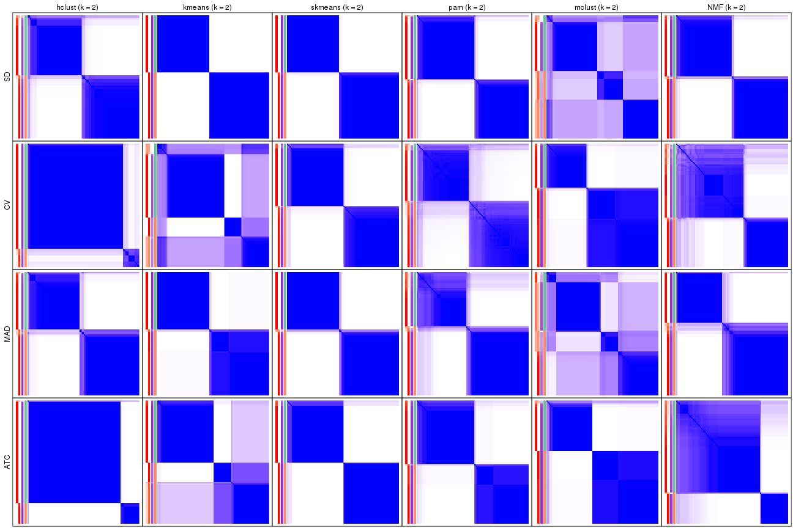
collect_plots(res_list, k = 3, fun = consensus_heatmap, mc.cores = 4)
collect_plots(res_list, k = 4, fun = consensus_heatmap, mc.cores = 4)
collect_plots(res_list, k = 5, fun = consensus_heatmap, mc.cores = 4)
collect_plots(res_list, k = 6, fun = consensus_heatmap, mc.cores = 4)
Membership heatmaps for all methods. (What is a membership heatmap?)
collect_plots(res_list, k = 2, fun = membership_heatmap, mc.cores = 4)
collect_plots(res_list, k = 3, fun = membership_heatmap, mc.cores = 4)
collect_plots(res_list, k = 4, fun = membership_heatmap, mc.cores = 4)

collect_plots(res_list, k = 5, fun = membership_heatmap, mc.cores = 4)
collect_plots(res_list, k = 6, fun = membership_heatmap, mc.cores = 4)
Signature heatmaps for all methods. (What is a signature heatmap?)
Note in following heatmaps, rows are scaled.
collect_plots(res_list, k = 2, fun = get_signatures, mc.cores = 4)
collect_plots(res_list, k = 3, fun = get_signatures, mc.cores = 4)
collect_plots(res_list, k = 4, fun = get_signatures, mc.cores = 4)
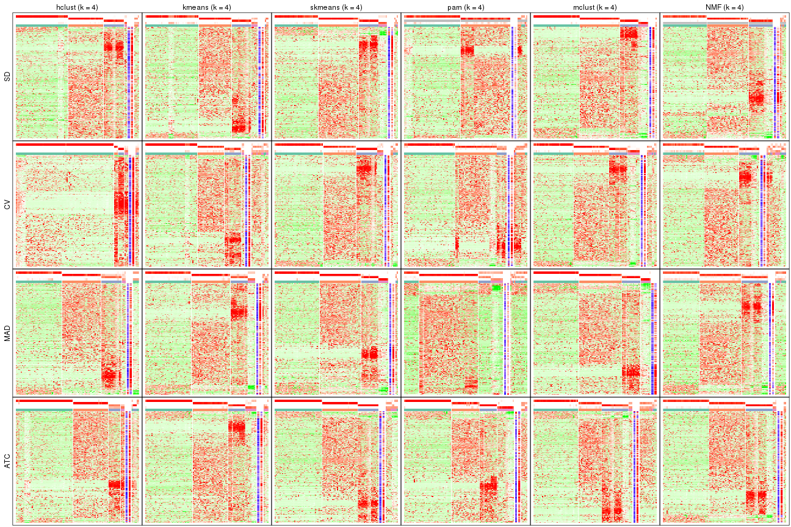
collect_plots(res_list, k = 5, fun = get_signatures, mc.cores = 4)
collect_plots(res_list, k = 6, fun = get_signatures, mc.cores = 4)
The statistics used for measuring the stability of consensus partitioning. (How are they defined?)
get_stats(res_list, k = 2)
#> k 1-PAC mean_silhouette concordance area_increased Rand Jaccard
#> SD:NMF 2 1.000 0.969 0.987 0.505 0.495 0.495
#> CV:NMF 2 0.727 0.906 0.946 0.493 0.515 0.515
#> MAD:NMF 2 0.956 0.945 0.975 0.494 0.511 0.511
#> ATC:NMF 2 0.714 0.908 0.948 0.405 0.618 0.618
#> SD:skmeans 2 1.000 0.997 0.998 0.503 0.497 0.497
#> CV:skmeans 2 1.000 0.975 0.988 0.506 0.495 0.495
#> MAD:skmeans 2 1.000 0.974 0.990 0.504 0.497 0.497
#> ATC:skmeans 2 1.000 0.987 0.994 0.506 0.495 0.495
#> SD:mclust 2 0.342 0.650 0.759 0.429 0.499 0.499
#> CV:mclust 2 1.000 0.979 0.985 0.463 0.535 0.535
#> MAD:mclust 2 0.385 0.753 0.816 0.452 0.496 0.496
#> ATC:mclust 2 1.000 0.967 0.983 0.483 0.511 0.511
#> SD:kmeans 2 1.000 1.000 1.000 0.503 0.497 0.497
#> CV:kmeans 2 0.537 0.704 0.860 0.406 0.515 0.515
#> MAD:kmeans 2 1.000 0.987 0.988 0.499 0.497 0.497
#> ATC:kmeans 2 0.553 0.926 0.918 0.452 0.495 0.495
#> SD:pam 2 1.000 0.965 0.986 0.505 0.495 0.495
#> CV:pam 2 0.733 0.902 0.948 0.496 0.497 0.497
#> MAD:pam 2 0.779 0.922 0.962 0.490 0.501 0.501
#> ATC:pam 2 1.000 0.976 0.987 0.503 0.495 0.495
#> SD:hclust 2 0.973 0.945 0.976 0.503 0.495 0.495
#> CV:hclust 2 0.977 0.983 0.983 0.232 0.746 0.746
#> MAD:hclust 2 0.977 0.953 0.980 0.502 0.497 0.497
#> ATC:hclust 2 1.000 0.987 0.995 0.288 0.717 0.717
get_stats(res_list, k = 3)
#> k 1-PAC mean_silhouette concordance area_increased Rand Jaccard
#> SD:NMF 3 0.961 0.939 0.971 0.291 0.810 0.632
#> CV:NMF 3 0.889 0.884 0.948 0.329 0.796 0.613
#> MAD:NMF 3 0.808 0.914 0.921 0.313 0.832 0.672
#> ATC:NMF 3 1.000 0.994 0.997 0.623 0.692 0.514
#> SD:skmeans 3 1.000 0.992 0.996 0.254 0.871 0.740
#> CV:skmeans 3 1.000 0.960 0.984 0.263 0.809 0.634
#> MAD:skmeans 3 1.000 0.972 0.984 0.243 0.871 0.740
#> ATC:skmeans 3 1.000 0.984 0.994 0.269 0.793 0.609
#> SD:mclust 3 0.994 0.956 0.978 0.539 0.777 0.580
#> CV:mclust 3 0.890 0.889 0.950 0.423 0.796 0.619
#> MAD:mclust 3 0.938 0.945 0.969 0.460 0.789 0.597
#> ATC:mclust 3 0.972 0.932 0.972 0.374 0.828 0.663
#> SD:kmeans 3 0.996 0.971 0.963 0.250 0.871 0.740
#> CV:kmeans 3 0.882 0.918 0.938 0.438 0.780 0.607
#> MAD:kmeans 3 0.809 0.903 0.908 0.231 0.871 0.740
#> ATC:kmeans 3 1.000 0.966 0.979 0.379 0.819 0.654
#> SD:pam 3 0.779 0.763 0.900 0.132 0.990 0.980
#> CV:pam 3 0.581 0.697 0.873 0.176 0.923 0.845
#> MAD:pam 3 0.763 0.809 0.877 0.179 0.862 0.736
#> ATC:pam 3 0.758 0.824 0.887 0.254 0.890 0.777
#> SD:hclust 3 0.963 0.934 0.963 0.237 0.878 0.754
#> CV:hclust 3 0.998 0.955 0.978 0.124 0.993 0.990
#> MAD:hclust 3 0.773 0.885 0.886 0.218 0.853 0.710
#> ATC:hclust 3 1.000 0.946 0.979 1.129 0.675 0.547
get_stats(res_list, k = 4)
#> k 1-PAC mean_silhouette concordance area_increased Rand Jaccard
#> SD:NMF 4 0.755 0.849 0.869 0.0863 0.975 0.930
#> CV:NMF 4 0.643 0.691 0.818 0.1106 0.943 0.836
#> MAD:NMF 4 0.664 0.746 0.837 0.0885 0.983 0.952
#> ATC:NMF 4 0.911 0.896 0.931 0.0605 0.978 0.937
#> SD:skmeans 4 0.849 0.896 0.932 0.1096 0.935 0.825
#> CV:skmeans 4 0.839 0.841 0.908 0.0944 0.964 0.899
#> MAD:skmeans 4 0.967 0.939 0.972 0.0991 0.940 0.837
#> ATC:skmeans 4 0.959 0.875 0.948 0.0534 0.957 0.882
#> SD:mclust 4 0.988 0.956 0.977 0.0498 0.973 0.921
#> CV:mclust 4 0.782 0.799 0.898 0.0979 0.919 0.765
#> MAD:mclust 4 1.000 0.968 0.982 0.0457 0.973 0.921
#> ATC:mclust 4 0.799 0.737 0.850 0.0698 0.969 0.908
#> SD:kmeans 4 0.810 0.858 0.902 0.0970 0.968 0.912
#> CV:kmeans 4 0.783 0.771 0.864 0.1306 0.940 0.845
#> MAD:kmeans 4 0.734 0.863 0.896 0.1074 0.940 0.837
#> ATC:kmeans 4 0.879 0.909 0.939 0.1037 0.902 0.743
#> SD:pam 4 0.746 0.762 0.882 0.0285 1.000 1.000
#> CV:pam 4 0.588 0.700 0.867 0.0164 0.977 0.946
#> MAD:pam 4 0.757 0.731 0.830 0.0572 0.916 0.801
#> ATC:pam 4 0.887 0.876 0.938 0.1305 0.870 0.676
#> SD:hclust 4 0.915 0.917 0.955 0.0637 0.971 0.923
#> CV:hclust 4 0.977 0.947 0.969 0.0370 0.994 0.992
#> MAD:hclust 4 0.705 0.849 0.870 0.0794 0.978 0.941
#> ATC:hclust 4 0.937 0.888 0.945 0.0181 0.991 0.978
get_stats(res_list, k = 5)
#> k 1-PAC mean_silhouette concordance area_increased Rand Jaccard
#> SD:NMF 5 0.708 0.652 0.807 0.0561 0.943 0.835
#> CV:NMF 5 0.580 0.532 0.727 0.0700 0.944 0.818
#> MAD:NMF 5 0.693 0.628 0.770 0.0592 0.969 0.906
#> ATC:NMF 5 0.757 0.765 0.878 0.0576 0.984 0.951
#> SD:skmeans 5 0.739 0.790 0.876 0.0543 0.980 0.935
#> CV:skmeans 5 0.678 0.764 0.822 0.0676 0.951 0.849
#> MAD:skmeans 5 0.782 0.847 0.901 0.0621 0.976 0.922
#> ATC:skmeans 5 0.998 0.961 0.978 0.0465 0.968 0.900
#> SD:mclust 5 0.786 0.801 0.885 0.0666 0.986 0.954
#> CV:mclust 5 0.814 0.833 0.916 0.0293 0.972 0.898
#> MAD:mclust 5 0.812 0.801 0.886 0.0716 0.962 0.878
#> ATC:mclust 5 0.769 0.685 0.814 0.0491 0.933 0.789
#> SD:kmeans 5 0.771 0.741 0.807 0.0669 0.888 0.667
#> CV:kmeans 5 0.770 0.771 0.840 0.0649 0.930 0.799
#> MAD:kmeans 5 0.763 0.822 0.856 0.0778 0.958 0.867
#> ATC:kmeans 5 0.879 0.870 0.901 0.0539 0.977 0.922
#> SD:pam 5 0.738 0.712 0.877 0.0150 0.979 0.956
#> CV:pam 5 0.602 0.716 0.877 0.0168 0.987 0.969
#> MAD:pam 5 0.758 0.665 0.808 0.0236 0.973 0.926
#> ATC:pam 5 0.872 0.764 0.883 0.0422 0.940 0.800
#> SD:hclust 5 0.885 0.888 0.933 0.0273 0.979 0.940
#> CV:hclust 5 0.980 0.960 0.978 0.0216 0.997 0.995
#> MAD:hclust 5 0.759 0.832 0.876 0.0796 0.944 0.836
#> ATC:hclust 5 0.946 0.862 0.934 0.0263 0.989 0.971
get_stats(res_list, k = 6)
#> k 1-PAC mean_silhouette concordance area_increased Rand Jaccard
#> SD:NMF 6 0.676 0.647 0.765 0.04751 0.952 0.838
#> CV:NMF 6 0.599 0.441 0.647 0.04749 0.947 0.801
#> MAD:NMF 6 0.666 0.568 0.722 0.03719 0.969 0.895
#> ATC:NMF 6 0.725 0.710 0.814 0.04555 0.992 0.975
#> SD:skmeans 6 0.703 0.774 0.829 0.03912 0.986 0.950
#> CV:skmeans 6 0.643 0.646 0.753 0.04807 0.986 0.950
#> MAD:skmeans 6 0.735 0.631 0.838 0.04943 0.975 0.916
#> ATC:skmeans 6 0.950 0.894 0.940 0.02567 0.999 0.997
#> SD:mclust 6 0.721 0.677 0.818 0.07866 0.872 0.581
#> CV:mclust 6 0.818 0.713 0.850 0.03470 0.935 0.767
#> MAD:mclust 6 0.822 0.816 0.895 0.08314 0.901 0.652
#> ATC:mclust 6 0.755 0.674 0.801 0.03712 0.959 0.847
#> SD:kmeans 6 0.692 0.727 0.811 0.05476 0.935 0.763
#> CV:kmeans 6 0.797 0.708 0.796 0.04233 0.962 0.873
#> MAD:kmeans 6 0.734 0.678 0.814 0.05888 0.964 0.869
#> ATC:kmeans 6 0.832 0.841 0.859 0.04138 0.993 0.974
#> SD:pam 6 0.727 0.660 0.873 0.01604 0.990 0.979
#> CV:pam 6 0.608 0.680 0.870 0.00873 0.998 0.995
#> MAD:pam 6 0.749 0.655 0.797 0.01758 0.988 0.966
#> ATC:pam 6 0.840 0.663 0.856 0.01621 0.987 0.947
#> SD:hclust 6 0.888 0.844 0.915 0.02180 0.995 0.986
#> CV:hclust 6 0.803 0.920 0.951 0.13827 0.999 0.998
#> MAD:hclust 6 0.711 0.711 0.810 0.04502 0.931 0.773
#> ATC:hclust 6 0.924 0.846 0.910 0.02306 0.992 0.978
Following heatmap plots the partition for each combination of methods and the lightness correspond to the silhouette scores for samples in each method. On top the consensus subgroup is inferred from all methods by taking the mean silhouette scores as weight.
collect_stats(res_list, k = 2)
collect_stats(res_list, k = 3)
collect_stats(res_list, k = 4)
collect_stats(res_list, k = 5)
collect_stats(res_list, k = 6)
Collect partitions from all methods:
collect_classes(res_list, k = 2)
collect_classes(res_list, k = 3)
collect_classes(res_list, k = 4)
collect_classes(res_list, k = 5)
collect_classes(res_list, k = 6)
Overlap of top rows from different top-row methods:
top_rows_overlap(res_list, top_n = 348, method = "euler")
top_rows_overlap(res_list, top_n = 696, method = "euler")
top_rows_overlap(res_list, top_n = 1043, method = "euler")
top_rows_overlap(res_list, top_n = 1390, method = "euler")
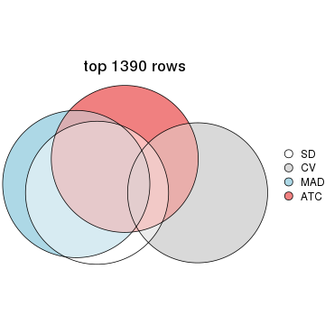
top_rows_overlap(res_list, top_n = 1738, method = "euler")
Also visualize the correspondance of rankings between different top-row methods:
top_rows_overlap(res_list, top_n = 348, method = "correspondance")
top_rows_overlap(res_list, top_n = 696, method = "correspondance")
top_rows_overlap(res_list, top_n = 1043, method = "correspondance")
top_rows_overlap(res_list, top_n = 1390, method = "correspondance")
top_rows_overlap(res_list, top_n = 1738, method = "correspondance")
Heatmaps of the top rows:
top_rows_heatmap(res_list, top_n = 348)
top_rows_heatmap(res_list, top_n = 696)
top_rows_heatmap(res_list, top_n = 1043)
top_rows_heatmap(res_list, top_n = 1390)
top_rows_heatmap(res_list, top_n = 1738)
The object with results only for a single top-value method and a single partition method can be extracted as:
res = res_list["SD", "hclust"]
# you can also extract it by
# res = res_list["SD:hclust"]
A summary of res and all the functions that can be applied to it:
res
#> A 'ConsensusPartition' object with k = 2, 3, 4, 5, 6.
#> On a matrix with 3475 rows and 95 columns.
#> Top rows (348, 696, 1043, 1390, 1738) are extracted by 'SD' method.
#> Subgroups are detected by 'hclust' method.
#> Performed in total 1250 partitions by row resampling.
#> Best k for subgroups seems to be 4.
#>
#> Following methods can be applied to this 'ConsensusPartition' object:
#> [1] "cola_report" "collect_classes" "collect_plots"
#> [4] "collect_stats" "colnames" "compare_signatures"
#> [7] "consensus_heatmap" "dimension_reduction" "functional_enrichment"
#> [10] "get_anno_col" "get_anno" "get_classes"
#> [13] "get_consensus" "get_matrix" "get_membership"
#> [16] "get_param" "get_signatures" "get_stats"
#> [19] "is_best_k" "is_stable_k" "membership_heatmap"
#> [22] "ncol" "nrow" "plot_ecdf"
#> [25] "rownames" "select_partition_number" "show"
#> [28] "suggest_best_k" "test_to_known_factors"
collect_plots() function collects all the plots made from res for all k (number of partitions)
into one single page to provide an easy and fast comparison between different k.
collect_plots(res)
The plots are:
k and the heatmap of
predicted classes for each k.k.k.k.All the plots in panels can be made by individual functions and they are plotted later in this section.
select_partition_number() produces several plots showing different
statistics for choosing “optimized” k. There are following statistics:
k;k, the area increased is defined as \(A_k - A_{k-1}\).The detailed explanations of these statistics can be found in the cola vignette.
Generally speaking, lower PAC score, higher mean silhouette score or higher
concordance corresponds to better partition. Rand index and Jaccard index
measure how similar the current partition is compared to partition with k-1.
If they are too similar, we won't accept k is better than k-1.
select_partition_number(res)
The numeric values for all these statistics can be obtained by get_stats().
get_stats(res)
#> k 1-PAC mean_silhouette concordance area_increased Rand Jaccard
#> 2 2 0.973 0.945 0.976 0.5031 0.495 0.495
#> 3 3 0.963 0.934 0.963 0.2372 0.878 0.754
#> 4 4 0.915 0.917 0.955 0.0637 0.971 0.923
#> 5 5 0.885 0.888 0.933 0.0273 0.979 0.940
#> 6 6 0.888 0.844 0.915 0.0218 0.995 0.986
suggest_best_k() suggests the best \(k\) based on these statistics. The rules are as follows:
suggest_best_k(res)
#> [1] 4
#> attr(,"optional")
#> [1] 2 3
There is also optional best \(k\) = 2 3 that is worth to check.
Following shows the table of the partitions (You need to click the show/hide
code output link to see it). The membership matrix (columns with name p*)
is inferred by
clue::cl_consensus()
function with the SE method. Basically the value in the membership matrix
represents the probability to belong to a certain group. The finall class
label for an item is determined with the group with highest probability it
belongs to.
In get_classes() function, the entropy is calculated from the membership
matrix and the silhouette score is calculated from the consensus matrix.
cbind(get_classes(res, k = 2), get_membership(res, k = 2))
#> class entropy silhouette p1 p2
#> SRR2062258 1 0.9635 0.378 0.612 0.388
#> SRR2062259 1 0.0000 0.970 1.000 0.000
#> SRR2062270 2 0.0000 0.978 0.000 1.000
#> SRR2062342 2 0.0000 0.978 0.000 1.000
#> SRR2062341 1 0.0000 0.970 1.000 0.000
#> SRR2062340 2 0.0000 0.978 0.000 1.000
#> SRR2062339 1 0.0000 0.970 1.000 0.000
#> SRR2062348 1 0.0000 0.970 1.000 0.000
#> SRR2062347 2 0.0000 0.978 0.000 1.000
#> SRR2062351 1 0.0000 0.970 1.000 0.000
#> SRR2062350 1 0.0000 0.970 1.000 0.000
#> SRR2062349 2 0.0000 0.978 0.000 1.000
#> SRR2062346 1 0.0000 0.970 1.000 0.000
#> SRR2062345 2 0.0000 0.978 0.000 1.000
#> SRR2062344 2 0.0376 0.976 0.004 0.996
#> SRR2062343 2 0.0000 0.978 0.000 1.000
#> SRR2062354 1 0.0000 0.970 1.000 0.000
#> SRR2062353 2 0.0000 0.978 0.000 1.000
#> SRR2062352 1 0.0000 0.970 1.000 0.000
#> SRR2063021 1 0.3584 0.917 0.932 0.068
#> SRR2062356 1 0.0000 0.970 1.000 0.000
#> SRR2063025 2 0.0000 0.978 0.000 1.000
#> SRR2063027 1 0.0000 0.970 1.000 0.000
#> SRR2063023 2 0.3431 0.926 0.064 0.936
#> SRR2062355 2 0.3431 0.926 0.064 0.936
#> SRR2063030 1 0.0000 0.970 1.000 0.000
#> SRR2064285 1 0.0672 0.965 0.992 0.008
#> SRR2063034 1 0.0376 0.967 0.996 0.004
#> SRR2063032 1 0.6343 0.810 0.840 0.160
#> SRR2063031 1 0.0000 0.970 1.000 0.000
#> SRR2063029 2 0.0000 0.978 0.000 1.000
#> SRR2063028 1 0.0000 0.970 1.000 0.000
#> SRR2064308 2 0.0000 0.978 0.000 1.000
#> SRR2064310 2 0.7602 0.722 0.220 0.780
#> SRR2064312 1 0.0000 0.970 1.000 0.000
#> SRR2064314 2 0.0000 0.978 0.000 1.000
#> SRR2064315 1 0.0000 0.970 1.000 0.000
#> SRR2064317 2 0.0000 0.978 0.000 1.000
#> SRR2064318 1 0.0000 0.970 1.000 0.000
#> SRR2064319 1 0.0000 0.970 1.000 0.000
#> SRR2064320 2 0.0938 0.971 0.012 0.988
#> SRR2064321 2 0.0000 0.978 0.000 1.000
#> SRR2064322 2 0.0000 0.978 0.000 1.000
#> SRR2064323 1 0.9686 0.356 0.604 0.396
#> SRR2064324 2 0.0000 0.978 0.000 1.000
#> SRR2064325 1 0.0000 0.970 1.000 0.000
#> SRR2064326 1 0.3584 0.917 0.932 0.068
#> SRR2064327 2 0.0376 0.976 0.004 0.996
#> SRR2064329 1 0.0000 0.970 1.000 0.000
#> SRR2064328 2 0.0000 0.978 0.000 1.000
#> SRR2064330 2 0.1843 0.958 0.028 0.972
#> SRR2064331 2 0.0376 0.976 0.004 0.996
#> SRR2064332 2 0.0000 0.978 0.000 1.000
#> SRR2064333 1 0.0000 0.970 1.000 0.000
#> SRR2064334 2 0.0000 0.978 0.000 1.000
#> SRR2064335 2 0.0000 0.978 0.000 1.000
#> SRR2064436 1 0.0000 0.970 1.000 0.000
#> SRR2064457 1 0.0000 0.970 1.000 0.000
#> SRR2064458 2 0.8267 0.652 0.260 0.740
#> SRR2064459 2 0.0376 0.976 0.004 0.996
#> SRR2064460 1 0.0000 0.970 1.000 0.000
#> SRR2064461 2 0.0000 0.978 0.000 1.000
#> SRR2064462 1 0.0000 0.970 1.000 0.000
#> SRR2064534 2 0.0000 0.978 0.000 1.000
#> SRR2064535 2 0.0376 0.976 0.004 0.996
#> SRR2064536 2 0.0000 0.978 0.000 1.000
#> SRR2064537 1 0.3584 0.917 0.932 0.068
#> SRR2064538 1 0.0000 0.970 1.000 0.000
#> SRR2064539 2 0.0000 0.978 0.000 1.000
#> SRR2064540 1 0.0000 0.970 1.000 0.000
#> SRR2064541 2 0.0000 0.978 0.000 1.000
#> SRR2064543 1 0.0000 0.970 1.000 0.000
#> SRR2064542 1 0.0000 0.970 1.000 0.000
#> SRR2064544 2 0.0938 0.971 0.012 0.988
#> SRR2064545 2 0.0000 0.978 0.000 1.000
#> SRR2064546 1 0.0000 0.970 1.000 0.000
#> SRR2064547 1 0.0000 0.970 1.000 0.000
#> SRR2064548 2 0.2423 0.948 0.040 0.960
#> SRR2064550 2 0.3431 0.926 0.064 0.936
#> SRR2064549 1 0.3584 0.917 0.932 0.068
#> SRR2064551 2 0.0000 0.978 0.000 1.000
#> SRR2064552 1 0.0000 0.970 1.000 0.000
#> SRR2064553 2 0.0000 0.978 0.000 1.000
#> SRR2064554 1 0.3584 0.917 0.932 0.068
#> SRR2064555 2 0.0376 0.976 0.004 0.996
#> SRR2064556 1 0.0000 0.970 1.000 0.000
#> SRR2064559 2 0.0000 0.978 0.000 1.000
#> SRR2064558 2 0.0376 0.976 0.004 0.996
#> SRR2064557 2 0.0000 0.978 0.000 1.000
#> SRR2064560 1 0.0000 0.970 1.000 0.000
#> SRR2064561 2 0.7602 0.722 0.220 0.780
#> SRR2064562 1 0.0000 0.970 1.000 0.000
#> SRR2064564 1 0.0000 0.970 1.000 0.000
#> SRR2064563 2 0.0000 0.978 0.000 1.000
#> SRR2064565 2 0.0672 0.974 0.008 0.992
cbind(get_classes(res, k = 3), get_membership(res, k = 3))
#> class entropy silhouette p1 p2 p3
#> SRR2062258 1 0.7809 0.325 0.568 0.372 0.060
#> SRR2062259 1 0.0000 0.965 1.000 0.000 0.000
#> SRR2062270 3 0.2625 0.953 0.000 0.084 0.916
#> SRR2062342 2 0.0000 0.966 0.000 1.000 0.000
#> SRR2062341 1 0.0000 0.965 1.000 0.000 0.000
#> SRR2062340 2 0.0000 0.966 0.000 1.000 0.000
#> SRR2062339 1 0.0000 0.965 1.000 0.000 0.000
#> SRR2062348 1 0.0000 0.965 1.000 0.000 0.000
#> SRR2062347 2 0.0000 0.966 0.000 1.000 0.000
#> SRR2062351 1 0.0000 0.965 1.000 0.000 0.000
#> SRR2062350 1 0.0000 0.965 1.000 0.000 0.000
#> SRR2062349 2 0.0000 0.966 0.000 1.000 0.000
#> SRR2062346 1 0.0000 0.965 1.000 0.000 0.000
#> SRR2062345 2 0.0000 0.966 0.000 1.000 0.000
#> SRR2062344 3 0.1643 0.969 0.000 0.044 0.956
#> SRR2062343 2 0.0000 0.966 0.000 1.000 0.000
#> SRR2062354 1 0.0000 0.965 1.000 0.000 0.000
#> SRR2062353 2 0.0000 0.966 0.000 1.000 0.000
#> SRR2062352 1 0.0000 0.965 1.000 0.000 0.000
#> SRR2063021 1 0.2947 0.903 0.920 0.060 0.020
#> SRR2062356 1 0.0000 0.965 1.000 0.000 0.000
#> SRR2063025 2 0.0000 0.966 0.000 1.000 0.000
#> SRR2063027 1 0.0000 0.965 1.000 0.000 0.000
#> SRR2063023 3 0.3683 0.922 0.060 0.044 0.896
#> SRR2062355 3 0.4609 0.894 0.052 0.092 0.856
#> SRR2063030 1 0.0000 0.965 1.000 0.000 0.000
#> SRR2064285 1 0.0424 0.960 0.992 0.000 0.008
#> SRR2063034 1 0.0237 0.962 0.996 0.000 0.004
#> SRR2063032 1 0.5730 0.774 0.796 0.144 0.060
#> SRR2063031 1 0.0000 0.965 1.000 0.000 0.000
#> SRR2063029 2 0.0000 0.966 0.000 1.000 0.000
#> SRR2063028 1 0.0000 0.965 1.000 0.000 0.000
#> SRR2064308 3 0.2959 0.940 0.000 0.100 0.900
#> SRR2064310 2 0.5318 0.707 0.204 0.780 0.016
#> SRR2064312 1 0.0000 0.965 1.000 0.000 0.000
#> SRR2064314 2 0.0000 0.966 0.000 1.000 0.000
#> SRR2064315 1 0.0000 0.965 1.000 0.000 0.000
#> SRR2064317 2 0.0000 0.966 0.000 1.000 0.000
#> SRR2064318 1 0.0000 0.965 1.000 0.000 0.000
#> SRR2064319 1 0.0000 0.965 1.000 0.000 0.000
#> SRR2064320 2 0.0592 0.956 0.012 0.988 0.000
#> SRR2064321 3 0.1753 0.969 0.000 0.048 0.952
#> SRR2064322 2 0.0000 0.966 0.000 1.000 0.000
#> SRR2064323 1 0.7839 0.302 0.560 0.380 0.060
#> SRR2064324 2 0.0000 0.966 0.000 1.000 0.000
#> SRR2064325 1 0.0000 0.965 1.000 0.000 0.000
#> SRR2064326 1 0.2947 0.903 0.920 0.060 0.020
#> SRR2064327 3 0.1643 0.969 0.000 0.044 0.956
#> SRR2064329 1 0.0000 0.965 1.000 0.000 0.000
#> SRR2064328 2 0.0000 0.966 0.000 1.000 0.000
#> SRR2064330 2 0.1315 0.944 0.020 0.972 0.008
#> SRR2064331 3 0.1643 0.969 0.000 0.044 0.956
#> SRR2064332 3 0.1753 0.969 0.000 0.048 0.952
#> SRR2064333 1 0.0000 0.965 1.000 0.000 0.000
#> SRR2064334 2 0.0000 0.966 0.000 1.000 0.000
#> SRR2064335 2 0.0000 0.966 0.000 1.000 0.000
#> SRR2064436 1 0.0000 0.965 1.000 0.000 0.000
#> SRR2064457 1 0.0000 0.965 1.000 0.000 0.000
#> SRR2064458 2 0.6211 0.655 0.228 0.736 0.036
#> SRR2064459 3 0.1643 0.969 0.000 0.044 0.956
#> SRR2064460 1 0.0000 0.965 1.000 0.000 0.000
#> SRR2064461 2 0.0000 0.966 0.000 1.000 0.000
#> SRR2064462 1 0.0000 0.965 1.000 0.000 0.000
#> SRR2064534 2 0.0000 0.966 0.000 1.000 0.000
#> SRR2064535 3 0.1643 0.969 0.000 0.044 0.956
#> SRR2064536 3 0.2625 0.953 0.000 0.084 0.916
#> SRR2064537 1 0.2947 0.903 0.920 0.060 0.020
#> SRR2064538 1 0.0000 0.965 1.000 0.000 0.000
#> SRR2064539 3 0.2625 0.953 0.000 0.084 0.916
#> SRR2064540 1 0.0000 0.965 1.000 0.000 0.000
#> SRR2064541 2 0.0000 0.966 0.000 1.000 0.000
#> SRR2064543 1 0.0000 0.965 1.000 0.000 0.000
#> SRR2064542 1 0.0000 0.965 1.000 0.000 0.000
#> SRR2064544 2 0.0661 0.958 0.008 0.988 0.004
#> SRR2064545 2 0.0000 0.966 0.000 1.000 0.000
#> SRR2064546 1 0.0000 0.965 1.000 0.000 0.000
#> SRR2064547 1 0.0000 0.965 1.000 0.000 0.000
#> SRR2064548 2 0.1529 0.927 0.040 0.960 0.000
#> SRR2064550 3 0.4609 0.894 0.052 0.092 0.856
#> SRR2064549 1 0.2947 0.903 0.920 0.060 0.020
#> SRR2064551 2 0.0000 0.966 0.000 1.000 0.000
#> SRR2064552 1 0.0000 0.965 1.000 0.000 0.000
#> SRR2064553 3 0.1753 0.969 0.000 0.048 0.952
#> SRR2064554 1 0.2947 0.903 0.920 0.060 0.020
#> SRR2064555 3 0.1643 0.969 0.000 0.044 0.956
#> SRR2064556 1 0.0000 0.965 1.000 0.000 0.000
#> SRR2064559 2 0.0000 0.966 0.000 1.000 0.000
#> SRR2064558 3 0.1643 0.969 0.000 0.044 0.956
#> SRR2064557 2 0.0000 0.966 0.000 1.000 0.000
#> SRR2064560 1 0.0000 0.965 1.000 0.000 0.000
#> SRR2064561 2 0.6255 0.679 0.204 0.748 0.048
#> SRR2064562 1 0.0000 0.965 1.000 0.000 0.000
#> SRR2064564 1 0.0000 0.965 1.000 0.000 0.000
#> SRR2064563 2 0.0000 0.966 0.000 1.000 0.000
#> SRR2064565 2 0.0475 0.961 0.004 0.992 0.004
cbind(get_classes(res, k = 4), get_membership(res, k = 4))
#> class entropy silhouette p1 p2 p3 p4
#> SRR2062258 4 0.4095 0.764 0.172 0.024 0.000 0.804
#> SRR2062259 1 0.0188 0.978 0.996 0.000 0.000 0.004
#> SRR2062270 3 0.1302 0.922 0.000 0.044 0.956 0.000
#> SRR2062342 2 0.0000 0.944 0.000 1.000 0.000 0.000
#> SRR2062341 1 0.0000 0.979 1.000 0.000 0.000 0.000
#> SRR2062340 2 0.0000 0.944 0.000 1.000 0.000 0.000
#> SRR2062339 1 0.0000 0.979 1.000 0.000 0.000 0.000
#> SRR2062348 1 0.0188 0.978 0.996 0.000 0.000 0.004
#> SRR2062347 2 0.0000 0.944 0.000 1.000 0.000 0.000
#> SRR2062351 1 0.0188 0.978 0.996 0.000 0.000 0.004
#> SRR2062350 1 0.0000 0.979 1.000 0.000 0.000 0.000
#> SRR2062349 2 0.0000 0.944 0.000 1.000 0.000 0.000
#> SRR2062346 1 0.0336 0.975 0.992 0.000 0.000 0.008
#> SRR2062345 2 0.0000 0.944 0.000 1.000 0.000 0.000
#> SRR2062344 3 0.1716 0.929 0.000 0.000 0.936 0.064
#> SRR2062343 2 0.0000 0.944 0.000 1.000 0.000 0.000
#> SRR2062354 1 0.0188 0.978 0.996 0.000 0.000 0.004
#> SRR2062353 2 0.0188 0.943 0.000 0.996 0.000 0.004
#> SRR2062352 1 0.0188 0.978 0.996 0.000 0.000 0.004
#> SRR2063021 1 0.2345 0.857 0.900 0.000 0.000 0.100
#> SRR2062356 1 0.0000 0.979 1.000 0.000 0.000 0.000
#> SRR2063025 2 0.0000 0.944 0.000 1.000 0.000 0.000
#> SRR2063027 1 0.0188 0.978 0.996 0.000 0.000 0.004
#> SRR2063023 3 0.3764 0.850 0.012 0.000 0.816 0.172
#> SRR2062355 3 0.3342 0.848 0.032 0.000 0.868 0.100
#> SRR2063030 1 0.0000 0.979 1.000 0.000 0.000 0.000
#> SRR2064285 1 0.0524 0.969 0.988 0.000 0.004 0.008
#> SRR2063034 1 0.0188 0.976 0.996 0.000 0.000 0.004
#> SRR2063032 4 0.4967 0.438 0.452 0.000 0.000 0.548
#> SRR2063031 1 0.0188 0.978 0.996 0.000 0.000 0.004
#> SRR2063029 2 0.0000 0.944 0.000 1.000 0.000 0.000
#> SRR2063028 1 0.0000 0.979 1.000 0.000 0.000 0.000
#> SRR2064308 3 0.1978 0.897 0.000 0.068 0.928 0.004
#> SRR2064310 2 0.5781 0.443 0.036 0.584 0.000 0.380
#> SRR2064312 1 0.0188 0.978 0.996 0.000 0.000 0.004
#> SRR2064314 2 0.0592 0.938 0.000 0.984 0.000 0.016
#> SRR2064315 1 0.0000 0.979 1.000 0.000 0.000 0.000
#> SRR2064317 2 0.0000 0.944 0.000 1.000 0.000 0.000
#> SRR2064318 1 0.0000 0.979 1.000 0.000 0.000 0.000
#> SRR2064319 1 0.0000 0.979 1.000 0.000 0.000 0.000
#> SRR2064320 2 0.1022 0.930 0.000 0.968 0.000 0.032
#> SRR2064321 3 0.0336 0.936 0.000 0.008 0.992 0.000
#> SRR2064322 2 0.0000 0.944 0.000 1.000 0.000 0.000
#> SRR2064323 4 0.4149 0.760 0.168 0.028 0.000 0.804
#> SRR2064324 2 0.0188 0.943 0.000 0.996 0.000 0.004
#> SRR2064325 1 0.0188 0.978 0.996 0.000 0.000 0.004
#> SRR2064326 1 0.2345 0.857 0.900 0.000 0.000 0.100
#> SRR2064327 3 0.1716 0.929 0.000 0.000 0.936 0.064
#> SRR2064329 1 0.0188 0.978 0.996 0.000 0.000 0.004
#> SRR2064328 2 0.0000 0.944 0.000 1.000 0.000 0.000
#> SRR2064330 2 0.2011 0.897 0.000 0.920 0.000 0.080
#> SRR2064331 3 0.1716 0.929 0.000 0.000 0.936 0.064
#> SRR2064332 3 0.0336 0.936 0.000 0.008 0.992 0.000
#> SRR2064333 1 0.0188 0.978 0.996 0.000 0.000 0.004
#> SRR2064334 2 0.0000 0.944 0.000 1.000 0.000 0.000
#> SRR2064335 2 0.0188 0.943 0.000 0.996 0.000 0.004
#> SRR2064436 1 0.0000 0.979 1.000 0.000 0.000 0.000
#> SRR2064457 1 0.0188 0.978 0.996 0.000 0.000 0.004
#> SRR2064458 2 0.6222 0.303 0.056 0.532 0.000 0.412
#> SRR2064459 3 0.0000 0.935 0.000 0.000 1.000 0.000
#> SRR2064460 1 0.0000 0.979 1.000 0.000 0.000 0.000
#> SRR2064461 2 0.0000 0.944 0.000 1.000 0.000 0.000
#> SRR2064462 1 0.0000 0.979 1.000 0.000 0.000 0.000
#> SRR2064534 2 0.0000 0.944 0.000 1.000 0.000 0.000
#> SRR2064535 3 0.1716 0.929 0.000 0.000 0.936 0.064
#> SRR2064536 3 0.1576 0.918 0.000 0.048 0.948 0.004
#> SRR2064537 1 0.2345 0.857 0.900 0.000 0.000 0.100
#> SRR2064538 1 0.0000 0.979 1.000 0.000 0.000 0.000
#> SRR2064539 3 0.1576 0.918 0.000 0.048 0.948 0.004
#> SRR2064540 1 0.0000 0.979 1.000 0.000 0.000 0.000
#> SRR2064541 2 0.0592 0.938 0.000 0.984 0.000 0.016
#> SRR2064543 1 0.0000 0.979 1.000 0.000 0.000 0.000
#> SRR2064542 1 0.1474 0.924 0.948 0.000 0.000 0.052
#> SRR2064544 2 0.1474 0.918 0.000 0.948 0.000 0.052
#> SRR2064545 2 0.2011 0.899 0.000 0.920 0.000 0.080
#> SRR2064546 1 0.0000 0.979 1.000 0.000 0.000 0.000
#> SRR2064547 1 0.0000 0.979 1.000 0.000 0.000 0.000
#> SRR2064548 2 0.2714 0.865 0.004 0.884 0.000 0.112
#> SRR2064550 3 0.3342 0.848 0.032 0.000 0.868 0.100
#> SRR2064549 1 0.2345 0.857 0.900 0.000 0.000 0.100
#> SRR2064551 2 0.0000 0.944 0.000 1.000 0.000 0.000
#> SRR2064552 1 0.0188 0.978 0.996 0.000 0.000 0.004
#> SRR2064553 3 0.0336 0.936 0.000 0.008 0.992 0.000
#> SRR2064554 1 0.2345 0.857 0.900 0.000 0.000 0.100
#> SRR2064555 3 0.0000 0.935 0.000 0.000 1.000 0.000
#> SRR2064556 1 0.0000 0.979 1.000 0.000 0.000 0.000
#> SRR2064559 2 0.0000 0.944 0.000 1.000 0.000 0.000
#> SRR2064558 3 0.1716 0.929 0.000 0.000 0.936 0.064
#> SRR2064557 2 0.0000 0.944 0.000 1.000 0.000 0.000
#> SRR2064560 1 0.0000 0.979 1.000 0.000 0.000 0.000
#> SRR2064561 2 0.6706 0.358 0.032 0.540 0.036 0.392
#> SRR2064562 1 0.0188 0.978 0.996 0.000 0.000 0.004
#> SRR2064564 1 0.0000 0.979 1.000 0.000 0.000 0.000
#> SRR2064563 2 0.0000 0.944 0.000 1.000 0.000 0.000
#> SRR2064565 2 0.1637 0.913 0.000 0.940 0.000 0.060
cbind(get_classes(res, k = 5), get_membership(res, k = 5))
#> class entropy silhouette p1 p2 p3 p4 p5
#> SRR2062258 4 0.2206 0.271 0.068 0.004 0.000 0.912 0.016
#> SRR2062259 1 0.0510 0.974 0.984 0.000 0.000 0.000 0.016
#> SRR2062270 3 0.1205 0.878 0.000 0.040 0.956 0.000 0.004
#> SRR2062342 2 0.0000 0.954 0.000 1.000 0.000 0.000 0.000
#> SRR2062341 1 0.0162 0.975 0.996 0.000 0.000 0.004 0.000
#> SRR2062340 2 0.0510 0.949 0.000 0.984 0.000 0.000 0.016
#> SRR2062339 1 0.0865 0.970 0.972 0.000 0.000 0.004 0.024
#> SRR2062348 1 0.0290 0.975 0.992 0.000 0.000 0.000 0.008
#> SRR2062347 2 0.0324 0.953 0.000 0.992 0.000 0.004 0.004
#> SRR2062351 1 0.0510 0.975 0.984 0.000 0.000 0.000 0.016
#> SRR2062350 1 0.0404 0.975 0.988 0.000 0.000 0.000 0.012
#> SRR2062349 2 0.0000 0.954 0.000 1.000 0.000 0.000 0.000
#> SRR2062346 1 0.0865 0.972 0.972 0.000 0.000 0.004 0.024
#> SRR2062345 2 0.0000 0.954 0.000 1.000 0.000 0.000 0.000
#> SRR2062344 3 0.2732 0.858 0.000 0.000 0.840 0.000 0.160
#> SRR2062343 2 0.0162 0.953 0.000 0.996 0.000 0.000 0.004
#> SRR2062354 1 0.0404 0.974 0.988 0.000 0.000 0.000 0.012
#> SRR2062353 2 0.0290 0.952 0.000 0.992 0.000 0.000 0.008
#> SRR2062352 1 0.0451 0.975 0.988 0.000 0.000 0.004 0.008
#> SRR2063021 1 0.2249 0.887 0.896 0.000 0.000 0.096 0.008
#> SRR2062356 1 0.0451 0.975 0.988 0.000 0.000 0.004 0.008
#> SRR2063025 2 0.0000 0.954 0.000 1.000 0.000 0.000 0.000
#> SRR2063027 1 0.0510 0.974 0.984 0.000 0.000 0.000 0.016
#> SRR2063023 3 0.4894 0.487 0.000 0.000 0.520 0.024 0.456
#> SRR2062355 3 0.2983 0.818 0.032 0.000 0.868 0.096 0.004
#> SRR2063030 1 0.0451 0.975 0.988 0.000 0.000 0.004 0.008
#> SRR2064285 1 0.0865 0.969 0.972 0.000 0.000 0.004 0.024
#> SRR2063034 1 0.0794 0.971 0.972 0.000 0.000 0.000 0.028
#> SRR2063032 4 0.4682 0.231 0.356 0.000 0.000 0.620 0.024
#> SRR2063031 1 0.0290 0.975 0.992 0.000 0.000 0.000 0.008
#> SRR2063029 2 0.0324 0.953 0.000 0.992 0.000 0.004 0.004
#> SRR2063028 1 0.0404 0.976 0.988 0.000 0.000 0.000 0.012
#> SRR2064308 3 0.1764 0.854 0.000 0.064 0.928 0.000 0.008
#> SRR2064310 5 0.6780 0.905 0.000 0.240 0.004 0.320 0.436
#> SRR2064312 1 0.0566 0.975 0.984 0.000 0.000 0.004 0.012
#> SRR2064314 2 0.1012 0.937 0.000 0.968 0.000 0.020 0.012
#> SRR2064315 1 0.0324 0.975 0.992 0.000 0.000 0.004 0.004
#> SRR2064317 2 0.0000 0.954 0.000 1.000 0.000 0.000 0.000
#> SRR2064318 1 0.0000 0.975 1.000 0.000 0.000 0.000 0.000
#> SRR2064319 1 0.0671 0.973 0.980 0.000 0.000 0.004 0.016
#> SRR2064320 2 0.1444 0.920 0.000 0.948 0.000 0.040 0.012
#> SRR2064321 3 0.0162 0.890 0.000 0.004 0.996 0.000 0.000
#> SRR2064322 2 0.0324 0.953 0.000 0.992 0.000 0.004 0.004
#> SRR2064323 4 0.2037 0.264 0.064 0.004 0.000 0.920 0.012
#> SRR2064324 2 0.0693 0.946 0.000 0.980 0.000 0.012 0.008
#> SRR2064325 1 0.0609 0.974 0.980 0.000 0.000 0.000 0.020
#> SRR2064326 1 0.2249 0.887 0.896 0.000 0.000 0.096 0.008
#> SRR2064327 3 0.2605 0.862 0.000 0.000 0.852 0.000 0.148
#> SRR2064329 1 0.0290 0.975 0.992 0.000 0.000 0.000 0.008
#> SRR2064328 2 0.0290 0.954 0.000 0.992 0.000 0.000 0.008
#> SRR2064330 2 0.3362 0.788 0.000 0.844 0.000 0.080 0.076
#> SRR2064331 3 0.2605 0.862 0.000 0.000 0.852 0.000 0.148
#> SRR2064332 3 0.0324 0.889 0.000 0.004 0.992 0.000 0.004
#> SRR2064333 1 0.0703 0.973 0.976 0.000 0.000 0.000 0.024
#> SRR2064334 2 0.0324 0.953 0.000 0.992 0.000 0.004 0.004
#> SRR2064335 2 0.0451 0.953 0.000 0.988 0.000 0.004 0.008
#> SRR2064436 1 0.0566 0.975 0.984 0.000 0.000 0.004 0.012
#> SRR2064457 1 0.0290 0.975 0.992 0.000 0.000 0.000 0.008
#> SRR2064458 4 0.6955 -0.606 0.020 0.384 0.000 0.416 0.180
#> SRR2064459 3 0.0703 0.890 0.000 0.000 0.976 0.000 0.024
#> SRR2064460 1 0.0671 0.973 0.980 0.000 0.000 0.004 0.016
#> SRR2064461 2 0.0000 0.954 0.000 1.000 0.000 0.000 0.000
#> SRR2064462 1 0.0162 0.975 0.996 0.000 0.000 0.000 0.004
#> SRR2064534 2 0.0162 0.953 0.000 0.996 0.000 0.000 0.004
#> SRR2064535 3 0.2605 0.862 0.000 0.000 0.852 0.000 0.148
#> SRR2064536 3 0.1408 0.874 0.000 0.044 0.948 0.000 0.008
#> SRR2064537 1 0.2249 0.887 0.896 0.000 0.000 0.096 0.008
#> SRR2064538 1 0.0162 0.975 0.996 0.000 0.000 0.000 0.004
#> SRR2064539 3 0.1408 0.874 0.000 0.044 0.948 0.000 0.008
#> SRR2064540 1 0.0404 0.975 0.988 0.000 0.000 0.000 0.012
#> SRR2064541 2 0.1012 0.937 0.000 0.968 0.000 0.020 0.012
#> SRR2064543 1 0.0162 0.975 0.996 0.000 0.000 0.000 0.004
#> SRR2064542 1 0.1809 0.925 0.928 0.000 0.000 0.012 0.060
#> SRR2064544 2 0.2504 0.861 0.000 0.896 0.000 0.040 0.064
#> SRR2064545 2 0.3906 0.715 0.000 0.804 0.000 0.084 0.112
#> SRR2064546 1 0.0771 0.972 0.976 0.000 0.000 0.004 0.020
#> SRR2064547 1 0.0000 0.975 1.000 0.000 0.000 0.000 0.000
#> SRR2064548 2 0.4203 0.655 0.000 0.780 0.000 0.128 0.092
#> SRR2064550 3 0.2983 0.818 0.032 0.000 0.868 0.096 0.004
#> SRR2064549 1 0.2249 0.887 0.896 0.000 0.000 0.096 0.008
#> SRR2064551 2 0.0000 0.954 0.000 1.000 0.000 0.000 0.000
#> SRR2064552 1 0.0290 0.975 0.992 0.000 0.000 0.000 0.008
#> SRR2064553 3 0.0324 0.889 0.000 0.004 0.992 0.000 0.004
#> SRR2064554 1 0.2249 0.887 0.896 0.000 0.000 0.096 0.008
#> SRR2064555 3 0.0609 0.890 0.000 0.000 0.980 0.000 0.020
#> SRR2064556 1 0.0566 0.974 0.984 0.000 0.000 0.004 0.012
#> SRR2064559 2 0.0000 0.954 0.000 1.000 0.000 0.000 0.000
#> SRR2064558 3 0.2732 0.858 0.000 0.000 0.840 0.000 0.160
#> SRR2064557 2 0.0290 0.954 0.000 0.992 0.000 0.000 0.008
#> SRR2064560 1 0.0451 0.975 0.988 0.000 0.000 0.004 0.008
#> SRR2064561 5 0.7249 0.903 0.000 0.212 0.032 0.324 0.432
#> SRR2064562 1 0.0290 0.976 0.992 0.000 0.000 0.000 0.008
#> SRR2064564 1 0.0324 0.975 0.992 0.000 0.000 0.004 0.004
#> SRR2064563 2 0.0000 0.954 0.000 1.000 0.000 0.000 0.000
#> SRR2064565 2 0.2889 0.832 0.000 0.872 0.000 0.044 0.084
cbind(get_classes(res, k = 6), get_membership(res, k = 6))
#> class entropy silhouette p1 p2 p3 p4 p5 p6
#> SRR2062258 6 0.3155 0.512 0.036 0.000 0.000 0.004 0.132 0.828
#> SRR2062259 1 0.0603 0.964 0.980 0.000 0.000 0.016 0.004 0.000
#> SRR2062270 3 0.1268 0.723 0.000 0.036 0.952 0.008 0.004 0.000
#> SRR2062342 2 0.0000 0.943 0.000 1.000 0.000 0.000 0.000 0.000
#> SRR2062341 1 0.0547 0.965 0.980 0.000 0.000 0.020 0.000 0.000
#> SRR2062340 2 0.0603 0.938 0.000 0.980 0.000 0.004 0.016 0.000
#> SRR2062339 1 0.1610 0.945 0.916 0.000 0.000 0.084 0.000 0.000
#> SRR2062348 1 0.0508 0.964 0.984 0.000 0.000 0.012 0.004 0.000
#> SRR2062347 2 0.0405 0.942 0.000 0.988 0.000 0.004 0.008 0.000
#> SRR2062351 1 0.0935 0.964 0.964 0.000 0.000 0.032 0.004 0.000
#> SRR2062350 1 0.0790 0.965 0.968 0.000 0.000 0.032 0.000 0.000
#> SRR2062349 2 0.0000 0.943 0.000 1.000 0.000 0.000 0.000 0.000
#> SRR2062346 1 0.1141 0.962 0.948 0.000 0.000 0.052 0.000 0.000
#> SRR2062345 2 0.0000 0.943 0.000 1.000 0.000 0.000 0.000 0.000
#> SRR2062344 3 0.5864 0.472 0.000 0.000 0.620 0.172 0.060 0.148
#> SRR2062343 2 0.0146 0.943 0.000 0.996 0.000 0.000 0.004 0.000
#> SRR2062354 1 0.0405 0.962 0.988 0.000 0.000 0.008 0.004 0.000
#> SRR2062353 2 0.0520 0.940 0.000 0.984 0.000 0.008 0.008 0.000
#> SRR2062352 1 0.0547 0.965 0.980 0.000 0.000 0.020 0.000 0.000
#> SRR2063021 1 0.2070 0.896 0.896 0.000 0.000 0.000 0.012 0.092
#> SRR2062356 1 0.0790 0.964 0.968 0.000 0.000 0.032 0.000 0.000
#> SRR2063025 2 0.0000 0.943 0.000 1.000 0.000 0.000 0.000 0.000
#> SRR2063027 1 0.0858 0.964 0.968 0.000 0.000 0.028 0.004 0.000
#> SRR2063023 4 0.3198 0.000 0.000 0.000 0.260 0.740 0.000 0.000
#> SRR2062355 3 0.2884 0.630 0.032 0.000 0.864 0.004 0.008 0.092
#> SRR2063030 1 0.0865 0.963 0.964 0.000 0.000 0.036 0.000 0.000
#> SRR2064285 1 0.1442 0.961 0.944 0.000 0.000 0.040 0.012 0.004
#> SRR2063034 1 0.1700 0.941 0.916 0.000 0.000 0.080 0.004 0.000
#> SRR2063032 6 0.5772 0.325 0.316 0.000 0.000 0.028 0.108 0.548
#> SRR2063031 1 0.0291 0.963 0.992 0.000 0.000 0.004 0.004 0.000
#> SRR2063029 2 0.0405 0.942 0.000 0.988 0.000 0.004 0.008 0.000
#> SRR2063028 1 0.0937 0.964 0.960 0.000 0.000 0.040 0.000 0.000
#> SRR2064308 3 0.1668 0.693 0.000 0.060 0.928 0.008 0.004 0.000
#> SRR2064310 5 0.1806 0.663 0.000 0.088 0.004 0.000 0.908 0.000
#> SRR2064312 1 0.0777 0.965 0.972 0.000 0.000 0.024 0.004 0.000
#> SRR2064314 2 0.0790 0.929 0.000 0.968 0.000 0.000 0.032 0.000
#> SRR2064315 1 0.0790 0.964 0.968 0.000 0.000 0.032 0.000 0.000
#> SRR2064317 2 0.0000 0.943 0.000 1.000 0.000 0.000 0.000 0.000
#> SRR2064318 1 0.0363 0.965 0.988 0.000 0.000 0.012 0.000 0.000
#> SRR2064319 1 0.1501 0.950 0.924 0.000 0.000 0.076 0.000 0.000
#> SRR2064320 2 0.1387 0.900 0.000 0.932 0.000 0.000 0.068 0.000
#> SRR2064321 3 0.0146 0.734 0.000 0.000 0.996 0.004 0.000 0.000
#> SRR2064322 2 0.0405 0.942 0.000 0.988 0.000 0.004 0.008 0.000
#> SRR2064323 6 0.3235 0.502 0.032 0.000 0.000 0.008 0.136 0.824
#> SRR2064324 2 0.0858 0.931 0.000 0.968 0.000 0.004 0.028 0.000
#> SRR2064325 1 0.1007 0.963 0.956 0.000 0.000 0.044 0.000 0.000
#> SRR2064326 1 0.2070 0.896 0.896 0.000 0.000 0.000 0.012 0.092
#> SRR2064327 3 0.5765 0.494 0.000 0.000 0.636 0.152 0.064 0.148
#> SRR2064329 1 0.0363 0.963 0.988 0.000 0.000 0.012 0.000 0.000
#> SRR2064328 2 0.0405 0.942 0.000 0.988 0.000 0.004 0.008 0.000
#> SRR2064330 2 0.3735 0.707 0.000 0.776 0.004 0.036 0.180 0.004
#> SRR2064331 3 0.5765 0.494 0.000 0.000 0.636 0.152 0.064 0.148
#> SRR2064332 3 0.0508 0.735 0.000 0.000 0.984 0.004 0.012 0.000
#> SRR2064333 1 0.0865 0.965 0.964 0.000 0.000 0.036 0.000 0.000
#> SRR2064334 2 0.0405 0.942 0.000 0.988 0.000 0.004 0.008 0.000
#> SRR2064335 2 0.0508 0.942 0.000 0.984 0.000 0.004 0.012 0.000
#> SRR2064436 1 0.1141 0.960 0.948 0.000 0.000 0.052 0.000 0.000
#> SRR2064457 1 0.0405 0.963 0.988 0.000 0.000 0.008 0.004 0.000
#> SRR2064458 5 0.6843 0.447 0.012 0.288 0.000 0.056 0.476 0.168
#> SRR2064459 3 0.2389 0.663 0.000 0.000 0.864 0.128 0.008 0.000
#> SRR2064460 1 0.1204 0.957 0.944 0.000 0.000 0.056 0.000 0.000
#> SRR2064461 2 0.0000 0.943 0.000 1.000 0.000 0.000 0.000 0.000
#> SRR2064462 1 0.0458 0.965 0.984 0.000 0.000 0.016 0.000 0.000
#> SRR2064534 2 0.0260 0.943 0.000 0.992 0.000 0.000 0.008 0.000
#> SRR2064535 3 0.5796 0.492 0.000 0.000 0.632 0.156 0.064 0.148
#> SRR2064536 3 0.1340 0.720 0.000 0.040 0.948 0.008 0.004 0.000
#> SRR2064537 1 0.2070 0.896 0.896 0.000 0.000 0.000 0.012 0.092
#> SRR2064538 1 0.0603 0.965 0.980 0.000 0.000 0.016 0.004 0.000
#> SRR2064539 3 0.1340 0.720 0.000 0.040 0.948 0.008 0.004 0.000
#> SRR2064540 1 0.1075 0.961 0.952 0.000 0.000 0.048 0.000 0.000
#> SRR2064541 2 0.0790 0.929 0.000 0.968 0.000 0.000 0.032 0.000
#> SRR2064543 1 0.0363 0.965 0.988 0.000 0.000 0.012 0.000 0.000
#> SRR2064542 1 0.1956 0.908 0.908 0.000 0.000 0.080 0.008 0.004
#> SRR2064544 2 0.2723 0.820 0.000 0.856 0.004 0.020 0.120 0.000
#> SRR2064545 2 0.3426 0.585 0.000 0.720 0.000 0.004 0.276 0.000
#> SRR2064546 1 0.1267 0.959 0.940 0.000 0.000 0.060 0.000 0.000
#> SRR2064547 1 0.0363 0.965 0.988 0.000 0.000 0.012 0.000 0.000
#> SRR2064548 2 0.3650 0.549 0.000 0.708 0.000 0.012 0.280 0.000
#> SRR2064550 3 0.2884 0.630 0.032 0.000 0.864 0.004 0.008 0.092
#> SRR2064549 1 0.2070 0.896 0.896 0.000 0.000 0.000 0.012 0.092
#> SRR2064551 2 0.0000 0.943 0.000 1.000 0.000 0.000 0.000 0.000
#> SRR2064552 1 0.0508 0.964 0.984 0.000 0.000 0.012 0.004 0.000
#> SRR2064553 3 0.0146 0.733 0.000 0.000 0.996 0.004 0.000 0.000
#> SRR2064554 1 0.2070 0.896 0.896 0.000 0.000 0.000 0.012 0.092
#> SRR2064555 3 0.1007 0.728 0.000 0.000 0.956 0.044 0.000 0.000
#> SRR2064556 1 0.1007 0.963 0.956 0.000 0.000 0.044 0.000 0.000
#> SRR2064559 2 0.0000 0.943 0.000 1.000 0.000 0.000 0.000 0.000
#> SRR2064558 3 0.5864 0.472 0.000 0.000 0.620 0.172 0.060 0.148
#> SRR2064557 2 0.0260 0.943 0.000 0.992 0.000 0.000 0.008 0.000
#> SRR2064560 1 0.0790 0.964 0.968 0.000 0.000 0.032 0.000 0.000
#> SRR2064561 5 0.2792 0.635 0.000 0.072 0.036 0.012 0.876 0.004
#> SRR2064562 1 0.0713 0.966 0.972 0.000 0.000 0.028 0.000 0.000
#> SRR2064564 1 0.0865 0.965 0.964 0.000 0.000 0.036 0.000 0.000
#> SRR2064563 2 0.0146 0.943 0.000 0.996 0.000 0.004 0.000 0.000
#> SRR2064565 2 0.2945 0.783 0.000 0.824 0.000 0.020 0.156 0.000
Heatmaps for the consensus matrix. It visualizes the probability of two samples to be in a same group.
consensus_heatmap(res, k = 2)
consensus_heatmap(res, k = 3)
consensus_heatmap(res, k = 4)
consensus_heatmap(res, k = 5)
consensus_heatmap(res, k = 6)
Heatmaps for the membership of samples in all partitions to see how consistent they are:
membership_heatmap(res, k = 2)
membership_heatmap(res, k = 3)

membership_heatmap(res, k = 4)
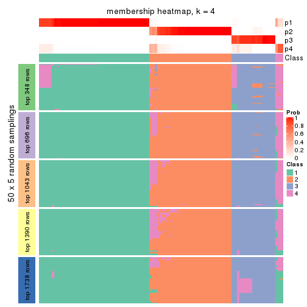
membership_heatmap(res, k = 5)
membership_heatmap(res, k = 6)
As soon as we have had the classes for columns, we can look for signatures which are significantly different between classes which can be candidate marks for certain classes. Following are the heatmaps for signatures.
Signature heatmaps where rows are scaled:
get_signatures(res, k = 2)
get_signatures(res, k = 3)
get_signatures(res, k = 4)
get_signatures(res, k = 5)
get_signatures(res, k = 6)
Signature heatmaps where rows are not scaled:
get_signatures(res, k = 2, scale_rows = FALSE)
get_signatures(res, k = 3, scale_rows = FALSE)
get_signatures(res, k = 4, scale_rows = FALSE)

get_signatures(res, k = 5, scale_rows = FALSE)
get_signatures(res, k = 6, scale_rows = FALSE)
Compare the overlap of signatures from different k:
compare_signatures(res)

get_signature() returns a data frame invisibly. TO get the list of signatures, the function
call should be assigned to a variable explicitly. In following code, if plot argument is set
to FALSE, no heatmap is plotted while only the differential analysis is performed.
# code only for demonstration
tb = get_signature(res, k = ..., plot = FALSE)
An example of the output of tb is:
#> which_row fdr mean_1 mean_2 scaled_mean_1 scaled_mean_2 km
#> 1 38 0.042760348 8.373488 9.131774 -0.5533452 0.5164555 1
#> 2 40 0.018707592 7.106213 8.469186 -0.6173731 0.5762149 1
#> 3 55 0.019134737 10.221463 11.207825 -0.6159697 0.5749050 1
#> 4 59 0.006059896 5.921854 7.869574 -0.6899429 0.6439467 1
#> 5 60 0.018055526 8.928898 10.211722 -0.6204761 0.5791110 1
#> 6 98 0.009384629 15.714769 14.887706 0.6635654 -0.6193277 2
...
The columns in tb are:
which_row: row indices corresponding to the input matrix.fdr: FDR for the differential test. mean_x: The mean value in group x.scaled_mean_x: The mean value in group x after rows are scaled.km: Row groups if k-means clustering is applied to rows.UMAP plot which shows how samples are separated.
dimension_reduction(res, k = 2, method = "UMAP")
dimension_reduction(res, k = 3, method = "UMAP")
dimension_reduction(res, k = 4, method = "UMAP")
dimension_reduction(res, k = 5, method = "UMAP")
dimension_reduction(res, k = 6, method = "UMAP")
Following heatmap shows how subgroups are split when increasing k:
collect_classes(res)
If matrix rows can be associated to genes, consider to use functional_enrichment(res,
...) to perform function enrichment for the signature genes. See this vignette for more detailed explanations.
The object with results only for a single top-value method and a single partition method can be extracted as:
res = res_list["SD", "kmeans"]
# you can also extract it by
# res = res_list["SD:kmeans"]
A summary of res and all the functions that can be applied to it:
res
#> A 'ConsensusPartition' object with k = 2, 3, 4, 5, 6.
#> On a matrix with 3475 rows and 95 columns.
#> Top rows (348, 696, 1043, 1390, 1738) are extracted by 'SD' method.
#> Subgroups are detected by 'kmeans' method.
#> Performed in total 1250 partitions by row resampling.
#> Best k for subgroups seems to be 3.
#>
#> Following methods can be applied to this 'ConsensusPartition' object:
#> [1] "cola_report" "collect_classes" "collect_plots"
#> [4] "collect_stats" "colnames" "compare_signatures"
#> [7] "consensus_heatmap" "dimension_reduction" "functional_enrichment"
#> [10] "get_anno_col" "get_anno" "get_classes"
#> [13] "get_consensus" "get_matrix" "get_membership"
#> [16] "get_param" "get_signatures" "get_stats"
#> [19] "is_best_k" "is_stable_k" "membership_heatmap"
#> [22] "ncol" "nrow" "plot_ecdf"
#> [25] "rownames" "select_partition_number" "show"
#> [28] "suggest_best_k" "test_to_known_factors"
collect_plots() function collects all the plots made from res for all k (number of partitions)
into one single page to provide an easy and fast comparison between different k.
collect_plots(res)

The plots are:
k and the heatmap of
predicted classes for each k.k.k.k.All the plots in panels can be made by individual functions and they are plotted later in this section.
select_partition_number() produces several plots showing different
statistics for choosing “optimized” k. There are following statistics:
k;k, the area increased is defined as \(A_k - A_{k-1}\).The detailed explanations of these statistics can be found in the cola vignette.
Generally speaking, lower PAC score, higher mean silhouette score or higher
concordance corresponds to better partition. Rand index and Jaccard index
measure how similar the current partition is compared to partition with k-1.
If they are too similar, we won't accept k is better than k-1.
select_partition_number(res)
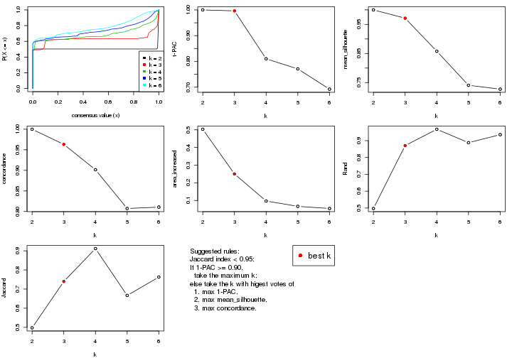
The numeric values for all these statistics can be obtained by get_stats().
get_stats(res)
#> k 1-PAC mean_silhouette concordance area_increased Rand Jaccard
#> 2 2 1.000 1.000 1.000 0.5031 0.497 0.497
#> 3 3 0.996 0.971 0.963 0.2503 0.871 0.740
#> 4 4 0.810 0.858 0.902 0.0970 0.968 0.912
#> 5 5 0.771 0.741 0.807 0.0669 0.888 0.667
#> 6 6 0.692 0.727 0.811 0.0548 0.935 0.763
suggest_best_k() suggests the best \(k\) based on these statistics. The rules are as follows:
suggest_best_k(res)
#> [1] 3
#> attr(,"optional")
#> [1] 2
There is also optional best \(k\) = 2 that is worth to check.
Following shows the table of the partitions (You need to click the show/hide
code output link to see it). The membership matrix (columns with name p*)
is inferred by
clue::cl_consensus()
function with the SE method. Basically the value in the membership matrix
represents the probability to belong to a certain group. The finall class
label for an item is determined with the group with highest probability it
belongs to.
In get_classes() function, the entropy is calculated from the membership
matrix and the silhouette score is calculated from the consensus matrix.
cbind(get_classes(res, k = 2), get_membership(res, k = 2))
#> class entropy silhouette p1 p2
#> SRR2062258 2 0.0000 1.000 0.000 1.000
#> SRR2062259 1 0.0000 1.000 1.000 0.000
#> SRR2062270 2 0.0000 1.000 0.000 1.000
#> SRR2062342 2 0.0000 1.000 0.000 1.000
#> SRR2062341 1 0.0000 1.000 1.000 0.000
#> SRR2062340 2 0.0000 1.000 0.000 1.000
#> SRR2062339 1 0.0000 1.000 1.000 0.000
#> SRR2062348 1 0.0000 1.000 1.000 0.000
#> SRR2062347 2 0.0000 1.000 0.000 1.000
#> SRR2062351 1 0.0000 1.000 1.000 0.000
#> SRR2062350 1 0.0000 1.000 1.000 0.000
#> SRR2062349 2 0.0000 1.000 0.000 1.000
#> SRR2062346 1 0.0000 1.000 1.000 0.000
#> SRR2062345 2 0.0000 1.000 0.000 1.000
#> SRR2062344 2 0.0000 1.000 0.000 1.000
#> SRR2062343 2 0.0000 1.000 0.000 1.000
#> SRR2062354 1 0.0000 1.000 1.000 0.000
#> SRR2062353 2 0.0000 1.000 0.000 1.000
#> SRR2062352 1 0.0000 1.000 1.000 0.000
#> SRR2063021 1 0.0000 1.000 1.000 0.000
#> SRR2062356 1 0.0000 1.000 1.000 0.000
#> SRR2063025 2 0.0000 1.000 0.000 1.000
#> SRR2063027 1 0.0000 1.000 1.000 0.000
#> SRR2063023 2 0.0000 1.000 0.000 1.000
#> SRR2062355 2 0.0000 1.000 0.000 1.000
#> SRR2063030 1 0.0000 1.000 1.000 0.000
#> SRR2064285 1 0.0000 1.000 1.000 0.000
#> SRR2063034 1 0.0000 1.000 1.000 0.000
#> SRR2063032 1 0.0000 1.000 1.000 0.000
#> SRR2063031 1 0.0000 1.000 1.000 0.000
#> SRR2063029 2 0.0000 1.000 0.000 1.000
#> SRR2063028 1 0.0000 1.000 1.000 0.000
#> SRR2064308 2 0.0000 1.000 0.000 1.000
#> SRR2064310 2 0.0000 1.000 0.000 1.000
#> SRR2064312 1 0.0000 1.000 1.000 0.000
#> SRR2064314 2 0.0000 1.000 0.000 1.000
#> SRR2064315 1 0.0000 1.000 1.000 0.000
#> SRR2064317 2 0.0000 1.000 0.000 1.000
#> SRR2064318 1 0.0000 1.000 1.000 0.000
#> SRR2064319 1 0.0000 1.000 1.000 0.000
#> SRR2064320 2 0.0000 1.000 0.000 1.000
#> SRR2064321 2 0.0000 1.000 0.000 1.000
#> SRR2064322 2 0.0000 1.000 0.000 1.000
#> SRR2064323 2 0.0938 0.988 0.012 0.988
#> SRR2064324 2 0.0000 1.000 0.000 1.000
#> SRR2064325 1 0.0000 1.000 1.000 0.000
#> SRR2064326 1 0.0000 1.000 1.000 0.000
#> SRR2064327 2 0.0000 1.000 0.000 1.000
#> SRR2064329 1 0.0000 1.000 1.000 0.000
#> SRR2064328 2 0.0000 1.000 0.000 1.000
#> SRR2064330 2 0.0000 1.000 0.000 1.000
#> SRR2064331 2 0.0000 1.000 0.000 1.000
#> SRR2064332 2 0.0000 1.000 0.000 1.000
#> SRR2064333 1 0.0000 1.000 1.000 0.000
#> SRR2064334 2 0.0000 1.000 0.000 1.000
#> SRR2064335 2 0.0000 1.000 0.000 1.000
#> SRR2064436 1 0.0000 1.000 1.000 0.000
#> SRR2064457 1 0.0000 1.000 1.000 0.000
#> SRR2064458 2 0.0000 1.000 0.000 1.000
#> SRR2064459 2 0.0000 1.000 0.000 1.000
#> SRR2064460 1 0.0000 1.000 1.000 0.000
#> SRR2064461 2 0.0000 1.000 0.000 1.000
#> SRR2064462 1 0.0000 1.000 1.000 0.000
#> SRR2064534 2 0.0000 1.000 0.000 1.000
#> SRR2064535 2 0.0000 1.000 0.000 1.000
#> SRR2064536 2 0.0000 1.000 0.000 1.000
#> SRR2064537 1 0.0000 1.000 1.000 0.000
#> SRR2064538 1 0.0000 1.000 1.000 0.000
#> SRR2064539 2 0.0000 1.000 0.000 1.000
#> SRR2064540 1 0.0000 1.000 1.000 0.000
#> SRR2064541 2 0.0000 1.000 0.000 1.000
#> SRR2064543 1 0.0000 1.000 1.000 0.000
#> SRR2064542 1 0.0000 1.000 1.000 0.000
#> SRR2064544 2 0.0000 1.000 0.000 1.000
#> SRR2064545 2 0.0000 1.000 0.000 1.000
#> SRR2064546 1 0.0000 1.000 1.000 0.000
#> SRR2064547 1 0.0000 1.000 1.000 0.000
#> SRR2064548 2 0.0000 1.000 0.000 1.000
#> SRR2064550 2 0.0000 1.000 0.000 1.000
#> SRR2064549 1 0.0000 1.000 1.000 0.000
#> SRR2064551 2 0.0000 1.000 0.000 1.000
#> SRR2064552 1 0.0000 1.000 1.000 0.000
#> SRR2064553 2 0.0000 1.000 0.000 1.000
#> SRR2064554 1 0.0000 1.000 1.000 0.000
#> SRR2064555 2 0.0000 1.000 0.000 1.000
#> SRR2064556 1 0.0000 1.000 1.000 0.000
#> SRR2064559 2 0.0000 1.000 0.000 1.000
#> SRR2064558 2 0.0000 1.000 0.000 1.000
#> SRR2064557 2 0.0000 1.000 0.000 1.000
#> SRR2064560 1 0.0000 1.000 1.000 0.000
#> SRR2064561 2 0.0000 1.000 0.000 1.000
#> SRR2064562 1 0.0000 1.000 1.000 0.000
#> SRR2064564 1 0.0000 1.000 1.000 0.000
#> SRR2064563 2 0.0000 1.000 0.000 1.000
#> SRR2064565 2 0.0000 1.000 0.000 1.000
cbind(get_classes(res, k = 3), get_membership(res, k = 3))
#> class entropy silhouette p1 p2 p3
#> SRR2062258 2 0.1411 0.958 0.000 0.964 0.036
#> SRR2062259 1 0.1031 0.973 0.976 0.000 0.024
#> SRR2062270 3 0.2796 0.982 0.000 0.092 0.908
#> SRR2062342 2 0.0000 0.990 0.000 1.000 0.000
#> SRR2062341 1 0.0000 0.975 1.000 0.000 0.000
#> SRR2062340 2 0.0000 0.990 0.000 1.000 0.000
#> SRR2062339 1 0.0000 0.975 1.000 0.000 0.000
#> SRR2062348 1 0.2711 0.953 0.912 0.000 0.088
#> SRR2062347 2 0.0000 0.990 0.000 1.000 0.000
#> SRR2062351 1 0.0592 0.974 0.988 0.000 0.012
#> SRR2062350 1 0.0000 0.975 1.000 0.000 0.000
#> SRR2062349 2 0.0000 0.990 0.000 1.000 0.000
#> SRR2062346 1 0.0000 0.975 1.000 0.000 0.000
#> SRR2062345 2 0.0000 0.990 0.000 1.000 0.000
#> SRR2062344 3 0.2796 0.982 0.000 0.092 0.908
#> SRR2062343 2 0.0000 0.990 0.000 1.000 0.000
#> SRR2062354 1 0.2711 0.953 0.912 0.000 0.088
#> SRR2062353 2 0.0000 0.990 0.000 1.000 0.000
#> SRR2062352 1 0.0592 0.974 0.988 0.000 0.012
#> SRR2063021 1 0.2711 0.953 0.912 0.000 0.088
#> SRR2062356 1 0.2625 0.955 0.916 0.000 0.084
#> SRR2063025 2 0.0000 0.990 0.000 1.000 0.000
#> SRR2063027 1 0.0000 0.975 1.000 0.000 0.000
#> SRR2063023 3 0.2711 0.978 0.000 0.088 0.912
#> SRR2062355 3 0.2796 0.982 0.000 0.092 0.908
#> SRR2063030 1 0.0000 0.975 1.000 0.000 0.000
#> SRR2064285 1 0.0000 0.975 1.000 0.000 0.000
#> SRR2063034 1 0.0000 0.975 1.000 0.000 0.000
#> SRR2063032 1 0.2711 0.953 0.912 0.000 0.088
#> SRR2063031 1 0.2711 0.953 0.912 0.000 0.088
#> SRR2063029 2 0.0000 0.990 0.000 1.000 0.000
#> SRR2063028 1 0.1031 0.972 0.976 0.000 0.024
#> SRR2064308 3 0.5465 0.735 0.000 0.288 0.712
#> SRR2064310 2 0.0424 0.985 0.000 0.992 0.008
#> SRR2064312 1 0.0000 0.975 1.000 0.000 0.000
#> SRR2064314 2 0.0000 0.990 0.000 1.000 0.000
#> SRR2064315 1 0.0000 0.975 1.000 0.000 0.000
#> SRR2064317 2 0.0000 0.990 0.000 1.000 0.000
#> SRR2064318 1 0.2356 0.959 0.928 0.000 0.072
#> SRR2064319 1 0.0000 0.975 1.000 0.000 0.000
#> SRR2064320 2 0.0237 0.987 0.000 0.996 0.004
#> SRR2064321 3 0.2796 0.982 0.000 0.092 0.908
#> SRR2064322 2 0.0000 0.990 0.000 1.000 0.000
#> SRR2064323 2 0.4830 0.821 0.068 0.848 0.084
#> SRR2064324 2 0.0000 0.990 0.000 1.000 0.000
#> SRR2064325 1 0.0000 0.975 1.000 0.000 0.000
#> SRR2064326 1 0.2711 0.953 0.912 0.000 0.088
#> SRR2064327 3 0.2796 0.982 0.000 0.092 0.908
#> SRR2064329 1 0.2448 0.958 0.924 0.000 0.076
#> SRR2064328 2 0.0000 0.990 0.000 1.000 0.000
#> SRR2064330 2 0.0000 0.990 0.000 1.000 0.000
#> SRR2064331 3 0.2796 0.982 0.000 0.092 0.908
#> SRR2064332 3 0.2796 0.982 0.000 0.092 0.908
#> SRR2064333 1 0.1289 0.971 0.968 0.000 0.032
#> SRR2064334 2 0.0000 0.990 0.000 1.000 0.000
#> SRR2064335 2 0.0000 0.990 0.000 1.000 0.000
#> SRR2064436 1 0.0000 0.975 1.000 0.000 0.000
#> SRR2064457 1 0.1964 0.964 0.944 0.000 0.056
#> SRR2064458 2 0.0237 0.987 0.000 0.996 0.004
#> SRR2064459 3 0.2796 0.982 0.000 0.092 0.908
#> SRR2064460 1 0.0000 0.975 1.000 0.000 0.000
#> SRR2064461 2 0.0000 0.990 0.000 1.000 0.000
#> SRR2064462 1 0.0892 0.973 0.980 0.000 0.020
#> SRR2064534 2 0.0000 0.990 0.000 1.000 0.000
#> SRR2064535 3 0.2796 0.982 0.000 0.092 0.908
#> SRR2064536 3 0.3879 0.924 0.000 0.152 0.848
#> SRR2064537 1 0.2711 0.953 0.912 0.000 0.088
#> SRR2064538 1 0.0000 0.975 1.000 0.000 0.000
#> SRR2064539 3 0.2796 0.982 0.000 0.092 0.908
#> SRR2064540 1 0.0000 0.975 1.000 0.000 0.000
#> SRR2064541 2 0.0000 0.990 0.000 1.000 0.000
#> SRR2064543 1 0.0000 0.975 1.000 0.000 0.000
#> SRR2064542 1 0.2066 0.963 0.940 0.000 0.060
#> SRR2064544 2 0.0000 0.990 0.000 1.000 0.000
#> SRR2064545 2 0.0000 0.990 0.000 1.000 0.000
#> SRR2064546 1 0.0000 0.975 1.000 0.000 0.000
#> SRR2064547 1 0.0747 0.974 0.984 0.000 0.016
#> SRR2064548 2 0.0237 0.987 0.000 0.996 0.004
#> SRR2064550 3 0.2796 0.982 0.000 0.092 0.908
#> SRR2064549 1 0.2711 0.953 0.912 0.000 0.088
#> SRR2064551 2 0.0000 0.990 0.000 1.000 0.000
#> SRR2064552 1 0.2625 0.955 0.916 0.000 0.084
#> SRR2064553 3 0.2796 0.982 0.000 0.092 0.908
#> SRR2064554 1 0.2711 0.953 0.912 0.000 0.088
#> SRR2064555 3 0.2796 0.982 0.000 0.092 0.908
#> SRR2064556 1 0.0000 0.975 1.000 0.000 0.000
#> SRR2064559 2 0.0000 0.990 0.000 1.000 0.000
#> SRR2064558 3 0.2796 0.982 0.000 0.092 0.908
#> SRR2064557 2 0.0000 0.990 0.000 1.000 0.000
#> SRR2064560 1 0.0000 0.975 1.000 0.000 0.000
#> SRR2064561 2 0.3192 0.868 0.000 0.888 0.112
#> SRR2064562 1 0.0000 0.975 1.000 0.000 0.000
#> SRR2064564 1 0.0000 0.975 1.000 0.000 0.000
#> SRR2064563 2 0.0000 0.990 0.000 1.000 0.000
#> SRR2064565 2 0.0237 0.987 0.000 0.996 0.004
cbind(get_classes(res, k = 4), get_membership(res, k = 4))
#> class entropy silhouette p1 p2 p3 p4
#> SRR2062258 4 0.4814 0.858 0.000 0.316 0.008 0.676
#> SRR2062259 1 0.2281 0.885 0.904 0.000 0.000 0.096
#> SRR2062270 3 0.1936 0.919 0.000 0.028 0.940 0.032
#> SRR2062342 2 0.0469 0.922 0.000 0.988 0.000 0.012
#> SRR2062341 1 0.0336 0.900 0.992 0.000 0.008 0.000
#> SRR2062340 2 0.0592 0.925 0.000 0.984 0.000 0.016
#> SRR2062339 1 0.0524 0.898 0.988 0.000 0.004 0.008
#> SRR2062348 1 0.4103 0.809 0.744 0.000 0.000 0.256
#> SRR2062347 2 0.0000 0.928 0.000 1.000 0.000 0.000
#> SRR2062351 1 0.1388 0.899 0.960 0.000 0.012 0.028
#> SRR2062350 1 0.0000 0.899 1.000 0.000 0.000 0.000
#> SRR2062349 2 0.0000 0.928 0.000 1.000 0.000 0.000
#> SRR2062346 1 0.0000 0.899 1.000 0.000 0.000 0.000
#> SRR2062345 2 0.0336 0.925 0.000 0.992 0.000 0.008
#> SRR2062344 3 0.1388 0.932 0.000 0.012 0.960 0.028
#> SRR2062343 2 0.0188 0.927 0.000 0.996 0.000 0.004
#> SRR2062354 1 0.4522 0.762 0.680 0.000 0.000 0.320
#> SRR2062353 2 0.0188 0.928 0.000 0.996 0.000 0.004
#> SRR2062352 1 0.1474 0.895 0.948 0.000 0.000 0.052
#> SRR2063021 1 0.4877 0.674 0.592 0.000 0.000 0.408
#> SRR2062356 1 0.3873 0.827 0.772 0.000 0.000 0.228
#> SRR2063025 2 0.0469 0.922 0.000 0.988 0.000 0.012
#> SRR2063027 1 0.0524 0.900 0.988 0.000 0.008 0.004
#> SRR2063023 3 0.0657 0.934 0.000 0.012 0.984 0.004
#> SRR2062355 3 0.3047 0.858 0.000 0.012 0.872 0.116
#> SRR2063030 1 0.0336 0.898 0.992 0.000 0.000 0.008
#> SRR2064285 1 0.0672 0.898 0.984 0.000 0.008 0.008
#> SRR2063034 1 0.0336 0.900 0.992 0.000 0.008 0.000
#> SRR2063032 1 0.4948 0.633 0.560 0.000 0.000 0.440
#> SRR2063031 1 0.4250 0.796 0.724 0.000 0.000 0.276
#> SRR2063029 2 0.0592 0.925 0.000 0.984 0.000 0.016
#> SRR2063028 1 0.1716 0.893 0.936 0.000 0.000 0.064
#> SRR2064308 3 0.5321 0.464 0.000 0.296 0.672 0.032
#> SRR2064310 4 0.4877 0.830 0.000 0.408 0.000 0.592
#> SRR2064312 1 0.0188 0.899 0.996 0.000 0.004 0.000
#> SRR2064314 2 0.0592 0.925 0.000 0.984 0.000 0.016
#> SRR2064315 1 0.0376 0.900 0.992 0.000 0.004 0.004
#> SRR2064317 2 0.0336 0.925 0.000 0.992 0.000 0.008
#> SRR2064318 1 0.3356 0.852 0.824 0.000 0.000 0.176
#> SRR2064319 1 0.0524 0.898 0.988 0.000 0.004 0.008
#> SRR2064320 2 0.0817 0.920 0.000 0.976 0.000 0.024
#> SRR2064321 3 0.0657 0.934 0.000 0.012 0.984 0.004
#> SRR2064322 2 0.0000 0.928 0.000 1.000 0.000 0.000
#> SRR2064323 4 0.5142 0.807 0.004 0.256 0.028 0.712
#> SRR2064324 2 0.1022 0.913 0.000 0.968 0.000 0.032
#> SRR2064325 1 0.0336 0.900 0.992 0.000 0.000 0.008
#> SRR2064326 1 0.4877 0.674 0.592 0.000 0.000 0.408
#> SRR2064327 3 0.1388 0.932 0.000 0.012 0.960 0.028
#> SRR2064329 1 0.3837 0.828 0.776 0.000 0.000 0.224
#> SRR2064328 2 0.0592 0.925 0.000 0.984 0.000 0.016
#> SRR2064330 2 0.4040 0.462 0.000 0.752 0.000 0.248
#> SRR2064331 3 0.1388 0.932 0.000 0.012 0.960 0.028
#> SRR2064332 3 0.0937 0.934 0.000 0.012 0.976 0.012
#> SRR2064333 1 0.2868 0.871 0.864 0.000 0.000 0.136
#> SRR2064334 2 0.0469 0.927 0.000 0.988 0.000 0.012
#> SRR2064335 2 0.0592 0.925 0.000 0.984 0.000 0.016
#> SRR2064436 1 0.0336 0.898 0.992 0.000 0.000 0.008
#> SRR2064457 1 0.2918 0.877 0.876 0.000 0.008 0.116
#> SRR2064458 4 0.4866 0.837 0.000 0.404 0.000 0.596
#> SRR2064459 3 0.0657 0.934 0.000 0.012 0.984 0.004
#> SRR2064460 1 0.0188 0.899 0.996 0.000 0.004 0.000
#> SRR2064461 2 0.0336 0.925 0.000 0.992 0.000 0.008
#> SRR2064462 1 0.1305 0.898 0.960 0.000 0.004 0.036
#> SRR2064534 2 0.0000 0.928 0.000 1.000 0.000 0.000
#> SRR2064535 3 0.1388 0.932 0.000 0.012 0.960 0.028
#> SRR2064536 3 0.3638 0.816 0.000 0.120 0.848 0.032
#> SRR2064537 1 0.4776 0.710 0.624 0.000 0.000 0.376
#> SRR2064538 1 0.0524 0.898 0.988 0.000 0.004 0.008
#> SRR2064539 3 0.2036 0.917 0.000 0.032 0.936 0.032
#> SRR2064540 1 0.0524 0.898 0.988 0.000 0.004 0.008
#> SRR2064541 2 0.0592 0.925 0.000 0.984 0.000 0.016
#> SRR2064543 1 0.0336 0.900 0.992 0.000 0.008 0.000
#> SRR2064542 1 0.3032 0.875 0.868 0.000 0.008 0.124
#> SRR2064544 2 0.4843 -0.256 0.000 0.604 0.000 0.396
#> SRR2064545 2 0.2868 0.763 0.000 0.864 0.000 0.136
#> SRR2064546 1 0.0000 0.899 1.000 0.000 0.000 0.000
#> SRR2064547 1 0.1398 0.897 0.956 0.000 0.004 0.040
#> SRR2064548 2 0.2281 0.834 0.000 0.904 0.000 0.096
#> SRR2064550 3 0.3428 0.832 0.000 0.012 0.844 0.144
#> SRR2064549 1 0.4776 0.710 0.624 0.000 0.000 0.376
#> SRR2064551 2 0.0469 0.922 0.000 0.988 0.000 0.012
#> SRR2064552 1 0.3873 0.827 0.772 0.000 0.000 0.228
#> SRR2064553 3 0.0657 0.934 0.000 0.012 0.984 0.004
#> SRR2064554 1 0.4790 0.706 0.620 0.000 0.000 0.380
#> SRR2064555 3 0.0804 0.934 0.000 0.012 0.980 0.008
#> SRR2064556 1 0.0524 0.898 0.988 0.000 0.004 0.008
#> SRR2064559 2 0.0469 0.922 0.000 0.988 0.000 0.012
#> SRR2064558 3 0.1388 0.932 0.000 0.012 0.960 0.028
#> SRR2064557 2 0.0188 0.928 0.000 0.996 0.000 0.004
#> SRR2064560 1 0.0336 0.898 0.992 0.000 0.000 0.008
#> SRR2064561 4 0.6426 0.835 0.000 0.352 0.080 0.568
#> SRR2064562 1 0.0336 0.898 0.992 0.000 0.000 0.008
#> SRR2064564 1 0.0672 0.898 0.984 0.000 0.008 0.008
#> SRR2064563 2 0.0000 0.928 0.000 1.000 0.000 0.000
#> SRR2064565 2 0.3311 0.683 0.000 0.828 0.000 0.172
cbind(get_classes(res, k = 5), get_membership(res, k = 5))
#> class entropy silhouette p1 p2 p3 p4 p5
#> SRR2062258 5 0.3985 0.830 0.032 0.096 0.012 0.028 0.832
#> SRR2062259 4 0.4434 -0.576 0.460 0.000 0.000 0.536 0.004
#> SRR2062270 3 0.3293 0.829 0.108 0.012 0.852 0.000 0.028
#> SRR2062342 2 0.1697 0.893 0.060 0.932 0.000 0.000 0.008
#> SRR2062341 1 0.4505 0.925 0.604 0.000 0.000 0.384 0.012
#> SRR2062340 2 0.0290 0.908 0.000 0.992 0.000 0.000 0.008
#> SRR2062339 1 0.4880 0.899 0.616 0.000 0.000 0.348 0.036
#> SRR2062348 4 0.2561 0.551 0.144 0.000 0.000 0.856 0.000
#> SRR2062347 2 0.1549 0.900 0.040 0.944 0.000 0.000 0.016
#> SRR2062351 1 0.4909 0.892 0.560 0.000 0.000 0.412 0.028
#> SRR2062350 1 0.4537 0.918 0.592 0.000 0.000 0.396 0.012
#> SRR2062349 2 0.1331 0.906 0.040 0.952 0.000 0.000 0.008
#> SRR2062346 1 0.4639 0.927 0.612 0.000 0.000 0.368 0.020
#> SRR2062345 2 0.1764 0.894 0.064 0.928 0.000 0.000 0.008
#> SRR2062344 3 0.2769 0.841 0.092 0.000 0.876 0.000 0.032
#> SRR2062343 2 0.1670 0.905 0.052 0.936 0.000 0.000 0.012
#> SRR2062354 4 0.1484 0.612 0.048 0.000 0.000 0.944 0.008
#> SRR2062353 2 0.1549 0.903 0.040 0.944 0.000 0.000 0.016
#> SRR2062352 1 0.4306 0.705 0.508 0.000 0.000 0.492 0.000
#> SRR2063021 4 0.1197 0.614 0.000 0.000 0.000 0.952 0.048
#> SRR2062356 4 0.3728 0.426 0.244 0.000 0.000 0.748 0.008
#> SRR2063025 2 0.1697 0.893 0.060 0.932 0.000 0.000 0.008
#> SRR2063027 1 0.4630 0.917 0.588 0.000 0.000 0.396 0.016
#> SRR2063023 3 0.0798 0.859 0.016 0.000 0.976 0.000 0.008
#> SRR2062355 3 0.3558 0.765 0.004 0.000 0.824 0.136 0.036
#> SRR2063030 1 0.4551 0.924 0.616 0.000 0.000 0.368 0.016
#> SRR2064285 1 0.4402 0.917 0.636 0.000 0.000 0.352 0.012
#> SRR2063034 1 0.4626 0.924 0.616 0.000 0.000 0.364 0.020
#> SRR2063032 4 0.2305 0.565 0.012 0.000 0.000 0.896 0.092
#> SRR2063031 4 0.1043 0.612 0.040 0.000 0.000 0.960 0.000
#> SRR2063029 2 0.1386 0.903 0.032 0.952 0.000 0.000 0.016
#> SRR2063028 4 0.4821 -0.600 0.464 0.000 0.000 0.516 0.020
#> SRR2064308 3 0.6762 0.428 0.168 0.240 0.556 0.000 0.036
#> SRR2064310 5 0.3211 0.848 0.000 0.164 0.004 0.008 0.824
#> SRR2064312 1 0.4321 0.921 0.600 0.000 0.000 0.396 0.004
#> SRR2064314 2 0.1168 0.907 0.032 0.960 0.000 0.000 0.008
#> SRR2064315 1 0.4610 0.922 0.596 0.000 0.000 0.388 0.016
#> SRR2064317 2 0.1697 0.893 0.060 0.932 0.000 0.000 0.008
#> SRR2064318 4 0.3932 0.134 0.328 0.000 0.000 0.672 0.000
#> SRR2064319 1 0.4836 0.912 0.612 0.000 0.000 0.356 0.032
#> SRR2064320 2 0.1082 0.903 0.008 0.964 0.000 0.000 0.028
#> SRR2064321 3 0.1484 0.857 0.048 0.000 0.944 0.000 0.008
#> SRR2064322 2 0.0693 0.907 0.012 0.980 0.000 0.000 0.008
#> SRR2064323 5 0.3867 0.792 0.032 0.060 0.016 0.044 0.848
#> SRR2064324 2 0.2370 0.876 0.040 0.904 0.000 0.000 0.056
#> SRR2064325 1 0.4630 0.921 0.588 0.000 0.000 0.396 0.016
#> SRR2064326 4 0.1197 0.614 0.000 0.000 0.000 0.952 0.048
#> SRR2064327 3 0.2769 0.841 0.092 0.000 0.876 0.000 0.032
#> SRR2064329 4 0.3242 0.469 0.216 0.000 0.000 0.784 0.000
#> SRR2064328 2 0.1469 0.902 0.036 0.948 0.000 0.000 0.016
#> SRR2064330 2 0.5043 0.269 0.044 0.600 0.000 0.000 0.356
#> SRR2064331 3 0.2769 0.841 0.092 0.000 0.876 0.000 0.032
#> SRR2064332 3 0.2270 0.847 0.076 0.000 0.904 0.000 0.020
#> SRR2064333 4 0.4126 -0.157 0.380 0.000 0.000 0.620 0.000
#> SRR2064334 2 0.1549 0.900 0.040 0.944 0.000 0.000 0.016
#> SRR2064335 2 0.1549 0.900 0.040 0.944 0.000 0.000 0.016
#> SRR2064436 1 0.4639 0.924 0.612 0.000 0.000 0.368 0.020
#> SRR2064457 4 0.4517 -0.477 0.436 0.000 0.000 0.556 0.008
#> SRR2064458 5 0.3340 0.851 0.004 0.156 0.000 0.016 0.824
#> SRR2064459 3 0.0162 0.859 0.004 0.000 0.996 0.000 0.000
#> SRR2064460 1 0.4639 0.923 0.612 0.000 0.000 0.368 0.020
#> SRR2064461 2 0.1670 0.901 0.052 0.936 0.000 0.000 0.012
#> SRR2064462 1 0.4268 0.855 0.556 0.000 0.000 0.444 0.000
#> SRR2064534 2 0.1557 0.897 0.052 0.940 0.000 0.000 0.008
#> SRR2064535 3 0.2905 0.838 0.096 0.000 0.868 0.000 0.036
#> SRR2064536 3 0.5672 0.679 0.160 0.112 0.692 0.000 0.036
#> SRR2064537 4 0.1197 0.614 0.000 0.000 0.000 0.952 0.048
#> SRR2064538 1 0.4464 0.911 0.584 0.000 0.000 0.408 0.008
#> SRR2064539 3 0.4073 0.802 0.144 0.020 0.800 0.000 0.036
#> SRR2064540 1 0.4757 0.925 0.596 0.000 0.000 0.380 0.024
#> SRR2064541 2 0.1568 0.906 0.036 0.944 0.000 0.000 0.020
#> SRR2064543 1 0.4666 0.904 0.572 0.000 0.000 0.412 0.016
#> SRR2064542 4 0.4658 -0.251 0.408 0.000 0.000 0.576 0.016
#> SRR2064544 5 0.5159 0.391 0.044 0.400 0.000 0.000 0.556
#> SRR2064545 2 0.4224 0.673 0.040 0.744 0.000 0.000 0.216
#> SRR2064546 1 0.4551 0.926 0.616 0.000 0.000 0.368 0.016
#> SRR2064547 1 0.4641 0.826 0.532 0.000 0.000 0.456 0.012
#> SRR2064548 2 0.2900 0.832 0.028 0.864 0.000 0.000 0.108
#> SRR2064550 3 0.3981 0.743 0.004 0.000 0.800 0.136 0.060
#> SRR2064549 4 0.1197 0.614 0.000 0.000 0.000 0.952 0.048
#> SRR2064551 2 0.1764 0.894 0.064 0.928 0.000 0.000 0.008
#> SRR2064552 4 0.3177 0.478 0.208 0.000 0.000 0.792 0.000
#> SRR2064553 3 0.1408 0.858 0.044 0.000 0.948 0.000 0.008
#> SRR2064554 4 0.1197 0.614 0.000 0.000 0.000 0.952 0.048
#> SRR2064555 3 0.1124 0.859 0.036 0.000 0.960 0.000 0.004
#> SRR2064556 1 0.4538 0.923 0.620 0.000 0.000 0.364 0.016
#> SRR2064559 2 0.1764 0.894 0.064 0.928 0.000 0.000 0.008
#> SRR2064558 3 0.2769 0.841 0.092 0.000 0.876 0.000 0.032
#> SRR2064557 2 0.1408 0.904 0.044 0.948 0.000 0.000 0.008
#> SRR2064560 1 0.4626 0.922 0.616 0.000 0.000 0.364 0.020
#> SRR2064561 5 0.3821 0.823 0.004 0.104 0.064 0.004 0.824
#> SRR2064562 1 0.4537 0.917 0.592 0.000 0.000 0.396 0.012
#> SRR2064564 1 0.4862 0.921 0.604 0.000 0.000 0.364 0.032
#> SRR2064563 2 0.0955 0.908 0.028 0.968 0.000 0.000 0.004
#> SRR2064565 2 0.4475 0.530 0.032 0.692 0.000 0.000 0.276
cbind(get_classes(res, k = 6), get_membership(res, k = 6))
#> class entropy silhouette p1 p2 p3 p4 p5 p6
#> SRR2062258 5 0.325 0.804 0.000 0.008 0.004 0.076 0.844 0.068
#> SRR2062259 1 0.353 0.658 0.788 0.000 0.000 0.172 0.004 0.036
#> SRR2062270 3 0.339 0.753 0.000 0.000 0.788 0.012 0.012 0.188
#> SRR2062342 2 0.296 0.812 0.000 0.792 0.000 0.004 0.000 0.204
#> SRR2062341 1 0.184 0.809 0.916 0.000 0.000 0.008 0.004 0.072
#> SRR2062340 2 0.155 0.847 0.000 0.936 0.000 0.020 0.000 0.044
#> SRR2062339 1 0.281 0.772 0.812 0.000 0.000 0.004 0.000 0.184
#> SRR2062348 4 0.436 0.527 0.424 0.000 0.000 0.552 0.000 0.024
#> SRR2062347 2 0.181 0.830 0.000 0.928 0.000 0.020 0.008 0.044
#> SRR2062351 1 0.286 0.802 0.856 0.000 0.000 0.028 0.008 0.108
#> SRR2062350 1 0.187 0.808 0.908 0.000 0.000 0.008 0.000 0.084
#> SRR2062349 2 0.192 0.843 0.000 0.916 0.000 0.016 0.004 0.064
#> SRR2062346 1 0.206 0.807 0.908 0.000 0.000 0.008 0.012 0.072
#> SRR2062345 2 0.287 0.817 0.000 0.804 0.000 0.004 0.000 0.192
#> SRR2062344 3 0.310 0.768 0.000 0.000 0.800 0.016 0.000 0.184
#> SRR2062343 2 0.226 0.845 0.000 0.884 0.000 0.008 0.004 0.104
#> SRR2062354 4 0.365 0.782 0.280 0.000 0.000 0.708 0.000 0.012
#> SRR2062353 2 0.214 0.829 0.000 0.912 0.000 0.028 0.012 0.048
#> SRR2062352 1 0.301 0.721 0.844 0.000 0.000 0.112 0.004 0.040
#> SRR2063021 4 0.320 0.847 0.176 0.000 0.000 0.800 0.024 0.000
#> SRR2062356 1 0.489 -0.353 0.476 0.000 0.000 0.472 0.004 0.048
#> SRR2063025 2 0.279 0.813 0.000 0.800 0.000 0.000 0.000 0.200
#> SRR2063027 1 0.186 0.806 0.920 0.000 0.000 0.016 0.004 0.060
#> SRR2063023 3 0.215 0.793 0.000 0.000 0.912 0.032 0.012 0.044
#> SRR2062355 3 0.396 0.670 0.000 0.000 0.748 0.204 0.040 0.008
#> SRR2063030 1 0.253 0.795 0.860 0.000 0.000 0.004 0.008 0.128
#> SRR2064285 1 0.299 0.777 0.812 0.000 0.000 0.004 0.008 0.176
#> SRR2063034 1 0.263 0.796 0.832 0.000 0.000 0.004 0.000 0.164
#> SRR2063032 4 0.305 0.792 0.136 0.000 0.000 0.828 0.036 0.000
#> SRR2063031 4 0.393 0.755 0.304 0.000 0.000 0.676 0.000 0.020
#> SRR2063029 2 0.183 0.832 0.000 0.928 0.000 0.028 0.008 0.036
#> SRR2063028 1 0.390 0.621 0.748 0.000 0.000 0.196 0.000 0.056
#> SRR2064308 3 0.650 0.405 0.000 0.168 0.488 0.028 0.012 0.304
#> SRR2064310 5 0.108 0.834 0.000 0.032 0.000 0.004 0.960 0.004
#> SRR2064312 1 0.172 0.807 0.928 0.000 0.000 0.008 0.008 0.056
#> SRR2064314 2 0.254 0.843 0.000 0.872 0.000 0.020 0.004 0.104
#> SRR2064315 1 0.201 0.795 0.908 0.000 0.000 0.024 0.000 0.068
#> SRR2064317 2 0.282 0.812 0.000 0.796 0.000 0.000 0.000 0.204
#> SRR2064318 1 0.434 0.210 0.628 0.000 0.000 0.336 0.000 0.036
#> SRR2064319 1 0.287 0.775 0.804 0.000 0.000 0.004 0.000 0.192
#> SRR2064320 2 0.249 0.830 0.000 0.896 0.000 0.028 0.044 0.032
#> SRR2064321 3 0.180 0.796 0.000 0.000 0.916 0.012 0.000 0.072
#> SRR2064322 2 0.197 0.847 0.000 0.916 0.000 0.024 0.004 0.056
#> SRR2064323 5 0.344 0.793 0.004 0.004 0.004 0.088 0.832 0.068
#> SRR2064324 2 0.349 0.773 0.000 0.832 0.000 0.032 0.084 0.052
#> SRR2064325 1 0.209 0.802 0.908 0.000 0.000 0.024 0.004 0.064
#> SRR2064326 4 0.320 0.847 0.176 0.000 0.000 0.800 0.024 0.000
#> SRR2064327 3 0.314 0.768 0.000 0.000 0.796 0.016 0.000 0.188
#> SRR2064329 4 0.453 0.422 0.456 0.000 0.000 0.512 0.000 0.032
#> SRR2064328 2 0.168 0.839 0.000 0.936 0.000 0.032 0.008 0.024
#> SRR2064330 2 0.558 0.258 0.000 0.560 0.000 0.036 0.332 0.072
#> SRR2064331 3 0.310 0.768 0.000 0.000 0.800 0.016 0.000 0.184
#> SRR2064332 3 0.279 0.780 0.000 0.000 0.840 0.012 0.004 0.144
#> SRR2064333 1 0.395 0.550 0.720 0.000 0.000 0.240 0.000 0.040
#> SRR2064334 2 0.189 0.828 0.000 0.924 0.000 0.024 0.008 0.044
#> SRR2064335 2 0.175 0.831 0.000 0.932 0.000 0.024 0.008 0.036
#> SRR2064436 1 0.274 0.784 0.820 0.000 0.000 0.004 0.000 0.176
#> SRR2064457 1 0.436 0.535 0.708 0.000 0.000 0.228 0.008 0.056
#> SRR2064458 5 0.248 0.826 0.000 0.048 0.000 0.024 0.896 0.032
#> SRR2064459 3 0.156 0.798 0.000 0.000 0.940 0.024 0.004 0.032
#> SRR2064460 1 0.232 0.803 0.884 0.000 0.000 0.008 0.008 0.100
#> SRR2064461 2 0.290 0.818 0.000 0.800 0.000 0.004 0.000 0.196
#> SRR2064462 1 0.316 0.777 0.840 0.000 0.000 0.072 0.004 0.084
#> SRR2064534 2 0.249 0.826 0.000 0.836 0.000 0.000 0.000 0.164
#> SRR2064535 3 0.310 0.767 0.000 0.000 0.800 0.016 0.000 0.184
#> SRR2064536 3 0.566 0.595 0.000 0.084 0.612 0.028 0.012 0.264
#> SRR2064537 4 0.316 0.849 0.180 0.000 0.000 0.800 0.020 0.000
#> SRR2064538 1 0.220 0.805 0.896 0.000 0.000 0.016 0.004 0.084
#> SRR2064539 3 0.407 0.728 0.000 0.004 0.740 0.028 0.012 0.216
#> SRR2064540 1 0.271 0.795 0.832 0.000 0.000 0.008 0.000 0.160
#> SRR2064541 2 0.197 0.846 0.000 0.920 0.000 0.020 0.012 0.048
#> SRR2064543 1 0.242 0.797 0.888 0.000 0.000 0.032 0.004 0.076
#> SRR2064542 1 0.489 0.463 0.644 0.000 0.000 0.268 0.008 0.080
#> SRR2064544 5 0.557 0.300 0.000 0.372 0.000 0.032 0.528 0.068
#> SRR2064545 2 0.523 0.609 0.000 0.632 0.000 0.008 0.220 0.140
#> SRR2064546 1 0.192 0.805 0.916 0.000 0.000 0.016 0.004 0.064
#> SRR2064547 1 0.358 0.783 0.804 0.000 0.000 0.072 0.004 0.120
#> SRR2064548 2 0.460 0.710 0.000 0.716 0.000 0.016 0.184 0.084
#> SRR2064550 3 0.415 0.641 0.000 0.000 0.720 0.232 0.040 0.008
#> SRR2064549 4 0.307 0.848 0.180 0.000 0.000 0.804 0.016 0.000
#> SRR2064551 2 0.288 0.811 0.000 0.788 0.000 0.000 0.000 0.212
#> SRR2064552 1 0.454 -0.362 0.492 0.000 0.000 0.480 0.004 0.024
#> SRR2064553 3 0.152 0.799 0.000 0.000 0.932 0.008 0.000 0.060
#> SRR2064554 4 0.316 0.849 0.180 0.000 0.000 0.800 0.020 0.000
#> SRR2064555 3 0.108 0.801 0.000 0.000 0.956 0.004 0.000 0.040
#> SRR2064556 1 0.256 0.796 0.840 0.000 0.000 0.000 0.004 0.156
#> SRR2064559 2 0.276 0.814 0.000 0.804 0.000 0.000 0.000 0.196
#> SRR2064558 3 0.304 0.769 0.000 0.000 0.808 0.016 0.000 0.176
#> SRR2064557 2 0.247 0.838 0.000 0.856 0.000 0.008 0.000 0.136
#> SRR2064560 1 0.246 0.793 0.860 0.000 0.000 0.004 0.004 0.132
#> SRR2064561 5 0.167 0.828 0.000 0.028 0.012 0.004 0.940 0.016
#> SRR2064562 1 0.247 0.799 0.856 0.000 0.000 0.008 0.000 0.136
#> SRR2064564 1 0.270 0.797 0.844 0.000 0.000 0.004 0.008 0.144
#> SRR2064563 2 0.171 0.842 0.000 0.928 0.000 0.012 0.004 0.056
#> SRR2064565 2 0.526 0.433 0.000 0.624 0.000 0.032 0.276 0.068
Heatmaps for the consensus matrix. It visualizes the probability of two samples to be in a same group.
consensus_heatmap(res, k = 2)
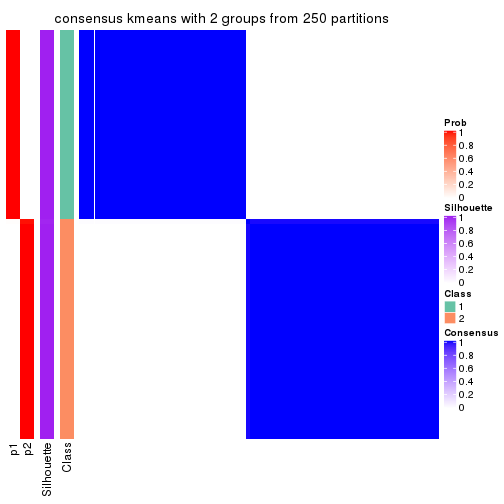
consensus_heatmap(res, k = 3)
consensus_heatmap(res, k = 4)
consensus_heatmap(res, k = 5)
consensus_heatmap(res, k = 6)
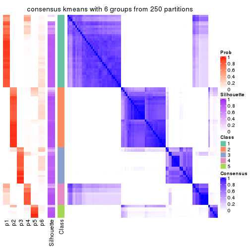
Heatmaps for the membership of samples in all partitions to see how consistent they are:
membership_heatmap(res, k = 2)
membership_heatmap(res, k = 3)
membership_heatmap(res, k = 4)
membership_heatmap(res, k = 5)
membership_heatmap(res, k = 6)
As soon as we have had the classes for columns, we can look for signatures which are significantly different between classes which can be candidate marks for certain classes. Following are the heatmaps for signatures.
Signature heatmaps where rows are scaled:
get_signatures(res, k = 2)
get_signatures(res, k = 3)
get_signatures(res, k = 4)
get_signatures(res, k = 5)

get_signatures(res, k = 6)
Signature heatmaps where rows are not scaled:
get_signatures(res, k = 2, scale_rows = FALSE)

get_signatures(res, k = 3, scale_rows = FALSE)
get_signatures(res, k = 4, scale_rows = FALSE)
get_signatures(res, k = 5, scale_rows = FALSE)
get_signatures(res, k = 6, scale_rows = FALSE)
Compare the overlap of signatures from different k:
compare_signatures(res)
get_signature() returns a data frame invisibly. TO get the list of signatures, the function
call should be assigned to a variable explicitly. In following code, if plot argument is set
to FALSE, no heatmap is plotted while only the differential analysis is performed.
# code only for demonstration
tb = get_signature(res, k = ..., plot = FALSE)
An example of the output of tb is:
#> which_row fdr mean_1 mean_2 scaled_mean_1 scaled_mean_2 km
#> 1 38 0.042760348 8.373488 9.131774 -0.5533452 0.5164555 1
#> 2 40 0.018707592 7.106213 8.469186 -0.6173731 0.5762149 1
#> 3 55 0.019134737 10.221463 11.207825 -0.6159697 0.5749050 1
#> 4 59 0.006059896 5.921854 7.869574 -0.6899429 0.6439467 1
#> 5 60 0.018055526 8.928898 10.211722 -0.6204761 0.5791110 1
#> 6 98 0.009384629 15.714769 14.887706 0.6635654 -0.6193277 2
...
The columns in tb are:
which_row: row indices corresponding to the input matrix.fdr: FDR for the differential test. mean_x: The mean value in group x.scaled_mean_x: The mean value in group x after rows are scaled.km: Row groups if k-means clustering is applied to rows.UMAP plot which shows how samples are separated.
dimension_reduction(res, k = 2, method = "UMAP")
dimension_reduction(res, k = 3, method = "UMAP")
dimension_reduction(res, k = 4, method = "UMAP")
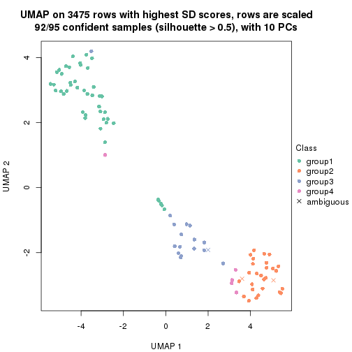
dimension_reduction(res, k = 5, method = "UMAP")
dimension_reduction(res, k = 6, method = "UMAP")
Following heatmap shows how subgroups are split when increasing k:
collect_classes(res)
If matrix rows can be associated to genes, consider to use functional_enrichment(res,
...) to perform function enrichment for the signature genes. See this vignette for more detailed explanations.
The object with results only for a single top-value method and a single partition method can be extracted as:
res = res_list["SD", "skmeans"]
# you can also extract it by
# res = res_list["SD:skmeans"]
A summary of res and all the functions that can be applied to it:
res
#> A 'ConsensusPartition' object with k = 2, 3, 4, 5, 6.
#> On a matrix with 3475 rows and 95 columns.
#> Top rows (348, 696, 1043, 1390, 1738) are extracted by 'SD' method.
#> Subgroups are detected by 'skmeans' method.
#> Performed in total 1250 partitions by row resampling.
#> Best k for subgroups seems to be 3.
#>
#> Following methods can be applied to this 'ConsensusPartition' object:
#> [1] "cola_report" "collect_classes" "collect_plots"
#> [4] "collect_stats" "colnames" "compare_signatures"
#> [7] "consensus_heatmap" "dimension_reduction" "functional_enrichment"
#> [10] "get_anno_col" "get_anno" "get_classes"
#> [13] "get_consensus" "get_matrix" "get_membership"
#> [16] "get_param" "get_signatures" "get_stats"
#> [19] "is_best_k" "is_stable_k" "membership_heatmap"
#> [22] "ncol" "nrow" "plot_ecdf"
#> [25] "rownames" "select_partition_number" "show"
#> [28] "suggest_best_k" "test_to_known_factors"
collect_plots() function collects all the plots made from res for all k (number of partitions)
into one single page to provide an easy and fast comparison between different k.
collect_plots(res)
The plots are:
k and the heatmap of
predicted classes for each k.k.k.k.All the plots in panels can be made by individual functions and they are plotted later in this section.
select_partition_number() produces several plots showing different
statistics for choosing “optimized” k. There are following statistics:
k;k, the area increased is defined as \(A_k - A_{k-1}\).The detailed explanations of these statistics can be found in the cola vignette.
Generally speaking, lower PAC score, higher mean silhouette score or higher
concordance corresponds to better partition. Rand index and Jaccard index
measure how similar the current partition is compared to partition with k-1.
If they are too similar, we won't accept k is better than k-1.
select_partition_number(res)

The numeric values for all these statistics can be obtained by get_stats().
get_stats(res)
#> k 1-PAC mean_silhouette concordance area_increased Rand Jaccard
#> 2 2 1.000 0.997 0.998 0.5033 0.497 0.497
#> 3 3 1.000 0.992 0.996 0.2538 0.871 0.740
#> 4 4 0.849 0.896 0.932 0.1096 0.935 0.825
#> 5 5 0.739 0.790 0.876 0.0543 0.980 0.935
#> 6 6 0.703 0.774 0.829 0.0391 0.986 0.950
suggest_best_k() suggests the best \(k\) based on these statistics. The rules are as follows:
suggest_best_k(res)
#> [1] 3
#> attr(,"optional")
#> [1] 2
There is also optional best \(k\) = 2 that is worth to check.
Following shows the table of the partitions (You need to click the show/hide
code output link to see it). The membership matrix (columns with name p*)
is inferred by
clue::cl_consensus()
function with the SE method. Basically the value in the membership matrix
represents the probability to belong to a certain group. The finall class
label for an item is determined with the group with highest probability it
belongs to.
In get_classes() function, the entropy is calculated from the membership
matrix and the silhouette score is calculated from the consensus matrix.
cbind(get_classes(res, k = 2), get_membership(res, k = 2))
#> class entropy silhouette p1 p2
#> SRR2062258 2 0.0000 0.997 0.000 1.000
#> SRR2062259 1 0.0000 1.000 1.000 0.000
#> SRR2062270 2 0.0000 0.997 0.000 1.000
#> SRR2062342 2 0.0000 0.997 0.000 1.000
#> SRR2062341 1 0.0000 1.000 1.000 0.000
#> SRR2062340 2 0.0000 0.997 0.000 1.000
#> SRR2062339 1 0.0000 1.000 1.000 0.000
#> SRR2062348 1 0.0000 1.000 1.000 0.000
#> SRR2062347 2 0.0000 0.997 0.000 1.000
#> SRR2062351 1 0.0000 1.000 1.000 0.000
#> SRR2062350 1 0.0000 1.000 1.000 0.000
#> SRR2062349 2 0.0000 0.997 0.000 1.000
#> SRR2062346 1 0.0000 1.000 1.000 0.000
#> SRR2062345 2 0.0000 0.997 0.000 1.000
#> SRR2062344 2 0.0000 0.997 0.000 1.000
#> SRR2062343 2 0.0000 0.997 0.000 1.000
#> SRR2062354 1 0.0000 1.000 1.000 0.000
#> SRR2062353 2 0.0000 0.997 0.000 1.000
#> SRR2062352 1 0.0000 1.000 1.000 0.000
#> SRR2063021 1 0.0000 1.000 1.000 0.000
#> SRR2062356 1 0.0000 1.000 1.000 0.000
#> SRR2063025 2 0.0000 0.997 0.000 1.000
#> SRR2063027 1 0.0000 1.000 1.000 0.000
#> SRR2063023 2 0.3274 0.937 0.060 0.940
#> SRR2062355 2 0.0376 0.993 0.004 0.996
#> SRR2063030 1 0.0000 1.000 1.000 0.000
#> SRR2064285 1 0.0000 1.000 1.000 0.000
#> SRR2063034 1 0.0000 1.000 1.000 0.000
#> SRR2063032 1 0.0000 1.000 1.000 0.000
#> SRR2063031 1 0.0000 1.000 1.000 0.000
#> SRR2063029 2 0.0000 0.997 0.000 1.000
#> SRR2063028 1 0.0000 1.000 1.000 0.000
#> SRR2064308 2 0.0000 0.997 0.000 1.000
#> SRR2064310 2 0.0000 0.997 0.000 1.000
#> SRR2064312 1 0.0000 1.000 1.000 0.000
#> SRR2064314 2 0.0000 0.997 0.000 1.000
#> SRR2064315 1 0.0000 1.000 1.000 0.000
#> SRR2064317 2 0.0000 0.997 0.000 1.000
#> SRR2064318 1 0.0000 1.000 1.000 0.000
#> SRR2064319 1 0.0000 1.000 1.000 0.000
#> SRR2064320 2 0.0000 0.997 0.000 1.000
#> SRR2064321 2 0.0000 0.997 0.000 1.000
#> SRR2064322 2 0.0000 0.997 0.000 1.000
#> SRR2064323 2 0.4022 0.914 0.080 0.920
#> SRR2064324 2 0.0000 0.997 0.000 1.000
#> SRR2064325 1 0.0000 1.000 1.000 0.000
#> SRR2064326 1 0.0000 1.000 1.000 0.000
#> SRR2064327 2 0.0000 0.997 0.000 1.000
#> SRR2064329 1 0.0000 1.000 1.000 0.000
#> SRR2064328 2 0.0000 0.997 0.000 1.000
#> SRR2064330 2 0.0000 0.997 0.000 1.000
#> SRR2064331 2 0.0000 0.997 0.000 1.000
#> SRR2064332 2 0.0000 0.997 0.000 1.000
#> SRR2064333 1 0.0000 1.000 1.000 0.000
#> SRR2064334 2 0.0000 0.997 0.000 1.000
#> SRR2064335 2 0.0000 0.997 0.000 1.000
#> SRR2064436 1 0.0000 1.000 1.000 0.000
#> SRR2064457 1 0.0000 1.000 1.000 0.000
#> SRR2064458 2 0.0000 0.997 0.000 1.000
#> SRR2064459 2 0.0000 0.997 0.000 1.000
#> SRR2064460 1 0.0000 1.000 1.000 0.000
#> SRR2064461 2 0.0000 0.997 0.000 1.000
#> SRR2064462 1 0.0000 1.000 1.000 0.000
#> SRR2064534 2 0.0000 0.997 0.000 1.000
#> SRR2064535 2 0.0000 0.997 0.000 1.000
#> SRR2064536 2 0.0000 0.997 0.000 1.000
#> SRR2064537 1 0.0000 1.000 1.000 0.000
#> SRR2064538 1 0.0000 1.000 1.000 0.000
#> SRR2064539 2 0.0000 0.997 0.000 1.000
#> SRR2064540 1 0.0000 1.000 1.000 0.000
#> SRR2064541 2 0.0000 0.997 0.000 1.000
#> SRR2064543 1 0.0000 1.000 1.000 0.000
#> SRR2064542 1 0.0000 1.000 1.000 0.000
#> SRR2064544 2 0.0000 0.997 0.000 1.000
#> SRR2064545 2 0.0000 0.997 0.000 1.000
#> SRR2064546 1 0.0000 1.000 1.000 0.000
#> SRR2064547 1 0.0000 1.000 1.000 0.000
#> SRR2064548 2 0.0000 0.997 0.000 1.000
#> SRR2064550 2 0.0938 0.986 0.012 0.988
#> SRR2064549 1 0.0000 1.000 1.000 0.000
#> SRR2064551 2 0.0000 0.997 0.000 1.000
#> SRR2064552 1 0.0000 1.000 1.000 0.000
#> SRR2064553 2 0.0000 0.997 0.000 1.000
#> SRR2064554 1 0.0000 1.000 1.000 0.000
#> SRR2064555 2 0.0000 0.997 0.000 1.000
#> SRR2064556 1 0.0000 1.000 1.000 0.000
#> SRR2064559 2 0.0000 0.997 0.000 1.000
#> SRR2064558 2 0.0000 0.997 0.000 1.000
#> SRR2064557 2 0.0000 0.997 0.000 1.000
#> SRR2064560 1 0.0000 1.000 1.000 0.000
#> SRR2064561 2 0.0000 0.997 0.000 1.000
#> SRR2064562 1 0.0000 1.000 1.000 0.000
#> SRR2064564 1 0.0000 1.000 1.000 0.000
#> SRR2064563 2 0.0000 0.997 0.000 1.000
#> SRR2064565 2 0.0000 0.997 0.000 1.000
cbind(get_classes(res, k = 3), get_membership(res, k = 3))
#> class entropy silhouette p1 p2 p3
#> SRR2062258 2 0.0000 0.998 0.000 1.000 0.000
#> SRR2062259 1 0.0000 1.000 1.000 0.000 0.000
#> SRR2062270 3 0.1031 0.965 0.000 0.024 0.976
#> SRR2062342 2 0.0000 0.998 0.000 1.000 0.000
#> SRR2062341 1 0.0000 1.000 1.000 0.000 0.000
#> SRR2062340 2 0.0000 0.998 0.000 1.000 0.000
#> SRR2062339 1 0.0000 1.000 1.000 0.000 0.000
#> SRR2062348 1 0.0000 1.000 1.000 0.000 0.000
#> SRR2062347 2 0.0000 0.998 0.000 1.000 0.000
#> SRR2062351 1 0.0000 1.000 1.000 0.000 0.000
#> SRR2062350 1 0.0000 1.000 1.000 0.000 0.000
#> SRR2062349 2 0.0000 0.998 0.000 1.000 0.000
#> SRR2062346 1 0.0000 1.000 1.000 0.000 0.000
#> SRR2062345 2 0.0000 0.998 0.000 1.000 0.000
#> SRR2062344 3 0.0000 0.980 0.000 0.000 1.000
#> SRR2062343 2 0.0000 0.998 0.000 1.000 0.000
#> SRR2062354 1 0.0000 1.000 1.000 0.000 0.000
#> SRR2062353 2 0.0000 0.998 0.000 1.000 0.000
#> SRR2062352 1 0.0000 1.000 1.000 0.000 0.000
#> SRR2063021 1 0.0000 1.000 1.000 0.000 0.000
#> SRR2062356 1 0.0000 1.000 1.000 0.000 0.000
#> SRR2063025 2 0.0000 0.998 0.000 1.000 0.000
#> SRR2063027 1 0.0000 1.000 1.000 0.000 0.000
#> SRR2063023 3 0.0000 0.980 0.000 0.000 1.000
#> SRR2062355 3 0.0000 0.980 0.000 0.000 1.000
#> SRR2063030 1 0.0000 1.000 1.000 0.000 0.000
#> SRR2064285 1 0.0000 1.000 1.000 0.000 0.000
#> SRR2063034 1 0.0000 1.000 1.000 0.000 0.000
#> SRR2063032 1 0.0000 1.000 1.000 0.000 0.000
#> SRR2063031 1 0.0000 1.000 1.000 0.000 0.000
#> SRR2063029 2 0.0000 0.998 0.000 1.000 0.000
#> SRR2063028 1 0.0000 1.000 1.000 0.000 0.000
#> SRR2064308 3 0.4887 0.715 0.000 0.228 0.772
#> SRR2064310 2 0.0000 0.998 0.000 1.000 0.000
#> SRR2064312 1 0.0000 1.000 1.000 0.000 0.000
#> SRR2064314 2 0.0000 0.998 0.000 1.000 0.000
#> SRR2064315 1 0.0000 1.000 1.000 0.000 0.000
#> SRR2064317 2 0.0000 0.998 0.000 1.000 0.000
#> SRR2064318 1 0.0000 1.000 1.000 0.000 0.000
#> SRR2064319 1 0.0000 1.000 1.000 0.000 0.000
#> SRR2064320 2 0.0000 0.998 0.000 1.000 0.000
#> SRR2064321 3 0.0000 0.980 0.000 0.000 1.000
#> SRR2064322 2 0.0000 0.998 0.000 1.000 0.000
#> SRR2064323 2 0.1289 0.958 0.032 0.968 0.000
#> SRR2064324 2 0.0000 0.998 0.000 1.000 0.000
#> SRR2064325 1 0.0000 1.000 1.000 0.000 0.000
#> SRR2064326 1 0.0000 1.000 1.000 0.000 0.000
#> SRR2064327 3 0.0000 0.980 0.000 0.000 1.000
#> SRR2064329 1 0.0000 1.000 1.000 0.000 0.000
#> SRR2064328 2 0.0000 0.998 0.000 1.000 0.000
#> SRR2064330 2 0.0000 0.998 0.000 1.000 0.000
#> SRR2064331 3 0.0000 0.980 0.000 0.000 1.000
#> SRR2064332 3 0.0000 0.980 0.000 0.000 1.000
#> SRR2064333 1 0.0000 1.000 1.000 0.000 0.000
#> SRR2064334 2 0.0000 0.998 0.000 1.000 0.000
#> SRR2064335 2 0.0000 0.998 0.000 1.000 0.000
#> SRR2064436 1 0.0000 1.000 1.000 0.000 0.000
#> SRR2064457 1 0.0000 1.000 1.000 0.000 0.000
#> SRR2064458 2 0.0000 0.998 0.000 1.000 0.000
#> SRR2064459 3 0.0000 0.980 0.000 0.000 1.000
#> SRR2064460 1 0.0000 1.000 1.000 0.000 0.000
#> SRR2064461 2 0.0000 0.998 0.000 1.000 0.000
#> SRR2064462 1 0.0000 1.000 1.000 0.000 0.000
#> SRR2064534 2 0.0000 0.998 0.000 1.000 0.000
#> SRR2064535 3 0.0000 0.980 0.000 0.000 1.000
#> SRR2064536 3 0.1753 0.944 0.000 0.048 0.952
#> SRR2064537 1 0.0000 1.000 1.000 0.000 0.000
#> SRR2064538 1 0.0000 1.000 1.000 0.000 0.000
#> SRR2064539 3 0.0892 0.968 0.000 0.020 0.980
#> SRR2064540 1 0.0000 1.000 1.000 0.000 0.000
#> SRR2064541 2 0.0000 0.998 0.000 1.000 0.000
#> SRR2064543 1 0.0000 1.000 1.000 0.000 0.000
#> SRR2064542 1 0.0000 1.000 1.000 0.000 0.000
#> SRR2064544 2 0.0000 0.998 0.000 1.000 0.000
#> SRR2064545 2 0.0000 0.998 0.000 1.000 0.000
#> SRR2064546 1 0.0000 1.000 1.000 0.000 0.000
#> SRR2064547 1 0.0000 1.000 1.000 0.000 0.000
#> SRR2064548 2 0.0000 0.998 0.000 1.000 0.000
#> SRR2064550 3 0.0000 0.980 0.000 0.000 1.000
#> SRR2064549 1 0.0000 1.000 1.000 0.000 0.000
#> SRR2064551 2 0.0000 0.998 0.000 1.000 0.000
#> SRR2064552 1 0.0000 1.000 1.000 0.000 0.000
#> SRR2064553 3 0.0000 0.980 0.000 0.000 1.000
#> SRR2064554 1 0.0000 1.000 1.000 0.000 0.000
#> SRR2064555 3 0.0000 0.980 0.000 0.000 1.000
#> SRR2064556 1 0.0000 1.000 1.000 0.000 0.000
#> SRR2064559 2 0.0000 0.998 0.000 1.000 0.000
#> SRR2064558 3 0.0000 0.980 0.000 0.000 1.000
#> SRR2064557 2 0.0000 0.998 0.000 1.000 0.000
#> SRR2064560 1 0.0000 1.000 1.000 0.000 0.000
#> SRR2064561 2 0.0592 0.987 0.000 0.988 0.012
#> SRR2064562 1 0.0000 1.000 1.000 0.000 0.000
#> SRR2064564 1 0.0000 1.000 1.000 0.000 0.000
#> SRR2064563 2 0.0000 0.998 0.000 1.000 0.000
#> SRR2064565 2 0.0000 0.998 0.000 1.000 0.000
cbind(get_classes(res, k = 4), get_membership(res, k = 4))
#> class entropy silhouette p1 p2 p3 p4
#> SRR2062258 2 0.3945 0.790 0.000 0.780 0.004 0.216
#> SRR2062259 1 0.2704 0.885 0.876 0.000 0.000 0.124
#> SRR2062270 3 0.0817 0.922 0.000 0.024 0.976 0.000
#> SRR2062342 2 0.0000 0.971 0.000 1.000 0.000 0.000
#> SRR2062341 1 0.0817 0.922 0.976 0.000 0.000 0.024
#> SRR2062340 2 0.0000 0.971 0.000 1.000 0.000 0.000
#> SRR2062339 1 0.0469 0.907 0.988 0.000 0.000 0.012
#> SRR2062348 1 0.4406 0.597 0.700 0.000 0.000 0.300
#> SRR2062347 2 0.0000 0.971 0.000 1.000 0.000 0.000
#> SRR2062351 1 0.1867 0.919 0.928 0.000 0.000 0.072
#> SRR2062350 1 0.1302 0.922 0.956 0.000 0.000 0.044
#> SRR2062349 2 0.0000 0.971 0.000 1.000 0.000 0.000
#> SRR2062346 1 0.0817 0.922 0.976 0.000 0.000 0.024
#> SRR2062345 2 0.0000 0.971 0.000 1.000 0.000 0.000
#> SRR2062344 3 0.0336 0.937 0.000 0.000 0.992 0.008
#> SRR2062343 2 0.0000 0.971 0.000 1.000 0.000 0.000
#> SRR2062354 4 0.4477 0.698 0.312 0.000 0.000 0.688
#> SRR2062353 2 0.0000 0.971 0.000 1.000 0.000 0.000
#> SRR2062352 1 0.2530 0.895 0.888 0.000 0.000 0.112
#> SRR2063021 4 0.2973 0.891 0.144 0.000 0.000 0.856
#> SRR2062356 1 0.3726 0.768 0.788 0.000 0.000 0.212
#> SRR2063025 2 0.0000 0.971 0.000 1.000 0.000 0.000
#> SRR2063027 1 0.1474 0.921 0.948 0.000 0.000 0.052
#> SRR2063023 3 0.0336 0.937 0.000 0.000 0.992 0.008
#> SRR2062355 3 0.2281 0.874 0.000 0.000 0.904 0.096
#> SRR2063030 1 0.0188 0.912 0.996 0.000 0.000 0.004
#> SRR2064285 1 0.0336 0.910 0.992 0.000 0.000 0.008
#> SRR2063034 1 0.0921 0.922 0.972 0.000 0.000 0.028
#> SRR2063032 4 0.3311 0.870 0.172 0.000 0.000 0.828
#> SRR2063031 4 0.4989 0.231 0.472 0.000 0.000 0.528
#> SRR2063029 2 0.0188 0.970 0.000 0.996 0.000 0.004
#> SRR2063028 1 0.2408 0.899 0.896 0.000 0.000 0.104
#> SRR2064308 3 0.4072 0.636 0.000 0.252 0.748 0.000
#> SRR2064310 2 0.2589 0.895 0.000 0.884 0.000 0.116
#> SRR2064312 1 0.0817 0.921 0.976 0.000 0.000 0.024
#> SRR2064314 2 0.0336 0.969 0.000 0.992 0.000 0.008
#> SRR2064315 1 0.1302 0.920 0.956 0.000 0.000 0.044
#> SRR2064317 2 0.0000 0.971 0.000 1.000 0.000 0.000
#> SRR2064318 1 0.3172 0.849 0.840 0.000 0.000 0.160
#> SRR2064319 1 0.0336 0.914 0.992 0.000 0.000 0.008
#> SRR2064320 2 0.0188 0.970 0.000 0.996 0.000 0.004
#> SRR2064321 3 0.0000 0.936 0.000 0.000 1.000 0.000
#> SRR2064322 2 0.0188 0.970 0.000 0.996 0.000 0.004
#> SRR2064323 2 0.5415 0.395 0.008 0.552 0.004 0.436
#> SRR2064324 2 0.0592 0.965 0.000 0.984 0.000 0.016
#> SRR2064325 1 0.1389 0.922 0.952 0.000 0.000 0.048
#> SRR2064326 4 0.2973 0.891 0.144 0.000 0.000 0.856
#> SRR2064327 3 0.0336 0.937 0.000 0.000 0.992 0.008
#> SRR2064329 1 0.4103 0.702 0.744 0.000 0.000 0.256
#> SRR2064328 2 0.0188 0.970 0.000 0.996 0.000 0.004
#> SRR2064330 2 0.0592 0.966 0.000 0.984 0.000 0.016
#> SRR2064331 3 0.0336 0.937 0.000 0.000 0.992 0.008
#> SRR2064332 3 0.0000 0.936 0.000 0.000 1.000 0.000
#> SRR2064333 1 0.3266 0.843 0.832 0.000 0.000 0.168
#> SRR2064334 2 0.0000 0.971 0.000 1.000 0.000 0.000
#> SRR2064335 2 0.0188 0.970 0.000 0.996 0.000 0.004
#> SRR2064436 1 0.0592 0.910 0.984 0.000 0.000 0.016
#> SRR2064457 1 0.2704 0.885 0.876 0.000 0.000 0.124
#> SRR2064458 2 0.1867 0.929 0.000 0.928 0.000 0.072
#> SRR2064459 3 0.0188 0.937 0.000 0.000 0.996 0.004
#> SRR2064460 1 0.0817 0.922 0.976 0.000 0.000 0.024
#> SRR2064461 2 0.0000 0.971 0.000 1.000 0.000 0.000
#> SRR2064462 1 0.2011 0.912 0.920 0.000 0.000 0.080
#> SRR2064534 2 0.0000 0.971 0.000 1.000 0.000 0.000
#> SRR2064535 3 0.0336 0.937 0.000 0.000 0.992 0.008
#> SRR2064536 3 0.2216 0.852 0.000 0.092 0.908 0.000
#> SRR2064537 4 0.2973 0.891 0.144 0.000 0.000 0.856
#> SRR2064538 1 0.1118 0.921 0.964 0.000 0.000 0.036
#> SRR2064539 3 0.0592 0.928 0.000 0.016 0.984 0.000
#> SRR2064540 1 0.0817 0.918 0.976 0.000 0.000 0.024
#> SRR2064541 2 0.0000 0.971 0.000 1.000 0.000 0.000
#> SRR2064543 1 0.1637 0.917 0.940 0.000 0.000 0.060
#> SRR2064542 1 0.2647 0.882 0.880 0.000 0.000 0.120
#> SRR2064544 2 0.0707 0.964 0.000 0.980 0.000 0.020
#> SRR2064545 2 0.0817 0.961 0.000 0.976 0.000 0.024
#> SRR2064546 1 0.1302 0.922 0.956 0.000 0.000 0.044
#> SRR2064547 1 0.2408 0.896 0.896 0.000 0.000 0.104
#> SRR2064548 2 0.0336 0.969 0.000 0.992 0.000 0.008
#> SRR2064550 3 0.4817 0.482 0.000 0.000 0.612 0.388
#> SRR2064549 4 0.2973 0.891 0.144 0.000 0.000 0.856
#> SRR2064551 2 0.0000 0.971 0.000 1.000 0.000 0.000
#> SRR2064552 1 0.3837 0.755 0.776 0.000 0.000 0.224
#> SRR2064553 3 0.0000 0.936 0.000 0.000 1.000 0.000
#> SRR2064554 4 0.2973 0.891 0.144 0.000 0.000 0.856
#> SRR2064555 3 0.0000 0.936 0.000 0.000 1.000 0.000
#> SRR2064556 1 0.0336 0.913 0.992 0.000 0.000 0.008
#> SRR2064559 2 0.0000 0.971 0.000 1.000 0.000 0.000
#> SRR2064558 3 0.0336 0.937 0.000 0.000 0.992 0.008
#> SRR2064557 2 0.0000 0.971 0.000 1.000 0.000 0.000
#> SRR2064560 1 0.0469 0.918 0.988 0.000 0.000 0.012
#> SRR2064561 2 0.3523 0.871 0.000 0.856 0.032 0.112
#> SRR2064562 1 0.1302 0.919 0.956 0.000 0.000 0.044
#> SRR2064564 1 0.0188 0.912 0.996 0.000 0.000 0.004
#> SRR2064563 2 0.0000 0.971 0.000 1.000 0.000 0.000
#> SRR2064565 2 0.0188 0.970 0.000 0.996 0.000 0.004
cbind(get_classes(res, k = 5), get_membership(res, k = 5))
#> class entropy silhouette p1 p2 p3 p4 p5
#> SRR2062258 5 0.5306 0.6102 0.000 0.400 0.004 0.044 0.552
#> SRR2062259 1 0.3090 0.8769 0.856 0.000 0.000 0.104 0.040
#> SRR2062270 3 0.3058 0.7948 0.000 0.096 0.860 0.000 0.044
#> SRR2062342 2 0.0609 0.8938 0.000 0.980 0.000 0.000 0.020
#> SRR2062341 1 0.2209 0.8983 0.912 0.000 0.000 0.032 0.056
#> SRR2062340 2 0.1043 0.8930 0.000 0.960 0.000 0.000 0.040
#> SRR2062339 1 0.3013 0.8677 0.832 0.000 0.000 0.008 0.160
#> SRR2062348 1 0.4455 0.7130 0.704 0.000 0.000 0.260 0.036
#> SRR2062347 2 0.0510 0.8956 0.000 0.984 0.000 0.000 0.016
#> SRR2062351 1 0.2632 0.8996 0.888 0.000 0.000 0.040 0.072
#> SRR2062350 1 0.2409 0.8992 0.900 0.000 0.000 0.032 0.068
#> SRR2062349 2 0.0162 0.8958 0.000 0.996 0.000 0.000 0.004
#> SRR2062346 1 0.2270 0.8978 0.904 0.000 0.000 0.020 0.076
#> SRR2062345 2 0.0609 0.8938 0.000 0.980 0.000 0.000 0.020
#> SRR2062344 3 0.1704 0.8727 0.000 0.000 0.928 0.004 0.068
#> SRR2062343 2 0.0609 0.8958 0.000 0.980 0.000 0.000 0.020
#> SRR2062354 4 0.4206 0.5035 0.288 0.000 0.000 0.696 0.016
#> SRR2062353 2 0.1121 0.8878 0.000 0.956 0.000 0.000 0.044
#> SRR2062352 1 0.3184 0.8843 0.852 0.000 0.000 0.100 0.048
#> SRR2063021 4 0.0703 0.7490 0.024 0.000 0.000 0.976 0.000
#> SRR2062356 1 0.3961 0.7390 0.736 0.000 0.000 0.248 0.016
#> SRR2063025 2 0.0510 0.8947 0.000 0.984 0.000 0.000 0.016
#> SRR2063027 1 0.2260 0.9001 0.908 0.000 0.000 0.028 0.064
#> SRR2063023 3 0.1670 0.8741 0.000 0.000 0.936 0.012 0.052
#> SRR2062355 3 0.3616 0.7372 0.000 0.000 0.804 0.164 0.032
#> SRR2063030 1 0.2248 0.8909 0.900 0.000 0.000 0.012 0.088
#> SRR2064285 1 0.2574 0.8836 0.876 0.000 0.000 0.012 0.112
#> SRR2063034 1 0.2561 0.8932 0.884 0.000 0.000 0.020 0.096
#> SRR2063032 4 0.3323 0.6920 0.100 0.000 0.000 0.844 0.056
#> SRR2063031 4 0.4482 0.2856 0.376 0.000 0.000 0.612 0.012
#> SRR2063029 2 0.0880 0.8949 0.000 0.968 0.000 0.000 0.032
#> SRR2063028 1 0.3064 0.8813 0.856 0.000 0.000 0.108 0.036
#> SRR2064308 3 0.5181 0.1888 0.000 0.360 0.588 0.000 0.052
#> SRR2064310 2 0.4273 -0.2954 0.000 0.552 0.000 0.000 0.448
#> SRR2064312 1 0.2569 0.9004 0.892 0.000 0.000 0.040 0.068
#> SRR2064314 2 0.1121 0.8881 0.000 0.956 0.000 0.000 0.044
#> SRR2064315 1 0.2370 0.8980 0.904 0.000 0.000 0.056 0.040
#> SRR2064317 2 0.0609 0.8963 0.000 0.980 0.000 0.000 0.020
#> SRR2064318 1 0.3602 0.8266 0.796 0.000 0.000 0.180 0.024
#> SRR2064319 1 0.2573 0.8891 0.880 0.000 0.000 0.016 0.104
#> SRR2064320 2 0.1270 0.8880 0.000 0.948 0.000 0.000 0.052
#> SRR2064321 3 0.0794 0.8754 0.000 0.000 0.972 0.000 0.028
#> SRR2064322 2 0.0963 0.8959 0.000 0.964 0.000 0.000 0.036
#> SRR2064323 5 0.6353 0.6541 0.004 0.228 0.024 0.136 0.608
#> SRR2064324 2 0.0703 0.8951 0.000 0.976 0.000 0.000 0.024
#> SRR2064325 1 0.2446 0.8996 0.900 0.000 0.000 0.044 0.056
#> SRR2064326 4 0.0703 0.7490 0.024 0.000 0.000 0.976 0.000
#> SRR2064327 3 0.1408 0.8770 0.000 0.000 0.948 0.008 0.044
#> SRR2064329 1 0.4354 0.7270 0.712 0.000 0.000 0.256 0.032
#> SRR2064328 2 0.0794 0.8933 0.000 0.972 0.000 0.000 0.028
#> SRR2064330 2 0.2127 0.8172 0.000 0.892 0.000 0.000 0.108
#> SRR2064331 3 0.1484 0.8765 0.000 0.000 0.944 0.008 0.048
#> SRR2064332 3 0.0963 0.8748 0.000 0.000 0.964 0.000 0.036
#> SRR2064333 1 0.4170 0.8113 0.760 0.000 0.000 0.192 0.048
#> SRR2064334 2 0.0794 0.8934 0.000 0.972 0.000 0.000 0.028
#> SRR2064335 2 0.0609 0.8968 0.000 0.980 0.000 0.000 0.020
#> SRR2064436 1 0.1908 0.8870 0.908 0.000 0.000 0.000 0.092
#> SRR2064457 1 0.3386 0.8684 0.832 0.000 0.000 0.128 0.040
#> SRR2064458 2 0.4101 0.0261 0.000 0.628 0.000 0.000 0.372
#> SRR2064459 3 0.0451 0.8789 0.000 0.000 0.988 0.004 0.008
#> SRR2064460 1 0.2408 0.8963 0.892 0.000 0.000 0.016 0.092
#> SRR2064461 2 0.0510 0.8957 0.000 0.984 0.000 0.000 0.016
#> SRR2064462 1 0.3346 0.8910 0.844 0.000 0.000 0.092 0.064
#> SRR2064534 2 0.0703 0.8949 0.000 0.976 0.000 0.000 0.024
#> SRR2064535 3 0.1557 0.8758 0.000 0.000 0.940 0.008 0.052
#> SRR2064536 3 0.4333 0.5904 0.000 0.212 0.740 0.000 0.048
#> SRR2064537 4 0.0703 0.7490 0.024 0.000 0.000 0.976 0.000
#> SRR2064538 1 0.2446 0.8992 0.900 0.000 0.000 0.044 0.056
#> SRR2064539 3 0.2946 0.8041 0.000 0.088 0.868 0.000 0.044
#> SRR2064540 1 0.2046 0.8944 0.916 0.000 0.000 0.016 0.068
#> SRR2064541 2 0.1341 0.8801 0.000 0.944 0.000 0.000 0.056
#> SRR2064543 1 0.3506 0.8954 0.832 0.000 0.000 0.064 0.104
#> SRR2064542 1 0.4058 0.8459 0.784 0.000 0.000 0.152 0.064
#> SRR2064544 2 0.3074 0.6677 0.000 0.804 0.000 0.000 0.196
#> SRR2064545 2 0.1544 0.8699 0.000 0.932 0.000 0.000 0.068
#> SRR2064546 1 0.2520 0.8994 0.896 0.000 0.000 0.048 0.056
#> SRR2064547 1 0.3754 0.8694 0.816 0.000 0.000 0.100 0.084
#> SRR2064548 2 0.2020 0.8303 0.000 0.900 0.000 0.000 0.100
#> SRR2064550 4 0.5238 -0.1987 0.000 0.000 0.476 0.480 0.044
#> SRR2064549 4 0.0703 0.7490 0.024 0.000 0.000 0.976 0.000
#> SRR2064551 2 0.0609 0.8950 0.000 0.980 0.000 0.000 0.020
#> SRR2064552 1 0.4352 0.7437 0.720 0.000 0.000 0.244 0.036
#> SRR2064553 3 0.1124 0.8761 0.000 0.000 0.960 0.004 0.036
#> SRR2064554 4 0.0703 0.7490 0.024 0.000 0.000 0.976 0.000
#> SRR2064555 3 0.1341 0.8745 0.000 0.000 0.944 0.000 0.056
#> SRR2064556 1 0.2331 0.8904 0.900 0.000 0.000 0.020 0.080
#> SRR2064559 2 0.0703 0.8953 0.000 0.976 0.000 0.000 0.024
#> SRR2064558 3 0.1557 0.8758 0.000 0.000 0.940 0.008 0.052
#> SRR2064557 2 0.0703 0.8963 0.000 0.976 0.000 0.000 0.024
#> SRR2064560 1 0.2563 0.8826 0.872 0.000 0.000 0.008 0.120
#> SRR2064561 2 0.5109 -0.4486 0.000 0.504 0.036 0.000 0.460
#> SRR2064562 1 0.3307 0.8831 0.844 0.000 0.000 0.052 0.104
#> SRR2064564 1 0.2674 0.8810 0.868 0.000 0.000 0.012 0.120
#> SRR2064563 2 0.0510 0.8973 0.000 0.984 0.000 0.000 0.016
#> SRR2064565 2 0.1732 0.8567 0.000 0.920 0.000 0.000 0.080
cbind(get_classes(res, k = 6), get_membership(res, k = 6))
#> class entropy silhouette p1 p2 p3 p4 p5 p6
#> SRR2062258 5 0.4775 0.707 0.000 0.216 0.008 0.032 0.704 NA
#> SRR2062259 1 0.3663 0.818 0.796 0.000 0.000 0.128 0.004 NA
#> SRR2062270 3 0.3735 0.716 0.000 0.104 0.816 0.004 0.028 NA
#> SRR2062342 2 0.1003 0.907 0.000 0.964 0.000 0.000 0.020 NA
#> SRR2062341 1 0.3568 0.843 0.788 0.000 0.000 0.032 0.008 NA
#> SRR2062340 2 0.1176 0.909 0.000 0.956 0.000 0.000 0.024 NA
#> SRR2062339 1 0.3819 0.728 0.672 0.000 0.000 0.000 0.012 NA
#> SRR2062348 1 0.4571 0.627 0.636 0.000 0.000 0.312 0.004 NA
#> SRR2062347 2 0.1088 0.909 0.000 0.960 0.000 0.000 0.024 NA
#> SRR2062351 1 0.3752 0.841 0.804 0.000 0.000 0.060 0.020 NA
#> SRR2062350 1 0.3243 0.846 0.812 0.000 0.000 0.028 0.004 NA
#> SRR2062349 2 0.1498 0.906 0.000 0.940 0.000 0.000 0.028 NA
#> SRR2062346 1 0.3402 0.837 0.800 0.000 0.000 0.020 0.012 NA
#> SRR2062345 2 0.1003 0.906 0.000 0.964 0.000 0.000 0.016 NA
#> SRR2062344 3 0.3156 0.807 0.000 0.000 0.800 0.000 0.020 NA
#> SRR2062343 2 0.1088 0.911 0.000 0.960 0.000 0.000 0.024 NA
#> SRR2062354 4 0.3855 0.466 0.272 0.000 0.000 0.704 0.000 NA
#> SRR2062353 2 0.1492 0.907 0.000 0.940 0.000 0.000 0.036 NA
#> SRR2062352 1 0.3150 0.825 0.828 0.000 0.000 0.120 0.000 NA
#> SRR2063021 4 0.0405 0.738 0.008 0.000 0.000 0.988 0.004 NA
#> SRR2062356 1 0.4808 0.668 0.636 0.000 0.000 0.272 0.000 NA
#> SRR2063025 2 0.0777 0.908 0.000 0.972 0.000 0.000 0.024 NA
#> SRR2063027 1 0.2600 0.845 0.876 0.000 0.000 0.036 0.004 NA
#> SRR2063023 3 0.3536 0.804 0.000 0.000 0.804 0.004 0.060 NA
#> SRR2062355 3 0.4883 0.660 0.000 0.000 0.692 0.192 0.020 NA
#> SRR2063030 1 0.3219 0.825 0.792 0.000 0.000 0.012 0.004 NA
#> SRR2064285 1 0.3507 0.796 0.752 0.000 0.000 0.004 0.012 NA
#> SRR2063034 1 0.3300 0.839 0.816 0.000 0.000 0.024 0.012 NA
#> SRR2063032 4 0.4386 0.647 0.104 0.000 0.000 0.768 0.080 NA
#> SRR2063031 4 0.4333 0.147 0.376 0.000 0.000 0.596 0.000 NA
#> SRR2063029 2 0.1649 0.905 0.000 0.932 0.000 0.000 0.036 NA
#> SRR2063028 1 0.3968 0.819 0.772 0.000 0.000 0.124 0.004 NA
#> SRR2064308 3 0.5198 0.229 0.000 0.328 0.596 0.004 0.024 NA
#> SRR2064310 5 0.4881 0.674 0.000 0.336 0.000 0.000 0.588 NA
#> SRR2064312 1 0.2870 0.845 0.856 0.000 0.000 0.040 0.004 NA
#> SRR2064314 2 0.1151 0.912 0.000 0.956 0.000 0.000 0.032 NA
#> SRR2064315 1 0.2724 0.843 0.864 0.000 0.000 0.052 0.000 NA
#> SRR2064317 2 0.0603 0.906 0.000 0.980 0.000 0.000 0.016 NA
#> SRR2064318 1 0.4330 0.729 0.696 0.000 0.000 0.236 0.000 NA
#> SRR2064319 1 0.3323 0.822 0.780 0.000 0.000 0.008 0.008 NA
#> SRR2064320 2 0.1418 0.905 0.000 0.944 0.000 0.000 0.024 NA
#> SRR2064321 3 0.1148 0.825 0.000 0.000 0.960 0.004 0.016 NA
#> SRR2064322 2 0.1074 0.911 0.000 0.960 0.000 0.000 0.028 NA
#> SRR2064323 5 0.5010 0.598 0.000 0.120 0.012 0.052 0.732 NA
#> SRR2064324 2 0.2179 0.885 0.000 0.900 0.000 0.000 0.064 NA
#> SRR2064325 1 0.2957 0.848 0.844 0.000 0.000 0.032 0.004 NA
#> SRR2064326 4 0.0260 0.740 0.008 0.000 0.000 0.992 0.000 NA
#> SRR2064327 3 0.2664 0.820 0.000 0.000 0.848 0.000 0.016 NA
#> SRR2064329 1 0.4694 0.682 0.656 0.000 0.000 0.268 0.004 NA
#> SRR2064328 2 0.1261 0.909 0.000 0.952 0.000 0.000 0.024 NA
#> SRR2064330 2 0.3435 0.775 0.000 0.804 0.000 0.000 0.136 NA
#> SRR2064331 3 0.2704 0.820 0.000 0.000 0.844 0.000 0.016 NA
#> SRR2064332 3 0.0717 0.825 0.000 0.000 0.976 0.000 0.008 NA
#> SRR2064333 1 0.4570 0.769 0.704 0.000 0.000 0.188 0.004 NA
#> SRR2064334 2 0.2201 0.885 0.000 0.900 0.000 0.000 0.052 NA
#> SRR2064335 2 0.2001 0.894 0.000 0.912 0.000 0.000 0.040 NA
#> SRR2064436 1 0.3219 0.824 0.792 0.000 0.000 0.004 0.012 NA
#> SRR2064457 1 0.4251 0.798 0.748 0.000 0.000 0.152 0.008 NA
#> SRR2064458 2 0.5260 -0.276 0.000 0.516 0.000 0.008 0.400 NA
#> SRR2064459 3 0.1267 0.831 0.000 0.000 0.940 0.000 0.000 NA
#> SRR2064460 1 0.2907 0.843 0.828 0.000 0.000 0.020 0.000 NA
#> SRR2064461 2 0.1492 0.910 0.000 0.940 0.000 0.000 0.024 NA
#> SRR2064462 1 0.3706 0.835 0.796 0.000 0.000 0.096 0.004 NA
#> SRR2064534 2 0.0820 0.909 0.000 0.972 0.000 0.000 0.016 NA
#> SRR2064535 3 0.3062 0.815 0.000 0.000 0.816 0.000 0.024 NA
#> SRR2064536 3 0.4462 0.582 0.000 0.188 0.736 0.004 0.028 NA
#> SRR2064537 4 0.0260 0.740 0.008 0.000 0.000 0.992 0.000 NA
#> SRR2064538 1 0.3377 0.841 0.812 0.000 0.000 0.028 0.012 NA
#> SRR2064539 3 0.3155 0.764 0.000 0.064 0.860 0.004 0.028 NA
#> SRR2064540 1 0.3020 0.840 0.824 0.000 0.000 0.008 0.012 NA
#> SRR2064541 2 0.1930 0.895 0.000 0.916 0.000 0.000 0.036 NA
#> SRR2064543 1 0.3801 0.838 0.792 0.000 0.000 0.064 0.012 NA
#> SRR2064542 1 0.4799 0.775 0.700 0.000 0.000 0.156 0.012 NA
#> SRR2064544 2 0.4321 0.599 0.000 0.712 0.000 0.000 0.204 NA
#> SRR2064545 2 0.2176 0.864 0.000 0.896 0.000 0.000 0.080 NA
#> SRR2064546 1 0.2554 0.847 0.876 0.000 0.000 0.028 0.004 NA
#> SRR2064547 1 0.4387 0.823 0.736 0.000 0.000 0.104 0.008 NA
#> SRR2064548 2 0.2450 0.819 0.000 0.868 0.000 0.000 0.116 NA
#> SRR2064550 4 0.6162 -0.180 0.000 0.000 0.400 0.452 0.052 NA
#> SRR2064549 4 0.0260 0.740 0.008 0.000 0.000 0.992 0.000 NA
#> SRR2064551 2 0.1003 0.911 0.000 0.964 0.000 0.000 0.016 NA
#> SRR2064552 1 0.4843 0.645 0.636 0.000 0.000 0.288 0.008 NA
#> SRR2064553 3 0.1321 0.821 0.000 0.000 0.952 0.004 0.020 NA
#> SRR2064554 4 0.0260 0.740 0.008 0.000 0.000 0.992 0.000 NA
#> SRR2064555 3 0.2437 0.823 0.000 0.000 0.888 0.004 0.036 NA
#> SRR2064556 1 0.2482 0.835 0.848 0.000 0.000 0.004 0.000 NA
#> SRR2064559 2 0.0520 0.908 0.000 0.984 0.000 0.000 0.008 NA
#> SRR2064558 3 0.2981 0.814 0.000 0.000 0.820 0.000 0.020 NA
#> SRR2064557 2 0.0622 0.909 0.000 0.980 0.000 0.000 0.008 NA
#> SRR2064560 1 0.3831 0.803 0.744 0.000 0.000 0.020 0.012 NA
#> SRR2064561 5 0.5620 0.628 0.000 0.356 0.032 0.004 0.544 NA
#> SRR2064562 1 0.3213 0.822 0.784 0.000 0.000 0.004 0.008 NA
#> SRR2064564 1 0.2902 0.820 0.800 0.000 0.000 0.000 0.004 NA
#> SRR2064563 2 0.1498 0.907 0.000 0.940 0.000 0.000 0.028 NA
#> SRR2064565 2 0.2860 0.834 0.000 0.852 0.000 0.000 0.100 NA
Heatmaps for the consensus matrix. It visualizes the probability of two samples to be in a same group.
consensus_heatmap(res, k = 2)
consensus_heatmap(res, k = 3)
consensus_heatmap(res, k = 4)
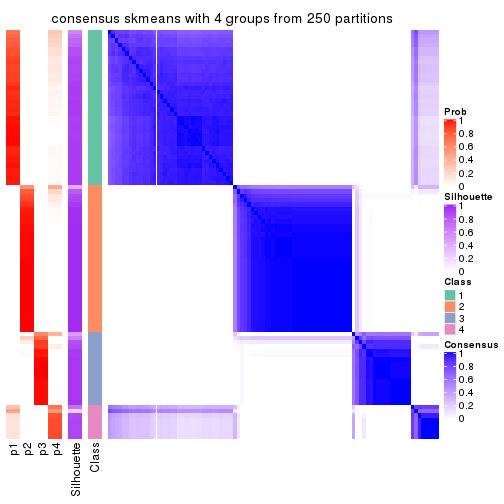
consensus_heatmap(res, k = 5)
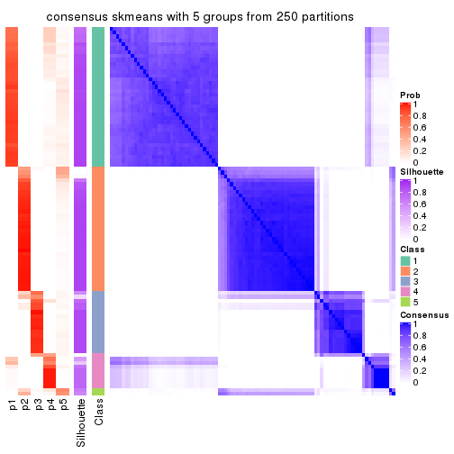
consensus_heatmap(res, k = 6)
Heatmaps for the membership of samples in all partitions to see how consistent they are:
membership_heatmap(res, k = 2)
membership_heatmap(res, k = 3)
membership_heatmap(res, k = 4)
membership_heatmap(res, k = 5)

membership_heatmap(res, k = 6)
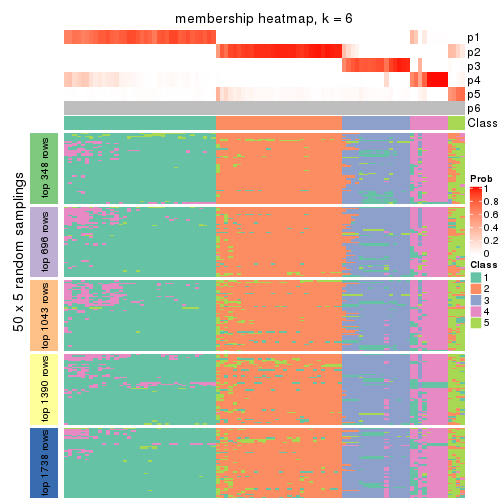
As soon as we have had the classes for columns, we can look for signatures which are significantly different between classes which can be candidate marks for certain classes. Following are the heatmaps for signatures.
Signature heatmaps where rows are scaled:
get_signatures(res, k = 2)

get_signatures(res, k = 3)
get_signatures(res, k = 4)
get_signatures(res, k = 5)
get_signatures(res, k = 6)

Signature heatmaps where rows are not scaled:
get_signatures(res, k = 2, scale_rows = FALSE)
get_signatures(res, k = 3, scale_rows = FALSE)
get_signatures(res, k = 4, scale_rows = FALSE)
get_signatures(res, k = 5, scale_rows = FALSE)
get_signatures(res, k = 6, scale_rows = FALSE)
Compare the overlap of signatures from different k:
compare_signatures(res)
get_signature() returns a data frame invisibly. TO get the list of signatures, the function
call should be assigned to a variable explicitly. In following code, if plot argument is set
to FALSE, no heatmap is plotted while only the differential analysis is performed.
# code only for demonstration
tb = get_signature(res, k = ..., plot = FALSE)
An example of the output of tb is:
#> which_row fdr mean_1 mean_2 scaled_mean_1 scaled_mean_2 km
#> 1 38 0.042760348 8.373488 9.131774 -0.5533452 0.5164555 1
#> 2 40 0.018707592 7.106213 8.469186 -0.6173731 0.5762149 1
#> 3 55 0.019134737 10.221463 11.207825 -0.6159697 0.5749050 1
#> 4 59 0.006059896 5.921854 7.869574 -0.6899429 0.6439467 1
#> 5 60 0.018055526 8.928898 10.211722 -0.6204761 0.5791110 1
#> 6 98 0.009384629 15.714769 14.887706 0.6635654 -0.6193277 2
...
The columns in tb are:
which_row: row indices corresponding to the input matrix.fdr: FDR for the differential test. mean_x: The mean value in group x.scaled_mean_x: The mean value in group x after rows are scaled.km: Row groups if k-means clustering is applied to rows.UMAP plot which shows how samples are separated.
dimension_reduction(res, k = 2, method = "UMAP")
dimension_reduction(res, k = 3, method = "UMAP")
dimension_reduction(res, k = 4, method = "UMAP")
dimension_reduction(res, k = 5, method = "UMAP")
dimension_reduction(res, k = 6, method = "UMAP")
Following heatmap shows how subgroups are split when increasing k:
collect_classes(res)
If matrix rows can be associated to genes, consider to use functional_enrichment(res,
...) to perform function enrichment for the signature genes. See this vignette for more detailed explanations.
The object with results only for a single top-value method and a single partition method can be extracted as:
res = res_list["SD", "pam"]
# you can also extract it by
# res = res_list["SD:pam"]
A summary of res and all the functions that can be applied to it:
res
#> A 'ConsensusPartition' object with k = 2, 3, 4, 5, 6.
#> On a matrix with 3475 rows and 95 columns.
#> Top rows (348, 696, 1043, 1390, 1738) are extracted by 'SD' method.
#> Subgroups are detected by 'pam' method.
#> Performed in total 1250 partitions by row resampling.
#> Best k for subgroups seems to be 2.
#>
#> Following methods can be applied to this 'ConsensusPartition' object:
#> [1] "cola_report" "collect_classes" "collect_plots"
#> [4] "collect_stats" "colnames" "compare_signatures"
#> [7] "consensus_heatmap" "dimension_reduction" "functional_enrichment"
#> [10] "get_anno_col" "get_anno" "get_classes"
#> [13] "get_consensus" "get_matrix" "get_membership"
#> [16] "get_param" "get_signatures" "get_stats"
#> [19] "is_best_k" "is_stable_k" "membership_heatmap"
#> [22] "ncol" "nrow" "plot_ecdf"
#> [25] "rownames" "select_partition_number" "show"
#> [28] "suggest_best_k" "test_to_known_factors"
collect_plots() function collects all the plots made from res for all k (number of partitions)
into one single page to provide an easy and fast comparison between different k.
collect_plots(res)
The plots are:
k and the heatmap of
predicted classes for each k.k.k.k.All the plots in panels can be made by individual functions and they are plotted later in this section.
select_partition_number() produces several plots showing different
statistics for choosing “optimized” k. There are following statistics:
k;k, the area increased is defined as \(A_k - A_{k-1}\).The detailed explanations of these statistics can be found in the cola vignette.
Generally speaking, lower PAC score, higher mean silhouette score or higher
concordance corresponds to better partition. Rand index and Jaccard index
measure how similar the current partition is compared to partition with k-1.
If they are too similar, we won't accept k is better than k-1.
select_partition_number(res)
The numeric values for all these statistics can be obtained by get_stats().
get_stats(res)
#> k 1-PAC mean_silhouette concordance area_increased Rand Jaccard
#> 2 2 1.000 0.965 0.986 0.5047 0.495 0.495
#> 3 3 0.779 0.763 0.900 0.1322 0.990 0.980
#> 4 4 0.746 0.762 0.882 0.0285 1.000 1.000
#> 5 5 0.738 0.712 0.877 0.0150 0.979 0.956
#> 6 6 0.727 0.660 0.873 0.0160 0.990 0.979
suggest_best_k() suggests the best \(k\) based on these statistics. The rules are as follows:
suggest_best_k(res)
#> [1] 2
Following shows the table of the partitions (You need to click the show/hide
code output link to see it). The membership matrix (columns with name p*)
is inferred by
clue::cl_consensus()
function with the SE method. Basically the value in the membership matrix
represents the probability to belong to a certain group. The finall class
label for an item is determined with the group with highest probability it
belongs to.
In get_classes() function, the entropy is calculated from the membership
matrix and the silhouette score is calculated from the consensus matrix.
cbind(get_classes(res, k = 2), get_membership(res, k = 2))
#> class entropy silhouette p1 p2
#> SRR2062258 1 0.2603 0.9481 0.956 0.044
#> SRR2062259 1 0.0000 0.9879 1.000 0.000
#> SRR2062270 2 0.0000 0.9831 0.000 1.000
#> SRR2062342 2 0.0000 0.9831 0.000 1.000
#> SRR2062341 1 0.0000 0.9879 1.000 0.000
#> SRR2062340 2 0.0938 0.9730 0.012 0.988
#> SRR2062339 1 0.1633 0.9671 0.976 0.024
#> SRR2062348 1 0.0000 0.9879 1.000 0.000
#> SRR2062347 2 0.0000 0.9831 0.000 1.000
#> SRR2062351 1 0.0000 0.9879 1.000 0.000
#> SRR2062350 1 0.0000 0.9879 1.000 0.000
#> SRR2062349 2 0.0000 0.9831 0.000 1.000
#> SRR2062346 1 0.0000 0.9879 1.000 0.000
#> SRR2062345 2 0.0000 0.9831 0.000 1.000
#> SRR2062344 2 0.4022 0.9061 0.080 0.920
#> SRR2062343 2 0.0000 0.9831 0.000 1.000
#> SRR2062354 1 0.0000 0.9879 1.000 0.000
#> SRR2062353 2 0.0000 0.9831 0.000 1.000
#> SRR2062352 1 0.0000 0.9879 1.000 0.000
#> SRR2063021 1 0.0000 0.9879 1.000 0.000
#> SRR2062356 1 0.0000 0.9879 1.000 0.000
#> SRR2063025 2 0.0000 0.9831 0.000 1.000
#> SRR2063027 1 0.0000 0.9879 1.000 0.000
#> SRR2063023 1 0.9460 0.4210 0.636 0.364
#> SRR2062355 1 0.3879 0.9132 0.924 0.076
#> SRR2063030 1 0.0000 0.9879 1.000 0.000
#> SRR2064285 1 0.0000 0.9879 1.000 0.000
#> SRR2063034 1 0.0000 0.9879 1.000 0.000
#> SRR2063032 1 0.0000 0.9879 1.000 0.000
#> SRR2063031 1 0.0000 0.9879 1.000 0.000
#> SRR2063029 2 0.0000 0.9831 0.000 1.000
#> SRR2063028 1 0.0000 0.9879 1.000 0.000
#> SRR2064308 2 0.0000 0.9831 0.000 1.000
#> SRR2064310 2 0.4939 0.8732 0.108 0.892
#> SRR2064312 1 0.0000 0.9879 1.000 0.000
#> SRR2064314 2 0.0000 0.9831 0.000 1.000
#> SRR2064315 1 0.0000 0.9879 1.000 0.000
#> SRR2064317 2 0.0000 0.9831 0.000 1.000
#> SRR2064318 1 0.0000 0.9879 1.000 0.000
#> SRR2064319 1 0.0000 0.9879 1.000 0.000
#> SRR2064320 2 0.0000 0.9831 0.000 1.000
#> SRR2064321 2 0.0000 0.9831 0.000 1.000
#> SRR2064322 2 0.0000 0.9831 0.000 1.000
#> SRR2064323 1 0.3114 0.9356 0.944 0.056
#> SRR2064324 2 0.0000 0.9831 0.000 1.000
#> SRR2064325 1 0.0000 0.9879 1.000 0.000
#> SRR2064326 1 0.0000 0.9879 1.000 0.000
#> SRR2064327 2 0.0000 0.9831 0.000 1.000
#> SRR2064329 1 0.0000 0.9879 1.000 0.000
#> SRR2064328 2 0.0000 0.9831 0.000 1.000
#> SRR2064330 2 0.2603 0.9435 0.044 0.956
#> SRR2064331 2 0.0000 0.9831 0.000 1.000
#> SRR2064332 2 0.0000 0.9831 0.000 1.000
#> SRR2064333 1 0.0000 0.9879 1.000 0.000
#> SRR2064334 2 0.0000 0.9831 0.000 1.000
#> SRR2064335 2 0.0000 0.9831 0.000 1.000
#> SRR2064436 1 0.0000 0.9879 1.000 0.000
#> SRR2064457 1 0.0000 0.9879 1.000 0.000
#> SRR2064458 2 1.0000 -0.0046 0.496 0.504
#> SRR2064459 2 0.0000 0.9831 0.000 1.000
#> SRR2064460 1 0.0000 0.9879 1.000 0.000
#> SRR2064461 2 0.0000 0.9831 0.000 1.000
#> SRR2064462 1 0.0000 0.9879 1.000 0.000
#> SRR2064534 2 0.0000 0.9831 0.000 1.000
#> SRR2064535 2 0.0000 0.9831 0.000 1.000
#> SRR2064536 2 0.0000 0.9831 0.000 1.000
#> SRR2064537 1 0.0000 0.9879 1.000 0.000
#> SRR2064538 1 0.0000 0.9879 1.000 0.000
#> SRR2064539 2 0.0000 0.9831 0.000 1.000
#> SRR2064540 1 0.0000 0.9879 1.000 0.000
#> SRR2064541 2 0.0000 0.9831 0.000 1.000
#> SRR2064543 1 0.0000 0.9879 1.000 0.000
#> SRR2064542 1 0.0000 0.9879 1.000 0.000
#> SRR2064544 2 0.0000 0.9831 0.000 1.000
#> SRR2064545 2 0.0000 0.9831 0.000 1.000
#> SRR2064546 1 0.0000 0.9879 1.000 0.000
#> SRR2064547 1 0.0000 0.9879 1.000 0.000
#> SRR2064548 2 0.0000 0.9831 0.000 1.000
#> SRR2064550 1 0.0376 0.9846 0.996 0.004
#> SRR2064549 1 0.0000 0.9879 1.000 0.000
#> SRR2064551 2 0.0000 0.9831 0.000 1.000
#> SRR2064552 1 0.0000 0.9879 1.000 0.000
#> SRR2064553 2 0.0000 0.9831 0.000 1.000
#> SRR2064554 1 0.0000 0.9879 1.000 0.000
#> SRR2064555 2 0.0000 0.9831 0.000 1.000
#> SRR2064556 1 0.0000 0.9879 1.000 0.000
#> SRR2064559 2 0.0000 0.9831 0.000 1.000
#> SRR2064558 2 0.0376 0.9799 0.004 0.996
#> SRR2064557 2 0.0000 0.9831 0.000 1.000
#> SRR2064560 1 0.0000 0.9879 1.000 0.000
#> SRR2064561 2 0.0000 0.9831 0.000 1.000
#> SRR2064562 1 0.0000 0.9879 1.000 0.000
#> SRR2064564 1 0.0000 0.9879 1.000 0.000
#> SRR2064563 2 0.0000 0.9831 0.000 1.000
#> SRR2064565 2 0.0000 0.9831 0.000 1.000
cbind(get_classes(res, k = 3), get_membership(res, k = 3))
#> class entropy silhouette p1 p2 p3
#> SRR2062258 1 0.6647 0.42748 0.540 0.008 0.452
#> SRR2062259 1 0.0237 0.92186 0.996 0.000 0.004
#> SRR2062270 2 0.0000 0.80259 0.000 1.000 0.000
#> SRR2062342 2 0.2959 0.76917 0.000 0.900 0.100
#> SRR2062341 1 0.0237 0.92186 0.996 0.000 0.004
#> SRR2062340 2 0.1482 0.79457 0.012 0.968 0.020
#> SRR2062339 1 0.5560 0.69121 0.700 0.000 0.300
#> SRR2062348 1 0.1753 0.92164 0.952 0.000 0.048
#> SRR2062347 2 0.4291 0.70869 0.000 0.820 0.180
#> SRR2062351 1 0.0237 0.92186 0.996 0.000 0.004
#> SRR2062350 1 0.1964 0.91945 0.944 0.000 0.056
#> SRR2062349 2 0.0424 0.80252 0.000 0.992 0.008
#> SRR2062346 1 0.1753 0.92230 0.952 0.000 0.048
#> SRR2062345 2 0.1031 0.80208 0.000 0.976 0.024
#> SRR2062344 2 0.7338 0.00478 0.060 0.652 0.288
#> SRR2062343 2 0.4121 0.71843 0.000 0.832 0.168
#> SRR2062354 1 0.0237 0.92186 0.996 0.000 0.004
#> SRR2062353 2 0.4178 0.71428 0.000 0.828 0.172
#> SRR2062352 1 0.0237 0.92186 0.996 0.000 0.004
#> SRR2063021 1 0.1860 0.92020 0.948 0.000 0.052
#> SRR2062356 1 0.0237 0.92186 0.996 0.000 0.004
#> SRR2063025 2 0.4291 0.70869 0.000 0.820 0.180
#> SRR2063027 1 0.1753 0.92155 0.952 0.000 0.048
#> SRR2063023 1 0.8984 0.26808 0.524 0.148 0.328
#> SRR2062355 1 0.6867 0.58447 0.636 0.028 0.336
#> SRR2063030 1 0.1753 0.92336 0.952 0.000 0.048
#> SRR2064285 1 0.4555 0.80561 0.800 0.000 0.200
#> SRR2063034 1 0.1529 0.92399 0.960 0.000 0.040
#> SRR2063032 1 0.2261 0.91600 0.932 0.000 0.068
#> SRR2063031 1 0.0237 0.92186 0.996 0.000 0.004
#> SRR2063029 2 0.0000 0.80259 0.000 1.000 0.000
#> SRR2063028 1 0.0237 0.92186 0.996 0.000 0.004
#> SRR2064308 2 0.0000 0.80259 0.000 1.000 0.000
#> SRR2064310 3 0.6777 0.00000 0.020 0.364 0.616
#> SRR2064312 1 0.0237 0.92343 0.996 0.000 0.004
#> SRR2064314 2 0.5650 0.38101 0.000 0.688 0.312
#> SRR2064315 1 0.0424 0.92386 0.992 0.000 0.008
#> SRR2064317 2 0.0424 0.80319 0.000 0.992 0.008
#> SRR2064318 1 0.0237 0.92186 0.996 0.000 0.004
#> SRR2064319 1 0.2066 0.91835 0.940 0.000 0.060
#> SRR2064320 2 0.0424 0.80354 0.000 0.992 0.008
#> SRR2064321 2 0.0000 0.80259 0.000 1.000 0.000
#> SRR2064322 2 0.1529 0.79794 0.000 0.960 0.040
#> SRR2064323 1 0.6081 0.61888 0.652 0.004 0.344
#> SRR2064324 2 0.5254 0.35177 0.000 0.736 0.264
#> SRR2064325 1 0.2165 0.91778 0.936 0.000 0.064
#> SRR2064326 1 0.1163 0.92333 0.972 0.000 0.028
#> SRR2064327 2 0.5178 0.36153 0.000 0.744 0.256
#> SRR2064329 1 0.0237 0.92357 0.996 0.000 0.004
#> SRR2064328 2 0.4002 0.72658 0.000 0.840 0.160
#> SRR2064330 2 0.5053 0.54347 0.024 0.812 0.164
#> SRR2064331 2 0.0000 0.80259 0.000 1.000 0.000
#> SRR2064332 2 0.5178 0.36098 0.000 0.744 0.256
#> SRR2064333 1 0.1411 0.92457 0.964 0.000 0.036
#> SRR2064334 2 0.4002 0.72589 0.000 0.840 0.160
#> SRR2064335 2 0.4291 0.70869 0.000 0.820 0.180
#> SRR2064436 1 0.5465 0.68075 0.712 0.000 0.288
#> SRR2064457 1 0.0237 0.92186 0.996 0.000 0.004
#> SRR2064458 2 0.9717 -0.40161 0.388 0.392 0.220
#> SRR2064459 2 0.5216 0.34827 0.000 0.740 0.260
#> SRR2064460 1 0.2066 0.91835 0.940 0.000 0.060
#> SRR2064461 2 0.0000 0.80259 0.000 1.000 0.000
#> SRR2064462 1 0.0237 0.92186 0.996 0.000 0.004
#> SRR2064534 2 0.4178 0.71606 0.000 0.828 0.172
#> SRR2064535 2 0.3412 0.67073 0.000 0.876 0.124
#> SRR2064536 2 0.0000 0.80259 0.000 1.000 0.000
#> SRR2064537 1 0.0237 0.92186 0.996 0.000 0.004
#> SRR2064538 1 0.2625 0.88811 0.916 0.000 0.084
#> SRR2064539 2 0.0000 0.80259 0.000 1.000 0.000
#> SRR2064540 1 0.2261 0.91600 0.932 0.000 0.068
#> SRR2064541 2 0.2796 0.77537 0.000 0.908 0.092
#> SRR2064543 1 0.0892 0.92297 0.980 0.000 0.020
#> SRR2064542 1 0.1031 0.92473 0.976 0.000 0.024
#> SRR2064544 2 0.0000 0.80259 0.000 1.000 0.000
#> SRR2064545 2 0.0592 0.80314 0.000 0.988 0.012
#> SRR2064546 1 0.1753 0.92085 0.952 0.000 0.048
#> SRR2064547 1 0.0747 0.92278 0.984 0.000 0.016
#> SRR2064548 2 0.0000 0.80259 0.000 1.000 0.000
#> SRR2064550 1 0.5810 0.63579 0.664 0.000 0.336
#> SRR2064549 1 0.0237 0.92186 0.996 0.000 0.004
#> SRR2064551 2 0.1860 0.79269 0.000 0.948 0.052
#> SRR2064552 1 0.1163 0.92448 0.972 0.000 0.028
#> SRR2064553 2 0.0000 0.80259 0.000 1.000 0.000
#> SRR2064554 1 0.0592 0.92311 0.988 0.000 0.012
#> SRR2064555 2 0.0424 0.80025 0.000 0.992 0.008
#> SRR2064556 1 0.1860 0.92130 0.948 0.000 0.052
#> SRR2064559 2 0.4291 0.70869 0.000 0.820 0.180
#> SRR2064558 2 0.5443 0.33565 0.004 0.736 0.260
#> SRR2064557 2 0.4346 0.70579 0.000 0.816 0.184
#> SRR2064560 1 0.1753 0.92259 0.952 0.000 0.048
#> SRR2064561 2 0.0424 0.79934 0.000 0.992 0.008
#> SRR2064562 1 0.2165 0.91750 0.936 0.000 0.064
#> SRR2064564 1 0.2261 0.91600 0.932 0.000 0.068
#> SRR2064563 2 0.1753 0.79504 0.000 0.952 0.048
#> SRR2064565 2 0.2796 0.72470 0.000 0.908 0.092
cbind(get_classes(res, k = 4), get_membership(res, k = 4))
#> class entropy silhouette p1 p2 p3 p4
#> SRR2062258 1 0.7363 0.2158 0.464 0.004 NA 0.140
#> SRR2062259 1 0.0592 0.9013 0.984 0.000 NA 0.000
#> SRR2062270 2 0.0000 0.8262 0.000 1.000 NA 0.000
#> SRR2062342 2 0.2654 0.7949 0.000 0.888 NA 0.108
#> SRR2062341 1 0.0921 0.9012 0.972 0.000 NA 0.000
#> SRR2062340 2 0.1443 0.8184 0.004 0.960 NA 0.028
#> SRR2062339 1 0.6508 0.5353 0.600 0.000 NA 0.296
#> SRR2062348 1 0.2227 0.9024 0.928 0.000 NA 0.036
#> SRR2062347 2 0.3569 0.7373 0.000 0.804 NA 0.196
#> SRR2062351 1 0.0592 0.9013 0.984 0.000 NA 0.000
#> SRR2062350 1 0.2197 0.8979 0.928 0.000 NA 0.048
#> SRR2062349 2 0.0336 0.8263 0.000 0.992 NA 0.008
#> SRR2062346 1 0.1913 0.9043 0.940 0.000 NA 0.040
#> SRR2062345 2 0.0817 0.8262 0.000 0.976 NA 0.024
#> SRR2062344 2 0.7566 -0.0178 0.060 0.564 NA 0.300
#> SRR2062343 2 0.3356 0.7520 0.000 0.824 NA 0.176
#> SRR2062354 1 0.0921 0.8986 0.972 0.000 NA 0.000
#> SRR2062353 2 0.3400 0.7486 0.000 0.820 NA 0.180
#> SRR2062352 1 0.1022 0.8976 0.968 0.000 NA 0.000
#> SRR2063021 1 0.2021 0.8972 0.936 0.000 NA 0.040
#> SRR2062356 1 0.0921 0.8986 0.972 0.000 NA 0.000
#> SRR2063025 2 0.3751 0.7338 0.000 0.800 NA 0.196
#> SRR2063027 1 0.1545 0.9042 0.952 0.000 NA 0.040
#> SRR2063023 1 0.7779 0.1909 0.496 0.152 NA 0.332
#> SRR2062355 1 0.6196 0.5207 0.608 0.028 NA 0.340
#> SRR2063030 1 0.1677 0.9052 0.948 0.000 NA 0.040
#> SRR2064285 1 0.4214 0.7723 0.780 0.000 NA 0.204
#> SRR2063034 1 0.2699 0.8836 0.904 0.000 NA 0.028
#> SRR2063032 1 0.2443 0.8911 0.916 0.000 NA 0.060
#> SRR2063031 1 0.1022 0.8976 0.968 0.000 NA 0.000
#> SRR2063029 2 0.0000 0.8262 0.000 1.000 NA 0.000
#> SRR2063028 1 0.0921 0.8986 0.972 0.000 NA 0.000
#> SRR2064308 2 0.0000 0.8262 0.000 1.000 NA 0.000
#> SRR2064310 4 0.6101 0.0000 0.012 0.228 NA 0.684
#> SRR2064312 1 0.1151 0.9051 0.968 0.000 NA 0.008
#> SRR2064314 2 0.4500 0.5262 0.000 0.684 NA 0.316
#> SRR2064315 1 0.1807 0.9028 0.940 0.000 NA 0.008
#> SRR2064317 2 0.0336 0.8268 0.000 0.992 NA 0.008
#> SRR2064318 1 0.0921 0.9019 0.972 0.000 NA 0.000
#> SRR2064319 1 0.2282 0.8937 0.924 0.000 NA 0.052
#> SRR2064320 2 0.0336 0.8271 0.000 0.992 NA 0.008
#> SRR2064321 2 0.0000 0.8262 0.000 1.000 NA 0.000
#> SRR2064322 2 0.1398 0.8223 0.000 0.956 NA 0.040
#> SRR2064323 1 0.7485 0.2455 0.472 0.000 NA 0.336
#> SRR2064324 2 0.4193 0.5074 0.000 0.732 NA 0.268
#> SRR2064325 1 0.2660 0.8957 0.908 0.000 NA 0.056
#> SRR2064326 1 0.1733 0.9027 0.948 0.000 NA 0.024
#> SRR2064327 2 0.4826 0.4660 0.000 0.716 NA 0.264
#> SRR2064329 1 0.1151 0.9055 0.968 0.000 NA 0.008
#> SRR2064328 2 0.3266 0.7596 0.000 0.832 NA 0.168
#> SRR2064330 2 0.4829 0.6046 0.024 0.784 NA 0.168
#> SRR2064331 2 0.0000 0.8262 0.000 1.000 NA 0.000
#> SRR2064332 2 0.4134 0.5117 0.000 0.740 NA 0.260
#> SRR2064333 1 0.1833 0.9053 0.944 0.000 NA 0.032
#> SRR2064334 2 0.3266 0.7584 0.000 0.832 NA 0.168
#> SRR2064335 2 0.3486 0.7439 0.000 0.812 NA 0.188
#> SRR2064436 1 0.4770 0.6396 0.700 0.000 NA 0.288
#> SRR2064457 1 0.0707 0.9044 0.980 0.000 NA 0.000
#> SRR2064458 2 0.7695 -0.3359 0.372 0.408 NA 0.220
#> SRR2064459 2 0.4164 0.5034 0.000 0.736 NA 0.264
#> SRR2064460 1 0.2282 0.8937 0.924 0.000 NA 0.052
#> SRR2064461 2 0.0000 0.8262 0.000 1.000 NA 0.000
#> SRR2064462 1 0.1109 0.8998 0.968 0.000 NA 0.004
#> SRR2064534 2 0.3486 0.7441 0.000 0.812 NA 0.188
#> SRR2064535 2 0.4401 0.6638 0.000 0.812 NA 0.112
#> SRR2064536 2 0.0000 0.8262 0.000 1.000 NA 0.000
#> SRR2064537 1 0.0592 0.9013 0.984 0.000 NA 0.000
#> SRR2064538 1 0.3486 0.8545 0.864 0.000 NA 0.092
#> SRR2064539 2 0.0000 0.8262 0.000 1.000 NA 0.000
#> SRR2064540 1 0.2546 0.8929 0.912 0.000 NA 0.060
#> SRR2064541 2 0.2281 0.8031 0.000 0.904 NA 0.096
#> SRR2064543 1 0.1820 0.9045 0.944 0.000 NA 0.020
#> SRR2064542 1 0.1297 0.9059 0.964 0.000 NA 0.020
#> SRR2064544 2 0.0000 0.8262 0.000 1.000 NA 0.000
#> SRR2064545 2 0.0469 0.8269 0.000 0.988 NA 0.012
#> SRR2064546 1 0.1820 0.9034 0.944 0.000 NA 0.036
#> SRR2064547 1 0.1510 0.9017 0.956 0.000 NA 0.016
#> SRR2064548 2 0.0000 0.8262 0.000 1.000 NA 0.000
#> SRR2064550 1 0.5368 0.5770 0.636 0.000 NA 0.340
#> SRR2064549 1 0.0921 0.8986 0.972 0.000 NA 0.000
#> SRR2064551 2 0.1637 0.8163 0.000 0.940 NA 0.060
#> SRR2064552 1 0.1510 0.9053 0.956 0.000 NA 0.016
#> SRR2064553 2 0.0000 0.8262 0.000 1.000 NA 0.000
#> SRR2064554 1 0.1042 0.9051 0.972 0.000 NA 0.008
#> SRR2064555 2 0.0592 0.8219 0.000 0.984 NA 0.016
#> SRR2064556 1 0.2494 0.9037 0.916 0.000 NA 0.048
#> SRR2064559 2 0.3569 0.7373 0.000 0.804 NA 0.196
#> SRR2064558 2 0.4343 0.4956 0.004 0.732 NA 0.264
#> SRR2064557 2 0.3791 0.7314 0.000 0.796 NA 0.200
#> SRR2064560 1 0.1913 0.9000 0.940 0.000 NA 0.040
#> SRR2064561 2 0.0336 0.8240 0.000 0.992 NA 0.008
#> SRR2064562 1 0.2466 0.8944 0.916 0.000 NA 0.056
#> SRR2064564 1 0.2644 0.8902 0.908 0.000 NA 0.060
#> SRR2064563 2 0.1389 0.8205 0.000 0.952 NA 0.048
#> SRR2064565 2 0.2281 0.7663 0.000 0.904 NA 0.096
cbind(get_classes(res, k = 5), get_membership(res, k = 5))
#> class entropy silhouette p1 p2 p3 p4 p5
#> SRR2062258 5 0.6122 0.0000 0.380 0.000 0.024 0.072 0.524
#> SRR2062259 1 0.0290 0.8501 0.992 0.000 0.000 0.008 0.000
#> SRR2062270 2 0.0000 0.8416 0.000 1.000 0.000 0.000 0.000
#> SRR2062342 2 0.2677 0.8098 0.000 0.872 0.112 0.000 0.016
#> SRR2062341 1 0.0510 0.8520 0.984 0.000 0.000 0.016 0.000
#> SRR2062340 2 0.1947 0.8289 0.004 0.936 0.016 0.032 0.012
#> SRR2062339 1 0.7124 -0.3481 0.520 0.000 0.200 0.232 0.048
#> SRR2062348 1 0.1792 0.8485 0.916 0.000 0.000 0.084 0.000
#> SRR2062347 2 0.3109 0.7619 0.000 0.800 0.200 0.000 0.000
#> SRR2062351 1 0.0451 0.8495 0.988 0.000 0.000 0.008 0.004
#> SRR2062350 1 0.1908 0.8401 0.908 0.000 0.000 0.092 0.000
#> SRR2062349 2 0.0451 0.8419 0.000 0.988 0.004 0.000 0.008
#> SRR2062346 1 0.1608 0.8528 0.928 0.000 0.000 0.072 0.000
#> SRR2062345 2 0.0898 0.8418 0.000 0.972 0.020 0.000 0.008
#> SRR2062344 2 0.8028 -0.0436 0.056 0.488 0.264 0.052 0.140
#> SRR2062343 2 0.2929 0.7761 0.000 0.820 0.180 0.000 0.000
#> SRR2062354 1 0.0404 0.8457 0.988 0.000 0.000 0.012 0.000
#> SRR2062353 2 0.2966 0.7731 0.000 0.816 0.184 0.000 0.000
#> SRR2062352 1 0.0510 0.8440 0.984 0.000 0.000 0.016 0.000
#> SRR2063021 1 0.1792 0.8383 0.916 0.000 0.000 0.084 0.000
#> SRR2062356 1 0.0404 0.8457 0.988 0.000 0.000 0.012 0.000
#> SRR2063025 2 0.3596 0.7514 0.000 0.784 0.200 0.000 0.016
#> SRR2063027 1 0.1197 0.8542 0.952 0.000 0.000 0.048 0.000
#> SRR2063023 1 0.7709 -0.4036 0.468 0.168 0.260 0.104 0.000
#> SRR2062355 1 0.6520 -0.0706 0.580 0.040 0.260 0.120 0.000
#> SRR2063030 1 0.1270 0.8559 0.948 0.000 0.000 0.052 0.000
#> SRR2064285 1 0.4428 0.5603 0.760 0.000 0.144 0.096 0.000
#> SRR2063034 1 0.3234 0.7582 0.856 0.000 0.004 0.092 0.048
#> SRR2063032 1 0.2074 0.8264 0.896 0.000 0.000 0.104 0.000
#> SRR2063031 1 0.0510 0.8440 0.984 0.000 0.000 0.016 0.000
#> SRR2063029 2 0.0000 0.8416 0.000 1.000 0.000 0.000 0.000
#> SRR2063028 1 0.0404 0.8457 0.988 0.000 0.000 0.012 0.000
#> SRR2064308 2 0.0000 0.8416 0.000 1.000 0.000 0.000 0.000
#> SRR2064310 3 0.4954 0.0000 0.004 0.108 0.756 0.020 0.112
#> SRR2064312 1 0.1121 0.8564 0.956 0.000 0.000 0.044 0.000
#> SRR2064314 2 0.4088 0.6147 0.000 0.688 0.304 0.000 0.008
#> SRR2064315 1 0.1571 0.8487 0.936 0.000 0.000 0.060 0.004
#> SRR2064317 2 0.0451 0.8422 0.000 0.988 0.004 0.000 0.008
#> SRR2064318 1 0.0794 0.8513 0.972 0.000 0.000 0.028 0.000
#> SRR2064319 1 0.1908 0.8347 0.908 0.000 0.000 0.092 0.000
#> SRR2064320 2 0.0290 0.8425 0.000 0.992 0.008 0.000 0.000
#> SRR2064321 2 0.0000 0.8416 0.000 1.000 0.000 0.000 0.000
#> SRR2064322 2 0.1364 0.8386 0.000 0.952 0.036 0.000 0.012
#> SRR2064323 4 0.6401 0.0000 0.320 0.000 0.140 0.528 0.012
#> SRR2064324 2 0.3910 0.6091 0.000 0.740 0.248 0.008 0.004
#> SRR2064325 1 0.2020 0.8378 0.900 0.000 0.000 0.100 0.000
#> SRR2064326 1 0.1608 0.8494 0.928 0.000 0.000 0.072 0.000
#> SRR2064327 2 0.5185 0.5108 0.000 0.684 0.248 0.028 0.040
#> SRR2064329 1 0.0880 0.8575 0.968 0.000 0.000 0.032 0.000
#> SRR2064328 2 0.2813 0.7845 0.000 0.832 0.168 0.000 0.000
#> SRR2064330 2 0.5285 0.6167 0.024 0.744 0.148 0.060 0.024
#> SRR2064331 2 0.0000 0.8416 0.000 1.000 0.000 0.000 0.000
#> SRR2064332 2 0.3480 0.6164 0.000 0.752 0.248 0.000 0.000
#> SRR2064333 1 0.0963 0.8564 0.964 0.000 0.000 0.036 0.000
#> SRR2064334 2 0.2852 0.7819 0.000 0.828 0.172 0.000 0.000
#> SRR2064335 2 0.3123 0.7716 0.000 0.812 0.184 0.000 0.004
#> SRR2064436 1 0.4629 0.2724 0.704 0.000 0.244 0.052 0.000
#> SRR2064457 1 0.0703 0.8560 0.976 0.000 0.000 0.024 0.000
#> SRR2064458 2 0.7313 -0.3568 0.360 0.424 0.168 0.048 0.000
#> SRR2064459 2 0.3508 0.6105 0.000 0.748 0.252 0.000 0.000
#> SRR2064460 1 0.1965 0.8315 0.904 0.000 0.000 0.096 0.000
#> SRR2064461 2 0.0000 0.8416 0.000 1.000 0.000 0.000 0.000
#> SRR2064462 1 0.0510 0.8478 0.984 0.000 0.000 0.016 0.000
#> SRR2064534 2 0.3074 0.7651 0.000 0.804 0.196 0.000 0.000
#> SRR2064535 2 0.4918 0.6320 0.000 0.748 0.080 0.148 0.024
#> SRR2064536 2 0.0000 0.8416 0.000 1.000 0.000 0.000 0.000
#> SRR2064537 1 0.0290 0.8501 0.992 0.000 0.000 0.008 0.000
#> SRR2064538 1 0.2929 0.7401 0.876 0.000 0.076 0.044 0.004
#> SRR2064539 2 0.0000 0.8416 0.000 1.000 0.000 0.000 0.000
#> SRR2064540 1 0.2020 0.8300 0.900 0.000 0.000 0.100 0.000
#> SRR2064541 2 0.2228 0.8224 0.000 0.900 0.092 0.004 0.004
#> SRR2064543 1 0.1341 0.8552 0.944 0.000 0.000 0.056 0.000
#> SRR2064542 1 0.0880 0.8579 0.968 0.000 0.000 0.032 0.000
#> SRR2064544 2 0.0000 0.8416 0.000 1.000 0.000 0.000 0.000
#> SRR2064545 2 0.0404 0.8425 0.000 0.988 0.012 0.000 0.000
#> SRR2064546 1 0.1341 0.8520 0.944 0.000 0.000 0.056 0.000
#> SRR2064547 1 0.0794 0.8509 0.972 0.000 0.000 0.028 0.000
#> SRR2064548 2 0.0162 0.8417 0.000 0.996 0.000 0.000 0.004
#> SRR2064550 1 0.5599 0.1037 0.620 0.000 0.260 0.120 0.000
#> SRR2064549 1 0.0404 0.8457 0.988 0.000 0.000 0.012 0.000
#> SRR2064551 2 0.1704 0.8310 0.000 0.928 0.068 0.000 0.004
#> SRR2064552 1 0.1270 0.8578 0.948 0.000 0.000 0.052 0.000
#> SRR2064553 2 0.0000 0.8416 0.000 1.000 0.000 0.000 0.000
#> SRR2064554 1 0.0794 0.8565 0.972 0.000 0.000 0.028 0.000
#> SRR2064555 2 0.0798 0.8364 0.000 0.976 0.008 0.016 0.000
#> SRR2064556 1 0.1704 0.8491 0.928 0.000 0.000 0.068 0.004
#> SRR2064559 2 0.3177 0.7558 0.000 0.792 0.208 0.000 0.000
#> SRR2064558 2 0.3817 0.5990 0.004 0.740 0.252 0.004 0.000
#> SRR2064557 2 0.3487 0.7469 0.000 0.780 0.212 0.000 0.008
#> SRR2064560 1 0.1792 0.8419 0.916 0.000 0.000 0.084 0.000
#> SRR2064561 2 0.0290 0.8401 0.000 0.992 0.008 0.000 0.000
#> SRR2064562 1 0.2074 0.8329 0.896 0.000 0.000 0.104 0.000
#> SRR2064564 1 0.2179 0.8235 0.888 0.000 0.000 0.112 0.000
#> SRR2064563 2 0.1282 0.8379 0.000 0.952 0.044 0.000 0.004
#> SRR2064565 2 0.2407 0.7909 0.000 0.896 0.088 0.012 0.004
cbind(get_classes(res, k = 6), get_membership(res, k = 6))
#> class entropy silhouette p1 p2 p3 p4 p5 p6
#> SRR2062258 5 0.5130 0.0000 0.324 0.000 0.032 0.044 0.600 0.000
#> SRR2062259 1 0.0146 0.8564 0.996 0.000 0.000 0.004 0.000 0.000
#> SRR2062270 2 0.0000 0.7882 0.000 1.000 0.000 0.000 0.000 0.000
#> SRR2062342 2 0.2400 0.7466 0.000 0.872 0.116 0.004 0.008 0.000
#> SRR2062341 1 0.0405 0.8587 0.988 0.000 0.000 0.008 0.000 0.004
#> SRR2062340 2 0.2161 0.7530 0.004 0.920 0.028 0.028 0.004 0.016
#> SRR2062339 1 0.7303 -0.4189 0.456 0.000 0.260 0.080 0.180 0.024
#> SRR2062348 1 0.2001 0.8551 0.912 0.000 0.040 0.048 0.000 0.000
#> SRR2062347 2 0.2902 0.6871 0.000 0.800 0.196 0.000 0.004 0.000
#> SRR2062351 1 0.0603 0.8508 0.980 0.000 0.016 0.004 0.000 0.000
#> SRR2062350 1 0.2134 0.8475 0.904 0.000 0.052 0.044 0.000 0.000
#> SRR2062349 2 0.0436 0.7885 0.000 0.988 0.004 0.004 0.004 0.000
#> SRR2062346 1 0.1933 0.8582 0.920 0.000 0.044 0.032 0.000 0.004
#> SRR2062345 2 0.0837 0.7885 0.000 0.972 0.020 0.004 0.004 0.000
#> SRR2062344 3 0.5490 0.0000 0.044 0.352 0.564 0.024 0.016 0.000
#> SRR2062343 2 0.2631 0.7050 0.000 0.820 0.180 0.000 0.000 0.000
#> SRR2062354 1 0.0260 0.8529 0.992 0.000 0.000 0.008 0.000 0.000
#> SRR2062353 2 0.2805 0.6991 0.000 0.812 0.184 0.000 0.000 0.004
#> SRR2062352 1 0.0363 0.8518 0.988 0.000 0.000 0.012 0.000 0.000
#> SRR2063021 1 0.2003 0.8461 0.912 0.000 0.044 0.044 0.000 0.000
#> SRR2062356 1 0.0260 0.8529 0.992 0.000 0.000 0.008 0.000 0.000
#> SRR2063025 2 0.3213 0.6730 0.000 0.784 0.204 0.004 0.008 0.000
#> SRR2063027 1 0.1265 0.8601 0.948 0.000 0.044 0.008 0.000 0.000
#> SRR2063023 1 0.6366 -0.2911 0.456 0.152 0.352 0.040 0.000 0.000
#> SRR2062355 1 0.5279 0.0611 0.568 0.036 0.352 0.044 0.000 0.000
#> SRR2063030 1 0.1196 0.8616 0.952 0.000 0.040 0.008 0.000 0.000
#> SRR2064285 1 0.3894 0.5806 0.740 0.000 0.220 0.036 0.000 0.004
#> SRR2063034 1 0.3883 0.6715 0.804 0.000 0.036 0.116 0.004 0.040
#> SRR2063032 1 0.2318 0.8357 0.892 0.000 0.064 0.044 0.000 0.000
#> SRR2063031 1 0.0363 0.8518 0.988 0.000 0.000 0.012 0.000 0.000
#> SRR2063029 2 0.0000 0.7882 0.000 1.000 0.000 0.000 0.000 0.000
#> SRR2063028 1 0.0405 0.8524 0.988 0.000 0.000 0.008 0.004 0.000
#> SRR2064308 2 0.0000 0.7882 0.000 1.000 0.000 0.000 0.000 0.000
#> SRR2064310 6 0.4149 0.0000 0.000 0.064 0.216 0.000 0.000 0.720
#> SRR2064312 1 0.1225 0.8622 0.952 0.000 0.012 0.036 0.000 0.000
#> SRR2064314 2 0.3738 0.3519 0.000 0.680 0.312 0.004 0.004 0.000
#> SRR2064315 1 0.1657 0.8536 0.928 0.000 0.016 0.056 0.000 0.000
#> SRR2064317 2 0.0436 0.7891 0.000 0.988 0.004 0.004 0.004 0.000
#> SRR2064318 1 0.0632 0.8580 0.976 0.000 0.000 0.024 0.000 0.000
#> SRR2064319 1 0.2129 0.8430 0.904 0.000 0.056 0.040 0.000 0.000
#> SRR2064320 2 0.0260 0.7895 0.000 0.992 0.008 0.000 0.000 0.000
#> SRR2064321 2 0.0000 0.7882 0.000 1.000 0.000 0.000 0.000 0.000
#> SRR2064322 2 0.1226 0.7842 0.000 0.952 0.040 0.004 0.004 0.000
#> SRR2064323 4 0.5121 0.0000 0.272 0.000 0.124 0.604 0.000 0.000
#> SRR2064324 2 0.3360 0.3334 0.000 0.732 0.264 0.000 0.004 0.000
#> SRR2064325 1 0.2263 0.8460 0.896 0.000 0.056 0.048 0.000 0.000
#> SRR2064326 1 0.1633 0.8560 0.932 0.000 0.024 0.044 0.000 0.000
#> SRR2064327 2 0.4384 0.0430 0.000 0.660 0.296 0.004 0.040 0.000
#> SRR2064329 1 0.0993 0.8632 0.964 0.000 0.012 0.024 0.000 0.000
#> SRR2064328 2 0.2527 0.7157 0.000 0.832 0.168 0.000 0.000 0.000
#> SRR2064330 2 0.5438 0.0747 0.024 0.668 0.188 0.004 0.108 0.008
#> SRR2064331 2 0.0000 0.7882 0.000 1.000 0.000 0.000 0.000 0.000
#> SRR2064332 2 0.3221 0.3280 0.000 0.736 0.264 0.000 0.000 0.000
#> SRR2064333 1 0.0858 0.8625 0.968 0.000 0.028 0.004 0.000 0.000
#> SRR2064334 2 0.2562 0.7124 0.000 0.828 0.172 0.000 0.000 0.000
#> SRR2064335 2 0.2946 0.6974 0.000 0.808 0.184 0.004 0.004 0.000
#> SRR2064436 1 0.3766 0.3289 0.684 0.000 0.304 0.012 0.000 0.000
#> SRR2064457 1 0.0547 0.8617 0.980 0.000 0.000 0.020 0.000 0.000
#> SRR2064458 2 0.6074 -0.4222 0.348 0.424 0.224 0.004 0.000 0.000
#> SRR2064459 2 0.3244 0.3151 0.000 0.732 0.268 0.000 0.000 0.000
#> SRR2064460 1 0.2197 0.8401 0.900 0.000 0.056 0.044 0.000 0.000
#> SRR2064461 2 0.0000 0.7882 0.000 1.000 0.000 0.000 0.000 0.000
#> SRR2064462 1 0.0405 0.8548 0.988 0.000 0.004 0.008 0.000 0.000
#> SRR2064534 2 0.2871 0.6909 0.000 0.804 0.192 0.000 0.004 0.000
#> SRR2064535 2 0.6172 -0.0225 0.000 0.632 0.072 0.108 0.024 0.164
#> SRR2064536 2 0.0000 0.7882 0.000 1.000 0.000 0.000 0.000 0.000
#> SRR2064537 1 0.0146 0.8564 0.996 0.000 0.000 0.004 0.000 0.000
#> SRR2064538 1 0.3526 0.6538 0.820 0.000 0.120 0.044 0.008 0.008
#> SRR2064539 2 0.0000 0.7882 0.000 1.000 0.000 0.000 0.000 0.000
#> SRR2064540 1 0.2507 0.8342 0.884 0.000 0.072 0.040 0.004 0.000
#> SRR2064541 2 0.1908 0.7629 0.000 0.900 0.096 0.000 0.004 0.000
#> SRR2064543 1 0.1334 0.8613 0.948 0.000 0.020 0.032 0.000 0.000
#> SRR2064542 1 0.0993 0.8635 0.964 0.000 0.024 0.012 0.000 0.000
#> SRR2064544 2 0.0000 0.7882 0.000 1.000 0.000 0.000 0.000 0.000
#> SRR2064545 2 0.0363 0.7894 0.000 0.988 0.012 0.000 0.000 0.000
#> SRR2064546 1 0.1708 0.8574 0.932 0.000 0.040 0.024 0.000 0.004
#> SRR2064547 1 0.0717 0.8576 0.976 0.000 0.016 0.008 0.000 0.000
#> SRR2064548 2 0.0146 0.7883 0.000 0.996 0.000 0.004 0.000 0.000
#> SRR2064550 1 0.4518 0.1972 0.604 0.000 0.352 0.044 0.000 0.000
#> SRR2064549 1 0.0260 0.8529 0.992 0.000 0.000 0.008 0.000 0.000
#> SRR2064551 2 0.1615 0.7742 0.000 0.928 0.064 0.004 0.004 0.000
#> SRR2064552 1 0.1257 0.8636 0.952 0.000 0.020 0.028 0.000 0.000
#> SRR2064553 2 0.0000 0.7882 0.000 1.000 0.000 0.000 0.000 0.000
#> SRR2064554 1 0.0717 0.8623 0.976 0.000 0.008 0.016 0.000 0.000
#> SRR2064555 2 0.0547 0.7807 0.000 0.980 0.020 0.000 0.000 0.000
#> SRR2064556 1 0.1989 0.8489 0.916 0.000 0.052 0.028 0.000 0.004
#> SRR2064559 2 0.2964 0.6791 0.000 0.792 0.204 0.000 0.004 0.000
#> SRR2064558 2 0.3405 0.2870 0.004 0.724 0.272 0.000 0.000 0.000
#> SRR2064557 2 0.3052 0.6670 0.000 0.780 0.216 0.000 0.004 0.000
#> SRR2064560 1 0.2001 0.8496 0.912 0.000 0.048 0.040 0.000 0.000
#> SRR2064561 2 0.0260 0.7850 0.000 0.992 0.008 0.000 0.000 0.000
#> SRR2064562 1 0.2325 0.8413 0.892 0.000 0.060 0.048 0.000 0.000
#> SRR2064564 1 0.2703 0.8318 0.876 0.000 0.064 0.052 0.000 0.008
#> SRR2064563 2 0.1152 0.7835 0.000 0.952 0.044 0.004 0.000 0.000
#> SRR2064565 2 0.2261 0.6902 0.000 0.884 0.104 0.004 0.008 0.000
Heatmaps for the consensus matrix. It visualizes the probability of two samples to be in a same group.
consensus_heatmap(res, k = 2)
consensus_heatmap(res, k = 3)
consensus_heatmap(res, k = 4)
consensus_heatmap(res, k = 5)
consensus_heatmap(res, k = 6)
Heatmaps for the membership of samples in all partitions to see how consistent they are:
membership_heatmap(res, k = 2)
membership_heatmap(res, k = 3)
membership_heatmap(res, k = 4)
membership_heatmap(res, k = 5)
membership_heatmap(res, k = 6)
As soon as we have had the classes for columns, we can look for signatures which are significantly different between classes which can be candidate marks for certain classes. Following are the heatmaps for signatures.
Signature heatmaps where rows are scaled:
get_signatures(res, k = 2)
get_signatures(res, k = 3)
get_signatures(res, k = 4)
get_signatures(res, k = 5)
get_signatures(res, k = 6)
Signature heatmaps where rows are not scaled:
get_signatures(res, k = 2, scale_rows = FALSE)
get_signatures(res, k = 3, scale_rows = FALSE)
get_signatures(res, k = 4, scale_rows = FALSE)
get_signatures(res, k = 5, scale_rows = FALSE)
get_signatures(res, k = 6, scale_rows = FALSE)
Compare the overlap of signatures from different k:
compare_signatures(res)
get_signature() returns a data frame invisibly. TO get the list of signatures, the function
call should be assigned to a variable explicitly. In following code, if plot argument is set
to FALSE, no heatmap is plotted while only the differential analysis is performed.
# code only for demonstration
tb = get_signature(res, k = ..., plot = FALSE)
An example of the output of tb is:
#> which_row fdr mean_1 mean_2 scaled_mean_1 scaled_mean_2 km
#> 1 38 0.042760348 8.373488 9.131774 -0.5533452 0.5164555 1
#> 2 40 0.018707592 7.106213 8.469186 -0.6173731 0.5762149 1
#> 3 55 0.019134737 10.221463 11.207825 -0.6159697 0.5749050 1
#> 4 59 0.006059896 5.921854 7.869574 -0.6899429 0.6439467 1
#> 5 60 0.018055526 8.928898 10.211722 -0.6204761 0.5791110 1
#> 6 98 0.009384629 15.714769 14.887706 0.6635654 -0.6193277 2
...
The columns in tb are:
which_row: row indices corresponding to the input matrix.fdr: FDR for the differential test. mean_x: The mean value in group x.scaled_mean_x: The mean value in group x after rows are scaled.km: Row groups if k-means clustering is applied to rows.UMAP plot which shows how samples are separated.
dimension_reduction(res, k = 2, method = "UMAP")
dimension_reduction(res, k = 3, method = "UMAP")
dimension_reduction(res, k = 4, method = "UMAP")
dimension_reduction(res, k = 5, method = "UMAP")
dimension_reduction(res, k = 6, method = "UMAP")

Following heatmap shows how subgroups are split when increasing k:
collect_classes(res)
If matrix rows can be associated to genes, consider to use functional_enrichment(res,
...) to perform function enrichment for the signature genes. See this vignette for more detailed explanations.
The object with results only for a single top-value method and a single partition method can be extracted as:
res = res_list["SD", "mclust"]
# you can also extract it by
# res = res_list["SD:mclust"]
A summary of res and all the functions that can be applied to it:
res
#> A 'ConsensusPartition' object with k = 2, 3, 4, 5, 6.
#> On a matrix with 3475 rows and 95 columns.
#> Top rows (348, 696, 1043, 1390, 1738) are extracted by 'SD' method.
#> Subgroups are detected by 'mclust' method.
#> Performed in total 1250 partitions by row resampling.
#> Best k for subgroups seems to be 4.
#>
#> Following methods can be applied to this 'ConsensusPartition' object:
#> [1] "cola_report" "collect_classes" "collect_plots"
#> [4] "collect_stats" "colnames" "compare_signatures"
#> [7] "consensus_heatmap" "dimension_reduction" "functional_enrichment"
#> [10] "get_anno_col" "get_anno" "get_classes"
#> [13] "get_consensus" "get_matrix" "get_membership"
#> [16] "get_param" "get_signatures" "get_stats"
#> [19] "is_best_k" "is_stable_k" "membership_heatmap"
#> [22] "ncol" "nrow" "plot_ecdf"
#> [25] "rownames" "select_partition_number" "show"
#> [28] "suggest_best_k" "test_to_known_factors"
collect_plots() function collects all the plots made from res for all k (number of partitions)
into one single page to provide an easy and fast comparison between different k.
collect_plots(res)
The plots are:
k and the heatmap of
predicted classes for each k.k.k.k.All the plots in panels can be made by individual functions and they are plotted later in this section.
select_partition_number() produces several plots showing different
statistics for choosing “optimized” k. There are following statistics:
k;k, the area increased is defined as \(A_k - A_{k-1}\).The detailed explanations of these statistics can be found in the cola vignette.
Generally speaking, lower PAC score, higher mean silhouette score or higher
concordance corresponds to better partition. Rand index and Jaccard index
measure how similar the current partition is compared to partition with k-1.
If they are too similar, we won't accept k is better than k-1.
select_partition_number(res)
The numeric values for all these statistics can be obtained by get_stats().
get_stats(res)
#> k 1-PAC mean_silhouette concordance area_increased Rand Jaccard
#> 2 2 0.342 0.650 0.759 0.4294 0.499 0.499
#> 3 3 0.994 0.956 0.978 0.5387 0.777 0.580
#> 4 4 0.988 0.956 0.977 0.0498 0.973 0.921
#> 5 5 0.786 0.801 0.885 0.0666 0.986 0.954
#> 6 6 0.721 0.677 0.818 0.0787 0.872 0.581
suggest_best_k() suggests the best \(k\) based on these statistics. The rules are as follows:
suggest_best_k(res)
#> [1] 4
#> attr(,"optional")
#> [1] 3
There is also optional best \(k\) = 3 that is worth to check.
Following shows the table of the partitions (You need to click the show/hide
code output link to see it). The membership matrix (columns with name p*)
is inferred by
clue::cl_consensus()
function with the SE method. Basically the value in the membership matrix
represents the probability to belong to a certain group. The finall class
label for an item is determined with the group with highest probability it
belongs to.
In get_classes() function, the entropy is calculated from the membership
matrix and the silhouette score is calculated from the consensus matrix.
cbind(get_classes(res, k = 2), get_membership(res, k = 2))
#> class entropy silhouette p1 p2
#> SRR2062258 1 0.9977 -0.3606 0.528 0.472
#> SRR2062259 1 0.0000 0.9152 1.000 0.000
#> SRR2062270 2 0.7602 0.5112 0.220 0.780
#> SRR2062342 2 0.9686 0.5716 0.396 0.604
#> SRR2062341 1 0.0000 0.9152 1.000 0.000
#> SRR2062340 2 0.9686 0.5716 0.396 0.604
#> SRR2062339 1 0.0000 0.9152 1.000 0.000
#> SRR2062348 1 0.0000 0.9152 1.000 0.000
#> SRR2062347 2 0.9686 0.5716 0.396 0.604
#> SRR2062351 1 0.0000 0.9152 1.000 0.000
#> SRR2062350 1 0.0000 0.9152 1.000 0.000
#> SRR2062349 2 0.9686 0.5716 0.396 0.604
#> SRR2062346 1 0.0000 0.9152 1.000 0.000
#> SRR2062345 2 0.9686 0.5716 0.396 0.604
#> SRR2062344 2 0.7602 0.5112 0.220 0.780
#> SRR2062343 2 0.9686 0.5716 0.396 0.604
#> SRR2062354 1 0.2043 0.8667 0.968 0.032
#> SRR2062353 2 0.9686 0.5716 0.396 0.604
#> SRR2062352 1 0.0000 0.9152 1.000 0.000
#> SRR2063021 2 0.8713 0.4363 0.292 0.708
#> SRR2062356 1 0.0000 0.9152 1.000 0.000
#> SRR2063025 2 0.9686 0.5716 0.396 0.604
#> SRR2063027 1 0.0000 0.9152 1.000 0.000
#> SRR2063023 2 0.7602 0.5112 0.220 0.780
#> SRR2062355 2 0.7602 0.5112 0.220 0.780
#> SRR2063030 1 0.0000 0.9152 1.000 0.000
#> SRR2064285 1 0.0000 0.9152 1.000 0.000
#> SRR2063034 1 0.0000 0.9152 1.000 0.000
#> SRR2063032 1 0.9209 0.0552 0.664 0.336
#> SRR2063031 1 0.1633 0.8796 0.976 0.024
#> SRR2063029 2 0.9686 0.5716 0.396 0.604
#> SRR2063028 1 0.0000 0.9152 1.000 0.000
#> SRR2064308 2 0.7528 0.5116 0.216 0.784
#> SRR2064310 1 0.9998 -0.3921 0.508 0.492
#> SRR2064312 1 0.0000 0.9152 1.000 0.000
#> SRR2064314 2 0.9686 0.5716 0.396 0.604
#> SRR2064315 1 0.0000 0.9152 1.000 0.000
#> SRR2064317 2 0.9686 0.5716 0.396 0.604
#> SRR2064318 1 0.0000 0.9152 1.000 0.000
#> SRR2064319 1 0.0000 0.9152 1.000 0.000
#> SRR2064320 2 0.9686 0.5716 0.396 0.604
#> SRR2064321 2 0.7602 0.5112 0.220 0.780
#> SRR2064322 2 0.9686 0.5716 0.396 0.604
#> SRR2064323 1 0.9710 -0.1914 0.600 0.400
#> SRR2064324 2 0.9686 0.5716 0.396 0.604
#> SRR2064325 1 0.0000 0.9152 1.000 0.000
#> SRR2064326 2 0.8661 0.4367 0.288 0.712
#> SRR2064327 2 0.7602 0.5112 0.220 0.780
#> SRR2064329 1 0.0000 0.9152 1.000 0.000
#> SRR2064328 2 0.9686 0.5716 0.396 0.604
#> SRR2064330 2 0.9732 0.5606 0.404 0.596
#> SRR2064331 2 0.7602 0.5112 0.220 0.780
#> SRR2064332 2 0.7602 0.5112 0.220 0.780
#> SRR2064333 1 0.0000 0.9152 1.000 0.000
#> SRR2064334 2 0.9686 0.5716 0.396 0.604
#> SRR2064335 2 0.9686 0.5716 0.396 0.604
#> SRR2064436 1 0.0000 0.9152 1.000 0.000
#> SRR2064457 1 0.0000 0.9152 1.000 0.000
#> SRR2064458 2 0.9686 0.5716 0.396 0.604
#> SRR2064459 2 0.7602 0.5112 0.220 0.780
#> SRR2064460 1 0.0000 0.9152 1.000 0.000
#> SRR2064461 2 0.9686 0.5716 0.396 0.604
#> SRR2064462 1 0.0000 0.9152 1.000 0.000
#> SRR2064534 2 0.9686 0.5716 0.396 0.604
#> SRR2064535 2 0.7602 0.5112 0.220 0.780
#> SRR2064536 2 0.7602 0.5112 0.220 0.780
#> SRR2064537 2 0.8713 0.4363 0.292 0.708
#> SRR2064538 1 0.0672 0.9040 0.992 0.008
#> SRR2064539 2 0.7602 0.5112 0.220 0.780
#> SRR2064540 1 0.0000 0.9152 1.000 0.000
#> SRR2064541 2 0.9686 0.5716 0.396 0.604
#> SRR2064543 1 0.0000 0.9152 1.000 0.000
#> SRR2064542 1 0.0000 0.9152 1.000 0.000
#> SRR2064544 2 0.9686 0.5716 0.396 0.604
#> SRR2064545 2 0.9686 0.5716 0.396 0.604
#> SRR2064546 1 0.0000 0.9152 1.000 0.000
#> SRR2064547 1 0.0000 0.9152 1.000 0.000
#> SRR2064548 2 0.9686 0.5716 0.396 0.604
#> SRR2064550 2 0.8327 0.4658 0.264 0.736
#> SRR2064549 2 0.8713 0.4363 0.292 0.708
#> SRR2064551 2 0.9686 0.5716 0.396 0.604
#> SRR2064552 1 0.0000 0.9152 1.000 0.000
#> SRR2064553 2 0.7602 0.5112 0.220 0.780
#> SRR2064554 2 0.8713 0.4363 0.292 0.708
#> SRR2064555 2 0.7602 0.5112 0.220 0.780
#> SRR2064556 1 0.0000 0.9152 1.000 0.000
#> SRR2064559 2 0.9686 0.5716 0.396 0.604
#> SRR2064558 2 0.7602 0.5112 0.220 0.780
#> SRR2064557 2 0.9686 0.5716 0.396 0.604
#> SRR2064560 1 0.0000 0.9152 1.000 0.000
#> SRR2064561 1 0.9358 -0.0336 0.648 0.352
#> SRR2064562 1 0.0000 0.9152 1.000 0.000
#> SRR2064564 1 0.0000 0.9152 1.000 0.000
#> SRR2064563 2 0.9686 0.5716 0.396 0.604
#> SRR2064565 2 0.9686 0.5716 0.396 0.604
cbind(get_classes(res, k = 3), get_membership(res, k = 3))
#> class entropy silhouette p1 p2 p3
#> SRR2062258 2 0.5098 0.700 0.000 0.752 0.248
#> SRR2062259 1 0.0000 0.993 1.000 0.000 0.000
#> SRR2062270 3 0.0000 0.977 0.000 0.000 1.000
#> SRR2062342 2 0.0000 0.959 0.000 1.000 0.000
#> SRR2062341 1 0.0000 0.993 1.000 0.000 0.000
#> SRR2062340 2 0.0592 0.957 0.000 0.988 0.012
#> SRR2062339 1 0.0237 0.989 0.996 0.000 0.004
#> SRR2062348 1 0.0000 0.993 1.000 0.000 0.000
#> SRR2062347 2 0.0000 0.959 0.000 1.000 0.000
#> SRR2062351 1 0.0000 0.993 1.000 0.000 0.000
#> SRR2062350 1 0.0000 0.993 1.000 0.000 0.000
#> SRR2062349 2 0.0000 0.959 0.000 1.000 0.000
#> SRR2062346 1 0.0000 0.993 1.000 0.000 0.000
#> SRR2062345 2 0.0000 0.959 0.000 1.000 0.000
#> SRR2062344 3 0.0000 0.977 0.000 0.000 1.000
#> SRR2062343 2 0.0000 0.959 0.000 1.000 0.000
#> SRR2062354 1 0.4235 0.777 0.824 0.000 0.176
#> SRR2062353 2 0.0592 0.957 0.000 0.988 0.012
#> SRR2062352 1 0.0000 0.993 1.000 0.000 0.000
#> SRR2063021 3 0.2749 0.937 0.064 0.012 0.924
#> SRR2062356 1 0.0000 0.993 1.000 0.000 0.000
#> SRR2063025 2 0.0000 0.959 0.000 1.000 0.000
#> SRR2063027 1 0.0000 0.993 1.000 0.000 0.000
#> SRR2063023 3 0.0000 0.977 0.000 0.000 1.000
#> SRR2062355 3 0.0424 0.973 0.000 0.008 0.992
#> SRR2063030 1 0.0000 0.993 1.000 0.000 0.000
#> SRR2064285 1 0.0000 0.993 1.000 0.000 0.000
#> SRR2063034 1 0.0000 0.993 1.000 0.000 0.000
#> SRR2063032 3 0.4194 0.899 0.064 0.060 0.876
#> SRR2063031 1 0.2448 0.914 0.924 0.000 0.076
#> SRR2063029 2 0.0000 0.959 0.000 1.000 0.000
#> SRR2063028 1 0.0000 0.993 1.000 0.000 0.000
#> SRR2064308 3 0.0000 0.977 0.000 0.000 1.000
#> SRR2064310 2 0.2356 0.915 0.000 0.928 0.072
#> SRR2064312 1 0.0000 0.993 1.000 0.000 0.000
#> SRR2064314 2 0.0000 0.959 0.000 1.000 0.000
#> SRR2064315 1 0.0000 0.993 1.000 0.000 0.000
#> SRR2064317 2 0.0000 0.959 0.000 1.000 0.000
#> SRR2064318 1 0.0000 0.993 1.000 0.000 0.000
#> SRR2064319 1 0.0000 0.993 1.000 0.000 0.000
#> SRR2064320 2 0.0237 0.959 0.000 0.996 0.004
#> SRR2064321 3 0.0000 0.977 0.000 0.000 1.000
#> SRR2064322 2 0.0000 0.959 0.000 1.000 0.000
#> SRR2064323 2 0.6460 0.260 0.004 0.556 0.440
#> SRR2064324 2 0.0237 0.959 0.000 0.996 0.004
#> SRR2064325 1 0.0000 0.993 1.000 0.000 0.000
#> SRR2064326 3 0.2749 0.937 0.064 0.012 0.924
#> SRR2064327 3 0.0000 0.977 0.000 0.000 1.000
#> SRR2064329 1 0.0000 0.993 1.000 0.000 0.000
#> SRR2064328 2 0.0000 0.959 0.000 1.000 0.000
#> SRR2064330 2 0.1643 0.938 0.000 0.956 0.044
#> SRR2064331 3 0.0000 0.977 0.000 0.000 1.000
#> SRR2064332 3 0.0000 0.977 0.000 0.000 1.000
#> SRR2064333 1 0.0000 0.993 1.000 0.000 0.000
#> SRR2064334 2 0.0000 0.959 0.000 1.000 0.000
#> SRR2064335 2 0.0592 0.957 0.000 0.988 0.012
#> SRR2064436 1 0.0000 0.993 1.000 0.000 0.000
#> SRR2064457 1 0.0000 0.993 1.000 0.000 0.000
#> SRR2064458 2 0.4931 0.724 0.000 0.768 0.232
#> SRR2064459 3 0.0000 0.977 0.000 0.000 1.000
#> SRR2064460 1 0.0000 0.993 1.000 0.000 0.000
#> SRR2064461 2 0.0000 0.959 0.000 1.000 0.000
#> SRR2064462 1 0.0000 0.993 1.000 0.000 0.000
#> SRR2064534 2 0.0000 0.959 0.000 1.000 0.000
#> SRR2064535 3 0.0000 0.977 0.000 0.000 1.000
#> SRR2064536 3 0.0000 0.977 0.000 0.000 1.000
#> SRR2064537 3 0.2749 0.937 0.064 0.012 0.924
#> SRR2064538 1 0.0000 0.993 1.000 0.000 0.000
#> SRR2064539 3 0.0000 0.977 0.000 0.000 1.000
#> SRR2064540 1 0.0000 0.993 1.000 0.000 0.000
#> SRR2064541 2 0.0000 0.959 0.000 1.000 0.000
#> SRR2064543 1 0.0000 0.993 1.000 0.000 0.000
#> SRR2064542 1 0.0000 0.993 1.000 0.000 0.000
#> SRR2064544 2 0.1289 0.946 0.000 0.968 0.032
#> SRR2064545 2 0.1031 0.951 0.000 0.976 0.024
#> SRR2064546 1 0.0000 0.993 1.000 0.000 0.000
#> SRR2064547 1 0.0000 0.993 1.000 0.000 0.000
#> SRR2064548 2 0.0424 0.958 0.000 0.992 0.008
#> SRR2064550 3 0.0424 0.973 0.000 0.008 0.992
#> SRR2064549 3 0.2749 0.937 0.064 0.012 0.924
#> SRR2064551 2 0.0592 0.957 0.000 0.988 0.012
#> SRR2064552 1 0.0000 0.993 1.000 0.000 0.000
#> SRR2064553 3 0.0000 0.977 0.000 0.000 1.000
#> SRR2064554 3 0.2749 0.937 0.064 0.012 0.924
#> SRR2064555 3 0.0000 0.977 0.000 0.000 1.000
#> SRR2064556 1 0.0000 0.993 1.000 0.000 0.000
#> SRR2064559 2 0.0424 0.958 0.000 0.992 0.008
#> SRR2064558 3 0.0000 0.977 0.000 0.000 1.000
#> SRR2064557 2 0.0000 0.959 0.000 1.000 0.000
#> SRR2064560 1 0.0000 0.993 1.000 0.000 0.000
#> SRR2064561 2 0.3551 0.855 0.000 0.868 0.132
#> SRR2064562 1 0.0000 0.993 1.000 0.000 0.000
#> SRR2064564 1 0.0000 0.993 1.000 0.000 0.000
#> SRR2064563 2 0.0000 0.959 0.000 1.000 0.000
#> SRR2064565 2 0.1411 0.943 0.000 0.964 0.036
cbind(get_classes(res, k = 4), get_membership(res, k = 4))
#> class entropy silhouette p1 p2 p3 p4
#> SRR2062258 2 0.4123 0.729 0.000 0.772 0.008 0.220
#> SRR2062259 1 0.0188 0.988 0.996 0.000 0.000 0.004
#> SRR2062270 3 0.2081 0.920 0.000 0.000 0.916 0.084
#> SRR2062342 2 0.0000 0.968 0.000 1.000 0.000 0.000
#> SRR2062341 1 0.0000 0.989 1.000 0.000 0.000 0.000
#> SRR2062340 2 0.0592 0.964 0.000 0.984 0.000 0.016
#> SRR2062339 1 0.0000 0.989 1.000 0.000 0.000 0.000
#> SRR2062348 1 0.0188 0.988 0.996 0.000 0.000 0.004
#> SRR2062347 2 0.0000 0.968 0.000 1.000 0.000 0.000
#> SRR2062351 1 0.0000 0.989 1.000 0.000 0.000 0.000
#> SRR2062350 1 0.0000 0.989 1.000 0.000 0.000 0.000
#> SRR2062349 2 0.0000 0.968 0.000 1.000 0.000 0.000
#> SRR2062346 1 0.0000 0.989 1.000 0.000 0.000 0.000
#> SRR2062345 2 0.0000 0.968 0.000 1.000 0.000 0.000
#> SRR2062344 3 0.0469 0.974 0.000 0.000 0.988 0.012
#> SRR2062343 2 0.0188 0.968 0.000 0.996 0.000 0.004
#> SRR2062354 1 0.4053 0.706 0.768 0.000 0.004 0.228
#> SRR2062353 2 0.0707 0.963 0.000 0.980 0.000 0.020
#> SRR2062352 1 0.0000 0.989 1.000 0.000 0.000 0.000
#> SRR2063021 4 0.0188 0.949 0.000 0.000 0.004 0.996
#> SRR2062356 1 0.0000 0.989 1.000 0.000 0.000 0.000
#> SRR2063025 2 0.0000 0.968 0.000 1.000 0.000 0.000
#> SRR2063027 1 0.0000 0.989 1.000 0.000 0.000 0.000
#> SRR2063023 3 0.2081 0.920 0.000 0.000 0.916 0.084
#> SRR2062355 4 0.2760 0.859 0.000 0.000 0.128 0.872
#> SRR2063030 1 0.0000 0.989 1.000 0.000 0.000 0.000
#> SRR2064285 1 0.0000 0.989 1.000 0.000 0.000 0.000
#> SRR2063034 1 0.0000 0.989 1.000 0.000 0.000 0.000
#> SRR2063032 4 0.2715 0.847 0.004 0.100 0.004 0.892
#> SRR2063031 1 0.2760 0.859 0.872 0.000 0.000 0.128
#> SRR2063029 2 0.0000 0.968 0.000 1.000 0.000 0.000
#> SRR2063028 1 0.0000 0.989 1.000 0.000 0.000 0.000
#> SRR2064308 3 0.1302 0.960 0.000 0.000 0.956 0.044
#> SRR2064310 2 0.1743 0.936 0.000 0.940 0.004 0.056
#> SRR2064312 1 0.0000 0.989 1.000 0.000 0.000 0.000
#> SRR2064314 2 0.0000 0.968 0.000 1.000 0.000 0.000
#> SRR2064315 1 0.0000 0.989 1.000 0.000 0.000 0.000
#> SRR2064317 2 0.0000 0.968 0.000 1.000 0.000 0.000
#> SRR2064318 1 0.0188 0.988 0.996 0.000 0.000 0.004
#> SRR2064319 1 0.0000 0.989 1.000 0.000 0.000 0.000
#> SRR2064320 2 0.0188 0.967 0.000 0.996 0.004 0.000
#> SRR2064321 3 0.0000 0.977 0.000 0.000 1.000 0.000
#> SRR2064322 2 0.0000 0.968 0.000 1.000 0.000 0.000
#> SRR2064323 2 0.5279 0.344 0.000 0.588 0.012 0.400
#> SRR2064324 2 0.0000 0.968 0.000 1.000 0.000 0.000
#> SRR2064325 1 0.0000 0.989 1.000 0.000 0.000 0.000
#> SRR2064326 4 0.0188 0.949 0.000 0.000 0.004 0.996
#> SRR2064327 3 0.0000 0.977 0.000 0.000 1.000 0.000
#> SRR2064329 1 0.0188 0.988 0.996 0.000 0.000 0.004
#> SRR2064328 2 0.0000 0.968 0.000 1.000 0.000 0.000
#> SRR2064330 2 0.1109 0.957 0.000 0.968 0.004 0.028
#> SRR2064331 3 0.0000 0.977 0.000 0.000 1.000 0.000
#> SRR2064332 3 0.0000 0.977 0.000 0.000 1.000 0.000
#> SRR2064333 1 0.0188 0.988 0.996 0.000 0.000 0.004
#> SRR2064334 2 0.0000 0.968 0.000 1.000 0.000 0.000
#> SRR2064335 2 0.0524 0.965 0.000 0.988 0.004 0.008
#> SRR2064436 1 0.0000 0.989 1.000 0.000 0.000 0.000
#> SRR2064457 1 0.0188 0.988 0.996 0.000 0.000 0.004
#> SRR2064458 2 0.2412 0.906 0.000 0.908 0.008 0.084
#> SRR2064459 3 0.0188 0.976 0.000 0.000 0.996 0.004
#> SRR2064460 1 0.0000 0.989 1.000 0.000 0.000 0.000
#> SRR2064461 2 0.0000 0.968 0.000 1.000 0.000 0.000
#> SRR2064462 1 0.0188 0.988 0.996 0.000 0.000 0.004
#> SRR2064534 2 0.0000 0.968 0.000 1.000 0.000 0.000
#> SRR2064535 3 0.0000 0.977 0.000 0.000 1.000 0.000
#> SRR2064536 3 0.1211 0.962 0.000 0.000 0.960 0.040
#> SRR2064537 4 0.0188 0.949 0.000 0.000 0.004 0.996
#> SRR2064538 1 0.0188 0.988 0.996 0.000 0.000 0.004
#> SRR2064539 3 0.1302 0.960 0.000 0.000 0.956 0.044
#> SRR2064540 1 0.0000 0.989 1.000 0.000 0.000 0.000
#> SRR2064541 2 0.0188 0.968 0.000 0.996 0.000 0.004
#> SRR2064543 1 0.0000 0.989 1.000 0.000 0.000 0.000
#> SRR2064542 1 0.0336 0.985 0.992 0.000 0.000 0.008
#> SRR2064544 2 0.1109 0.957 0.000 0.968 0.004 0.028
#> SRR2064545 2 0.1109 0.957 0.000 0.968 0.004 0.028
#> SRR2064546 1 0.0000 0.989 1.000 0.000 0.000 0.000
#> SRR2064547 1 0.0188 0.988 0.996 0.000 0.000 0.004
#> SRR2064548 2 0.0336 0.967 0.000 0.992 0.000 0.008
#> SRR2064550 4 0.2081 0.903 0.000 0.000 0.084 0.916
#> SRR2064549 4 0.0188 0.949 0.000 0.000 0.004 0.996
#> SRR2064551 2 0.0707 0.963 0.000 0.980 0.000 0.020
#> SRR2064552 1 0.0336 0.985 0.992 0.000 0.000 0.008
#> SRR2064553 3 0.0000 0.977 0.000 0.000 1.000 0.000
#> SRR2064554 4 0.0188 0.949 0.000 0.000 0.004 0.996
#> SRR2064555 3 0.0000 0.977 0.000 0.000 1.000 0.000
#> SRR2064556 1 0.0000 0.989 1.000 0.000 0.000 0.000
#> SRR2064559 2 0.0592 0.964 0.000 0.984 0.000 0.016
#> SRR2064558 3 0.0000 0.977 0.000 0.000 1.000 0.000
#> SRR2064557 2 0.0000 0.968 0.000 1.000 0.000 0.000
#> SRR2064560 1 0.0000 0.989 1.000 0.000 0.000 0.000
#> SRR2064561 2 0.1824 0.933 0.000 0.936 0.004 0.060
#> SRR2064562 1 0.0336 0.985 0.992 0.000 0.000 0.008
#> SRR2064564 1 0.0000 0.989 1.000 0.000 0.000 0.000
#> SRR2064563 2 0.0000 0.968 0.000 1.000 0.000 0.000
#> SRR2064565 2 0.0779 0.963 0.000 0.980 0.004 0.016
cbind(get_classes(res, k = 5), get_membership(res, k = 5))
#> class entropy silhouette p1 p2 p3 p4 p5
#> SRR2062258 2 0.6100 -0.316 0.000 0.592 0.016 0.116 0.276
#> SRR2062259 1 0.2561 0.885 0.856 0.000 0.000 0.000 0.144
#> SRR2062270 3 0.1892 0.918 0.000 0.000 0.916 0.080 0.004
#> SRR2062342 2 0.0162 0.800 0.000 0.996 0.000 0.000 0.004
#> SRR2062341 1 0.0880 0.892 0.968 0.000 0.000 0.000 0.032
#> SRR2062340 2 0.2237 0.757 0.000 0.904 0.004 0.008 0.084
#> SRR2062339 1 0.2289 0.882 0.904 0.000 0.004 0.012 0.080
#> SRR2062348 1 0.4063 0.822 0.708 0.000 0.000 0.012 0.280
#> SRR2062347 2 0.0404 0.796 0.000 0.988 0.000 0.000 0.012
#> SRR2062351 1 0.1792 0.894 0.916 0.000 0.000 0.000 0.084
#> SRR2062350 1 0.0510 0.893 0.984 0.000 0.000 0.000 0.016
#> SRR2062349 2 0.0609 0.800 0.000 0.980 0.000 0.000 0.020
#> SRR2062346 1 0.0510 0.892 0.984 0.000 0.000 0.000 0.016
#> SRR2062345 2 0.0510 0.799 0.000 0.984 0.000 0.000 0.016
#> SRR2062344 3 0.0771 0.967 0.000 0.000 0.976 0.020 0.004
#> SRR2062343 2 0.1197 0.798 0.000 0.952 0.000 0.000 0.048
#> SRR2062354 1 0.6260 0.497 0.516 0.000 0.000 0.312 0.172
#> SRR2062353 2 0.3388 0.615 0.000 0.792 0.000 0.008 0.200
#> SRR2062352 1 0.3003 0.874 0.812 0.000 0.000 0.000 0.188
#> SRR2063021 4 0.0000 0.915 0.000 0.000 0.000 1.000 0.000
#> SRR2062356 1 0.3612 0.835 0.732 0.000 0.000 0.000 0.268
#> SRR2063025 2 0.0880 0.802 0.000 0.968 0.000 0.000 0.032
#> SRR2063027 1 0.0963 0.894 0.964 0.000 0.000 0.000 0.036
#> SRR2063023 3 0.2488 0.865 0.000 0.000 0.872 0.124 0.004
#> SRR2062355 4 0.3039 0.808 0.000 0.000 0.152 0.836 0.012
#> SRR2063030 1 0.0609 0.890 0.980 0.000 0.000 0.000 0.020
#> SRR2064285 1 0.1544 0.887 0.932 0.000 0.000 0.000 0.068
#> SRR2063034 1 0.1608 0.896 0.928 0.000 0.000 0.000 0.072
#> SRR2063032 4 0.4833 0.631 0.000 0.088 0.008 0.736 0.168
#> SRR2063031 1 0.5756 0.696 0.620 0.000 0.000 0.204 0.176
#> SRR2063029 2 0.0794 0.800 0.000 0.972 0.000 0.000 0.028
#> SRR2063028 1 0.3003 0.872 0.812 0.000 0.000 0.000 0.188
#> SRR2064308 3 0.1168 0.959 0.000 0.000 0.960 0.032 0.008
#> SRR2064310 5 0.5533 0.903 0.000 0.436 0.016 0.036 0.512
#> SRR2064312 1 0.2516 0.889 0.860 0.000 0.000 0.000 0.140
#> SRR2064314 2 0.0703 0.799 0.000 0.976 0.000 0.000 0.024
#> SRR2064315 1 0.1341 0.896 0.944 0.000 0.000 0.000 0.056
#> SRR2064317 2 0.0290 0.793 0.000 0.992 0.000 0.000 0.008
#> SRR2064318 1 0.3366 0.864 0.784 0.000 0.000 0.004 0.212
#> SRR2064319 1 0.0880 0.894 0.968 0.000 0.000 0.000 0.032
#> SRR2064320 2 0.1591 0.789 0.000 0.940 0.004 0.004 0.052
#> SRR2064321 3 0.0000 0.974 0.000 0.000 1.000 0.000 0.000
#> SRR2064322 2 0.0404 0.797 0.000 0.988 0.000 0.000 0.012
#> SRR2064323 2 0.6774 -0.490 0.000 0.512 0.016 0.228 0.244
#> SRR2064324 2 0.1544 0.788 0.000 0.932 0.000 0.000 0.068
#> SRR2064325 1 0.0880 0.897 0.968 0.000 0.000 0.000 0.032
#> SRR2064326 4 0.0000 0.915 0.000 0.000 0.000 1.000 0.000
#> SRR2064327 3 0.0000 0.974 0.000 0.000 1.000 0.000 0.000
#> SRR2064329 1 0.4138 0.820 0.708 0.000 0.000 0.016 0.276
#> SRR2064328 2 0.0290 0.793 0.000 0.992 0.000 0.000 0.008
#> SRR2064330 2 0.4436 0.448 0.000 0.736 0.012 0.028 0.224
#> SRR2064331 3 0.0162 0.973 0.000 0.000 0.996 0.004 0.000
#> SRR2064332 3 0.0000 0.974 0.000 0.000 1.000 0.000 0.000
#> SRR2064333 1 0.3730 0.825 0.712 0.000 0.000 0.000 0.288
#> SRR2064334 2 0.1043 0.800 0.000 0.960 0.000 0.000 0.040
#> SRR2064335 2 0.1717 0.785 0.000 0.936 0.004 0.008 0.052
#> SRR2064436 1 0.1478 0.886 0.936 0.000 0.000 0.000 0.064
#> SRR2064457 1 0.3210 0.863 0.788 0.000 0.000 0.000 0.212
#> SRR2064458 2 0.5514 -0.241 0.000 0.620 0.012 0.064 0.304
#> SRR2064459 3 0.0162 0.973 0.000 0.000 0.996 0.004 0.000
#> SRR2064460 1 0.0880 0.892 0.968 0.000 0.000 0.000 0.032
#> SRR2064461 2 0.0404 0.797 0.000 0.988 0.000 0.000 0.012
#> SRR2064462 1 0.2020 0.894 0.900 0.000 0.000 0.000 0.100
#> SRR2064534 2 0.0162 0.800 0.000 0.996 0.000 0.000 0.004
#> SRR2064535 3 0.0162 0.973 0.000 0.000 0.996 0.004 0.000
#> SRR2064536 3 0.1082 0.962 0.000 0.000 0.964 0.028 0.008
#> SRR2064537 4 0.0000 0.915 0.000 0.000 0.000 1.000 0.000
#> SRR2064538 1 0.2020 0.889 0.900 0.000 0.000 0.000 0.100
#> SRR2064539 3 0.1041 0.961 0.000 0.000 0.964 0.032 0.004
#> SRR2064540 1 0.1671 0.896 0.924 0.000 0.000 0.000 0.076
#> SRR2064541 2 0.2605 0.715 0.000 0.852 0.000 0.000 0.148
#> SRR2064543 1 0.2773 0.877 0.836 0.000 0.000 0.000 0.164
#> SRR2064542 1 0.3684 0.833 0.720 0.000 0.000 0.000 0.280
#> SRR2064544 2 0.4332 0.457 0.000 0.732 0.008 0.024 0.236
#> SRR2064545 2 0.4188 0.499 0.000 0.744 0.008 0.020 0.228
#> SRR2064546 1 0.0963 0.894 0.964 0.000 0.000 0.000 0.036
#> SRR2064547 1 0.3586 0.839 0.736 0.000 0.000 0.000 0.264
#> SRR2064548 2 0.2660 0.724 0.000 0.864 0.000 0.008 0.128
#> SRR2064550 4 0.2470 0.855 0.000 0.000 0.104 0.884 0.012
#> SRR2064549 4 0.0000 0.915 0.000 0.000 0.000 1.000 0.000
#> SRR2064551 2 0.2970 0.670 0.000 0.828 0.000 0.004 0.168
#> SRR2064552 1 0.3949 0.802 0.668 0.000 0.000 0.000 0.332
#> SRR2064553 3 0.0000 0.974 0.000 0.000 1.000 0.000 0.000
#> SRR2064554 4 0.0000 0.915 0.000 0.000 0.000 1.000 0.000
#> SRR2064555 3 0.0000 0.974 0.000 0.000 1.000 0.000 0.000
#> SRR2064556 1 0.1197 0.892 0.952 0.000 0.000 0.000 0.048
#> SRR2064559 2 0.2605 0.703 0.000 0.852 0.000 0.000 0.148
#> SRR2064558 3 0.0000 0.974 0.000 0.000 1.000 0.000 0.000
#> SRR2064557 2 0.0510 0.801 0.000 0.984 0.000 0.000 0.016
#> SRR2064560 1 0.1478 0.897 0.936 0.000 0.000 0.000 0.064
#> SRR2064561 5 0.5480 0.910 0.000 0.400 0.016 0.036 0.548
#> SRR2064562 1 0.3305 0.860 0.776 0.000 0.000 0.000 0.224
#> SRR2064564 1 0.0794 0.889 0.972 0.000 0.000 0.000 0.028
#> SRR2064563 2 0.0510 0.798 0.000 0.984 0.000 0.000 0.016
#> SRR2064565 2 0.3566 0.636 0.000 0.812 0.004 0.024 0.160
cbind(get_classes(res, k = 6), get_membership(res, k = 6))
#> class entropy silhouette p1 p2 p3 p4 p5 p6
#> SRR2062258 5 0.4104 0.7121 0.000 0.132 0.000 0.080 0.772 0.016
#> SRR2062259 1 0.3868 -0.5648 0.504 0.000 0.000 0.000 0.000 0.496
#> SRR2062270 3 0.3043 0.8504 0.000 0.000 0.836 0.024 0.132 0.008
#> SRR2062342 2 0.1327 0.8272 0.000 0.936 0.000 0.000 0.064 0.000
#> SRR2062341 1 0.1967 0.7601 0.904 0.000 0.000 0.000 0.012 0.084
#> SRR2062340 2 0.3802 0.4475 0.000 0.676 0.000 0.012 0.312 0.000
#> SRR2062339 1 0.3017 0.7214 0.848 0.000 0.000 0.004 0.052 0.096
#> SRR2062348 6 0.4028 0.7874 0.308 0.000 0.000 0.024 0.000 0.668
#> SRR2062347 2 0.0000 0.8213 0.000 1.000 0.000 0.000 0.000 0.000
#> SRR2062351 1 0.2695 0.7334 0.844 0.000 0.000 0.008 0.004 0.144
#> SRR2062350 1 0.2266 0.7333 0.880 0.000 0.000 0.000 0.012 0.108
#> SRR2062349 2 0.1267 0.8284 0.000 0.940 0.000 0.000 0.060 0.000
#> SRR2062346 1 0.1802 0.7642 0.916 0.000 0.000 0.000 0.012 0.072
#> SRR2062345 2 0.0458 0.8285 0.000 0.984 0.000 0.000 0.016 0.000
#> SRR2062344 3 0.0862 0.9271 0.000 0.000 0.972 0.008 0.016 0.004
#> SRR2062343 2 0.2092 0.7977 0.000 0.876 0.000 0.000 0.124 0.000
#> SRR2062354 4 0.5610 0.1283 0.192 0.000 0.000 0.536 0.000 0.272
#> SRR2062353 5 0.3854 0.1672 0.000 0.464 0.000 0.000 0.536 0.000
#> SRR2062352 6 0.3867 0.5655 0.488 0.000 0.000 0.000 0.000 0.512
#> SRR2063021 4 0.0146 0.7289 0.000 0.000 0.000 0.996 0.000 0.004
#> SRR2062356 6 0.3547 0.7883 0.300 0.000 0.000 0.004 0.000 0.696
#> SRR2063025 2 0.1910 0.8098 0.000 0.892 0.000 0.000 0.108 0.000
#> SRR2063027 1 0.1686 0.7646 0.924 0.000 0.000 0.000 0.012 0.064
#> SRR2063023 3 0.3113 0.8380 0.000 0.000 0.844 0.100 0.048 0.008
#> SRR2062355 4 0.5401 0.3140 0.000 0.000 0.300 0.568 0.128 0.004
#> SRR2063030 1 0.1391 0.7696 0.944 0.000 0.000 0.000 0.016 0.040
#> SRR2064285 1 0.2480 0.7433 0.872 0.000 0.000 0.000 0.024 0.104
#> SRR2063034 1 0.1701 0.7713 0.920 0.000 0.000 0.000 0.008 0.072
#> SRR2063032 4 0.3947 0.5080 0.000 0.004 0.000 0.732 0.228 0.036
#> SRR2063031 4 0.5901 -0.1615 0.256 0.000 0.000 0.472 0.000 0.272
#> SRR2063029 2 0.1610 0.8169 0.000 0.916 0.000 0.000 0.084 0.000
#> SRR2063028 6 0.3998 0.5669 0.492 0.000 0.000 0.004 0.000 0.504
#> SRR2064308 3 0.2920 0.8564 0.000 0.000 0.844 0.020 0.128 0.008
#> SRR2064310 5 0.3228 0.6304 0.000 0.044 0.000 0.020 0.844 0.092
#> SRR2064312 1 0.3288 0.4974 0.724 0.000 0.000 0.000 0.000 0.276
#> SRR2064314 2 0.1007 0.8289 0.000 0.956 0.000 0.000 0.044 0.000
#> SRR2064315 1 0.2805 0.6829 0.828 0.000 0.000 0.000 0.012 0.160
#> SRR2064317 2 0.0000 0.8213 0.000 1.000 0.000 0.000 0.000 0.000
#> SRR2064318 6 0.4129 0.7045 0.424 0.000 0.000 0.012 0.000 0.564
#> SRR2064319 1 0.1686 0.7680 0.924 0.000 0.000 0.000 0.012 0.064
#> SRR2064320 2 0.2941 0.6862 0.000 0.780 0.000 0.000 0.220 0.000
#> SRR2064321 3 0.0000 0.9354 0.000 0.000 1.000 0.000 0.000 0.000
#> SRR2064322 2 0.0146 0.8237 0.000 0.996 0.000 0.000 0.004 0.000
#> SRR2064323 5 0.4222 0.6825 0.000 0.132 0.000 0.116 0.748 0.004
#> SRR2064324 2 0.2996 0.6766 0.000 0.772 0.000 0.000 0.228 0.000
#> SRR2064325 1 0.2312 0.7403 0.876 0.000 0.000 0.000 0.012 0.112
#> SRR2064326 4 0.0146 0.7267 0.000 0.000 0.004 0.996 0.000 0.000
#> SRR2064327 3 0.0000 0.9354 0.000 0.000 1.000 0.000 0.000 0.000
#> SRR2064329 6 0.3670 0.7845 0.284 0.000 0.000 0.012 0.000 0.704
#> SRR2064328 2 0.0547 0.8267 0.000 0.980 0.000 0.000 0.020 0.000
#> SRR2064330 5 0.3314 0.7084 0.000 0.256 0.000 0.004 0.740 0.000
#> SRR2064331 3 0.0000 0.9354 0.000 0.000 1.000 0.000 0.000 0.000
#> SRR2064332 3 0.0291 0.9341 0.000 0.000 0.992 0.004 0.004 0.000
#> SRR2064333 6 0.3584 0.7883 0.308 0.000 0.000 0.004 0.000 0.688
#> SRR2064334 2 0.2378 0.7733 0.000 0.848 0.000 0.000 0.152 0.000
#> SRR2064335 2 0.2092 0.7884 0.000 0.876 0.000 0.000 0.124 0.000
#> SRR2064436 1 0.2536 0.7483 0.864 0.000 0.000 0.000 0.020 0.116
#> SRR2064457 6 0.3955 0.6898 0.436 0.000 0.000 0.004 0.000 0.560
#> SRR2064458 5 0.3997 0.7217 0.000 0.188 0.000 0.044 0.756 0.012
#> SRR2064459 3 0.0000 0.9354 0.000 0.000 1.000 0.000 0.000 0.000
#> SRR2064460 1 0.1967 0.7627 0.904 0.000 0.000 0.000 0.012 0.084
#> SRR2064461 2 0.0363 0.8279 0.000 0.988 0.000 0.000 0.012 0.000
#> SRR2064462 1 0.3833 0.4576 0.708 0.000 0.000 0.016 0.004 0.272
#> SRR2064534 2 0.0632 0.8302 0.000 0.976 0.000 0.000 0.024 0.000
#> SRR2064535 3 0.0000 0.9354 0.000 0.000 1.000 0.000 0.000 0.000
#> SRR2064536 3 0.2920 0.8564 0.000 0.000 0.844 0.020 0.128 0.008
#> SRR2064537 4 0.0146 0.7289 0.000 0.000 0.000 0.996 0.000 0.004
#> SRR2064538 1 0.3494 0.6753 0.788 0.000 0.004 0.016 0.008 0.184
#> SRR2064539 3 0.2920 0.8564 0.000 0.000 0.844 0.020 0.128 0.008
#> SRR2064540 1 0.2170 0.7604 0.888 0.000 0.000 0.000 0.012 0.100
#> SRR2064541 2 0.3854 -0.0335 0.000 0.536 0.000 0.000 0.464 0.000
#> SRR2064543 1 0.3518 0.5419 0.732 0.000 0.000 0.000 0.012 0.256
#> SRR2064542 6 0.4218 0.5741 0.400 0.000 0.000 0.004 0.012 0.584
#> SRR2064544 5 0.3126 0.7001 0.000 0.248 0.000 0.000 0.752 0.000
#> SRR2064545 5 0.3636 0.5937 0.000 0.320 0.000 0.000 0.676 0.004
#> SRR2064546 1 0.2121 0.7598 0.892 0.000 0.000 0.000 0.012 0.096
#> SRR2064547 1 0.4161 -0.2259 0.540 0.000 0.000 0.000 0.012 0.448
#> SRR2064548 5 0.3851 0.3358 0.000 0.460 0.000 0.000 0.540 0.000
#> SRR2064550 4 0.5324 0.3714 0.000 0.000 0.272 0.592 0.132 0.004
#> SRR2064549 4 0.0146 0.7289 0.000 0.000 0.000 0.996 0.000 0.004
#> SRR2064551 2 0.3823 0.1818 0.000 0.564 0.000 0.000 0.436 0.000
#> SRR2064552 6 0.3265 0.7525 0.248 0.000 0.000 0.004 0.000 0.748
#> SRR2064553 3 0.0146 0.9349 0.000 0.000 0.996 0.000 0.004 0.000
#> SRR2064554 4 0.0146 0.7289 0.000 0.000 0.000 0.996 0.000 0.004
#> SRR2064555 3 0.0000 0.9354 0.000 0.000 1.000 0.000 0.000 0.000
#> SRR2064556 1 0.1528 0.7694 0.936 0.000 0.000 0.000 0.016 0.048
#> SRR2064559 2 0.3804 0.2273 0.000 0.576 0.000 0.000 0.424 0.000
#> SRR2064558 3 0.0000 0.9354 0.000 0.000 1.000 0.000 0.000 0.000
#> SRR2064557 2 0.0547 0.8295 0.000 0.980 0.000 0.000 0.020 0.000
#> SRR2064560 1 0.2019 0.7721 0.900 0.000 0.000 0.000 0.012 0.088
#> SRR2064561 5 0.3746 0.6076 0.000 0.040 0.012 0.020 0.816 0.112
#> SRR2064562 1 0.3593 0.6067 0.748 0.000 0.000 0.000 0.024 0.228
#> SRR2064564 1 0.1549 0.7614 0.936 0.000 0.000 0.000 0.020 0.044
#> SRR2064563 2 0.0547 0.8297 0.000 0.980 0.000 0.000 0.020 0.000
#> SRR2064565 5 0.3330 0.6911 0.000 0.284 0.000 0.000 0.716 0.000
Heatmaps for the consensus matrix. It visualizes the probability of two samples to be in a same group.
consensus_heatmap(res, k = 2)
consensus_heatmap(res, k = 3)
consensus_heatmap(res, k = 4)
consensus_heatmap(res, k = 5)
consensus_heatmap(res, k = 6)
Heatmaps for the membership of samples in all partitions to see how consistent they are:
membership_heatmap(res, k = 2)
membership_heatmap(res, k = 3)
membership_heatmap(res, k = 4)
membership_heatmap(res, k = 5)
membership_heatmap(res, k = 6)
As soon as we have had the classes for columns, we can look for signatures which are significantly different between classes which can be candidate marks for certain classes. Following are the heatmaps for signatures.
Signature heatmaps where rows are scaled:
get_signatures(res, k = 2)
get_signatures(res, k = 3)
get_signatures(res, k = 4)
get_signatures(res, k = 5)

get_signatures(res, k = 6)
Signature heatmaps where rows are not scaled:
get_signatures(res, k = 2, scale_rows = FALSE)
get_signatures(res, k = 3, scale_rows = FALSE)
get_signatures(res, k = 4, scale_rows = FALSE)
get_signatures(res, k = 5, scale_rows = FALSE)

get_signatures(res, k = 6, scale_rows = FALSE)
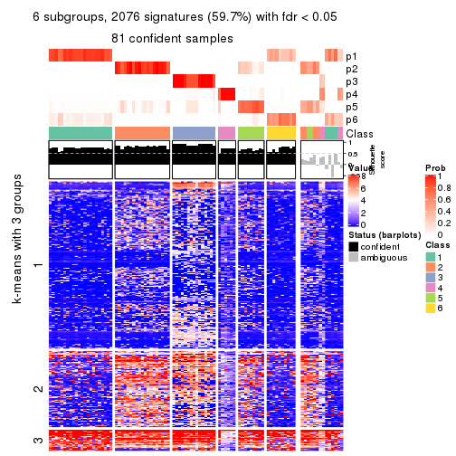
Compare the overlap of signatures from different k:
compare_signatures(res)
get_signature() returns a data frame invisibly. TO get the list of signatures, the function
call should be assigned to a variable explicitly. In following code, if plot argument is set
to FALSE, no heatmap is plotted while only the differential analysis is performed.
# code only for demonstration
tb = get_signature(res, k = ..., plot = FALSE)
An example of the output of tb is:
#> which_row fdr mean_1 mean_2 scaled_mean_1 scaled_mean_2 km
#> 1 38 0.042760348 8.373488 9.131774 -0.5533452 0.5164555 1
#> 2 40 0.018707592 7.106213 8.469186 -0.6173731 0.5762149 1
#> 3 55 0.019134737 10.221463 11.207825 -0.6159697 0.5749050 1
#> 4 59 0.006059896 5.921854 7.869574 -0.6899429 0.6439467 1
#> 5 60 0.018055526 8.928898 10.211722 -0.6204761 0.5791110 1
#> 6 98 0.009384629 15.714769 14.887706 0.6635654 -0.6193277 2
...
The columns in tb are:
which_row: row indices corresponding to the input matrix.fdr: FDR for the differential test. mean_x: The mean value in group x.scaled_mean_x: The mean value in group x after rows are scaled.km: Row groups if k-means clustering is applied to rows.UMAP plot which shows how samples are separated.
dimension_reduction(res, k = 2, method = "UMAP")
dimension_reduction(res, k = 3, method = "UMAP")
dimension_reduction(res, k = 4, method = "UMAP")
dimension_reduction(res, k = 5, method = "UMAP")
dimension_reduction(res, k = 6, method = "UMAP")
Following heatmap shows how subgroups are split when increasing k:
collect_classes(res)

If matrix rows can be associated to genes, consider to use functional_enrichment(res,
...) to perform function enrichment for the signature genes. See this vignette for more detailed explanations.
The object with results only for a single top-value method and a single partition method can be extracted as:
res = res_list["SD", "NMF"]
# you can also extract it by
# res = res_list["SD:NMF"]
A summary of res and all the functions that can be applied to it:
res
#> A 'ConsensusPartition' object with k = 2, 3, 4, 5, 6.
#> On a matrix with 3475 rows and 95 columns.
#> Top rows (348, 696, 1043, 1390, 1738) are extracted by 'SD' method.
#> Subgroups are detected by 'NMF' method.
#> Performed in total 1250 partitions by row resampling.
#> Best k for subgroups seems to be 3.
#>
#> Following methods can be applied to this 'ConsensusPartition' object:
#> [1] "cola_report" "collect_classes" "collect_plots"
#> [4] "collect_stats" "colnames" "compare_signatures"
#> [7] "consensus_heatmap" "dimension_reduction" "functional_enrichment"
#> [10] "get_anno_col" "get_anno" "get_classes"
#> [13] "get_consensus" "get_matrix" "get_membership"
#> [16] "get_param" "get_signatures" "get_stats"
#> [19] "is_best_k" "is_stable_k" "membership_heatmap"
#> [22] "ncol" "nrow" "plot_ecdf"
#> [25] "rownames" "select_partition_number" "show"
#> [28] "suggest_best_k" "test_to_known_factors"
collect_plots() function collects all the plots made from res for all k (number of partitions)
into one single page to provide an easy and fast comparison between different k.
collect_plots(res)
The plots are:
k and the heatmap of
predicted classes for each k.k.k.k.All the plots in panels can be made by individual functions and they are plotted later in this section.
select_partition_number() produces several plots showing different
statistics for choosing “optimized” k. There are following statistics:
k;k, the area increased is defined as \(A_k - A_{k-1}\).The detailed explanations of these statistics can be found in the cola vignette.
Generally speaking, lower PAC score, higher mean silhouette score or higher
concordance corresponds to better partition. Rand index and Jaccard index
measure how similar the current partition is compared to partition with k-1.
If they are too similar, we won't accept k is better than k-1.
select_partition_number(res)
The numeric values for all these statistics can be obtained by get_stats().
get_stats(res)
#> k 1-PAC mean_silhouette concordance area_increased Rand Jaccard
#> 2 2 1.000 0.969 0.987 0.5052 0.495 0.495
#> 3 3 0.961 0.939 0.971 0.2910 0.810 0.632
#> 4 4 0.755 0.849 0.869 0.0863 0.975 0.930
#> 5 5 0.708 0.652 0.807 0.0561 0.943 0.835
#> 6 6 0.676 0.647 0.765 0.0475 0.952 0.838
suggest_best_k() suggests the best \(k\) based on these statistics. The rules are as follows:
suggest_best_k(res)
#> [1] 3
#> attr(,"optional")
#> [1] 2
There is also optional best \(k\) = 2 that is worth to check.
Following shows the table of the partitions (You need to click the show/hide
code output link to see it). The membership matrix (columns with name p*)
is inferred by
clue::cl_consensus()
function with the SE method. Basically the value in the membership matrix
represents the probability to belong to a certain group. The finall class
label for an item is determined with the group with highest probability it
belongs to.
In get_classes() function, the entropy is calculated from the membership
matrix and the silhouette score is calculated from the consensus matrix.
cbind(get_classes(res, k = 2), get_membership(res, k = 2))
#> class entropy silhouette p1 p2
#> SRR2062258 2 0.0000 0.984 0.000 1.000
#> SRR2062259 1 0.0000 0.989 1.000 0.000
#> SRR2062270 2 0.0000 0.984 0.000 1.000
#> SRR2062342 2 0.0000 0.984 0.000 1.000
#> SRR2062341 1 0.0000 0.989 1.000 0.000
#> SRR2062340 2 0.0000 0.984 0.000 1.000
#> SRR2062339 1 0.0000 0.989 1.000 0.000
#> SRR2062348 1 0.0000 0.989 1.000 0.000
#> SRR2062347 2 0.0000 0.984 0.000 1.000
#> SRR2062351 1 0.0000 0.989 1.000 0.000
#> SRR2062350 1 0.0000 0.989 1.000 0.000
#> SRR2062349 2 0.0000 0.984 0.000 1.000
#> SRR2062346 1 0.0000 0.989 1.000 0.000
#> SRR2062345 2 0.0000 0.984 0.000 1.000
#> SRR2062344 1 0.0672 0.983 0.992 0.008
#> SRR2062343 2 0.0000 0.984 0.000 1.000
#> SRR2062354 1 0.0000 0.989 1.000 0.000
#> SRR2062353 2 0.0000 0.984 0.000 1.000
#> SRR2062352 1 0.0000 0.989 1.000 0.000
#> SRR2063021 2 0.0000 0.984 0.000 1.000
#> SRR2062356 1 0.0000 0.989 1.000 0.000
#> SRR2063025 2 0.0000 0.984 0.000 1.000
#> SRR2063027 1 0.0000 0.989 1.000 0.000
#> SRR2063023 1 0.1414 0.973 0.980 0.020
#> SRR2062355 2 0.0000 0.984 0.000 1.000
#> SRR2063030 1 0.0000 0.989 1.000 0.000
#> SRR2064285 1 0.0000 0.989 1.000 0.000
#> SRR2063034 1 0.0000 0.989 1.000 0.000
#> SRR2063032 2 0.0672 0.977 0.008 0.992
#> SRR2063031 1 0.0000 0.989 1.000 0.000
#> SRR2063029 2 0.0000 0.984 0.000 1.000
#> SRR2063028 1 0.0000 0.989 1.000 0.000
#> SRR2064308 2 0.0000 0.984 0.000 1.000
#> SRR2064310 2 0.0000 0.984 0.000 1.000
#> SRR2064312 1 0.0000 0.989 1.000 0.000
#> SRR2064314 2 0.0000 0.984 0.000 1.000
#> SRR2064315 1 0.0000 0.989 1.000 0.000
#> SRR2064317 2 0.0000 0.984 0.000 1.000
#> SRR2064318 1 0.0000 0.989 1.000 0.000
#> SRR2064319 1 0.0000 0.989 1.000 0.000
#> SRR2064320 2 0.0000 0.984 0.000 1.000
#> SRR2064321 1 0.3733 0.920 0.928 0.072
#> SRR2064322 2 0.0000 0.984 0.000 1.000
#> SRR2064323 2 0.0000 0.984 0.000 1.000
#> SRR2064324 2 0.0000 0.984 0.000 1.000
#> SRR2064325 1 0.0000 0.989 1.000 0.000
#> SRR2064326 2 0.0000 0.984 0.000 1.000
#> SRR2064327 1 0.8207 0.657 0.744 0.256
#> SRR2064329 1 0.0000 0.989 1.000 0.000
#> SRR2064328 2 0.0000 0.984 0.000 1.000
#> SRR2064330 2 0.0000 0.984 0.000 1.000
#> SRR2064331 1 0.0376 0.986 0.996 0.004
#> SRR2064332 2 0.8327 0.635 0.264 0.736
#> SRR2064333 1 0.0000 0.989 1.000 0.000
#> SRR2064334 2 0.0000 0.984 0.000 1.000
#> SRR2064335 2 0.0000 0.984 0.000 1.000
#> SRR2064436 1 0.0000 0.989 1.000 0.000
#> SRR2064457 1 0.0000 0.989 1.000 0.000
#> SRR2064458 2 0.0000 0.984 0.000 1.000
#> SRR2064459 1 0.5294 0.864 0.880 0.120
#> SRR2064460 1 0.0000 0.989 1.000 0.000
#> SRR2064461 2 0.0000 0.984 0.000 1.000
#> SRR2064462 1 0.0000 0.989 1.000 0.000
#> SRR2064534 2 0.0000 0.984 0.000 1.000
#> SRR2064535 1 0.0938 0.980 0.988 0.012
#> SRR2064536 2 0.0000 0.984 0.000 1.000
#> SRR2064537 2 0.0000 0.984 0.000 1.000
#> SRR2064538 1 0.0000 0.989 1.000 0.000
#> SRR2064539 2 0.0000 0.984 0.000 1.000
#> SRR2064540 1 0.0000 0.989 1.000 0.000
#> SRR2064541 2 0.0000 0.984 0.000 1.000
#> SRR2064543 1 0.0000 0.989 1.000 0.000
#> SRR2064542 1 0.0000 0.989 1.000 0.000
#> SRR2064544 2 0.0000 0.984 0.000 1.000
#> SRR2064545 2 0.0000 0.984 0.000 1.000
#> SRR2064546 1 0.0000 0.989 1.000 0.000
#> SRR2064547 1 0.0000 0.989 1.000 0.000
#> SRR2064548 2 0.0000 0.984 0.000 1.000
#> SRR2064550 2 0.0000 0.984 0.000 1.000
#> SRR2064549 2 0.0000 0.984 0.000 1.000
#> SRR2064551 2 0.0000 0.984 0.000 1.000
#> SRR2064552 1 0.0000 0.989 1.000 0.000
#> SRR2064553 2 0.9795 0.279 0.416 0.584
#> SRR2064554 2 0.0000 0.984 0.000 1.000
#> SRR2064555 1 0.0672 0.983 0.992 0.008
#> SRR2064556 1 0.0000 0.989 1.000 0.000
#> SRR2064559 2 0.0000 0.984 0.000 1.000
#> SRR2064558 1 0.0376 0.986 0.996 0.004
#> SRR2064557 2 0.0000 0.984 0.000 1.000
#> SRR2064560 1 0.0000 0.989 1.000 0.000
#> SRR2064561 2 0.1633 0.962 0.024 0.976
#> SRR2064562 1 0.0000 0.989 1.000 0.000
#> SRR2064564 1 0.0000 0.989 1.000 0.000
#> SRR2064563 2 0.0000 0.984 0.000 1.000
#> SRR2064565 2 0.0000 0.984 0.000 1.000
cbind(get_classes(res, k = 3), get_membership(res, k = 3))
#> class entropy silhouette p1 p2 p3
#> SRR2062258 2 0.0592 0.955 0.000 0.988 0.012
#> SRR2062259 1 0.0000 0.991 1.000 0.000 0.000
#> SRR2062270 2 0.5529 0.593 0.000 0.704 0.296
#> SRR2062342 2 0.0424 0.960 0.000 0.992 0.008
#> SRR2062341 1 0.0475 0.986 0.992 0.004 0.004
#> SRR2062340 2 0.0424 0.960 0.000 0.992 0.008
#> SRR2062339 1 0.0000 0.991 1.000 0.000 0.000
#> SRR2062348 1 0.0000 0.991 1.000 0.000 0.000
#> SRR2062347 2 0.0237 0.960 0.000 0.996 0.004
#> SRR2062351 1 0.1964 0.938 0.944 0.000 0.056
#> SRR2062350 1 0.0000 0.991 1.000 0.000 0.000
#> SRR2062349 2 0.0237 0.960 0.000 0.996 0.004
#> SRR2062346 1 0.0237 0.988 0.996 0.000 0.004
#> SRR2062345 2 0.0592 0.958 0.000 0.988 0.012
#> SRR2062344 3 0.0661 0.953 0.008 0.004 0.988
#> SRR2062343 2 0.0424 0.960 0.000 0.992 0.008
#> SRR2062354 1 0.0661 0.983 0.988 0.004 0.008
#> SRR2062353 2 0.0000 0.960 0.000 1.000 0.000
#> SRR2062352 1 0.0000 0.991 1.000 0.000 0.000
#> SRR2063021 3 0.3941 0.804 0.000 0.156 0.844
#> SRR2062356 1 0.0000 0.991 1.000 0.000 0.000
#> SRR2063025 2 0.0424 0.960 0.000 0.992 0.008
#> SRR2063027 1 0.0000 0.991 1.000 0.000 0.000
#> SRR2063023 3 0.0892 0.948 0.020 0.000 0.980
#> SRR2062355 3 0.0592 0.954 0.000 0.012 0.988
#> SRR2063030 1 0.0424 0.986 0.992 0.000 0.008
#> SRR2064285 1 0.0000 0.991 1.000 0.000 0.000
#> SRR2063034 1 0.0237 0.988 0.996 0.000 0.004
#> SRR2063032 2 0.3965 0.817 0.132 0.860 0.008
#> SRR2063031 1 0.0000 0.991 1.000 0.000 0.000
#> SRR2063029 2 0.0424 0.960 0.000 0.992 0.008
#> SRR2063028 1 0.0000 0.991 1.000 0.000 0.000
#> SRR2064308 2 0.5058 0.684 0.000 0.756 0.244
#> SRR2064310 2 0.0592 0.955 0.000 0.988 0.012
#> SRR2064312 1 0.0000 0.991 1.000 0.000 0.000
#> SRR2064314 2 0.0424 0.960 0.000 0.992 0.008
#> SRR2064315 1 0.0000 0.991 1.000 0.000 0.000
#> SRR2064317 2 0.0424 0.960 0.000 0.992 0.008
#> SRR2064318 1 0.0000 0.991 1.000 0.000 0.000
#> SRR2064319 1 0.0000 0.991 1.000 0.000 0.000
#> SRR2064320 2 0.0592 0.955 0.000 0.988 0.012
#> SRR2064321 3 0.0829 0.952 0.012 0.004 0.984
#> SRR2064322 2 0.0424 0.960 0.000 0.992 0.008
#> SRR2064323 2 0.0237 0.959 0.000 0.996 0.004
#> SRR2064324 2 0.0237 0.959 0.000 0.996 0.004
#> SRR2064325 1 0.0000 0.991 1.000 0.000 0.000
#> SRR2064326 3 0.0747 0.952 0.000 0.016 0.984
#> SRR2064327 3 0.0661 0.953 0.004 0.008 0.988
#> SRR2064329 1 0.0000 0.991 1.000 0.000 0.000
#> SRR2064328 2 0.0000 0.960 0.000 1.000 0.000
#> SRR2064330 2 0.0424 0.957 0.000 0.992 0.008
#> SRR2064331 3 0.0747 0.950 0.016 0.000 0.984
#> SRR2064332 3 0.0592 0.954 0.000 0.012 0.988
#> SRR2064333 1 0.0000 0.991 1.000 0.000 0.000
#> SRR2064334 2 0.0424 0.960 0.000 0.992 0.008
#> SRR2064335 2 0.0000 0.960 0.000 1.000 0.000
#> SRR2064436 1 0.0237 0.988 0.996 0.000 0.004
#> SRR2064457 1 0.0000 0.991 1.000 0.000 0.000
#> SRR2064458 2 0.0592 0.955 0.000 0.988 0.012
#> SRR2064459 3 0.0592 0.954 0.000 0.012 0.988
#> SRR2064460 1 0.0000 0.991 1.000 0.000 0.000
#> SRR2064461 2 0.0592 0.958 0.000 0.988 0.012
#> SRR2064462 1 0.4605 0.740 0.796 0.000 0.204
#> SRR2064534 2 0.0424 0.960 0.000 0.992 0.008
#> SRR2064535 3 0.0747 0.950 0.016 0.000 0.984
#> SRR2064536 2 0.6235 0.246 0.000 0.564 0.436
#> SRR2064537 3 0.0592 0.954 0.000 0.012 0.988
#> SRR2064538 3 0.6225 0.230 0.432 0.000 0.568
#> SRR2064539 3 0.2261 0.912 0.000 0.068 0.932
#> SRR2064540 1 0.0000 0.991 1.000 0.000 0.000
#> SRR2064541 2 0.0237 0.959 0.000 0.996 0.004
#> SRR2064543 1 0.0000 0.991 1.000 0.000 0.000
#> SRR2064542 1 0.0592 0.982 0.988 0.000 0.012
#> SRR2064544 2 0.0424 0.957 0.000 0.992 0.008
#> SRR2064545 2 0.0424 0.959 0.000 0.992 0.008
#> SRR2064546 1 0.0592 0.983 0.988 0.000 0.012
#> SRR2064547 1 0.0424 0.986 0.992 0.000 0.008
#> SRR2064548 2 0.0237 0.959 0.000 0.996 0.004
#> SRR2064550 3 0.0747 0.952 0.000 0.016 0.984
#> SRR2064549 3 0.1643 0.934 0.000 0.044 0.956
#> SRR2064551 2 0.0237 0.960 0.000 0.996 0.004
#> SRR2064552 1 0.0000 0.991 1.000 0.000 0.000
#> SRR2064553 3 0.0592 0.954 0.000 0.012 0.988
#> SRR2064554 3 0.1289 0.943 0.000 0.032 0.968
#> SRR2064555 3 0.1031 0.945 0.024 0.000 0.976
#> SRR2064556 1 0.0000 0.991 1.000 0.000 0.000
#> SRR2064559 2 0.0237 0.959 0.000 0.996 0.004
#> SRR2064558 3 0.0747 0.950 0.016 0.000 0.984
#> SRR2064557 2 0.0424 0.960 0.000 0.992 0.008
#> SRR2064560 1 0.0000 0.991 1.000 0.000 0.000
#> SRR2064561 2 0.3459 0.858 0.096 0.892 0.012
#> SRR2064562 1 0.0000 0.991 1.000 0.000 0.000
#> SRR2064564 1 0.0000 0.991 1.000 0.000 0.000
#> SRR2064563 2 0.0237 0.960 0.000 0.996 0.004
#> SRR2064565 2 0.0424 0.960 0.000 0.992 0.008
cbind(get_classes(res, k = 4), get_membership(res, k = 4))
#> class entropy silhouette p1 p2 p3 p4
#> SRR2062258 2 0.5214 0.6775 0.004 0.624 0.008 NA
#> SRR2062259 1 0.2124 0.9061 0.924 0.000 0.008 NA
#> SRR2062270 3 0.5125 0.3789 0.000 0.388 0.604 NA
#> SRR2062342 2 0.1211 0.9145 0.000 0.960 0.000 NA
#> SRR2062341 1 0.3801 0.8742 0.780 0.000 0.000 NA
#> SRR2062340 2 0.1637 0.9111 0.000 0.940 0.000 NA
#> SRR2062339 1 0.1557 0.9054 0.944 0.000 0.000 NA
#> SRR2062348 1 0.1488 0.9023 0.956 0.000 0.012 NA
#> SRR2062347 2 0.1022 0.9121 0.000 0.968 0.000 NA
#> SRR2062351 1 0.6664 0.6702 0.600 0.000 0.128 NA
#> SRR2062350 1 0.1824 0.9049 0.936 0.000 0.004 NA
#> SRR2062349 2 0.0921 0.9122 0.000 0.972 0.000 NA
#> SRR2062346 1 0.4194 0.8664 0.764 0.000 0.008 NA
#> SRR2062345 2 0.1211 0.9091 0.000 0.960 0.000 NA
#> SRR2062344 3 0.0712 0.9047 0.004 0.008 0.984 NA
#> SRR2062343 2 0.1022 0.9151 0.000 0.968 0.000 NA
#> SRR2062354 1 0.5756 0.7472 0.592 0.000 0.036 NA
#> SRR2062353 2 0.1022 0.9150 0.000 0.968 0.000 NA
#> SRR2062352 1 0.1302 0.9032 0.956 0.000 0.000 NA
#> SRR2063021 3 0.4057 0.7954 0.000 0.160 0.812 NA
#> SRR2062356 1 0.3545 0.8935 0.828 0.000 0.008 NA
#> SRR2063025 2 0.1118 0.9151 0.000 0.964 0.000 NA
#> SRR2063027 1 0.3853 0.8913 0.820 0.000 0.020 NA
#> SRR2063023 3 0.3805 0.8344 0.008 0.012 0.832 NA
#> SRR2062355 3 0.0895 0.9069 0.000 0.020 0.976 NA
#> SRR2063030 1 0.3751 0.8870 0.800 0.000 0.004 NA
#> SRR2064285 1 0.4049 0.8827 0.780 0.000 0.008 NA
#> SRR2063034 1 0.2281 0.9070 0.904 0.000 0.000 NA
#> SRR2063032 2 0.7383 0.4212 0.164 0.448 0.000 NA
#> SRR2063031 1 0.3196 0.8964 0.856 0.000 0.008 NA
#> SRR2063029 2 0.1022 0.9122 0.000 0.968 0.000 NA
#> SRR2063028 1 0.2300 0.9046 0.920 0.000 0.016 NA
#> SRR2064308 2 0.5281 0.0436 0.000 0.528 0.464 NA
#> SRR2064310 2 0.4222 0.7841 0.000 0.728 0.000 NA
#> SRR2064312 1 0.2593 0.9063 0.892 0.000 0.004 NA
#> SRR2064314 2 0.1302 0.9125 0.000 0.956 0.000 NA
#> SRR2064315 1 0.3157 0.9011 0.852 0.000 0.004 NA
#> SRR2064317 2 0.1118 0.9145 0.000 0.964 0.000 NA
#> SRR2064318 1 0.3529 0.9037 0.836 0.000 0.012 NA
#> SRR2064319 1 0.1902 0.9018 0.932 0.000 0.004 NA
#> SRR2064320 2 0.1792 0.9081 0.000 0.932 0.000 NA
#> SRR2064321 3 0.0859 0.9045 0.008 0.008 0.980 NA
#> SRR2064322 2 0.1302 0.9090 0.000 0.956 0.000 NA
#> SRR2064323 2 0.5054 0.7198 0.004 0.660 0.008 NA
#> SRR2064324 2 0.1637 0.9096 0.000 0.940 0.000 NA
#> SRR2064325 1 0.2530 0.9014 0.896 0.000 0.004 NA
#> SRR2064326 3 0.1004 0.9066 0.000 0.024 0.972 NA
#> SRR2064327 3 0.1488 0.9025 0.000 0.012 0.956 NA
#> SRR2064329 1 0.2654 0.9068 0.888 0.000 0.004 NA
#> SRR2064328 2 0.1118 0.9138 0.000 0.964 0.000 NA
#> SRR2064330 2 0.2149 0.9077 0.000 0.912 0.000 NA
#> SRR2064331 3 0.1807 0.8893 0.008 0.000 0.940 NA
#> SRR2064332 3 0.0779 0.9065 0.000 0.016 0.980 NA
#> SRR2064333 1 0.3450 0.8999 0.836 0.000 0.008 NA
#> SRR2064334 2 0.1022 0.9123 0.000 0.968 0.000 NA
#> SRR2064335 2 0.1211 0.9156 0.000 0.960 0.000 NA
#> SRR2064436 1 0.3280 0.8969 0.860 0.000 0.016 NA
#> SRR2064457 1 0.2928 0.9065 0.880 0.000 0.012 NA
#> SRR2064458 2 0.2714 0.8910 0.000 0.884 0.004 NA
#> SRR2064459 3 0.0712 0.9047 0.004 0.008 0.984 NA
#> SRR2064460 1 0.2197 0.9058 0.916 0.000 0.004 NA
#> SRR2064461 2 0.0817 0.9122 0.000 0.976 0.000 NA
#> SRR2064462 1 0.7388 0.3788 0.504 0.000 0.304 NA
#> SRR2064534 2 0.0921 0.9146 0.000 0.972 0.000 NA
#> SRR2064535 3 0.1822 0.8971 0.004 0.008 0.944 NA
#> SRR2064536 3 0.5658 0.5021 0.000 0.328 0.632 NA
#> SRR2064537 3 0.1151 0.9067 0.000 0.024 0.968 NA
#> SRR2064538 3 0.7433 0.3066 0.276 0.000 0.508 NA
#> SRR2064539 3 0.1975 0.8974 0.000 0.048 0.936 NA
#> SRR2064540 1 0.2918 0.8865 0.876 0.000 0.008 NA
#> SRR2064541 2 0.1792 0.9074 0.000 0.932 0.000 NA
#> SRR2064543 1 0.2101 0.9052 0.928 0.000 0.012 NA
#> SRR2064542 1 0.5925 0.6819 0.512 0.000 0.036 NA
#> SRR2064544 2 0.2081 0.9003 0.000 0.916 0.000 NA
#> SRR2064545 2 0.2773 0.8880 0.000 0.880 0.004 NA
#> SRR2064546 1 0.2546 0.8971 0.900 0.000 0.008 NA
#> SRR2064547 1 0.4511 0.8587 0.724 0.000 0.008 NA
#> SRR2064548 2 0.2408 0.8965 0.000 0.896 0.000 NA
#> SRR2064550 3 0.1452 0.9044 0.000 0.036 0.956 NA
#> SRR2064549 3 0.3474 0.8721 0.000 0.064 0.868 NA
#> SRR2064551 2 0.0921 0.9151 0.000 0.972 0.000 NA
#> SRR2064552 1 0.3529 0.8948 0.836 0.000 0.012 NA
#> SRR2064553 3 0.0817 0.9065 0.000 0.024 0.976 NA
#> SRR2064554 3 0.2174 0.8968 0.000 0.052 0.928 NA
#> SRR2064555 3 0.2246 0.8890 0.016 0.004 0.928 NA
#> SRR2064556 1 0.2216 0.8977 0.908 0.000 0.000 NA
#> SRR2064559 2 0.0592 0.9144 0.000 0.984 0.000 NA
#> SRR2064558 3 0.0992 0.9023 0.008 0.004 0.976 NA
#> SRR2064557 2 0.0707 0.9149 0.000 0.980 0.000 NA
#> SRR2064560 1 0.3208 0.9017 0.848 0.000 0.004 NA
#> SRR2064561 2 0.6345 0.5528 0.052 0.520 0.004 NA
#> SRR2064562 1 0.2921 0.8807 0.860 0.000 0.000 NA
#> SRR2064564 1 0.2918 0.8974 0.876 0.000 0.008 NA
#> SRR2064563 2 0.1211 0.9152 0.000 0.960 0.000 NA
#> SRR2064565 2 0.1302 0.9150 0.000 0.956 0.000 NA
cbind(get_classes(res, k = 5), get_membership(res, k = 5))
#> class entropy silhouette p1 p2 p3 p4 p5
#> SRR2062258 5 0.5579 0.6999 0.000 0.420 0.000 0.072 0.508
#> SRR2062259 1 0.3111 0.6499 0.840 0.000 0.004 0.144 0.012
#> SRR2062270 3 0.4193 0.4677 0.000 0.304 0.684 0.000 0.012
#> SRR2062342 2 0.0609 0.8779 0.000 0.980 0.000 0.000 0.020
#> SRR2062341 1 0.5218 0.4280 0.624 0.000 0.000 0.308 0.068
#> SRR2062340 2 0.1282 0.8729 0.000 0.952 0.000 0.004 0.044
#> SRR2062339 1 0.2286 0.6649 0.888 0.000 0.000 0.108 0.004
#> SRR2062348 1 0.2389 0.6551 0.880 0.000 0.000 0.116 0.004
#> SRR2062347 2 0.0955 0.8745 0.000 0.968 0.000 0.004 0.028
#> SRR2062351 4 0.7763 0.2929 0.360 0.000 0.104 0.392 0.144
#> SRR2062350 1 0.3194 0.6508 0.832 0.000 0.000 0.148 0.020
#> SRR2062349 2 0.0703 0.8776 0.000 0.976 0.000 0.000 0.024
#> SRR2062346 1 0.5294 -0.0840 0.524 0.000 0.004 0.432 0.040
#> SRR2062345 2 0.1197 0.8641 0.000 0.952 0.000 0.000 0.048
#> SRR2062344 3 0.0798 0.8337 0.000 0.000 0.976 0.016 0.008
#> SRR2062343 2 0.1205 0.8776 0.000 0.956 0.000 0.004 0.040
#> SRR2062354 4 0.6000 0.3359 0.400 0.000 0.012 0.508 0.080
#> SRR2062353 2 0.1430 0.8738 0.000 0.944 0.000 0.004 0.052
#> SRR2062352 1 0.2597 0.6609 0.872 0.000 0.004 0.120 0.004
#> SRR2063021 3 0.3892 0.7579 0.000 0.120 0.820 0.024 0.036
#> SRR2062356 1 0.4099 0.6374 0.764 0.000 0.004 0.200 0.032
#> SRR2063025 2 0.0865 0.8789 0.000 0.972 0.000 0.004 0.024
#> SRR2063027 1 0.4948 0.3056 0.612 0.000 0.008 0.356 0.024
#> SRR2063023 3 0.6116 0.4155 0.016 0.008 0.584 0.312 0.080
#> SRR2062355 3 0.0566 0.8382 0.000 0.012 0.984 0.004 0.000
#> SRR2063030 1 0.5171 0.5014 0.648 0.000 0.000 0.276 0.076
#> SRR2064285 1 0.5364 0.3909 0.604 0.000 0.008 0.336 0.052
#> SRR2063034 1 0.3289 0.6527 0.816 0.000 0.004 0.172 0.008
#> SRR2063032 5 0.7640 0.5910 0.080 0.276 0.000 0.188 0.456
#> SRR2063031 1 0.4244 0.5531 0.728 0.000 0.012 0.248 0.012
#> SRR2063029 2 0.1357 0.8608 0.000 0.948 0.000 0.004 0.048
#> SRR2063028 1 0.3183 0.6416 0.828 0.000 0.000 0.156 0.016
#> SRR2064308 3 0.4656 -0.0290 0.000 0.480 0.508 0.000 0.012
#> SRR2064310 2 0.5652 -0.2467 0.000 0.564 0.000 0.092 0.344
#> SRR2064312 1 0.3160 0.6448 0.808 0.000 0.000 0.188 0.004
#> SRR2064314 2 0.1282 0.8734 0.000 0.952 0.000 0.004 0.044
#> SRR2064315 1 0.4219 0.5846 0.716 0.000 0.004 0.264 0.016
#> SRR2064317 2 0.0510 0.8794 0.000 0.984 0.000 0.000 0.016
#> SRR2064318 1 0.5081 0.5476 0.664 0.000 0.020 0.284 0.032
#> SRR2064319 1 0.2984 0.6564 0.856 0.000 0.004 0.124 0.016
#> SRR2064320 2 0.2189 0.8359 0.000 0.904 0.000 0.012 0.084
#> SRR2064321 3 0.1393 0.8361 0.000 0.008 0.956 0.024 0.012
#> SRR2064322 2 0.0955 0.8697 0.000 0.968 0.000 0.004 0.028
#> SRR2064323 5 0.5616 0.6941 0.000 0.412 0.000 0.076 0.512
#> SRR2064324 2 0.1952 0.8543 0.000 0.912 0.000 0.004 0.084
#> SRR2064325 1 0.3538 0.6225 0.804 0.000 0.004 0.176 0.016
#> SRR2064326 3 0.0703 0.8389 0.000 0.024 0.976 0.000 0.000
#> SRR2064327 3 0.2313 0.8126 0.000 0.004 0.912 0.044 0.040
#> SRR2064329 1 0.2848 0.6551 0.840 0.000 0.000 0.156 0.004
#> SRR2064328 2 0.0703 0.8794 0.000 0.976 0.000 0.000 0.024
#> SRR2064330 2 0.2193 0.8400 0.000 0.912 0.000 0.028 0.060
#> SRR2064331 3 0.3297 0.7671 0.000 0.000 0.848 0.084 0.068
#> SRR2064332 3 0.0740 0.8387 0.000 0.008 0.980 0.008 0.004
#> SRR2064333 1 0.4681 0.5467 0.696 0.000 0.004 0.260 0.040
#> SRR2064334 2 0.1124 0.8775 0.000 0.960 0.000 0.004 0.036
#> SRR2064335 2 0.1205 0.8786 0.000 0.956 0.000 0.004 0.040
#> SRR2064436 1 0.4686 0.5899 0.740 0.000 0.012 0.192 0.056
#> SRR2064457 1 0.3642 0.5998 0.760 0.000 0.000 0.232 0.008
#> SRR2064458 2 0.3264 0.7174 0.000 0.820 0.000 0.016 0.164
#> SRR2064459 3 0.0566 0.8374 0.000 0.004 0.984 0.012 0.000
#> SRR2064460 1 0.3246 0.6602 0.808 0.000 0.000 0.184 0.008
#> SRR2064461 2 0.0794 0.8799 0.000 0.972 0.000 0.000 0.028
#> SRR2064462 1 0.8057 -0.3188 0.404 0.000 0.224 0.260 0.112
#> SRR2064534 2 0.1270 0.8741 0.000 0.948 0.000 0.000 0.052
#> SRR2064535 3 0.3169 0.7736 0.000 0.000 0.856 0.084 0.060
#> SRR2064536 3 0.4621 0.5996 0.000 0.228 0.724 0.012 0.036
#> SRR2064537 3 0.0932 0.8397 0.000 0.020 0.972 0.004 0.004
#> SRR2064538 3 0.8028 -0.0939 0.180 0.000 0.428 0.256 0.136
#> SRR2064539 3 0.1960 0.8333 0.000 0.048 0.928 0.004 0.020
#> SRR2064540 1 0.4718 0.5123 0.728 0.000 0.000 0.180 0.092
#> SRR2064541 2 0.1952 0.8478 0.000 0.912 0.000 0.004 0.084
#> SRR2064543 1 0.3093 0.6493 0.824 0.000 0.000 0.168 0.008
#> SRR2064542 4 0.6244 0.4949 0.272 0.000 0.028 0.592 0.108
#> SRR2064544 2 0.2753 0.7892 0.000 0.856 0.000 0.008 0.136
#> SRR2064545 2 0.3203 0.7174 0.000 0.820 0.000 0.012 0.168
#> SRR2064546 1 0.4049 0.6096 0.792 0.000 0.000 0.124 0.084
#> SRR2064547 1 0.5550 0.2195 0.528 0.000 0.000 0.400 0.072
#> SRR2064548 2 0.2707 0.7790 0.000 0.860 0.000 0.008 0.132
#> SRR2064550 3 0.2060 0.8353 0.000 0.036 0.928 0.012 0.024
#> SRR2064549 3 0.3086 0.8175 0.000 0.048 0.876 0.016 0.060
#> SRR2064551 2 0.1041 0.8768 0.000 0.964 0.000 0.004 0.032
#> SRR2064552 1 0.4834 0.5204 0.692 0.000 0.004 0.252 0.052
#> SRR2064553 3 0.0671 0.8387 0.000 0.016 0.980 0.000 0.004
#> SRR2064554 3 0.2158 0.8301 0.000 0.052 0.920 0.008 0.020
#> SRR2064555 3 0.3480 0.7897 0.028 0.000 0.856 0.044 0.072
#> SRR2064556 1 0.3531 0.6283 0.816 0.000 0.000 0.148 0.036
#> SRR2064559 2 0.0703 0.8772 0.000 0.976 0.000 0.000 0.024
#> SRR2064558 3 0.1243 0.8325 0.000 0.004 0.960 0.028 0.008
#> SRR2064557 2 0.0963 0.8782 0.000 0.964 0.000 0.000 0.036
#> SRR2064560 1 0.4599 0.5684 0.688 0.000 0.000 0.272 0.040
#> SRR2064561 2 0.7237 -0.6490 0.024 0.392 0.000 0.236 0.348
#> SRR2064562 1 0.4159 0.5637 0.776 0.000 0.000 0.156 0.068
#> SRR2064564 1 0.4134 0.5932 0.760 0.000 0.000 0.196 0.044
#> SRR2064563 2 0.0794 0.8797 0.000 0.972 0.000 0.000 0.028
#> SRR2064565 2 0.1043 0.8760 0.000 0.960 0.000 0.000 0.040
cbind(get_classes(res, k = 6), get_membership(res, k = 6))
#> class entropy silhouette p1 p2 p3 p4 p5 p6
#> SRR2062258 5 0.5309 0.7005 0.000 0.272 0.004 0.068 0.628 0.028
#> SRR2062259 1 0.4341 0.5428 0.712 0.000 0.000 0.216 0.004 0.068
#> SRR2062270 3 0.3250 0.6445 0.000 0.196 0.788 0.000 0.012 0.004
#> SRR2062342 2 0.1194 0.8867 0.000 0.956 0.004 0.000 0.032 0.008
#> SRR2062341 1 0.6208 0.4371 0.552 0.000 0.000 0.244 0.052 0.152
#> SRR2062340 2 0.2176 0.8746 0.000 0.896 0.000 0.000 0.080 0.024
#> SRR2062339 1 0.3730 0.6088 0.784 0.000 0.000 0.160 0.008 0.048
#> SRR2062348 1 0.4141 0.5888 0.760 0.000 0.000 0.140 0.008 0.092
#> SRR2062347 2 0.1268 0.8850 0.000 0.952 0.004 0.000 0.036 0.008
#> SRR2062351 6 0.6487 0.5587 0.208 0.000 0.056 0.164 0.012 0.560
#> SRR2062350 1 0.4742 0.5937 0.712 0.000 0.000 0.148 0.016 0.124
#> SRR2062349 2 0.1564 0.8825 0.000 0.936 0.000 0.000 0.040 0.024
#> SRR2062346 4 0.4536 0.2199 0.356 0.000 0.000 0.608 0.012 0.024
#> SRR2062345 2 0.1716 0.8815 0.000 0.932 0.004 0.000 0.036 0.028
#> SRR2062344 3 0.1843 0.8182 0.000 0.000 0.912 0.004 0.004 0.080
#> SRR2062343 2 0.1245 0.8831 0.000 0.952 0.000 0.000 0.032 0.016
#> SRR2062354 4 0.5209 0.3619 0.220 0.000 0.012 0.676 0.040 0.052
#> SRR2062353 2 0.1686 0.8825 0.000 0.924 0.000 0.000 0.064 0.012
#> SRR2062352 1 0.3809 0.6037 0.796 0.000 0.000 0.124 0.016 0.064
#> SRR2063021 3 0.3103 0.7909 0.000 0.076 0.864 0.020 0.016 0.024
#> SRR2062356 1 0.5803 0.5290 0.632 0.000 0.000 0.168 0.068 0.132
#> SRR2063025 2 0.0865 0.8868 0.000 0.964 0.000 0.000 0.036 0.000
#> SRR2063027 4 0.5024 -0.0595 0.432 0.000 0.000 0.512 0.016 0.040
#> SRR2063023 4 0.5006 -0.1294 0.004 0.012 0.460 0.496 0.008 0.020
#> SRR2062355 3 0.0146 0.8449 0.000 0.000 0.996 0.000 0.000 0.004
#> SRR2063030 1 0.6150 0.4936 0.584 0.000 0.000 0.212 0.076 0.128
#> SRR2064285 1 0.6529 0.2969 0.460 0.000 0.000 0.328 0.052 0.160
#> SRR2063034 1 0.5421 0.4950 0.656 0.000 0.000 0.184 0.040 0.120
#> SRR2063032 5 0.7536 0.5220 0.060 0.192 0.000 0.200 0.476 0.072
#> SRR2063031 1 0.4099 0.3630 0.612 0.000 0.000 0.372 0.000 0.016
#> SRR2063029 2 0.1844 0.8752 0.000 0.924 0.004 0.000 0.048 0.024
#> SRR2063028 1 0.4811 0.5861 0.704 0.000 0.000 0.184 0.024 0.088
#> SRR2064308 3 0.4628 0.1825 0.000 0.392 0.572 0.000 0.024 0.012
#> SRR2064310 2 0.6317 -0.2900 0.000 0.464 0.000 0.068 0.372 0.096
#> SRR2064312 1 0.4595 0.5735 0.712 0.000 0.000 0.196 0.016 0.076
#> SRR2064314 2 0.1895 0.8724 0.000 0.912 0.000 0.000 0.072 0.016
#> SRR2064315 1 0.5120 0.5303 0.648 0.000 0.000 0.244 0.020 0.088
#> SRR2064317 2 0.1668 0.8863 0.000 0.928 0.004 0.000 0.060 0.008
#> SRR2064318 1 0.6069 0.5143 0.552 0.000 0.000 0.264 0.040 0.144
#> SRR2064319 1 0.4340 0.6076 0.768 0.000 0.000 0.100 0.036 0.096
#> SRR2064320 2 0.2356 0.8586 0.000 0.884 0.000 0.004 0.096 0.016
#> SRR2064321 3 0.1325 0.8441 0.000 0.004 0.956 0.012 0.012 0.016
#> SRR2064322 2 0.1716 0.8814 0.000 0.932 0.004 0.000 0.036 0.028
#> SRR2064323 5 0.5759 0.6753 0.000 0.316 0.000 0.052 0.560 0.072
#> SRR2064324 2 0.3091 0.8259 0.000 0.844 0.004 0.008 0.116 0.028
#> SRR2064325 1 0.4586 0.5029 0.676 0.000 0.000 0.260 0.012 0.052
#> SRR2064326 3 0.0520 0.8459 0.000 0.008 0.984 0.000 0.000 0.008
#> SRR2064327 3 0.2913 0.7272 0.000 0.000 0.812 0.004 0.004 0.180
#> SRR2064329 1 0.4495 0.5700 0.720 0.000 0.000 0.200 0.020 0.060
#> SRR2064328 2 0.1807 0.8875 0.000 0.920 0.000 0.000 0.060 0.020
#> SRR2064330 2 0.2444 0.8630 0.000 0.892 0.000 0.012 0.068 0.028
#> SRR2064331 3 0.3636 0.5160 0.000 0.000 0.676 0.004 0.000 0.320
#> SRR2064332 3 0.0984 0.8457 0.000 0.000 0.968 0.012 0.012 0.008
#> SRR2064333 1 0.5527 0.3033 0.512 0.000 0.000 0.388 0.020 0.080
#> SRR2064334 2 0.1605 0.8833 0.000 0.936 0.004 0.000 0.044 0.016
#> SRR2064335 2 0.1829 0.8875 0.000 0.920 0.000 0.004 0.064 0.012
#> SRR2064436 1 0.6407 0.5190 0.576 0.000 0.008 0.196 0.072 0.148
#> SRR2064457 1 0.5009 0.5732 0.696 0.000 0.000 0.168 0.032 0.104
#> SRR2064458 2 0.3830 0.7138 0.000 0.760 0.000 0.008 0.196 0.036
#> SRR2064459 3 0.0951 0.8441 0.000 0.000 0.968 0.020 0.004 0.008
#> SRR2064460 1 0.4369 0.5697 0.744 0.000 0.000 0.176 0.036 0.044
#> SRR2064461 2 0.1418 0.8852 0.000 0.944 0.000 0.000 0.032 0.024
#> SRR2064462 6 0.6552 0.6127 0.292 0.000 0.124 0.072 0.004 0.508
#> SRR2064534 2 0.1858 0.8657 0.000 0.904 0.000 0.000 0.092 0.004
#> SRR2064535 3 0.3351 0.5796 0.000 0.000 0.712 0.000 0.000 0.288
#> SRR2064536 3 0.3258 0.7449 0.000 0.120 0.832 0.000 0.032 0.016
#> SRR2064537 3 0.0436 0.8452 0.000 0.004 0.988 0.004 0.000 0.004
#> SRR2064538 6 0.6897 0.6014 0.176 0.000 0.212 0.052 0.032 0.528
#> SRR2064539 3 0.1268 0.8429 0.000 0.036 0.952 0.000 0.008 0.004
#> SRR2064540 1 0.6219 0.4725 0.588 0.000 0.000 0.116 0.104 0.192
#> SRR2064541 2 0.2450 0.8519 0.000 0.868 0.000 0.000 0.116 0.016
#> SRR2064543 1 0.4366 0.5530 0.748 0.000 0.000 0.168 0.036 0.048
#> SRR2064542 4 0.4513 0.3116 0.108 0.000 0.008 0.764 0.032 0.088
#> SRR2064544 2 0.3408 0.7735 0.000 0.800 0.000 0.000 0.152 0.048
#> SRR2064545 2 0.4354 0.6040 0.000 0.704 0.000 0.012 0.240 0.044
#> SRR2064546 1 0.5214 0.5637 0.700 0.000 0.000 0.072 0.116 0.112
#> SRR2064547 4 0.6740 -0.0470 0.336 0.000 0.000 0.424 0.060 0.180
#> SRR2064548 2 0.3716 0.7329 0.000 0.780 0.000 0.016 0.176 0.028
#> SRR2064550 3 0.1275 0.8437 0.000 0.012 0.956 0.000 0.016 0.016
#> SRR2064549 3 0.2825 0.8178 0.000 0.032 0.880 0.004 0.056 0.028
#> SRR2064551 2 0.1168 0.8879 0.000 0.956 0.000 0.000 0.028 0.016
#> SRR2064552 1 0.6288 0.3928 0.564 0.000 0.000 0.232 0.092 0.112
#> SRR2064553 3 0.0436 0.8446 0.000 0.004 0.988 0.004 0.000 0.004
#> SRR2064554 3 0.1268 0.8418 0.000 0.036 0.952 0.008 0.004 0.000
#> SRR2064555 3 0.3180 0.7795 0.000 0.004 0.852 0.012 0.072 0.060
#> SRR2064556 1 0.4472 0.6004 0.756 0.000 0.000 0.096 0.036 0.112
#> SRR2064559 2 0.1007 0.8859 0.000 0.956 0.000 0.000 0.044 0.000
#> SRR2064558 3 0.1858 0.8119 0.000 0.000 0.904 0.004 0.000 0.092
#> SRR2064557 2 0.1268 0.8879 0.000 0.952 0.004 0.000 0.036 0.008
#> SRR2064560 1 0.6249 0.4480 0.508 0.000 0.000 0.292 0.036 0.164
#> SRR2064561 5 0.7601 0.5327 0.012 0.244 0.000 0.176 0.408 0.160
#> SRR2064562 1 0.6102 0.5006 0.604 0.000 0.000 0.116 0.100 0.180
#> SRR2064564 1 0.5946 0.4963 0.592 0.000 0.000 0.160 0.044 0.204
#> SRR2064563 2 0.1151 0.8890 0.000 0.956 0.000 0.000 0.032 0.012
#> SRR2064565 2 0.1605 0.8875 0.000 0.936 0.004 0.000 0.044 0.016
Heatmaps for the consensus matrix. It visualizes the probability of two samples to be in a same group.
consensus_heatmap(res, k = 2)
consensus_heatmap(res, k = 3)
consensus_heatmap(res, k = 4)
consensus_heatmap(res, k = 5)
consensus_heatmap(res, k = 6)
Heatmaps for the membership of samples in all partitions to see how consistent they are:
membership_heatmap(res, k = 2)
membership_heatmap(res, k = 3)
membership_heatmap(res, k = 4)
membership_heatmap(res, k = 5)
membership_heatmap(res, k = 6)
As soon as we have had the classes for columns, we can look for signatures which are significantly different between classes which can be candidate marks for certain classes. Following are the heatmaps for signatures.
Signature heatmaps where rows are scaled:
get_signatures(res, k = 2)
get_signatures(res, k = 3)
get_signatures(res, k = 4)
get_signatures(res, k = 5)
get_signatures(res, k = 6)
Signature heatmaps where rows are not scaled:
get_signatures(res, k = 2, scale_rows = FALSE)
get_signatures(res, k = 3, scale_rows = FALSE)
get_signatures(res, k = 4, scale_rows = FALSE)
get_signatures(res, k = 5, scale_rows = FALSE)
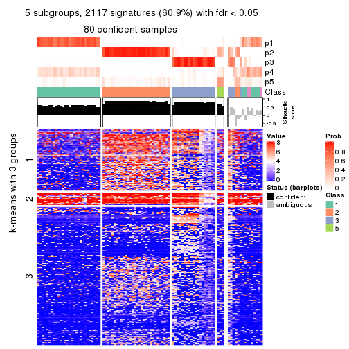
get_signatures(res, k = 6, scale_rows = FALSE)
Compare the overlap of signatures from different k:
compare_signatures(res)
get_signature() returns a data frame invisibly. TO get the list of signatures, the function
call should be assigned to a variable explicitly. In following code, if plot argument is set
to FALSE, no heatmap is plotted while only the differential analysis is performed.
# code only for demonstration
tb = get_signature(res, k = ..., plot = FALSE)
An example of the output of tb is:
#> which_row fdr mean_1 mean_2 scaled_mean_1 scaled_mean_2 km
#> 1 38 0.042760348 8.373488 9.131774 -0.5533452 0.5164555 1
#> 2 40 0.018707592 7.106213 8.469186 -0.6173731 0.5762149 1
#> 3 55 0.019134737 10.221463 11.207825 -0.6159697 0.5749050 1
#> 4 59 0.006059896 5.921854 7.869574 -0.6899429 0.6439467 1
#> 5 60 0.018055526 8.928898 10.211722 -0.6204761 0.5791110 1
#> 6 98 0.009384629 15.714769 14.887706 0.6635654 -0.6193277 2
...
The columns in tb are:
which_row: row indices corresponding to the input matrix.fdr: FDR for the differential test. mean_x: The mean value in group x.scaled_mean_x: The mean value in group x after rows are scaled.km: Row groups if k-means clustering is applied to rows.UMAP plot which shows how samples are separated.
dimension_reduction(res, k = 2, method = "UMAP")
dimension_reduction(res, k = 3, method = "UMAP")
dimension_reduction(res, k = 4, method = "UMAP")
dimension_reduction(res, k = 5, method = "UMAP")
dimension_reduction(res, k = 6, method = "UMAP")
Following heatmap shows how subgroups are split when increasing k:
collect_classes(res)
If matrix rows can be associated to genes, consider to use functional_enrichment(res,
...) to perform function enrichment for the signature genes. See this vignette for more detailed explanations.
The object with results only for a single top-value method and a single partition method can be extracted as:
res = res_list["CV", "hclust"]
# you can also extract it by
# res = res_list["CV:hclust"]
A summary of res and all the functions that can be applied to it:
res
#> A 'ConsensusPartition' object with k = 2, 3, 4, 5, 6.
#> On a matrix with 3475 rows and 95 columns.
#> Top rows (348, 696, 1043, 1390, 1738) are extracted by 'CV' method.
#> Subgroups are detected by 'hclust' method.
#> Performed in total 1250 partitions by row resampling.
#> Best k for subgroups seems to be 2.
#>
#> Following methods can be applied to this 'ConsensusPartition' object:
#> [1] "cola_report" "collect_classes" "collect_plots"
#> [4] "collect_stats" "colnames" "compare_signatures"
#> [7] "consensus_heatmap" "dimension_reduction" "functional_enrichment"
#> [10] "get_anno_col" "get_anno" "get_classes"
#> [13] "get_consensus" "get_matrix" "get_membership"
#> [16] "get_param" "get_signatures" "get_stats"
#> [19] "is_best_k" "is_stable_k" "membership_heatmap"
#> [22] "ncol" "nrow" "plot_ecdf"
#> [25] "rownames" "select_partition_number" "show"
#> [28] "suggest_best_k" "test_to_known_factors"
collect_plots() function collects all the plots made from res for all k (number of partitions)
into one single page to provide an easy and fast comparison between different k.
collect_plots(res)

The plots are:
k and the heatmap of
predicted classes for each k.k.k.k.All the plots in panels can be made by individual functions and they are plotted later in this section.
select_partition_number() produces several plots showing different
statistics for choosing “optimized” k. There are following statistics:
k;k, the area increased is defined as \(A_k - A_{k-1}\).The detailed explanations of these statistics can be found in the cola vignette.
Generally speaking, lower PAC score, higher mean silhouette score or higher
concordance corresponds to better partition. Rand index and Jaccard index
measure how similar the current partition is compared to partition with k-1.
If they are too similar, we won't accept k is better than k-1.
select_partition_number(res)
The numeric values for all these statistics can be obtained by get_stats().
get_stats(res)
#> k 1-PAC mean_silhouette concordance area_increased Rand Jaccard
#> 2 2 0.977 0.983 0.983 0.2319 0.746 0.746
#> 3 3 0.998 0.955 0.978 0.1244 0.993 0.990
#> 4 4 0.977 0.947 0.969 0.0370 0.994 0.992
#> 5 5 0.980 0.960 0.978 0.0216 0.997 0.995
#> 6 6 0.803 0.920 0.951 0.1383 0.999 0.998
suggest_best_k() suggests the best \(k\) based on these statistics. The rules are as follows:
suggest_best_k(res)
#> [1] 2
Following shows the table of the partitions (You need to click the show/hide
code output link to see it). The membership matrix (columns with name p*)
is inferred by
clue::cl_consensus()
function with the SE method. Basically the value in the membership matrix
represents the probability to belong to a certain group. The finall class
label for an item is determined with the group with highest probability it
belongs to.
In get_classes() function, the entropy is calculated from the membership
matrix and the silhouette score is calculated from the consensus matrix.
cbind(get_classes(res, k = 2), get_membership(res, k = 2))
#> class entropy silhouette p1 p2
#> SRR2062258 1 0.1633 0.972 0.976 0.024
#> SRR2062259 1 0.0000 0.999 1.000 0.000
#> SRR2062270 1 0.3584 0.917 0.932 0.068
#> SRR2062342 1 0.0000 0.999 1.000 0.000
#> SRR2062341 1 0.0000 0.999 1.000 0.000
#> SRR2062340 1 0.0000 0.999 1.000 0.000
#> SRR2062339 1 0.0000 0.999 1.000 0.000
#> SRR2062348 1 0.0000 0.999 1.000 0.000
#> SRR2062347 1 0.0000 0.999 1.000 0.000
#> SRR2062351 1 0.0000 0.999 1.000 0.000
#> SRR2062350 1 0.0000 0.999 1.000 0.000
#> SRR2062349 1 0.0000 0.999 1.000 0.000
#> SRR2062346 1 0.0000 0.999 1.000 0.000
#> SRR2062345 1 0.0000 0.999 1.000 0.000
#> SRR2062344 2 0.2043 0.915 0.032 0.968
#> SRR2062343 1 0.0000 0.999 1.000 0.000
#> SRR2062354 1 0.0000 0.999 1.000 0.000
#> SRR2062353 1 0.0376 0.994 0.996 0.004
#> SRR2062352 1 0.0000 0.999 1.000 0.000
#> SRR2063021 1 0.0000 0.999 1.000 0.000
#> SRR2062356 1 0.0000 0.999 1.000 0.000
#> SRR2063025 1 0.0000 0.999 1.000 0.000
#> SRR2063027 1 0.0000 0.999 1.000 0.000
#> SRR2063023 2 0.7139 0.864 0.196 0.804
#> SRR2062355 1 0.0000 0.999 1.000 0.000
#> SRR2063030 1 0.0000 0.999 1.000 0.000
#> SRR2064285 1 0.0000 0.999 1.000 0.000
#> SRR2063034 1 0.0000 0.999 1.000 0.000
#> SRR2063032 1 0.0000 0.999 1.000 0.000
#> SRR2063031 1 0.0000 0.999 1.000 0.000
#> SRR2063029 1 0.0000 0.999 1.000 0.000
#> SRR2063028 1 0.0000 0.999 1.000 0.000
#> SRR2064308 2 0.6531 0.891 0.168 0.832
#> SRR2064310 1 0.0000 0.999 1.000 0.000
#> SRR2064312 1 0.0000 0.999 1.000 0.000
#> SRR2064314 1 0.0000 0.999 1.000 0.000
#> SRR2064315 1 0.0000 0.999 1.000 0.000
#> SRR2064317 1 0.0000 0.999 1.000 0.000
#> SRR2064318 1 0.0000 0.999 1.000 0.000
#> SRR2064319 1 0.0000 0.999 1.000 0.000
#> SRR2064320 1 0.0000 0.999 1.000 0.000
#> SRR2064321 2 0.5059 0.921 0.112 0.888
#> SRR2064322 1 0.0000 0.999 1.000 0.000
#> SRR2064323 1 0.0000 0.999 1.000 0.000
#> SRR2064324 1 0.0000 0.999 1.000 0.000
#> SRR2064325 1 0.0000 0.999 1.000 0.000
#> SRR2064326 1 0.0000 0.999 1.000 0.000
#> SRR2064327 2 0.1843 0.912 0.028 0.972
#> SRR2064329 1 0.0000 0.999 1.000 0.000
#> SRR2064328 1 0.0000 0.999 1.000 0.000
#> SRR2064330 1 0.0000 0.999 1.000 0.000
#> SRR2064331 2 0.2043 0.915 0.032 0.968
#> SRR2064332 2 0.4161 0.926 0.084 0.916
#> SRR2064333 1 0.0000 0.999 1.000 0.000
#> SRR2064334 1 0.0000 0.999 1.000 0.000
#> SRR2064335 1 0.0000 0.999 1.000 0.000
#> SRR2064436 1 0.0000 0.999 1.000 0.000
#> SRR2064457 1 0.0000 0.999 1.000 0.000
#> SRR2064458 1 0.0000 0.999 1.000 0.000
#> SRR2064459 2 0.4431 0.925 0.092 0.908
#> SRR2064460 1 0.0000 0.999 1.000 0.000
#> SRR2064461 1 0.0000 0.999 1.000 0.000
#> SRR2064462 1 0.0000 0.999 1.000 0.000
#> SRR2064534 1 0.0000 0.999 1.000 0.000
#> SRR2064535 2 0.2043 0.915 0.032 0.968
#> SRR2064536 2 0.6973 0.873 0.188 0.812
#> SRR2064537 1 0.0000 0.999 1.000 0.000
#> SRR2064538 1 0.0000 0.999 1.000 0.000
#> SRR2064539 2 0.6531 0.891 0.168 0.832
#> SRR2064540 1 0.0000 0.999 1.000 0.000
#> SRR2064541 1 0.0000 0.999 1.000 0.000
#> SRR2064543 1 0.0000 0.999 1.000 0.000
#> SRR2064542 1 0.0000 0.999 1.000 0.000
#> SRR2064544 1 0.0000 0.999 1.000 0.000
#> SRR2064545 1 0.0000 0.999 1.000 0.000
#> SRR2064546 1 0.0000 0.999 1.000 0.000
#> SRR2064547 1 0.0000 0.999 1.000 0.000
#> SRR2064548 1 0.0000 0.999 1.000 0.000
#> SRR2064550 1 0.0000 0.999 1.000 0.000
#> SRR2064549 1 0.0000 0.999 1.000 0.000
#> SRR2064551 1 0.0000 0.999 1.000 0.000
#> SRR2064552 1 0.0000 0.999 1.000 0.000
#> SRR2064553 2 0.7815 0.822 0.232 0.768
#> SRR2064554 1 0.0000 0.999 1.000 0.000
#> SRR2064555 2 0.4298 0.926 0.088 0.912
#> SRR2064556 1 0.0000 0.999 1.000 0.000
#> SRR2064559 1 0.0000 0.999 1.000 0.000
#> SRR2064558 2 0.2043 0.915 0.032 0.968
#> SRR2064557 1 0.0000 0.999 1.000 0.000
#> SRR2064560 1 0.0000 0.999 1.000 0.000
#> SRR2064561 1 0.0000 0.999 1.000 0.000
#> SRR2064562 1 0.0000 0.999 1.000 0.000
#> SRR2064564 1 0.0000 0.999 1.000 0.000
#> SRR2064563 1 0.0000 0.999 1.000 0.000
#> SRR2064565 1 0.0000 0.999 1.000 0.000
cbind(get_classes(res, k = 3), get_membership(res, k = 3))
#> class entropy silhouette p1 p2 p3
#> SRR2062258 1 0.1337 0.970 0.972 0.016 0.012
#> SRR2062259 1 0.0000 0.998 1.000 0.000 0.000
#> SRR2062270 1 0.2860 0.904 0.912 0.084 0.004
#> SRR2062342 1 0.0000 0.998 1.000 0.000 0.000
#> SRR2062341 1 0.0000 0.998 1.000 0.000 0.000
#> SRR2062340 1 0.0000 0.998 1.000 0.000 0.000
#> SRR2062339 1 0.0000 0.998 1.000 0.000 0.000
#> SRR2062348 1 0.0000 0.998 1.000 0.000 0.000
#> SRR2062347 1 0.0000 0.998 1.000 0.000 0.000
#> SRR2062351 1 0.0000 0.998 1.000 0.000 0.000
#> SRR2062350 1 0.0000 0.998 1.000 0.000 0.000
#> SRR2062349 1 0.0000 0.998 1.000 0.000 0.000
#> SRR2062346 1 0.0000 0.998 1.000 0.000 0.000
#> SRR2062345 1 0.0000 0.998 1.000 0.000 0.000
#> SRR2062344 3 0.0000 0.756 0.000 0.000 1.000
#> SRR2062343 1 0.0000 0.998 1.000 0.000 0.000
#> SRR2062354 1 0.0000 0.998 1.000 0.000 0.000
#> SRR2062353 1 0.0747 0.983 0.984 0.016 0.000
#> SRR2062352 1 0.0000 0.998 1.000 0.000 0.000
#> SRR2063021 1 0.0000 0.998 1.000 0.000 0.000
#> SRR2062356 1 0.0000 0.998 1.000 0.000 0.000
#> SRR2063025 1 0.0000 0.998 1.000 0.000 0.000
#> SRR2063027 1 0.0000 0.998 1.000 0.000 0.000
#> SRR2063023 3 0.7256 0.532 0.124 0.164 0.712
#> SRR2062355 1 0.0000 0.998 1.000 0.000 0.000
#> SRR2063030 1 0.0000 0.998 1.000 0.000 0.000
#> SRR2064285 1 0.0000 0.998 1.000 0.000 0.000
#> SRR2063034 1 0.0000 0.998 1.000 0.000 0.000
#> SRR2063032 1 0.0000 0.998 1.000 0.000 0.000
#> SRR2063031 1 0.0000 0.998 1.000 0.000 0.000
#> SRR2063029 1 0.0000 0.998 1.000 0.000 0.000
#> SRR2063028 1 0.0000 0.998 1.000 0.000 0.000
#> SRR2064308 2 0.0747 0.976 0.000 0.984 0.016
#> SRR2064310 1 0.0000 0.998 1.000 0.000 0.000
#> SRR2064312 1 0.0000 0.998 1.000 0.000 0.000
#> SRR2064314 1 0.0000 0.998 1.000 0.000 0.000
#> SRR2064315 1 0.0000 0.998 1.000 0.000 0.000
#> SRR2064317 1 0.0000 0.998 1.000 0.000 0.000
#> SRR2064318 1 0.0000 0.998 1.000 0.000 0.000
#> SRR2064319 1 0.0000 0.998 1.000 0.000 0.000
#> SRR2064320 1 0.0000 0.998 1.000 0.000 0.000
#> SRR2064321 3 0.6434 0.520 0.008 0.380 0.612
#> SRR2064322 1 0.0000 0.998 1.000 0.000 0.000
#> SRR2064323 1 0.0000 0.998 1.000 0.000 0.000
#> SRR2064324 1 0.0000 0.998 1.000 0.000 0.000
#> SRR2064325 1 0.0000 0.998 1.000 0.000 0.000
#> SRR2064326 1 0.0000 0.998 1.000 0.000 0.000
#> SRR2064327 3 0.0237 0.755 0.000 0.004 0.996
#> SRR2064329 1 0.0000 0.998 1.000 0.000 0.000
#> SRR2064328 1 0.0000 0.998 1.000 0.000 0.000
#> SRR2064330 1 0.0000 0.998 1.000 0.000 0.000
#> SRR2064331 3 0.0000 0.756 0.000 0.000 1.000
#> SRR2064332 3 0.5733 0.584 0.000 0.324 0.676
#> SRR2064333 1 0.0000 0.998 1.000 0.000 0.000
#> SRR2064334 1 0.0000 0.998 1.000 0.000 0.000
#> SRR2064335 1 0.0000 0.998 1.000 0.000 0.000
#> SRR2064436 1 0.0000 0.998 1.000 0.000 0.000
#> SRR2064457 1 0.0000 0.998 1.000 0.000 0.000
#> SRR2064458 1 0.0000 0.998 1.000 0.000 0.000
#> SRR2064459 3 0.5156 0.680 0.008 0.216 0.776
#> SRR2064460 1 0.0000 0.998 1.000 0.000 0.000
#> SRR2064461 1 0.0000 0.998 1.000 0.000 0.000
#> SRR2064462 1 0.0000 0.998 1.000 0.000 0.000
#> SRR2064534 1 0.0000 0.998 1.000 0.000 0.000
#> SRR2064535 3 0.0000 0.756 0.000 0.000 1.000
#> SRR2064536 2 0.0829 0.953 0.012 0.984 0.004
#> SRR2064537 1 0.0000 0.998 1.000 0.000 0.000
#> SRR2064538 1 0.0000 0.998 1.000 0.000 0.000
#> SRR2064539 2 0.0747 0.976 0.000 0.984 0.016
#> SRR2064540 1 0.0000 0.998 1.000 0.000 0.000
#> SRR2064541 1 0.0000 0.998 1.000 0.000 0.000
#> SRR2064543 1 0.0000 0.998 1.000 0.000 0.000
#> SRR2064542 1 0.0000 0.998 1.000 0.000 0.000
#> SRR2064544 1 0.0000 0.998 1.000 0.000 0.000
#> SRR2064545 1 0.0000 0.998 1.000 0.000 0.000
#> SRR2064546 1 0.0000 0.998 1.000 0.000 0.000
#> SRR2064547 1 0.0000 0.998 1.000 0.000 0.000
#> SRR2064548 1 0.0000 0.998 1.000 0.000 0.000
#> SRR2064550 1 0.0000 0.998 1.000 0.000 0.000
#> SRR2064549 1 0.0000 0.998 1.000 0.000 0.000
#> SRR2064551 1 0.0000 0.998 1.000 0.000 0.000
#> SRR2064552 1 0.0000 0.998 1.000 0.000 0.000
#> SRR2064553 3 0.8126 0.452 0.148 0.208 0.644
#> SRR2064554 1 0.0000 0.998 1.000 0.000 0.000
#> SRR2064555 3 0.6189 0.537 0.004 0.364 0.632
#> SRR2064556 1 0.0000 0.998 1.000 0.000 0.000
#> SRR2064559 1 0.0000 0.998 1.000 0.000 0.000
#> SRR2064558 3 0.0000 0.756 0.000 0.000 1.000
#> SRR2064557 1 0.0000 0.998 1.000 0.000 0.000
#> SRR2064560 1 0.0000 0.998 1.000 0.000 0.000
#> SRR2064561 1 0.0000 0.998 1.000 0.000 0.000
#> SRR2064562 1 0.0000 0.998 1.000 0.000 0.000
#> SRR2064564 1 0.0000 0.998 1.000 0.000 0.000
#> SRR2064563 1 0.0000 0.998 1.000 0.000 0.000
#> SRR2064565 1 0.0000 0.998 1.000 0.000 0.000
cbind(get_classes(res, k = 4), get_membership(res, k = 4))
#> class entropy silhouette p1 p2 p3 p4
#> SRR2062258 1 0.2868 0.846 0.864 0.000 0.000 0.136
#> SRR2062259 1 0.0000 0.997 1.000 0.000 0.000 0.000
#> SRR2062270 1 0.2266 0.904 0.912 0.084 0.004 0.000
#> SRR2062342 1 0.0000 0.997 1.000 0.000 0.000 0.000
#> SRR2062341 1 0.0000 0.997 1.000 0.000 0.000 0.000
#> SRR2062340 1 0.0000 0.997 1.000 0.000 0.000 0.000
#> SRR2062339 1 0.0000 0.997 1.000 0.000 0.000 0.000
#> SRR2062348 1 0.0000 0.997 1.000 0.000 0.000 0.000
#> SRR2062347 1 0.0000 0.997 1.000 0.000 0.000 0.000
#> SRR2062351 1 0.0000 0.997 1.000 0.000 0.000 0.000
#> SRR2062350 1 0.0000 0.997 1.000 0.000 0.000 0.000
#> SRR2062349 1 0.0000 0.997 1.000 0.000 0.000 0.000
#> SRR2062346 1 0.0000 0.997 1.000 0.000 0.000 0.000
#> SRR2062345 1 0.0000 0.997 1.000 0.000 0.000 0.000
#> SRR2062344 3 0.0000 0.778 0.000 0.000 1.000 0.000
#> SRR2062343 1 0.0000 0.997 1.000 0.000 0.000 0.000
#> SRR2062354 1 0.0000 0.997 1.000 0.000 0.000 0.000
#> SRR2062353 1 0.0895 0.974 0.976 0.004 0.000 0.020
#> SRR2062352 1 0.0000 0.997 1.000 0.000 0.000 0.000
#> SRR2063021 1 0.0000 0.997 1.000 0.000 0.000 0.000
#> SRR2062356 1 0.0000 0.997 1.000 0.000 0.000 0.000
#> SRR2063025 1 0.0000 0.997 1.000 0.000 0.000 0.000
#> SRR2063027 1 0.0000 0.997 1.000 0.000 0.000 0.000
#> SRR2063023 3 0.7841 0.353 0.060 0.104 0.556 0.280
#> SRR2062355 1 0.0000 0.997 1.000 0.000 0.000 0.000
#> SRR2063030 1 0.0000 0.997 1.000 0.000 0.000 0.000
#> SRR2064285 1 0.0000 0.997 1.000 0.000 0.000 0.000
#> SRR2063034 1 0.0000 0.997 1.000 0.000 0.000 0.000
#> SRR2063032 1 0.0000 0.997 1.000 0.000 0.000 0.000
#> SRR2063031 1 0.0000 0.997 1.000 0.000 0.000 0.000
#> SRR2063029 1 0.0000 0.997 1.000 0.000 0.000 0.000
#> SRR2063028 1 0.0000 0.997 1.000 0.000 0.000 0.000
#> SRR2064308 2 0.0188 0.899 0.000 0.996 0.000 0.004
#> SRR2064310 1 0.0000 0.997 1.000 0.000 0.000 0.000
#> SRR2064312 1 0.0000 0.997 1.000 0.000 0.000 0.000
#> SRR2064314 1 0.0000 0.997 1.000 0.000 0.000 0.000
#> SRR2064315 1 0.0000 0.997 1.000 0.000 0.000 0.000
#> SRR2064317 1 0.0000 0.997 1.000 0.000 0.000 0.000
#> SRR2064318 1 0.0000 0.997 1.000 0.000 0.000 0.000
#> SRR2064319 1 0.0000 0.997 1.000 0.000 0.000 0.000
#> SRR2064320 1 0.0000 0.997 1.000 0.000 0.000 0.000
#> SRR2064321 4 0.5256 0.710 0.000 0.064 0.204 0.732
#> SRR2064322 1 0.0000 0.997 1.000 0.000 0.000 0.000
#> SRR2064323 1 0.0000 0.997 1.000 0.000 0.000 0.000
#> SRR2064324 1 0.0000 0.997 1.000 0.000 0.000 0.000
#> SRR2064325 1 0.0000 0.997 1.000 0.000 0.000 0.000
#> SRR2064326 1 0.0000 0.997 1.000 0.000 0.000 0.000
#> SRR2064327 3 0.0188 0.775 0.000 0.000 0.996 0.004
#> SRR2064329 1 0.0000 0.997 1.000 0.000 0.000 0.000
#> SRR2064328 1 0.0000 0.997 1.000 0.000 0.000 0.000
#> SRR2064330 1 0.0000 0.997 1.000 0.000 0.000 0.000
#> SRR2064331 3 0.0000 0.778 0.000 0.000 1.000 0.000
#> SRR2064332 4 0.7048 0.704 0.000 0.160 0.284 0.556
#> SRR2064333 1 0.0000 0.997 1.000 0.000 0.000 0.000
#> SRR2064334 1 0.0000 0.997 1.000 0.000 0.000 0.000
#> SRR2064335 1 0.0000 0.997 1.000 0.000 0.000 0.000
#> SRR2064436 1 0.0000 0.997 1.000 0.000 0.000 0.000
#> SRR2064457 1 0.0000 0.997 1.000 0.000 0.000 0.000
#> SRR2064458 1 0.0000 0.997 1.000 0.000 0.000 0.000
#> SRR2064459 4 0.7186 0.241 0.000 0.136 0.420 0.444
#> SRR2064460 1 0.0000 0.997 1.000 0.000 0.000 0.000
#> SRR2064461 1 0.0000 0.997 1.000 0.000 0.000 0.000
#> SRR2064462 1 0.0000 0.997 1.000 0.000 0.000 0.000
#> SRR2064534 1 0.0000 0.997 1.000 0.000 0.000 0.000
#> SRR2064535 3 0.0000 0.778 0.000 0.000 1.000 0.000
#> SRR2064536 2 0.3569 0.789 0.000 0.804 0.000 0.196
#> SRR2064537 1 0.0000 0.997 1.000 0.000 0.000 0.000
#> SRR2064538 1 0.0000 0.997 1.000 0.000 0.000 0.000
#> SRR2064539 2 0.0188 0.899 0.000 0.996 0.000 0.004
#> SRR2064540 1 0.0000 0.997 1.000 0.000 0.000 0.000
#> SRR2064541 1 0.0000 0.997 1.000 0.000 0.000 0.000
#> SRR2064543 1 0.0000 0.997 1.000 0.000 0.000 0.000
#> SRR2064542 1 0.0000 0.997 1.000 0.000 0.000 0.000
#> SRR2064544 1 0.0000 0.997 1.000 0.000 0.000 0.000
#> SRR2064545 1 0.0000 0.997 1.000 0.000 0.000 0.000
#> SRR2064546 1 0.0000 0.997 1.000 0.000 0.000 0.000
#> SRR2064547 1 0.0000 0.997 1.000 0.000 0.000 0.000
#> SRR2064548 1 0.0000 0.997 1.000 0.000 0.000 0.000
#> SRR2064550 1 0.0000 0.997 1.000 0.000 0.000 0.000
#> SRR2064549 1 0.0000 0.997 1.000 0.000 0.000 0.000
#> SRR2064551 1 0.0000 0.997 1.000 0.000 0.000 0.000
#> SRR2064552 1 0.0000 0.997 1.000 0.000 0.000 0.000
#> SRR2064553 3 0.7877 0.294 0.032 0.132 0.496 0.340
#> SRR2064554 1 0.0000 0.997 1.000 0.000 0.000 0.000
#> SRR2064555 4 0.6233 0.734 0.000 0.124 0.216 0.660
#> SRR2064556 1 0.0000 0.997 1.000 0.000 0.000 0.000
#> SRR2064559 1 0.0000 0.997 1.000 0.000 0.000 0.000
#> SRR2064558 3 0.0000 0.778 0.000 0.000 1.000 0.000
#> SRR2064557 1 0.0000 0.997 1.000 0.000 0.000 0.000
#> SRR2064560 1 0.0000 0.997 1.000 0.000 0.000 0.000
#> SRR2064561 1 0.0000 0.997 1.000 0.000 0.000 0.000
#> SRR2064562 1 0.0000 0.997 1.000 0.000 0.000 0.000
#> SRR2064564 1 0.0000 0.997 1.000 0.000 0.000 0.000
#> SRR2064563 1 0.0000 0.997 1.000 0.000 0.000 0.000
#> SRR2064565 1 0.0000 0.997 1.000 0.000 0.000 0.000
cbind(get_classes(res, k = 5), get_membership(res, k = 5))
#> class entropy silhouette p1 p2 p3 p4 p5
#> SRR2062258 1 0.2674 0.8308 0.856 0.140 0.000 0.004 0.000
#> SRR2062259 1 0.0000 0.9939 1.000 0.000 0.000 0.000 0.000
#> SRR2062270 1 0.2332 0.8997 0.904 0.016 0.004 0.000 0.076
#> SRR2062342 1 0.0290 0.9919 0.992 0.008 0.000 0.000 0.000
#> SRR2062341 1 0.0000 0.9939 1.000 0.000 0.000 0.000 0.000
#> SRR2062340 1 0.0290 0.9919 0.992 0.008 0.000 0.000 0.000
#> SRR2062339 1 0.0000 0.9939 1.000 0.000 0.000 0.000 0.000
#> SRR2062348 1 0.0000 0.9939 1.000 0.000 0.000 0.000 0.000
#> SRR2062347 1 0.0290 0.9919 0.992 0.008 0.000 0.000 0.000
#> SRR2062351 1 0.0000 0.9939 1.000 0.000 0.000 0.000 0.000
#> SRR2062350 1 0.0000 0.9939 1.000 0.000 0.000 0.000 0.000
#> SRR2062349 1 0.0290 0.9919 0.992 0.008 0.000 0.000 0.000
#> SRR2062346 1 0.0000 0.9939 1.000 0.000 0.000 0.000 0.000
#> SRR2062345 1 0.0290 0.9919 0.992 0.008 0.000 0.000 0.000
#> SRR2062344 3 0.0000 0.9979 0.000 0.000 1.000 0.000 0.000
#> SRR2062343 1 0.0162 0.9932 0.996 0.004 0.000 0.000 0.000
#> SRR2062354 1 0.0000 0.9939 1.000 0.000 0.000 0.000 0.000
#> SRR2062353 1 0.1074 0.9710 0.968 0.016 0.000 0.012 0.004
#> SRR2062352 1 0.0000 0.9939 1.000 0.000 0.000 0.000 0.000
#> SRR2063021 1 0.0162 0.9932 0.996 0.004 0.000 0.000 0.000
#> SRR2062356 1 0.0000 0.9939 1.000 0.000 0.000 0.000 0.000
#> SRR2063025 1 0.0290 0.9919 0.992 0.008 0.000 0.000 0.000
#> SRR2063027 1 0.0000 0.9939 1.000 0.000 0.000 0.000 0.000
#> SRR2063023 2 0.3887 0.6143 0.044 0.832 0.100 0.016 0.008
#> SRR2062355 1 0.0290 0.9919 0.992 0.008 0.000 0.000 0.000
#> SRR2063030 1 0.0000 0.9939 1.000 0.000 0.000 0.000 0.000
#> SRR2064285 1 0.0000 0.9939 1.000 0.000 0.000 0.000 0.000
#> SRR2063034 1 0.0000 0.9939 1.000 0.000 0.000 0.000 0.000
#> SRR2063032 1 0.0000 0.9939 1.000 0.000 0.000 0.000 0.000
#> SRR2063031 1 0.0000 0.9939 1.000 0.000 0.000 0.000 0.000
#> SRR2063029 1 0.0162 0.9932 0.996 0.004 0.000 0.000 0.000
#> SRR2063028 1 0.0000 0.9939 1.000 0.000 0.000 0.000 0.000
#> SRR2064308 5 0.0609 0.8822 0.000 0.020 0.000 0.000 0.980
#> SRR2064310 1 0.0000 0.9939 1.000 0.000 0.000 0.000 0.000
#> SRR2064312 1 0.0000 0.9939 1.000 0.000 0.000 0.000 0.000
#> SRR2064314 1 0.0290 0.9919 0.992 0.008 0.000 0.000 0.000
#> SRR2064315 1 0.0000 0.9939 1.000 0.000 0.000 0.000 0.000
#> SRR2064317 1 0.0290 0.9919 0.992 0.008 0.000 0.000 0.000
#> SRR2064318 1 0.0000 0.9939 1.000 0.000 0.000 0.000 0.000
#> SRR2064319 1 0.0000 0.9939 1.000 0.000 0.000 0.000 0.000
#> SRR2064320 1 0.0290 0.9919 0.992 0.008 0.000 0.000 0.000
#> SRR2064321 4 0.2244 0.7824 0.000 0.040 0.016 0.920 0.024
#> SRR2064322 1 0.0290 0.9919 0.992 0.008 0.000 0.000 0.000
#> SRR2064323 1 0.0000 0.9939 1.000 0.000 0.000 0.000 0.000
#> SRR2064324 1 0.0162 0.9932 0.996 0.004 0.000 0.000 0.000
#> SRR2064325 1 0.0000 0.9939 1.000 0.000 0.000 0.000 0.000
#> SRR2064326 1 0.0162 0.9932 0.996 0.004 0.000 0.000 0.000
#> SRR2064327 3 0.0290 0.9917 0.000 0.008 0.992 0.000 0.000
#> SRR2064329 1 0.0000 0.9939 1.000 0.000 0.000 0.000 0.000
#> SRR2064328 1 0.0290 0.9919 0.992 0.008 0.000 0.000 0.000
#> SRR2064330 1 0.0162 0.9932 0.996 0.004 0.000 0.000 0.000
#> SRR2064331 3 0.0000 0.9979 0.000 0.000 1.000 0.000 0.000
#> SRR2064332 4 0.4990 0.7212 0.000 0.064 0.080 0.764 0.092
#> SRR2064333 1 0.0000 0.9939 1.000 0.000 0.000 0.000 0.000
#> SRR2064334 1 0.0162 0.9932 0.996 0.004 0.000 0.000 0.000
#> SRR2064335 1 0.0290 0.9919 0.992 0.008 0.000 0.000 0.000
#> SRR2064436 1 0.0000 0.9939 1.000 0.000 0.000 0.000 0.000
#> SRR2064457 1 0.0000 0.9939 1.000 0.000 0.000 0.000 0.000
#> SRR2064458 1 0.0000 0.9939 1.000 0.000 0.000 0.000 0.000
#> SRR2064459 2 0.6478 0.0255 0.000 0.488 0.096 0.388 0.028
#> SRR2064460 1 0.0000 0.9939 1.000 0.000 0.000 0.000 0.000
#> SRR2064461 1 0.0290 0.9919 0.992 0.008 0.000 0.000 0.000
#> SRR2064462 1 0.0000 0.9939 1.000 0.000 0.000 0.000 0.000
#> SRR2064534 1 0.0290 0.9919 0.992 0.008 0.000 0.000 0.000
#> SRR2064535 3 0.0000 0.9979 0.000 0.000 1.000 0.000 0.000
#> SRR2064536 5 0.3656 0.7491 0.000 0.020 0.000 0.196 0.784
#> SRR2064537 1 0.0162 0.9932 0.996 0.004 0.000 0.000 0.000
#> SRR2064538 1 0.0000 0.9939 1.000 0.000 0.000 0.000 0.000
#> SRR2064539 5 0.0609 0.8822 0.000 0.020 0.000 0.000 0.980
#> SRR2064540 1 0.0000 0.9939 1.000 0.000 0.000 0.000 0.000
#> SRR2064541 1 0.0290 0.9919 0.992 0.008 0.000 0.000 0.000
#> SRR2064543 1 0.0000 0.9939 1.000 0.000 0.000 0.000 0.000
#> SRR2064542 1 0.0000 0.9939 1.000 0.000 0.000 0.000 0.000
#> SRR2064544 1 0.0000 0.9939 1.000 0.000 0.000 0.000 0.000
#> SRR2064545 1 0.0290 0.9919 0.992 0.008 0.000 0.000 0.000
#> SRR2064546 1 0.0000 0.9939 1.000 0.000 0.000 0.000 0.000
#> SRR2064547 1 0.0000 0.9939 1.000 0.000 0.000 0.000 0.000
#> SRR2064548 1 0.0290 0.9919 0.992 0.008 0.000 0.000 0.000
#> SRR2064550 1 0.0290 0.9919 0.992 0.008 0.000 0.000 0.000
#> SRR2064549 1 0.0000 0.9939 1.000 0.000 0.000 0.000 0.000
#> SRR2064551 1 0.0290 0.9919 0.992 0.008 0.000 0.000 0.000
#> SRR2064552 1 0.0000 0.9939 1.000 0.000 0.000 0.000 0.000
#> SRR2064553 2 0.3448 0.6034 0.012 0.864 0.060 0.012 0.052
#> SRR2064554 1 0.0162 0.9932 0.996 0.004 0.000 0.000 0.000
#> SRR2064555 4 0.2897 0.8208 0.000 0.040 0.020 0.888 0.052
#> SRR2064556 1 0.0000 0.9939 1.000 0.000 0.000 0.000 0.000
#> SRR2064559 1 0.0290 0.9919 0.992 0.008 0.000 0.000 0.000
#> SRR2064558 3 0.0000 0.9979 0.000 0.000 1.000 0.000 0.000
#> SRR2064557 1 0.0290 0.9919 0.992 0.008 0.000 0.000 0.000
#> SRR2064560 1 0.0000 0.9939 1.000 0.000 0.000 0.000 0.000
#> SRR2064561 1 0.0000 0.9939 1.000 0.000 0.000 0.000 0.000
#> SRR2064562 1 0.0000 0.9939 1.000 0.000 0.000 0.000 0.000
#> SRR2064564 1 0.0000 0.9939 1.000 0.000 0.000 0.000 0.000
#> SRR2064563 1 0.0290 0.9919 0.992 0.008 0.000 0.000 0.000
#> SRR2064565 1 0.0290 0.9915 0.992 0.008 0.000 0.000 0.000
cbind(get_classes(res, k = 6), get_membership(res, k = 6))
#> class entropy silhouette p1 p2 p3 p4 p5 p6
#> SRR2062258 1 0.3176 0.8194 0.832 0.084 0.000 0.000 0.084 0.000
#> SRR2062259 1 0.0000 0.9659 1.000 0.000 0.000 0.000 0.000 0.000
#> SRR2062270 1 0.3213 0.8638 0.836 0.000 0.004 0.000 0.076 0.084
#> SRR2062342 1 0.2879 0.8484 0.816 0.004 0.000 0.004 0.176 0.000
#> SRR2062341 1 0.0000 0.9659 1.000 0.000 0.000 0.000 0.000 0.000
#> SRR2062340 1 0.1501 0.9391 0.924 0.000 0.000 0.000 0.076 0.000
#> SRR2062339 1 0.0000 0.9659 1.000 0.000 0.000 0.000 0.000 0.000
#> SRR2062348 1 0.0000 0.9659 1.000 0.000 0.000 0.000 0.000 0.000
#> SRR2062347 1 0.1714 0.9290 0.908 0.000 0.000 0.000 0.092 0.000
#> SRR2062351 1 0.0000 0.9659 1.000 0.000 0.000 0.000 0.000 0.000
#> SRR2062350 1 0.0000 0.9659 1.000 0.000 0.000 0.000 0.000 0.000
#> SRR2062349 1 0.1765 0.9269 0.904 0.000 0.000 0.000 0.096 0.000
#> SRR2062346 1 0.0000 0.9659 1.000 0.000 0.000 0.000 0.000 0.000
#> SRR2062345 1 0.2416 0.8780 0.844 0.000 0.000 0.000 0.156 0.000
#> SRR2062344 3 0.0000 0.9972 0.000 0.000 1.000 0.000 0.000 0.000
#> SRR2062343 1 0.2278 0.8984 0.868 0.004 0.000 0.000 0.128 0.000
#> SRR2062354 1 0.0000 0.9659 1.000 0.000 0.000 0.000 0.000 0.000
#> SRR2062353 1 0.1806 0.9300 0.908 0.004 0.000 0.000 0.088 0.000
#> SRR2062352 1 0.0000 0.9659 1.000 0.000 0.000 0.000 0.000 0.000
#> SRR2063021 1 0.0363 0.9633 0.988 0.000 0.000 0.000 0.012 0.000
#> SRR2062356 1 0.0000 0.9659 1.000 0.000 0.000 0.000 0.000 0.000
#> SRR2063025 1 0.2632 0.8654 0.832 0.004 0.000 0.000 0.164 0.000
#> SRR2063027 1 0.0000 0.9659 1.000 0.000 0.000 0.000 0.000 0.000
#> SRR2063023 2 0.1921 0.7083 0.032 0.928 0.004 0.024 0.012 0.000
#> SRR2062355 1 0.0632 0.9600 0.976 0.000 0.000 0.000 0.024 0.000
#> SRR2063030 1 0.0000 0.9659 1.000 0.000 0.000 0.000 0.000 0.000
#> SRR2064285 1 0.0000 0.9659 1.000 0.000 0.000 0.000 0.000 0.000
#> SRR2063034 1 0.0000 0.9659 1.000 0.000 0.000 0.000 0.000 0.000
#> SRR2063032 1 0.0000 0.9659 1.000 0.000 0.000 0.000 0.000 0.000
#> SRR2063031 1 0.0000 0.9659 1.000 0.000 0.000 0.000 0.000 0.000
#> SRR2063029 1 0.1141 0.9519 0.948 0.000 0.000 0.000 0.052 0.000
#> SRR2063028 1 0.0000 0.9659 1.000 0.000 0.000 0.000 0.000 0.000
#> SRR2064308 6 0.0000 0.8790 0.000 0.000 0.000 0.000 0.000 1.000
#> SRR2064310 1 0.0000 0.9659 1.000 0.000 0.000 0.000 0.000 0.000
#> SRR2064312 1 0.0000 0.9659 1.000 0.000 0.000 0.000 0.000 0.000
#> SRR2064314 1 0.1444 0.9409 0.928 0.000 0.000 0.000 0.072 0.000
#> SRR2064315 1 0.0000 0.9659 1.000 0.000 0.000 0.000 0.000 0.000
#> SRR2064317 1 0.2178 0.8989 0.868 0.000 0.000 0.000 0.132 0.000
#> SRR2064318 1 0.0000 0.9659 1.000 0.000 0.000 0.000 0.000 0.000
#> SRR2064319 1 0.0000 0.9659 1.000 0.000 0.000 0.000 0.000 0.000
#> SRR2064320 1 0.1204 0.9490 0.944 0.000 0.000 0.000 0.056 0.000
#> SRR2064321 5 0.3734 0.8485 0.000 0.020 0.000 0.264 0.716 0.000
#> SRR2064322 1 0.1910 0.9186 0.892 0.000 0.000 0.000 0.108 0.000
#> SRR2064323 1 0.0146 0.9650 0.996 0.000 0.000 0.000 0.004 0.000
#> SRR2064324 1 0.1075 0.9530 0.952 0.000 0.000 0.000 0.048 0.000
#> SRR2064325 1 0.0000 0.9659 1.000 0.000 0.000 0.000 0.000 0.000
#> SRR2064326 1 0.0260 0.9641 0.992 0.000 0.000 0.000 0.008 0.000
#> SRR2064327 3 0.0363 0.9887 0.000 0.000 0.988 0.000 0.012 0.000
#> SRR2064329 1 0.0000 0.9659 1.000 0.000 0.000 0.000 0.000 0.000
#> SRR2064328 1 0.0937 0.9556 0.960 0.000 0.000 0.000 0.040 0.000
#> SRR2064330 1 0.0632 0.9610 0.976 0.000 0.000 0.000 0.024 0.000
#> SRR2064331 3 0.0000 0.9972 0.000 0.000 1.000 0.000 0.000 0.000
#> SRR2064332 4 0.0914 0.1413 0.000 0.000 0.016 0.968 0.000 0.016
#> SRR2064333 1 0.0000 0.9659 1.000 0.000 0.000 0.000 0.000 0.000
#> SRR2064334 1 0.1663 0.9317 0.912 0.000 0.000 0.000 0.088 0.000
#> SRR2064335 1 0.0865 0.9576 0.964 0.000 0.000 0.000 0.036 0.000
#> SRR2064436 1 0.0000 0.9659 1.000 0.000 0.000 0.000 0.000 0.000
#> SRR2064457 1 0.0000 0.9659 1.000 0.000 0.000 0.000 0.000 0.000
#> SRR2064458 1 0.0000 0.9659 1.000 0.000 0.000 0.000 0.000 0.000
#> SRR2064459 4 0.4184 -0.0353 0.000 0.488 0.000 0.500 0.012 0.000
#> SRR2064460 1 0.0000 0.9659 1.000 0.000 0.000 0.000 0.000 0.000
#> SRR2064461 1 0.1556 0.9381 0.920 0.000 0.000 0.000 0.080 0.000
#> SRR2064462 1 0.0000 0.9659 1.000 0.000 0.000 0.000 0.000 0.000
#> SRR2064534 1 0.2260 0.8925 0.860 0.000 0.000 0.000 0.140 0.000
#> SRR2064535 3 0.0000 0.9972 0.000 0.000 1.000 0.000 0.000 0.000
#> SRR2064536 6 0.3384 0.7252 0.000 0.008 0.000 0.004 0.228 0.760
#> SRR2064537 1 0.0260 0.9641 0.992 0.000 0.000 0.000 0.008 0.000
#> SRR2064538 1 0.0000 0.9659 1.000 0.000 0.000 0.000 0.000 0.000
#> SRR2064539 6 0.0000 0.8790 0.000 0.000 0.000 0.000 0.000 1.000
#> SRR2064540 1 0.0000 0.9659 1.000 0.000 0.000 0.000 0.000 0.000
#> SRR2064541 1 0.1007 0.9539 0.956 0.000 0.000 0.000 0.044 0.000
#> SRR2064543 1 0.0000 0.9659 1.000 0.000 0.000 0.000 0.000 0.000
#> SRR2064542 1 0.0000 0.9659 1.000 0.000 0.000 0.000 0.000 0.000
#> SRR2064544 1 0.0547 0.9618 0.980 0.000 0.000 0.000 0.020 0.000
#> SRR2064545 1 0.1444 0.9400 0.928 0.000 0.000 0.000 0.072 0.000
#> SRR2064546 1 0.0000 0.9659 1.000 0.000 0.000 0.000 0.000 0.000
#> SRR2064547 1 0.0000 0.9659 1.000 0.000 0.000 0.000 0.000 0.000
#> SRR2064548 1 0.1204 0.9494 0.944 0.000 0.000 0.000 0.056 0.000
#> SRR2064550 1 0.0632 0.9600 0.976 0.000 0.000 0.000 0.024 0.000
#> SRR2064549 1 0.0000 0.9659 1.000 0.000 0.000 0.000 0.000 0.000
#> SRR2064551 1 0.2700 0.8705 0.836 0.004 0.000 0.004 0.156 0.000
#> SRR2064552 1 0.0000 0.9659 1.000 0.000 0.000 0.000 0.000 0.000
#> SRR2064553 2 0.3696 0.7148 0.008 0.836 0.028 0.008 0.072 0.048
#> SRR2064554 1 0.0260 0.9641 0.992 0.000 0.000 0.000 0.008 0.000
#> SRR2064555 5 0.4394 0.8411 0.000 0.020 0.000 0.364 0.608 0.008
#> SRR2064556 1 0.0000 0.9659 1.000 0.000 0.000 0.000 0.000 0.000
#> SRR2064559 1 0.2738 0.8524 0.820 0.004 0.000 0.000 0.176 0.000
#> SRR2064558 3 0.0000 0.9972 0.000 0.000 1.000 0.000 0.000 0.000
#> SRR2064557 1 0.1501 0.9390 0.924 0.000 0.000 0.000 0.076 0.000
#> SRR2064560 1 0.0000 0.9659 1.000 0.000 0.000 0.000 0.000 0.000
#> SRR2064561 1 0.0000 0.9659 1.000 0.000 0.000 0.000 0.000 0.000
#> SRR2064562 1 0.0000 0.9659 1.000 0.000 0.000 0.000 0.000 0.000
#> SRR2064564 1 0.0000 0.9659 1.000 0.000 0.000 0.000 0.000 0.000
#> SRR2064563 1 0.2482 0.8812 0.848 0.004 0.000 0.000 0.148 0.000
#> SRR2064565 1 0.1007 0.9548 0.956 0.000 0.000 0.000 0.044 0.000
Heatmaps for the consensus matrix. It visualizes the probability of two samples to be in a same group.
consensus_heatmap(res, k = 2)
consensus_heatmap(res, k = 3)
consensus_heatmap(res, k = 4)
consensus_heatmap(res, k = 5)
consensus_heatmap(res, k = 6)
Heatmaps for the membership of samples in all partitions to see how consistent they are:
membership_heatmap(res, k = 2)
membership_heatmap(res, k = 3)
membership_heatmap(res, k = 4)
membership_heatmap(res, k = 5)
membership_heatmap(res, k = 6)
As soon as we have had the classes for columns, we can look for signatures which are significantly different between classes which can be candidate marks for certain classes. Following are the heatmaps for signatures.
Signature heatmaps where rows are scaled:
get_signatures(res, k = 2)
get_signatures(res, k = 3)
get_signatures(res, k = 4)
get_signatures(res, k = 5)
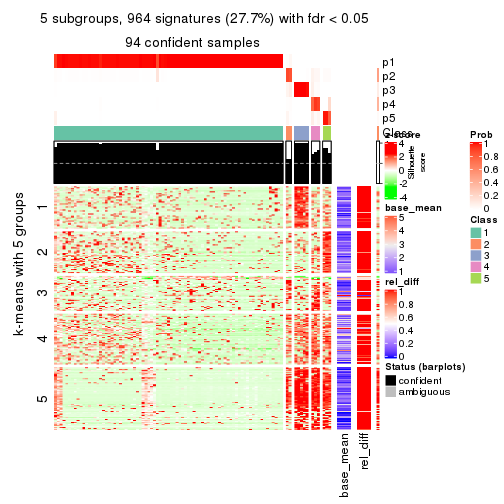
get_signatures(res, k = 6)
Signature heatmaps where rows are not scaled:
get_signatures(res, k = 2, scale_rows = FALSE)
get_signatures(res, k = 3, scale_rows = FALSE)
get_signatures(res, k = 4, scale_rows = FALSE)
get_signatures(res, k = 5, scale_rows = FALSE)
get_signatures(res, k = 6, scale_rows = FALSE)
Compare the overlap of signatures from different k:
compare_signatures(res)

get_signature() returns a data frame invisibly. TO get the list of signatures, the function
call should be assigned to a variable explicitly. In following code, if plot argument is set
to FALSE, no heatmap is plotted while only the differential analysis is performed.
# code only for demonstration
tb = get_signature(res, k = ..., plot = FALSE)
An example of the output of tb is:
#> which_row fdr mean_1 mean_2 scaled_mean_1 scaled_mean_2 km
#> 1 38 0.042760348 8.373488 9.131774 -0.5533452 0.5164555 1
#> 2 40 0.018707592 7.106213 8.469186 -0.6173731 0.5762149 1
#> 3 55 0.019134737 10.221463 11.207825 -0.6159697 0.5749050 1
#> 4 59 0.006059896 5.921854 7.869574 -0.6899429 0.6439467 1
#> 5 60 0.018055526 8.928898 10.211722 -0.6204761 0.5791110 1
#> 6 98 0.009384629 15.714769 14.887706 0.6635654 -0.6193277 2
...
The columns in tb are:
which_row: row indices corresponding to the input matrix.fdr: FDR for the differential test. mean_x: The mean value in group x.scaled_mean_x: The mean value in group x after rows are scaled.km: Row groups if k-means clustering is applied to rows.UMAP plot which shows how samples are separated.
dimension_reduction(res, k = 2, method = "UMAP")
dimension_reduction(res, k = 3, method = "UMAP")
dimension_reduction(res, k = 4, method = "UMAP")
dimension_reduction(res, k = 5, method = "UMAP")
dimension_reduction(res, k = 6, method = "UMAP")
Following heatmap shows how subgroups are split when increasing k:
collect_classes(res)
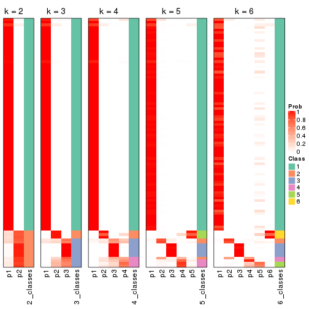
If matrix rows can be associated to genes, consider to use functional_enrichment(res,
...) to perform function enrichment for the signature genes. See this vignette for more detailed explanations.
The object with results only for a single top-value method and a single partition method can be extracted as:
res = res_list["CV", "kmeans"]
# you can also extract it by
# res = res_list["CV:kmeans"]
A summary of res and all the functions that can be applied to it:
res
#> A 'ConsensusPartition' object with k = 2, 3, 4, 5, 6.
#> On a matrix with 3475 rows and 95 columns.
#> Top rows (348, 696, 1043, 1390, 1738) are extracted by 'CV' method.
#> Subgroups are detected by 'kmeans' method.
#> Performed in total 1250 partitions by row resampling.
#> Best k for subgroups seems to be 3.
#>
#> Following methods can be applied to this 'ConsensusPartition' object:
#> [1] "cola_report" "collect_classes" "collect_plots"
#> [4] "collect_stats" "colnames" "compare_signatures"
#> [7] "consensus_heatmap" "dimension_reduction" "functional_enrichment"
#> [10] "get_anno_col" "get_anno" "get_classes"
#> [13] "get_consensus" "get_matrix" "get_membership"
#> [16] "get_param" "get_signatures" "get_stats"
#> [19] "is_best_k" "is_stable_k" "membership_heatmap"
#> [22] "ncol" "nrow" "plot_ecdf"
#> [25] "rownames" "select_partition_number" "show"
#> [28] "suggest_best_k" "test_to_known_factors"
collect_plots() function collects all the plots made from res for all k (number of partitions)
into one single page to provide an easy and fast comparison between different k.
collect_plots(res)
The plots are:
k and the heatmap of
predicted classes for each k.k.k.k.All the plots in panels can be made by individual functions and they are plotted later in this section.
select_partition_number() produces several plots showing different
statistics for choosing “optimized” k. There are following statistics:
k;k, the area increased is defined as \(A_k - A_{k-1}\).The detailed explanations of these statistics can be found in the cola vignette.
Generally speaking, lower PAC score, higher mean silhouette score or higher
concordance corresponds to better partition. Rand index and Jaccard index
measure how similar the current partition is compared to partition with k-1.
If they are too similar, we won't accept k is better than k-1.
select_partition_number(res)
The numeric values for all these statistics can be obtained by get_stats().
get_stats(res)
#> k 1-PAC mean_silhouette concordance area_increased Rand Jaccard
#> 2 2 0.537 0.704 0.860 0.4057 0.515 0.515
#> 3 3 0.882 0.918 0.938 0.4383 0.780 0.607
#> 4 4 0.783 0.771 0.864 0.1306 0.940 0.845
#> 5 5 0.770 0.771 0.840 0.0649 0.930 0.799
#> 6 6 0.797 0.708 0.796 0.0423 0.962 0.873
suggest_best_k() suggests the best \(k\) based on these statistics. The rules are as follows:
suggest_best_k(res)
#> [1] 3
Following shows the table of the partitions (You need to click the show/hide
code output link to see it). The membership matrix (columns with name p*)
is inferred by
clue::cl_consensus()
function with the SE method. Basically the value in the membership matrix
represents the probability to belong to a certain group. The finall class
label for an item is determined with the group with highest probability it
belongs to.
In get_classes() function, the entropy is calculated from the membership
matrix and the silhouette score is calculated from the consensus matrix.
cbind(get_classes(res, k = 2), get_membership(res, k = 2))
#> class entropy silhouette p1 p2
#> SRR2062258 1 0.5059 0.745 0.888 0.112
#> SRR2062259 1 0.0000 0.899 1.000 0.000
#> SRR2062270 2 0.0000 0.671 0.000 1.000
#> SRR2062342 2 0.9686 0.695 0.396 0.604
#> SRR2062341 1 0.0000 0.899 1.000 0.000
#> SRR2062340 2 0.9710 0.688 0.400 0.600
#> SRR2062339 1 0.0000 0.899 1.000 0.000
#> SRR2062348 1 0.0000 0.899 1.000 0.000
#> SRR2062347 2 0.9686 0.695 0.396 0.604
#> SRR2062351 1 0.0000 0.899 1.000 0.000
#> SRR2062350 1 0.0000 0.899 1.000 0.000
#> SRR2062349 2 0.9686 0.695 0.396 0.604
#> SRR2062346 1 0.0000 0.899 1.000 0.000
#> SRR2062345 2 0.9686 0.695 0.396 0.604
#> SRR2062344 2 0.0000 0.671 0.000 1.000
#> SRR2062343 2 0.9686 0.695 0.396 0.604
#> SRR2062354 1 0.0000 0.899 1.000 0.000
#> SRR2062353 2 0.9686 0.695 0.396 0.604
#> SRR2062352 1 0.0000 0.899 1.000 0.000
#> SRR2063021 1 0.0000 0.899 1.000 0.000
#> SRR2062356 1 0.0000 0.899 1.000 0.000
#> SRR2063025 2 0.9686 0.695 0.396 0.604
#> SRR2063027 1 0.0000 0.899 1.000 0.000
#> SRR2063023 2 0.8081 0.663 0.248 0.752
#> SRR2062355 2 0.9686 0.695 0.396 0.604
#> SRR2063030 1 0.0000 0.899 1.000 0.000
#> SRR2064285 1 0.0000 0.899 1.000 0.000
#> SRR2063034 1 0.0000 0.899 1.000 0.000
#> SRR2063032 1 0.0000 0.899 1.000 0.000
#> SRR2063031 1 0.0000 0.899 1.000 0.000
#> SRR2063029 2 0.9686 0.695 0.396 0.604
#> SRR2063028 1 0.0000 0.899 1.000 0.000
#> SRR2064308 2 0.0000 0.671 0.000 1.000
#> SRR2064310 1 0.0000 0.899 1.000 0.000
#> SRR2064312 1 0.0000 0.899 1.000 0.000
#> SRR2064314 2 0.9754 0.673 0.408 0.592
#> SRR2064315 1 0.0000 0.899 1.000 0.000
#> SRR2064317 2 0.9686 0.695 0.396 0.604
#> SRR2064318 1 0.0000 0.899 1.000 0.000
#> SRR2064319 1 0.0000 0.899 1.000 0.000
#> SRR2064320 1 0.9996 -0.423 0.512 0.488
#> SRR2064321 2 0.0000 0.671 0.000 1.000
#> SRR2064322 2 0.9686 0.695 0.396 0.604
#> SRR2064323 1 0.1633 0.871 0.976 0.024
#> SRR2064324 1 0.9996 -0.423 0.512 0.488
#> SRR2064325 1 0.0000 0.899 1.000 0.000
#> SRR2064326 1 0.0000 0.899 1.000 0.000
#> SRR2064327 2 0.0000 0.671 0.000 1.000
#> SRR2064329 1 0.0000 0.899 1.000 0.000
#> SRR2064328 2 0.9754 0.673 0.408 0.592
#> SRR2064330 1 0.9815 -0.194 0.580 0.420
#> SRR2064331 2 0.0000 0.671 0.000 1.000
#> SRR2064332 2 0.0000 0.671 0.000 1.000
#> SRR2064333 1 0.0000 0.899 1.000 0.000
#> SRR2064334 2 0.9686 0.695 0.396 0.604
#> SRR2064335 1 0.9850 -0.223 0.572 0.428
#> SRR2064436 1 0.0000 0.899 1.000 0.000
#> SRR2064457 1 0.0000 0.899 1.000 0.000
#> SRR2064458 1 0.0000 0.899 1.000 0.000
#> SRR2064459 2 0.0000 0.671 0.000 1.000
#> SRR2064460 1 0.0000 0.899 1.000 0.000
#> SRR2064461 2 0.9686 0.695 0.396 0.604
#> SRR2064462 1 0.0000 0.899 1.000 0.000
#> SRR2064534 2 0.9686 0.695 0.396 0.604
#> SRR2064535 2 0.0000 0.671 0.000 1.000
#> SRR2064536 2 0.0000 0.671 0.000 1.000
#> SRR2064537 1 0.0000 0.899 1.000 0.000
#> SRR2064538 1 0.0000 0.899 1.000 0.000
#> SRR2064539 2 0.0000 0.671 0.000 1.000
#> SRR2064540 1 0.0000 0.899 1.000 0.000
#> SRR2064541 1 0.9954 -0.335 0.540 0.460
#> SRR2064543 1 0.0000 0.899 1.000 0.000
#> SRR2064542 1 0.0000 0.899 1.000 0.000
#> SRR2064544 1 0.9922 -0.295 0.552 0.448
#> SRR2064545 1 0.9983 -0.386 0.524 0.476
#> SRR2064546 1 0.0000 0.899 1.000 0.000
#> SRR2064547 1 0.0000 0.899 1.000 0.000
#> SRR2064548 1 0.9993 -0.411 0.516 0.484
#> SRR2064550 2 0.9710 0.688 0.400 0.600
#> SRR2064549 1 0.0000 0.899 1.000 0.000
#> SRR2064551 2 0.9686 0.695 0.396 0.604
#> SRR2064552 1 0.0000 0.899 1.000 0.000
#> SRR2064553 2 0.0000 0.671 0.000 1.000
#> SRR2064554 1 0.0000 0.899 1.000 0.000
#> SRR2064555 2 0.0000 0.671 0.000 1.000
#> SRR2064556 1 0.0000 0.899 1.000 0.000
#> SRR2064559 2 0.9686 0.695 0.396 0.604
#> SRR2064558 2 0.0000 0.671 0.000 1.000
#> SRR2064557 2 0.9686 0.695 0.396 0.604
#> SRR2064560 1 0.0000 0.899 1.000 0.000
#> SRR2064561 1 0.0376 0.894 0.996 0.004
#> SRR2064562 1 0.0000 0.899 1.000 0.000
#> SRR2064564 1 0.0000 0.899 1.000 0.000
#> SRR2064563 2 0.9686 0.695 0.396 0.604
#> SRR2064565 2 0.9998 0.464 0.492 0.508
cbind(get_classes(res, k = 3), get_membership(res, k = 3))
#> class entropy silhouette p1 p2 p3
#> SRR2062258 2 0.6111 0.48946 0.396 0.604 0.000
#> SRR2062259 1 0.0000 0.98146 1.000 0.000 0.000
#> SRR2062270 3 0.1753 0.90091 0.000 0.048 0.952
#> SRR2062342 2 0.2625 0.95221 0.084 0.916 0.000
#> SRR2062341 1 0.0000 0.98146 1.000 0.000 0.000
#> SRR2062340 2 0.2625 0.95221 0.084 0.916 0.000
#> SRR2062339 1 0.0000 0.98146 1.000 0.000 0.000
#> SRR2062348 1 0.0000 0.98146 1.000 0.000 0.000
#> SRR2062347 2 0.2625 0.95221 0.084 0.916 0.000
#> SRR2062351 1 0.0000 0.98146 1.000 0.000 0.000
#> SRR2062350 1 0.0000 0.98146 1.000 0.000 0.000
#> SRR2062349 2 0.2625 0.95221 0.084 0.916 0.000
#> SRR2062346 1 0.0000 0.98146 1.000 0.000 0.000
#> SRR2062345 2 0.2625 0.95221 0.084 0.916 0.000
#> SRR2062344 3 0.1964 0.91186 0.000 0.056 0.944
#> SRR2062343 2 0.2625 0.95221 0.084 0.916 0.000
#> SRR2062354 1 0.0000 0.98146 1.000 0.000 0.000
#> SRR2062353 2 0.2625 0.95221 0.084 0.916 0.000
#> SRR2062352 1 0.0000 0.98146 1.000 0.000 0.000
#> SRR2063021 1 0.0237 0.97748 0.996 0.004 0.000
#> SRR2062356 1 0.0000 0.98146 1.000 0.000 0.000
#> SRR2063025 2 0.2625 0.95221 0.084 0.916 0.000
#> SRR2063027 1 0.0000 0.98146 1.000 0.000 0.000
#> SRR2063023 3 0.6275 0.45840 0.348 0.008 0.644
#> SRR2062355 3 0.9466 -0.00793 0.188 0.356 0.456
#> SRR2063030 1 0.0000 0.98146 1.000 0.000 0.000
#> SRR2064285 1 0.0000 0.98146 1.000 0.000 0.000
#> SRR2063034 1 0.0000 0.98146 1.000 0.000 0.000
#> SRR2063032 1 0.0000 0.98146 1.000 0.000 0.000
#> SRR2063031 1 0.0000 0.98146 1.000 0.000 0.000
#> SRR2063029 2 0.2625 0.95221 0.084 0.916 0.000
#> SRR2063028 1 0.0000 0.98146 1.000 0.000 0.000
#> SRR2064308 3 0.1031 0.91640 0.000 0.024 0.976
#> SRR2064310 1 0.1289 0.94842 0.968 0.032 0.000
#> SRR2064312 1 0.0000 0.98146 1.000 0.000 0.000
#> SRR2064314 2 0.2625 0.95221 0.084 0.916 0.000
#> SRR2064315 1 0.0000 0.98146 1.000 0.000 0.000
#> SRR2064317 2 0.2625 0.95221 0.084 0.916 0.000
#> SRR2064318 1 0.0000 0.98146 1.000 0.000 0.000
#> SRR2064319 1 0.0000 0.98146 1.000 0.000 0.000
#> SRR2064320 2 0.2625 0.95221 0.084 0.916 0.000
#> SRR2064321 3 0.0892 0.91692 0.000 0.020 0.980
#> SRR2064322 2 0.2625 0.95221 0.084 0.916 0.000
#> SRR2064323 1 0.4974 0.64793 0.764 0.236 0.000
#> SRR2064324 2 0.3686 0.90544 0.140 0.860 0.000
#> SRR2064325 1 0.0000 0.98146 1.000 0.000 0.000
#> SRR2064326 1 0.0000 0.98146 1.000 0.000 0.000
#> SRR2064327 3 0.1964 0.91186 0.000 0.056 0.944
#> SRR2064329 1 0.0000 0.98146 1.000 0.000 0.000
#> SRR2064328 2 0.2625 0.95221 0.084 0.916 0.000
#> SRR2064330 2 0.3412 0.92127 0.124 0.876 0.000
#> SRR2064331 3 0.1964 0.91186 0.000 0.056 0.944
#> SRR2064332 3 0.0592 0.91746 0.000 0.012 0.988
#> SRR2064333 1 0.0000 0.98146 1.000 0.000 0.000
#> SRR2064334 2 0.2625 0.95221 0.084 0.916 0.000
#> SRR2064335 2 0.4235 0.86468 0.176 0.824 0.000
#> SRR2064436 1 0.0000 0.98146 1.000 0.000 0.000
#> SRR2064457 1 0.0000 0.98146 1.000 0.000 0.000
#> SRR2064458 1 0.4796 0.67933 0.780 0.220 0.000
#> SRR2064459 3 0.0424 0.91739 0.000 0.008 0.992
#> SRR2064460 1 0.0000 0.98146 1.000 0.000 0.000
#> SRR2064461 2 0.2625 0.95221 0.084 0.916 0.000
#> SRR2064462 1 0.0000 0.98146 1.000 0.000 0.000
#> SRR2064534 2 0.2625 0.95221 0.084 0.916 0.000
#> SRR2064535 3 0.1964 0.91186 0.000 0.056 0.944
#> SRR2064536 3 0.1031 0.91640 0.000 0.024 0.976
#> SRR2064537 1 0.0000 0.98146 1.000 0.000 0.000
#> SRR2064538 1 0.0000 0.98146 1.000 0.000 0.000
#> SRR2064539 3 0.1031 0.91640 0.000 0.024 0.976
#> SRR2064540 1 0.0000 0.98146 1.000 0.000 0.000
#> SRR2064541 2 0.4452 0.84424 0.192 0.808 0.000
#> SRR2064543 1 0.0000 0.98146 1.000 0.000 0.000
#> SRR2064542 1 0.0000 0.98146 1.000 0.000 0.000
#> SRR2064544 2 0.3340 0.92433 0.120 0.880 0.000
#> SRR2064545 2 0.3551 0.91377 0.132 0.868 0.000
#> SRR2064546 1 0.0000 0.98146 1.000 0.000 0.000
#> SRR2064547 1 0.0000 0.98146 1.000 0.000 0.000
#> SRR2064548 2 0.2711 0.94943 0.088 0.912 0.000
#> SRR2064550 2 0.9252 0.18640 0.156 0.448 0.396
#> SRR2064549 1 0.0000 0.98146 1.000 0.000 0.000
#> SRR2064551 2 0.2625 0.95221 0.084 0.916 0.000
#> SRR2064552 1 0.0000 0.98146 1.000 0.000 0.000
#> SRR2064553 3 0.0000 0.91761 0.000 0.000 1.000
#> SRR2064554 1 0.0000 0.98146 1.000 0.000 0.000
#> SRR2064555 3 0.0892 0.91692 0.000 0.020 0.980
#> SRR2064556 1 0.0000 0.98146 1.000 0.000 0.000
#> SRR2064559 2 0.2625 0.95221 0.084 0.916 0.000
#> SRR2064558 3 0.1964 0.91186 0.000 0.056 0.944
#> SRR2064557 2 0.2625 0.95221 0.084 0.916 0.000
#> SRR2064560 1 0.0000 0.98146 1.000 0.000 0.000
#> SRR2064561 1 0.5178 0.60614 0.744 0.256 0.000
#> SRR2064562 1 0.0000 0.98146 1.000 0.000 0.000
#> SRR2064564 1 0.0000 0.98146 1.000 0.000 0.000
#> SRR2064563 2 0.2625 0.95221 0.084 0.916 0.000
#> SRR2064565 2 0.2625 0.95221 0.084 0.916 0.000
cbind(get_classes(res, k = 4), get_membership(res, k = 4))
#> class entropy silhouette p1 p2 p3 p4
#> SRR2062258 4 0.7401 0.42225 0.188 0.316 0.000 0.496
#> SRR2062259 1 0.0000 0.94878 1.000 0.000 0.000 0.000
#> SRR2062270 3 0.1767 0.84861 0.000 0.044 0.944 0.012
#> SRR2062342 2 0.1635 0.79068 0.008 0.948 0.000 0.044
#> SRR2062341 1 0.0000 0.94878 1.000 0.000 0.000 0.000
#> SRR2062340 2 0.2546 0.79939 0.008 0.900 0.000 0.092
#> SRR2062339 1 0.0000 0.94878 1.000 0.000 0.000 0.000
#> SRR2062348 1 0.0000 0.94878 1.000 0.000 0.000 0.000
#> SRR2062347 2 0.2048 0.80564 0.008 0.928 0.000 0.064
#> SRR2062351 1 0.0000 0.94878 1.000 0.000 0.000 0.000
#> SRR2062350 1 0.0000 0.94878 1.000 0.000 0.000 0.000
#> SRR2062349 2 0.1356 0.80634 0.008 0.960 0.000 0.032
#> SRR2062346 1 0.0000 0.94878 1.000 0.000 0.000 0.000
#> SRR2062345 2 0.1545 0.79194 0.008 0.952 0.000 0.040
#> SRR2062344 3 0.4304 0.83065 0.000 0.000 0.716 0.284
#> SRR2062343 2 0.1722 0.79457 0.008 0.944 0.000 0.048
#> SRR2062354 1 0.0000 0.94878 1.000 0.000 0.000 0.000
#> SRR2062353 2 0.3768 0.74833 0.008 0.808 0.000 0.184
#> SRR2062352 1 0.0000 0.94878 1.000 0.000 0.000 0.000
#> SRR2063021 1 0.5040 0.20855 0.628 0.008 0.000 0.364
#> SRR2062356 1 0.0000 0.94878 1.000 0.000 0.000 0.000
#> SRR2063025 2 0.2048 0.79513 0.008 0.928 0.000 0.064
#> SRR2063027 1 0.0000 0.94878 1.000 0.000 0.000 0.000
#> SRR2063023 4 0.8127 0.18288 0.232 0.012 0.360 0.396
#> SRR2062355 4 0.9062 0.39352 0.088 0.264 0.212 0.436
#> SRR2063030 1 0.0000 0.94878 1.000 0.000 0.000 0.000
#> SRR2064285 1 0.0000 0.94878 1.000 0.000 0.000 0.000
#> SRR2063034 1 0.0000 0.94878 1.000 0.000 0.000 0.000
#> SRR2063032 1 0.2011 0.86102 0.920 0.000 0.000 0.080
#> SRR2063031 1 0.0000 0.94878 1.000 0.000 0.000 0.000
#> SRR2063029 2 0.3768 0.74854 0.008 0.808 0.000 0.184
#> SRR2063028 1 0.0000 0.94878 1.000 0.000 0.000 0.000
#> SRR2064308 3 0.3024 0.82840 0.000 0.000 0.852 0.148
#> SRR2064310 1 0.5581 -0.19778 0.532 0.020 0.000 0.448
#> SRR2064312 1 0.0000 0.94878 1.000 0.000 0.000 0.000
#> SRR2064314 2 0.2546 0.80279 0.008 0.900 0.000 0.092
#> SRR2064315 1 0.0000 0.94878 1.000 0.000 0.000 0.000
#> SRR2064317 2 0.1545 0.79258 0.008 0.952 0.000 0.040
#> SRR2064318 1 0.0000 0.94878 1.000 0.000 0.000 0.000
#> SRR2064319 1 0.0000 0.94878 1.000 0.000 0.000 0.000
#> SRR2064320 2 0.3498 0.76420 0.008 0.832 0.000 0.160
#> SRR2064321 3 0.0188 0.87095 0.000 0.000 0.996 0.004
#> SRR2064322 2 0.1042 0.80645 0.008 0.972 0.000 0.020
#> SRR2064323 4 0.7107 0.52947 0.408 0.128 0.000 0.464
#> SRR2064324 2 0.5848 0.36090 0.040 0.584 0.000 0.376
#> SRR2064325 1 0.0000 0.94878 1.000 0.000 0.000 0.000
#> SRR2064326 1 0.4134 0.54915 0.740 0.000 0.000 0.260
#> SRR2064327 3 0.4304 0.83065 0.000 0.000 0.716 0.284
#> SRR2064329 1 0.0000 0.94878 1.000 0.000 0.000 0.000
#> SRR2064328 2 0.3545 0.76261 0.008 0.828 0.000 0.164
#> SRR2064330 4 0.5697 -0.21793 0.024 0.488 0.000 0.488
#> SRR2064331 3 0.4304 0.83065 0.000 0.000 0.716 0.284
#> SRR2064332 3 0.1305 0.86915 0.000 0.004 0.960 0.036
#> SRR2064333 1 0.0000 0.94878 1.000 0.000 0.000 0.000
#> SRR2064334 2 0.2546 0.80065 0.008 0.900 0.000 0.092
#> SRR2064335 2 0.6262 0.23919 0.060 0.540 0.000 0.400
#> SRR2064436 1 0.0000 0.94878 1.000 0.000 0.000 0.000
#> SRR2064457 1 0.0000 0.94878 1.000 0.000 0.000 0.000
#> SRR2064458 4 0.7221 0.49522 0.424 0.140 0.000 0.436
#> SRR2064459 3 0.2271 0.86848 0.000 0.008 0.916 0.076
#> SRR2064460 1 0.0000 0.94878 1.000 0.000 0.000 0.000
#> SRR2064461 2 0.1807 0.80690 0.008 0.940 0.000 0.052
#> SRR2064462 1 0.0000 0.94878 1.000 0.000 0.000 0.000
#> SRR2064534 2 0.1545 0.79194 0.008 0.952 0.000 0.040
#> SRR2064535 3 0.4304 0.83065 0.000 0.000 0.716 0.284
#> SRR2064536 3 0.3024 0.82840 0.000 0.000 0.852 0.148
#> SRR2064537 1 0.3172 0.74935 0.840 0.000 0.000 0.160
#> SRR2064538 1 0.0000 0.94878 1.000 0.000 0.000 0.000
#> SRR2064539 3 0.3024 0.82840 0.000 0.000 0.852 0.148
#> SRR2064540 1 0.0000 0.94878 1.000 0.000 0.000 0.000
#> SRR2064541 2 0.6371 0.39714 0.092 0.608 0.000 0.300
#> SRR2064543 1 0.0000 0.94878 1.000 0.000 0.000 0.000
#> SRR2064542 1 0.0000 0.94878 1.000 0.000 0.000 0.000
#> SRR2064544 2 0.6149 0.00541 0.048 0.476 0.000 0.476
#> SRR2064545 2 0.4706 0.65271 0.028 0.748 0.000 0.224
#> SRR2064546 1 0.0000 0.94878 1.000 0.000 0.000 0.000
#> SRR2064547 1 0.0000 0.94878 1.000 0.000 0.000 0.000
#> SRR2064548 2 0.5203 0.48816 0.016 0.636 0.000 0.348
#> SRR2064550 4 0.8514 0.24130 0.048 0.340 0.176 0.436
#> SRR2064549 1 0.3219 0.74304 0.836 0.000 0.000 0.164
#> SRR2064551 2 0.1545 0.79258 0.008 0.952 0.000 0.040
#> SRR2064552 1 0.0000 0.94878 1.000 0.000 0.000 0.000
#> SRR2064553 3 0.1722 0.87284 0.000 0.008 0.944 0.048
#> SRR2064554 1 0.3870 0.65613 0.788 0.004 0.000 0.208
#> SRR2064555 3 0.0188 0.87095 0.000 0.000 0.996 0.004
#> SRR2064556 1 0.0000 0.94878 1.000 0.000 0.000 0.000
#> SRR2064559 2 0.1722 0.79141 0.008 0.944 0.000 0.048
#> SRR2064558 3 0.4304 0.83065 0.000 0.000 0.716 0.284
#> SRR2064557 2 0.1807 0.80628 0.008 0.940 0.000 0.052
#> SRR2064560 1 0.0000 0.94878 1.000 0.000 0.000 0.000
#> SRR2064561 4 0.7307 0.58274 0.376 0.156 0.000 0.468
#> SRR2064562 1 0.0000 0.94878 1.000 0.000 0.000 0.000
#> SRR2064564 1 0.0000 0.94878 1.000 0.000 0.000 0.000
#> SRR2064563 2 0.1452 0.79595 0.008 0.956 0.000 0.036
#> SRR2064565 2 0.5183 0.39615 0.008 0.584 0.000 0.408
cbind(get_classes(res, k = 5), get_membership(res, k = 5))
#> class entropy silhouette p1 p2 p3 p4 p5
#> SRR2062258 5 0.3752 0.6603 0.072 0.092 0.008 0.000 0.828
#> SRR2062259 1 0.0000 0.9481 1.000 0.000 0.000 0.000 0.000
#> SRR2062270 3 0.5744 0.7258 0.000 0.060 0.532 0.396 0.012
#> SRR2062342 2 0.3167 0.7622 0.008 0.836 0.148 0.000 0.008
#> SRR2062341 1 0.0510 0.9447 0.984 0.000 0.016 0.000 0.000
#> SRR2062340 2 0.3725 0.7562 0.008 0.816 0.036 0.000 0.140
#> SRR2062339 1 0.0794 0.9395 0.972 0.000 0.028 0.000 0.000
#> SRR2062348 1 0.0290 0.9472 0.992 0.000 0.008 0.000 0.000
#> SRR2062347 2 0.3412 0.7678 0.008 0.848 0.048 0.000 0.096
#> SRR2062351 1 0.0162 0.9477 0.996 0.000 0.004 0.000 0.000
#> SRR2062350 1 0.0404 0.9468 0.988 0.000 0.012 0.000 0.000
#> SRR2062349 2 0.2364 0.7804 0.008 0.908 0.020 0.000 0.064
#> SRR2062346 1 0.0000 0.9481 1.000 0.000 0.000 0.000 0.000
#> SRR2062345 2 0.2843 0.7648 0.008 0.848 0.144 0.000 0.000
#> SRR2062344 4 0.0000 1.0000 0.000 0.000 0.000 1.000 0.000
#> SRR2062343 2 0.3201 0.7785 0.008 0.844 0.132 0.000 0.016
#> SRR2062354 1 0.0000 0.9481 1.000 0.000 0.000 0.000 0.000
#> SRR2062353 2 0.5381 0.5999 0.008 0.656 0.080 0.000 0.256
#> SRR2062352 1 0.0000 0.9481 1.000 0.000 0.000 0.000 0.000
#> SRR2063021 5 0.4676 0.3975 0.392 0.004 0.012 0.000 0.592
#> SRR2062356 1 0.0000 0.9481 1.000 0.000 0.000 0.000 0.000
#> SRR2063025 2 0.3774 0.7675 0.008 0.808 0.152 0.000 0.032
#> SRR2063027 1 0.0162 0.9475 0.996 0.000 0.004 0.000 0.000
#> SRR2063023 5 0.7113 0.3741 0.100 0.000 0.216 0.124 0.560
#> SRR2062355 5 0.4903 0.6158 0.044 0.012 0.148 0.032 0.764
#> SRR2063030 1 0.0290 0.9472 0.992 0.000 0.008 0.000 0.000
#> SRR2064285 1 0.0703 0.9404 0.976 0.000 0.024 0.000 0.000
#> SRR2063034 1 0.0290 0.9472 0.992 0.000 0.008 0.000 0.000
#> SRR2063032 1 0.3123 0.7300 0.812 0.000 0.004 0.000 0.184
#> SRR2063031 1 0.0290 0.9468 0.992 0.000 0.008 0.000 0.000
#> SRR2063029 2 0.5436 0.6091 0.008 0.656 0.088 0.000 0.248
#> SRR2063028 1 0.0000 0.9481 1.000 0.000 0.000 0.000 0.000
#> SRR2064308 3 0.5906 0.6869 0.000 0.004 0.564 0.324 0.108
#> SRR2064310 5 0.3561 0.6181 0.260 0.000 0.000 0.000 0.740
#> SRR2064312 1 0.0000 0.9481 1.000 0.000 0.000 0.000 0.000
#> SRR2064314 2 0.3740 0.7607 0.008 0.820 0.044 0.000 0.128
#> SRR2064315 1 0.0162 0.9477 0.996 0.000 0.004 0.000 0.000
#> SRR2064317 2 0.2563 0.7733 0.008 0.872 0.120 0.000 0.000
#> SRR2064318 1 0.0162 0.9475 0.996 0.000 0.004 0.000 0.000
#> SRR2064319 1 0.0510 0.9443 0.984 0.000 0.016 0.000 0.000
#> SRR2064320 2 0.4576 0.6247 0.008 0.712 0.032 0.000 0.248
#> SRR2064321 3 0.5170 0.7668 0.000 0.004 0.524 0.440 0.032
#> SRR2064322 2 0.2661 0.7850 0.008 0.896 0.044 0.000 0.052
#> SRR2064323 5 0.3891 0.6719 0.172 0.028 0.008 0.000 0.792
#> SRR2064324 5 0.5287 0.4745 0.028 0.292 0.032 0.000 0.648
#> SRR2064325 1 0.0290 0.9470 0.992 0.000 0.008 0.000 0.000
#> SRR2064326 1 0.4632 0.0510 0.540 0.000 0.012 0.000 0.448
#> SRR2064327 4 0.0000 1.0000 0.000 0.000 0.000 1.000 0.000
#> SRR2064329 1 0.0000 0.9481 1.000 0.000 0.000 0.000 0.000
#> SRR2064328 2 0.4644 0.6498 0.008 0.716 0.040 0.000 0.236
#> SRR2064330 5 0.5121 0.5661 0.024 0.212 0.056 0.000 0.708
#> SRR2064331 4 0.0000 1.0000 0.000 0.000 0.000 1.000 0.000
#> SRR2064332 3 0.5137 0.7496 0.000 0.000 0.536 0.424 0.040
#> SRR2064333 1 0.0000 0.9481 1.000 0.000 0.000 0.000 0.000
#> SRR2064334 2 0.4139 0.7485 0.008 0.796 0.068 0.000 0.128
#> SRR2064335 5 0.6063 0.3795 0.032 0.324 0.068 0.000 0.576
#> SRR2064436 1 0.0510 0.9447 0.984 0.000 0.016 0.000 0.000
#> SRR2064457 1 0.0162 0.9477 0.996 0.000 0.004 0.000 0.000
#> SRR2064458 5 0.4523 0.6258 0.252 0.028 0.008 0.000 0.712
#> SRR2064459 3 0.5230 0.7102 0.000 0.000 0.504 0.452 0.044
#> SRR2064460 1 0.0000 0.9481 1.000 0.000 0.000 0.000 0.000
#> SRR2064461 2 0.3241 0.7728 0.008 0.856 0.036 0.000 0.100
#> SRR2064462 1 0.0162 0.9475 0.996 0.000 0.004 0.000 0.000
#> SRR2064534 2 0.3124 0.7667 0.008 0.840 0.144 0.000 0.008
#> SRR2064535 4 0.0000 1.0000 0.000 0.000 0.000 1.000 0.000
#> SRR2064536 3 0.6099 0.6850 0.000 0.008 0.552 0.324 0.116
#> SRR2064537 1 0.4152 0.5113 0.692 0.000 0.012 0.000 0.296
#> SRR2064538 1 0.0000 0.9481 1.000 0.000 0.000 0.000 0.000
#> SRR2064539 3 0.5947 0.6863 0.000 0.004 0.560 0.324 0.112
#> SRR2064540 1 0.0404 0.9455 0.988 0.000 0.012 0.000 0.000
#> SRR2064541 2 0.5732 -0.0749 0.048 0.468 0.016 0.000 0.468
#> SRR2064543 1 0.0162 0.9477 0.996 0.000 0.004 0.000 0.000
#> SRR2064542 1 0.0290 0.9470 0.992 0.000 0.008 0.000 0.000
#> SRR2064544 5 0.4597 0.5986 0.028 0.180 0.036 0.000 0.756
#> SRR2064545 2 0.6065 0.3008 0.020 0.516 0.072 0.000 0.392
#> SRR2064546 1 0.0404 0.9455 0.988 0.000 0.012 0.000 0.000
#> SRR2064547 1 0.0404 0.9457 0.988 0.000 0.012 0.000 0.000
#> SRR2064548 5 0.5041 0.2816 0.012 0.380 0.020 0.000 0.588
#> SRR2064550 5 0.5080 0.6257 0.028 0.036 0.144 0.032 0.760
#> SRR2064549 1 0.4339 0.5047 0.684 0.000 0.020 0.000 0.296
#> SRR2064551 2 0.3170 0.7681 0.008 0.828 0.160 0.000 0.004
#> SRR2064552 1 0.0000 0.9481 1.000 0.000 0.000 0.000 0.000
#> SRR2064553 3 0.4894 0.7484 0.000 0.000 0.520 0.456 0.024
#> SRR2064554 1 0.4517 0.2669 0.600 0.000 0.012 0.000 0.388
#> SRR2064555 3 0.5170 0.7668 0.000 0.004 0.524 0.440 0.032
#> SRR2064556 1 0.0290 0.9470 0.992 0.000 0.008 0.000 0.000
#> SRR2064559 2 0.3234 0.7640 0.008 0.836 0.144 0.000 0.012
#> SRR2064558 4 0.0000 1.0000 0.000 0.000 0.000 1.000 0.000
#> SRR2064557 2 0.2968 0.7735 0.008 0.872 0.028 0.000 0.092
#> SRR2064560 1 0.0404 0.9468 0.988 0.000 0.012 0.000 0.000
#> SRR2064561 5 0.3897 0.6606 0.204 0.028 0.000 0.000 0.768
#> SRR2064562 1 0.0609 0.9424 0.980 0.000 0.020 0.000 0.000
#> SRR2064564 1 0.0162 0.9475 0.996 0.000 0.004 0.000 0.000
#> SRR2064563 2 0.2989 0.7755 0.008 0.852 0.132 0.000 0.008
#> SRR2064565 5 0.5346 0.3897 0.008 0.316 0.056 0.000 0.620
cbind(get_classes(res, k = 6), get_membership(res, k = 6))
#> class entropy silhouette p1 p2 p3 p4 p5 p6
#> SRR2062258 5 0.3245 0.62983 0.008 0.072 0.032 0.032 0.856 0.000
#> SRR2062259 1 0.0146 0.94281 0.996 0.000 0.000 0.004 0.000 0.000
#> SRR2062270 3 0.6018 0.69886 0.000 0.048 0.612 0.072 0.028 0.240
#> SRR2062342 4 0.3717 0.89689 0.000 0.384 0.000 0.616 0.000 0.000
#> SRR2062341 1 0.0622 0.93591 0.980 0.000 0.008 0.012 0.000 0.000
#> SRR2062340 2 0.4710 0.46276 0.000 0.716 0.028 0.180 0.076 0.000
#> SRR2062339 1 0.0717 0.93400 0.976 0.000 0.008 0.016 0.000 0.000
#> SRR2062348 1 0.0000 0.94362 1.000 0.000 0.000 0.000 0.000 0.000
#> SRR2062347 2 0.2933 0.57935 0.000 0.860 0.016 0.092 0.032 0.000
#> SRR2062351 1 0.0146 0.94281 0.996 0.000 0.000 0.004 0.000 0.000
#> SRR2062350 1 0.0405 0.94007 0.988 0.000 0.004 0.008 0.000 0.000
#> SRR2062349 2 0.1686 0.54817 0.000 0.924 0.012 0.064 0.000 0.000
#> SRR2062346 1 0.0000 0.94362 1.000 0.000 0.000 0.000 0.000 0.000
#> SRR2062345 4 0.4209 0.90000 0.000 0.396 0.012 0.588 0.004 0.000
#> SRR2062344 6 0.0000 0.99811 0.000 0.000 0.000 0.000 0.000 1.000
#> SRR2062343 2 0.4563 -0.63897 0.000 0.524 0.012 0.448 0.016 0.000
#> SRR2062354 1 0.0000 0.94362 1.000 0.000 0.000 0.000 0.000 0.000
#> SRR2062353 2 0.3630 0.61295 0.000 0.804 0.016 0.044 0.136 0.000
#> SRR2062352 1 0.0000 0.94362 1.000 0.000 0.000 0.000 0.000 0.000
#> SRR2063021 5 0.4546 0.40208 0.356 0.004 0.028 0.004 0.608 0.000
#> SRR2062356 1 0.0000 0.94362 1.000 0.000 0.000 0.000 0.000 0.000
#> SRR2063025 4 0.4587 0.84849 0.000 0.372 0.004 0.588 0.036 0.000
#> SRR2063027 1 0.0000 0.94362 1.000 0.000 0.000 0.000 0.000 0.000
#> SRR2063023 5 0.6946 0.35580 0.040 0.000 0.252 0.104 0.528 0.076
#> SRR2062355 5 0.5664 0.54337 0.016 0.028 0.204 0.044 0.672 0.036
#> SRR2063030 1 0.0405 0.93994 0.988 0.000 0.008 0.004 0.000 0.000
#> SRR2064285 1 0.0291 0.94143 0.992 0.000 0.004 0.004 0.000 0.000
#> SRR2063034 1 0.0146 0.94270 0.996 0.000 0.000 0.004 0.000 0.000
#> SRR2063032 1 0.3243 0.69319 0.780 0.000 0.008 0.004 0.208 0.000
#> SRR2063031 1 0.0000 0.94362 1.000 0.000 0.000 0.000 0.000 0.000
#> SRR2063029 2 0.4205 0.59700 0.000 0.768 0.032 0.056 0.144 0.000
#> SRR2063028 1 0.0291 0.94183 0.992 0.000 0.004 0.004 0.000 0.000
#> SRR2064308 3 0.5947 0.63570 0.000 0.000 0.612 0.152 0.064 0.172
#> SRR2064310 5 0.2572 0.63314 0.136 0.012 0.000 0.000 0.852 0.000
#> SRR2064312 1 0.0000 0.94362 1.000 0.000 0.000 0.000 0.000 0.000
#> SRR2064314 2 0.2908 0.59293 0.000 0.864 0.012 0.076 0.048 0.000
#> SRR2064315 1 0.0146 0.94281 0.996 0.000 0.000 0.004 0.000 0.000
#> SRR2064317 4 0.3975 0.85717 0.000 0.452 0.004 0.544 0.000 0.000
#> SRR2064318 1 0.0146 0.94270 0.996 0.000 0.000 0.004 0.000 0.000
#> SRR2064319 1 0.0146 0.94278 0.996 0.000 0.000 0.004 0.000 0.000
#> SRR2064320 2 0.4926 0.53052 0.000 0.696 0.020 0.124 0.160 0.000
#> SRR2064321 3 0.3915 0.73473 0.000 0.000 0.692 0.016 0.004 0.288
#> SRR2064322 2 0.3724 0.43868 0.000 0.780 0.020 0.176 0.024 0.000
#> SRR2064323 5 0.2774 0.65516 0.076 0.040 0.012 0.000 0.872 0.000
#> SRR2064324 5 0.6112 0.35974 0.012 0.324 0.056 0.068 0.540 0.000
#> SRR2064325 1 0.0146 0.94278 0.996 0.000 0.000 0.004 0.000 0.000
#> SRR2064326 1 0.4471 -0.00455 0.500 0.000 0.028 0.000 0.472 0.000
#> SRR2064327 6 0.0000 0.99811 0.000 0.000 0.000 0.000 0.000 1.000
#> SRR2064329 1 0.0000 0.94362 1.000 0.000 0.000 0.000 0.000 0.000
#> SRR2064328 2 0.2851 0.62026 0.000 0.844 0.004 0.020 0.132 0.000
#> SRR2064330 5 0.5088 0.46004 0.008 0.284 0.036 0.032 0.640 0.000
#> SRR2064331 6 0.0146 0.99716 0.000 0.000 0.000 0.004 0.000 0.996
#> SRR2064332 3 0.5144 0.70026 0.000 0.000 0.632 0.088 0.016 0.264
#> SRR2064333 1 0.0000 0.94362 1.000 0.000 0.000 0.000 0.000 0.000
#> SRR2064334 2 0.4192 0.57426 0.000 0.776 0.028 0.108 0.088 0.000
#> SRR2064335 2 0.5189 0.11869 0.016 0.536 0.012 0.032 0.404 0.000
#> SRR2064436 1 0.0622 0.93591 0.980 0.000 0.008 0.012 0.000 0.000
#> SRR2064457 1 0.0000 0.94362 1.000 0.000 0.000 0.000 0.000 0.000
#> SRR2064458 5 0.3725 0.60137 0.172 0.048 0.000 0.004 0.776 0.000
#> SRR2064459 3 0.5343 0.67789 0.000 0.000 0.604 0.100 0.016 0.280
#> SRR2064460 1 0.0000 0.94362 1.000 0.000 0.000 0.000 0.000 0.000
#> SRR2064461 2 0.2401 0.59157 0.000 0.892 0.004 0.060 0.044 0.000
#> SRR2064462 1 0.0146 0.94270 0.996 0.000 0.000 0.004 0.000 0.000
#> SRR2064534 4 0.4344 0.88634 0.000 0.412 0.012 0.568 0.008 0.000
#> SRR2064535 6 0.0146 0.99716 0.000 0.000 0.000 0.004 0.000 0.996
#> SRR2064536 3 0.6037 0.63169 0.000 0.000 0.600 0.164 0.064 0.172
#> SRR2064537 1 0.4289 0.35488 0.612 0.000 0.028 0.000 0.360 0.000
#> SRR2064538 1 0.0000 0.94362 1.000 0.000 0.000 0.000 0.000 0.000
#> SRR2064539 3 0.5978 0.63427 0.000 0.000 0.608 0.156 0.064 0.172
#> SRR2064540 1 0.0000 0.94362 1.000 0.000 0.000 0.000 0.000 0.000
#> SRR2064541 2 0.5416 0.20384 0.032 0.560 0.024 0.020 0.364 0.000
#> SRR2064543 1 0.0000 0.94362 1.000 0.000 0.000 0.000 0.000 0.000
#> SRR2064542 1 0.0260 0.94123 0.992 0.000 0.000 0.008 0.000 0.000
#> SRR2064544 5 0.4518 0.56630 0.008 0.180 0.036 0.036 0.740 0.000
#> SRR2064545 5 0.6703 -0.02906 0.004 0.260 0.032 0.276 0.428 0.000
#> SRR2064546 1 0.0146 0.94278 0.996 0.000 0.000 0.004 0.000 0.000
#> SRR2064547 1 0.0405 0.93968 0.988 0.000 0.004 0.008 0.000 0.000
#> SRR2064548 5 0.5876 0.28813 0.004 0.284 0.016 0.144 0.552 0.000
#> SRR2064550 5 0.5463 0.58052 0.016 0.048 0.188 0.020 0.692 0.036
#> SRR2064549 1 0.4241 0.34446 0.608 0.000 0.024 0.000 0.368 0.000
#> SRR2064551 4 0.4336 0.86258 0.000 0.408 0.012 0.572 0.008 0.000
#> SRR2064552 1 0.0000 0.94362 1.000 0.000 0.000 0.000 0.000 0.000
#> SRR2064553 3 0.5479 0.71897 0.000 0.000 0.588 0.092 0.024 0.296
#> SRR2064554 1 0.4439 0.14363 0.540 0.000 0.028 0.000 0.432 0.000
#> SRR2064555 3 0.3915 0.73435 0.000 0.000 0.692 0.016 0.004 0.288
#> SRR2064556 1 0.0000 0.94362 1.000 0.000 0.000 0.000 0.000 0.000
#> SRR2064559 4 0.4193 0.89183 0.000 0.384 0.008 0.600 0.008 0.000
#> SRR2064558 6 0.0000 0.99811 0.000 0.000 0.000 0.000 0.000 1.000
#> SRR2064557 2 0.2322 0.58521 0.000 0.896 0.008 0.072 0.024 0.000
#> SRR2064560 1 0.0622 0.93588 0.980 0.000 0.008 0.012 0.000 0.000
#> SRR2064561 5 0.3041 0.65524 0.072 0.044 0.012 0.008 0.864 0.000
#> SRR2064562 1 0.0146 0.94281 0.996 0.000 0.000 0.004 0.000 0.000
#> SRR2064564 1 0.0291 0.94183 0.992 0.000 0.004 0.004 0.000 0.000
#> SRR2064563 2 0.4602 -0.73716 0.000 0.492 0.028 0.476 0.004 0.000
#> SRR2064565 5 0.4910 0.28573 0.000 0.360 0.020 0.036 0.584 0.000
Heatmaps for the consensus matrix. It visualizes the probability of two samples to be in a same group.
consensus_heatmap(res, k = 2)
consensus_heatmap(res, k = 3)
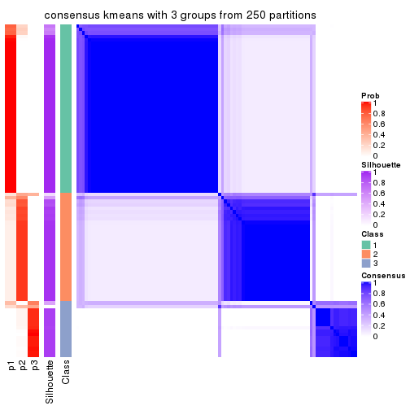
consensus_heatmap(res, k = 4)
consensus_heatmap(res, k = 5)

consensus_heatmap(res, k = 6)
Heatmaps for the membership of samples in all partitions to see how consistent they are:
membership_heatmap(res, k = 2)
membership_heatmap(res, k = 3)
membership_heatmap(res, k = 4)
membership_heatmap(res, k = 5)
membership_heatmap(res, k = 6)
As soon as we have had the classes for columns, we can look for signatures which are significantly different between classes which can be candidate marks for certain classes. Following are the heatmaps for signatures.
Signature heatmaps where rows are scaled:
get_signatures(res, k = 2)
get_signatures(res, k = 3)
get_signatures(res, k = 4)
get_signatures(res, k = 5)
get_signatures(res, k = 6)
Signature heatmaps where rows are not scaled:
get_signatures(res, k = 2, scale_rows = FALSE)
get_signatures(res, k = 3, scale_rows = FALSE)
get_signatures(res, k = 4, scale_rows = FALSE)
get_signatures(res, k = 5, scale_rows = FALSE)
get_signatures(res, k = 6, scale_rows = FALSE)
Compare the overlap of signatures from different k:
compare_signatures(res)
get_signature() returns a data frame invisibly. TO get the list of signatures, the function
call should be assigned to a variable explicitly. In following code, if plot argument is set
to FALSE, no heatmap is plotted while only the differential analysis is performed.
# code only for demonstration
tb = get_signature(res, k = ..., plot = FALSE)
An example of the output of tb is:
#> which_row fdr mean_1 mean_2 scaled_mean_1 scaled_mean_2 km
#> 1 38 0.042760348 8.373488 9.131774 -0.5533452 0.5164555 1
#> 2 40 0.018707592 7.106213 8.469186 -0.6173731 0.5762149 1
#> 3 55 0.019134737 10.221463 11.207825 -0.6159697 0.5749050 1
#> 4 59 0.006059896 5.921854 7.869574 -0.6899429 0.6439467 1
#> 5 60 0.018055526 8.928898 10.211722 -0.6204761 0.5791110 1
#> 6 98 0.009384629 15.714769 14.887706 0.6635654 -0.6193277 2
...
The columns in tb are:
which_row: row indices corresponding to the input matrix.fdr: FDR for the differential test. mean_x: The mean value in group x.scaled_mean_x: The mean value in group x after rows are scaled.km: Row groups if k-means clustering is applied to rows.UMAP plot which shows how samples are separated.
dimension_reduction(res, k = 2, method = "UMAP")
dimension_reduction(res, k = 3, method = "UMAP")
dimension_reduction(res, k = 4, method = "UMAP")
dimension_reduction(res, k = 5, method = "UMAP")
dimension_reduction(res, k = 6, method = "UMAP")
Following heatmap shows how subgroups are split when increasing k:
collect_classes(res)
If matrix rows can be associated to genes, consider to use functional_enrichment(res,
...) to perform function enrichment for the signature genes. See this vignette for more detailed explanations.
The object with results only for a single top-value method and a single partition method can be extracted as:
res = res_list["CV", "skmeans"]
# you can also extract it by
# res = res_list["CV:skmeans"]
A summary of res and all the functions that can be applied to it:
res
#> A 'ConsensusPartition' object with k = 2, 3, 4, 5, 6.
#> On a matrix with 3475 rows and 95 columns.
#> Top rows (348, 696, 1043, 1390, 1738) are extracted by 'CV' method.
#> Subgroups are detected by 'skmeans' method.
#> Performed in total 1250 partitions by row resampling.
#> Best k for subgroups seems to be 3.
#>
#> Following methods can be applied to this 'ConsensusPartition' object:
#> [1] "cola_report" "collect_classes" "collect_plots"
#> [4] "collect_stats" "colnames" "compare_signatures"
#> [7] "consensus_heatmap" "dimension_reduction" "functional_enrichment"
#> [10] "get_anno_col" "get_anno" "get_classes"
#> [13] "get_consensus" "get_matrix" "get_membership"
#> [16] "get_param" "get_signatures" "get_stats"
#> [19] "is_best_k" "is_stable_k" "membership_heatmap"
#> [22] "ncol" "nrow" "plot_ecdf"
#> [25] "rownames" "select_partition_number" "show"
#> [28] "suggest_best_k" "test_to_known_factors"
collect_plots() function collects all the plots made from res for all k (number of partitions)
into one single page to provide an easy and fast comparison between different k.
collect_plots(res)
The plots are:
k and the heatmap of
predicted classes for each k.k.k.k.All the plots in panels can be made by individual functions and they are plotted later in this section.
select_partition_number() produces several plots showing different
statistics for choosing “optimized” k. There are following statistics:
k;k, the area increased is defined as \(A_k - A_{k-1}\).The detailed explanations of these statistics can be found in the cola vignette.
Generally speaking, lower PAC score, higher mean silhouette score or higher
concordance corresponds to better partition. Rand index and Jaccard index
measure how similar the current partition is compared to partition with k-1.
If they are too similar, we won't accept k is better than k-1.
select_partition_number(res)
The numeric values for all these statistics can be obtained by get_stats().
get_stats(res)
#> k 1-PAC mean_silhouette concordance area_increased Rand Jaccard
#> 2 2 1.000 0.975 0.988 0.5055 0.495 0.495
#> 3 3 1.000 0.960 0.984 0.2628 0.809 0.634
#> 4 4 0.839 0.841 0.908 0.0944 0.964 0.899
#> 5 5 0.678 0.764 0.822 0.0676 0.951 0.849
#> 6 6 0.643 0.646 0.753 0.0481 0.986 0.950
suggest_best_k() suggests the best \(k\) based on these statistics. The rules are as follows:
suggest_best_k(res)
#> [1] 3
#> attr(,"optional")
#> [1] 2
There is also optional best \(k\) = 2 that is worth to check.
Following shows the table of the partitions (You need to click the show/hide
code output link to see it). The membership matrix (columns with name p*)
is inferred by
clue::cl_consensus()
function with the SE method. Basically the value in the membership matrix
represents the probability to belong to a certain group. The finall class
label for an item is determined with the group with highest probability it
belongs to.
In get_classes() function, the entropy is calculated from the membership
matrix and the silhouette score is calculated from the consensus matrix.
cbind(get_classes(res, k = 2), get_membership(res, k = 2))
#> class entropy silhouette p1 p2
#> SRR2062258 2 0.8499 0.621 0.276 0.724
#> SRR2062259 1 0.0000 0.989 1.000 0.000
#> SRR2062270 2 0.0000 0.987 0.000 1.000
#> SRR2062342 2 0.0000 0.987 0.000 1.000
#> SRR2062341 1 0.0000 0.989 1.000 0.000
#> SRR2062340 2 0.0000 0.987 0.000 1.000
#> SRR2062339 1 0.0000 0.989 1.000 0.000
#> SRR2062348 1 0.0000 0.989 1.000 0.000
#> SRR2062347 2 0.0000 0.987 0.000 1.000
#> SRR2062351 1 0.0000 0.989 1.000 0.000
#> SRR2062350 1 0.0000 0.989 1.000 0.000
#> SRR2062349 2 0.0000 0.987 0.000 1.000
#> SRR2062346 1 0.0000 0.989 1.000 0.000
#> SRR2062345 2 0.0000 0.987 0.000 1.000
#> SRR2062344 2 0.0000 0.987 0.000 1.000
#> SRR2062343 2 0.0000 0.987 0.000 1.000
#> SRR2062354 1 0.0000 0.989 1.000 0.000
#> SRR2062353 2 0.0000 0.987 0.000 1.000
#> SRR2062352 1 0.0000 0.989 1.000 0.000
#> SRR2063021 1 0.6973 0.774 0.812 0.188
#> SRR2062356 1 0.0000 0.989 1.000 0.000
#> SRR2063025 2 0.0000 0.987 0.000 1.000
#> SRR2063027 1 0.0000 0.989 1.000 0.000
#> SRR2063023 2 0.2236 0.959 0.036 0.964
#> SRR2062355 2 0.0000 0.987 0.000 1.000
#> SRR2063030 1 0.0000 0.989 1.000 0.000
#> SRR2064285 1 0.0000 0.989 1.000 0.000
#> SRR2063034 1 0.0000 0.989 1.000 0.000
#> SRR2063032 1 0.0000 0.989 1.000 0.000
#> SRR2063031 1 0.0000 0.989 1.000 0.000
#> SRR2063029 2 0.0000 0.987 0.000 1.000
#> SRR2063028 1 0.0000 0.989 1.000 0.000
#> SRR2064308 2 0.0000 0.987 0.000 1.000
#> SRR2064310 1 0.0000 0.989 1.000 0.000
#> SRR2064312 1 0.0000 0.989 1.000 0.000
#> SRR2064314 2 0.0000 0.987 0.000 1.000
#> SRR2064315 1 0.0000 0.989 1.000 0.000
#> SRR2064317 2 0.0000 0.987 0.000 1.000
#> SRR2064318 1 0.0000 0.989 1.000 0.000
#> SRR2064319 1 0.0000 0.989 1.000 0.000
#> SRR2064320 2 0.0672 0.982 0.008 0.992
#> SRR2064321 2 0.0000 0.987 0.000 1.000
#> SRR2064322 2 0.0000 0.987 0.000 1.000
#> SRR2064323 1 0.5294 0.863 0.880 0.120
#> SRR2064324 2 0.0938 0.979 0.012 0.988
#> SRR2064325 1 0.0000 0.989 1.000 0.000
#> SRR2064326 1 0.1843 0.964 0.972 0.028
#> SRR2064327 2 0.0000 0.987 0.000 1.000
#> SRR2064329 1 0.0000 0.989 1.000 0.000
#> SRR2064328 2 0.0000 0.987 0.000 1.000
#> SRR2064330 2 0.1633 0.969 0.024 0.976
#> SRR2064331 2 0.0000 0.987 0.000 1.000
#> SRR2064332 2 0.0000 0.987 0.000 1.000
#> SRR2064333 1 0.0000 0.989 1.000 0.000
#> SRR2064334 2 0.0000 0.987 0.000 1.000
#> SRR2064335 2 0.4690 0.892 0.100 0.900
#> SRR2064436 1 0.0000 0.989 1.000 0.000
#> SRR2064457 1 0.0000 0.989 1.000 0.000
#> SRR2064458 1 0.0000 0.989 1.000 0.000
#> SRR2064459 2 0.0000 0.987 0.000 1.000
#> SRR2064460 1 0.0000 0.989 1.000 0.000
#> SRR2064461 2 0.0000 0.987 0.000 1.000
#> SRR2064462 1 0.0000 0.989 1.000 0.000
#> SRR2064534 2 0.0000 0.987 0.000 1.000
#> SRR2064535 2 0.0000 0.987 0.000 1.000
#> SRR2064536 2 0.0000 0.987 0.000 1.000
#> SRR2064537 1 0.0000 0.989 1.000 0.000
#> SRR2064538 1 0.0000 0.989 1.000 0.000
#> SRR2064539 2 0.0000 0.987 0.000 1.000
#> SRR2064540 1 0.0000 0.989 1.000 0.000
#> SRR2064541 2 0.3431 0.933 0.064 0.936
#> SRR2064543 1 0.0000 0.989 1.000 0.000
#> SRR2064542 1 0.0000 0.989 1.000 0.000
#> SRR2064544 2 0.1843 0.966 0.028 0.972
#> SRR2064545 2 0.2778 0.948 0.048 0.952
#> SRR2064546 1 0.0000 0.989 1.000 0.000
#> SRR2064547 1 0.0000 0.989 1.000 0.000
#> SRR2064548 2 0.1184 0.976 0.016 0.984
#> SRR2064550 2 0.0000 0.987 0.000 1.000
#> SRR2064549 1 0.0000 0.989 1.000 0.000
#> SRR2064551 2 0.0000 0.987 0.000 1.000
#> SRR2064552 1 0.0000 0.989 1.000 0.000
#> SRR2064553 2 0.0000 0.987 0.000 1.000
#> SRR2064554 1 0.0000 0.989 1.000 0.000
#> SRR2064555 2 0.0000 0.987 0.000 1.000
#> SRR2064556 1 0.0000 0.989 1.000 0.000
#> SRR2064559 2 0.0000 0.987 0.000 1.000
#> SRR2064558 2 0.0000 0.987 0.000 1.000
#> SRR2064557 2 0.0000 0.987 0.000 1.000
#> SRR2064560 1 0.0000 0.989 1.000 0.000
#> SRR2064561 1 0.6887 0.775 0.816 0.184
#> SRR2064562 1 0.0000 0.989 1.000 0.000
#> SRR2064564 1 0.0000 0.989 1.000 0.000
#> SRR2064563 2 0.0000 0.987 0.000 1.000
#> SRR2064565 2 0.0000 0.987 0.000 1.000
cbind(get_classes(res, k = 3), get_membership(res, k = 3))
#> class entropy silhouette p1 p2 p3
#> SRR2062258 2 0.3263 0.885 0.040 0.912 0.048
#> SRR2062259 1 0.0000 0.995 1.000 0.000 0.000
#> SRR2062270 3 0.0000 0.990 0.000 0.000 1.000
#> SRR2062342 2 0.0000 0.956 0.000 1.000 0.000
#> SRR2062341 1 0.0000 0.995 1.000 0.000 0.000
#> SRR2062340 2 0.0000 0.956 0.000 1.000 0.000
#> SRR2062339 1 0.0000 0.995 1.000 0.000 0.000
#> SRR2062348 1 0.0000 0.995 1.000 0.000 0.000
#> SRR2062347 2 0.0000 0.956 0.000 1.000 0.000
#> SRR2062351 1 0.0000 0.995 1.000 0.000 0.000
#> SRR2062350 1 0.0000 0.995 1.000 0.000 0.000
#> SRR2062349 2 0.0000 0.956 0.000 1.000 0.000
#> SRR2062346 1 0.0000 0.995 1.000 0.000 0.000
#> SRR2062345 2 0.0000 0.956 0.000 1.000 0.000
#> SRR2062344 3 0.0000 0.990 0.000 0.000 1.000
#> SRR2062343 2 0.0000 0.956 0.000 1.000 0.000
#> SRR2062354 1 0.0000 0.995 1.000 0.000 0.000
#> SRR2062353 2 0.0000 0.956 0.000 1.000 0.000
#> SRR2062352 1 0.0000 0.995 1.000 0.000 0.000
#> SRR2063021 3 0.2878 0.891 0.096 0.000 0.904
#> SRR2062356 1 0.0000 0.995 1.000 0.000 0.000
#> SRR2063025 2 0.0000 0.956 0.000 1.000 0.000
#> SRR2063027 1 0.0000 0.995 1.000 0.000 0.000
#> SRR2063023 3 0.0000 0.990 0.000 0.000 1.000
#> SRR2062355 3 0.0000 0.990 0.000 0.000 1.000
#> SRR2063030 1 0.0000 0.995 1.000 0.000 0.000
#> SRR2064285 1 0.0000 0.995 1.000 0.000 0.000
#> SRR2063034 1 0.0000 0.995 1.000 0.000 0.000
#> SRR2063032 1 0.0000 0.995 1.000 0.000 0.000
#> SRR2063031 1 0.0000 0.995 1.000 0.000 0.000
#> SRR2063029 2 0.0000 0.956 0.000 1.000 0.000
#> SRR2063028 1 0.0000 0.995 1.000 0.000 0.000
#> SRR2064308 3 0.0000 0.990 0.000 0.000 1.000
#> SRR2064310 1 0.4291 0.771 0.820 0.180 0.000
#> SRR2064312 1 0.0000 0.995 1.000 0.000 0.000
#> SRR2064314 2 0.0000 0.956 0.000 1.000 0.000
#> SRR2064315 1 0.0000 0.995 1.000 0.000 0.000
#> SRR2064317 2 0.0000 0.956 0.000 1.000 0.000
#> SRR2064318 1 0.0000 0.995 1.000 0.000 0.000
#> SRR2064319 1 0.0000 0.995 1.000 0.000 0.000
#> SRR2064320 2 0.0000 0.956 0.000 1.000 0.000
#> SRR2064321 3 0.0000 0.990 0.000 0.000 1.000
#> SRR2064322 2 0.0000 0.956 0.000 1.000 0.000
#> SRR2064323 2 0.5884 0.633 0.272 0.716 0.012
#> SRR2064324 2 0.0829 0.945 0.004 0.984 0.012
#> SRR2064325 1 0.0000 0.995 1.000 0.000 0.000
#> SRR2064326 3 0.1964 0.936 0.056 0.000 0.944
#> SRR2064327 3 0.0000 0.990 0.000 0.000 1.000
#> SRR2064329 1 0.0000 0.995 1.000 0.000 0.000
#> SRR2064328 2 0.0000 0.956 0.000 1.000 0.000
#> SRR2064330 2 0.0000 0.956 0.000 1.000 0.000
#> SRR2064331 3 0.0000 0.990 0.000 0.000 1.000
#> SRR2064332 3 0.0000 0.990 0.000 0.000 1.000
#> SRR2064333 1 0.0000 0.995 1.000 0.000 0.000
#> SRR2064334 2 0.0000 0.956 0.000 1.000 0.000
#> SRR2064335 2 0.0424 0.950 0.008 0.992 0.000
#> SRR2064436 1 0.0000 0.995 1.000 0.000 0.000
#> SRR2064457 1 0.0000 0.995 1.000 0.000 0.000
#> SRR2064458 2 0.5859 0.503 0.344 0.656 0.000
#> SRR2064459 3 0.0000 0.990 0.000 0.000 1.000
#> SRR2064460 1 0.0000 0.995 1.000 0.000 0.000
#> SRR2064461 2 0.0000 0.956 0.000 1.000 0.000
#> SRR2064462 1 0.0000 0.995 1.000 0.000 0.000
#> SRR2064534 2 0.0000 0.956 0.000 1.000 0.000
#> SRR2064535 3 0.0000 0.990 0.000 0.000 1.000
#> SRR2064536 3 0.0000 0.990 0.000 0.000 1.000
#> SRR2064537 1 0.0000 0.995 1.000 0.000 0.000
#> SRR2064538 1 0.0000 0.995 1.000 0.000 0.000
#> SRR2064539 3 0.0000 0.990 0.000 0.000 1.000
#> SRR2064540 1 0.0000 0.995 1.000 0.000 0.000
#> SRR2064541 2 0.1482 0.933 0.020 0.968 0.012
#> SRR2064543 1 0.0000 0.995 1.000 0.000 0.000
#> SRR2064542 1 0.0000 0.995 1.000 0.000 0.000
#> SRR2064544 2 0.0237 0.953 0.004 0.996 0.000
#> SRR2064545 2 0.0475 0.951 0.004 0.992 0.004
#> SRR2064546 1 0.0000 0.995 1.000 0.000 0.000
#> SRR2064547 1 0.0000 0.995 1.000 0.000 0.000
#> SRR2064548 2 0.0000 0.956 0.000 1.000 0.000
#> SRR2064550 3 0.0000 0.990 0.000 0.000 1.000
#> SRR2064549 1 0.0000 0.995 1.000 0.000 0.000
#> SRR2064551 2 0.0000 0.956 0.000 1.000 0.000
#> SRR2064552 1 0.0000 0.995 1.000 0.000 0.000
#> SRR2064553 3 0.0000 0.990 0.000 0.000 1.000
#> SRR2064554 1 0.0000 0.995 1.000 0.000 0.000
#> SRR2064555 3 0.0000 0.990 0.000 0.000 1.000
#> SRR2064556 1 0.0000 0.995 1.000 0.000 0.000
#> SRR2064559 2 0.0000 0.956 0.000 1.000 0.000
#> SRR2064558 3 0.0000 0.990 0.000 0.000 1.000
#> SRR2064557 2 0.0000 0.956 0.000 1.000 0.000
#> SRR2064560 1 0.0000 0.995 1.000 0.000 0.000
#> SRR2064561 2 0.6398 0.319 0.416 0.580 0.004
#> SRR2064562 1 0.0000 0.995 1.000 0.000 0.000
#> SRR2064564 1 0.0000 0.995 1.000 0.000 0.000
#> SRR2064563 2 0.0000 0.956 0.000 1.000 0.000
#> SRR2064565 2 0.0000 0.956 0.000 1.000 0.000
cbind(get_classes(res, k = 4), get_membership(res, k = 4))
#> class entropy silhouette p1 p2 p3 p4
#> SRR2062258 4 0.5066 0.583 0.016 0.224 0.020 0.740
#> SRR2062259 1 0.0000 0.951 1.000 0.000 0.000 0.000
#> SRR2062270 3 0.0336 0.944 0.000 0.000 0.992 0.008
#> SRR2062342 2 0.0817 0.849 0.000 0.976 0.000 0.024
#> SRR2062341 1 0.0592 0.950 0.984 0.000 0.000 0.016
#> SRR2062340 2 0.2081 0.845 0.000 0.916 0.000 0.084
#> SRR2062339 1 0.1716 0.920 0.936 0.000 0.000 0.064
#> SRR2062348 1 0.0921 0.944 0.972 0.000 0.000 0.028
#> SRR2062347 2 0.1557 0.852 0.000 0.944 0.000 0.056
#> SRR2062351 1 0.0524 0.950 0.988 0.000 0.004 0.008
#> SRR2062350 1 0.0336 0.951 0.992 0.000 0.000 0.008
#> SRR2062349 2 0.1474 0.852 0.000 0.948 0.000 0.052
#> SRR2062346 1 0.0817 0.947 0.976 0.000 0.000 0.024
#> SRR2062345 2 0.0921 0.849 0.000 0.972 0.000 0.028
#> SRR2062344 3 0.0000 0.943 0.000 0.000 1.000 0.000
#> SRR2062343 2 0.1389 0.853 0.000 0.952 0.000 0.048
#> SRR2062354 1 0.0000 0.951 1.000 0.000 0.000 0.000
#> SRR2062353 2 0.2973 0.828 0.000 0.856 0.000 0.144
#> SRR2062352 1 0.0000 0.951 1.000 0.000 0.000 0.000
#> SRR2063021 3 0.6646 0.162 0.048 0.016 0.492 0.444
#> SRR2062356 1 0.0000 0.951 1.000 0.000 0.000 0.000
#> SRR2063025 2 0.0707 0.849 0.000 0.980 0.000 0.020
#> SRR2063027 1 0.0000 0.951 1.000 0.000 0.000 0.000
#> SRR2063023 3 0.0592 0.936 0.000 0.000 0.984 0.016
#> SRR2062355 3 0.0188 0.943 0.000 0.000 0.996 0.004
#> SRR2063030 1 0.1557 0.923 0.944 0.000 0.000 0.056
#> SRR2064285 1 0.1211 0.937 0.960 0.000 0.000 0.040
#> SRR2063034 1 0.0469 0.950 0.988 0.000 0.000 0.012
#> SRR2063032 1 0.4304 0.613 0.716 0.000 0.000 0.284
#> SRR2063031 1 0.0336 0.951 0.992 0.000 0.000 0.008
#> SRR2063029 2 0.2973 0.823 0.000 0.856 0.000 0.144
#> SRR2063028 1 0.0469 0.950 0.988 0.000 0.000 0.012
#> SRR2064308 3 0.0336 0.944 0.000 0.000 0.992 0.008
#> SRR2064310 4 0.5574 0.632 0.284 0.048 0.000 0.668
#> SRR2064312 1 0.0707 0.949 0.980 0.000 0.000 0.020
#> SRR2064314 2 0.2081 0.849 0.000 0.916 0.000 0.084
#> SRR2064315 1 0.0000 0.951 1.000 0.000 0.000 0.000
#> SRR2064317 2 0.1302 0.851 0.000 0.956 0.000 0.044
#> SRR2064318 1 0.0592 0.950 0.984 0.000 0.000 0.016
#> SRR2064319 1 0.0000 0.951 1.000 0.000 0.000 0.000
#> SRR2064320 2 0.2814 0.827 0.000 0.868 0.000 0.132
#> SRR2064321 3 0.0336 0.944 0.000 0.000 0.992 0.008
#> SRR2064322 2 0.1474 0.852 0.000 0.948 0.000 0.052
#> SRR2064323 4 0.5741 0.732 0.088 0.140 0.024 0.748
#> SRR2064324 2 0.4706 0.683 0.000 0.732 0.020 0.248
#> SRR2064325 1 0.1118 0.941 0.964 0.000 0.000 0.036
#> SRR2064326 3 0.6733 0.325 0.112 0.000 0.564 0.324
#> SRR2064327 3 0.0000 0.943 0.000 0.000 1.000 0.000
#> SRR2064329 1 0.0336 0.951 0.992 0.000 0.000 0.008
#> SRR2064328 2 0.3123 0.819 0.000 0.844 0.000 0.156
#> SRR2064330 2 0.4985 0.246 0.000 0.532 0.000 0.468
#> SRR2064331 3 0.0000 0.943 0.000 0.000 1.000 0.000
#> SRR2064332 3 0.0188 0.943 0.000 0.000 0.996 0.004
#> SRR2064333 1 0.0188 0.950 0.996 0.000 0.000 0.004
#> SRR2064334 2 0.3074 0.818 0.000 0.848 0.000 0.152
#> SRR2064335 2 0.4790 0.527 0.000 0.620 0.000 0.380
#> SRR2064436 1 0.0336 0.951 0.992 0.000 0.000 0.008
#> SRR2064457 1 0.0000 0.951 1.000 0.000 0.000 0.000
#> SRR2064458 4 0.6353 0.679 0.140 0.208 0.000 0.652
#> SRR2064459 3 0.0188 0.943 0.000 0.000 0.996 0.004
#> SRR2064460 1 0.0336 0.950 0.992 0.000 0.000 0.008
#> SRR2064461 2 0.2011 0.850 0.000 0.920 0.000 0.080
#> SRR2064462 1 0.0188 0.950 0.996 0.000 0.000 0.004
#> SRR2064534 2 0.1022 0.853 0.000 0.968 0.000 0.032
#> SRR2064535 3 0.0000 0.943 0.000 0.000 1.000 0.000
#> SRR2064536 3 0.0336 0.944 0.000 0.000 0.992 0.008
#> SRR2064537 1 0.4477 0.557 0.688 0.000 0.000 0.312
#> SRR2064538 1 0.0657 0.949 0.984 0.000 0.004 0.012
#> SRR2064539 3 0.0336 0.944 0.000 0.000 0.992 0.008
#> SRR2064540 1 0.1118 0.940 0.964 0.000 0.000 0.036
#> SRR2064541 2 0.4980 0.670 0.012 0.708 0.008 0.272
#> SRR2064543 1 0.0000 0.951 1.000 0.000 0.000 0.000
#> SRR2064542 1 0.0707 0.948 0.980 0.000 0.000 0.020
#> SRR2064544 2 0.5447 0.288 0.004 0.528 0.008 0.460
#> SRR2064545 2 0.4624 0.560 0.000 0.660 0.000 0.340
#> SRR2064546 1 0.1211 0.939 0.960 0.000 0.000 0.040
#> SRR2064547 1 0.0469 0.951 0.988 0.000 0.000 0.012
#> SRR2064548 2 0.4072 0.722 0.000 0.748 0.000 0.252
#> SRR2064550 3 0.0336 0.942 0.000 0.000 0.992 0.008
#> SRR2064549 1 0.4837 0.478 0.648 0.000 0.004 0.348
#> SRR2064551 2 0.1022 0.850 0.000 0.968 0.000 0.032
#> SRR2064552 1 0.0188 0.951 0.996 0.000 0.000 0.004
#> SRR2064553 3 0.0188 0.943 0.000 0.000 0.996 0.004
#> SRR2064554 1 0.4746 0.436 0.632 0.000 0.000 0.368
#> SRR2064555 3 0.0188 0.943 0.000 0.000 0.996 0.004
#> SRR2064556 1 0.0000 0.951 1.000 0.000 0.000 0.000
#> SRR2064559 2 0.0469 0.846 0.000 0.988 0.000 0.012
#> SRR2064558 3 0.0000 0.943 0.000 0.000 1.000 0.000
#> SRR2064557 2 0.1867 0.852 0.000 0.928 0.000 0.072
#> SRR2064560 1 0.0921 0.946 0.972 0.000 0.000 0.028
#> SRR2064561 4 0.5814 0.719 0.108 0.160 0.008 0.724
#> SRR2064562 1 0.0592 0.949 0.984 0.000 0.000 0.016
#> SRR2064564 1 0.1302 0.929 0.956 0.000 0.000 0.044
#> SRR2064563 2 0.1389 0.853 0.000 0.952 0.000 0.048
#> SRR2064565 2 0.4564 0.594 0.000 0.672 0.000 0.328
cbind(get_classes(res, k = 5), get_membership(res, k = 5))
#> class entropy silhouette p1 p2 p3 p4 p5
#> SRR2062258 5 0.6615 0.58266 0.004 0.128 0.024 0.296 0.548
#> SRR2062259 1 0.1485 0.90323 0.948 0.000 0.000 0.032 0.020
#> SRR2062270 3 0.0693 0.97139 0.000 0.012 0.980 0.000 0.008
#> SRR2062342 2 0.2069 0.76974 0.000 0.912 0.000 0.012 0.076
#> SRR2062341 1 0.3012 0.88463 0.860 0.000 0.000 0.104 0.036
#> SRR2062340 2 0.3495 0.75947 0.000 0.816 0.000 0.032 0.152
#> SRR2062339 1 0.4325 0.75877 0.756 0.000 0.000 0.180 0.064
#> SRR2062348 1 0.2331 0.90024 0.900 0.000 0.000 0.080 0.020
#> SRR2062347 2 0.4021 0.76134 0.000 0.780 0.000 0.052 0.168
#> SRR2062351 1 0.2344 0.90136 0.904 0.000 0.000 0.064 0.032
#> SRR2062350 1 0.2260 0.90381 0.908 0.000 0.000 0.064 0.028
#> SRR2062349 2 0.2873 0.77301 0.000 0.860 0.000 0.020 0.120
#> SRR2062346 1 0.2843 0.87881 0.876 0.000 0.000 0.076 0.048
#> SRR2062345 2 0.2535 0.77518 0.000 0.892 0.000 0.032 0.076
#> SRR2062344 3 0.0703 0.97768 0.000 0.000 0.976 0.024 0.000
#> SRR2062343 2 0.3888 0.76669 0.000 0.796 0.000 0.056 0.148
#> SRR2062354 1 0.0566 0.89413 0.984 0.000 0.000 0.012 0.004
#> SRR2062353 2 0.4689 0.70620 0.000 0.688 0.000 0.048 0.264
#> SRR2062352 1 0.0703 0.89944 0.976 0.000 0.000 0.024 0.000
#> SRR2063021 4 0.6795 -0.00272 0.048 0.008 0.344 0.520 0.080
#> SRR2062356 1 0.1117 0.90086 0.964 0.000 0.000 0.020 0.016
#> SRR2063025 2 0.2331 0.77554 0.000 0.900 0.000 0.020 0.080
#> SRR2063027 1 0.1965 0.90441 0.924 0.000 0.000 0.052 0.024
#> SRR2063023 3 0.2079 0.92600 0.000 0.000 0.916 0.064 0.020
#> SRR2062355 3 0.0771 0.97442 0.000 0.000 0.976 0.020 0.004
#> SRR2063030 1 0.3992 0.78957 0.796 0.000 0.000 0.124 0.080
#> SRR2064285 1 0.3882 0.79773 0.788 0.000 0.000 0.168 0.044
#> SRR2063034 1 0.2270 0.90162 0.904 0.000 0.000 0.076 0.020
#> SRR2063032 1 0.5783 0.20681 0.612 0.000 0.000 0.228 0.160
#> SRR2063031 1 0.1410 0.90130 0.940 0.000 0.000 0.060 0.000
#> SRR2063029 2 0.4928 0.67945 0.000 0.660 0.000 0.056 0.284
#> SRR2063028 1 0.1357 0.90295 0.948 0.000 0.000 0.048 0.004
#> SRR2064308 3 0.0486 0.97654 0.000 0.004 0.988 0.004 0.004
#> SRR2064310 5 0.7547 0.26005 0.192 0.060 0.000 0.324 0.424
#> SRR2064312 1 0.2233 0.90093 0.904 0.000 0.000 0.080 0.016
#> SRR2064314 2 0.4114 0.75002 0.000 0.776 0.000 0.060 0.164
#> SRR2064315 1 0.1740 0.90555 0.932 0.000 0.000 0.056 0.012
#> SRR2064317 2 0.2511 0.77462 0.000 0.892 0.000 0.028 0.080
#> SRR2064318 1 0.2270 0.89808 0.904 0.000 0.000 0.076 0.020
#> SRR2064319 1 0.2077 0.90320 0.908 0.000 0.000 0.084 0.008
#> SRR2064320 2 0.4302 0.73524 0.000 0.744 0.000 0.048 0.208
#> SRR2064321 3 0.0000 0.97947 0.000 0.000 1.000 0.000 0.000
#> SRR2064322 2 0.3412 0.76885 0.000 0.820 0.000 0.028 0.152
#> SRR2064323 5 0.6498 0.56546 0.040 0.092 0.016 0.228 0.624
#> SRR2064324 2 0.6062 0.56049 0.000 0.612 0.024 0.104 0.260
#> SRR2064325 1 0.3115 0.86732 0.852 0.000 0.000 0.112 0.036
#> SRR2064326 4 0.7134 0.06289 0.080 0.008 0.316 0.516 0.080
#> SRR2064327 3 0.0703 0.97768 0.000 0.000 0.976 0.024 0.000
#> SRR2064329 1 0.0898 0.90013 0.972 0.000 0.000 0.020 0.008
#> SRR2064328 2 0.5427 0.66428 0.000 0.636 0.000 0.104 0.260
#> SRR2064330 5 0.6381 0.13079 0.000 0.364 0.000 0.172 0.464
#> SRR2064331 3 0.0703 0.97768 0.000 0.000 0.976 0.024 0.000
#> SRR2064332 3 0.0566 0.97774 0.000 0.000 0.984 0.012 0.004
#> SRR2064333 1 0.1648 0.90522 0.940 0.000 0.000 0.040 0.020
#> SRR2064334 2 0.4955 0.67967 0.000 0.680 0.000 0.072 0.248
#> SRR2064335 2 0.6500 0.27266 0.008 0.460 0.000 0.148 0.384
#> SRR2064436 1 0.2570 0.90181 0.888 0.000 0.000 0.084 0.028
#> SRR2064457 1 0.1502 0.90344 0.940 0.000 0.000 0.056 0.004
#> SRR2064458 5 0.7664 0.44881 0.104 0.128 0.000 0.376 0.392
#> SRR2064459 3 0.0324 0.97897 0.000 0.000 0.992 0.004 0.004
#> SRR2064460 1 0.1195 0.90212 0.960 0.000 0.000 0.028 0.012
#> SRR2064461 2 0.3575 0.77017 0.000 0.824 0.000 0.056 0.120
#> SRR2064462 1 0.1907 0.90354 0.928 0.000 0.000 0.044 0.028
#> SRR2064534 2 0.2331 0.77378 0.000 0.900 0.000 0.020 0.080
#> SRR2064535 3 0.0703 0.97768 0.000 0.000 0.976 0.024 0.000
#> SRR2064536 3 0.0324 0.97809 0.000 0.004 0.992 0.004 0.000
#> SRR2064537 4 0.4827 0.32566 0.476 0.000 0.000 0.504 0.020
#> SRR2064538 1 0.2423 0.90164 0.896 0.000 0.000 0.080 0.024
#> SRR2064539 3 0.0162 0.97934 0.000 0.000 0.996 0.004 0.000
#> SRR2064540 1 0.2969 0.85594 0.852 0.000 0.000 0.128 0.020
#> SRR2064541 2 0.6139 0.47736 0.008 0.556 0.004 0.104 0.328
#> SRR2064543 1 0.2331 0.90325 0.900 0.000 0.000 0.080 0.020
#> SRR2064542 1 0.1894 0.90702 0.920 0.000 0.000 0.072 0.008
#> SRR2064544 5 0.6356 0.11448 0.004 0.340 0.012 0.112 0.532
#> SRR2064545 2 0.5811 0.34269 0.000 0.556 0.004 0.092 0.348
#> SRR2064546 1 0.3106 0.85975 0.844 0.000 0.000 0.132 0.024
#> SRR2064547 1 0.2824 0.88717 0.872 0.000 0.000 0.096 0.032
#> SRR2064548 2 0.5357 0.55837 0.000 0.640 0.000 0.096 0.264
#> SRR2064550 3 0.1331 0.95463 0.000 0.000 0.952 0.040 0.008
#> SRR2064549 4 0.4934 0.41876 0.432 0.000 0.004 0.544 0.020
#> SRR2064551 2 0.2964 0.77330 0.000 0.856 0.000 0.024 0.120
#> SRR2064552 1 0.2236 0.90447 0.908 0.000 0.000 0.068 0.024
#> SRR2064553 3 0.0000 0.97947 0.000 0.000 1.000 0.000 0.000
#> SRR2064554 4 0.5035 0.47152 0.424 0.008 0.000 0.548 0.020
#> SRR2064555 3 0.0162 0.97973 0.000 0.000 0.996 0.004 0.000
#> SRR2064556 1 0.2685 0.89947 0.880 0.000 0.000 0.092 0.028
#> SRR2064559 2 0.1041 0.76414 0.000 0.964 0.000 0.004 0.032
#> SRR2064558 3 0.0703 0.97768 0.000 0.000 0.976 0.024 0.000
#> SRR2064557 2 0.3051 0.77670 0.000 0.852 0.000 0.028 0.120
#> SRR2064560 1 0.3269 0.87054 0.848 0.000 0.000 0.096 0.056
#> SRR2064561 5 0.6154 0.59296 0.032 0.092 0.012 0.212 0.652
#> SRR2064562 1 0.3386 0.86564 0.832 0.000 0.000 0.128 0.040
#> SRR2064564 1 0.3586 0.85625 0.828 0.000 0.000 0.096 0.076
#> SRR2064563 2 0.3106 0.77236 0.000 0.844 0.000 0.024 0.132
#> SRR2064565 2 0.6059 0.28416 0.000 0.468 0.000 0.120 0.412
cbind(get_classes(res, k = 6), get_membership(res, k = 6))
#> class entropy silhouette p1 p2 p3 p4 p5 p6
#> SRR2062258 5 0.7566 0.17943 0.024 0.108 0.016 0.128 0.480 0.244
#> SRR2062259 1 0.2032 0.85016 0.920 0.000 0.000 0.036 0.020 0.024
#> SRR2062270 3 0.1452 0.94317 0.000 0.008 0.948 0.004 0.008 0.032
#> SRR2062342 2 0.3120 0.57718 0.000 0.840 0.000 0.008 0.040 0.112
#> SRR2062341 1 0.3861 0.84127 0.804 0.000 0.000 0.100 0.064 0.032
#> SRR2062340 2 0.4976 0.50817 0.000 0.704 0.004 0.028 0.092 0.172
#> SRR2062339 1 0.5961 0.64176 0.612 0.000 0.000 0.176 0.144 0.068
#> SRR2062348 1 0.3720 0.84508 0.812 0.000 0.000 0.108 0.044 0.036
#> SRR2062347 2 0.5060 0.42311 0.000 0.644 0.004 0.028 0.048 0.276
#> SRR2062351 1 0.3823 0.83232 0.808 0.000 0.000 0.100 0.052 0.040
#> SRR2062350 1 0.4070 0.82425 0.776 0.000 0.000 0.136 0.068 0.020
#> SRR2062349 2 0.3536 0.57087 0.000 0.784 0.000 0.012 0.020 0.184
#> SRR2062346 1 0.3648 0.83866 0.820 0.000 0.000 0.068 0.084 0.028
#> SRR2062345 2 0.2665 0.58385 0.000 0.868 0.000 0.012 0.016 0.104
#> SRR2062344 3 0.1536 0.94122 0.000 0.000 0.940 0.040 0.004 0.016
#> SRR2062343 2 0.3867 0.55400 0.000 0.760 0.000 0.008 0.040 0.192
#> SRR2062354 1 0.1590 0.84550 0.936 0.000 0.000 0.048 0.008 0.008
#> SRR2062353 2 0.5242 0.27488 0.000 0.564 0.000 0.012 0.076 0.348
#> SRR2062352 1 0.2627 0.85455 0.884 0.000 0.000 0.064 0.016 0.036
#> SRR2063021 4 0.7510 0.00815 0.028 0.004 0.180 0.488 0.176 0.124
#> SRR2062356 1 0.1959 0.84858 0.924 0.000 0.000 0.032 0.020 0.024
#> SRR2063025 2 0.2972 0.58106 0.000 0.852 0.000 0.024 0.016 0.108
#> SRR2063027 1 0.3150 0.85545 0.856 0.000 0.000 0.068 0.036 0.040
#> SRR2063023 3 0.3292 0.85241 0.000 0.004 0.840 0.104 0.016 0.036
#> SRR2062355 3 0.1755 0.93611 0.000 0.000 0.932 0.028 0.008 0.032
#> SRR2063030 1 0.5254 0.68681 0.668 0.000 0.000 0.164 0.140 0.028
#> SRR2064285 1 0.5182 0.76365 0.704 0.000 0.000 0.108 0.112 0.076
#> SRR2063034 1 0.3294 0.85321 0.848 0.000 0.000 0.064 0.048 0.040
#> SRR2063032 1 0.6866 0.04382 0.468 0.004 0.000 0.248 0.216 0.064
#> SRR2063031 1 0.2898 0.85122 0.868 0.000 0.000 0.072 0.040 0.020
#> SRR2063029 2 0.5190 0.23414 0.000 0.556 0.000 0.004 0.088 0.352
#> SRR2063028 1 0.3008 0.85374 0.864 0.000 0.000 0.068 0.036 0.032
#> SRR2064308 3 0.1265 0.94143 0.000 0.000 0.948 0.000 0.008 0.044
#> SRR2064310 5 0.7266 0.26432 0.188 0.036 0.000 0.196 0.500 0.080
#> SRR2064312 1 0.3686 0.84239 0.812 0.000 0.000 0.100 0.068 0.020
#> SRR2064314 2 0.4438 0.50458 0.000 0.720 0.000 0.020 0.052 0.208
#> SRR2064315 1 0.2335 0.85338 0.904 0.000 0.000 0.024 0.028 0.044
#> SRR2064317 2 0.3259 0.57695 0.000 0.836 0.000 0.012 0.048 0.104
#> SRR2064318 1 0.3476 0.83780 0.832 0.000 0.000 0.088 0.048 0.032
#> SRR2064319 1 0.3820 0.84298 0.804 0.000 0.000 0.112 0.052 0.032
#> SRR2064320 2 0.5303 0.40812 0.000 0.636 0.000 0.024 0.100 0.240
#> SRR2064321 3 0.0806 0.94675 0.000 0.000 0.972 0.000 0.008 0.020
#> SRR2064322 2 0.4428 0.51391 0.000 0.708 0.000 0.016 0.048 0.228
#> SRR2064323 5 0.6414 0.40705 0.032 0.048 0.024 0.140 0.644 0.112
#> SRR2064324 2 0.7292 0.02249 0.000 0.496 0.044 0.068 0.204 0.188
#> SRR2064325 1 0.5002 0.75292 0.712 0.000 0.000 0.144 0.088 0.056
#> SRR2064326 4 0.7136 0.14743 0.052 0.024 0.204 0.568 0.088 0.064
#> SRR2064327 3 0.1536 0.94064 0.000 0.000 0.940 0.040 0.004 0.016
#> SRR2064329 1 0.2528 0.85111 0.892 0.000 0.000 0.056 0.024 0.028
#> SRR2064328 2 0.5064 0.38430 0.000 0.632 0.000 0.016 0.076 0.276
#> SRR2064330 2 0.7241 -0.41062 0.000 0.336 0.000 0.088 0.288 0.288
#> SRR2064331 3 0.1464 0.94127 0.000 0.000 0.944 0.036 0.004 0.016
#> SRR2064332 3 0.1116 0.94684 0.000 0.000 0.960 0.004 0.008 0.028
#> SRR2064333 1 0.3126 0.85848 0.856 0.000 0.000 0.072 0.044 0.028
#> SRR2064334 2 0.5457 0.25279 0.000 0.552 0.000 0.012 0.100 0.336
#> SRR2064335 6 0.6547 0.31422 0.000 0.344 0.000 0.036 0.200 0.420
#> SRR2064436 1 0.4258 0.83034 0.780 0.000 0.000 0.096 0.068 0.056
#> SRR2064457 1 0.3072 0.85552 0.856 0.000 0.000 0.084 0.024 0.036
#> SRR2064458 5 0.8420 0.30288 0.100 0.092 0.000 0.256 0.288 0.264
#> SRR2064459 3 0.1332 0.94518 0.000 0.000 0.952 0.012 0.008 0.028
#> SRR2064460 1 0.2696 0.85203 0.884 0.000 0.000 0.052 0.032 0.032
#> SRR2064461 2 0.4269 0.54162 0.000 0.736 0.000 0.016 0.052 0.196
#> SRR2064462 1 0.2897 0.85563 0.872 0.000 0.000 0.048 0.028 0.052
#> SRR2064534 2 0.3658 0.57594 0.000 0.800 0.000 0.020 0.036 0.144
#> SRR2064535 3 0.1536 0.94064 0.000 0.000 0.940 0.040 0.004 0.016
#> SRR2064536 3 0.1333 0.93912 0.000 0.000 0.944 0.000 0.008 0.048
#> SRR2064537 4 0.4741 0.44551 0.320 0.000 0.000 0.624 0.044 0.012
#> SRR2064538 1 0.3896 0.82911 0.808 0.000 0.004 0.100 0.052 0.036
#> SRR2064539 3 0.1010 0.94599 0.000 0.000 0.960 0.000 0.004 0.036
#> SRR2064540 1 0.4787 0.78244 0.728 0.000 0.000 0.140 0.088 0.044
#> SRR2064541 2 0.6852 0.03514 0.004 0.464 0.008 0.040 0.208 0.276
#> SRR2064543 1 0.3436 0.85362 0.828 0.000 0.000 0.104 0.048 0.020
#> SRR2064542 1 0.3914 0.83088 0.800 0.000 0.000 0.108 0.052 0.040
#> SRR2064544 6 0.7267 0.39909 0.000 0.236 0.008 0.076 0.292 0.388
#> SRR2064545 2 0.6112 0.15907 0.000 0.540 0.000 0.036 0.268 0.156
#> SRR2064546 1 0.4546 0.82557 0.756 0.000 0.000 0.104 0.088 0.052
#> SRR2064547 1 0.3498 0.84718 0.824 0.000 0.000 0.108 0.044 0.024
#> SRR2064548 2 0.5785 0.30170 0.000 0.600 0.000 0.032 0.160 0.208
#> SRR2064550 3 0.2964 0.87082 0.000 0.000 0.856 0.100 0.020 0.024
#> SRR2064549 4 0.5534 0.43109 0.296 0.004 0.004 0.604 0.052 0.040
#> SRR2064551 2 0.3565 0.56902 0.000 0.796 0.000 0.008 0.040 0.156
#> SRR2064552 1 0.3064 0.85294 0.860 0.000 0.000 0.072 0.032 0.036
#> SRR2064553 3 0.0547 0.94775 0.000 0.000 0.980 0.000 0.000 0.020
#> SRR2064554 4 0.4853 0.45873 0.272 0.000 0.000 0.656 0.040 0.032
#> SRR2064555 3 0.0653 0.94896 0.000 0.000 0.980 0.012 0.004 0.004
#> SRR2064556 1 0.3667 0.84969 0.820 0.000 0.000 0.092 0.044 0.044
#> SRR2064559 2 0.1952 0.58274 0.000 0.920 0.000 0.012 0.016 0.052
#> SRR2064558 3 0.1536 0.94064 0.000 0.000 0.940 0.040 0.004 0.016
#> SRR2064557 2 0.3917 0.54868 0.000 0.752 0.000 0.012 0.032 0.204
#> SRR2064560 1 0.4121 0.82735 0.788 0.000 0.000 0.088 0.084 0.040
#> SRR2064561 5 0.6196 0.40952 0.068 0.040 0.016 0.096 0.672 0.108
#> SRR2064562 1 0.4782 0.77411 0.736 0.000 0.000 0.120 0.084 0.060
#> SRR2064564 1 0.4360 0.81018 0.768 0.000 0.000 0.092 0.100 0.040
#> SRR2064563 2 0.3782 0.57125 0.000 0.788 0.000 0.016 0.044 0.152
#> SRR2064565 2 0.6824 -0.19401 0.000 0.408 0.000 0.064 0.188 0.340
Heatmaps for the consensus matrix. It visualizes the probability of two samples to be in a same group.
consensus_heatmap(res, k = 2)
consensus_heatmap(res, k = 3)
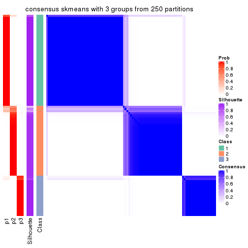
consensus_heatmap(res, k = 4)
consensus_heatmap(res, k = 5)
consensus_heatmap(res, k = 6)
Heatmaps for the membership of samples in all partitions to see how consistent they are:
membership_heatmap(res, k = 2)
membership_heatmap(res, k = 3)
membership_heatmap(res, k = 4)
membership_heatmap(res, k = 5)
membership_heatmap(res, k = 6)
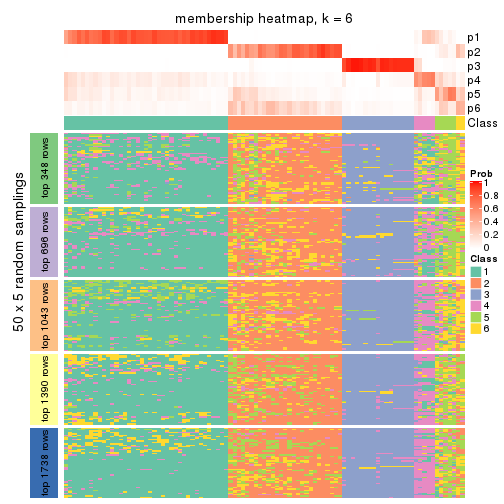
As soon as we have had the classes for columns, we can look for signatures which are significantly different between classes which can be candidate marks for certain classes. Following are the heatmaps for signatures.
Signature heatmaps where rows are scaled:
get_signatures(res, k = 2)
get_signatures(res, k = 3)
get_signatures(res, k = 4)
get_signatures(res, k = 5)
get_signatures(res, k = 6)
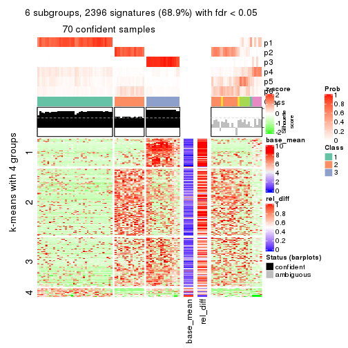
Signature heatmaps where rows are not scaled:
get_signatures(res, k = 2, scale_rows = FALSE)
get_signatures(res, k = 3, scale_rows = FALSE)
get_signatures(res, k = 4, scale_rows = FALSE)
get_signatures(res, k = 5, scale_rows = FALSE)
get_signatures(res, k = 6, scale_rows = FALSE)
Compare the overlap of signatures from different k:
compare_signatures(res)
get_signature() returns a data frame invisibly. TO get the list of signatures, the function
call should be assigned to a variable explicitly. In following code, if plot argument is set
to FALSE, no heatmap is plotted while only the differential analysis is performed.
# code only for demonstration
tb = get_signature(res, k = ..., plot = FALSE)
An example of the output of tb is:
#> which_row fdr mean_1 mean_2 scaled_mean_1 scaled_mean_2 km
#> 1 38 0.042760348 8.373488 9.131774 -0.5533452 0.5164555 1
#> 2 40 0.018707592 7.106213 8.469186 -0.6173731 0.5762149 1
#> 3 55 0.019134737 10.221463 11.207825 -0.6159697 0.5749050 1
#> 4 59 0.006059896 5.921854 7.869574 -0.6899429 0.6439467 1
#> 5 60 0.018055526 8.928898 10.211722 -0.6204761 0.5791110 1
#> 6 98 0.009384629 15.714769 14.887706 0.6635654 -0.6193277 2
...
The columns in tb are:
which_row: row indices corresponding to the input matrix.fdr: FDR for the differential test. mean_x: The mean value in group x.scaled_mean_x: The mean value in group x after rows are scaled.km: Row groups if k-means clustering is applied to rows.UMAP plot which shows how samples are separated.
dimension_reduction(res, k = 2, method = "UMAP")
dimension_reduction(res, k = 3, method = "UMAP")
dimension_reduction(res, k = 4, method = "UMAP")
dimension_reduction(res, k = 5, method = "UMAP")
dimension_reduction(res, k = 6, method = "UMAP")
Following heatmap shows how subgroups are split when increasing k:
collect_classes(res)
If matrix rows can be associated to genes, consider to use functional_enrichment(res,
...) to perform function enrichment for the signature genes. See this vignette for more detailed explanations.
The object with results only for a single top-value method and a single partition method can be extracted as:
res = res_list["CV", "pam"]
# you can also extract it by
# res = res_list["CV:pam"]
A summary of res and all the functions that can be applied to it:
res
#> A 'ConsensusPartition' object with k = 2, 3, 4, 5, 6.
#> On a matrix with 3475 rows and 95 columns.
#> Top rows (348, 696, 1043, 1390, 1738) are extracted by 'CV' method.
#> Subgroups are detected by 'pam' method.
#> Performed in total 1250 partitions by row resampling.
#> Best k for subgroups seems to be 2.
#>
#> Following methods can be applied to this 'ConsensusPartition' object:
#> [1] "cola_report" "collect_classes" "collect_plots"
#> [4] "collect_stats" "colnames" "compare_signatures"
#> [7] "consensus_heatmap" "dimension_reduction" "functional_enrichment"
#> [10] "get_anno_col" "get_anno" "get_classes"
#> [13] "get_consensus" "get_matrix" "get_membership"
#> [16] "get_param" "get_signatures" "get_stats"
#> [19] "is_best_k" "is_stable_k" "membership_heatmap"
#> [22] "ncol" "nrow" "plot_ecdf"
#> [25] "rownames" "select_partition_number" "show"
#> [28] "suggest_best_k" "test_to_known_factors"
collect_plots() function collects all the plots made from res for all k (number of partitions)
into one single page to provide an easy and fast comparison between different k.
collect_plots(res)
The plots are:
k and the heatmap of
predicted classes for each k.k.k.k.All the plots in panels can be made by individual functions and they are plotted later in this section.
select_partition_number() produces several plots showing different
statistics for choosing “optimized” k. There are following statistics:
k;k, the area increased is defined as \(A_k - A_{k-1}\).The detailed explanations of these statistics can be found in the cola vignette.
Generally speaking, lower PAC score, higher mean silhouette score or higher
concordance corresponds to better partition. Rand index and Jaccard index
measure how similar the current partition is compared to partition with k-1.
If they are too similar, we won't accept k is better than k-1.
select_partition_number(res)
The numeric values for all these statistics can be obtained by get_stats().
get_stats(res)
#> k 1-PAC mean_silhouette concordance area_increased Rand Jaccard
#> 2 2 0.733 0.902 0.948 0.49640 0.497 0.497
#> 3 3 0.581 0.697 0.873 0.17572 0.923 0.845
#> 4 4 0.588 0.700 0.867 0.01640 0.977 0.946
#> 5 5 0.602 0.716 0.877 0.01679 0.987 0.969
#> 6 6 0.608 0.680 0.870 0.00873 0.998 0.995
suggest_best_k() suggests the best \(k\) based on these statistics. The rules are as follows:
suggest_best_k(res)
#> [1] 2
Following shows the table of the partitions (You need to click the show/hide
code output link to see it). The membership matrix (columns with name p*)
is inferred by
clue::cl_consensus()
function with the SE method. Basically the value in the membership matrix
represents the probability to belong to a certain group. The finall class
label for an item is determined with the group with highest probability it
belongs to.
In get_classes() function, the entropy is calculated from the membership
matrix and the silhouette score is calculated from the consensus matrix.
cbind(get_classes(res, k = 2), get_membership(res, k = 2))
#> class entropy silhouette p1 p2
#> SRR2062258 2 0.6801 0.826 0.180 0.820
#> SRR2062259 1 0.0376 0.955 0.996 0.004
#> SRR2062270 2 0.0376 0.938 0.004 0.996
#> SRR2062342 2 0.1414 0.940 0.020 0.980
#> SRR2062341 1 0.1843 0.942 0.972 0.028
#> SRR2062340 2 0.2778 0.932 0.048 0.952
#> SRR2062339 1 0.0672 0.954 0.992 0.008
#> SRR2062348 1 0.0672 0.954 0.992 0.008
#> SRR2062347 2 0.0938 0.940 0.012 0.988
#> SRR2062351 1 0.0000 0.955 1.000 0.000
#> SRR2062350 1 0.0376 0.955 0.996 0.004
#> SRR2062349 2 0.1184 0.940 0.016 0.984
#> SRR2062346 1 0.1184 0.950 0.984 0.016
#> SRR2062345 2 0.2043 0.938 0.032 0.968
#> SRR2062344 2 0.1414 0.940 0.020 0.980
#> SRR2062343 2 0.2948 0.928 0.052 0.948
#> SRR2062354 1 0.0000 0.955 1.000 0.000
#> SRR2062353 2 0.0938 0.940 0.012 0.988
#> SRR2062352 1 0.0000 0.955 1.000 0.000
#> SRR2063021 2 0.6623 0.838 0.172 0.828
#> SRR2062356 1 0.0000 0.955 1.000 0.000
#> SRR2063025 2 0.0672 0.939 0.008 0.992
#> SRR2063027 1 0.0000 0.955 1.000 0.000
#> SRR2063023 2 0.7376 0.795 0.208 0.792
#> SRR2062355 2 0.0672 0.939 0.008 0.992
#> SRR2063030 1 0.2603 0.929 0.956 0.044
#> SRR2064285 1 0.0938 0.952 0.988 0.012
#> SRR2063034 1 0.0000 0.955 1.000 0.000
#> SRR2063032 1 0.9944 0.120 0.544 0.456
#> SRR2063031 1 0.0000 0.955 1.000 0.000
#> SRR2063029 2 0.2043 0.937 0.032 0.968
#> SRR2063028 1 0.0376 0.955 0.996 0.004
#> SRR2064308 2 0.0000 0.937 0.000 1.000
#> SRR2064310 1 0.2948 0.921 0.948 0.052
#> SRR2064312 1 0.0000 0.955 1.000 0.000
#> SRR2064314 2 0.0938 0.940 0.012 0.988
#> SRR2064315 1 0.0000 0.955 1.000 0.000
#> SRR2064317 2 0.1843 0.939 0.028 0.972
#> SRR2064318 1 0.0672 0.954 0.992 0.008
#> SRR2064319 1 0.0000 0.955 1.000 0.000
#> SRR2064320 2 0.6887 0.827 0.184 0.816
#> SRR2064321 2 0.0000 0.937 0.000 1.000
#> SRR2064322 2 0.1414 0.940 0.020 0.980
#> SRR2064323 1 0.8207 0.666 0.744 0.256
#> SRR2064324 2 0.2236 0.935 0.036 0.964
#> SRR2064325 1 0.1184 0.950 0.984 0.016
#> SRR2064326 2 0.4690 0.896 0.100 0.900
#> SRR2064327 2 0.0000 0.937 0.000 1.000
#> SRR2064329 1 0.0000 0.955 1.000 0.000
#> SRR2064328 2 0.0938 0.940 0.012 0.988
#> SRR2064330 2 0.4298 0.904 0.088 0.912
#> SRR2064331 2 0.0000 0.937 0.000 1.000
#> SRR2064332 2 0.0000 0.937 0.000 1.000
#> SRR2064333 1 0.0000 0.955 1.000 0.000
#> SRR2064334 2 0.2603 0.930 0.044 0.956
#> SRR2064335 2 0.5059 0.889 0.112 0.888
#> SRR2064436 1 0.0376 0.955 0.996 0.004
#> SRR2064457 1 0.0000 0.955 1.000 0.000
#> SRR2064458 1 0.8081 0.661 0.752 0.248
#> SRR2064459 2 0.0376 0.938 0.004 0.996
#> SRR2064460 1 0.0000 0.955 1.000 0.000
#> SRR2064461 2 0.1414 0.940 0.020 0.980
#> SRR2064462 1 0.0376 0.955 0.996 0.004
#> SRR2064534 2 0.1633 0.940 0.024 0.976
#> SRR2064535 2 0.0000 0.937 0.000 1.000
#> SRR2064536 2 0.0000 0.937 0.000 1.000
#> SRR2064537 2 0.6712 0.832 0.176 0.824
#> SRR2064538 1 0.0672 0.954 0.992 0.008
#> SRR2064539 2 0.0000 0.937 0.000 1.000
#> SRR2064540 1 0.1414 0.947 0.980 0.020
#> SRR2064541 2 0.7453 0.793 0.212 0.788
#> SRR2064543 1 0.0376 0.955 0.996 0.004
#> SRR2064542 1 0.0376 0.955 0.996 0.004
#> SRR2064544 2 0.9522 0.468 0.372 0.628
#> SRR2064545 2 0.6438 0.841 0.164 0.836
#> SRR2064546 1 0.0000 0.955 1.000 0.000
#> SRR2064547 1 0.0672 0.954 0.992 0.008
#> SRR2064548 2 0.6623 0.841 0.172 0.828
#> SRR2064550 2 0.1414 0.940 0.020 0.980
#> SRR2064549 1 0.7815 0.686 0.768 0.232
#> SRR2064551 2 0.1184 0.940 0.016 0.984
#> SRR2064552 1 0.0000 0.955 1.000 0.000
#> SRR2064553 2 0.0000 0.937 0.000 1.000
#> SRR2064554 2 0.8661 0.666 0.288 0.712
#> SRR2064555 2 0.0376 0.938 0.004 0.996
#> SRR2064556 1 0.0000 0.955 1.000 0.000
#> SRR2064559 2 0.0376 0.938 0.004 0.996
#> SRR2064558 2 0.0000 0.937 0.000 1.000
#> SRR2064557 2 0.1184 0.940 0.016 0.984
#> SRR2064560 1 0.1414 0.947 0.980 0.020
#> SRR2064561 1 0.9044 0.512 0.680 0.320
#> SRR2064562 1 0.0376 0.955 0.996 0.004
#> SRR2064564 1 0.0938 0.952 0.988 0.012
#> SRR2064563 2 0.1633 0.940 0.024 0.976
#> SRR2064565 2 0.7139 0.813 0.196 0.804
cbind(get_classes(res, k = 3), get_membership(res, k = 3))
#> class entropy silhouette p1 p2 p3
#> SRR2062258 2 0.5047 0.646 0.140 0.824 0.036
#> SRR2062259 1 0.0237 0.941 0.996 0.004 0.000
#> SRR2062270 3 0.6314 0.670 0.004 0.392 0.604
#> SRR2062342 2 0.1015 0.732 0.008 0.980 0.012
#> SRR2062341 1 0.2261 0.904 0.932 0.068 0.000
#> SRR2062340 2 0.4413 0.657 0.024 0.852 0.124
#> SRR2062339 1 0.1163 0.932 0.972 0.028 0.000
#> SRR2062348 1 0.0592 0.940 0.988 0.012 0.000
#> SRR2062347 2 0.1647 0.725 0.004 0.960 0.036
#> SRR2062351 1 0.0000 0.941 1.000 0.000 0.000
#> SRR2062350 1 0.0424 0.940 0.992 0.008 0.000
#> SRR2062349 2 0.1170 0.731 0.008 0.976 0.016
#> SRR2062346 1 0.0829 0.936 0.984 0.012 0.004
#> SRR2062345 2 0.2176 0.736 0.020 0.948 0.032
#> SRR2062344 2 0.6704 0.081 0.016 0.608 0.376
#> SRR2062343 2 0.4475 0.702 0.064 0.864 0.072
#> SRR2062354 1 0.0000 0.941 1.000 0.000 0.000
#> SRR2062353 2 0.1267 0.732 0.004 0.972 0.024
#> SRR2062352 1 0.0000 0.941 1.000 0.000 0.000
#> SRR2063021 2 0.2448 0.722 0.076 0.924 0.000
#> SRR2062356 1 0.0000 0.941 1.000 0.000 0.000
#> SRR2063025 2 0.4172 0.648 0.004 0.840 0.156
#> SRR2063027 1 0.0000 0.941 1.000 0.000 0.000
#> SRR2063023 2 0.4349 0.662 0.128 0.852 0.020
#> SRR2062355 2 0.6608 -0.329 0.008 0.560 0.432
#> SRR2063030 1 0.2682 0.893 0.920 0.076 0.004
#> SRR2064285 1 0.0892 0.936 0.980 0.020 0.000
#> SRR2063034 1 0.0000 0.941 1.000 0.000 0.000
#> SRR2063032 1 0.7156 0.227 0.572 0.400 0.028
#> SRR2063031 1 0.0000 0.941 1.000 0.000 0.000
#> SRR2063029 2 0.1182 0.732 0.012 0.976 0.012
#> SRR2063028 1 0.0424 0.940 0.992 0.008 0.000
#> SRR2064308 3 0.1031 0.502 0.000 0.024 0.976
#> SRR2064310 1 0.3267 0.858 0.884 0.116 0.000
#> SRR2064312 1 0.0237 0.941 0.996 0.004 0.000
#> SRR2064314 2 0.3682 0.689 0.008 0.876 0.116
#> SRR2064315 1 0.0000 0.941 1.000 0.000 0.000
#> SRR2064317 2 0.3091 0.724 0.016 0.912 0.072
#> SRR2064318 1 0.0892 0.936 0.980 0.020 0.000
#> SRR2064319 1 0.0000 0.941 1.000 0.000 0.000
#> SRR2064320 2 0.2261 0.722 0.068 0.932 0.000
#> SRR2064321 2 0.6260 -0.322 0.000 0.552 0.448
#> SRR2064322 2 0.1620 0.732 0.012 0.964 0.024
#> SRR2064323 1 0.6490 0.620 0.708 0.256 0.036
#> SRR2064324 3 0.6793 0.571 0.012 0.452 0.536
#> SRR2064325 1 0.1170 0.934 0.976 0.016 0.008
#> SRR2064326 2 0.4007 0.705 0.084 0.880 0.036
#> SRR2064327 3 0.6299 0.492 0.000 0.476 0.524
#> SRR2064329 1 0.0237 0.941 0.996 0.004 0.000
#> SRR2064328 2 0.1453 0.730 0.008 0.968 0.024
#> SRR2064330 2 0.3649 0.723 0.068 0.896 0.036
#> SRR2064331 3 0.5926 0.686 0.000 0.356 0.644
#> SRR2064332 3 0.5591 0.706 0.000 0.304 0.696
#> SRR2064333 1 0.0000 0.941 1.000 0.000 0.000
#> SRR2064334 2 0.0829 0.728 0.004 0.984 0.012
#> SRR2064335 2 0.3377 0.710 0.092 0.896 0.012
#> SRR2064436 1 0.0424 0.940 0.992 0.008 0.000
#> SRR2064457 1 0.0000 0.941 1.000 0.000 0.000
#> SRR2064458 1 0.5623 0.602 0.716 0.280 0.004
#> SRR2064459 3 0.6442 0.615 0.004 0.432 0.564
#> SRR2064460 1 0.0000 0.941 1.000 0.000 0.000
#> SRR2064461 2 0.3213 0.694 0.008 0.900 0.092
#> SRR2064462 1 0.0237 0.941 0.996 0.004 0.000
#> SRR2064534 2 0.6282 0.167 0.012 0.664 0.324
#> SRR2064535 2 0.6168 -0.207 0.000 0.588 0.412
#> SRR2064536 3 0.4702 0.644 0.000 0.212 0.788
#> SRR2064537 2 0.4994 0.618 0.160 0.816 0.024
#> SRR2064538 1 0.0747 0.938 0.984 0.016 0.000
#> SRR2064539 2 0.5098 0.485 0.000 0.752 0.248
#> SRR2064540 1 0.1289 0.928 0.968 0.032 0.000
#> SRR2064541 2 0.3610 0.703 0.096 0.888 0.016
#> SRR2064543 1 0.0237 0.941 0.996 0.004 0.000
#> SRR2064542 1 0.0592 0.939 0.988 0.012 0.000
#> SRR2064544 2 0.7569 0.332 0.248 0.664 0.088
#> SRR2064545 2 0.5449 0.646 0.116 0.816 0.068
#> SRR2064546 1 0.0000 0.941 1.000 0.000 0.000
#> SRR2064547 1 0.0747 0.938 0.984 0.016 0.000
#> SRR2064548 2 0.2860 0.721 0.084 0.912 0.004
#> SRR2064550 2 0.5122 0.598 0.012 0.788 0.200
#> SRR2064549 1 0.5397 0.614 0.720 0.280 0.000
#> SRR2064551 2 0.1453 0.732 0.008 0.968 0.024
#> SRR2064552 1 0.0000 0.941 1.000 0.000 0.000
#> SRR2064553 2 0.6274 -0.313 0.000 0.544 0.456
#> SRR2064554 2 0.4452 0.555 0.192 0.808 0.000
#> SRR2064555 2 0.6513 -0.443 0.004 0.520 0.476
#> SRR2064556 1 0.0000 0.941 1.000 0.000 0.000
#> SRR2064559 2 0.5621 0.239 0.000 0.692 0.308
#> SRR2064558 2 0.4235 0.603 0.000 0.824 0.176
#> SRR2064557 2 0.1711 0.732 0.008 0.960 0.032
#> SRR2064560 1 0.1860 0.916 0.948 0.052 0.000
#> SRR2064561 1 0.6244 0.247 0.560 0.440 0.000
#> SRR2064562 1 0.0237 0.941 0.996 0.004 0.000
#> SRR2064564 1 0.1031 0.934 0.976 0.024 0.000
#> SRR2064563 2 0.2939 0.713 0.012 0.916 0.072
#> SRR2064565 2 0.3120 0.716 0.080 0.908 0.012
cbind(get_classes(res, k = 4), get_membership(res, k = 4))
#> class entropy silhouette p1 p2 p3 p4
#> SRR2062258 2 0.4037 0.6597 0.136 0.824 0.040 0.000
#> SRR2062259 1 0.0188 0.9341 0.996 0.004 0.000 0.000
#> SRR2062270 3 0.5050 0.6793 0.004 0.408 0.588 0.000
#> SRR2062342 2 0.0804 0.7494 0.008 0.980 0.012 0.000
#> SRR2062341 1 0.1792 0.8943 0.932 0.068 0.000 0.000
#> SRR2062340 2 0.3117 0.7058 0.028 0.880 0.092 0.000
#> SRR2062339 1 0.0921 0.9250 0.972 0.028 0.000 0.000
#> SRR2062348 1 0.0469 0.9332 0.988 0.012 0.000 0.000
#> SRR2062347 2 0.1398 0.7421 0.004 0.956 0.040 0.000
#> SRR2062351 1 0.0000 0.9340 1.000 0.000 0.000 0.000
#> SRR2062350 1 0.0336 0.9337 0.992 0.008 0.000 0.000
#> SRR2062349 2 0.1042 0.7486 0.008 0.972 0.020 0.000
#> SRR2062346 1 0.0657 0.9285 0.984 0.012 0.004 0.000
#> SRR2062345 2 0.1913 0.7492 0.020 0.940 0.040 0.000
#> SRR2062344 2 0.5859 -0.0673 0.016 0.588 0.380 0.016
#> SRR2062343 2 0.3745 0.7021 0.060 0.852 0.088 0.000
#> SRR2062354 1 0.0000 0.9340 1.000 0.000 0.000 0.000
#> SRR2062353 2 0.1109 0.7495 0.004 0.968 0.028 0.000
#> SRR2062352 1 0.0000 0.9340 1.000 0.000 0.000 0.000
#> SRR2063021 2 0.1940 0.7372 0.076 0.924 0.000 0.000
#> SRR2062356 1 0.0000 0.9340 1.000 0.000 0.000 0.000
#> SRR2063025 2 0.3402 0.6520 0.004 0.832 0.164 0.000
#> SRR2063027 1 0.0000 0.9340 1.000 0.000 0.000 0.000
#> SRR2063023 2 0.3447 0.6736 0.128 0.852 0.020 0.000
#> SRR2062355 3 0.5292 0.5838 0.008 0.480 0.512 0.000
#> SRR2063030 1 0.2125 0.8821 0.920 0.076 0.004 0.000
#> SRR2064285 1 0.0707 0.9289 0.980 0.020 0.000 0.000
#> SRR2063034 1 0.0000 0.9340 1.000 0.000 0.000 0.000
#> SRR2063032 1 0.5671 0.2305 0.572 0.400 0.028 0.000
#> SRR2063031 1 0.0000 0.9340 1.000 0.000 0.000 0.000
#> SRR2063029 2 0.0937 0.7494 0.012 0.976 0.012 0.000
#> SRR2063028 1 0.0336 0.9336 0.992 0.008 0.000 0.000
#> SRR2064308 4 0.3400 0.0000 0.000 0.000 0.180 0.820
#> SRR2064310 1 0.2589 0.8439 0.884 0.116 0.000 0.000
#> SRR2064312 1 0.0188 0.9342 0.996 0.004 0.000 0.000
#> SRR2064314 2 0.3032 0.6979 0.008 0.868 0.124 0.000
#> SRR2064315 1 0.0000 0.9340 1.000 0.000 0.000 0.000
#> SRR2064317 2 0.2222 0.7441 0.016 0.924 0.060 0.000
#> SRR2064318 1 0.0707 0.9293 0.980 0.020 0.000 0.000
#> SRR2064319 1 0.0000 0.9340 1.000 0.000 0.000 0.000
#> SRR2064320 2 0.1792 0.7389 0.068 0.932 0.000 0.000
#> SRR2064321 2 0.4992 -0.4370 0.000 0.524 0.476 0.000
#> SRR2064322 2 0.1284 0.7500 0.012 0.964 0.024 0.000
#> SRR2064323 1 0.4964 0.6178 0.716 0.256 0.028 0.000
#> SRR2064324 3 0.5183 0.7004 0.008 0.408 0.584 0.000
#> SRR2064325 1 0.0927 0.9272 0.976 0.016 0.008 0.000
#> SRR2064326 2 0.3266 0.7182 0.084 0.876 0.040 0.000
#> SRR2064327 3 0.6314 0.7146 0.000 0.372 0.560 0.068
#> SRR2064329 1 0.0188 0.9339 0.996 0.004 0.000 0.000
#> SRR2064328 2 0.1256 0.7475 0.008 0.964 0.028 0.000
#> SRR2064330 2 0.2983 0.7380 0.068 0.892 0.040 0.000
#> SRR2064331 3 0.5837 0.6862 0.000 0.260 0.668 0.072
#> SRR2064332 3 0.4356 0.7364 0.000 0.292 0.708 0.000
#> SRR2064333 1 0.0000 0.9340 1.000 0.000 0.000 0.000
#> SRR2064334 2 0.0779 0.7460 0.004 0.980 0.016 0.000
#> SRR2064335 2 0.2676 0.7244 0.092 0.896 0.012 0.000
#> SRR2064436 1 0.0336 0.9334 0.992 0.008 0.000 0.000
#> SRR2064457 1 0.0000 0.9340 1.000 0.000 0.000 0.000
#> SRR2064458 1 0.4456 0.5943 0.716 0.280 0.004 0.000
#> SRR2064459 3 0.4964 0.7266 0.004 0.380 0.616 0.000
#> SRR2064460 1 0.0000 0.9340 1.000 0.000 0.000 0.000
#> SRR2064461 2 0.1807 0.7393 0.008 0.940 0.052 0.000
#> SRR2064462 1 0.0188 0.9340 0.996 0.004 0.000 0.000
#> SRR2064534 2 0.5279 -0.2748 0.012 0.588 0.400 0.000
#> SRR2064535 3 0.6798 0.6660 0.000 0.396 0.504 0.100
#> SRR2064536 3 0.5646 -0.1972 0.000 0.088 0.708 0.204
#> SRR2064537 2 0.3958 0.6258 0.160 0.816 0.024 0.000
#> SRR2064538 1 0.0592 0.9313 0.984 0.016 0.000 0.000
#> SRR2064539 2 0.5070 0.5105 0.000 0.748 0.192 0.060
#> SRR2064540 1 0.1022 0.9207 0.968 0.032 0.000 0.000
#> SRR2064541 2 0.2611 0.7194 0.096 0.896 0.008 0.000
#> SRR2064543 1 0.0188 0.9340 0.996 0.004 0.000 0.000
#> SRR2064542 1 0.0469 0.9325 0.988 0.012 0.000 0.000
#> SRR2064544 2 0.6216 0.2863 0.240 0.652 0.108 0.000
#> SRR2064545 2 0.4318 0.6520 0.116 0.816 0.068 0.000
#> SRR2064546 1 0.0000 0.9340 1.000 0.000 0.000 0.000
#> SRR2064547 1 0.0592 0.9314 0.984 0.016 0.000 0.000
#> SRR2064548 2 0.2149 0.7343 0.088 0.912 0.000 0.000
#> SRR2064550 2 0.3718 0.6580 0.012 0.820 0.168 0.000
#> SRR2064549 1 0.4277 0.6026 0.720 0.280 0.000 0.000
#> SRR2064551 2 0.1151 0.7499 0.008 0.968 0.024 0.000
#> SRR2064552 1 0.0000 0.9340 1.000 0.000 0.000 0.000
#> SRR2064553 2 0.4866 -0.0835 0.000 0.596 0.404 0.000
#> SRR2064554 2 0.3528 0.5610 0.192 0.808 0.000 0.000
#> SRR2064555 2 0.5168 -0.5040 0.004 0.504 0.492 0.000
#> SRR2064556 1 0.0000 0.9340 1.000 0.000 0.000 0.000
#> SRR2064559 2 0.4817 -0.1818 0.000 0.612 0.388 0.000
#> SRR2064558 2 0.3718 0.6180 0.000 0.820 0.168 0.012
#> SRR2064557 2 0.1356 0.7486 0.008 0.960 0.032 0.000
#> SRR2064560 1 0.1474 0.9071 0.948 0.052 0.000 0.000
#> SRR2064561 1 0.4948 0.2432 0.560 0.440 0.000 0.000
#> SRR2064562 1 0.0188 0.9341 0.996 0.004 0.000 0.000
#> SRR2064564 1 0.0817 0.9272 0.976 0.024 0.000 0.000
#> SRR2064563 2 0.1767 0.7457 0.012 0.944 0.044 0.000
#> SRR2064565 2 0.2342 0.7319 0.080 0.912 0.008 0.000
cbind(get_classes(res, k = 5), get_membership(res, k = 5))
#> class entropy silhouette p1 p2 p3 p4 p5
#> SRR2062258 2 0.3622 0.6825 0.136 0.816 0.048 0.000 0.000
#> SRR2062259 1 0.0162 0.9324 0.996 0.004 0.000 0.000 0.000
#> SRR2062270 3 0.4331 0.6647 0.000 0.400 0.596 0.004 0.000
#> SRR2062342 2 0.0566 0.7716 0.004 0.984 0.012 0.000 0.000
#> SRR2062341 1 0.1732 0.8848 0.920 0.080 0.000 0.000 0.000
#> SRR2062340 2 0.1965 0.7652 0.024 0.924 0.052 0.000 0.000
#> SRR2062339 1 0.0963 0.9195 0.964 0.036 0.000 0.000 0.000
#> SRR2062348 1 0.0510 0.9307 0.984 0.016 0.000 0.000 0.000
#> SRR2062347 2 0.1357 0.7650 0.004 0.948 0.048 0.000 0.000
#> SRR2062351 1 0.0000 0.9318 1.000 0.000 0.000 0.000 0.000
#> SRR2062350 1 0.0510 0.9304 0.984 0.016 0.000 0.000 0.000
#> SRR2062349 2 0.0865 0.7705 0.004 0.972 0.024 0.000 0.000
#> SRR2062346 1 0.0451 0.9298 0.988 0.008 0.004 0.000 0.000
#> SRR2062345 2 0.1626 0.7706 0.016 0.940 0.044 0.000 0.000
#> SRR2062344 2 0.4893 0.0948 0.012 0.612 0.360 0.000 0.016
#> SRR2062343 2 0.3390 0.7179 0.060 0.840 0.100 0.000 0.000
#> SRR2062354 1 0.0000 0.9318 1.000 0.000 0.000 0.000 0.000
#> SRR2062353 2 0.1124 0.7726 0.004 0.960 0.036 0.000 0.000
#> SRR2062352 1 0.0000 0.9318 1.000 0.000 0.000 0.000 0.000
#> SRR2063021 2 0.1608 0.7600 0.072 0.928 0.000 0.000 0.000
#> SRR2062356 1 0.0000 0.9318 1.000 0.000 0.000 0.000 0.000
#> SRR2063025 2 0.3086 0.6673 0.004 0.816 0.180 0.000 0.000
#> SRR2063027 1 0.0000 0.9318 1.000 0.000 0.000 0.000 0.000
#> SRR2063023 2 0.2921 0.6960 0.124 0.856 0.020 0.000 0.000
#> SRR2062355 3 0.4341 0.6966 0.004 0.404 0.592 0.000 0.000
#> SRR2063030 1 0.1952 0.8761 0.912 0.084 0.004 0.000 0.000
#> SRR2064285 1 0.0609 0.9281 0.980 0.020 0.000 0.000 0.000
#> SRR2063034 1 0.0000 0.9318 1.000 0.000 0.000 0.000 0.000
#> SRR2063032 1 0.5000 0.2455 0.576 0.388 0.036 0.000 0.000
#> SRR2063031 1 0.0000 0.9318 1.000 0.000 0.000 0.000 0.000
#> SRR2063029 2 0.0693 0.7716 0.008 0.980 0.012 0.000 0.000
#> SRR2063028 1 0.0290 0.9321 0.992 0.008 0.000 0.000 0.000
#> SRR2064308 4 0.1270 0.0000 0.000 0.000 0.052 0.948 0.000
#> SRR2064310 1 0.2329 0.8376 0.876 0.124 0.000 0.000 0.000
#> SRR2064312 1 0.0290 0.9325 0.992 0.008 0.000 0.000 0.000
#> SRR2064314 2 0.2753 0.7180 0.008 0.856 0.136 0.000 0.000
#> SRR2064315 1 0.0000 0.9318 1.000 0.000 0.000 0.000 0.000
#> SRR2064317 2 0.2006 0.7617 0.012 0.916 0.072 0.000 0.000
#> SRR2064318 1 0.0703 0.9268 0.976 0.024 0.000 0.000 0.000
#> SRR2064319 1 0.0000 0.9318 1.000 0.000 0.000 0.000 0.000
#> SRR2064320 2 0.1410 0.7649 0.060 0.940 0.000 0.000 0.000
#> SRR2064321 3 0.4443 0.4646 0.000 0.472 0.524 0.004 0.000
#> SRR2064322 2 0.0992 0.7723 0.008 0.968 0.024 0.000 0.000
#> SRR2064323 1 0.4157 0.6185 0.716 0.264 0.020 0.000 0.000
#> SRR2064324 3 0.4264 0.7191 0.004 0.376 0.620 0.000 0.000
#> SRR2064325 1 0.0798 0.9262 0.976 0.016 0.008 0.000 0.000
#> SRR2064326 2 0.2962 0.7393 0.084 0.868 0.048 0.000 0.000
#> SRR2064327 3 0.5439 0.6916 0.000 0.268 0.656 0.028 0.048
#> SRR2064329 1 0.0162 0.9322 0.996 0.004 0.000 0.000 0.000
#> SRR2064328 2 0.1364 0.7719 0.012 0.952 0.036 0.000 0.000
#> SRR2064330 2 0.2580 0.7603 0.064 0.892 0.044 0.000 0.000
#> SRR2064331 3 0.4622 0.5590 0.000 0.164 0.748 0.004 0.084
#> SRR2064332 3 0.3556 0.5918 0.000 0.168 0.808 0.004 0.020
#> SRR2064333 1 0.0000 0.9318 1.000 0.000 0.000 0.000 0.000
#> SRR2064334 2 0.0865 0.7693 0.004 0.972 0.024 0.000 0.000
#> SRR2064335 2 0.2505 0.7449 0.092 0.888 0.020 0.000 0.000
#> SRR2064436 1 0.0290 0.9319 0.992 0.008 0.000 0.000 0.000
#> SRR2064457 1 0.0162 0.9324 0.996 0.004 0.000 0.000 0.000
#> SRR2064458 1 0.3838 0.5908 0.716 0.280 0.004 0.000 0.000
#> SRR2064459 3 0.3999 0.7390 0.000 0.344 0.656 0.000 0.000
#> SRR2064460 1 0.0162 0.9324 0.996 0.004 0.000 0.000 0.000
#> SRR2064461 2 0.1124 0.7683 0.004 0.960 0.036 0.000 0.000
#> SRR2064462 1 0.0162 0.9323 0.996 0.004 0.000 0.000 0.000
#> SRR2064534 2 0.4440 -0.4737 0.004 0.528 0.468 0.000 0.000
#> SRR2064535 3 0.5979 0.4694 0.000 0.224 0.636 0.024 0.116
#> SRR2064536 5 0.3455 0.0000 0.000 0.024 0.112 0.020 0.844
#> SRR2064537 2 0.3368 0.6505 0.156 0.820 0.024 0.000 0.000
#> SRR2064538 1 0.0510 0.9303 0.984 0.016 0.000 0.000 0.000
#> SRR2064539 2 0.4782 0.5381 0.000 0.732 0.196 0.060 0.012
#> SRR2064540 1 0.0880 0.9197 0.968 0.032 0.000 0.000 0.000
#> SRR2064541 2 0.2189 0.7499 0.084 0.904 0.012 0.000 0.000
#> SRR2064543 1 0.0162 0.9323 0.996 0.004 0.000 0.000 0.000
#> SRR2064542 1 0.0510 0.9302 0.984 0.016 0.000 0.000 0.000
#> SRR2064544 2 0.5348 0.3090 0.232 0.656 0.112 0.000 0.000
#> SRR2064545 2 0.3620 0.6814 0.108 0.824 0.068 0.000 0.000
#> SRR2064546 1 0.0162 0.9324 0.996 0.004 0.000 0.000 0.000
#> SRR2064547 1 0.0510 0.9303 0.984 0.016 0.000 0.000 0.000
#> SRR2064548 2 0.1792 0.7575 0.084 0.916 0.000 0.000 0.000
#> SRR2064550 2 0.2660 0.7320 0.008 0.864 0.128 0.000 0.000
#> SRR2064549 1 0.3752 0.5851 0.708 0.292 0.000 0.000 0.000
#> SRR2064551 2 0.0955 0.7719 0.004 0.968 0.028 0.000 0.000
#> SRR2064552 1 0.0000 0.9318 1.000 0.000 0.000 0.000 0.000
#> SRR2064553 2 0.4359 -0.0279 0.000 0.584 0.412 0.004 0.000
#> SRR2064554 2 0.2966 0.5919 0.184 0.816 0.000 0.000 0.000
#> SRR2064555 2 0.4446 -0.3806 0.004 0.520 0.476 0.000 0.000
#> SRR2064556 1 0.0000 0.9318 1.000 0.000 0.000 0.000 0.000
#> SRR2064559 2 0.4278 -0.3574 0.000 0.548 0.452 0.000 0.000
#> SRR2064558 2 0.3391 0.6348 0.000 0.800 0.188 0.000 0.012
#> SRR2064557 2 0.1522 0.7741 0.012 0.944 0.044 0.000 0.000
#> SRR2064560 1 0.1410 0.9011 0.940 0.060 0.000 0.000 0.000
#> SRR2064561 1 0.4268 0.2410 0.556 0.444 0.000 0.000 0.000
#> SRR2064562 1 0.0162 0.9324 0.996 0.004 0.000 0.000 0.000
#> SRR2064564 1 0.0703 0.9266 0.976 0.024 0.000 0.000 0.000
#> SRR2064563 2 0.1408 0.7684 0.008 0.948 0.044 0.000 0.000
#> SRR2064565 2 0.1894 0.7579 0.072 0.920 0.008 0.000 0.000
cbind(get_classes(res, k = 6), get_membership(res, k = 6))
#> class entropy silhouette p1 p2 p3 p4 p5 p6
#> SRR2062258 2 0.3395 0.6866 0.136 0.812 0.048 0.000 0.000 0.004
#> SRR2062259 1 0.0146 0.9323 0.996 0.004 0.000 0.000 0.000 0.000
#> SRR2062270 3 0.4032 0.5411 0.000 0.420 0.572 0.008 0.000 0.000
#> SRR2062342 2 0.0508 0.7756 0.004 0.984 0.012 0.000 0.000 0.000
#> SRR2062341 1 0.1556 0.8849 0.920 0.080 0.000 0.000 0.000 0.000
#> SRR2062340 2 0.1644 0.7744 0.028 0.932 0.040 0.000 0.000 0.000
#> SRR2062339 1 0.0865 0.9195 0.964 0.036 0.000 0.000 0.000 0.000
#> SRR2062348 1 0.0458 0.9307 0.984 0.016 0.000 0.000 0.000 0.000
#> SRR2062347 2 0.1364 0.7688 0.004 0.944 0.048 0.000 0.000 0.004
#> SRR2062351 1 0.0000 0.9318 1.000 0.000 0.000 0.000 0.000 0.000
#> SRR2062350 1 0.0458 0.9304 0.984 0.016 0.000 0.000 0.000 0.000
#> SRR2062349 2 0.0922 0.7748 0.004 0.968 0.024 0.000 0.000 0.004
#> SRR2062346 1 0.0405 0.9298 0.988 0.008 0.004 0.000 0.000 0.000
#> SRR2062345 2 0.1528 0.7731 0.016 0.936 0.048 0.000 0.000 0.000
#> SRR2062344 2 0.4846 0.1839 0.012 0.620 0.328 0.000 0.012 0.028
#> SRR2062343 2 0.3045 0.7243 0.060 0.840 0.100 0.000 0.000 0.000
#> SRR2062354 1 0.0000 0.9318 1.000 0.000 0.000 0.000 0.000 0.000
#> SRR2062353 2 0.1010 0.7772 0.004 0.960 0.036 0.000 0.000 0.000
#> SRR2062352 1 0.0000 0.9318 1.000 0.000 0.000 0.000 0.000 0.000
#> SRR2063021 2 0.1387 0.7665 0.068 0.932 0.000 0.000 0.000 0.000
#> SRR2062356 1 0.0000 0.9318 1.000 0.000 0.000 0.000 0.000 0.000
#> SRR2063025 2 0.2879 0.6796 0.004 0.816 0.176 0.000 0.000 0.004
#> SRR2063027 1 0.0000 0.9318 1.000 0.000 0.000 0.000 0.000 0.000
#> SRR2063023 2 0.2624 0.7016 0.124 0.856 0.020 0.000 0.000 0.000
#> SRR2062355 3 0.3899 0.5609 0.004 0.404 0.592 0.000 0.000 0.000
#> SRR2063030 1 0.1753 0.8763 0.912 0.084 0.004 0.000 0.000 0.000
#> SRR2064285 1 0.0547 0.9280 0.980 0.020 0.000 0.000 0.000 0.000
#> SRR2063034 1 0.0000 0.9318 1.000 0.000 0.000 0.000 0.000 0.000
#> SRR2063032 1 0.4607 0.2614 0.580 0.380 0.036 0.000 0.000 0.004
#> SRR2063031 1 0.0000 0.9318 1.000 0.000 0.000 0.000 0.000 0.000
#> SRR2063029 2 0.0622 0.7757 0.008 0.980 0.012 0.000 0.000 0.000
#> SRR2063028 1 0.0260 0.9321 0.992 0.008 0.000 0.000 0.000 0.000
#> SRR2064308 4 0.0790 0.0000 0.000 0.000 0.032 0.968 0.000 0.000
#> SRR2064310 1 0.2092 0.8379 0.876 0.124 0.000 0.000 0.000 0.000
#> SRR2064312 1 0.0260 0.9324 0.992 0.008 0.000 0.000 0.000 0.000
#> SRR2064314 2 0.2655 0.7194 0.008 0.848 0.140 0.000 0.000 0.004
#> SRR2064315 1 0.0000 0.9318 1.000 0.000 0.000 0.000 0.000 0.000
#> SRR2064317 2 0.1802 0.7648 0.012 0.916 0.072 0.000 0.000 0.000
#> SRR2064318 1 0.0632 0.9267 0.976 0.024 0.000 0.000 0.000 0.000
#> SRR2064319 1 0.0000 0.9318 1.000 0.000 0.000 0.000 0.000 0.000
#> SRR2064320 2 0.1204 0.7720 0.056 0.944 0.000 0.000 0.000 0.000
#> SRR2064321 3 0.4091 0.3935 0.000 0.472 0.520 0.000 0.000 0.008
#> SRR2064322 2 0.1036 0.7765 0.008 0.964 0.024 0.000 0.000 0.004
#> SRR2064323 1 0.3789 0.6146 0.716 0.260 0.024 0.000 0.000 0.000
#> SRR2064324 3 0.3862 0.5568 0.004 0.388 0.608 0.000 0.000 0.000
#> SRR2064325 1 0.0717 0.9262 0.976 0.016 0.008 0.000 0.000 0.000
#> SRR2064326 2 0.2854 0.7385 0.088 0.860 0.048 0.000 0.000 0.004
#> SRR2064327 3 0.6596 -0.1251 0.000 0.196 0.424 0.020 0.012 0.348
#> SRR2064329 1 0.0146 0.9322 0.996 0.004 0.000 0.000 0.000 0.000
#> SRR2064328 2 0.1370 0.7758 0.012 0.948 0.036 0.000 0.000 0.004
#> SRR2064330 2 0.2519 0.7607 0.068 0.884 0.044 0.000 0.000 0.004
#> SRR2064331 3 0.5575 -0.3835 0.000 0.108 0.592 0.008 0.012 0.280
#> SRR2064332 3 0.1434 -0.2693 0.000 0.048 0.940 0.000 0.012 0.000
#> SRR2064333 1 0.0000 0.9318 1.000 0.000 0.000 0.000 0.000 0.000
#> SRR2064334 2 0.0922 0.7737 0.004 0.968 0.024 0.000 0.000 0.004
#> SRR2064335 2 0.2250 0.7500 0.092 0.888 0.020 0.000 0.000 0.000
#> SRR2064436 1 0.0260 0.9320 0.992 0.008 0.000 0.000 0.000 0.000
#> SRR2064457 1 0.0146 0.9323 0.996 0.004 0.000 0.000 0.000 0.000
#> SRR2064458 1 0.3468 0.5760 0.712 0.284 0.004 0.000 0.000 0.000
#> SRR2064459 3 0.3864 0.5544 0.000 0.344 0.648 0.004 0.000 0.004
#> SRR2064460 1 0.0146 0.9323 0.996 0.004 0.000 0.000 0.000 0.000
#> SRR2064461 2 0.0858 0.7739 0.004 0.968 0.028 0.000 0.000 0.000
#> SRR2064462 1 0.0146 0.9322 0.996 0.004 0.000 0.000 0.000 0.000
#> SRR2064534 2 0.3979 -0.3830 0.004 0.540 0.456 0.000 0.000 0.000
#> SRR2064535 6 0.5446 0.0000 0.000 0.144 0.316 0.000 0.000 0.540
#> SRR2064536 5 0.1578 0.0000 0.000 0.012 0.048 0.004 0.936 0.000
#> SRR2064537 2 0.3203 0.6481 0.160 0.812 0.024 0.000 0.000 0.004
#> SRR2064538 1 0.0458 0.9302 0.984 0.016 0.000 0.000 0.000 0.000
#> SRR2064539 2 0.5712 0.4126 0.000 0.660 0.116 0.032 0.024 0.168
#> SRR2064540 1 0.0790 0.9197 0.968 0.032 0.000 0.000 0.000 0.000
#> SRR2064541 2 0.1913 0.7593 0.080 0.908 0.012 0.000 0.000 0.000
#> SRR2064543 1 0.0146 0.9322 0.996 0.004 0.000 0.000 0.000 0.000
#> SRR2064542 1 0.0458 0.9302 0.984 0.016 0.000 0.000 0.000 0.000
#> SRR2064544 2 0.4681 0.3450 0.232 0.668 0.100 0.000 0.000 0.000
#> SRR2064545 2 0.3196 0.6934 0.108 0.828 0.064 0.000 0.000 0.000
#> SRR2064546 1 0.0146 0.9323 0.996 0.004 0.000 0.000 0.000 0.000
#> SRR2064547 1 0.0458 0.9303 0.984 0.016 0.000 0.000 0.000 0.000
#> SRR2064548 2 0.1501 0.7685 0.076 0.924 0.000 0.000 0.000 0.000
#> SRR2064550 2 0.2302 0.7415 0.008 0.872 0.120 0.000 0.000 0.000
#> SRR2064549 1 0.3390 0.5700 0.704 0.296 0.000 0.000 0.000 0.000
#> SRR2064551 2 0.1003 0.7760 0.004 0.964 0.028 0.000 0.000 0.004
#> SRR2064552 1 0.0000 0.9318 1.000 0.000 0.000 0.000 0.000 0.000
#> SRR2064553 2 0.4033 0.0515 0.000 0.588 0.404 0.004 0.000 0.004
#> SRR2064554 2 0.2597 0.6117 0.176 0.824 0.000 0.000 0.000 0.000
#> SRR2064555 2 0.4789 -0.3887 0.004 0.500 0.460 0.000 0.004 0.032
#> SRR2064556 1 0.0000 0.9318 1.000 0.000 0.000 0.000 0.000 0.000
#> SRR2064559 2 0.3966 -0.2727 0.000 0.552 0.444 0.000 0.000 0.004
#> SRR2064558 2 0.3221 0.6355 0.000 0.792 0.188 0.000 0.000 0.020
#> SRR2064557 2 0.1442 0.7769 0.012 0.944 0.040 0.000 0.000 0.004
#> SRR2064560 1 0.1267 0.9011 0.940 0.060 0.000 0.000 0.000 0.000
#> SRR2064561 1 0.3838 0.2282 0.552 0.448 0.000 0.000 0.000 0.000
#> SRR2064562 1 0.0146 0.9323 0.996 0.004 0.000 0.000 0.000 0.000
#> SRR2064564 1 0.0632 0.9265 0.976 0.024 0.000 0.000 0.000 0.000
#> SRR2064563 2 0.1124 0.7744 0.008 0.956 0.036 0.000 0.000 0.000
#> SRR2064565 2 0.1643 0.7646 0.068 0.924 0.008 0.000 0.000 0.000
Heatmaps for the consensus matrix. It visualizes the probability of two samples to be in a same group.
consensus_heatmap(res, k = 2)
consensus_heatmap(res, k = 3)
consensus_heatmap(res, k = 4)
consensus_heatmap(res, k = 5)
consensus_heatmap(res, k = 6)
Heatmaps for the membership of samples in all partitions to see how consistent they are:
membership_heatmap(res, k = 2)
membership_heatmap(res, k = 3)
membership_heatmap(res, k = 4)
membership_heatmap(res, k = 5)
membership_heatmap(res, k = 6)
As soon as we have had the classes for columns, we can look for signatures which are significantly different between classes which can be candidate marks for certain classes. Following are the heatmaps for signatures.
Signature heatmaps where rows are scaled:
get_signatures(res, k = 2)
get_signatures(res, k = 3)
get_signatures(res, k = 4)
get_signatures(res, k = 5)
get_signatures(res, k = 6)
Signature heatmaps where rows are not scaled:
get_signatures(res, k = 2, scale_rows = FALSE)
get_signatures(res, k = 3, scale_rows = FALSE)
get_signatures(res, k = 4, scale_rows = FALSE)
get_signatures(res, k = 5, scale_rows = FALSE)
get_signatures(res, k = 6, scale_rows = FALSE)
Compare the overlap of signatures from different k:
compare_signatures(res)
get_signature() returns a data frame invisibly. TO get the list of signatures, the function
call should be assigned to a variable explicitly. In following code, if plot argument is set
to FALSE, no heatmap is plotted while only the differential analysis is performed.
# code only for demonstration
tb = get_signature(res, k = ..., plot = FALSE)
An example of the output of tb is:
#> which_row fdr mean_1 mean_2 scaled_mean_1 scaled_mean_2 km
#> 1 38 0.042760348 8.373488 9.131774 -0.5533452 0.5164555 1
#> 2 40 0.018707592 7.106213 8.469186 -0.6173731 0.5762149 1
#> 3 55 0.019134737 10.221463 11.207825 -0.6159697 0.5749050 1
#> 4 59 0.006059896 5.921854 7.869574 -0.6899429 0.6439467 1
#> 5 60 0.018055526 8.928898 10.211722 -0.6204761 0.5791110 1
#> 6 98 0.009384629 15.714769 14.887706 0.6635654 -0.6193277 2
...
The columns in tb are:
which_row: row indices corresponding to the input matrix.fdr: FDR for the differential test. mean_x: The mean value in group x.scaled_mean_x: The mean value in group x after rows are scaled.km: Row groups if k-means clustering is applied to rows.UMAP plot which shows how samples are separated.
dimension_reduction(res, k = 2, method = "UMAP")
dimension_reduction(res, k = 3, method = "UMAP")
dimension_reduction(res, k = 4, method = "UMAP")
dimension_reduction(res, k = 5, method = "UMAP")
dimension_reduction(res, k = 6, method = "UMAP")
Following heatmap shows how subgroups are split when increasing k:
collect_classes(res)
If matrix rows can be associated to genes, consider to use functional_enrichment(res,
...) to perform function enrichment for the signature genes. See this vignette for more detailed explanations.
The object with results only for a single top-value method and a single partition method can be extracted as:
res = res_list["CV", "mclust"]
# you can also extract it by
# res = res_list["CV:mclust"]
A summary of res and all the functions that can be applied to it:
res
#> A 'ConsensusPartition' object with k = 2, 3, 4, 5, 6.
#> On a matrix with 3475 rows and 95 columns.
#> Top rows (348, 696, 1043, 1390, 1738) are extracted by 'CV' method.
#> Subgroups are detected by 'mclust' method.
#> Performed in total 1250 partitions by row resampling.
#> Best k for subgroups seems to be 2.
#>
#> Following methods can be applied to this 'ConsensusPartition' object:
#> [1] "cola_report" "collect_classes" "collect_plots"
#> [4] "collect_stats" "colnames" "compare_signatures"
#> [7] "consensus_heatmap" "dimension_reduction" "functional_enrichment"
#> [10] "get_anno_col" "get_anno" "get_classes"
#> [13] "get_consensus" "get_matrix" "get_membership"
#> [16] "get_param" "get_signatures" "get_stats"
#> [19] "is_best_k" "is_stable_k" "membership_heatmap"
#> [22] "ncol" "nrow" "plot_ecdf"
#> [25] "rownames" "select_partition_number" "show"
#> [28] "suggest_best_k" "test_to_known_factors"
collect_plots() function collects all the plots made from res for all k (number of partitions)
into one single page to provide an easy and fast comparison between different k.
collect_plots(res)
The plots are:
k and the heatmap of
predicted classes for each k.k.k.k.All the plots in panels can be made by individual functions and they are plotted later in this section.
select_partition_number() produces several plots showing different
statistics for choosing “optimized” k. There are following statistics:
k;k, the area increased is defined as \(A_k - A_{k-1}\).The detailed explanations of these statistics can be found in the cola vignette.
Generally speaking, lower PAC score, higher mean silhouette score or higher
concordance corresponds to better partition. Rand index and Jaccard index
measure how similar the current partition is compared to partition with k-1.
If they are too similar, we won't accept k is better than k-1.
select_partition_number(res)
The numeric values for all these statistics can be obtained by get_stats().
get_stats(res)
#> k 1-PAC mean_silhouette concordance area_increased Rand Jaccard
#> 2 2 1.000 0.979 0.985 0.4633 0.535 0.535
#> 3 3 0.890 0.889 0.950 0.4233 0.796 0.619
#> 4 4 0.782 0.799 0.898 0.0979 0.919 0.765
#> 5 5 0.814 0.833 0.916 0.0293 0.972 0.898
#> 6 6 0.818 0.713 0.850 0.0347 0.935 0.767
suggest_best_k() suggests the best \(k\) based on these statistics. The rules are as follows:
suggest_best_k(res)
#> [1] 2
Following shows the table of the partitions (You need to click the show/hide
code output link to see it). The membership matrix (columns with name p*)
is inferred by
clue::cl_consensus()
function with the SE method. Basically the value in the membership matrix
represents the probability to belong to a certain group. The finall class
label for an item is determined with the group with highest probability it
belongs to.
In get_classes() function, the entropy is calculated from the membership
matrix and the silhouette score is calculated from the consensus matrix.
cbind(get_classes(res, k = 2), get_membership(res, k = 2))
#> class entropy silhouette p1 p2
#> SRR2062258 2 0.1414 0.986 0.020 0.980
#> SRR2062259 1 0.0000 0.990 1.000 0.000
#> SRR2062270 2 0.0000 0.982 0.000 1.000
#> SRR2062342 2 0.0938 0.985 0.012 0.988
#> SRR2062341 1 0.0000 0.990 1.000 0.000
#> SRR2062340 2 0.1414 0.986 0.020 0.980
#> SRR2062339 1 0.4815 0.886 0.896 0.104
#> SRR2062348 1 0.0000 0.990 1.000 0.000
#> SRR2062347 2 0.1414 0.986 0.020 0.980
#> SRR2062351 2 0.0000 0.982 0.000 1.000
#> SRR2062350 1 0.0000 0.990 1.000 0.000
#> SRR2062349 2 0.1414 0.986 0.020 0.980
#> SRR2062346 1 0.0672 0.986 0.992 0.008
#> SRR2062345 2 0.1414 0.986 0.020 0.980
#> SRR2062344 2 0.0000 0.982 0.000 1.000
#> SRR2062343 2 0.1414 0.986 0.020 0.980
#> SRR2062354 1 0.0376 0.988 0.996 0.004
#> SRR2062353 2 0.1184 0.986 0.016 0.984
#> SRR2062352 1 0.0000 0.990 1.000 0.000
#> SRR2063021 2 0.0000 0.982 0.000 1.000
#> SRR2062356 1 0.0000 0.990 1.000 0.000
#> SRR2063025 2 0.1414 0.986 0.020 0.980
#> SRR2063027 1 0.0000 0.990 1.000 0.000
#> SRR2063023 2 0.0000 0.982 0.000 1.000
#> SRR2062355 2 0.0000 0.982 0.000 1.000
#> SRR2063030 1 0.1184 0.980 0.984 0.016
#> SRR2064285 1 0.1414 0.977 0.980 0.020
#> SRR2063034 1 0.0376 0.988 0.996 0.004
#> SRR2063032 2 0.4298 0.919 0.088 0.912
#> SRR2063031 1 0.0000 0.990 1.000 0.000
#> SRR2063029 2 0.1414 0.986 0.020 0.980
#> SRR2063028 1 0.0000 0.990 1.000 0.000
#> SRR2064308 2 0.0000 0.982 0.000 1.000
#> SRR2064310 2 0.1414 0.986 0.020 0.980
#> SRR2064312 1 0.0000 0.990 1.000 0.000
#> SRR2064314 2 0.1414 0.986 0.020 0.980
#> SRR2064315 1 0.0000 0.990 1.000 0.000
#> SRR2064317 2 0.1414 0.986 0.020 0.980
#> SRR2064318 1 0.0000 0.990 1.000 0.000
#> SRR2064319 1 0.0000 0.990 1.000 0.000
#> SRR2064320 2 0.1414 0.986 0.020 0.980
#> SRR2064321 2 0.0000 0.982 0.000 1.000
#> SRR2064322 2 0.1414 0.986 0.020 0.980
#> SRR2064323 2 0.1414 0.986 0.020 0.980
#> SRR2064324 2 0.1184 0.986 0.016 0.984
#> SRR2064325 1 0.0000 0.990 1.000 0.000
#> SRR2064326 2 0.0000 0.982 0.000 1.000
#> SRR2064327 2 0.0000 0.982 0.000 1.000
#> SRR2064329 1 0.0000 0.990 1.000 0.000
#> SRR2064328 2 0.1414 0.986 0.020 0.980
#> SRR2064330 2 0.1414 0.986 0.020 0.980
#> SRR2064331 2 0.0000 0.982 0.000 1.000
#> SRR2064332 2 0.0000 0.982 0.000 1.000
#> SRR2064333 1 0.0000 0.990 1.000 0.000
#> SRR2064334 2 0.0938 0.985 0.012 0.988
#> SRR2064335 2 0.1414 0.986 0.020 0.980
#> SRR2064436 2 0.8443 0.635 0.272 0.728
#> SRR2064457 1 0.0000 0.990 1.000 0.000
#> SRR2064458 2 0.1414 0.986 0.020 0.980
#> SRR2064459 2 0.0000 0.982 0.000 1.000
#> SRR2064460 1 0.0000 0.990 1.000 0.000
#> SRR2064461 2 0.1414 0.986 0.020 0.980
#> SRR2064462 2 0.0000 0.982 0.000 1.000
#> SRR2064534 2 0.1414 0.986 0.020 0.980
#> SRR2064535 2 0.0000 0.982 0.000 1.000
#> SRR2064536 2 0.0000 0.982 0.000 1.000
#> SRR2064537 2 0.2043 0.977 0.032 0.968
#> SRR2064538 2 0.0000 0.982 0.000 1.000
#> SRR2064539 2 0.0000 0.982 0.000 1.000
#> SRR2064540 1 0.1843 0.969 0.972 0.028
#> SRR2064541 2 0.1414 0.986 0.020 0.980
#> SRR2064543 1 0.0000 0.990 1.000 0.000
#> SRR2064542 1 0.1184 0.980 0.984 0.016
#> SRR2064544 2 0.1414 0.986 0.020 0.980
#> SRR2064545 2 0.1414 0.986 0.020 0.980
#> SRR2064546 1 0.4939 0.882 0.892 0.108
#> SRR2064547 1 0.0000 0.990 1.000 0.000
#> SRR2064548 2 0.1414 0.986 0.020 0.980
#> SRR2064550 2 0.0000 0.982 0.000 1.000
#> SRR2064549 2 0.1414 0.986 0.020 0.980
#> SRR2064551 2 0.1414 0.986 0.020 0.980
#> SRR2064552 1 0.0000 0.990 1.000 0.000
#> SRR2064553 2 0.0000 0.982 0.000 1.000
#> SRR2064554 2 0.1414 0.986 0.020 0.980
#> SRR2064555 2 0.0000 0.982 0.000 1.000
#> SRR2064556 1 0.0000 0.990 1.000 0.000
#> SRR2064559 2 0.1414 0.986 0.020 0.980
#> SRR2064558 2 0.0000 0.982 0.000 1.000
#> SRR2064557 2 0.1414 0.986 0.020 0.980
#> SRR2064560 1 0.0000 0.990 1.000 0.000
#> SRR2064561 2 0.1414 0.986 0.020 0.980
#> SRR2064562 1 0.0672 0.986 0.992 0.008
#> SRR2064564 1 0.0000 0.990 1.000 0.000
#> SRR2064563 2 0.1414 0.986 0.020 0.980
#> SRR2064565 2 0.1414 0.986 0.020 0.980
cbind(get_classes(res, k = 3), get_membership(res, k = 3))
#> class entropy silhouette p1 p2 p3
#> SRR2062258 2 0.1529 0.9262 0.000 0.960 0.040
#> SRR2062259 1 0.0000 0.9769 1.000 0.000 0.000
#> SRR2062270 3 0.0000 0.8815 0.000 0.000 1.000
#> SRR2062342 2 0.0592 0.9523 0.000 0.988 0.012
#> SRR2062341 1 0.0892 0.9680 0.980 0.020 0.000
#> SRR2062340 2 0.0000 0.9608 0.000 1.000 0.000
#> SRR2062339 1 0.4136 0.8610 0.864 0.116 0.020
#> SRR2062348 1 0.0000 0.9769 1.000 0.000 0.000
#> SRR2062347 2 0.0000 0.9608 0.000 1.000 0.000
#> SRR2062351 3 0.3340 0.8168 0.000 0.120 0.880
#> SRR2062350 1 0.0000 0.9769 1.000 0.000 0.000
#> SRR2062349 2 0.0000 0.9608 0.000 1.000 0.000
#> SRR2062346 1 0.3293 0.9003 0.900 0.088 0.012
#> SRR2062345 2 0.0000 0.9608 0.000 1.000 0.000
#> SRR2062344 3 0.0000 0.8815 0.000 0.000 1.000
#> SRR2062343 2 0.0000 0.9608 0.000 1.000 0.000
#> SRR2062354 1 0.0424 0.9731 0.992 0.000 0.008
#> SRR2062353 2 0.0592 0.9528 0.000 0.988 0.012
#> SRR2062352 1 0.0000 0.9769 1.000 0.000 0.000
#> SRR2063021 3 0.5754 0.6276 0.004 0.296 0.700
#> SRR2062356 1 0.0000 0.9769 1.000 0.000 0.000
#> SRR2063025 2 0.0000 0.9608 0.000 1.000 0.000
#> SRR2063027 1 0.0000 0.9769 1.000 0.000 0.000
#> SRR2063023 3 0.0237 0.8805 0.000 0.004 0.996
#> SRR2062355 3 0.0237 0.8805 0.000 0.004 0.996
#> SRR2063030 1 0.0747 0.9699 0.984 0.016 0.000
#> SRR2064285 1 0.2625 0.9113 0.916 0.084 0.000
#> SRR2063034 1 0.2550 0.9314 0.932 0.056 0.012
#> SRR2063032 3 0.7841 0.1931 0.052 0.468 0.480
#> SRR2063031 1 0.0000 0.9769 1.000 0.000 0.000
#> SRR2063029 2 0.0000 0.9608 0.000 1.000 0.000
#> SRR2063028 1 0.0000 0.9769 1.000 0.000 0.000
#> SRR2064308 3 0.0000 0.8815 0.000 0.000 1.000
#> SRR2064310 2 0.2066 0.9065 0.000 0.940 0.060
#> SRR2064312 1 0.0000 0.9769 1.000 0.000 0.000
#> SRR2064314 2 0.0000 0.9608 0.000 1.000 0.000
#> SRR2064315 1 0.0000 0.9769 1.000 0.000 0.000
#> SRR2064317 2 0.0000 0.9608 0.000 1.000 0.000
#> SRR2064318 1 0.0000 0.9769 1.000 0.000 0.000
#> SRR2064319 1 0.0000 0.9769 1.000 0.000 0.000
#> SRR2064320 2 0.0000 0.9608 0.000 1.000 0.000
#> SRR2064321 3 0.0000 0.8815 0.000 0.000 1.000
#> SRR2064322 2 0.0000 0.9608 0.000 1.000 0.000
#> SRR2064323 2 0.6111 0.1866 0.000 0.604 0.396
#> SRR2064324 2 0.0592 0.9525 0.000 0.988 0.012
#> SRR2064325 1 0.0424 0.9740 0.992 0.008 0.000
#> SRR2064326 3 0.6008 0.5727 0.004 0.332 0.664
#> SRR2064327 3 0.0000 0.8815 0.000 0.000 1.000
#> SRR2064329 1 0.0000 0.9769 1.000 0.000 0.000
#> SRR2064328 2 0.0000 0.9608 0.000 1.000 0.000
#> SRR2064330 2 0.0000 0.9608 0.000 1.000 0.000
#> SRR2064331 3 0.0000 0.8815 0.000 0.000 1.000
#> SRR2064332 3 0.0000 0.8815 0.000 0.000 1.000
#> SRR2064333 1 0.0000 0.9769 1.000 0.000 0.000
#> SRR2064334 2 0.0747 0.9487 0.000 0.984 0.016
#> SRR2064335 2 0.0000 0.9608 0.000 1.000 0.000
#> SRR2064436 2 0.9817 -0.0328 0.272 0.428 0.300
#> SRR2064457 1 0.0000 0.9769 1.000 0.000 0.000
#> SRR2064458 2 0.0000 0.9608 0.000 1.000 0.000
#> SRR2064459 3 0.0000 0.8815 0.000 0.000 1.000
#> SRR2064460 1 0.0000 0.9769 1.000 0.000 0.000
#> SRR2064461 2 0.0000 0.9608 0.000 1.000 0.000
#> SRR2064462 3 0.3482 0.8106 0.000 0.128 0.872
#> SRR2064534 2 0.0000 0.9608 0.000 1.000 0.000
#> SRR2064535 3 0.0000 0.8815 0.000 0.000 1.000
#> SRR2064536 3 0.0000 0.8815 0.000 0.000 1.000
#> SRR2064537 3 0.6701 0.4142 0.012 0.412 0.576
#> SRR2064538 3 0.3267 0.8194 0.000 0.116 0.884
#> SRR2064539 3 0.0000 0.8815 0.000 0.000 1.000
#> SRR2064540 1 0.2866 0.9150 0.916 0.076 0.008
#> SRR2064541 2 0.0237 0.9582 0.000 0.996 0.004
#> SRR2064543 1 0.0000 0.9769 1.000 0.000 0.000
#> SRR2064542 1 0.1774 0.9574 0.960 0.024 0.016
#> SRR2064544 2 0.0000 0.9608 0.000 1.000 0.000
#> SRR2064545 2 0.0000 0.9608 0.000 1.000 0.000
#> SRR2064546 1 0.3832 0.8906 0.888 0.036 0.076
#> SRR2064547 1 0.0000 0.9769 1.000 0.000 0.000
#> SRR2064548 2 0.0000 0.9608 0.000 1.000 0.000
#> SRR2064550 3 0.0237 0.8805 0.000 0.004 0.996
#> SRR2064549 3 0.6701 0.4142 0.012 0.412 0.576
#> SRR2064551 2 0.0000 0.9608 0.000 1.000 0.000
#> SRR2064552 1 0.0000 0.9769 1.000 0.000 0.000
#> SRR2064553 3 0.0000 0.8815 0.000 0.000 1.000
#> SRR2064554 3 0.6540 0.4268 0.008 0.408 0.584
#> SRR2064555 3 0.0000 0.8815 0.000 0.000 1.000
#> SRR2064556 1 0.0592 0.9723 0.988 0.012 0.000
#> SRR2064559 2 0.0000 0.9608 0.000 1.000 0.000
#> SRR2064558 3 0.0000 0.8815 0.000 0.000 1.000
#> SRR2064557 2 0.0000 0.9608 0.000 1.000 0.000
#> SRR2064560 1 0.0424 0.9741 0.992 0.008 0.000
#> SRR2064561 2 0.2400 0.8973 0.004 0.932 0.064
#> SRR2064562 1 0.1031 0.9653 0.976 0.024 0.000
#> SRR2064564 1 0.0000 0.9769 1.000 0.000 0.000
#> SRR2064563 2 0.0000 0.9608 0.000 1.000 0.000
#> SRR2064565 2 0.0000 0.9608 0.000 1.000 0.000
cbind(get_classes(res, k = 4), get_membership(res, k = 4))
#> class entropy silhouette p1 p2 p3 p4
#> SRR2062258 4 0.4989 0.0645 0.000 0.472 0.000 0.528
#> SRR2062259 1 0.0000 0.9419 1.000 0.000 0.000 0.000
#> SRR2062270 3 0.4134 0.7887 0.000 0.000 0.740 0.260
#> SRR2062342 2 0.0336 0.9001 0.000 0.992 0.008 0.000
#> SRR2062341 1 0.0592 0.9380 0.984 0.000 0.000 0.016
#> SRR2062340 2 0.0707 0.9001 0.000 0.980 0.000 0.020
#> SRR2062339 1 0.5760 0.2190 0.524 0.028 0.000 0.448
#> SRR2062348 1 0.0000 0.9419 1.000 0.000 0.000 0.000
#> SRR2062347 2 0.0188 0.9028 0.000 0.996 0.000 0.004
#> SRR2062351 4 0.2081 0.6186 0.000 0.000 0.084 0.916
#> SRR2062350 1 0.0188 0.9412 0.996 0.000 0.000 0.004
#> SRR2062349 2 0.0000 0.9028 0.000 1.000 0.000 0.000
#> SRR2062346 1 0.4012 0.7815 0.800 0.016 0.000 0.184
#> SRR2062345 2 0.0000 0.9028 0.000 1.000 0.000 0.000
#> SRR2062344 3 0.0000 0.8405 0.000 0.000 1.000 0.000
#> SRR2062343 2 0.0000 0.9028 0.000 1.000 0.000 0.000
#> SRR2062354 1 0.0469 0.9397 0.988 0.000 0.000 0.012
#> SRR2062353 2 0.2563 0.8644 0.000 0.908 0.020 0.072
#> SRR2062352 1 0.0000 0.9419 1.000 0.000 0.000 0.000
#> SRR2063021 4 0.1443 0.7044 0.008 0.028 0.004 0.960
#> SRR2062356 1 0.0000 0.9419 1.000 0.000 0.000 0.000
#> SRR2063025 2 0.0000 0.9028 0.000 1.000 0.000 0.000
#> SRR2063027 1 0.0000 0.9419 1.000 0.000 0.000 0.000
#> SRR2063023 3 0.4967 0.5022 0.000 0.000 0.548 0.452
#> SRR2062355 3 0.4985 0.4806 0.000 0.000 0.532 0.468
#> SRR2063030 1 0.2081 0.8926 0.916 0.000 0.000 0.084
#> SRR2064285 1 0.2737 0.8758 0.888 0.008 0.000 0.104
#> SRR2063034 1 0.3636 0.8036 0.820 0.008 0.000 0.172
#> SRR2063032 4 0.4853 0.6342 0.036 0.220 0.000 0.744
#> SRR2063031 1 0.0000 0.9419 1.000 0.000 0.000 0.000
#> SRR2063029 2 0.0000 0.9028 0.000 1.000 0.000 0.000
#> SRR2063028 1 0.0000 0.9419 1.000 0.000 0.000 0.000
#> SRR2064308 3 0.2973 0.8867 0.000 0.000 0.856 0.144
#> SRR2064310 4 0.4933 0.2075 0.000 0.432 0.000 0.568
#> SRR2064312 1 0.0707 0.9359 0.980 0.000 0.000 0.020
#> SRR2064314 2 0.0469 0.9024 0.000 0.988 0.000 0.012
#> SRR2064315 1 0.0000 0.9419 1.000 0.000 0.000 0.000
#> SRR2064317 2 0.0000 0.9028 0.000 1.000 0.000 0.000
#> SRR2064318 1 0.0188 0.9414 0.996 0.000 0.000 0.004
#> SRR2064319 1 0.0188 0.9412 0.996 0.000 0.000 0.004
#> SRR2064320 2 0.1557 0.8841 0.000 0.944 0.000 0.056
#> SRR2064321 3 0.2973 0.8867 0.000 0.000 0.856 0.144
#> SRR2064322 2 0.0336 0.9027 0.000 0.992 0.000 0.008
#> SRR2064323 4 0.4328 0.6095 0.000 0.244 0.008 0.748
#> SRR2064324 2 0.4776 0.4358 0.000 0.624 0.000 0.376
#> SRR2064325 1 0.0592 0.9378 0.984 0.000 0.000 0.016
#> SRR2064326 4 0.1114 0.6967 0.008 0.016 0.004 0.972
#> SRR2064327 3 0.0000 0.8405 0.000 0.000 1.000 0.000
#> SRR2064329 1 0.0188 0.9412 0.996 0.000 0.000 0.004
#> SRR2064328 2 0.0707 0.9003 0.000 0.980 0.000 0.020
#> SRR2064330 2 0.3688 0.7610 0.000 0.792 0.000 0.208
#> SRR2064331 3 0.0000 0.8405 0.000 0.000 1.000 0.000
#> SRR2064332 3 0.2973 0.8867 0.000 0.000 0.856 0.144
#> SRR2064333 1 0.0000 0.9419 1.000 0.000 0.000 0.000
#> SRR2064334 2 0.0895 0.8937 0.000 0.976 0.020 0.004
#> SRR2064335 2 0.4008 0.7142 0.000 0.756 0.000 0.244
#> SRR2064436 4 0.8366 0.4953 0.252 0.164 0.064 0.520
#> SRR2064457 1 0.0000 0.9419 1.000 0.000 0.000 0.000
#> SRR2064458 2 0.4500 0.5856 0.000 0.684 0.000 0.316
#> SRR2064459 3 0.2973 0.8867 0.000 0.000 0.856 0.144
#> SRR2064460 1 0.0000 0.9419 1.000 0.000 0.000 0.000
#> SRR2064461 2 0.0000 0.9028 0.000 1.000 0.000 0.000
#> SRR2064462 4 0.2081 0.6186 0.000 0.000 0.084 0.916
#> SRR2064534 2 0.0000 0.9028 0.000 1.000 0.000 0.000
#> SRR2064535 3 0.0000 0.8405 0.000 0.000 1.000 0.000
#> SRR2064536 3 0.2973 0.8867 0.000 0.000 0.856 0.144
#> SRR2064537 4 0.1388 0.7054 0.012 0.028 0.000 0.960
#> SRR2064538 4 0.2081 0.6186 0.000 0.000 0.084 0.916
#> SRR2064539 3 0.2973 0.8867 0.000 0.000 0.856 0.144
#> SRR2064540 1 0.4642 0.6809 0.740 0.020 0.000 0.240
#> SRR2064541 2 0.4277 0.6555 0.000 0.720 0.000 0.280
#> SRR2064543 1 0.0000 0.9419 1.000 0.000 0.000 0.000
#> SRR2064542 1 0.3945 0.7555 0.780 0.004 0.000 0.216
#> SRR2064544 2 0.3610 0.7707 0.000 0.800 0.000 0.200
#> SRR2064545 2 0.3528 0.7808 0.000 0.808 0.000 0.192
#> SRR2064546 1 0.3498 0.8233 0.832 0.008 0.000 0.160
#> SRR2064547 1 0.0000 0.9419 1.000 0.000 0.000 0.000
#> SRR2064548 2 0.3400 0.7922 0.000 0.820 0.000 0.180
#> SRR2064550 4 0.5000 -0.4751 0.000 0.000 0.500 0.500
#> SRR2064549 4 0.1256 0.7055 0.008 0.028 0.000 0.964
#> SRR2064551 2 0.0000 0.9028 0.000 1.000 0.000 0.000
#> SRR2064552 1 0.0188 0.9415 0.996 0.000 0.000 0.004
#> SRR2064553 3 0.2973 0.8867 0.000 0.000 0.856 0.144
#> SRR2064554 4 0.1356 0.7064 0.008 0.032 0.000 0.960
#> SRR2064555 3 0.2973 0.8867 0.000 0.000 0.856 0.144
#> SRR2064556 1 0.0779 0.9360 0.980 0.004 0.000 0.016
#> SRR2064559 2 0.0469 0.8993 0.000 0.988 0.012 0.000
#> SRR2064558 3 0.0000 0.8405 0.000 0.000 1.000 0.000
#> SRR2064557 2 0.0000 0.9028 0.000 1.000 0.000 0.000
#> SRR2064560 1 0.0657 0.9376 0.984 0.004 0.000 0.012
#> SRR2064561 4 0.4661 0.4333 0.000 0.348 0.000 0.652
#> SRR2064562 1 0.2011 0.9023 0.920 0.000 0.000 0.080
#> SRR2064564 1 0.0000 0.9419 1.000 0.000 0.000 0.000
#> SRR2064563 2 0.0000 0.9028 0.000 1.000 0.000 0.000
#> SRR2064565 2 0.2469 0.8523 0.000 0.892 0.000 0.108
cbind(get_classes(res, k = 5), get_membership(res, k = 5))
#> class entropy silhouette p1 p2 p3 p4 p5
#> SRR2062258 4 0.3838 0.572 0.000 0.280 0.000 0.716 0.004
#> SRR2062259 1 0.0162 0.950 0.996 0.000 0.000 0.000 0.004
#> SRR2062270 3 0.3432 0.772 0.000 0.000 0.828 0.132 0.040
#> SRR2062342 2 0.0451 0.894 0.000 0.988 0.000 0.008 0.004
#> SRR2062341 1 0.0404 0.947 0.988 0.000 0.000 0.012 0.000
#> SRR2062340 2 0.0510 0.893 0.000 0.984 0.000 0.016 0.000
#> SRR2062339 4 0.4464 0.264 0.408 0.008 0.000 0.584 0.000
#> SRR2062348 1 0.0162 0.950 0.996 0.000 0.000 0.000 0.004
#> SRR2062347 2 0.0162 0.895 0.000 0.996 0.000 0.004 0.000
#> SRR2062351 4 0.1872 0.774 0.000 0.000 0.020 0.928 0.052
#> SRR2062350 1 0.0324 0.950 0.992 0.000 0.000 0.004 0.004
#> SRR2062349 2 0.0162 0.895 0.000 0.996 0.000 0.000 0.004
#> SRR2062346 1 0.2848 0.823 0.840 0.004 0.000 0.156 0.000
#> SRR2062345 2 0.0162 0.895 0.000 0.996 0.000 0.000 0.004
#> SRR2062344 5 0.0609 0.987 0.000 0.000 0.020 0.000 0.980
#> SRR2062343 2 0.0290 0.895 0.000 0.992 0.000 0.008 0.000
#> SRR2062354 1 0.0865 0.943 0.972 0.000 0.000 0.024 0.004
#> SRR2062353 2 0.2077 0.859 0.000 0.908 0.008 0.084 0.000
#> SRR2062352 1 0.0162 0.950 0.996 0.000 0.000 0.000 0.004
#> SRR2063021 4 0.0324 0.804 0.000 0.000 0.004 0.992 0.004
#> SRR2062356 1 0.0162 0.950 0.996 0.000 0.000 0.000 0.004
#> SRR2063025 2 0.0000 0.894 0.000 1.000 0.000 0.000 0.000
#> SRR2063027 1 0.0162 0.950 0.996 0.000 0.000 0.000 0.004
#> SRR2063023 3 0.4969 0.635 0.000 0.000 0.652 0.292 0.056
#> SRR2062355 3 0.5133 0.525 0.000 0.000 0.568 0.388 0.044
#> SRR2063030 1 0.1341 0.920 0.944 0.000 0.000 0.056 0.000
#> SRR2064285 1 0.2179 0.875 0.888 0.000 0.000 0.112 0.000
#> SRR2063034 1 0.3242 0.737 0.784 0.000 0.000 0.216 0.000
#> SRR2063032 4 0.3354 0.762 0.068 0.088 0.000 0.844 0.000
#> SRR2063031 1 0.0324 0.950 0.992 0.000 0.000 0.004 0.004
#> SRR2063029 2 0.0324 0.895 0.000 0.992 0.000 0.004 0.004
#> SRR2063028 1 0.0162 0.950 0.996 0.000 0.000 0.000 0.004
#> SRR2064308 3 0.0000 0.832 0.000 0.000 1.000 0.000 0.000
#> SRR2064310 4 0.3395 0.651 0.000 0.236 0.000 0.764 0.000
#> SRR2064312 1 0.0703 0.943 0.976 0.000 0.000 0.024 0.000
#> SRR2064314 2 0.0290 0.895 0.000 0.992 0.000 0.008 0.000
#> SRR2064315 1 0.0162 0.950 0.996 0.000 0.000 0.000 0.004
#> SRR2064317 2 0.0162 0.895 0.000 0.996 0.000 0.000 0.004
#> SRR2064318 1 0.0404 0.948 0.988 0.000 0.000 0.012 0.000
#> SRR2064319 1 0.0162 0.950 0.996 0.000 0.000 0.004 0.000
#> SRR2064320 2 0.1430 0.878 0.000 0.944 0.000 0.052 0.004
#> SRR2064321 3 0.0404 0.835 0.000 0.000 0.988 0.000 0.012
#> SRR2064322 2 0.0162 0.895 0.000 0.996 0.000 0.004 0.000
#> SRR2064323 4 0.2488 0.761 0.000 0.124 0.000 0.872 0.004
#> SRR2064324 2 0.4410 0.322 0.000 0.556 0.000 0.440 0.004
#> SRR2064325 1 0.0290 0.949 0.992 0.000 0.000 0.008 0.000
#> SRR2064326 4 0.0162 0.805 0.000 0.000 0.000 0.996 0.004
#> SRR2064327 5 0.1544 0.946 0.000 0.000 0.068 0.000 0.932
#> SRR2064329 1 0.0000 0.949 1.000 0.000 0.000 0.000 0.000
#> SRR2064328 2 0.0510 0.893 0.000 0.984 0.000 0.016 0.000
#> SRR2064330 2 0.3689 0.708 0.000 0.740 0.000 0.256 0.004
#> SRR2064331 5 0.0609 0.987 0.000 0.000 0.020 0.000 0.980
#> SRR2064332 3 0.1205 0.832 0.000 0.000 0.956 0.004 0.040
#> SRR2064333 1 0.0162 0.950 0.996 0.000 0.000 0.000 0.004
#> SRR2064334 2 0.1117 0.887 0.000 0.964 0.000 0.020 0.016
#> SRR2064335 2 0.3861 0.666 0.000 0.712 0.000 0.284 0.004
#> SRR2064436 4 0.4908 0.636 0.200 0.032 0.016 0.736 0.016
#> SRR2064457 1 0.0162 0.950 0.996 0.000 0.000 0.000 0.004
#> SRR2064458 2 0.4420 0.293 0.000 0.548 0.000 0.448 0.004
#> SRR2064459 3 0.1357 0.829 0.000 0.000 0.948 0.004 0.048
#> SRR2064460 1 0.0162 0.950 0.996 0.000 0.000 0.000 0.004
#> SRR2064461 2 0.0162 0.895 0.000 0.996 0.000 0.000 0.004
#> SRR2064462 4 0.1670 0.780 0.000 0.000 0.012 0.936 0.052
#> SRR2064534 2 0.0162 0.895 0.000 0.996 0.000 0.000 0.004
#> SRR2064535 5 0.0609 0.987 0.000 0.000 0.020 0.000 0.980
#> SRR2064536 3 0.0000 0.832 0.000 0.000 1.000 0.000 0.000
#> SRR2064537 4 0.0000 0.806 0.000 0.000 0.000 1.000 0.000
#> SRR2064538 4 0.1872 0.774 0.000 0.000 0.020 0.928 0.052
#> SRR2064539 3 0.0000 0.832 0.000 0.000 1.000 0.000 0.000
#> SRR2064540 1 0.3949 0.569 0.696 0.000 0.000 0.300 0.004
#> SRR2064541 2 0.3949 0.643 0.000 0.696 0.000 0.300 0.004
#> SRR2064543 1 0.0162 0.950 0.996 0.000 0.000 0.000 0.004
#> SRR2064542 1 0.3452 0.704 0.756 0.000 0.000 0.244 0.000
#> SRR2064544 2 0.3579 0.727 0.000 0.756 0.000 0.240 0.004
#> SRR2064545 2 0.3300 0.768 0.000 0.792 0.000 0.204 0.004
#> SRR2064546 1 0.2929 0.801 0.820 0.000 0.000 0.180 0.000
#> SRR2064547 1 0.0162 0.950 0.996 0.000 0.000 0.004 0.000
#> SRR2064548 2 0.3086 0.790 0.000 0.816 0.000 0.180 0.004
#> SRR2064550 3 0.5137 0.449 0.000 0.000 0.536 0.424 0.040
#> SRR2064549 4 0.0000 0.806 0.000 0.000 0.000 1.000 0.000
#> SRR2064551 2 0.0162 0.895 0.000 0.996 0.000 0.000 0.004
#> SRR2064552 1 0.0162 0.950 0.996 0.000 0.000 0.004 0.000
#> SRR2064553 3 0.1626 0.829 0.000 0.000 0.940 0.016 0.044
#> SRR2064554 4 0.0162 0.806 0.000 0.004 0.000 0.996 0.000
#> SRR2064555 3 0.0404 0.835 0.000 0.000 0.988 0.000 0.012
#> SRR2064556 1 0.0880 0.936 0.968 0.000 0.000 0.032 0.000
#> SRR2064559 2 0.0162 0.895 0.000 0.996 0.000 0.000 0.004
#> SRR2064558 5 0.0609 0.987 0.000 0.000 0.020 0.000 0.980
#> SRR2064557 2 0.0162 0.895 0.000 0.996 0.000 0.000 0.004
#> SRR2064560 1 0.0162 0.950 0.996 0.000 0.000 0.004 0.000
#> SRR2064561 4 0.3177 0.695 0.000 0.208 0.000 0.792 0.000
#> SRR2064562 1 0.1270 0.926 0.948 0.000 0.000 0.052 0.000
#> SRR2064564 1 0.0000 0.949 1.000 0.000 0.000 0.000 0.000
#> SRR2064563 2 0.0162 0.895 0.000 0.996 0.000 0.000 0.004
#> SRR2064565 2 0.2629 0.826 0.000 0.860 0.000 0.136 0.004
cbind(get_classes(res, k = 6), get_membership(res, k = 6))
#> class entropy silhouette p1 p2 p3 p4 p5 p6
#> SRR2062258 4 0.5340 0.3420 0.000 0.128 0.004 0.584 0.000 0.284
#> SRR2062259 1 0.0692 0.9332 0.976 0.000 0.000 0.020 0.000 0.004
#> SRR2062270 3 0.3104 0.8032 0.000 0.000 0.852 0.092 0.028 0.028
#> SRR2062342 2 0.0717 0.8666 0.000 0.976 0.000 0.008 0.000 0.016
#> SRR2062341 1 0.0603 0.9305 0.980 0.000 0.000 0.016 0.000 0.004
#> SRR2062340 2 0.3290 0.7031 0.000 0.744 0.000 0.252 0.000 0.004
#> SRR2062339 1 0.5865 0.0142 0.476 0.000 0.000 0.228 0.000 0.296
#> SRR2062348 1 0.0692 0.9332 0.976 0.000 0.000 0.020 0.000 0.004
#> SRR2062347 2 0.1082 0.8654 0.000 0.956 0.000 0.040 0.000 0.004
#> SRR2062351 6 0.0858 1.0000 0.000 0.000 0.000 0.028 0.004 0.968
#> SRR2062350 1 0.0291 0.9333 0.992 0.000 0.000 0.004 0.000 0.004
#> SRR2062349 2 0.0622 0.8670 0.000 0.980 0.000 0.012 0.000 0.008
#> SRR2062346 1 0.2812 0.8376 0.856 0.000 0.000 0.096 0.000 0.048
#> SRR2062345 2 0.0717 0.8692 0.000 0.976 0.000 0.016 0.000 0.008
#> SRR2062344 5 0.0000 0.9784 0.000 0.000 0.000 0.000 1.000 0.000
#> SRR2062343 2 0.2178 0.8155 0.000 0.868 0.000 0.132 0.000 0.000
#> SRR2062354 1 0.0909 0.9331 0.968 0.000 0.000 0.020 0.000 0.012
#> SRR2062353 2 0.4286 0.5447 0.000 0.624 0.012 0.352 0.000 0.012
#> SRR2062352 1 0.0692 0.9332 0.976 0.000 0.000 0.020 0.000 0.004
#> SRR2063021 4 0.4189 0.1313 0.000 0.000 0.008 0.552 0.004 0.436
#> SRR2062356 1 0.0692 0.9332 0.976 0.000 0.000 0.020 0.000 0.004
#> SRR2063025 2 0.0603 0.8684 0.000 0.980 0.000 0.016 0.000 0.004
#> SRR2063027 1 0.0692 0.9332 0.976 0.000 0.000 0.020 0.000 0.004
#> SRR2063023 3 0.5395 0.5804 0.000 0.000 0.628 0.244 0.028 0.100
#> SRR2062355 3 0.5750 0.4989 0.000 0.000 0.576 0.264 0.024 0.136
#> SRR2063030 1 0.1492 0.9126 0.940 0.000 0.000 0.036 0.000 0.024
#> SRR2064285 1 0.2009 0.8858 0.908 0.000 0.000 0.068 0.000 0.024
#> SRR2063034 1 0.2948 0.8237 0.848 0.000 0.000 0.060 0.000 0.092
#> SRR2063032 4 0.5327 0.2518 0.064 0.032 0.000 0.600 0.000 0.304
#> SRR2063031 1 0.0622 0.9343 0.980 0.000 0.000 0.012 0.000 0.008
#> SRR2063029 2 0.0806 0.8695 0.000 0.972 0.000 0.020 0.000 0.008
#> SRR2063028 1 0.0692 0.9332 0.976 0.000 0.000 0.020 0.000 0.004
#> SRR2064308 3 0.0000 0.8485 0.000 0.000 1.000 0.000 0.000 0.000
#> SRR2064310 4 0.5027 0.3507 0.000 0.100 0.000 0.596 0.000 0.304
#> SRR2064312 1 0.0935 0.9265 0.964 0.000 0.000 0.032 0.000 0.004
#> SRR2064314 2 0.2234 0.8258 0.000 0.872 0.000 0.124 0.000 0.004
#> SRR2064315 1 0.0692 0.9332 0.976 0.000 0.000 0.020 0.000 0.004
#> SRR2064317 2 0.0725 0.8699 0.000 0.976 0.000 0.012 0.000 0.012
#> SRR2064318 1 0.0935 0.9263 0.964 0.000 0.000 0.032 0.000 0.004
#> SRR2064319 1 0.0622 0.9339 0.980 0.000 0.000 0.012 0.000 0.008
#> SRR2064320 2 0.2320 0.8062 0.000 0.864 0.000 0.132 0.000 0.004
#> SRR2064321 3 0.0000 0.8485 0.000 0.000 1.000 0.000 0.000 0.000
#> SRR2064322 2 0.1524 0.8593 0.000 0.932 0.000 0.060 0.000 0.008
#> SRR2064323 4 0.5270 0.3101 0.000 0.052 0.020 0.596 0.008 0.324
#> SRR2064324 4 0.4812 0.2373 0.000 0.344 0.000 0.588 0.000 0.068
#> SRR2064325 1 0.0622 0.9314 0.980 0.000 0.000 0.012 0.000 0.008
#> SRR2064326 4 0.4184 0.1407 0.000 0.000 0.008 0.556 0.004 0.432
#> SRR2064327 5 0.1531 0.9116 0.000 0.000 0.068 0.004 0.928 0.000
#> SRR2064329 1 0.0458 0.9337 0.984 0.000 0.000 0.016 0.000 0.000
#> SRR2064328 2 0.1584 0.8575 0.000 0.928 0.000 0.064 0.000 0.008
#> SRR2064330 4 0.4039 -0.0591 0.000 0.424 0.000 0.568 0.000 0.008
#> SRR2064331 5 0.0000 0.9784 0.000 0.000 0.000 0.000 1.000 0.000
#> SRR2064332 3 0.1168 0.8454 0.000 0.000 0.956 0.016 0.028 0.000
#> SRR2064333 1 0.0777 0.9331 0.972 0.000 0.000 0.024 0.000 0.004
#> SRR2064334 2 0.1261 0.8652 0.000 0.952 0.000 0.024 0.000 0.024
#> SRR2064335 2 0.4516 0.2428 0.000 0.564 0.000 0.400 0.000 0.036
#> SRR2064436 4 0.6455 -0.0986 0.204 0.004 0.020 0.420 0.000 0.352
#> SRR2064457 1 0.0692 0.9332 0.976 0.000 0.000 0.020 0.000 0.004
#> SRR2064458 4 0.5155 0.2617 0.000 0.344 0.000 0.556 0.000 0.100
#> SRR2064459 3 0.1257 0.8450 0.000 0.000 0.952 0.020 0.028 0.000
#> SRR2064460 1 0.0692 0.9332 0.976 0.000 0.000 0.020 0.000 0.004
#> SRR2064461 2 0.0622 0.8694 0.000 0.980 0.000 0.012 0.000 0.008
#> SRR2064462 6 0.0858 1.0000 0.000 0.000 0.000 0.028 0.004 0.968
#> SRR2064534 2 0.0405 0.8676 0.000 0.988 0.000 0.004 0.000 0.008
#> SRR2064535 5 0.0000 0.9784 0.000 0.000 0.000 0.000 1.000 0.000
#> SRR2064536 3 0.0000 0.8485 0.000 0.000 1.000 0.000 0.000 0.000
#> SRR2064537 4 0.3823 0.1726 0.000 0.000 0.000 0.564 0.000 0.436
#> SRR2064538 6 0.0858 1.0000 0.000 0.000 0.000 0.028 0.004 0.968
#> SRR2064539 3 0.0000 0.8485 0.000 0.000 1.000 0.000 0.000 0.000
#> SRR2064540 1 0.4267 0.6632 0.732 0.000 0.000 0.116 0.000 0.152
#> SRR2064541 4 0.4610 0.0776 0.000 0.388 0.000 0.568 0.000 0.044
#> SRR2064543 1 0.0692 0.9332 0.976 0.000 0.000 0.020 0.000 0.004
#> SRR2064542 1 0.3213 0.7932 0.820 0.000 0.000 0.048 0.000 0.132
#> SRR2064544 4 0.4212 -0.0711 0.000 0.424 0.000 0.560 0.000 0.016
#> SRR2064545 2 0.4325 0.2530 0.000 0.524 0.000 0.456 0.000 0.020
#> SRR2064546 1 0.3901 0.7271 0.768 0.000 0.000 0.136 0.000 0.096
#> SRR2064547 1 0.0508 0.9305 0.984 0.000 0.000 0.012 0.000 0.004
#> SRR2064548 4 0.4185 -0.2859 0.000 0.492 0.000 0.496 0.000 0.012
#> SRR2064550 3 0.5864 0.4844 0.000 0.000 0.568 0.260 0.028 0.144
#> SRR2064549 4 0.3810 0.1856 0.000 0.000 0.000 0.572 0.000 0.428
#> SRR2064551 2 0.0820 0.8653 0.000 0.972 0.000 0.012 0.000 0.016
#> SRR2064552 1 0.0291 0.9321 0.992 0.000 0.000 0.004 0.000 0.004
#> SRR2064553 3 0.1644 0.8417 0.000 0.000 0.932 0.040 0.028 0.000
#> SRR2064554 4 0.3804 0.1881 0.000 0.000 0.000 0.576 0.000 0.424
#> SRR2064555 3 0.0000 0.8485 0.000 0.000 1.000 0.000 0.000 0.000
#> SRR2064556 1 0.0725 0.9302 0.976 0.000 0.000 0.012 0.000 0.012
#> SRR2064559 2 0.0725 0.8667 0.000 0.976 0.000 0.012 0.000 0.012
#> SRR2064558 5 0.0000 0.9784 0.000 0.000 0.000 0.000 1.000 0.000
#> SRR2064557 2 0.0405 0.8701 0.000 0.988 0.000 0.008 0.000 0.004
#> SRR2064560 1 0.0508 0.9327 0.984 0.000 0.000 0.012 0.000 0.004
#> SRR2064561 4 0.4989 0.3324 0.000 0.076 0.000 0.592 0.004 0.328
#> SRR2064562 1 0.1320 0.9191 0.948 0.000 0.000 0.036 0.000 0.016
#> SRR2064564 1 0.0603 0.9304 0.980 0.000 0.000 0.016 0.000 0.004
#> SRR2064563 2 0.0508 0.8679 0.000 0.984 0.000 0.012 0.000 0.004
#> SRR2064565 2 0.3843 0.3705 0.000 0.548 0.000 0.452 0.000 0.000
Heatmaps for the consensus matrix. It visualizes the probability of two samples to be in a same group.
consensus_heatmap(res, k = 2)
consensus_heatmap(res, k = 3)
consensus_heatmap(res, k = 4)

consensus_heatmap(res, k = 5)

consensus_heatmap(res, k = 6)
Heatmaps for the membership of samples in all partitions to see how consistent they are:
membership_heatmap(res, k = 2)
membership_heatmap(res, k = 3)
membership_heatmap(res, k = 4)
membership_heatmap(res, k = 5)
membership_heatmap(res, k = 6)
As soon as we have had the classes for columns, we can look for signatures which are significantly different between classes which can be candidate marks for certain classes. Following are the heatmaps for signatures.
Signature heatmaps where rows are scaled:
get_signatures(res, k = 2)
get_signatures(res, k = 3)
get_signatures(res, k = 4)
get_signatures(res, k = 5)
get_signatures(res, k = 6)
Signature heatmaps where rows are not scaled:
get_signatures(res, k = 2, scale_rows = FALSE)
get_signatures(res, k = 3, scale_rows = FALSE)
get_signatures(res, k = 4, scale_rows = FALSE)
get_signatures(res, k = 5, scale_rows = FALSE)
get_signatures(res, k = 6, scale_rows = FALSE)
Compare the overlap of signatures from different k:
compare_signatures(res)
get_signature() returns a data frame invisibly. TO get the list of signatures, the function
call should be assigned to a variable explicitly. In following code, if plot argument is set
to FALSE, no heatmap is plotted while only the differential analysis is performed.
# code only for demonstration
tb = get_signature(res, k = ..., plot = FALSE)
An example of the output of tb is:
#> which_row fdr mean_1 mean_2 scaled_mean_1 scaled_mean_2 km
#> 1 38 0.042760348 8.373488 9.131774 -0.5533452 0.5164555 1
#> 2 40 0.018707592 7.106213 8.469186 -0.6173731 0.5762149 1
#> 3 55 0.019134737 10.221463 11.207825 -0.6159697 0.5749050 1
#> 4 59 0.006059896 5.921854 7.869574 -0.6899429 0.6439467 1
#> 5 60 0.018055526 8.928898 10.211722 -0.6204761 0.5791110 1
#> 6 98 0.009384629 15.714769 14.887706 0.6635654 -0.6193277 2
...
The columns in tb are:
which_row: row indices corresponding to the input matrix.fdr: FDR for the differential test. mean_x: The mean value in group x.scaled_mean_x: The mean value in group x after rows are scaled.km: Row groups if k-means clustering is applied to rows.UMAP plot which shows how samples are separated.
dimension_reduction(res, k = 2, method = "UMAP")
dimension_reduction(res, k = 3, method = "UMAP")
dimension_reduction(res, k = 4, method = "UMAP")
dimension_reduction(res, k = 5, method = "UMAP")
dimension_reduction(res, k = 6, method = "UMAP")
Following heatmap shows how subgroups are split when increasing k:
collect_classes(res)
If matrix rows can be associated to genes, consider to use functional_enrichment(res,
...) to perform function enrichment for the signature genes. See this vignette for more detailed explanations.
The object with results only for a single top-value method and a single partition method can be extracted as:
res = res_list["CV", "NMF"]
# you can also extract it by
# res = res_list["CV:NMF"]
A summary of res and all the functions that can be applied to it:
res
#> A 'ConsensusPartition' object with k = 2, 3, 4, 5, 6.
#> On a matrix with 3475 rows and 95 columns.
#> Top rows (348, 696, 1043, 1390, 1738) are extracted by 'CV' method.
#> Subgroups are detected by 'NMF' method.
#> Performed in total 1250 partitions by row resampling.
#> Best k for subgroups seems to be 3.
#>
#> Following methods can be applied to this 'ConsensusPartition' object:
#> [1] "cola_report" "collect_classes" "collect_plots"
#> [4] "collect_stats" "colnames" "compare_signatures"
#> [7] "consensus_heatmap" "dimension_reduction" "functional_enrichment"
#> [10] "get_anno_col" "get_anno" "get_classes"
#> [13] "get_consensus" "get_matrix" "get_membership"
#> [16] "get_param" "get_signatures" "get_stats"
#> [19] "is_best_k" "is_stable_k" "membership_heatmap"
#> [22] "ncol" "nrow" "plot_ecdf"
#> [25] "rownames" "select_partition_number" "show"
#> [28] "suggest_best_k" "test_to_known_factors"
collect_plots() function collects all the plots made from res for all k (number of partitions)
into one single page to provide an easy and fast comparison between different k.
collect_plots(res)
The plots are:
k and the heatmap of
predicted classes for each k.k.k.k.All the plots in panels can be made by individual functions and they are plotted later in this section.
select_partition_number() produces several plots showing different
statistics for choosing “optimized” k. There are following statistics:
k;k, the area increased is defined as \(A_k - A_{k-1}\).The detailed explanations of these statistics can be found in the cola vignette.
Generally speaking, lower PAC score, higher mean silhouette score or higher
concordance corresponds to better partition. Rand index and Jaccard index
measure how similar the current partition is compared to partition with k-1.
If they are too similar, we won't accept k is better than k-1.
select_partition_number(res)
The numeric values for all these statistics can be obtained by get_stats().
get_stats(res)
#> k 1-PAC mean_silhouette concordance area_increased Rand Jaccard
#> 2 2 0.727 0.906 0.946 0.4934 0.515 0.515
#> 3 3 0.889 0.884 0.948 0.3285 0.796 0.613
#> 4 4 0.643 0.691 0.818 0.1106 0.943 0.836
#> 5 5 0.580 0.532 0.727 0.0700 0.944 0.818
#> 6 6 0.599 0.441 0.647 0.0475 0.947 0.801
suggest_best_k() suggests the best \(k\) based on these statistics. The rules are as follows:
suggest_best_k(res)
#> [1] 3
Following shows the table of the partitions (You need to click the show/hide
code output link to see it). The membership matrix (columns with name p*)
is inferred by
clue::cl_consensus()
function with the SE method. Basically the value in the membership matrix
represents the probability to belong to a certain group. The finall class
label for an item is determined with the group with highest probability it
belongs to.
In get_classes() function, the entropy is calculated from the membership
matrix and the silhouette score is calculated from the consensus matrix.
cbind(get_classes(res, k = 2), get_membership(res, k = 2))
#> class entropy silhouette p1 p2
#> SRR2062258 2 0.0000 0.983 0.000 1.000
#> SRR2062259 1 0.2236 0.922 0.964 0.036
#> SRR2062270 2 0.6148 0.802 0.152 0.848
#> SRR2062342 2 0.0000 0.983 0.000 1.000
#> SRR2062341 1 0.5842 0.867 0.860 0.140
#> SRR2062340 2 0.0000 0.983 0.000 1.000
#> SRR2062339 1 0.1414 0.922 0.980 0.020
#> SRR2062348 1 0.6973 0.822 0.812 0.188
#> SRR2062347 2 0.0000 0.983 0.000 1.000
#> SRR2062351 1 0.0000 0.920 1.000 0.000
#> SRR2062350 1 0.1414 0.922 0.980 0.020
#> SRR2062349 2 0.0000 0.983 0.000 1.000
#> SRR2062346 1 0.7139 0.808 0.804 0.196
#> SRR2062345 2 0.0000 0.983 0.000 1.000
#> SRR2062344 1 0.0000 0.920 1.000 0.000
#> SRR2062343 2 0.0000 0.983 0.000 1.000
#> SRR2062354 1 0.0000 0.920 1.000 0.000
#> SRR2062353 2 0.0000 0.983 0.000 1.000
#> SRR2062352 1 0.2043 0.922 0.968 0.032
#> SRR2063021 1 0.9000 0.596 0.684 0.316
#> SRR2062356 1 0.6531 0.836 0.832 0.168
#> SRR2063025 2 0.0000 0.983 0.000 1.000
#> SRR2063027 1 0.2948 0.917 0.948 0.052
#> SRR2063023 1 0.0000 0.920 1.000 0.000
#> SRR2062355 1 0.0000 0.920 1.000 0.000
#> SRR2063030 1 0.3114 0.916 0.944 0.056
#> SRR2064285 1 0.3114 0.916 0.944 0.056
#> SRR2063034 1 0.1633 0.923 0.976 0.024
#> SRR2063032 2 0.0000 0.983 0.000 1.000
#> SRR2063031 1 0.1633 0.923 0.976 0.024
#> SRR2063029 2 0.0000 0.983 0.000 1.000
#> SRR2063028 1 0.3733 0.907 0.928 0.072
#> SRR2064308 2 0.4022 0.905 0.080 0.920
#> SRR2064310 2 0.0000 0.983 0.000 1.000
#> SRR2064312 1 0.1633 0.923 0.976 0.024
#> SRR2064314 2 0.0000 0.983 0.000 1.000
#> SRR2064315 1 0.1414 0.922 0.980 0.020
#> SRR2064317 2 0.0000 0.983 0.000 1.000
#> SRR2064318 1 0.1414 0.922 0.980 0.020
#> SRR2064319 1 0.1414 0.922 0.980 0.020
#> SRR2064320 2 0.0000 0.983 0.000 1.000
#> SRR2064321 1 0.0000 0.920 1.000 0.000
#> SRR2064322 2 0.0000 0.983 0.000 1.000
#> SRR2064323 2 0.0000 0.983 0.000 1.000
#> SRR2064324 2 0.0000 0.983 0.000 1.000
#> SRR2064325 1 0.4298 0.899 0.912 0.088
#> SRR2064326 1 0.7376 0.773 0.792 0.208
#> SRR2064327 1 0.0000 0.920 1.000 0.000
#> SRR2064329 1 0.1414 0.922 0.980 0.020
#> SRR2064328 2 0.0000 0.983 0.000 1.000
#> SRR2064330 2 0.0000 0.983 0.000 1.000
#> SRR2064331 1 0.0000 0.920 1.000 0.000
#> SRR2064332 1 0.0000 0.920 1.000 0.000
#> SRR2064333 1 0.3274 0.913 0.940 0.060
#> SRR2064334 2 0.0000 0.983 0.000 1.000
#> SRR2064335 2 0.0000 0.983 0.000 1.000
#> SRR2064436 1 0.1184 0.922 0.984 0.016
#> SRR2064457 1 0.6623 0.833 0.828 0.172
#> SRR2064458 2 0.0000 0.983 0.000 1.000
#> SRR2064459 1 0.0000 0.920 1.000 0.000
#> SRR2064460 1 0.1843 0.923 0.972 0.028
#> SRR2064461 2 0.0000 0.983 0.000 1.000
#> SRR2064462 1 0.0000 0.920 1.000 0.000
#> SRR2064534 2 0.0000 0.983 0.000 1.000
#> SRR2064535 1 0.0000 0.920 1.000 0.000
#> SRR2064536 2 0.9323 0.435 0.348 0.652
#> SRR2064537 1 0.9248 0.541 0.660 0.340
#> SRR2064538 1 0.0000 0.920 1.000 0.000
#> SRR2064539 1 0.5842 0.846 0.860 0.140
#> SRR2064540 1 0.1633 0.922 0.976 0.024
#> SRR2064541 2 0.0376 0.979 0.004 0.996
#> SRR2064543 1 0.8144 0.740 0.748 0.252
#> SRR2064542 1 0.1414 0.922 0.980 0.020
#> SRR2064544 2 0.0000 0.983 0.000 1.000
#> SRR2064545 2 0.0000 0.983 0.000 1.000
#> SRR2064546 1 0.7883 0.759 0.764 0.236
#> SRR2064547 1 0.5519 0.870 0.872 0.128
#> SRR2064548 2 0.0000 0.983 0.000 1.000
#> SRR2064550 1 0.2948 0.907 0.948 0.052
#> SRR2064549 1 0.6438 0.824 0.836 0.164
#> SRR2064551 2 0.0000 0.983 0.000 1.000
#> SRR2064552 1 0.3114 0.916 0.944 0.056
#> SRR2064553 1 0.0000 0.920 1.000 0.000
#> SRR2064554 1 0.8713 0.647 0.708 0.292
#> SRR2064555 1 0.0000 0.920 1.000 0.000
#> SRR2064556 1 0.1843 0.923 0.972 0.028
#> SRR2064559 2 0.0000 0.983 0.000 1.000
#> SRR2064558 1 0.0000 0.920 1.000 0.000
#> SRR2064557 2 0.0000 0.983 0.000 1.000
#> SRR2064560 1 0.1843 0.922 0.972 0.028
#> SRR2064561 2 0.0000 0.983 0.000 1.000
#> SRR2064562 1 0.9933 0.291 0.548 0.452
#> SRR2064564 1 0.8144 0.744 0.748 0.252
#> SRR2064563 2 0.0000 0.983 0.000 1.000
#> SRR2064565 2 0.0000 0.983 0.000 1.000
cbind(get_classes(res, k = 3), get_membership(res, k = 3))
#> class entropy silhouette p1 p2 p3
#> SRR2062258 2 0.5902 0.546 0.316 0.680 0.004
#> SRR2062259 1 0.0000 0.980 1.000 0.000 0.000
#> SRR2062270 2 0.4974 0.640 0.000 0.764 0.236
#> SRR2062342 2 0.0000 0.949 0.000 1.000 0.000
#> SRR2062341 1 0.0000 0.980 1.000 0.000 0.000
#> SRR2062340 2 0.0237 0.948 0.000 0.996 0.004
#> SRR2062339 1 0.0000 0.980 1.000 0.000 0.000
#> SRR2062348 1 0.0237 0.978 0.996 0.000 0.004
#> SRR2062347 2 0.0000 0.949 0.000 1.000 0.000
#> SRR2062351 3 0.1163 0.866 0.028 0.000 0.972
#> SRR2062350 1 0.0000 0.980 1.000 0.000 0.000
#> SRR2062349 2 0.0000 0.949 0.000 1.000 0.000
#> SRR2062346 1 0.0475 0.975 0.992 0.004 0.004
#> SRR2062345 2 0.0000 0.949 0.000 1.000 0.000
#> SRR2062344 3 0.0237 0.873 0.004 0.000 0.996
#> SRR2062343 2 0.0237 0.948 0.000 0.996 0.004
#> SRR2062354 3 0.6095 0.403 0.392 0.000 0.608
#> SRR2062353 2 0.0237 0.948 0.000 0.996 0.004
#> SRR2062352 1 0.0424 0.974 0.992 0.000 0.008
#> SRR2063021 3 0.7729 0.251 0.048 0.436 0.516
#> SRR2062356 1 0.0000 0.980 1.000 0.000 0.000
#> SRR2063025 2 0.0237 0.948 0.000 0.996 0.004
#> SRR2063027 1 0.0000 0.980 1.000 0.000 0.000
#> SRR2063023 3 0.5327 0.639 0.272 0.000 0.728
#> SRR2062355 3 0.0237 0.873 0.004 0.000 0.996
#> SRR2063030 1 0.0237 0.978 0.996 0.000 0.004
#> SRR2064285 1 0.0000 0.980 1.000 0.000 0.000
#> SRR2063034 1 0.0000 0.980 1.000 0.000 0.000
#> SRR2063032 2 0.6264 0.397 0.380 0.616 0.004
#> SRR2063031 1 0.0000 0.980 1.000 0.000 0.000
#> SRR2063029 2 0.0000 0.949 0.000 1.000 0.000
#> SRR2063028 1 0.0000 0.980 1.000 0.000 0.000
#> SRR2064308 2 0.4974 0.637 0.000 0.764 0.236
#> SRR2064310 2 0.2400 0.892 0.064 0.932 0.004
#> SRR2064312 1 0.0000 0.980 1.000 0.000 0.000
#> SRR2064314 2 0.0237 0.948 0.000 0.996 0.004
#> SRR2064315 1 0.0000 0.980 1.000 0.000 0.000
#> SRR2064317 2 0.0000 0.949 0.000 1.000 0.000
#> SRR2064318 1 0.2165 0.918 0.936 0.000 0.064
#> SRR2064319 1 0.0000 0.980 1.000 0.000 0.000
#> SRR2064320 2 0.0000 0.949 0.000 1.000 0.000
#> SRR2064321 3 0.2261 0.849 0.068 0.000 0.932
#> SRR2064322 2 0.0000 0.949 0.000 1.000 0.000
#> SRR2064323 2 0.2945 0.864 0.088 0.908 0.004
#> SRR2064324 2 0.0661 0.944 0.008 0.988 0.004
#> SRR2064325 1 0.0661 0.972 0.988 0.008 0.004
#> SRR2064326 3 0.3030 0.834 0.004 0.092 0.904
#> SRR2064327 3 0.0237 0.873 0.004 0.000 0.996
#> SRR2064329 1 0.0000 0.980 1.000 0.000 0.000
#> SRR2064328 2 0.0237 0.948 0.000 0.996 0.004
#> SRR2064330 2 0.0237 0.948 0.000 0.996 0.004
#> SRR2064331 3 0.0237 0.873 0.004 0.000 0.996
#> SRR2064332 3 0.0424 0.872 0.008 0.000 0.992
#> SRR2064333 1 0.0237 0.978 0.996 0.000 0.004
#> SRR2064334 2 0.0000 0.949 0.000 1.000 0.000
#> SRR2064335 2 0.0000 0.949 0.000 1.000 0.000
#> SRR2064436 1 0.0000 0.980 1.000 0.000 0.000
#> SRR2064457 1 0.0237 0.978 0.996 0.000 0.004
#> SRR2064458 2 0.0000 0.949 0.000 1.000 0.000
#> SRR2064459 3 0.0237 0.873 0.004 0.000 0.996
#> SRR2064460 1 0.0000 0.980 1.000 0.000 0.000
#> SRR2064461 2 0.0000 0.949 0.000 1.000 0.000
#> SRR2064462 3 0.5016 0.654 0.240 0.000 0.760
#> SRR2064534 2 0.0000 0.949 0.000 1.000 0.000
#> SRR2064535 3 0.0237 0.873 0.004 0.000 0.996
#> SRR2064536 3 0.6260 0.272 0.000 0.448 0.552
#> SRR2064537 3 0.5588 0.641 0.004 0.276 0.720
#> SRR2064538 3 0.0237 0.873 0.004 0.000 0.996
#> SRR2064539 3 0.2711 0.834 0.000 0.088 0.912
#> SRR2064540 1 0.0000 0.980 1.000 0.000 0.000
#> SRR2064541 2 0.0983 0.937 0.016 0.980 0.004
#> SRR2064543 1 0.2066 0.914 0.940 0.060 0.000
#> SRR2064542 1 0.0237 0.977 0.996 0.000 0.004
#> SRR2064544 2 0.0237 0.947 0.004 0.996 0.000
#> SRR2064545 2 0.2301 0.896 0.060 0.936 0.004
#> SRR2064546 1 0.0237 0.978 0.996 0.000 0.004
#> SRR2064547 1 0.0000 0.980 1.000 0.000 0.000
#> SRR2064548 2 0.0000 0.949 0.000 1.000 0.000
#> SRR2064550 3 0.0475 0.872 0.004 0.004 0.992
#> SRR2064549 3 0.4749 0.769 0.012 0.172 0.816
#> SRR2064551 2 0.0000 0.949 0.000 1.000 0.000
#> SRR2064552 1 0.0424 0.977 0.992 0.000 0.008
#> SRR2064553 3 0.1031 0.869 0.024 0.000 0.976
#> SRR2064554 3 0.5327 0.655 0.000 0.272 0.728
#> SRR2064555 3 0.0424 0.872 0.008 0.000 0.992
#> SRR2064556 1 0.0000 0.980 1.000 0.000 0.000
#> SRR2064559 2 0.0000 0.949 0.000 1.000 0.000
#> SRR2064558 3 0.0237 0.873 0.004 0.000 0.996
#> SRR2064557 2 0.0000 0.949 0.000 1.000 0.000
#> SRR2064560 1 0.0000 0.980 1.000 0.000 0.000
#> SRR2064561 1 0.6298 0.332 0.608 0.388 0.004
#> SRR2064562 1 0.0000 0.980 1.000 0.000 0.000
#> SRR2064564 1 0.0237 0.978 0.996 0.000 0.004
#> SRR2064563 2 0.0000 0.949 0.000 1.000 0.000
#> SRR2064565 2 0.0237 0.948 0.000 0.996 0.004
cbind(get_classes(res, k = 4), get_membership(res, k = 4))
#> class entropy silhouette p1 p2 p3 p4
#> SRR2062258 4 0.7481 0.4362 0.204 0.308 0.000 0.488
#> SRR2062259 1 0.2081 0.8252 0.916 0.000 0.000 0.084
#> SRR2062270 2 0.5384 0.2832 0.000 0.648 0.324 0.028
#> SRR2062342 2 0.0336 0.8733 0.000 0.992 0.000 0.008
#> SRR2062341 1 0.2469 0.8228 0.892 0.000 0.000 0.108
#> SRR2062340 2 0.1557 0.8619 0.000 0.944 0.000 0.056
#> SRR2062339 1 0.0188 0.8165 0.996 0.000 0.000 0.004
#> SRR2062348 1 0.3123 0.7795 0.844 0.000 0.000 0.156
#> SRR2062347 2 0.0707 0.8744 0.000 0.980 0.000 0.020
#> SRR2062351 3 0.3525 0.7162 0.040 0.000 0.860 0.100
#> SRR2062350 1 0.2530 0.8194 0.888 0.000 0.000 0.112
#> SRR2062349 2 0.0000 0.8735 0.000 1.000 0.000 0.000
#> SRR2062346 1 0.4741 0.7206 0.668 0.004 0.000 0.328
#> SRR2062345 2 0.0188 0.8737 0.000 0.996 0.000 0.004
#> SRR2062344 3 0.0592 0.7553 0.000 0.000 0.984 0.016
#> SRR2062343 2 0.1474 0.8690 0.000 0.948 0.000 0.052
#> SRR2062354 3 0.7790 0.0572 0.304 0.000 0.424 0.272
#> SRR2062353 2 0.4040 0.6435 0.000 0.752 0.000 0.248
#> SRR2062352 1 0.2760 0.8257 0.872 0.000 0.000 0.128
#> SRR2063021 3 0.6521 0.3298 0.000 0.256 0.620 0.124
#> SRR2062356 1 0.1118 0.8186 0.964 0.000 0.000 0.036
#> SRR2063025 2 0.0469 0.8748 0.000 0.988 0.000 0.012
#> SRR2063027 1 0.4477 0.7422 0.688 0.000 0.000 0.312
#> SRR2063023 4 0.7889 -0.1385 0.288 0.000 0.348 0.364
#> SRR2062355 3 0.2281 0.7499 0.000 0.000 0.904 0.096
#> SRR2063030 1 0.3942 0.7214 0.764 0.000 0.000 0.236
#> SRR2064285 1 0.2281 0.8241 0.904 0.000 0.000 0.096
#> SRR2063034 1 0.2944 0.8143 0.868 0.000 0.004 0.128
#> SRR2063032 1 0.7924 -0.3841 0.340 0.328 0.000 0.332
#> SRR2063031 1 0.4040 0.7950 0.752 0.000 0.000 0.248
#> SRR2063029 2 0.1211 0.8698 0.000 0.960 0.000 0.040
#> SRR2063028 1 0.3942 0.7896 0.764 0.000 0.000 0.236
#> SRR2064308 2 0.7423 -0.0377 0.000 0.504 0.292 0.204
#> SRR2064310 4 0.5550 0.2430 0.020 0.428 0.000 0.552
#> SRR2064312 1 0.4964 0.6945 0.616 0.000 0.004 0.380
#> SRR2064314 2 0.1118 0.8709 0.000 0.964 0.000 0.036
#> SRR2064315 1 0.1474 0.8242 0.948 0.000 0.000 0.052
#> SRR2064317 2 0.0188 0.8737 0.000 0.996 0.000 0.004
#> SRR2064318 1 0.4100 0.7826 0.824 0.000 0.048 0.128
#> SRR2064319 1 0.3400 0.8058 0.820 0.000 0.000 0.180
#> SRR2064320 2 0.0188 0.8737 0.000 0.996 0.000 0.004
#> SRR2064321 3 0.6508 0.3903 0.084 0.000 0.556 0.360
#> SRR2064322 2 0.0817 0.8754 0.000 0.976 0.000 0.024
#> SRR2064323 4 0.5548 0.3150 0.024 0.388 0.000 0.588
#> SRR2064324 2 0.4761 0.4609 0.004 0.664 0.000 0.332
#> SRR2064325 1 0.4428 0.7431 0.720 0.004 0.000 0.276
#> SRR2064326 3 0.3383 0.7249 0.000 0.076 0.872 0.052
#> SRR2064327 3 0.0592 0.7553 0.000 0.000 0.984 0.016
#> SRR2064329 1 0.2469 0.8206 0.892 0.000 0.000 0.108
#> SRR2064328 2 0.1867 0.8517 0.000 0.928 0.000 0.072
#> SRR2064330 2 0.3610 0.7211 0.000 0.800 0.000 0.200
#> SRR2064331 3 0.1211 0.7546 0.000 0.000 0.960 0.040
#> SRR2064332 3 0.2466 0.7501 0.004 0.000 0.900 0.096
#> SRR2064333 1 0.3791 0.8007 0.796 0.000 0.004 0.200
#> SRR2064334 2 0.0592 0.8747 0.000 0.984 0.000 0.016
#> SRR2064335 2 0.2149 0.8431 0.000 0.912 0.000 0.088
#> SRR2064436 1 0.3266 0.8109 0.832 0.000 0.000 0.168
#> SRR2064457 1 0.3074 0.8205 0.848 0.000 0.000 0.152
#> SRR2064458 2 0.1557 0.8629 0.000 0.944 0.000 0.056
#> SRR2064459 3 0.4284 0.6688 0.012 0.000 0.764 0.224
#> SRR2064460 1 0.3528 0.8119 0.808 0.000 0.000 0.192
#> SRR2064461 2 0.0469 0.8742 0.000 0.988 0.000 0.012
#> SRR2064462 3 0.6903 0.1822 0.380 0.000 0.508 0.112
#> SRR2064534 2 0.0592 0.8729 0.000 0.984 0.000 0.016
#> SRR2064535 3 0.1211 0.7547 0.000 0.000 0.960 0.040
#> SRR2064536 4 0.7253 -0.1363 0.000 0.144 0.428 0.428
#> SRR2064537 3 0.5554 0.6070 0.008 0.152 0.744 0.096
#> SRR2064538 3 0.1637 0.7507 0.000 0.000 0.940 0.060
#> SRR2064539 3 0.4472 0.6631 0.000 0.020 0.760 0.220
#> SRR2064540 1 0.4690 0.7174 0.712 0.000 0.012 0.276
#> SRR2064541 2 0.4897 0.3944 0.008 0.660 0.000 0.332
#> SRR2064543 1 0.4514 0.7697 0.796 0.056 0.000 0.148
#> SRR2064542 1 0.4830 0.6819 0.608 0.000 0.000 0.392
#> SRR2064544 2 0.3300 0.7859 0.008 0.848 0.000 0.144
#> SRR2064545 2 0.4707 0.6212 0.036 0.760 0.000 0.204
#> SRR2064546 1 0.4250 0.7059 0.724 0.000 0.000 0.276
#> SRR2064547 1 0.2814 0.8141 0.868 0.000 0.000 0.132
#> SRR2064548 2 0.1302 0.8687 0.000 0.956 0.000 0.044
#> SRR2064550 3 0.3160 0.7364 0.004 0.008 0.868 0.120
#> SRR2064549 3 0.5591 0.5960 0.008 0.172 0.736 0.084
#> SRR2064551 2 0.0707 0.8754 0.000 0.980 0.000 0.020
#> SRR2064552 1 0.4304 0.7332 0.716 0.000 0.000 0.284
#> SRR2064553 3 0.3160 0.7394 0.020 0.000 0.872 0.108
#> SRR2064554 3 0.4776 0.4790 0.000 0.272 0.712 0.016
#> SRR2064555 3 0.5091 0.6486 0.068 0.000 0.752 0.180
#> SRR2064556 1 0.1637 0.8223 0.940 0.000 0.000 0.060
#> SRR2064559 2 0.0469 0.8746 0.000 0.988 0.000 0.012
#> SRR2064558 3 0.0817 0.7552 0.000 0.000 0.976 0.024
#> SRR2064557 2 0.0707 0.8753 0.000 0.980 0.000 0.020
#> SRR2064560 1 0.1716 0.8228 0.936 0.000 0.000 0.064
#> SRR2064561 4 0.6320 0.4686 0.180 0.160 0.000 0.660
#> SRR2064562 1 0.2973 0.8027 0.856 0.000 0.000 0.144
#> SRR2064564 1 0.4304 0.7026 0.716 0.000 0.000 0.284
#> SRR2064563 2 0.0336 0.8746 0.000 0.992 0.000 0.008
#> SRR2064565 2 0.2868 0.7927 0.000 0.864 0.000 0.136
cbind(get_classes(res, k = 5), get_membership(res, k = 5))
#> class entropy silhouette p1 p2 p3 p4 p5
#> SRR2062258 5 0.7979 0.2913 0.204 0.160 0.000 0.180 0.456
#> SRR2062259 1 0.2813 0.6381 0.868 0.000 0.000 0.108 0.024
#> SRR2062270 2 0.7517 0.0684 0.012 0.500 0.296 0.100 0.092
#> SRR2062342 2 0.1399 0.8202 0.000 0.952 0.000 0.020 0.028
#> SRR2062341 1 0.3531 0.6343 0.816 0.000 0.000 0.148 0.036
#> SRR2062340 2 0.3060 0.8000 0.000 0.848 0.000 0.024 0.128
#> SRR2062339 1 0.0798 0.6276 0.976 0.000 0.000 0.016 0.008
#> SRR2062348 1 0.4262 0.5769 0.776 0.000 0.000 0.124 0.100
#> SRR2062347 2 0.1557 0.8228 0.000 0.940 0.000 0.008 0.052
#> SRR2062351 3 0.5409 0.4868 0.088 0.000 0.720 0.148 0.044
#> SRR2062350 1 0.3535 0.5785 0.808 0.000 0.000 0.164 0.028
#> SRR2062349 2 0.0324 0.8207 0.000 0.992 0.000 0.004 0.004
#> SRR2062346 4 0.4940 0.0885 0.436 0.004 0.000 0.540 0.020
#> SRR2062345 2 0.1364 0.8221 0.000 0.952 0.000 0.012 0.036
#> SRR2062344 3 0.0566 0.6891 0.000 0.000 0.984 0.012 0.004
#> SRR2062343 2 0.3194 0.7798 0.000 0.832 0.000 0.020 0.148
#> SRR2062354 4 0.7263 0.4162 0.244 0.000 0.256 0.464 0.036
#> SRR2062353 2 0.4656 0.1125 0.000 0.508 0.000 0.012 0.480
#> SRR2062352 1 0.4012 0.6190 0.788 0.000 0.008 0.168 0.036
#> SRR2063021 3 0.7182 0.4258 0.000 0.156 0.564 0.108 0.172
#> SRR2062356 1 0.2448 0.6300 0.892 0.000 0.000 0.088 0.020
#> SRR2063025 2 0.2270 0.8211 0.000 0.904 0.000 0.020 0.076
#> SRR2063027 1 0.4906 -0.0504 0.496 0.000 0.000 0.480 0.024
#> SRR2063023 4 0.5677 0.4944 0.188 0.000 0.112 0.676 0.024
#> SRR2062355 3 0.5891 0.5693 0.004 0.012 0.604 0.296 0.084
#> SRR2063030 1 0.4981 0.5184 0.708 0.000 0.000 0.172 0.120
#> SRR2064285 1 0.4089 0.5968 0.764 0.008 0.000 0.204 0.024
#> SRR2063034 1 0.4078 0.5876 0.796 0.000 0.004 0.128 0.072
#> SRR2063032 1 0.8500 -0.1341 0.332 0.212 0.000 0.212 0.244
#> SRR2063031 1 0.5692 0.1778 0.472 0.000 0.000 0.448 0.080
#> SRR2063029 2 0.2728 0.8141 0.004 0.888 0.000 0.040 0.068
#> SRR2063028 1 0.5010 0.3021 0.572 0.000 0.000 0.392 0.036
#> SRR2064308 5 0.8057 0.1509 0.000 0.276 0.272 0.092 0.360
#> SRR2064310 5 0.4673 0.5731 0.016 0.172 0.000 0.060 0.752
#> SRR2064312 4 0.5156 0.2750 0.320 0.000 0.000 0.620 0.060
#> SRR2064314 2 0.2448 0.8161 0.000 0.892 0.000 0.020 0.088
#> SRR2064315 1 0.3060 0.6249 0.848 0.000 0.000 0.128 0.024
#> SRR2064317 2 0.1597 0.8221 0.000 0.940 0.000 0.012 0.048
#> SRR2064318 1 0.4057 0.5896 0.804 0.000 0.012 0.128 0.056
#> SRR2064319 1 0.4774 0.4070 0.612 0.000 0.000 0.360 0.028
#> SRR2064320 2 0.2149 0.8224 0.000 0.916 0.000 0.036 0.048
#> SRR2064321 5 0.8012 -0.0633 0.088 0.000 0.284 0.260 0.368
#> SRR2064322 2 0.2708 0.8192 0.000 0.884 0.000 0.044 0.072
#> SRR2064323 5 0.4974 0.5592 0.036 0.116 0.000 0.092 0.756
#> SRR2064324 2 0.6800 0.1618 0.012 0.488 0.000 0.272 0.228
#> SRR2064325 1 0.5848 0.2711 0.560 0.012 0.000 0.352 0.076
#> SRR2064326 3 0.5366 0.6434 0.000 0.096 0.736 0.100 0.068
#> SRR2064327 3 0.0566 0.6891 0.000 0.000 0.984 0.012 0.004
#> SRR2064329 1 0.2828 0.6159 0.872 0.000 0.004 0.104 0.020
#> SRR2064328 2 0.3326 0.7729 0.000 0.824 0.000 0.024 0.152
#> SRR2064330 2 0.5589 0.5610 0.012 0.648 0.000 0.092 0.248
#> SRR2064331 3 0.1753 0.6760 0.000 0.000 0.936 0.032 0.032
#> SRR2064332 3 0.5524 0.5900 0.028 0.000 0.640 0.284 0.048
#> SRR2064333 1 0.4846 0.3390 0.612 0.000 0.004 0.360 0.024
#> SRR2064334 2 0.1750 0.8206 0.000 0.936 0.000 0.028 0.036
#> SRR2064335 2 0.3736 0.7592 0.000 0.808 0.000 0.052 0.140
#> SRR2064436 1 0.4779 0.4667 0.628 0.000 0.000 0.340 0.032
#> SRR2064457 1 0.4054 0.5620 0.748 0.000 0.000 0.224 0.028
#> SRR2064458 2 0.3459 0.7941 0.000 0.832 0.000 0.052 0.116
#> SRR2064459 4 0.5710 -0.4059 0.008 0.000 0.460 0.472 0.060
#> SRR2064460 1 0.4268 0.4107 0.648 0.000 0.000 0.344 0.008
#> SRR2064461 2 0.1386 0.8251 0.000 0.952 0.000 0.016 0.032
#> SRR2064462 3 0.6949 -0.0674 0.360 0.000 0.472 0.124 0.044
#> SRR2064534 2 0.2522 0.8116 0.000 0.896 0.000 0.052 0.052
#> SRR2064535 3 0.1992 0.6732 0.000 0.000 0.924 0.044 0.032
#> SRR2064536 5 0.5528 0.3785 0.000 0.048 0.184 0.068 0.700
#> SRR2064537 3 0.6552 0.6072 0.008 0.104 0.652 0.136 0.100
#> SRR2064538 3 0.2688 0.6615 0.012 0.000 0.896 0.056 0.036
#> SRR2064539 3 0.6779 0.5244 0.012 0.024 0.572 0.152 0.240
#> SRR2064540 1 0.5924 0.4589 0.596 0.000 0.004 0.264 0.136
#> SRR2064541 5 0.5439 -0.0733 0.004 0.464 0.000 0.048 0.484
#> SRR2064543 1 0.5258 0.5597 0.720 0.024 0.004 0.180 0.072
#> SRR2064542 4 0.4269 0.3265 0.300 0.000 0.000 0.684 0.016
#> SRR2064544 2 0.5414 0.5533 0.016 0.648 0.000 0.060 0.276
#> SRR2064545 2 0.6081 0.4901 0.036 0.620 0.000 0.088 0.256
#> SRR2064546 1 0.6016 0.4064 0.580 0.000 0.000 0.184 0.236
#> SRR2064547 1 0.4696 0.5858 0.736 0.000 0.000 0.156 0.108
#> SRR2064548 2 0.3601 0.7757 0.000 0.820 0.000 0.052 0.128
#> SRR2064550 3 0.5895 0.6152 0.004 0.016 0.660 0.156 0.164
#> SRR2064549 3 0.7037 0.5617 0.012 0.108 0.612 0.136 0.132
#> SRR2064551 2 0.1894 0.8239 0.000 0.920 0.000 0.008 0.072
#> SRR2064552 1 0.5947 0.4007 0.556 0.000 0.000 0.312 0.132
#> SRR2064553 3 0.6477 0.5808 0.068 0.004 0.644 0.148 0.136
#> SRR2064554 3 0.6161 0.4598 0.000 0.252 0.620 0.080 0.048
#> SRR2064555 3 0.7466 0.3859 0.092 0.000 0.496 0.264 0.148
#> SRR2064556 1 0.2864 0.6373 0.864 0.000 0.000 0.112 0.024
#> SRR2064559 2 0.1648 0.8204 0.000 0.940 0.000 0.020 0.040
#> SRR2064558 3 0.0566 0.6874 0.000 0.000 0.984 0.004 0.012
#> SRR2064557 2 0.1331 0.8263 0.000 0.952 0.000 0.008 0.040
#> SRR2064560 1 0.3241 0.6126 0.832 0.000 0.000 0.144 0.024
#> SRR2064561 5 0.5209 0.5130 0.068 0.084 0.000 0.100 0.748
#> SRR2064562 1 0.4322 0.5952 0.768 0.000 0.000 0.144 0.088
#> SRR2064564 1 0.5290 0.4824 0.676 0.000 0.000 0.140 0.184
#> SRR2064563 2 0.1281 0.8240 0.000 0.956 0.000 0.012 0.032
#> SRR2064565 2 0.4509 0.6750 0.000 0.716 0.000 0.048 0.236
cbind(get_classes(res, k = 6), get_membership(res, k = 6))
#> class entropy silhouette p1 p2 p3 p4 p5 p6
#> SRR2062258 5 0.830 0.17547 0.104 0.084 0.000 0.296 0.320 0.196
#> SRR2062259 1 0.401 0.56279 0.788 0.000 0.000 0.064 0.028 0.120
#> SRR2062270 2 0.705 0.06155 0.012 0.424 0.360 0.144 0.048 0.012
#> SRR2062342 2 0.299 0.74545 0.000 0.844 0.000 0.120 0.028 0.008
#> SRR2062341 1 0.305 0.56457 0.856 0.000 0.000 0.032 0.024 0.088
#> SRR2062340 2 0.416 0.72295 0.000 0.760 0.000 0.128 0.104 0.008
#> SRR2062339 1 0.289 0.55510 0.852 0.000 0.000 0.036 0.004 0.108
#> SRR2062348 1 0.562 0.42137 0.620 0.000 0.000 0.088 0.052 0.240
#> SRR2062347 2 0.325 0.75022 0.000 0.840 0.000 0.088 0.060 0.012
#> SRR2062351 3 0.676 -0.30390 0.096 0.000 0.508 0.256 0.004 0.136
#> SRR2062350 1 0.459 0.42537 0.652 0.000 0.000 0.048 0.008 0.292
#> SRR2062349 2 0.211 0.76303 0.000 0.908 0.000 0.060 0.028 0.004
#> SRR2062346 6 0.402 0.46219 0.176 0.004 0.000 0.028 0.024 0.768
#> SRR2062345 2 0.201 0.75927 0.000 0.912 0.000 0.064 0.020 0.004
#> SRR2062344 3 0.195 0.47099 0.000 0.000 0.908 0.076 0.000 0.016
#> SRR2062343 2 0.475 0.66130 0.000 0.704 0.000 0.084 0.192 0.020
#> SRR2062354 6 0.614 0.17522 0.120 0.000 0.228 0.032 0.024 0.596
#> SRR2062353 5 0.526 0.17588 0.000 0.356 0.000 0.076 0.556 0.012
#> SRR2062352 1 0.510 0.52492 0.708 0.000 0.004 0.140 0.044 0.104
#> SRR2063021 3 0.568 0.48756 0.000 0.076 0.672 0.036 0.176 0.040
#> SRR2062356 1 0.424 0.54179 0.760 0.000 0.000 0.088 0.016 0.136
#> SRR2063025 2 0.335 0.75496 0.000 0.820 0.000 0.120 0.056 0.004
#> SRR2063027 6 0.476 0.30488 0.336 0.000 0.000 0.048 0.008 0.608
#> SRR2063023 6 0.444 0.38546 0.064 0.000 0.108 0.040 0.012 0.776
#> SRR2062355 3 0.589 0.42542 0.008 0.000 0.572 0.284 0.028 0.108
#> SRR2063030 1 0.603 0.35044 0.572 0.000 0.000 0.088 0.076 0.264
#> SRR2064285 1 0.429 0.49857 0.748 0.004 0.000 0.040 0.024 0.184
#> SRR2063034 1 0.575 0.41729 0.612 0.000 0.004 0.144 0.028 0.212
#> SRR2063032 6 0.865 -0.03008 0.140 0.108 0.000 0.240 0.216 0.296
#> SRR2063031 6 0.556 0.07936 0.432 0.000 0.000 0.024 0.072 0.472
#> SRR2063029 2 0.377 0.73048 0.000 0.804 0.000 0.112 0.064 0.020
#> SRR2063028 6 0.528 0.00781 0.464 0.000 0.004 0.048 0.016 0.468
#> SRR2064308 5 0.786 0.04482 0.000 0.144 0.328 0.152 0.344 0.032
#> SRR2064310 5 0.452 0.54776 0.008 0.084 0.000 0.080 0.772 0.056
#> SRR2064312 6 0.530 0.40285 0.264 0.000 0.000 0.052 0.052 0.632
#> SRR2064314 2 0.314 0.75927 0.000 0.840 0.000 0.096 0.060 0.004
#> SRR2064315 1 0.333 0.52522 0.808 0.000 0.000 0.020 0.012 0.160
#> SRR2064317 2 0.280 0.74529 0.000 0.852 0.000 0.120 0.024 0.004
#> SRR2064318 1 0.603 0.38495 0.592 0.000 0.020 0.112 0.028 0.248
#> SRR2064319 1 0.432 0.35935 0.672 0.000 0.000 0.032 0.008 0.288
#> SRR2064320 2 0.288 0.75055 0.000 0.848 0.000 0.124 0.020 0.008
#> SRR2064321 5 0.787 0.12662 0.148 0.000 0.248 0.060 0.428 0.116
#> SRR2064322 2 0.408 0.74410 0.000 0.788 0.000 0.080 0.100 0.032
#> SRR2064323 5 0.521 0.51807 0.008 0.040 0.000 0.168 0.696 0.088
#> SRR2064324 2 0.723 0.12230 0.004 0.388 0.012 0.376 0.112 0.108
#> SRR2064325 6 0.619 -0.06649 0.416 0.004 0.000 0.052 0.084 0.444
#> SRR2064326 3 0.545 0.50993 0.000 0.092 0.720 0.056 0.068 0.064
#> SRR2064327 3 0.289 0.45081 0.000 0.000 0.852 0.116 0.016 0.016
#> SRR2064329 1 0.470 0.49625 0.704 0.000 0.004 0.076 0.012 0.204
#> SRR2064328 2 0.442 0.68990 0.000 0.732 0.000 0.104 0.156 0.008
#> SRR2064330 2 0.680 0.39759 0.000 0.508 0.000 0.200 0.184 0.108
#> SRR2064331 3 0.391 0.30872 0.008 0.000 0.736 0.228 0.000 0.028
#> SRR2064332 3 0.626 0.42212 0.024 0.000 0.568 0.276 0.052 0.080
#> SRR2064333 1 0.505 0.02900 0.520 0.000 0.000 0.028 0.028 0.424
#> SRR2064334 2 0.375 0.74268 0.000 0.804 0.000 0.116 0.060 0.020
#> SRR2064335 2 0.529 0.65800 0.000 0.676 0.000 0.136 0.148 0.040
#> SRR2064436 1 0.505 0.37922 0.652 0.000 0.000 0.072 0.024 0.252
#> SRR2064457 1 0.534 0.48056 0.684 0.000 0.004 0.160 0.048 0.104
#> SRR2064458 2 0.503 0.66543 0.000 0.656 0.000 0.216 0.120 0.008
#> SRR2064459 3 0.650 0.26502 0.004 0.004 0.444 0.212 0.016 0.320
#> SRR2064460 1 0.510 0.11507 0.544 0.000 0.000 0.056 0.012 0.388
#> SRR2064461 2 0.289 0.76081 0.000 0.860 0.000 0.096 0.032 0.012
#> SRR2064462 4 0.758 0.00000 0.252 0.000 0.292 0.300 0.000 0.156
#> SRR2064534 2 0.353 0.73119 0.000 0.796 0.000 0.160 0.036 0.008
#> SRR2064535 3 0.414 0.29000 0.004 0.000 0.720 0.228 0.000 0.048
#> SRR2064536 5 0.409 0.44243 0.000 0.024 0.176 0.032 0.764 0.004
#> SRR2064537 3 0.596 0.50979 0.008 0.056 0.684 0.112 0.044 0.096
#> SRR2064538 3 0.445 0.25674 0.016 0.000 0.704 0.232 0.000 0.048
#> SRR2064539 3 0.653 0.37152 0.000 0.028 0.560 0.088 0.256 0.068
#> SRR2064540 1 0.617 0.34497 0.620 0.000 0.012 0.076 0.132 0.160
#> SRR2064541 5 0.563 0.32660 0.004 0.324 0.004 0.056 0.576 0.036
#> SRR2064543 1 0.539 0.47751 0.660 0.000 0.004 0.208 0.040 0.088
#> SRR2064542 6 0.519 0.44758 0.220 0.000 0.012 0.092 0.012 0.664
#> SRR2064544 2 0.669 0.36965 0.008 0.492 0.000 0.216 0.240 0.044
#> SRR2064545 2 0.717 0.37298 0.032 0.516 0.000 0.168 0.196 0.088
#> SRR2064546 1 0.595 0.31281 0.596 0.000 0.004 0.044 0.232 0.124
#> SRR2064547 1 0.439 0.51091 0.768 0.000 0.000 0.056 0.068 0.108
#> SRR2064548 2 0.459 0.66514 0.000 0.700 0.000 0.208 0.084 0.008
#> SRR2064550 3 0.520 0.52511 0.000 0.008 0.708 0.132 0.104 0.048
#> SRR2064549 3 0.741 0.43079 0.036 0.096 0.572 0.148 0.092 0.056
#> SRR2064551 2 0.305 0.76210 0.000 0.852 0.000 0.064 0.076 0.008
#> SRR2064552 1 0.606 0.30668 0.600 0.008 0.000 0.044 0.144 0.204
#> SRR2064553 3 0.658 0.34144 0.044 0.000 0.608 0.148 0.080 0.120
#> SRR2064554 3 0.583 0.40860 0.004 0.224 0.628 0.092 0.044 0.008
#> SRR2064555 3 0.772 0.17312 0.212 0.000 0.476 0.084 0.132 0.096
#> SRR2064556 1 0.322 0.55773 0.848 0.000 0.000 0.068 0.020 0.064
#> SRR2064559 2 0.266 0.75173 0.000 0.876 0.000 0.080 0.036 0.008
#> SRR2064558 3 0.245 0.44193 0.000 0.000 0.864 0.124 0.000 0.012
#> SRR2064557 2 0.243 0.76307 0.000 0.884 0.000 0.072 0.044 0.000
#> SRR2064560 1 0.424 0.45663 0.680 0.000 0.000 0.036 0.004 0.280
#> SRR2064561 5 0.404 0.50865 0.032 0.020 0.000 0.036 0.804 0.108
#> SRR2064562 1 0.478 0.50477 0.716 0.000 0.000 0.176 0.040 0.068
#> SRR2064564 1 0.715 0.15286 0.452 0.000 0.000 0.156 0.160 0.232
#> SRR2064563 2 0.243 0.76864 0.000 0.876 0.000 0.100 0.024 0.000
#> SRR2064565 2 0.530 0.64762 0.000 0.644 0.000 0.148 0.192 0.016
Heatmaps for the consensus matrix. It visualizes the probability of two samples to be in a same group.
consensus_heatmap(res, k = 2)
consensus_heatmap(res, k = 3)
consensus_heatmap(res, k = 4)
consensus_heatmap(res, k = 5)

consensus_heatmap(res, k = 6)
Heatmaps for the membership of samples in all partitions to see how consistent they are:
membership_heatmap(res, k = 2)

membership_heatmap(res, k = 3)
membership_heatmap(res, k = 4)
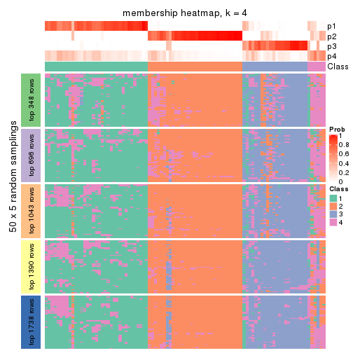
membership_heatmap(res, k = 5)
membership_heatmap(res, k = 6)
As soon as we have had the classes for columns, we can look for signatures which are significantly different between classes which can be candidate marks for certain classes. Following are the heatmaps for signatures.
Signature heatmaps where rows are scaled:
get_signatures(res, k = 2)
get_signatures(res, k = 3)

get_signatures(res, k = 4)
get_signatures(res, k = 5)
get_signatures(res, k = 6)
Signature heatmaps where rows are not scaled:
get_signatures(res, k = 2, scale_rows = FALSE)
get_signatures(res, k = 3, scale_rows = FALSE)
get_signatures(res, k = 4, scale_rows = FALSE)
get_signatures(res, k = 5, scale_rows = FALSE)
get_signatures(res, k = 6, scale_rows = FALSE)
Compare the overlap of signatures from different k:
compare_signatures(res)
get_signature() returns a data frame invisibly. TO get the list of signatures, the function
call should be assigned to a variable explicitly. In following code, if plot argument is set
to FALSE, no heatmap is plotted while only the differential analysis is performed.
# code only for demonstration
tb = get_signature(res, k = ..., plot = FALSE)
An example of the output of tb is:
#> which_row fdr mean_1 mean_2 scaled_mean_1 scaled_mean_2 km
#> 1 38 0.042760348 8.373488 9.131774 -0.5533452 0.5164555 1
#> 2 40 0.018707592 7.106213 8.469186 -0.6173731 0.5762149 1
#> 3 55 0.019134737 10.221463 11.207825 -0.6159697 0.5749050 1
#> 4 59 0.006059896 5.921854 7.869574 -0.6899429 0.6439467 1
#> 5 60 0.018055526 8.928898 10.211722 -0.6204761 0.5791110 1
#> 6 98 0.009384629 15.714769 14.887706 0.6635654 -0.6193277 2
...
The columns in tb are:
which_row: row indices corresponding to the input matrix.fdr: FDR for the differential test. mean_x: The mean value in group x.scaled_mean_x: The mean value in group x after rows are scaled.km: Row groups if k-means clustering is applied to rows.UMAP plot which shows how samples are separated.
dimension_reduction(res, k = 2, method = "UMAP")
dimension_reduction(res, k = 3, method = "UMAP")
dimension_reduction(res, k = 4, method = "UMAP")
dimension_reduction(res, k = 5, method = "UMAP")
dimension_reduction(res, k = 6, method = "UMAP")
Following heatmap shows how subgroups are split when increasing k:
collect_classes(res)
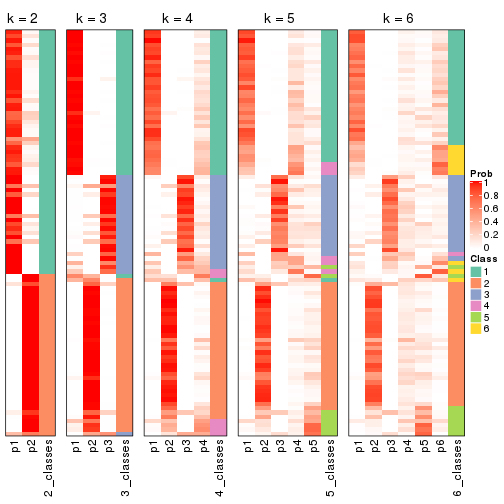
If matrix rows can be associated to genes, consider to use functional_enrichment(res,
...) to perform function enrichment for the signature genes. See this vignette for more detailed explanations.
The object with results only for a single top-value method and a single partition method can be extracted as:
res = res_list["MAD", "hclust"]
# you can also extract it by
# res = res_list["MAD:hclust"]
A summary of res and all the functions that can be applied to it:
res
#> A 'ConsensusPartition' object with k = 2, 3, 4, 5, 6.
#> On a matrix with 3475 rows and 95 columns.
#> Top rows (348, 696, 1043, 1390, 1738) are extracted by 'MAD' method.
#> Subgroups are detected by 'hclust' method.
#> Performed in total 1250 partitions by row resampling.
#> Best k for subgroups seems to be 2.
#>
#> Following methods can be applied to this 'ConsensusPartition' object:
#> [1] "cola_report" "collect_classes" "collect_plots"
#> [4] "collect_stats" "colnames" "compare_signatures"
#> [7] "consensus_heatmap" "dimension_reduction" "functional_enrichment"
#> [10] "get_anno_col" "get_anno" "get_classes"
#> [13] "get_consensus" "get_matrix" "get_membership"
#> [16] "get_param" "get_signatures" "get_stats"
#> [19] "is_best_k" "is_stable_k" "membership_heatmap"
#> [22] "ncol" "nrow" "plot_ecdf"
#> [25] "rownames" "select_partition_number" "show"
#> [28] "suggest_best_k" "test_to_known_factors"
collect_plots() function collects all the plots made from res for all k (number of partitions)
into one single page to provide an easy and fast comparison between different k.
collect_plots(res)
The plots are:
k and the heatmap of
predicted classes for each k.k.k.k.All the plots in panels can be made by individual functions and they are plotted later in this section.
select_partition_number() produces several plots showing different
statistics for choosing “optimized” k. There are following statistics:
k;k, the area increased is defined as \(A_k - A_{k-1}\).The detailed explanations of these statistics can be found in the cola vignette.
Generally speaking, lower PAC score, higher mean silhouette score or higher
concordance corresponds to better partition. Rand index and Jaccard index
measure how similar the current partition is compared to partition with k-1.
If they are too similar, we won't accept k is better than k-1.
select_partition_number(res)
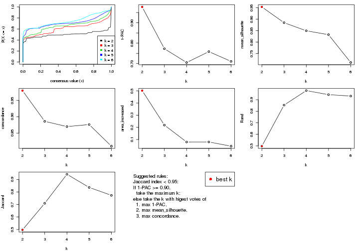
The numeric values for all these statistics can be obtained by get_stats().
get_stats(res)
#> k 1-PAC mean_silhouette concordance area_increased Rand Jaccard
#> 2 2 0.977 0.953 0.980 0.5025 0.497 0.497
#> 3 3 0.773 0.885 0.886 0.2185 0.853 0.710
#> 4 4 0.705 0.849 0.870 0.0794 0.978 0.941
#> 5 5 0.759 0.832 0.876 0.0796 0.944 0.836
#> 6 6 0.711 0.711 0.810 0.0450 0.931 0.773
suggest_best_k() suggests the best \(k\) based on these statistics. The rules are as follows:
suggest_best_k(res)
#> [1] 2
Following shows the table of the partitions (You need to click the show/hide
code output link to see it). The membership matrix (columns with name p*)
is inferred by
clue::cl_consensus()
function with the SE method. Basically the value in the membership matrix
represents the probability to belong to a certain group. The finall class
label for an item is determined with the group with highest probability it
belongs to.
In get_classes() function, the entropy is calculated from the membership
matrix and the silhouette score is calculated from the consensus matrix.
cbind(get_classes(res, k = 2), get_membership(res, k = 2))
#> class entropy silhouette p1 p2
#> SRR2062258 2 0.8555 0.620 0.280 0.720
#> SRR2062259 1 0.0000 0.981 1.000 0.000
#> SRR2062270 2 0.0000 0.977 0.000 1.000
#> SRR2062342 2 0.0000 0.977 0.000 1.000
#> SRR2062341 1 0.0000 0.981 1.000 0.000
#> SRR2062340 2 0.0000 0.977 0.000 1.000
#> SRR2062339 1 0.1414 0.967 0.980 0.020
#> SRR2062348 1 0.0000 0.981 1.000 0.000
#> SRR2062347 2 0.0000 0.977 0.000 1.000
#> SRR2062351 1 0.0000 0.981 1.000 0.000
#> SRR2062350 1 0.0000 0.981 1.000 0.000
#> SRR2062349 2 0.0000 0.977 0.000 1.000
#> SRR2062346 1 0.0000 0.981 1.000 0.000
#> SRR2062345 2 0.0000 0.977 0.000 1.000
#> SRR2062344 2 0.0000 0.977 0.000 1.000
#> SRR2062343 2 0.0000 0.977 0.000 1.000
#> SRR2062354 1 0.0000 0.981 1.000 0.000
#> SRR2062353 2 0.0000 0.977 0.000 1.000
#> SRR2062352 1 0.0000 0.981 1.000 0.000
#> SRR2063021 1 0.2423 0.951 0.960 0.040
#> SRR2062356 1 0.0000 0.981 1.000 0.000
#> SRR2063025 2 0.0000 0.977 0.000 1.000
#> SRR2063027 1 0.0000 0.981 1.000 0.000
#> SRR2063023 2 0.4298 0.896 0.088 0.912
#> SRR2062355 2 0.7528 0.734 0.216 0.784
#> SRR2063030 1 0.0000 0.981 1.000 0.000
#> SRR2064285 1 0.5059 0.873 0.888 0.112
#> SRR2063034 1 0.0000 0.981 1.000 0.000
#> SRR2063032 1 0.9944 0.145 0.544 0.456
#> SRR2063031 1 0.0000 0.981 1.000 0.000
#> SRR2063029 2 0.0000 0.977 0.000 1.000
#> SRR2063028 1 0.0000 0.981 1.000 0.000
#> SRR2064308 2 0.0000 0.977 0.000 1.000
#> SRR2064310 2 0.0376 0.974 0.004 0.996
#> SRR2064312 1 0.0000 0.981 1.000 0.000
#> SRR2064314 2 0.0000 0.977 0.000 1.000
#> SRR2064315 1 0.0000 0.981 1.000 0.000
#> SRR2064317 2 0.0000 0.977 0.000 1.000
#> SRR2064318 1 0.0000 0.981 1.000 0.000
#> SRR2064319 1 0.0672 0.976 0.992 0.008
#> SRR2064320 2 0.0000 0.977 0.000 1.000
#> SRR2064321 2 0.0000 0.977 0.000 1.000
#> SRR2064322 2 0.0000 0.977 0.000 1.000
#> SRR2064323 2 0.8386 0.642 0.268 0.732
#> SRR2064324 2 0.0000 0.977 0.000 1.000
#> SRR2064325 1 0.0000 0.981 1.000 0.000
#> SRR2064326 1 0.2423 0.951 0.960 0.040
#> SRR2064327 2 0.0000 0.977 0.000 1.000
#> SRR2064329 1 0.0000 0.981 1.000 0.000
#> SRR2064328 2 0.0000 0.977 0.000 1.000
#> SRR2064330 2 0.0000 0.977 0.000 1.000
#> SRR2064331 2 0.0000 0.977 0.000 1.000
#> SRR2064332 2 0.0000 0.977 0.000 1.000
#> SRR2064333 1 0.0000 0.981 1.000 0.000
#> SRR2064334 2 0.0000 0.977 0.000 1.000
#> SRR2064335 2 0.0000 0.977 0.000 1.000
#> SRR2064436 1 0.0000 0.981 1.000 0.000
#> SRR2064457 1 0.0000 0.981 1.000 0.000
#> SRR2064458 2 0.2423 0.943 0.040 0.960
#> SRR2064459 2 0.0000 0.977 0.000 1.000
#> SRR2064460 1 0.0000 0.981 1.000 0.000
#> SRR2064461 2 0.0000 0.977 0.000 1.000
#> SRR2064462 1 0.0000 0.981 1.000 0.000
#> SRR2064534 2 0.0000 0.977 0.000 1.000
#> SRR2064535 2 0.0000 0.977 0.000 1.000
#> SRR2064536 2 0.0000 0.977 0.000 1.000
#> SRR2064537 1 0.2423 0.951 0.960 0.040
#> SRR2064538 1 0.0000 0.981 1.000 0.000
#> SRR2064539 2 0.0000 0.977 0.000 1.000
#> SRR2064540 1 0.0000 0.981 1.000 0.000
#> SRR2064541 2 0.0000 0.977 0.000 1.000
#> SRR2064543 1 0.0000 0.981 1.000 0.000
#> SRR2064542 1 0.0000 0.981 1.000 0.000
#> SRR2064544 2 0.0000 0.977 0.000 1.000
#> SRR2064545 2 0.0000 0.977 0.000 1.000
#> SRR2064546 1 0.0000 0.981 1.000 0.000
#> SRR2064547 1 0.0000 0.981 1.000 0.000
#> SRR2064548 2 0.0000 0.977 0.000 1.000
#> SRR2064550 2 0.7528 0.734 0.216 0.784
#> SRR2064549 1 0.2423 0.951 0.960 0.040
#> SRR2064551 2 0.0000 0.977 0.000 1.000
#> SRR2064552 1 0.0000 0.981 1.000 0.000
#> SRR2064553 2 0.0000 0.977 0.000 1.000
#> SRR2064554 1 0.2423 0.951 0.960 0.040
#> SRR2064555 2 0.0000 0.977 0.000 1.000
#> SRR2064556 1 0.0000 0.981 1.000 0.000
#> SRR2064559 2 0.0000 0.977 0.000 1.000
#> SRR2064558 2 0.0000 0.977 0.000 1.000
#> SRR2064557 2 0.0000 0.977 0.000 1.000
#> SRR2064560 1 0.0000 0.981 1.000 0.000
#> SRR2064561 2 0.0000 0.977 0.000 1.000
#> SRR2064562 1 0.0376 0.978 0.996 0.004
#> SRR2064564 1 0.0376 0.978 0.996 0.004
#> SRR2064563 2 0.0000 0.977 0.000 1.000
#> SRR2064565 2 0.0000 0.977 0.000 1.000
cbind(get_classes(res, k = 3), get_membership(res, k = 3))
#> class entropy silhouette p1 p2 p3
#> SRR2062258 2 0.7398 0.305 0.180 0.700 0.120
#> SRR2062259 1 0.1964 0.937 0.944 0.056 0.000
#> SRR2062270 3 0.2878 0.816 0.000 0.096 0.904
#> SRR2062342 2 0.5905 0.922 0.000 0.648 0.352
#> SRR2062341 1 0.0000 0.949 1.000 0.000 0.000
#> SRR2062340 2 0.5905 0.922 0.000 0.648 0.352
#> SRR2062339 1 0.1482 0.940 0.968 0.012 0.020
#> SRR2062348 1 0.3879 0.890 0.848 0.152 0.000
#> SRR2062347 2 0.5905 0.922 0.000 0.648 0.352
#> SRR2062351 1 0.0424 0.948 0.992 0.008 0.000
#> SRR2062350 1 0.0592 0.949 0.988 0.012 0.000
#> SRR2062349 2 0.5905 0.922 0.000 0.648 0.352
#> SRR2062346 1 0.0592 0.949 0.988 0.012 0.000
#> SRR2062345 2 0.5905 0.922 0.000 0.648 0.352
#> SRR2062344 3 0.0000 0.907 0.000 0.000 1.000
#> SRR2062343 2 0.5905 0.922 0.000 0.648 0.352
#> SRR2062354 1 0.3551 0.903 0.868 0.132 0.000
#> SRR2062353 2 0.5905 0.922 0.000 0.648 0.352
#> SRR2062352 1 0.1289 0.946 0.968 0.032 0.000
#> SRR2063021 1 0.5860 0.821 0.748 0.228 0.024
#> SRR2062356 1 0.2356 0.932 0.928 0.072 0.000
#> SRR2063025 2 0.5905 0.922 0.000 0.648 0.352
#> SRR2063027 1 0.0592 0.949 0.988 0.012 0.000
#> SRR2063023 3 0.3091 0.820 0.072 0.016 0.912
#> SRR2062355 3 0.6349 0.688 0.140 0.092 0.768
#> SRR2063030 1 0.0592 0.948 0.988 0.012 0.000
#> SRR2064285 1 0.3921 0.867 0.872 0.016 0.112
#> SRR2063034 1 0.0424 0.948 0.992 0.008 0.000
#> SRR2063032 2 0.8249 -0.161 0.424 0.500 0.076
#> SRR2063031 1 0.4346 0.870 0.816 0.184 0.000
#> SRR2063029 2 0.5905 0.922 0.000 0.648 0.352
#> SRR2063028 1 0.1163 0.947 0.972 0.028 0.000
#> SRR2064308 3 0.3038 0.805 0.000 0.104 0.896
#> SRR2064310 2 0.6126 0.917 0.004 0.644 0.352
#> SRR2064312 1 0.0892 0.948 0.980 0.020 0.000
#> SRR2064314 2 0.5905 0.922 0.000 0.648 0.352
#> SRR2064315 1 0.0424 0.950 0.992 0.008 0.000
#> SRR2064317 2 0.5905 0.922 0.000 0.648 0.352
#> SRR2064318 1 0.2165 0.936 0.936 0.064 0.000
#> SRR2064319 1 0.1170 0.945 0.976 0.016 0.008
#> SRR2064320 2 0.5882 0.918 0.000 0.652 0.348
#> SRR2064321 3 0.0000 0.907 0.000 0.000 1.000
#> SRR2064322 2 0.5905 0.922 0.000 0.648 0.352
#> SRR2064323 2 0.7595 0.326 0.176 0.688 0.136
#> SRR2064324 2 0.5905 0.922 0.000 0.648 0.352
#> SRR2064325 1 0.0592 0.950 0.988 0.012 0.000
#> SRR2064326 1 0.5860 0.821 0.748 0.228 0.024
#> SRR2064327 3 0.0000 0.907 0.000 0.000 1.000
#> SRR2064329 1 0.3619 0.901 0.864 0.136 0.000
#> SRR2064328 2 0.5905 0.922 0.000 0.648 0.352
#> SRR2064330 2 0.5988 0.887 0.000 0.632 0.368
#> SRR2064331 3 0.0000 0.907 0.000 0.000 1.000
#> SRR2064332 3 0.0000 0.907 0.000 0.000 1.000
#> SRR2064333 1 0.2796 0.923 0.908 0.092 0.000
#> SRR2064334 2 0.5905 0.922 0.000 0.648 0.352
#> SRR2064335 2 0.5905 0.922 0.000 0.648 0.352
#> SRR2064436 1 0.0424 0.948 0.992 0.008 0.000
#> SRR2064457 1 0.0747 0.949 0.984 0.016 0.000
#> SRR2064458 2 0.6333 0.790 0.012 0.656 0.332
#> SRR2064459 3 0.0000 0.907 0.000 0.000 1.000
#> SRR2064460 1 0.0424 0.948 0.992 0.008 0.000
#> SRR2064461 2 0.5905 0.922 0.000 0.648 0.352
#> SRR2064462 1 0.0592 0.950 0.988 0.012 0.000
#> SRR2064534 2 0.5905 0.922 0.000 0.648 0.352
#> SRR2064535 3 0.0000 0.907 0.000 0.000 1.000
#> SRR2064536 3 0.3038 0.805 0.000 0.104 0.896
#> SRR2064537 1 0.5860 0.821 0.748 0.228 0.024
#> SRR2064538 1 0.0424 0.950 0.992 0.008 0.000
#> SRR2064539 3 0.3038 0.805 0.000 0.104 0.896
#> SRR2064540 1 0.0424 0.948 0.992 0.008 0.000
#> SRR2064541 2 0.5905 0.922 0.000 0.648 0.352
#> SRR2064543 1 0.0592 0.949 0.988 0.012 0.000
#> SRR2064542 1 0.0892 0.949 0.980 0.020 0.000
#> SRR2064544 2 0.5905 0.922 0.000 0.648 0.352
#> SRR2064545 2 0.5905 0.922 0.000 0.648 0.352
#> SRR2064546 1 0.0592 0.950 0.988 0.012 0.000
#> SRR2064547 1 0.0424 0.948 0.992 0.008 0.000
#> SRR2064548 2 0.5905 0.922 0.000 0.648 0.352
#> SRR2064550 3 0.6349 0.688 0.140 0.092 0.768
#> SRR2064549 1 0.5860 0.821 0.748 0.228 0.024
#> SRR2064551 2 0.5905 0.922 0.000 0.648 0.352
#> SRR2064552 1 0.1753 0.941 0.952 0.048 0.000
#> SRR2064553 3 0.0000 0.907 0.000 0.000 1.000
#> SRR2064554 1 0.5860 0.821 0.748 0.228 0.024
#> SRR2064555 3 0.0000 0.907 0.000 0.000 1.000
#> SRR2064556 1 0.0424 0.948 0.992 0.008 0.000
#> SRR2064559 2 0.5905 0.922 0.000 0.648 0.352
#> SRR2064558 3 0.0000 0.907 0.000 0.000 1.000
#> SRR2064557 2 0.5905 0.922 0.000 0.648 0.352
#> SRR2064560 1 0.0424 0.948 0.992 0.008 0.000
#> SRR2064561 2 0.5988 0.902 0.000 0.632 0.368
#> SRR2064562 1 0.0661 0.948 0.988 0.008 0.004
#> SRR2064564 1 0.0661 0.948 0.988 0.008 0.004
#> SRR2064563 2 0.5905 0.922 0.000 0.648 0.352
#> SRR2064565 2 0.5905 0.922 0.000 0.648 0.352
cbind(get_classes(res, k = 4), get_membership(res, k = 4))
#> class entropy silhouette p1 p2 p3 p4
#> SRR2062258 4 0.8433 0.767 0.068 0.260 0.160 0.512
#> SRR2062259 1 0.2714 0.840 0.884 0.000 0.004 0.112
#> SRR2062270 3 0.4643 0.793 0.000 0.344 0.656 0.000
#> SRR2062342 2 0.0000 0.972 0.000 1.000 0.000 0.000
#> SRR2062341 1 0.1042 0.873 0.972 0.000 0.008 0.020
#> SRR2062340 2 0.0188 0.970 0.000 0.996 0.000 0.004
#> SRR2062339 1 0.1488 0.860 0.956 0.000 0.032 0.012
#> SRR2062348 1 0.4699 0.656 0.676 0.000 0.004 0.320
#> SRR2062347 2 0.0000 0.972 0.000 1.000 0.000 0.000
#> SRR2062351 1 0.0336 0.872 0.992 0.000 0.000 0.008
#> SRR2062350 1 0.1209 0.875 0.964 0.000 0.004 0.032
#> SRR2062349 2 0.0000 0.972 0.000 1.000 0.000 0.000
#> SRR2062346 1 0.0657 0.874 0.984 0.000 0.004 0.012
#> SRR2062345 2 0.0000 0.972 0.000 1.000 0.000 0.000
#> SRR2062344 3 0.4290 0.892 0.000 0.212 0.772 0.016
#> SRR2062343 2 0.0000 0.972 0.000 1.000 0.000 0.000
#> SRR2062354 1 0.3942 0.750 0.764 0.000 0.000 0.236
#> SRR2062353 2 0.0000 0.972 0.000 1.000 0.000 0.000
#> SRR2062352 1 0.2053 0.864 0.924 0.000 0.004 0.072
#> SRR2063021 1 0.4996 0.429 0.516 0.000 0.000 0.484
#> SRR2062356 1 0.2589 0.840 0.884 0.000 0.000 0.116
#> SRR2063025 2 0.0000 0.972 0.000 1.000 0.000 0.000
#> SRR2063027 1 0.0804 0.874 0.980 0.000 0.008 0.012
#> SRR2063023 3 0.5913 0.802 0.028 0.176 0.728 0.068
#> SRR2062355 3 0.8020 0.640 0.076 0.160 0.584 0.180
#> SRR2063030 1 0.0672 0.871 0.984 0.000 0.008 0.008
#> SRR2064285 1 0.3443 0.756 0.848 0.000 0.136 0.016
#> SRR2063034 1 0.0804 0.871 0.980 0.000 0.008 0.012
#> SRR2063032 4 0.9323 0.552 0.296 0.128 0.172 0.404
#> SRR2063031 1 0.4888 0.541 0.588 0.000 0.000 0.412
#> SRR2063029 2 0.0000 0.972 0.000 1.000 0.000 0.000
#> SRR2063028 1 0.1978 0.864 0.928 0.000 0.004 0.068
#> SRR2064308 3 0.4697 0.779 0.000 0.356 0.644 0.000
#> SRR2064310 2 0.2814 0.842 0.000 0.868 0.000 0.132
#> SRR2064312 1 0.1576 0.870 0.948 0.000 0.004 0.048
#> SRR2064314 2 0.0817 0.959 0.000 0.976 0.000 0.024
#> SRR2064315 1 0.0895 0.875 0.976 0.000 0.004 0.020
#> SRR2064317 2 0.0000 0.972 0.000 1.000 0.000 0.000
#> SRR2064318 1 0.2530 0.844 0.888 0.000 0.000 0.112
#> SRR2064319 1 0.1182 0.869 0.968 0.000 0.016 0.016
#> SRR2064320 2 0.0469 0.966 0.000 0.988 0.000 0.012
#> SRR2064321 3 0.3726 0.892 0.000 0.212 0.788 0.000
#> SRR2064322 2 0.0000 0.972 0.000 1.000 0.000 0.000
#> SRR2064323 4 0.8498 0.762 0.068 0.260 0.168 0.504
#> SRR2064324 2 0.0000 0.972 0.000 1.000 0.000 0.000
#> SRR2064325 1 0.0817 0.875 0.976 0.000 0.000 0.024
#> SRR2064326 1 0.4996 0.429 0.516 0.000 0.000 0.484
#> SRR2064327 3 0.4290 0.892 0.000 0.212 0.772 0.016
#> SRR2064329 1 0.4188 0.740 0.752 0.000 0.004 0.244
#> SRR2064328 2 0.0000 0.972 0.000 1.000 0.000 0.000
#> SRR2064330 2 0.2363 0.904 0.000 0.920 0.024 0.056
#> SRR2064331 3 0.4290 0.892 0.000 0.212 0.772 0.016
#> SRR2064332 3 0.3764 0.892 0.000 0.216 0.784 0.000
#> SRR2064333 1 0.3681 0.802 0.816 0.000 0.008 0.176
#> SRR2064334 2 0.0000 0.972 0.000 1.000 0.000 0.000
#> SRR2064335 2 0.0000 0.972 0.000 1.000 0.000 0.000
#> SRR2064436 1 0.0524 0.870 0.988 0.000 0.008 0.004
#> SRR2064457 1 0.1211 0.874 0.960 0.000 0.000 0.040
#> SRR2064458 2 0.4252 0.601 0.000 0.744 0.004 0.252
#> SRR2064459 3 0.3726 0.892 0.000 0.212 0.788 0.000
#> SRR2064460 1 0.0779 0.869 0.980 0.000 0.016 0.004
#> SRR2064461 2 0.0000 0.972 0.000 1.000 0.000 0.000
#> SRR2064462 1 0.1209 0.874 0.964 0.000 0.004 0.032
#> SRR2064534 2 0.0000 0.972 0.000 1.000 0.000 0.000
#> SRR2064535 3 0.4290 0.892 0.000 0.212 0.772 0.016
#> SRR2064536 3 0.4679 0.785 0.000 0.352 0.648 0.000
#> SRR2064537 1 0.4996 0.429 0.516 0.000 0.000 0.484
#> SRR2064538 1 0.0937 0.873 0.976 0.000 0.012 0.012
#> SRR2064539 3 0.4679 0.785 0.000 0.352 0.648 0.000
#> SRR2064540 1 0.0000 0.872 1.000 0.000 0.000 0.000
#> SRR2064541 2 0.0188 0.970 0.000 0.996 0.000 0.004
#> SRR2064543 1 0.1209 0.874 0.964 0.000 0.004 0.032
#> SRR2064542 1 0.2256 0.857 0.924 0.000 0.020 0.056
#> SRR2064544 2 0.1474 0.936 0.000 0.948 0.000 0.052
#> SRR2064545 2 0.1022 0.953 0.000 0.968 0.000 0.032
#> SRR2064546 1 0.0921 0.873 0.972 0.000 0.000 0.028
#> SRR2064547 1 0.0336 0.872 0.992 0.000 0.000 0.008
#> SRR2064548 2 0.1022 0.954 0.000 0.968 0.000 0.032
#> SRR2064550 3 0.8020 0.640 0.076 0.160 0.584 0.180
#> SRR2064549 1 0.4996 0.429 0.516 0.000 0.000 0.484
#> SRR2064551 2 0.0000 0.972 0.000 1.000 0.000 0.000
#> SRR2064552 1 0.2345 0.851 0.900 0.000 0.000 0.100
#> SRR2064553 3 0.3726 0.892 0.000 0.212 0.788 0.000
#> SRR2064554 1 0.4996 0.429 0.516 0.000 0.000 0.484
#> SRR2064555 3 0.3726 0.892 0.000 0.212 0.788 0.000
#> SRR2064556 1 0.0188 0.872 0.996 0.000 0.004 0.000
#> SRR2064559 2 0.0000 0.972 0.000 1.000 0.000 0.000
#> SRR2064558 3 0.4290 0.892 0.000 0.212 0.772 0.016
#> SRR2064557 2 0.0000 0.972 0.000 1.000 0.000 0.000
#> SRR2064560 1 0.0804 0.870 0.980 0.000 0.008 0.012
#> SRR2064561 2 0.2773 0.885 0.000 0.900 0.028 0.072
#> SRR2064562 1 0.1151 0.866 0.968 0.000 0.024 0.008
#> SRR2064564 1 0.1151 0.866 0.968 0.000 0.024 0.008
#> SRR2064563 2 0.0000 0.972 0.000 1.000 0.000 0.000
#> SRR2064565 2 0.0817 0.959 0.000 0.976 0.000 0.024
cbind(get_classes(res, k = 5), get_membership(res, k = 5))
#> class entropy silhouette p1 p2 p3 p4 p5
#> SRR2062258 5 0.2266 0.781 0.016 0.064 0.000 0.008 0.912
#> SRR2062259 1 0.3707 0.676 0.768 0.000 0.004 0.220 0.008
#> SRR2062270 3 0.3039 0.752 0.000 0.192 0.808 0.000 0.000
#> SRR2062342 2 0.0000 0.970 0.000 1.000 0.000 0.000 0.000
#> SRR2062341 1 0.2068 0.851 0.904 0.000 0.000 0.092 0.004
#> SRR2062340 2 0.0162 0.969 0.000 0.996 0.000 0.000 0.004
#> SRR2062339 1 0.2393 0.818 0.900 0.000 0.016 0.080 0.004
#> SRR2062348 4 0.4826 0.504 0.472 0.000 0.000 0.508 0.020
#> SRR2062347 2 0.0000 0.970 0.000 1.000 0.000 0.000 0.000
#> SRR2062351 1 0.1430 0.850 0.944 0.000 0.004 0.052 0.000
#> SRR2062350 1 0.2358 0.846 0.888 0.000 0.000 0.104 0.008
#> SRR2062349 2 0.0000 0.970 0.000 1.000 0.000 0.000 0.000
#> SRR2062346 1 0.1798 0.849 0.928 0.000 0.004 0.064 0.004
#> SRR2062345 2 0.0000 0.970 0.000 1.000 0.000 0.000 0.000
#> SRR2062344 3 0.2426 0.853 0.000 0.036 0.900 0.064 0.000
#> SRR2062343 2 0.0000 0.970 0.000 1.000 0.000 0.000 0.000
#> SRR2062354 1 0.4225 0.217 0.632 0.000 0.000 0.364 0.004
#> SRR2062353 2 0.0000 0.970 0.000 1.000 0.000 0.000 0.000
#> SRR2062352 1 0.2770 0.810 0.864 0.000 0.008 0.124 0.004
#> SRR2063021 4 0.5087 0.918 0.292 0.000 0.000 0.644 0.064
#> SRR2062356 1 0.3647 0.640 0.764 0.000 0.004 0.228 0.004
#> SRR2063025 2 0.0000 0.970 0.000 1.000 0.000 0.000 0.000
#> SRR2063027 1 0.1991 0.849 0.916 0.000 0.004 0.076 0.004
#> SRR2063023 3 0.4153 0.689 0.000 0.008 0.768 0.192 0.032
#> SRR2062355 3 0.5758 0.643 0.048 0.024 0.720 0.144 0.064
#> SRR2063030 1 0.1430 0.849 0.944 0.000 0.004 0.052 0.000
#> SRR2064285 1 0.3595 0.739 0.828 0.000 0.120 0.048 0.004
#> SRR2063034 1 0.1357 0.847 0.948 0.000 0.004 0.048 0.000
#> SRR2063032 5 0.3819 0.387 0.228 0.000 0.000 0.016 0.756
#> SRR2063031 4 0.4015 0.851 0.348 0.000 0.000 0.652 0.000
#> SRR2063029 2 0.0000 0.970 0.000 1.000 0.000 0.000 0.000
#> SRR2063028 1 0.2648 0.785 0.848 0.000 0.000 0.152 0.000
#> SRR2064308 3 0.3424 0.683 0.000 0.240 0.760 0.000 0.000
#> SRR2064310 2 0.3399 0.803 0.000 0.812 0.000 0.020 0.168
#> SRR2064312 1 0.2488 0.831 0.872 0.000 0.004 0.124 0.000
#> SRR2064314 2 0.0807 0.960 0.000 0.976 0.000 0.012 0.012
#> SRR2064315 1 0.2020 0.843 0.900 0.000 0.000 0.100 0.000
#> SRR2064317 2 0.0000 0.970 0.000 1.000 0.000 0.000 0.000
#> SRR2064318 1 0.3676 0.648 0.760 0.000 0.004 0.232 0.004
#> SRR2064319 1 0.1569 0.844 0.944 0.000 0.004 0.044 0.008
#> SRR2064320 2 0.0404 0.965 0.000 0.988 0.000 0.000 0.012
#> SRR2064321 3 0.0963 0.856 0.000 0.036 0.964 0.000 0.000
#> SRR2064322 2 0.0000 0.970 0.000 1.000 0.000 0.000 0.000
#> SRR2064323 5 0.2663 0.780 0.016 0.064 0.012 0.008 0.900
#> SRR2064324 2 0.0000 0.970 0.000 1.000 0.000 0.000 0.000
#> SRR2064325 1 0.1408 0.850 0.948 0.000 0.000 0.044 0.008
#> SRR2064326 4 0.5087 0.918 0.292 0.000 0.000 0.644 0.064
#> SRR2064327 3 0.2426 0.853 0.000 0.036 0.900 0.064 0.000
#> SRR2064329 1 0.4299 0.107 0.608 0.000 0.000 0.388 0.004
#> SRR2064328 2 0.0000 0.970 0.000 1.000 0.000 0.000 0.000
#> SRR2064330 2 0.2104 0.913 0.000 0.916 0.024 0.000 0.060
#> SRR2064331 3 0.2426 0.853 0.000 0.036 0.900 0.064 0.000
#> SRR2064332 3 0.1484 0.857 0.000 0.048 0.944 0.008 0.000
#> SRR2064333 1 0.4302 0.364 0.648 0.000 0.004 0.344 0.004
#> SRR2064334 2 0.0000 0.970 0.000 1.000 0.000 0.000 0.000
#> SRR2064335 2 0.0000 0.970 0.000 1.000 0.000 0.000 0.000
#> SRR2064436 1 0.1544 0.846 0.932 0.000 0.000 0.068 0.000
#> SRR2064457 1 0.2445 0.823 0.884 0.000 0.004 0.108 0.004
#> SRR2064458 2 0.4252 0.616 0.000 0.700 0.000 0.020 0.280
#> SRR2064459 3 0.1251 0.857 0.000 0.036 0.956 0.008 0.000
#> SRR2064460 1 0.1502 0.847 0.940 0.000 0.004 0.056 0.000
#> SRR2064461 2 0.0000 0.970 0.000 1.000 0.000 0.000 0.000
#> SRR2064462 1 0.2536 0.832 0.868 0.000 0.004 0.128 0.000
#> SRR2064534 2 0.0000 0.970 0.000 1.000 0.000 0.000 0.000
#> SRR2064535 3 0.2426 0.853 0.000 0.036 0.900 0.064 0.000
#> SRR2064536 3 0.3109 0.743 0.000 0.200 0.800 0.000 0.000
#> SRR2064537 4 0.5087 0.918 0.292 0.000 0.000 0.644 0.064
#> SRR2064538 1 0.2536 0.828 0.868 0.000 0.000 0.128 0.004
#> SRR2064539 3 0.3109 0.743 0.000 0.200 0.800 0.000 0.000
#> SRR2064540 1 0.1121 0.848 0.956 0.000 0.000 0.044 0.000
#> SRR2064541 2 0.0162 0.969 0.000 0.996 0.000 0.004 0.000
#> SRR2064543 1 0.2284 0.846 0.896 0.000 0.004 0.096 0.004
#> SRR2064542 1 0.3779 0.783 0.832 0.000 0.028 0.104 0.036
#> SRR2064544 2 0.1740 0.929 0.000 0.932 0.000 0.012 0.056
#> SRR2064545 2 0.1485 0.942 0.000 0.948 0.000 0.020 0.032
#> SRR2064546 1 0.1544 0.847 0.932 0.000 0.000 0.068 0.000
#> SRR2064547 1 0.1410 0.850 0.940 0.000 0.000 0.060 0.000
#> SRR2064548 2 0.1117 0.953 0.000 0.964 0.000 0.016 0.020
#> SRR2064550 3 0.5758 0.643 0.048 0.024 0.720 0.144 0.064
#> SRR2064549 4 0.5087 0.918 0.292 0.000 0.000 0.644 0.064
#> SRR2064551 2 0.0000 0.970 0.000 1.000 0.000 0.000 0.000
#> SRR2064552 1 0.3143 0.732 0.796 0.000 0.000 0.204 0.000
#> SRR2064553 3 0.1043 0.857 0.000 0.040 0.960 0.000 0.000
#> SRR2064554 4 0.5087 0.918 0.292 0.000 0.000 0.644 0.064
#> SRR2064555 3 0.0963 0.856 0.000 0.036 0.964 0.000 0.000
#> SRR2064556 1 0.1608 0.841 0.928 0.000 0.000 0.072 0.000
#> SRR2064559 2 0.0000 0.970 0.000 1.000 0.000 0.000 0.000
#> SRR2064558 3 0.2426 0.853 0.000 0.036 0.900 0.064 0.000
#> SRR2064557 2 0.0000 0.970 0.000 1.000 0.000 0.000 0.000
#> SRR2064560 1 0.1892 0.847 0.916 0.000 0.000 0.080 0.004
#> SRR2064561 2 0.3333 0.857 0.000 0.856 0.028 0.020 0.096
#> SRR2064562 1 0.2392 0.816 0.888 0.000 0.004 0.104 0.004
#> SRR2064564 1 0.2339 0.815 0.892 0.000 0.004 0.100 0.004
#> SRR2064563 2 0.0000 0.970 0.000 1.000 0.000 0.000 0.000
#> SRR2064565 2 0.1117 0.952 0.000 0.964 0.000 0.016 0.020
cbind(get_classes(res, k = 6), get_membership(res, k = 6))
#> class entropy silhouette p1 p2 p3 p4 p5 p6
#> SRR2062258 5 0.1226 0.7922 0.000 0.040 0.000 0.004 0.952 NA
#> SRR2062259 4 0.5368 -0.2247 0.376 0.000 0.000 0.508 0.000 NA
#> SRR2062270 3 0.2562 0.7219 0.000 0.172 0.828 0.000 0.000 NA
#> SRR2062342 2 0.0000 0.9534 0.000 1.000 0.000 0.000 0.000 NA
#> SRR2062341 1 0.5369 0.7087 0.540 0.000 0.000 0.332 0.000 NA
#> SRR2062340 2 0.0146 0.9518 0.000 0.996 0.000 0.000 0.000 NA
#> SRR2062339 1 0.4893 0.7390 0.680 0.000 0.016 0.212 0.000 NA
#> SRR2062348 4 0.3936 0.5146 0.124 0.000 0.000 0.780 0.008 NA
#> SRR2062347 2 0.0000 0.9534 0.000 1.000 0.000 0.000 0.000 NA
#> SRR2062351 1 0.5496 0.6996 0.544 0.000 0.000 0.296 0.000 NA
#> SRR2062350 1 0.4703 0.7562 0.620 0.000 0.000 0.312 0.000 NA
#> SRR2062349 2 0.0000 0.9534 0.000 1.000 0.000 0.000 0.000 NA
#> SRR2062346 1 0.4867 0.7612 0.608 0.000 0.004 0.320 0.000 NA
#> SRR2062345 2 0.0000 0.9534 0.000 1.000 0.000 0.000 0.000 NA
#> SRR2062344 3 0.2500 0.8125 0.116 0.004 0.868 0.000 0.000 NA
#> SRR2062343 2 0.0000 0.9534 0.000 1.000 0.000 0.000 0.000 NA
#> SRR2062354 4 0.3946 0.4241 0.168 0.000 0.000 0.756 0.000 NA
#> SRR2062353 2 0.0000 0.9534 0.000 1.000 0.000 0.000 0.000 NA
#> SRR2062352 1 0.5067 0.5517 0.488 0.000 0.000 0.436 0.000 NA
#> SRR2063021 4 0.2554 0.5527 0.000 0.000 0.000 0.876 0.076 NA
#> SRR2062356 4 0.5383 0.2409 0.248 0.000 0.000 0.580 0.000 NA
#> SRR2063025 2 0.0000 0.9534 0.000 1.000 0.000 0.000 0.000 NA
#> SRR2063027 1 0.4812 0.7530 0.588 0.000 0.000 0.344 0.000 NA
#> SRR2063023 3 0.4653 0.6234 0.120 0.000 0.684 0.000 0.000 NA
#> SRR2062355 3 0.4560 0.6306 0.000 0.004 0.740 0.160 0.072 NA
#> SRR2063030 1 0.4603 0.7769 0.644 0.000 0.000 0.288 0.000 NA
#> SRR2064285 1 0.6302 0.6495 0.572 0.000 0.108 0.212 0.000 NA
#> SRR2063034 1 0.4946 0.7527 0.616 0.000 0.000 0.284 0.000 NA
#> SRR2063032 5 0.3888 0.4542 0.016 0.000 0.000 0.208 0.752 NA
#> SRR2063031 4 0.1477 0.5646 0.004 0.000 0.000 0.940 0.008 NA
#> SRR2063029 2 0.0000 0.9534 0.000 1.000 0.000 0.000 0.000 NA
#> SRR2063028 4 0.5153 -0.4809 0.452 0.000 0.000 0.464 0.000 NA
#> SRR2064308 3 0.2969 0.6470 0.000 0.224 0.776 0.000 0.000 NA
#> SRR2064310 2 0.4586 0.6086 0.000 0.660 0.000 0.000 0.076 NA
#> SRR2064312 1 0.5117 0.6994 0.548 0.000 0.000 0.360 0.000 NA
#> SRR2064314 2 0.0790 0.9391 0.000 0.968 0.000 0.000 0.000 NA
#> SRR2064315 1 0.5044 0.7298 0.584 0.000 0.000 0.320 0.000 NA
#> SRR2064317 2 0.0000 0.9534 0.000 1.000 0.000 0.000 0.000 NA
#> SRR2064318 4 0.4854 0.0495 0.292 0.000 0.000 0.620 0.000 NA
#> SRR2064319 1 0.4954 0.7512 0.628 0.000 0.000 0.260 0.000 NA
#> SRR2064320 2 0.0508 0.9471 0.000 0.984 0.000 0.000 0.004 NA
#> SRR2064321 3 0.0146 0.8245 0.000 0.004 0.996 0.000 0.000 NA
#> SRR2064322 2 0.0000 0.9534 0.000 1.000 0.000 0.000 0.000 NA
#> SRR2064323 5 0.1624 0.7878 0.000 0.044 0.012 0.000 0.936 NA
#> SRR2064324 2 0.0000 0.9534 0.000 1.000 0.000 0.000 0.000 NA
#> SRR2064325 1 0.4786 0.7500 0.584 0.000 0.000 0.352 0.000 NA
#> SRR2064326 4 0.2554 0.5527 0.000 0.000 0.000 0.876 0.076 NA
#> SRR2064327 3 0.2500 0.8125 0.116 0.004 0.868 0.000 0.000 NA
#> SRR2064329 4 0.4195 0.4239 0.200 0.000 0.000 0.724 0.000 NA
#> SRR2064328 2 0.0000 0.9534 0.000 1.000 0.000 0.000 0.000 NA
#> SRR2064330 2 0.2510 0.8849 0.000 0.892 0.024 0.000 0.024 NA
#> SRR2064331 3 0.2500 0.8125 0.116 0.004 0.868 0.000 0.000 NA
#> SRR2064332 3 0.1059 0.8273 0.016 0.016 0.964 0.000 0.000 NA
#> SRR2064333 4 0.5095 0.3993 0.188 0.000 0.000 0.632 0.000 NA
#> SRR2064334 2 0.0000 0.9534 0.000 1.000 0.000 0.000 0.000 NA
#> SRR2064335 2 0.0000 0.9534 0.000 1.000 0.000 0.000 0.000 NA
#> SRR2064436 1 0.4274 0.7756 0.676 0.000 0.000 0.276 0.000 NA
#> SRR2064457 1 0.5508 0.4751 0.440 0.000 0.000 0.432 0.000 NA
#> SRR2064458 2 0.5413 0.4347 0.000 0.580 0.000 0.000 0.192 NA
#> SRR2064459 3 0.0748 0.8255 0.016 0.004 0.976 0.000 0.000 NA
#> SRR2064460 1 0.4481 0.7738 0.656 0.000 0.000 0.284 0.000 NA
#> SRR2064461 2 0.0000 0.9534 0.000 1.000 0.000 0.000 0.000 NA
#> SRR2064462 1 0.5585 0.5736 0.444 0.000 0.000 0.416 0.000 NA
#> SRR2064534 2 0.0000 0.9534 0.000 1.000 0.000 0.000 0.000 NA
#> SRR2064535 3 0.2500 0.8125 0.116 0.004 0.868 0.000 0.000 NA
#> SRR2064536 3 0.2631 0.7130 0.000 0.180 0.820 0.000 0.000 NA
#> SRR2064537 4 0.2554 0.5527 0.000 0.000 0.000 0.876 0.076 NA
#> SRR2064538 1 0.5336 0.7150 0.572 0.000 0.000 0.284 0.000 NA
#> SRR2064539 3 0.2631 0.7130 0.000 0.180 0.820 0.000 0.000 NA
#> SRR2064540 1 0.4386 0.7748 0.652 0.000 0.000 0.300 0.000 NA
#> SRR2064541 2 0.0260 0.9504 0.000 0.992 0.000 0.000 0.000 NA
#> SRR2064543 1 0.5271 0.6487 0.516 0.000 0.000 0.380 0.000 NA
#> SRR2064542 4 0.6095 -0.1788 0.284 0.000 0.000 0.376 0.000 NA
#> SRR2064544 2 0.2199 0.8886 0.000 0.892 0.000 0.000 0.020 NA
#> SRR2064545 2 0.2121 0.8865 0.000 0.892 0.000 0.000 0.012 NA
#> SRR2064546 1 0.4809 0.7538 0.600 0.000 0.000 0.328 0.000 NA
#> SRR2064547 1 0.4668 0.7688 0.620 0.000 0.000 0.316 0.000 NA
#> SRR2064548 2 0.1444 0.9160 0.000 0.928 0.000 0.000 0.000 NA
#> SRR2064550 3 0.4560 0.6306 0.000 0.004 0.740 0.160 0.072 NA
#> SRR2064549 4 0.2554 0.5527 0.000 0.000 0.000 0.876 0.076 NA
#> SRR2064551 2 0.0000 0.9534 0.000 1.000 0.000 0.000 0.000 NA
#> SRR2064552 4 0.5029 -0.3009 0.376 0.000 0.000 0.544 0.000 NA
#> SRR2064553 3 0.0260 0.8251 0.000 0.008 0.992 0.000 0.000 NA
#> SRR2064554 4 0.2554 0.5527 0.000 0.000 0.000 0.876 0.076 NA
#> SRR2064555 3 0.0146 0.8245 0.000 0.004 0.996 0.000 0.000 NA
#> SRR2064556 1 0.4537 0.7648 0.664 0.000 0.000 0.264 0.000 NA
#> SRR2064559 2 0.0000 0.9534 0.000 1.000 0.000 0.000 0.000 NA
#> SRR2064558 3 0.2500 0.8125 0.116 0.004 0.868 0.000 0.000 NA
#> SRR2064557 2 0.0000 0.9534 0.000 1.000 0.000 0.000 0.000 NA
#> SRR2064560 1 0.4837 0.7644 0.624 0.000 0.000 0.288 0.000 NA
#> SRR2064561 2 0.4335 0.7322 0.000 0.744 0.024 0.000 0.056 NA
#> SRR2064562 1 0.4877 0.7304 0.660 0.000 0.004 0.228 0.000 NA
#> SRR2064564 1 0.4956 0.7351 0.652 0.000 0.004 0.228 0.000 NA
#> SRR2064563 2 0.0000 0.9534 0.000 1.000 0.000 0.000 0.000 NA
#> SRR2064565 2 0.1524 0.9173 0.000 0.932 0.000 0.000 0.008 NA
Heatmaps for the consensus matrix. It visualizes the probability of two samples to be in a same group.
consensus_heatmap(res, k = 2)
consensus_heatmap(res, k = 3)
consensus_heatmap(res, k = 4)
consensus_heatmap(res, k = 5)
consensus_heatmap(res, k = 6)
Heatmaps for the membership of samples in all partitions to see how consistent they are:
membership_heatmap(res, k = 2)
membership_heatmap(res, k = 3)
membership_heatmap(res, k = 4)
membership_heatmap(res, k = 5)
membership_heatmap(res, k = 6)
As soon as we have had the classes for columns, we can look for signatures which are significantly different between classes which can be candidate marks for certain classes. Following are the heatmaps for signatures.
Signature heatmaps where rows are scaled:
get_signatures(res, k = 2)
get_signatures(res, k = 3)
get_signatures(res, k = 4)
get_signatures(res, k = 5)
get_signatures(res, k = 6)
Signature heatmaps where rows are not scaled:
get_signatures(res, k = 2, scale_rows = FALSE)
get_signatures(res, k = 3, scale_rows = FALSE)
get_signatures(res, k = 4, scale_rows = FALSE)
get_signatures(res, k = 5, scale_rows = FALSE)
get_signatures(res, k = 6, scale_rows = FALSE)
Compare the overlap of signatures from different k:
compare_signatures(res)
get_signature() returns a data frame invisibly. TO get the list of signatures, the function
call should be assigned to a variable explicitly. In following code, if plot argument is set
to FALSE, no heatmap is plotted while only the differential analysis is performed.
# code only for demonstration
tb = get_signature(res, k = ..., plot = FALSE)
An example of the output of tb is:
#> which_row fdr mean_1 mean_2 scaled_mean_1 scaled_mean_2 km
#> 1 38 0.042760348 8.373488 9.131774 -0.5533452 0.5164555 1
#> 2 40 0.018707592 7.106213 8.469186 -0.6173731 0.5762149 1
#> 3 55 0.019134737 10.221463 11.207825 -0.6159697 0.5749050 1
#> 4 59 0.006059896 5.921854 7.869574 -0.6899429 0.6439467 1
#> 5 60 0.018055526 8.928898 10.211722 -0.6204761 0.5791110 1
#> 6 98 0.009384629 15.714769 14.887706 0.6635654 -0.6193277 2
...
The columns in tb are:
which_row: row indices corresponding to the input matrix.fdr: FDR for the differential test. mean_x: The mean value in group x.scaled_mean_x: The mean value in group x after rows are scaled.km: Row groups if k-means clustering is applied to rows.UMAP plot which shows how samples are separated.
dimension_reduction(res, k = 2, method = "UMAP")
dimension_reduction(res, k = 3, method = "UMAP")
dimension_reduction(res, k = 4, method = "UMAP")
dimension_reduction(res, k = 5, method = "UMAP")
dimension_reduction(res, k = 6, method = "UMAP")
Following heatmap shows how subgroups are split when increasing k:
collect_classes(res)
If matrix rows can be associated to genes, consider to use functional_enrichment(res,
...) to perform function enrichment for the signature genes. See this vignette for more detailed explanations.
The object with results only for a single top-value method and a single partition method can be extracted as:
res = res_list["MAD", "kmeans"]
# you can also extract it by
# res = res_list["MAD:kmeans"]
A summary of res and all the functions that can be applied to it:
res
#> A 'ConsensusPartition' object with k = 2, 3, 4, 5, 6.
#> On a matrix with 3475 rows and 95 columns.
#> Top rows (348, 696, 1043, 1390, 1738) are extracted by 'MAD' method.
#> Subgroups are detected by 'kmeans' method.
#> Performed in total 1250 partitions by row resampling.
#> Best k for subgroups seems to be 2.
#>
#> Following methods can be applied to this 'ConsensusPartition' object:
#> [1] "cola_report" "collect_classes" "collect_plots"
#> [4] "collect_stats" "colnames" "compare_signatures"
#> [7] "consensus_heatmap" "dimension_reduction" "functional_enrichment"
#> [10] "get_anno_col" "get_anno" "get_classes"
#> [13] "get_consensus" "get_matrix" "get_membership"
#> [16] "get_param" "get_signatures" "get_stats"
#> [19] "is_best_k" "is_stable_k" "membership_heatmap"
#> [22] "ncol" "nrow" "plot_ecdf"
#> [25] "rownames" "select_partition_number" "show"
#> [28] "suggest_best_k" "test_to_known_factors"
collect_plots() function collects all the plots made from res for all k (number of partitions)
into one single page to provide an easy and fast comparison between different k.
collect_plots(res)
The plots are:
k and the heatmap of
predicted classes for each k.k.k.k.All the plots in panels can be made by individual functions and they are plotted later in this section.
select_partition_number() produces several plots showing different
statistics for choosing “optimized” k. There are following statistics:
k;k, the area increased is defined as \(A_k - A_{k-1}\).The detailed explanations of these statistics can be found in the cola vignette.
Generally speaking, lower PAC score, higher mean silhouette score or higher
concordance corresponds to better partition. Rand index and Jaccard index
measure how similar the current partition is compared to partition with k-1.
If they are too similar, we won't accept k is better than k-1.
select_partition_number(res)
The numeric values for all these statistics can be obtained by get_stats().
get_stats(res)
#> k 1-PAC mean_silhouette concordance area_increased Rand Jaccard
#> 2 2 1.000 0.987 0.988 0.4991 0.497 0.497
#> 3 3 0.809 0.903 0.908 0.2306 0.871 0.740
#> 4 4 0.734 0.863 0.896 0.1074 0.940 0.837
#> 5 5 0.763 0.822 0.856 0.0778 0.958 0.867
#> 6 6 0.734 0.678 0.814 0.0589 0.964 0.869
suggest_best_k() suggests the best \(k\) based on these statistics. The rules are as follows:
suggest_best_k(res)
#> [1] 2
Following shows the table of the partitions (You need to click the show/hide
code output link to see it). The membership matrix (columns with name p*)
is inferred by
clue::cl_consensus()
function with the SE method. Basically the value in the membership matrix
represents the probability to belong to a certain group. The finall class
label for an item is determined with the group with highest probability it
belongs to.
In get_classes() function, the entropy is calculated from the membership
matrix and the silhouette score is calculated from the consensus matrix.
cbind(get_classes(res, k = 2), get_membership(res, k = 2))
#> class entropy silhouette p1 p2
#> SRR2062258 2 0.2236 0.973 0.036 0.964
#> SRR2062259 1 0.0000 1.000 1.000 0.000
#> SRR2062270 2 0.0000 0.978 0.000 1.000
#> SRR2062342 2 0.1414 0.986 0.020 0.980
#> SRR2062341 1 0.0000 1.000 1.000 0.000
#> SRR2062340 2 0.1414 0.986 0.020 0.980
#> SRR2062339 1 0.0000 1.000 1.000 0.000
#> SRR2062348 1 0.0000 1.000 1.000 0.000
#> SRR2062347 2 0.1414 0.986 0.020 0.980
#> SRR2062351 1 0.0000 1.000 1.000 0.000
#> SRR2062350 1 0.0000 1.000 1.000 0.000
#> SRR2062349 2 0.1414 0.986 0.020 0.980
#> SRR2062346 1 0.0000 1.000 1.000 0.000
#> SRR2062345 2 0.1414 0.986 0.020 0.980
#> SRR2062344 2 0.0000 0.978 0.000 1.000
#> SRR2062343 2 0.1414 0.986 0.020 0.980
#> SRR2062354 1 0.0000 1.000 1.000 0.000
#> SRR2062353 2 0.1414 0.986 0.020 0.980
#> SRR2062352 1 0.0000 1.000 1.000 0.000
#> SRR2063021 1 0.0000 1.000 1.000 0.000
#> SRR2062356 1 0.0000 1.000 1.000 0.000
#> SRR2063025 2 0.1414 0.986 0.020 0.980
#> SRR2063027 1 0.0000 1.000 1.000 0.000
#> SRR2063023 2 0.0376 0.978 0.004 0.996
#> SRR2062355 2 0.6801 0.806 0.180 0.820
#> SRR2063030 1 0.0000 1.000 1.000 0.000
#> SRR2064285 1 0.0000 1.000 1.000 0.000
#> SRR2063034 1 0.0000 1.000 1.000 0.000
#> SRR2063032 1 0.0000 1.000 1.000 0.000
#> SRR2063031 1 0.0000 1.000 1.000 0.000
#> SRR2063029 2 0.1414 0.986 0.020 0.980
#> SRR2063028 1 0.0000 1.000 1.000 0.000
#> SRR2064308 2 0.0000 0.978 0.000 1.000
#> SRR2064310 2 0.1414 0.986 0.020 0.980
#> SRR2064312 1 0.0000 1.000 1.000 0.000
#> SRR2064314 2 0.1414 0.986 0.020 0.980
#> SRR2064315 1 0.0000 1.000 1.000 0.000
#> SRR2064317 2 0.1414 0.986 0.020 0.980
#> SRR2064318 1 0.0000 1.000 1.000 0.000
#> SRR2064319 1 0.0000 1.000 1.000 0.000
#> SRR2064320 2 0.1414 0.986 0.020 0.980
#> SRR2064321 2 0.0000 0.978 0.000 1.000
#> SRR2064322 2 0.1414 0.986 0.020 0.980
#> SRR2064323 2 0.1414 0.986 0.020 0.980
#> SRR2064324 2 0.1414 0.986 0.020 0.980
#> SRR2064325 1 0.0000 1.000 1.000 0.000
#> SRR2064326 1 0.0000 1.000 1.000 0.000
#> SRR2064327 2 0.0000 0.978 0.000 1.000
#> SRR2064329 1 0.0000 1.000 1.000 0.000
#> SRR2064328 2 0.1414 0.986 0.020 0.980
#> SRR2064330 2 0.1414 0.986 0.020 0.980
#> SRR2064331 2 0.0000 0.978 0.000 1.000
#> SRR2064332 2 0.0000 0.978 0.000 1.000
#> SRR2064333 1 0.0000 1.000 1.000 0.000
#> SRR2064334 2 0.1414 0.986 0.020 0.980
#> SRR2064335 2 0.1414 0.986 0.020 0.980
#> SRR2064436 1 0.0000 1.000 1.000 0.000
#> SRR2064457 1 0.0000 1.000 1.000 0.000
#> SRR2064458 2 0.1414 0.986 0.020 0.980
#> SRR2064459 2 0.0000 0.978 0.000 1.000
#> SRR2064460 1 0.0000 1.000 1.000 0.000
#> SRR2064461 2 0.1414 0.986 0.020 0.980
#> SRR2064462 1 0.0000 1.000 1.000 0.000
#> SRR2064534 2 0.1414 0.986 0.020 0.980
#> SRR2064535 2 0.0000 0.978 0.000 1.000
#> SRR2064536 2 0.0000 0.978 0.000 1.000
#> SRR2064537 1 0.0000 1.000 1.000 0.000
#> SRR2064538 1 0.0000 1.000 1.000 0.000
#> SRR2064539 2 0.0000 0.978 0.000 1.000
#> SRR2064540 1 0.0000 1.000 1.000 0.000
#> SRR2064541 2 0.1414 0.986 0.020 0.980
#> SRR2064543 1 0.0000 1.000 1.000 0.000
#> SRR2064542 1 0.0000 1.000 1.000 0.000
#> SRR2064544 2 0.1414 0.986 0.020 0.980
#> SRR2064545 2 0.1414 0.986 0.020 0.980
#> SRR2064546 1 0.0000 1.000 1.000 0.000
#> SRR2064547 1 0.0000 1.000 1.000 0.000
#> SRR2064548 2 0.1414 0.986 0.020 0.980
#> SRR2064550 2 0.7745 0.734 0.228 0.772
#> SRR2064549 1 0.0000 1.000 1.000 0.000
#> SRR2064551 2 0.1414 0.986 0.020 0.980
#> SRR2064552 1 0.0000 1.000 1.000 0.000
#> SRR2064553 2 0.0000 0.978 0.000 1.000
#> SRR2064554 1 0.0000 1.000 1.000 0.000
#> SRR2064555 2 0.0000 0.978 0.000 1.000
#> SRR2064556 1 0.0000 1.000 1.000 0.000
#> SRR2064559 2 0.1414 0.986 0.020 0.980
#> SRR2064558 2 0.0000 0.978 0.000 1.000
#> SRR2064557 2 0.1414 0.986 0.020 0.980
#> SRR2064560 1 0.0000 1.000 1.000 0.000
#> SRR2064561 2 0.1414 0.986 0.020 0.980
#> SRR2064562 1 0.0000 1.000 1.000 0.000
#> SRR2064564 1 0.0000 1.000 1.000 0.000
#> SRR2064563 2 0.1414 0.986 0.020 0.980
#> SRR2064565 2 0.1414 0.986 0.020 0.980
cbind(get_classes(res, k = 3), get_membership(res, k = 3))
#> class entropy silhouette p1 p2 p3
#> SRR2062258 2 0.7145 0.714 0.024 0.536 0.440
#> SRR2062259 1 0.0237 0.950 0.996 0.004 0.000
#> SRR2062270 3 0.1964 0.812 0.000 0.056 0.944
#> SRR2062342 2 0.5785 0.978 0.000 0.668 0.332
#> SRR2062341 1 0.0237 0.950 0.996 0.004 0.000
#> SRR2062340 2 0.5785 0.978 0.000 0.668 0.332
#> SRR2062339 1 0.0000 0.950 1.000 0.000 0.000
#> SRR2062348 1 0.1860 0.930 0.948 0.052 0.000
#> SRR2062347 2 0.5785 0.978 0.000 0.668 0.332
#> SRR2062351 1 0.0000 0.950 1.000 0.000 0.000
#> SRR2062350 1 0.0000 0.950 1.000 0.000 0.000
#> SRR2062349 2 0.5785 0.978 0.000 0.668 0.332
#> SRR2062346 1 0.0000 0.950 1.000 0.000 0.000
#> SRR2062345 2 0.5785 0.978 0.000 0.668 0.332
#> SRR2062344 3 0.0000 0.871 0.000 0.000 1.000
#> SRR2062343 2 0.5785 0.978 0.000 0.668 0.332
#> SRR2062354 1 0.4002 0.858 0.840 0.160 0.000
#> SRR2062353 2 0.5785 0.978 0.000 0.668 0.332
#> SRR2062352 1 0.0000 0.950 1.000 0.000 0.000
#> SRR2063021 1 0.6422 0.701 0.660 0.324 0.016
#> SRR2062356 1 0.1529 0.936 0.960 0.040 0.000
#> SRR2063025 2 0.5785 0.978 0.000 0.668 0.332
#> SRR2063027 1 0.0237 0.950 0.996 0.004 0.000
#> SRR2063023 3 0.0237 0.867 0.004 0.000 0.996
#> SRR2062355 3 0.5465 0.610 0.000 0.288 0.712
#> SRR2063030 1 0.0000 0.950 1.000 0.000 0.000
#> SRR2064285 1 0.1031 0.935 0.976 0.000 0.024
#> SRR2063034 1 0.0000 0.950 1.000 0.000 0.000
#> SRR2063032 1 0.1753 0.933 0.952 0.048 0.000
#> SRR2063031 1 0.5733 0.718 0.676 0.324 0.000
#> SRR2063029 2 0.5785 0.978 0.000 0.668 0.332
#> SRR2063028 1 0.1031 0.942 0.976 0.024 0.000
#> SRR2064308 3 0.5178 0.389 0.000 0.256 0.744
#> SRR2064310 2 0.5785 0.961 0.000 0.668 0.332
#> SRR2064312 1 0.0000 0.950 1.000 0.000 0.000
#> SRR2064314 2 0.5785 0.978 0.000 0.668 0.332
#> SRR2064315 1 0.0000 0.950 1.000 0.000 0.000
#> SRR2064317 2 0.5785 0.978 0.000 0.668 0.332
#> SRR2064318 1 0.0237 0.950 0.996 0.004 0.000
#> SRR2064319 1 0.0000 0.950 1.000 0.000 0.000
#> SRR2064320 2 0.5785 0.978 0.000 0.668 0.332
#> SRR2064321 3 0.0000 0.871 0.000 0.000 1.000
#> SRR2064322 2 0.5785 0.978 0.000 0.668 0.332
#> SRR2064323 2 0.6295 0.707 0.000 0.528 0.472
#> SRR2064324 2 0.5785 0.978 0.000 0.668 0.332
#> SRR2064325 1 0.0000 0.950 1.000 0.000 0.000
#> SRR2064326 1 0.6422 0.701 0.660 0.324 0.016
#> SRR2064327 3 0.0000 0.871 0.000 0.000 1.000
#> SRR2064329 1 0.2537 0.913 0.920 0.080 0.000
#> SRR2064328 2 0.5785 0.978 0.000 0.668 0.332
#> SRR2064330 2 0.5785 0.978 0.000 0.668 0.332
#> SRR2064331 3 0.0000 0.871 0.000 0.000 1.000
#> SRR2064332 3 0.0000 0.871 0.000 0.000 1.000
#> SRR2064333 1 0.0237 0.950 0.996 0.004 0.000
#> SRR2064334 2 0.5785 0.978 0.000 0.668 0.332
#> SRR2064335 2 0.5785 0.978 0.000 0.668 0.332
#> SRR2064436 1 0.0000 0.950 1.000 0.000 0.000
#> SRR2064457 1 0.0424 0.949 0.992 0.008 0.000
#> SRR2064458 2 0.5760 0.965 0.000 0.672 0.328
#> SRR2064459 3 0.0000 0.871 0.000 0.000 1.000
#> SRR2064460 1 0.0000 0.950 1.000 0.000 0.000
#> SRR2064461 2 0.5785 0.978 0.000 0.668 0.332
#> SRR2064462 1 0.0237 0.950 0.996 0.004 0.000
#> SRR2064534 2 0.5785 0.978 0.000 0.668 0.332
#> SRR2064535 3 0.0000 0.871 0.000 0.000 1.000
#> SRR2064536 3 0.4399 0.593 0.000 0.188 0.812
#> SRR2064537 1 0.6422 0.701 0.660 0.324 0.016
#> SRR2064538 1 0.0000 0.950 1.000 0.000 0.000
#> SRR2064539 3 0.4346 0.602 0.000 0.184 0.816
#> SRR2064540 1 0.0000 0.950 1.000 0.000 0.000
#> SRR2064541 2 0.5785 0.978 0.000 0.668 0.332
#> SRR2064543 1 0.0000 0.950 1.000 0.000 0.000
#> SRR2064542 1 0.0592 0.947 0.988 0.012 0.000
#> SRR2064544 2 0.5785 0.978 0.000 0.668 0.332
#> SRR2064545 2 0.5785 0.978 0.000 0.668 0.332
#> SRR2064546 1 0.0000 0.950 1.000 0.000 0.000
#> SRR2064547 1 0.0237 0.950 0.996 0.004 0.000
#> SRR2064548 2 0.5785 0.978 0.000 0.668 0.332
#> SRR2064550 3 0.5815 0.596 0.004 0.304 0.692
#> SRR2064549 1 0.6282 0.706 0.664 0.324 0.012
#> SRR2064551 2 0.5785 0.978 0.000 0.668 0.332
#> SRR2064552 1 0.1289 0.939 0.968 0.032 0.000
#> SRR2064553 3 0.0000 0.871 0.000 0.000 1.000
#> SRR2064554 1 0.6422 0.701 0.660 0.324 0.016
#> SRR2064555 3 0.0000 0.871 0.000 0.000 1.000
#> SRR2064556 1 0.0000 0.950 1.000 0.000 0.000
#> SRR2064559 2 0.5785 0.978 0.000 0.668 0.332
#> SRR2064558 3 0.0000 0.871 0.000 0.000 1.000
#> SRR2064557 2 0.5785 0.978 0.000 0.668 0.332
#> SRR2064560 1 0.0000 0.950 1.000 0.000 0.000
#> SRR2064561 2 0.6235 0.794 0.000 0.564 0.436
#> SRR2064562 1 0.0000 0.950 1.000 0.000 0.000
#> SRR2064564 1 0.0000 0.950 1.000 0.000 0.000
#> SRR2064563 2 0.5785 0.978 0.000 0.668 0.332
#> SRR2064565 2 0.5785 0.978 0.000 0.668 0.332
cbind(get_classes(res, k = 4), get_membership(res, k = 4))
#> class entropy silhouette p1 p2 p3 p4
#> SRR2062258 2 0.7408 0.493 0.024 0.580 0.136 0.260
#> SRR2062259 1 0.1798 0.920 0.944 0.000 0.040 0.016
#> SRR2062270 3 0.4220 0.824 0.000 0.248 0.748 0.004
#> SRR2062342 2 0.0000 0.931 0.000 1.000 0.000 0.000
#> SRR2062341 1 0.0927 0.932 0.976 0.000 0.016 0.008
#> SRR2062340 2 0.0000 0.931 0.000 1.000 0.000 0.000
#> SRR2062339 1 0.1022 0.928 0.968 0.000 0.032 0.000
#> SRR2062348 1 0.4174 0.798 0.816 0.000 0.044 0.140
#> SRR2062347 2 0.0000 0.931 0.000 1.000 0.000 0.000
#> SRR2062351 1 0.1489 0.930 0.952 0.000 0.044 0.004
#> SRR2062350 1 0.0469 0.932 0.988 0.000 0.012 0.000
#> SRR2062349 2 0.0000 0.931 0.000 1.000 0.000 0.000
#> SRR2062346 1 0.0336 0.933 0.992 0.000 0.008 0.000
#> SRR2062345 2 0.0000 0.931 0.000 1.000 0.000 0.000
#> SRR2062344 3 0.3711 0.900 0.000 0.140 0.836 0.024
#> SRR2062343 2 0.0000 0.931 0.000 1.000 0.000 0.000
#> SRR2062354 1 0.5312 0.559 0.692 0.000 0.040 0.268
#> SRR2062353 2 0.0188 0.929 0.000 0.996 0.000 0.004
#> SRR2062352 1 0.1474 0.925 0.948 0.000 0.052 0.000
#> SRR2063021 4 0.4482 0.842 0.264 0.000 0.008 0.728
#> SRR2062356 1 0.3793 0.836 0.844 0.000 0.044 0.112
#> SRR2063025 2 0.0000 0.931 0.000 1.000 0.000 0.000
#> SRR2063027 1 0.0672 0.934 0.984 0.000 0.008 0.008
#> SRR2063023 3 0.3088 0.890 0.000 0.128 0.864 0.008
#> SRR2062355 4 0.4963 0.375 0.000 0.020 0.284 0.696
#> SRR2063030 1 0.0707 0.931 0.980 0.000 0.020 0.000
#> SRR2064285 1 0.1722 0.917 0.944 0.000 0.048 0.008
#> SRR2063034 1 0.0469 0.933 0.988 0.000 0.012 0.000
#> SRR2063032 1 0.6275 0.509 0.640 0.000 0.104 0.256
#> SRR2063031 4 0.4304 0.814 0.284 0.000 0.000 0.716
#> SRR2063029 2 0.0000 0.931 0.000 1.000 0.000 0.000
#> SRR2063028 1 0.2908 0.886 0.896 0.000 0.040 0.064
#> SRR2064308 3 0.5165 0.397 0.000 0.484 0.512 0.004
#> SRR2064310 2 0.5478 0.659 0.000 0.696 0.056 0.248
#> SRR2064312 1 0.0469 0.933 0.988 0.000 0.012 0.000
#> SRR2064314 2 0.0000 0.931 0.000 1.000 0.000 0.000
#> SRR2064315 1 0.0336 0.933 0.992 0.000 0.008 0.000
#> SRR2064317 2 0.0000 0.931 0.000 1.000 0.000 0.000
#> SRR2064318 1 0.1767 0.920 0.944 0.000 0.044 0.012
#> SRR2064319 1 0.0817 0.929 0.976 0.000 0.024 0.000
#> SRR2064320 2 0.0000 0.931 0.000 1.000 0.000 0.000
#> SRR2064321 3 0.2921 0.901 0.000 0.140 0.860 0.000
#> SRR2064322 2 0.0000 0.931 0.000 1.000 0.000 0.000
#> SRR2064323 2 0.7032 0.491 0.004 0.584 0.156 0.256
#> SRR2064324 2 0.0000 0.931 0.000 1.000 0.000 0.000
#> SRR2064325 1 0.0000 0.932 1.000 0.000 0.000 0.000
#> SRR2064326 4 0.4482 0.842 0.264 0.000 0.008 0.728
#> SRR2064327 3 0.3606 0.901 0.000 0.140 0.840 0.020
#> SRR2064329 1 0.4423 0.758 0.792 0.000 0.040 0.168
#> SRR2064328 2 0.0000 0.931 0.000 1.000 0.000 0.000
#> SRR2064330 2 0.3088 0.829 0.000 0.864 0.008 0.128
#> SRR2064331 3 0.3606 0.901 0.000 0.140 0.840 0.020
#> SRR2064332 3 0.3249 0.901 0.000 0.140 0.852 0.008
#> SRR2064333 1 0.1970 0.921 0.932 0.000 0.060 0.008
#> SRR2064334 2 0.0000 0.931 0.000 1.000 0.000 0.000
#> SRR2064335 2 0.0000 0.931 0.000 1.000 0.000 0.000
#> SRR2064436 1 0.0707 0.929 0.980 0.000 0.020 0.000
#> SRR2064457 1 0.2174 0.915 0.928 0.000 0.052 0.020
#> SRR2064458 2 0.5463 0.653 0.000 0.692 0.052 0.256
#> SRR2064459 3 0.3105 0.901 0.000 0.140 0.856 0.004
#> SRR2064460 1 0.0469 0.932 0.988 0.000 0.012 0.000
#> SRR2064461 2 0.0000 0.931 0.000 1.000 0.000 0.000
#> SRR2064462 1 0.2222 0.918 0.924 0.000 0.060 0.016
#> SRR2064534 2 0.0000 0.931 0.000 1.000 0.000 0.000
#> SRR2064535 3 0.3606 0.901 0.000 0.140 0.840 0.020
#> SRR2064536 3 0.4781 0.732 0.000 0.336 0.660 0.004
#> SRR2064537 4 0.4482 0.842 0.264 0.000 0.008 0.728
#> SRR2064538 1 0.0707 0.933 0.980 0.000 0.020 0.000
#> SRR2064539 3 0.4761 0.738 0.000 0.332 0.664 0.004
#> SRR2064540 1 0.0336 0.932 0.992 0.000 0.008 0.000
#> SRR2064541 2 0.0000 0.931 0.000 1.000 0.000 0.000
#> SRR2064543 1 0.1305 0.929 0.960 0.000 0.036 0.004
#> SRR2064542 1 0.3004 0.895 0.892 0.000 0.060 0.048
#> SRR2064544 2 0.2799 0.846 0.000 0.884 0.008 0.108
#> SRR2064545 2 0.0817 0.918 0.000 0.976 0.000 0.024
#> SRR2064546 1 0.0336 0.933 0.992 0.000 0.008 0.000
#> SRR2064547 1 0.1284 0.933 0.964 0.000 0.024 0.012
#> SRR2064548 2 0.0188 0.929 0.000 0.996 0.000 0.004
#> SRR2064550 4 0.4690 0.400 0.000 0.012 0.276 0.712
#> SRR2064549 4 0.4372 0.837 0.268 0.000 0.004 0.728
#> SRR2064551 2 0.0000 0.931 0.000 1.000 0.000 0.000
#> SRR2064552 1 0.3612 0.850 0.856 0.000 0.044 0.100
#> SRR2064553 3 0.2921 0.901 0.000 0.140 0.860 0.000
#> SRR2064554 4 0.4482 0.842 0.264 0.000 0.008 0.728
#> SRR2064555 3 0.3105 0.901 0.000 0.140 0.856 0.004
#> SRR2064556 1 0.0188 0.932 0.996 0.000 0.004 0.000
#> SRR2064559 2 0.0188 0.929 0.000 0.996 0.000 0.004
#> SRR2064558 3 0.3606 0.901 0.000 0.140 0.840 0.020
#> SRR2064557 2 0.0000 0.931 0.000 1.000 0.000 0.000
#> SRR2064560 1 0.0921 0.929 0.972 0.000 0.028 0.000
#> SRR2064561 2 0.6267 0.587 0.000 0.648 0.112 0.240
#> SRR2064562 1 0.0817 0.928 0.976 0.000 0.024 0.000
#> SRR2064564 1 0.0921 0.928 0.972 0.000 0.028 0.000
#> SRR2064563 2 0.0000 0.931 0.000 1.000 0.000 0.000
#> SRR2064565 2 0.0592 0.922 0.000 0.984 0.000 0.016
cbind(get_classes(res, k = 5), get_membership(res, k = 5))
#> class entropy silhouette p1 p2 p3 p4 p5
#> SRR2062258 5 0.5948 0.7322 0.016 0.260 0.040 0.040 0.644
#> SRR2062259 1 0.5357 0.7584 0.696 0.000 0.056 0.036 0.212
#> SRR2062270 3 0.3719 0.7646 0.000 0.208 0.776 0.004 0.012
#> SRR2062342 2 0.1195 0.9456 0.000 0.960 0.000 0.028 0.012
#> SRR2062341 1 0.3033 0.8430 0.880 0.000 0.032 0.024 0.064
#> SRR2062340 2 0.1106 0.9459 0.000 0.964 0.000 0.024 0.012
#> SRR2062339 1 0.1740 0.8377 0.932 0.000 0.012 0.000 0.056
#> SRR2062348 1 0.6984 0.6098 0.556 0.000 0.056 0.192 0.196
#> SRR2062347 2 0.0703 0.9443 0.000 0.976 0.000 0.024 0.000
#> SRR2062351 1 0.2628 0.8418 0.884 0.000 0.028 0.000 0.088
#> SRR2062350 1 0.1408 0.8462 0.948 0.000 0.008 0.000 0.044
#> SRR2062349 2 0.0404 0.9476 0.000 0.988 0.000 0.012 0.000
#> SRR2062346 1 0.1026 0.8470 0.968 0.000 0.004 0.004 0.024
#> SRR2062345 2 0.1195 0.9456 0.000 0.960 0.000 0.028 0.012
#> SRR2062344 3 0.3849 0.8600 0.000 0.084 0.832 0.024 0.060
#> SRR2062343 2 0.0703 0.9445 0.000 0.976 0.000 0.024 0.000
#> SRR2062354 1 0.7435 0.4085 0.456 0.000 0.056 0.296 0.192
#> SRR2062353 2 0.0609 0.9439 0.000 0.980 0.000 0.020 0.000
#> SRR2062352 1 0.4674 0.7723 0.728 0.000 0.052 0.008 0.212
#> SRR2063021 4 0.2338 0.8886 0.112 0.000 0.000 0.884 0.004
#> SRR2062356 1 0.6899 0.6307 0.568 0.000 0.056 0.176 0.200
#> SRR2063025 2 0.1195 0.9456 0.000 0.960 0.000 0.028 0.012
#> SRR2063027 1 0.1483 0.8494 0.952 0.000 0.008 0.012 0.028
#> SRR2063023 3 0.2116 0.8649 0.000 0.076 0.912 0.004 0.008
#> SRR2062355 4 0.4989 0.6206 0.000 0.000 0.168 0.708 0.124
#> SRR2063030 1 0.1124 0.8449 0.960 0.000 0.004 0.000 0.036
#> SRR2064285 1 0.1914 0.8382 0.924 0.000 0.016 0.000 0.060
#> SRR2063034 1 0.0992 0.8456 0.968 0.000 0.008 0.000 0.024
#> SRR2063032 5 0.6556 -0.0795 0.272 0.000 0.020 0.160 0.548
#> SRR2063031 4 0.2179 0.8894 0.112 0.000 0.000 0.888 0.000
#> SRR2063029 2 0.1195 0.9473 0.000 0.960 0.000 0.028 0.012
#> SRR2063028 1 0.6179 0.7089 0.644 0.000 0.052 0.104 0.200
#> SRR2064308 3 0.4943 0.4186 0.000 0.420 0.556 0.016 0.008
#> SRR2064310 5 0.4045 0.7166 0.000 0.356 0.000 0.000 0.644
#> SRR2064312 1 0.2464 0.8409 0.888 0.000 0.016 0.000 0.096
#> SRR2064314 2 0.1012 0.9475 0.000 0.968 0.000 0.020 0.012
#> SRR2064315 1 0.1557 0.8478 0.940 0.000 0.008 0.000 0.052
#> SRR2064317 2 0.1281 0.9452 0.000 0.956 0.000 0.032 0.012
#> SRR2064318 1 0.5366 0.7546 0.696 0.000 0.052 0.040 0.212
#> SRR2064319 1 0.1012 0.8433 0.968 0.000 0.012 0.000 0.020
#> SRR2064320 2 0.0912 0.9481 0.000 0.972 0.000 0.016 0.012
#> SRR2064321 3 0.1792 0.8697 0.000 0.084 0.916 0.000 0.000
#> SRR2064322 2 0.1195 0.9457 0.000 0.960 0.000 0.028 0.012
#> SRR2064323 5 0.6068 0.7291 0.020 0.256 0.052 0.032 0.640
#> SRR2064324 2 0.0992 0.9415 0.000 0.968 0.000 0.024 0.008
#> SRR2064325 1 0.1026 0.8478 0.968 0.000 0.004 0.004 0.024
#> SRR2064326 4 0.2338 0.8886 0.112 0.000 0.000 0.884 0.004
#> SRR2064327 3 0.3849 0.8600 0.000 0.084 0.832 0.024 0.060
#> SRR2064329 1 0.7061 0.5932 0.544 0.000 0.056 0.200 0.200
#> SRR2064328 2 0.0290 0.9494 0.000 0.992 0.000 0.008 0.000
#> SRR2064330 2 0.3724 0.6342 0.000 0.776 0.000 0.020 0.204
#> SRR2064331 3 0.3849 0.8600 0.000 0.084 0.832 0.024 0.060
#> SRR2064332 3 0.2077 0.8676 0.000 0.084 0.908 0.000 0.008
#> SRR2064333 1 0.5200 0.7615 0.692 0.000 0.052 0.024 0.232
#> SRR2064334 2 0.0703 0.9445 0.000 0.976 0.000 0.024 0.000
#> SRR2064335 2 0.0609 0.9460 0.000 0.980 0.000 0.020 0.000
#> SRR2064436 1 0.1408 0.8398 0.948 0.000 0.008 0.000 0.044
#> SRR2064457 1 0.5530 0.7565 0.692 0.000 0.064 0.044 0.200
#> SRR2064458 5 0.4283 0.7249 0.000 0.348 0.000 0.008 0.644
#> SRR2064459 3 0.1952 0.8697 0.000 0.084 0.912 0.004 0.000
#> SRR2064460 1 0.1202 0.8464 0.960 0.000 0.004 0.004 0.032
#> SRR2064461 2 0.0898 0.9488 0.000 0.972 0.000 0.020 0.008
#> SRR2064462 1 0.5275 0.7746 0.712 0.000 0.068 0.032 0.188
#> SRR2064534 2 0.0609 0.9492 0.000 0.980 0.000 0.020 0.000
#> SRR2064535 3 0.3849 0.8600 0.000 0.084 0.832 0.024 0.060
#> SRR2064536 3 0.4540 0.6468 0.000 0.300 0.676 0.016 0.008
#> SRR2064537 4 0.2179 0.8894 0.112 0.000 0.000 0.888 0.000
#> SRR2064538 1 0.1502 0.8476 0.940 0.000 0.004 0.000 0.056
#> SRR2064539 3 0.4477 0.6648 0.000 0.288 0.688 0.016 0.008
#> SRR2064540 1 0.0833 0.8443 0.976 0.000 0.004 0.004 0.016
#> SRR2064541 2 0.0510 0.9480 0.000 0.984 0.000 0.016 0.000
#> SRR2064543 1 0.3996 0.8183 0.816 0.000 0.052 0.020 0.112
#> SRR2064542 1 0.6158 0.7236 0.652 0.000 0.064 0.092 0.192
#> SRR2064544 2 0.3359 0.7270 0.000 0.816 0.000 0.020 0.164
#> SRR2064545 2 0.2054 0.9198 0.000 0.920 0.000 0.028 0.052
#> SRR2064546 1 0.1893 0.8483 0.928 0.000 0.024 0.000 0.048
#> SRR2064547 1 0.2040 0.8432 0.928 0.000 0.008 0.032 0.032
#> SRR2064548 2 0.1582 0.9396 0.000 0.944 0.000 0.028 0.028
#> SRR2064550 4 0.4879 0.6316 0.000 0.000 0.156 0.720 0.124
#> SRR2064549 4 0.2179 0.8894 0.112 0.000 0.000 0.888 0.000
#> SRR2064551 2 0.0609 0.9473 0.000 0.980 0.000 0.020 0.000
#> SRR2064552 1 0.6695 0.6654 0.592 0.000 0.056 0.144 0.208
#> SRR2064553 3 0.1792 0.8697 0.000 0.084 0.916 0.000 0.000
#> SRR2064554 4 0.2179 0.8894 0.112 0.000 0.000 0.888 0.000
#> SRR2064555 3 0.1792 0.8697 0.000 0.084 0.916 0.000 0.000
#> SRR2064556 1 0.0865 0.8432 0.972 0.000 0.004 0.000 0.024
#> SRR2064559 2 0.0609 0.9473 0.000 0.980 0.000 0.020 0.000
#> SRR2064558 3 0.3849 0.8600 0.000 0.084 0.832 0.024 0.060
#> SRR2064557 2 0.1195 0.9457 0.000 0.960 0.000 0.028 0.012
#> SRR2064560 1 0.1492 0.8434 0.948 0.000 0.008 0.004 0.040
#> SRR2064561 5 0.4984 0.7265 0.000 0.344 0.028 0.008 0.620
#> SRR2064562 1 0.1197 0.8398 0.952 0.000 0.000 0.000 0.048
#> SRR2064564 1 0.1282 0.8399 0.952 0.000 0.004 0.000 0.044
#> SRR2064563 2 0.0703 0.9458 0.000 0.976 0.000 0.024 0.000
#> SRR2064565 2 0.2209 0.9138 0.000 0.912 0.000 0.032 0.056
cbind(get_classes(res, k = 6), get_membership(res, k = 6))
#> class entropy silhouette p1 p2 p3 p4 p5 p6
#> SRR2062258 5 0.3791 0.801 0.000 0.072 0.012 0.020 0.820 0.076
#> SRR2062259 1 0.5145 -0.453 0.504 0.000 0.008 0.044 0.008 0.436
#> SRR2062270 3 0.3731 0.755 0.000 0.124 0.796 0.000 0.008 0.072
#> SRR2062342 2 0.1010 0.903 0.000 0.960 0.000 0.004 0.000 0.036
#> SRR2062341 1 0.4281 0.612 0.780 0.000 0.012 0.036 0.044 0.128
#> SRR2062340 2 0.0713 0.911 0.000 0.972 0.000 0.000 0.000 0.028
#> SRR2062339 1 0.1977 0.686 0.920 0.000 0.008 0.000 0.032 0.040
#> SRR2062348 6 0.6057 0.900 0.360 0.000 0.000 0.216 0.004 0.420
#> SRR2062347 2 0.2513 0.879 0.000 0.852 0.000 0.000 0.008 0.140
#> SRR2062351 1 0.3708 0.627 0.812 0.000 0.008 0.012 0.052 0.116
#> SRR2062350 1 0.2302 0.691 0.900 0.000 0.008 0.000 0.032 0.060
#> SRR2062349 2 0.1327 0.911 0.000 0.936 0.000 0.000 0.000 0.064
#> SRR2062346 1 0.1952 0.695 0.920 0.000 0.016 0.000 0.012 0.052
#> SRR2062345 2 0.1010 0.903 0.000 0.960 0.000 0.004 0.000 0.036
#> SRR2062344 3 0.3804 0.814 0.000 0.036 0.804 0.016 0.012 0.132
#> SRR2062343 2 0.2402 0.888 0.000 0.868 0.000 0.000 0.012 0.120
#> SRR2062354 6 0.6178 0.822 0.308 0.000 0.004 0.280 0.000 0.408
#> SRR2062353 2 0.2431 0.880 0.000 0.860 0.000 0.000 0.008 0.132
#> SRR2062352 1 0.4580 -0.309 0.552 0.000 0.004 0.012 0.012 0.420
#> SRR2063021 4 0.1141 0.907 0.052 0.000 0.000 0.948 0.000 0.000
#> SRR2062356 6 0.6178 0.879 0.380 0.000 0.004 0.188 0.008 0.420
#> SRR2063025 2 0.1010 0.903 0.000 0.960 0.000 0.004 0.000 0.036
#> SRR2063027 1 0.2812 0.689 0.872 0.000 0.000 0.016 0.040 0.072
#> SRR2063023 3 0.1666 0.839 0.000 0.036 0.936 0.008 0.000 0.020
#> SRR2062355 4 0.4168 0.676 0.000 0.000 0.088 0.756 0.148 0.008
#> SRR2063030 1 0.2039 0.688 0.916 0.000 0.012 0.000 0.020 0.052
#> SRR2064285 1 0.2711 0.682 0.872 0.000 0.008 0.000 0.036 0.084
#> SRR2063034 1 0.2886 0.683 0.872 0.000 0.012 0.004 0.052 0.060
#> SRR2063032 5 0.6499 0.306 0.124 0.000 0.000 0.092 0.528 0.256
#> SRR2063031 4 0.1398 0.900 0.052 0.000 0.000 0.940 0.000 0.008
#> SRR2063029 2 0.1387 0.907 0.000 0.932 0.000 0.000 0.000 0.068
#> SRR2063028 1 0.5768 -0.667 0.456 0.000 0.004 0.116 0.008 0.416
#> SRR2064308 3 0.5305 0.436 0.000 0.328 0.568 0.000 0.008 0.096
#> SRR2064310 5 0.3048 0.806 0.000 0.116 0.000 0.012 0.844 0.028
#> SRR2064312 1 0.3944 0.528 0.756 0.000 0.016 0.016 0.008 0.204
#> SRR2064314 2 0.0547 0.910 0.000 0.980 0.000 0.000 0.000 0.020
#> SRR2064315 1 0.3143 0.645 0.848 0.000 0.016 0.008 0.020 0.108
#> SRR2064317 2 0.1010 0.903 0.000 0.960 0.000 0.004 0.000 0.036
#> SRR2064318 1 0.5315 -0.505 0.496 0.000 0.004 0.052 0.016 0.432
#> SRR2064319 1 0.2565 0.690 0.892 0.000 0.012 0.004 0.040 0.052
#> SRR2064320 2 0.1075 0.911 0.000 0.952 0.000 0.000 0.000 0.048
#> SRR2064321 3 0.1010 0.840 0.000 0.036 0.960 0.000 0.000 0.004
#> SRR2064322 2 0.0790 0.911 0.000 0.968 0.000 0.000 0.000 0.032
#> SRR2064323 5 0.3829 0.800 0.000 0.072 0.016 0.020 0.820 0.072
#> SRR2064324 2 0.2747 0.883 0.000 0.860 0.000 0.004 0.028 0.108
#> SRR2064325 1 0.2408 0.695 0.900 0.000 0.012 0.004 0.028 0.056
#> SRR2064326 4 0.1141 0.907 0.052 0.000 0.000 0.948 0.000 0.000
#> SRR2064327 3 0.3714 0.815 0.000 0.036 0.808 0.012 0.012 0.132
#> SRR2064329 6 0.6204 0.897 0.352 0.000 0.004 0.224 0.004 0.416
#> SRR2064328 2 0.1141 0.910 0.000 0.948 0.000 0.000 0.000 0.052
#> SRR2064330 2 0.5557 0.424 0.000 0.548 0.000 0.004 0.300 0.148
#> SRR2064331 3 0.3714 0.815 0.000 0.036 0.808 0.012 0.012 0.132
#> SRR2064332 3 0.1930 0.829 0.000 0.036 0.916 0.000 0.000 0.048
#> SRR2064333 1 0.4694 -0.432 0.496 0.000 0.004 0.020 0.008 0.472
#> SRR2064334 2 0.2806 0.870 0.000 0.844 0.000 0.004 0.016 0.136
#> SRR2064335 2 0.1806 0.902 0.000 0.908 0.000 0.000 0.004 0.088
#> SRR2064436 1 0.2103 0.689 0.912 0.000 0.012 0.000 0.020 0.056
#> SRR2064457 1 0.5756 -0.508 0.476 0.000 0.012 0.068 0.020 0.424
#> SRR2064458 5 0.2612 0.811 0.000 0.108 0.000 0.016 0.868 0.008
#> SRR2064459 3 0.1464 0.840 0.000 0.036 0.944 0.004 0.000 0.016
#> SRR2064460 1 0.1679 0.692 0.936 0.000 0.012 0.000 0.016 0.036
#> SRR2064461 2 0.1010 0.906 0.000 0.960 0.000 0.004 0.000 0.036
#> SRR2064462 1 0.5857 -0.339 0.520 0.000 0.012 0.060 0.036 0.372
#> SRR2064534 2 0.1429 0.906 0.000 0.940 0.000 0.004 0.004 0.052
#> SRR2064535 3 0.3714 0.815 0.000 0.036 0.808 0.012 0.012 0.132
#> SRR2064536 3 0.4589 0.665 0.000 0.188 0.708 0.000 0.008 0.096
#> SRR2064537 4 0.1141 0.907 0.052 0.000 0.000 0.948 0.000 0.000
#> SRR2064538 1 0.3078 0.661 0.848 0.000 0.016 0.004 0.020 0.112
#> SRR2064539 3 0.4498 0.681 0.000 0.176 0.720 0.000 0.008 0.096
#> SRR2064540 1 0.1508 0.695 0.948 0.000 0.016 0.004 0.012 0.020
#> SRR2064541 2 0.1644 0.907 0.000 0.920 0.000 0.000 0.004 0.076
#> SRR2064543 1 0.4862 0.477 0.724 0.000 0.016 0.036 0.048 0.176
#> SRR2064542 1 0.6185 -0.585 0.452 0.000 0.012 0.100 0.028 0.408
#> SRR2064544 2 0.5368 0.536 0.000 0.592 0.000 0.004 0.260 0.144
#> SRR2064545 2 0.2322 0.878 0.000 0.896 0.000 0.004 0.064 0.036
#> SRR2064546 1 0.2775 0.683 0.876 0.000 0.012 0.004 0.032 0.076
#> SRR2064547 1 0.3613 0.648 0.840 0.000 0.020 0.060 0.028 0.052
#> SRR2064548 2 0.1793 0.896 0.000 0.928 0.000 0.004 0.032 0.036
#> SRR2064550 4 0.4168 0.676 0.000 0.000 0.088 0.756 0.148 0.008
#> SRR2064549 4 0.1141 0.907 0.052 0.000 0.000 0.948 0.000 0.000
#> SRR2064551 2 0.1555 0.906 0.000 0.932 0.000 0.004 0.004 0.060
#> SRR2064552 6 0.5756 0.851 0.388 0.000 0.000 0.172 0.000 0.440
#> SRR2064553 3 0.1010 0.841 0.000 0.036 0.960 0.000 0.004 0.000
#> SRR2064554 4 0.1141 0.907 0.052 0.000 0.000 0.948 0.000 0.000
#> SRR2064555 3 0.1124 0.840 0.000 0.036 0.956 0.000 0.000 0.008
#> SRR2064556 1 0.1854 0.686 0.932 0.000 0.016 0.004 0.020 0.028
#> SRR2064559 2 0.1555 0.906 0.000 0.932 0.000 0.004 0.004 0.060
#> SRR2064558 3 0.3763 0.815 0.000 0.036 0.808 0.016 0.012 0.128
#> SRR2064557 2 0.0713 0.910 0.000 0.972 0.000 0.000 0.000 0.028
#> SRR2064560 1 0.2146 0.691 0.908 0.000 0.008 0.000 0.024 0.060
#> SRR2064561 5 0.3715 0.772 0.000 0.108 0.008 0.000 0.800 0.084
#> SRR2064562 1 0.1933 0.688 0.924 0.000 0.012 0.000 0.032 0.032
#> SRR2064564 1 0.1679 0.689 0.936 0.000 0.008 0.000 0.028 0.028
#> SRR2064563 2 0.1753 0.906 0.000 0.912 0.000 0.000 0.004 0.084
#> SRR2064565 2 0.3633 0.828 0.000 0.800 0.000 0.004 0.076 0.120
Heatmaps for the consensus matrix. It visualizes the probability of two samples to be in a same group.
consensus_heatmap(res, k = 2)
consensus_heatmap(res, k = 3)
consensus_heatmap(res, k = 4)
consensus_heatmap(res, k = 5)
consensus_heatmap(res, k = 6)
Heatmaps for the membership of samples in all partitions to see how consistent they are:
membership_heatmap(res, k = 2)
membership_heatmap(res, k = 3)
membership_heatmap(res, k = 4)
membership_heatmap(res, k = 5)
membership_heatmap(res, k = 6)
As soon as we have had the classes for columns, we can look for signatures which are significantly different between classes which can be candidate marks for certain classes. Following are the heatmaps for signatures.
Signature heatmaps where rows are scaled:
get_signatures(res, k = 2)
get_signatures(res, k = 3)
get_signatures(res, k = 4)
get_signatures(res, k = 5)
get_signatures(res, k = 6)
Signature heatmaps where rows are not scaled:
get_signatures(res, k = 2, scale_rows = FALSE)
get_signatures(res, k = 3, scale_rows = FALSE)
get_signatures(res, k = 4, scale_rows = FALSE)
get_signatures(res, k = 5, scale_rows = FALSE)
get_signatures(res, k = 6, scale_rows = FALSE)
Compare the overlap of signatures from different k:
compare_signatures(res)
get_signature() returns a data frame invisibly. TO get the list of signatures, the function
call should be assigned to a variable explicitly. In following code, if plot argument is set
to FALSE, no heatmap is plotted while only the differential analysis is performed.
# code only for demonstration
tb = get_signature(res, k = ..., plot = FALSE)
An example of the output of tb is:
#> which_row fdr mean_1 mean_2 scaled_mean_1 scaled_mean_2 km
#> 1 38 0.042760348 8.373488 9.131774 -0.5533452 0.5164555 1
#> 2 40 0.018707592 7.106213 8.469186 -0.6173731 0.5762149 1
#> 3 55 0.019134737 10.221463 11.207825 -0.6159697 0.5749050 1
#> 4 59 0.006059896 5.921854 7.869574 -0.6899429 0.6439467 1
#> 5 60 0.018055526 8.928898 10.211722 -0.6204761 0.5791110 1
#> 6 98 0.009384629 15.714769 14.887706 0.6635654 -0.6193277 2
...
The columns in tb are:
which_row: row indices corresponding to the input matrix.fdr: FDR for the differential test. mean_x: The mean value in group x.scaled_mean_x: The mean value in group x after rows are scaled.km: Row groups if k-means clustering is applied to rows.UMAP plot which shows how samples are separated.
dimension_reduction(res, k = 2, method = "UMAP")
dimension_reduction(res, k = 3, method = "UMAP")
dimension_reduction(res, k = 4, method = "UMAP")
dimension_reduction(res, k = 5, method = "UMAP")

dimension_reduction(res, k = 6, method = "UMAP")
Following heatmap shows how subgroups are split when increasing k:
collect_classes(res)
If matrix rows can be associated to genes, consider to use functional_enrichment(res,
...) to perform function enrichment for the signature genes. See this vignette for more detailed explanations.
The object with results only for a single top-value method and a single partition method can be extracted as:
res = res_list["MAD", "skmeans"]
# you can also extract it by
# res = res_list["MAD:skmeans"]
A summary of res and all the functions that can be applied to it:
res
#> A 'ConsensusPartition' object with k = 2, 3, 4, 5, 6.
#> On a matrix with 3475 rows and 95 columns.
#> Top rows (348, 696, 1043, 1390, 1738) are extracted by 'MAD' method.
#> Subgroups are detected by 'skmeans' method.
#> Performed in total 1250 partitions by row resampling.
#> Best k for subgroups seems to be 4.
#>
#> Following methods can be applied to this 'ConsensusPartition' object:
#> [1] "cola_report" "collect_classes" "collect_plots"
#> [4] "collect_stats" "colnames" "compare_signatures"
#> [7] "consensus_heatmap" "dimension_reduction" "functional_enrichment"
#> [10] "get_anno_col" "get_anno" "get_classes"
#> [13] "get_consensus" "get_matrix" "get_membership"
#> [16] "get_param" "get_signatures" "get_stats"
#> [19] "is_best_k" "is_stable_k" "membership_heatmap"
#> [22] "ncol" "nrow" "plot_ecdf"
#> [25] "rownames" "select_partition_number" "show"
#> [28] "suggest_best_k" "test_to_known_factors"
collect_plots() function collects all the plots made from res for all k (number of partitions)
into one single page to provide an easy and fast comparison between different k.
collect_plots(res)
The plots are:
k and the heatmap of
predicted classes for each k.k.k.k.All the plots in panels can be made by individual functions and they are plotted later in this section.
select_partition_number() produces several plots showing different
statistics for choosing “optimized” k. There are following statistics:
k;k, the area increased is defined as \(A_k - A_{k-1}\).The detailed explanations of these statistics can be found in the cola vignette.
Generally speaking, lower PAC score, higher mean silhouette score or higher
concordance corresponds to better partition. Rand index and Jaccard index
measure how similar the current partition is compared to partition with k-1.
If they are too similar, we won't accept k is better than k-1.
select_partition_number(res)
The numeric values for all these statistics can be obtained by get_stats().
get_stats(res)
#> k 1-PAC mean_silhouette concordance area_increased Rand Jaccard
#> 2 2 1.000 0.974 0.990 0.5041 0.497 0.497
#> 3 3 1.000 0.972 0.984 0.2433 0.871 0.740
#> 4 4 0.967 0.939 0.972 0.0991 0.940 0.837
#> 5 5 0.782 0.847 0.901 0.0621 0.976 0.922
#> 6 6 0.735 0.631 0.838 0.0494 0.975 0.916
suggest_best_k() suggests the best \(k\) based on these statistics. The rules are as follows:
suggest_best_k(res)
#> [1] 4
#> attr(,"optional")
#> [1] 2 3
There is also optional best \(k\) = 2 3 that is worth to check.
Following shows the table of the partitions (You need to click the show/hide
code output link to see it). The membership matrix (columns with name p*)
is inferred by
clue::cl_consensus()
function with the SE method. Basically the value in the membership matrix
represents the probability to belong to a certain group. The finall class
label for an item is determined with the group with highest probability it
belongs to.
In get_classes() function, the entropy is calculated from the membership
matrix and the silhouette score is calculated from the consensus matrix.
cbind(get_classes(res, k = 2), get_membership(res, k = 2))
#> class entropy silhouette p1 p2
#> SRR2062258 2 0.3733 0.910 0.072 0.928
#> SRR2062259 1 0.0000 1.000 1.000 0.000
#> SRR2062270 2 0.0000 0.981 0.000 1.000
#> SRR2062342 2 0.0000 0.981 0.000 1.000
#> SRR2062341 1 0.0000 1.000 1.000 0.000
#> SRR2062340 2 0.0000 0.981 0.000 1.000
#> SRR2062339 1 0.0000 1.000 1.000 0.000
#> SRR2062348 1 0.0000 1.000 1.000 0.000
#> SRR2062347 2 0.0000 0.981 0.000 1.000
#> SRR2062351 1 0.0000 1.000 1.000 0.000
#> SRR2062350 1 0.0000 1.000 1.000 0.000
#> SRR2062349 2 0.0000 0.981 0.000 1.000
#> SRR2062346 1 0.0000 1.000 1.000 0.000
#> SRR2062345 2 0.0000 0.981 0.000 1.000
#> SRR2062344 2 0.0000 0.981 0.000 1.000
#> SRR2062343 2 0.0000 0.981 0.000 1.000
#> SRR2062354 1 0.0000 1.000 1.000 0.000
#> SRR2062353 2 0.0000 0.981 0.000 1.000
#> SRR2062352 1 0.0000 1.000 1.000 0.000
#> SRR2063021 1 0.0000 1.000 1.000 0.000
#> SRR2062356 1 0.0000 1.000 1.000 0.000
#> SRR2063025 2 0.0000 0.981 0.000 1.000
#> SRR2063027 1 0.0000 1.000 1.000 0.000
#> SRR2063023 2 0.1633 0.960 0.024 0.976
#> SRR2062355 2 0.9552 0.411 0.376 0.624
#> SRR2063030 1 0.0000 1.000 1.000 0.000
#> SRR2064285 1 0.0000 1.000 1.000 0.000
#> SRR2063034 1 0.0000 1.000 1.000 0.000
#> SRR2063032 1 0.0000 1.000 1.000 0.000
#> SRR2063031 1 0.0000 1.000 1.000 0.000
#> SRR2063029 2 0.0000 0.981 0.000 1.000
#> SRR2063028 1 0.0000 1.000 1.000 0.000
#> SRR2064308 2 0.0000 0.981 0.000 1.000
#> SRR2064310 2 0.0000 0.981 0.000 1.000
#> SRR2064312 1 0.0000 1.000 1.000 0.000
#> SRR2064314 2 0.0000 0.981 0.000 1.000
#> SRR2064315 1 0.0000 1.000 1.000 0.000
#> SRR2064317 2 0.0000 0.981 0.000 1.000
#> SRR2064318 1 0.0000 1.000 1.000 0.000
#> SRR2064319 1 0.0000 1.000 1.000 0.000
#> SRR2064320 2 0.0000 0.981 0.000 1.000
#> SRR2064321 2 0.0000 0.981 0.000 1.000
#> SRR2064322 2 0.0000 0.981 0.000 1.000
#> SRR2064323 2 0.0938 0.971 0.012 0.988
#> SRR2064324 2 0.0000 0.981 0.000 1.000
#> SRR2064325 1 0.0000 1.000 1.000 0.000
#> SRR2064326 1 0.0000 1.000 1.000 0.000
#> SRR2064327 2 0.0000 0.981 0.000 1.000
#> SRR2064329 1 0.0000 1.000 1.000 0.000
#> SRR2064328 2 0.0000 0.981 0.000 1.000
#> SRR2064330 2 0.0000 0.981 0.000 1.000
#> SRR2064331 2 0.0000 0.981 0.000 1.000
#> SRR2064332 2 0.0000 0.981 0.000 1.000
#> SRR2064333 1 0.0000 1.000 1.000 0.000
#> SRR2064334 2 0.0000 0.981 0.000 1.000
#> SRR2064335 2 0.0000 0.981 0.000 1.000
#> SRR2064436 1 0.0000 1.000 1.000 0.000
#> SRR2064457 1 0.0000 1.000 1.000 0.000
#> SRR2064458 2 0.0000 0.981 0.000 1.000
#> SRR2064459 2 0.0000 0.981 0.000 1.000
#> SRR2064460 1 0.0000 1.000 1.000 0.000
#> SRR2064461 2 0.0000 0.981 0.000 1.000
#> SRR2064462 1 0.0000 1.000 1.000 0.000
#> SRR2064534 2 0.0000 0.981 0.000 1.000
#> SRR2064535 2 0.0000 0.981 0.000 1.000
#> SRR2064536 2 0.0000 0.981 0.000 1.000
#> SRR2064537 1 0.0000 1.000 1.000 0.000
#> SRR2064538 1 0.0000 1.000 1.000 0.000
#> SRR2064539 2 0.0000 0.981 0.000 1.000
#> SRR2064540 1 0.0000 1.000 1.000 0.000
#> SRR2064541 2 0.0000 0.981 0.000 1.000
#> SRR2064543 1 0.0000 1.000 1.000 0.000
#> SRR2064542 1 0.0000 1.000 1.000 0.000
#> SRR2064544 2 0.0000 0.981 0.000 1.000
#> SRR2064545 2 0.0000 0.981 0.000 1.000
#> SRR2064546 1 0.0000 1.000 1.000 0.000
#> SRR2064547 1 0.0000 1.000 1.000 0.000
#> SRR2064548 2 0.0000 0.981 0.000 1.000
#> SRR2064550 2 0.9963 0.158 0.464 0.536
#> SRR2064549 1 0.0000 1.000 1.000 0.000
#> SRR2064551 2 0.0000 0.981 0.000 1.000
#> SRR2064552 1 0.0000 1.000 1.000 0.000
#> SRR2064553 2 0.0000 0.981 0.000 1.000
#> SRR2064554 1 0.0000 1.000 1.000 0.000
#> SRR2064555 2 0.0000 0.981 0.000 1.000
#> SRR2064556 1 0.0000 1.000 1.000 0.000
#> SRR2064559 2 0.0000 0.981 0.000 1.000
#> SRR2064558 2 0.0000 0.981 0.000 1.000
#> SRR2064557 2 0.0000 0.981 0.000 1.000
#> SRR2064560 1 0.0000 1.000 1.000 0.000
#> SRR2064561 2 0.0000 0.981 0.000 1.000
#> SRR2064562 1 0.0000 1.000 1.000 0.000
#> SRR2064564 1 0.0000 1.000 1.000 0.000
#> SRR2064563 2 0.0000 0.981 0.000 1.000
#> SRR2064565 2 0.0000 0.981 0.000 1.000
cbind(get_classes(res, k = 3), get_membership(res, k = 3))
#> class entropy silhouette p1 p2 p3
#> SRR2062258 2 0.0848 0.982 0.008 0.984 0.008
#> SRR2062259 1 0.0000 0.997 1.000 0.000 0.000
#> SRR2062270 3 0.4750 0.771 0.000 0.216 0.784
#> SRR2062342 2 0.0000 0.999 0.000 1.000 0.000
#> SRR2062341 1 0.0000 0.997 1.000 0.000 0.000
#> SRR2062340 2 0.0000 0.999 0.000 1.000 0.000
#> SRR2062339 1 0.0000 0.997 1.000 0.000 0.000
#> SRR2062348 1 0.0000 0.997 1.000 0.000 0.000
#> SRR2062347 2 0.0000 0.999 0.000 1.000 0.000
#> SRR2062351 1 0.0000 0.997 1.000 0.000 0.000
#> SRR2062350 1 0.0000 0.997 1.000 0.000 0.000
#> SRR2062349 2 0.0000 0.999 0.000 1.000 0.000
#> SRR2062346 1 0.0000 0.997 1.000 0.000 0.000
#> SRR2062345 2 0.0000 0.999 0.000 1.000 0.000
#> SRR2062344 3 0.0424 0.922 0.000 0.008 0.992
#> SRR2062343 2 0.0000 0.999 0.000 1.000 0.000
#> SRR2062354 1 0.0237 0.995 0.996 0.000 0.004
#> SRR2062353 2 0.0000 0.999 0.000 1.000 0.000
#> SRR2062352 1 0.0000 0.997 1.000 0.000 0.000
#> SRR2063021 1 0.1031 0.981 0.976 0.000 0.024
#> SRR2062356 1 0.0000 0.997 1.000 0.000 0.000
#> SRR2063025 2 0.0000 0.999 0.000 1.000 0.000
#> SRR2063027 1 0.0000 0.997 1.000 0.000 0.000
#> SRR2063023 3 0.0424 0.922 0.000 0.008 0.992
#> SRR2062355 3 0.0000 0.917 0.000 0.000 1.000
#> SRR2063030 1 0.0000 0.997 1.000 0.000 0.000
#> SRR2064285 1 0.0237 0.994 0.996 0.000 0.004
#> SRR2063034 1 0.0000 0.997 1.000 0.000 0.000
#> SRR2063032 1 0.0424 0.992 0.992 0.000 0.008
#> SRR2063031 1 0.0747 0.987 0.984 0.000 0.016
#> SRR2063029 2 0.0000 0.999 0.000 1.000 0.000
#> SRR2063028 1 0.0000 0.997 1.000 0.000 0.000
#> SRR2064308 3 0.6192 0.388 0.000 0.420 0.580
#> SRR2064310 2 0.0000 0.999 0.000 1.000 0.000
#> SRR2064312 1 0.0000 0.997 1.000 0.000 0.000
#> SRR2064314 2 0.0000 0.999 0.000 1.000 0.000
#> SRR2064315 1 0.0000 0.997 1.000 0.000 0.000
#> SRR2064317 2 0.0000 0.999 0.000 1.000 0.000
#> SRR2064318 1 0.0000 0.997 1.000 0.000 0.000
#> SRR2064319 1 0.0000 0.997 1.000 0.000 0.000
#> SRR2064320 2 0.0000 0.999 0.000 1.000 0.000
#> SRR2064321 3 0.0747 0.926 0.000 0.016 0.984
#> SRR2064322 2 0.0000 0.999 0.000 1.000 0.000
#> SRR2064323 2 0.0237 0.995 0.000 0.996 0.004
#> SRR2064324 2 0.0000 0.999 0.000 1.000 0.000
#> SRR2064325 1 0.0000 0.997 1.000 0.000 0.000
#> SRR2064326 1 0.1031 0.981 0.976 0.000 0.024
#> SRR2064327 3 0.0747 0.926 0.000 0.016 0.984
#> SRR2064329 1 0.0000 0.997 1.000 0.000 0.000
#> SRR2064328 2 0.0000 0.999 0.000 1.000 0.000
#> SRR2064330 2 0.0000 0.999 0.000 1.000 0.000
#> SRR2064331 3 0.0747 0.926 0.000 0.016 0.984
#> SRR2064332 3 0.0747 0.926 0.000 0.016 0.984
#> SRR2064333 1 0.0000 0.997 1.000 0.000 0.000
#> SRR2064334 2 0.0000 0.999 0.000 1.000 0.000
#> SRR2064335 2 0.0000 0.999 0.000 1.000 0.000
#> SRR2064436 1 0.0000 0.997 1.000 0.000 0.000
#> SRR2064457 1 0.0000 0.997 1.000 0.000 0.000
#> SRR2064458 2 0.0000 0.999 0.000 1.000 0.000
#> SRR2064459 3 0.0747 0.926 0.000 0.016 0.984
#> SRR2064460 1 0.0000 0.997 1.000 0.000 0.000
#> SRR2064461 2 0.0000 0.999 0.000 1.000 0.000
#> SRR2064462 1 0.0000 0.997 1.000 0.000 0.000
#> SRR2064534 2 0.0000 0.999 0.000 1.000 0.000
#> SRR2064535 3 0.0747 0.926 0.000 0.016 0.984
#> SRR2064536 3 0.4974 0.747 0.000 0.236 0.764
#> SRR2064537 1 0.0892 0.984 0.980 0.000 0.020
#> SRR2064538 1 0.0000 0.997 1.000 0.000 0.000
#> SRR2064539 3 0.4842 0.762 0.000 0.224 0.776
#> SRR2064540 1 0.0000 0.997 1.000 0.000 0.000
#> SRR2064541 2 0.0000 0.999 0.000 1.000 0.000
#> SRR2064543 1 0.0000 0.997 1.000 0.000 0.000
#> SRR2064542 1 0.0000 0.997 1.000 0.000 0.000
#> SRR2064544 2 0.0000 0.999 0.000 1.000 0.000
#> SRR2064545 2 0.0000 0.999 0.000 1.000 0.000
#> SRR2064546 1 0.0000 0.997 1.000 0.000 0.000
#> SRR2064547 1 0.0000 0.997 1.000 0.000 0.000
#> SRR2064548 2 0.0000 0.999 0.000 1.000 0.000
#> SRR2064550 3 0.2165 0.874 0.064 0.000 0.936
#> SRR2064549 1 0.0747 0.987 0.984 0.000 0.016
#> SRR2064551 2 0.0000 0.999 0.000 1.000 0.000
#> SRR2064552 1 0.0000 0.997 1.000 0.000 0.000
#> SRR2064553 3 0.0747 0.926 0.000 0.016 0.984
#> SRR2064554 1 0.0892 0.984 0.980 0.000 0.020
#> SRR2064555 3 0.0747 0.926 0.000 0.016 0.984
#> SRR2064556 1 0.0000 0.997 1.000 0.000 0.000
#> SRR2064559 2 0.0000 0.999 0.000 1.000 0.000
#> SRR2064558 3 0.0747 0.926 0.000 0.016 0.984
#> SRR2064557 2 0.0000 0.999 0.000 1.000 0.000
#> SRR2064560 1 0.0000 0.997 1.000 0.000 0.000
#> SRR2064561 2 0.0000 0.999 0.000 1.000 0.000
#> SRR2064562 1 0.0000 0.997 1.000 0.000 0.000
#> SRR2064564 1 0.0000 0.997 1.000 0.000 0.000
#> SRR2064563 2 0.0000 0.999 0.000 1.000 0.000
#> SRR2064565 2 0.0000 0.999 0.000 1.000 0.000
cbind(get_classes(res, k = 4), get_membership(res, k = 4))
#> class entropy silhouette p1 p2 p3 p4
#> SRR2062258 2 0.2831 0.861 0.004 0.876 0.000 0.120
#> SRR2062259 1 0.0592 0.968 0.984 0.000 0.000 0.016
#> SRR2062270 3 0.3610 0.730 0.000 0.200 0.800 0.000
#> SRR2062342 2 0.0000 0.993 0.000 1.000 0.000 0.000
#> SRR2062341 1 0.0188 0.969 0.996 0.000 0.000 0.004
#> SRR2062340 2 0.0000 0.993 0.000 1.000 0.000 0.000
#> SRR2062339 1 0.0000 0.969 1.000 0.000 0.000 0.000
#> SRR2062348 1 0.1389 0.949 0.952 0.000 0.000 0.048
#> SRR2062347 2 0.0000 0.993 0.000 1.000 0.000 0.000
#> SRR2062351 1 0.0336 0.969 0.992 0.000 0.000 0.008
#> SRR2062350 1 0.0000 0.969 1.000 0.000 0.000 0.000
#> SRR2062349 2 0.0000 0.993 0.000 1.000 0.000 0.000
#> SRR2062346 1 0.0336 0.970 0.992 0.000 0.000 0.008
#> SRR2062345 2 0.0000 0.993 0.000 1.000 0.000 0.000
#> SRR2062344 3 0.0000 0.893 0.000 0.000 1.000 0.000
#> SRR2062343 2 0.0000 0.993 0.000 1.000 0.000 0.000
#> SRR2062354 1 0.4543 0.562 0.676 0.000 0.000 0.324
#> SRR2062353 2 0.0000 0.993 0.000 1.000 0.000 0.000
#> SRR2062352 1 0.0707 0.967 0.980 0.000 0.000 0.020
#> SRR2063021 4 0.0336 0.967 0.008 0.000 0.000 0.992
#> SRR2062356 1 0.2281 0.901 0.904 0.000 0.000 0.096
#> SRR2063025 2 0.0000 0.993 0.000 1.000 0.000 0.000
#> SRR2063027 1 0.0469 0.969 0.988 0.000 0.000 0.012
#> SRR2063023 3 0.0000 0.893 0.000 0.000 1.000 0.000
#> SRR2062355 4 0.1389 0.926 0.000 0.000 0.048 0.952
#> SRR2063030 1 0.0000 0.969 1.000 0.000 0.000 0.000
#> SRR2064285 1 0.0188 0.968 0.996 0.000 0.004 0.000
#> SRR2063034 1 0.0188 0.969 0.996 0.000 0.000 0.004
#> SRR2063032 1 0.4843 0.398 0.604 0.000 0.000 0.396
#> SRR2063031 4 0.2647 0.828 0.120 0.000 0.000 0.880
#> SRR2063029 2 0.0000 0.993 0.000 1.000 0.000 0.000
#> SRR2063028 1 0.0921 0.963 0.972 0.000 0.000 0.028
#> SRR2064308 3 0.4830 0.444 0.000 0.392 0.608 0.000
#> SRR2064310 2 0.0188 0.990 0.000 0.996 0.000 0.004
#> SRR2064312 1 0.0336 0.969 0.992 0.000 0.000 0.008
#> SRR2064314 2 0.0000 0.993 0.000 1.000 0.000 0.000
#> SRR2064315 1 0.0188 0.969 0.996 0.000 0.000 0.004
#> SRR2064317 2 0.0000 0.993 0.000 1.000 0.000 0.000
#> SRR2064318 1 0.0707 0.967 0.980 0.000 0.000 0.020
#> SRR2064319 1 0.0188 0.969 0.996 0.000 0.000 0.004
#> SRR2064320 2 0.0000 0.993 0.000 1.000 0.000 0.000
#> SRR2064321 3 0.0000 0.893 0.000 0.000 1.000 0.000
#> SRR2064322 2 0.0000 0.993 0.000 1.000 0.000 0.000
#> SRR2064323 2 0.2401 0.897 0.000 0.904 0.004 0.092
#> SRR2064324 2 0.0000 0.993 0.000 1.000 0.000 0.000
#> SRR2064325 1 0.0469 0.969 0.988 0.000 0.000 0.012
#> SRR2064326 4 0.0336 0.967 0.008 0.000 0.000 0.992
#> SRR2064327 3 0.0000 0.893 0.000 0.000 1.000 0.000
#> SRR2064329 1 0.1474 0.945 0.948 0.000 0.000 0.052
#> SRR2064328 2 0.0000 0.993 0.000 1.000 0.000 0.000
#> SRR2064330 2 0.0000 0.993 0.000 1.000 0.000 0.000
#> SRR2064331 3 0.0000 0.893 0.000 0.000 1.000 0.000
#> SRR2064332 3 0.0000 0.893 0.000 0.000 1.000 0.000
#> SRR2064333 1 0.0707 0.965 0.980 0.000 0.000 0.020
#> SRR2064334 2 0.0000 0.993 0.000 1.000 0.000 0.000
#> SRR2064335 2 0.0000 0.993 0.000 1.000 0.000 0.000
#> SRR2064436 1 0.0000 0.969 1.000 0.000 0.000 0.000
#> SRR2064457 1 0.0592 0.968 0.984 0.000 0.000 0.016
#> SRR2064458 2 0.0000 0.993 0.000 1.000 0.000 0.000
#> SRR2064459 3 0.0000 0.893 0.000 0.000 1.000 0.000
#> SRR2064460 1 0.0336 0.969 0.992 0.000 0.000 0.008
#> SRR2064461 2 0.0000 0.993 0.000 1.000 0.000 0.000
#> SRR2064462 1 0.0336 0.969 0.992 0.000 0.000 0.008
#> SRR2064534 2 0.0000 0.993 0.000 1.000 0.000 0.000
#> SRR2064535 3 0.0000 0.893 0.000 0.000 1.000 0.000
#> SRR2064536 3 0.3801 0.707 0.000 0.220 0.780 0.000
#> SRR2064537 4 0.0336 0.967 0.008 0.000 0.000 0.992
#> SRR2064538 1 0.0000 0.969 1.000 0.000 0.000 0.000
#> SRR2064539 3 0.3528 0.738 0.000 0.192 0.808 0.000
#> SRR2064540 1 0.0188 0.969 0.996 0.000 0.000 0.004
#> SRR2064541 2 0.0000 0.993 0.000 1.000 0.000 0.000
#> SRR2064543 1 0.0707 0.967 0.980 0.000 0.000 0.020
#> SRR2064542 1 0.1022 0.961 0.968 0.000 0.000 0.032
#> SRR2064544 2 0.0336 0.987 0.000 0.992 0.000 0.008
#> SRR2064545 2 0.0000 0.993 0.000 1.000 0.000 0.000
#> SRR2064546 1 0.0592 0.968 0.984 0.000 0.000 0.016
#> SRR2064547 1 0.0336 0.969 0.992 0.000 0.000 0.008
#> SRR2064548 2 0.0000 0.993 0.000 1.000 0.000 0.000
#> SRR2064550 4 0.0336 0.959 0.000 0.000 0.008 0.992
#> SRR2064549 4 0.0336 0.967 0.008 0.000 0.000 0.992
#> SRR2064551 2 0.0000 0.993 0.000 1.000 0.000 0.000
#> SRR2064552 1 0.0817 0.965 0.976 0.000 0.000 0.024
#> SRR2064553 3 0.0000 0.893 0.000 0.000 1.000 0.000
#> SRR2064554 4 0.0336 0.967 0.008 0.000 0.000 0.992
#> SRR2064555 3 0.0000 0.893 0.000 0.000 1.000 0.000
#> SRR2064556 1 0.0000 0.969 1.000 0.000 0.000 0.000
#> SRR2064559 2 0.0000 0.993 0.000 1.000 0.000 0.000
#> SRR2064558 3 0.0000 0.893 0.000 0.000 1.000 0.000
#> SRR2064557 2 0.0000 0.993 0.000 1.000 0.000 0.000
#> SRR2064560 1 0.0000 0.969 1.000 0.000 0.000 0.000
#> SRR2064561 2 0.0188 0.990 0.000 0.996 0.000 0.004
#> SRR2064562 1 0.0000 0.969 1.000 0.000 0.000 0.000
#> SRR2064564 1 0.0000 0.969 1.000 0.000 0.000 0.000
#> SRR2064563 2 0.0000 0.993 0.000 1.000 0.000 0.000
#> SRR2064565 2 0.0000 0.993 0.000 1.000 0.000 0.000
cbind(get_classes(res, k = 5), get_membership(res, k = 5))
#> class entropy silhouette p1 p2 p3 p4 p5
#> SRR2062258 5 0.6040 0.8694 0.016 0.324 0.000 0.092 0.568
#> SRR2062259 1 0.1410 0.9239 0.940 0.000 0.000 0.000 0.060
#> SRR2062270 3 0.3492 0.6791 0.000 0.188 0.796 0.000 0.016
#> SRR2062342 2 0.0404 0.9207 0.000 0.988 0.000 0.000 0.012
#> SRR2062341 1 0.1952 0.9260 0.912 0.000 0.000 0.004 0.084
#> SRR2062340 2 0.0703 0.9199 0.000 0.976 0.000 0.000 0.024
#> SRR2062339 1 0.3612 0.8412 0.732 0.000 0.000 0.000 0.268
#> SRR2062348 1 0.2221 0.9071 0.912 0.000 0.000 0.052 0.036
#> SRR2062347 2 0.0510 0.9210 0.000 0.984 0.000 0.000 0.016
#> SRR2062351 1 0.2127 0.9248 0.892 0.000 0.000 0.000 0.108
#> SRR2062350 1 0.2561 0.9160 0.856 0.000 0.000 0.000 0.144
#> SRR2062349 2 0.0609 0.9199 0.000 0.980 0.000 0.000 0.020
#> SRR2062346 1 0.2424 0.9213 0.868 0.000 0.000 0.000 0.132
#> SRR2062345 2 0.0510 0.9203 0.000 0.984 0.000 0.000 0.016
#> SRR2062344 3 0.0609 0.8793 0.000 0.000 0.980 0.000 0.020
#> SRR2062343 2 0.0510 0.9216 0.000 0.984 0.000 0.000 0.016
#> SRR2062354 1 0.4132 0.6665 0.720 0.000 0.000 0.260 0.020
#> SRR2062353 2 0.0703 0.9192 0.000 0.976 0.000 0.000 0.024
#> SRR2062352 1 0.1597 0.9222 0.940 0.000 0.000 0.012 0.048
#> SRR2063021 4 0.0290 0.8627 0.008 0.000 0.000 0.992 0.000
#> SRR2062356 1 0.2654 0.9011 0.888 0.000 0.000 0.064 0.048
#> SRR2063025 2 0.0404 0.9207 0.000 0.988 0.000 0.000 0.012
#> SRR2063027 1 0.2338 0.9247 0.884 0.000 0.000 0.004 0.112
#> SRR2063023 3 0.0609 0.8781 0.000 0.000 0.980 0.000 0.020
#> SRR2062355 4 0.1522 0.8188 0.000 0.000 0.044 0.944 0.012
#> SRR2063030 1 0.3048 0.9061 0.820 0.000 0.000 0.004 0.176
#> SRR2064285 1 0.3395 0.8573 0.764 0.000 0.000 0.000 0.236
#> SRR2063034 1 0.2719 0.9182 0.852 0.000 0.000 0.004 0.144
#> SRR2063032 4 0.6784 0.1330 0.352 0.000 0.000 0.368 0.280
#> SRR2063031 4 0.2629 0.7163 0.136 0.000 0.000 0.860 0.004
#> SRR2063029 2 0.0510 0.9207 0.000 0.984 0.000 0.000 0.016
#> SRR2063028 1 0.1741 0.9223 0.936 0.000 0.000 0.024 0.040
#> SRR2064308 3 0.4663 0.2230 0.000 0.376 0.604 0.000 0.020
#> SRR2064310 2 0.4150 -0.0732 0.000 0.612 0.000 0.000 0.388
#> SRR2064312 1 0.1571 0.9262 0.936 0.000 0.000 0.004 0.060
#> SRR2064314 2 0.0510 0.9213 0.000 0.984 0.000 0.000 0.016
#> SRR2064315 1 0.1892 0.9266 0.916 0.000 0.000 0.004 0.080
#> SRR2064317 2 0.0510 0.9203 0.000 0.984 0.000 0.000 0.016
#> SRR2064318 1 0.1469 0.9160 0.948 0.000 0.000 0.016 0.036
#> SRR2064319 1 0.2806 0.9100 0.844 0.000 0.000 0.004 0.152
#> SRR2064320 2 0.0880 0.9193 0.000 0.968 0.000 0.000 0.032
#> SRR2064321 3 0.0290 0.8792 0.000 0.000 0.992 0.000 0.008
#> SRR2064322 2 0.0290 0.9216 0.000 0.992 0.000 0.000 0.008
#> SRR2064323 5 0.5100 0.8731 0.004 0.296 0.004 0.044 0.652
#> SRR2064324 2 0.0609 0.9185 0.000 0.980 0.000 0.000 0.020
#> SRR2064325 1 0.2179 0.9263 0.896 0.000 0.000 0.004 0.100
#> SRR2064326 4 0.0290 0.8627 0.008 0.000 0.000 0.992 0.000
#> SRR2064327 3 0.0703 0.8797 0.000 0.000 0.976 0.000 0.024
#> SRR2064329 1 0.2974 0.8871 0.868 0.000 0.000 0.080 0.052
#> SRR2064328 2 0.0609 0.9182 0.000 0.980 0.000 0.000 0.020
#> SRR2064330 2 0.1671 0.8651 0.000 0.924 0.000 0.000 0.076
#> SRR2064331 3 0.0609 0.8793 0.000 0.000 0.980 0.000 0.020
#> SRR2064332 3 0.0510 0.8766 0.000 0.000 0.984 0.000 0.016
#> SRR2064333 1 0.2843 0.9079 0.876 0.000 0.000 0.048 0.076
#> SRR2064334 2 0.0794 0.9155 0.000 0.972 0.000 0.000 0.028
#> SRR2064335 2 0.0609 0.9201 0.000 0.980 0.000 0.000 0.020
#> SRR2064436 1 0.2891 0.9040 0.824 0.000 0.000 0.000 0.176
#> SRR2064457 1 0.1522 0.9175 0.944 0.000 0.000 0.012 0.044
#> SRR2064458 2 0.4213 0.2673 0.000 0.680 0.000 0.012 0.308
#> SRR2064459 3 0.0000 0.8803 0.000 0.000 1.000 0.000 0.000
#> SRR2064460 1 0.2674 0.9203 0.856 0.000 0.000 0.004 0.140
#> SRR2064461 2 0.0404 0.9212 0.000 0.988 0.000 0.000 0.012
#> SRR2064462 1 0.2110 0.9203 0.912 0.000 0.000 0.016 0.072
#> SRR2064534 2 0.0510 0.9203 0.000 0.984 0.000 0.000 0.016
#> SRR2064535 3 0.0609 0.8793 0.000 0.000 0.980 0.000 0.020
#> SRR2064536 3 0.3727 0.6297 0.000 0.216 0.768 0.000 0.016
#> SRR2064537 4 0.0290 0.8627 0.008 0.000 0.000 0.992 0.000
#> SRR2064538 1 0.2338 0.9235 0.884 0.000 0.000 0.004 0.112
#> SRR2064539 3 0.3527 0.6736 0.000 0.192 0.792 0.000 0.016
#> SRR2064540 1 0.2329 0.9217 0.876 0.000 0.000 0.000 0.124
#> SRR2064541 2 0.0404 0.9209 0.000 0.988 0.000 0.000 0.012
#> SRR2064543 1 0.1830 0.9255 0.924 0.000 0.000 0.008 0.068
#> SRR2064542 1 0.2236 0.9160 0.908 0.000 0.000 0.024 0.068
#> SRR2064544 2 0.2179 0.8186 0.000 0.888 0.000 0.000 0.112
#> SRR2064545 2 0.1270 0.8987 0.000 0.948 0.000 0.000 0.052
#> SRR2064546 1 0.2020 0.9258 0.900 0.000 0.000 0.000 0.100
#> SRR2064547 1 0.2677 0.9251 0.872 0.000 0.000 0.016 0.112
#> SRR2064548 2 0.0880 0.9099 0.000 0.968 0.000 0.000 0.032
#> SRR2064550 4 0.0566 0.8462 0.000 0.000 0.004 0.984 0.012
#> SRR2064549 4 0.0290 0.8627 0.008 0.000 0.000 0.992 0.000
#> SRR2064551 2 0.0703 0.9203 0.000 0.976 0.000 0.000 0.024
#> SRR2064552 1 0.1661 0.9176 0.940 0.000 0.000 0.024 0.036
#> SRR2064553 3 0.0290 0.8792 0.000 0.000 0.992 0.000 0.008
#> SRR2064554 4 0.0290 0.8627 0.008 0.000 0.000 0.992 0.000
#> SRR2064555 3 0.0290 0.8803 0.000 0.000 0.992 0.000 0.008
#> SRR2064556 1 0.2605 0.9151 0.852 0.000 0.000 0.000 0.148
#> SRR2064559 2 0.0794 0.9191 0.000 0.972 0.000 0.000 0.028
#> SRR2064558 3 0.0609 0.8793 0.000 0.000 0.980 0.000 0.020
#> SRR2064557 2 0.0404 0.9214 0.000 0.988 0.000 0.000 0.012
#> SRR2064560 1 0.2966 0.8939 0.816 0.000 0.000 0.000 0.184
#> SRR2064561 2 0.4565 -0.1851 0.000 0.580 0.012 0.000 0.408
#> SRR2064562 1 0.2929 0.9060 0.820 0.000 0.000 0.000 0.180
#> SRR2064564 1 0.3177 0.8920 0.792 0.000 0.000 0.000 0.208
#> SRR2064563 2 0.0510 0.9203 0.000 0.984 0.000 0.000 0.016
#> SRR2064565 2 0.1121 0.9006 0.000 0.956 0.000 0.000 0.044
cbind(get_classes(res, k = 6), get_membership(res, k = 6))
#> class entropy silhouette p1 p2 p3 p4 p5 p6
#> SRR2062258 5 0.4429 0.6670 0.008 0.172 0.004 0.020 0.752 0.044
#> SRR2062259 1 0.2547 0.5779 0.868 0.000 0.000 0.004 0.016 0.112
#> SRR2062270 3 0.3813 0.6631 0.000 0.188 0.768 0.000 0.016 0.028
#> SRR2062342 2 0.0951 0.8912 0.000 0.968 0.000 0.004 0.008 0.020
#> SRR2062341 1 0.3596 0.4770 0.748 0.000 0.000 0.004 0.016 0.232
#> SRR2062340 2 0.1864 0.8811 0.000 0.924 0.000 0.004 0.032 0.040
#> SRR2062339 6 0.4945 0.0000 0.452 0.000 0.000 0.000 0.064 0.484
#> SRR2062348 1 0.3369 0.5553 0.832 0.000 0.000 0.072 0.012 0.084
#> SRR2062347 2 0.1320 0.8926 0.000 0.948 0.000 0.000 0.016 0.036
#> SRR2062351 1 0.3808 0.4451 0.736 0.000 0.000 0.000 0.036 0.228
#> SRR2062350 1 0.4039 0.3442 0.716 0.000 0.000 0.008 0.028 0.248
#> SRR2062349 2 0.1341 0.8951 0.000 0.948 0.000 0.000 0.028 0.024
#> SRR2062346 1 0.3420 0.4765 0.776 0.000 0.000 0.008 0.012 0.204
#> SRR2062345 2 0.0622 0.8924 0.000 0.980 0.000 0.000 0.008 0.012
#> SRR2062344 3 0.1461 0.8552 0.000 0.000 0.940 0.000 0.016 0.044
#> SRR2062343 2 0.1565 0.8947 0.000 0.940 0.000 0.004 0.028 0.028
#> SRR2062354 1 0.4625 0.2850 0.692 0.000 0.000 0.232 0.016 0.060
#> SRR2062353 2 0.1930 0.8776 0.000 0.916 0.000 0.000 0.036 0.048
#> SRR2062352 1 0.2062 0.5863 0.900 0.000 0.000 0.004 0.008 0.088
#> SRR2063021 4 0.0146 0.9624 0.004 0.000 0.000 0.996 0.000 0.000
#> SRR2062356 1 0.3980 0.5200 0.792 0.000 0.000 0.088 0.024 0.096
#> SRR2063025 2 0.0767 0.8940 0.000 0.976 0.000 0.004 0.008 0.012
#> SRR2063027 1 0.3250 0.5116 0.788 0.000 0.000 0.004 0.012 0.196
#> SRR2063023 3 0.1644 0.8533 0.000 0.000 0.932 0.000 0.040 0.028
#> SRR2062355 4 0.1251 0.9318 0.000 0.000 0.024 0.956 0.012 0.008
#> SRR2063030 1 0.3738 0.2689 0.704 0.000 0.000 0.000 0.016 0.280
#> SRR2064285 1 0.4791 -0.5373 0.512 0.000 0.000 0.000 0.052 0.436
#> SRR2063034 1 0.4165 0.2598 0.672 0.000 0.000 0.000 0.036 0.292
#> SRR2063032 1 0.7200 -0.1337 0.392 0.000 0.000 0.284 0.224 0.100
#> SRR2063031 4 0.2400 0.8019 0.116 0.000 0.000 0.872 0.004 0.008
#> SRR2063029 2 0.1738 0.8918 0.000 0.928 0.000 0.004 0.016 0.052
#> SRR2063028 1 0.3181 0.5791 0.840 0.000 0.000 0.020 0.028 0.112
#> SRR2064308 3 0.4734 0.3112 0.000 0.348 0.604 0.000 0.016 0.032
#> SRR2064310 2 0.5128 -0.2651 0.000 0.504 0.000 0.000 0.412 0.084
#> SRR2064312 1 0.3030 0.5466 0.816 0.000 0.000 0.008 0.008 0.168
#> SRR2064314 2 0.1321 0.8951 0.000 0.952 0.000 0.004 0.024 0.020
#> SRR2064315 1 0.2743 0.5409 0.828 0.000 0.000 0.000 0.008 0.164
#> SRR2064317 2 0.0508 0.8941 0.000 0.984 0.000 0.004 0.000 0.012
#> SRR2064318 1 0.2698 0.5784 0.872 0.000 0.000 0.020 0.016 0.092
#> SRR2064319 1 0.4066 0.1899 0.692 0.000 0.000 0.000 0.036 0.272
#> SRR2064320 2 0.2000 0.8767 0.000 0.916 0.000 0.004 0.048 0.032
#> SRR2064321 3 0.0291 0.8564 0.000 0.000 0.992 0.000 0.004 0.004
#> SRR2064322 2 0.1370 0.8959 0.000 0.948 0.000 0.004 0.012 0.036
#> SRR2064323 5 0.4302 0.6323 0.004 0.152 0.004 0.028 0.768 0.044
#> SRR2064324 2 0.1890 0.8795 0.000 0.916 0.000 0.000 0.060 0.024
#> SRR2064325 1 0.3688 0.4803 0.768 0.000 0.000 0.008 0.028 0.196
#> SRR2064326 4 0.0146 0.9624 0.004 0.000 0.000 0.996 0.000 0.000
#> SRR2064327 3 0.1528 0.8559 0.000 0.000 0.936 0.000 0.016 0.048
#> SRR2064329 1 0.3757 0.5328 0.812 0.000 0.000 0.076 0.028 0.084
#> SRR2064328 2 0.1138 0.8964 0.000 0.960 0.000 0.004 0.024 0.012
#> SRR2064330 2 0.3663 0.7298 0.000 0.784 0.000 0.000 0.148 0.068
#> SRR2064331 3 0.1461 0.8552 0.000 0.000 0.940 0.000 0.016 0.044
#> SRR2064332 3 0.1364 0.8457 0.000 0.012 0.952 0.000 0.016 0.020
#> SRR2064333 1 0.3521 0.5472 0.820 0.000 0.000 0.040 0.024 0.116
#> SRR2064334 2 0.2308 0.8607 0.000 0.892 0.000 0.000 0.040 0.068
#> SRR2064335 2 0.1257 0.8905 0.000 0.952 0.000 0.000 0.028 0.020
#> SRR2064436 1 0.4299 -0.0339 0.652 0.000 0.000 0.000 0.040 0.308
#> SRR2064457 1 0.2588 0.5753 0.860 0.000 0.000 0.004 0.012 0.124
#> SRR2064458 2 0.5077 -0.1583 0.000 0.524 0.000 0.004 0.404 0.068
#> SRR2064459 3 0.0717 0.8580 0.000 0.000 0.976 0.000 0.008 0.016
#> SRR2064460 1 0.3623 0.4348 0.764 0.000 0.000 0.008 0.020 0.208
#> SRR2064461 2 0.0520 0.8953 0.000 0.984 0.000 0.000 0.008 0.008
#> SRR2064462 1 0.2531 0.5782 0.860 0.000 0.000 0.008 0.004 0.128
#> SRR2064534 2 0.0820 0.8964 0.000 0.972 0.000 0.000 0.016 0.012
#> SRR2064535 3 0.1616 0.8538 0.000 0.000 0.932 0.000 0.020 0.048
#> SRR2064536 3 0.4099 0.5966 0.000 0.228 0.728 0.000 0.016 0.028
#> SRR2064537 4 0.0146 0.9624 0.004 0.000 0.000 0.996 0.000 0.000
#> SRR2064538 1 0.3756 0.4436 0.736 0.000 0.000 0.008 0.016 0.240
#> SRR2064539 3 0.3875 0.6510 0.000 0.196 0.760 0.000 0.016 0.028
#> SRR2064540 1 0.3622 0.4274 0.744 0.000 0.000 0.004 0.016 0.236
#> SRR2064541 2 0.2058 0.8810 0.000 0.908 0.000 0.000 0.056 0.036
#> SRR2064543 1 0.3087 0.5429 0.808 0.000 0.000 0.004 0.012 0.176
#> SRR2064542 1 0.2884 0.5704 0.824 0.000 0.000 0.004 0.008 0.164
#> SRR2064544 2 0.4026 0.6615 0.000 0.752 0.000 0.000 0.160 0.088
#> SRR2064545 2 0.2197 0.8541 0.000 0.900 0.000 0.000 0.056 0.044
#> SRR2064546 1 0.3562 0.5181 0.784 0.000 0.000 0.004 0.036 0.176
#> SRR2064547 1 0.3562 0.4950 0.784 0.000 0.000 0.008 0.028 0.180
#> SRR2064548 2 0.2201 0.8718 0.000 0.904 0.000 0.004 0.056 0.036
#> SRR2064550 4 0.0692 0.9461 0.000 0.000 0.000 0.976 0.020 0.004
#> SRR2064549 4 0.0146 0.9624 0.004 0.000 0.000 0.996 0.000 0.000
#> SRR2064551 2 0.0146 0.8932 0.000 0.996 0.000 0.000 0.000 0.004
#> SRR2064552 1 0.2647 0.5783 0.876 0.000 0.000 0.020 0.016 0.088
#> SRR2064553 3 0.0603 0.8547 0.000 0.000 0.980 0.000 0.004 0.016
#> SRR2064554 4 0.0146 0.9624 0.004 0.000 0.000 0.996 0.000 0.000
#> SRR2064555 3 0.0146 0.8568 0.000 0.000 0.996 0.000 0.004 0.000
#> SRR2064556 1 0.3905 0.3611 0.716 0.000 0.000 0.004 0.024 0.256
#> SRR2064559 2 0.0717 0.8948 0.000 0.976 0.000 0.000 0.008 0.016
#> SRR2064558 3 0.1528 0.8550 0.000 0.000 0.936 0.000 0.016 0.048
#> SRR2064557 2 0.1053 0.8974 0.000 0.964 0.000 0.004 0.020 0.012
#> SRR2064560 1 0.4165 0.1309 0.664 0.000 0.000 0.004 0.024 0.308
#> SRR2064561 5 0.5682 0.2805 0.000 0.436 0.016 0.000 0.448 0.100
#> SRR2064562 1 0.3855 0.2280 0.704 0.000 0.000 0.000 0.024 0.272
#> SRR2064564 1 0.4551 -0.1444 0.608 0.000 0.000 0.000 0.048 0.344
#> SRR2064563 2 0.1003 0.8957 0.000 0.964 0.000 0.000 0.020 0.016
#> SRR2064565 2 0.2988 0.8351 0.000 0.852 0.000 0.004 0.060 0.084
Heatmaps for the consensus matrix. It visualizes the probability of two samples to be in a same group.
consensus_heatmap(res, k = 2)
consensus_heatmap(res, k = 3)
consensus_heatmap(res, k = 4)
consensus_heatmap(res, k = 5)
consensus_heatmap(res, k = 6)
Heatmaps for the membership of samples in all partitions to see how consistent they are:
membership_heatmap(res, k = 2)
membership_heatmap(res, k = 3)
membership_heatmap(res, k = 4)

membership_heatmap(res, k = 5)
membership_heatmap(res, k = 6)
As soon as we have had the classes for columns, we can look for signatures which are significantly different between classes which can be candidate marks for certain classes. Following are the heatmaps for signatures.
Signature heatmaps where rows are scaled:
get_signatures(res, k = 2)
get_signatures(res, k = 3)

get_signatures(res, k = 4)
get_signatures(res, k = 5)
get_signatures(res, k = 6)
Signature heatmaps where rows are not scaled:
get_signatures(res, k = 2, scale_rows = FALSE)
get_signatures(res, k = 3, scale_rows = FALSE)
get_signatures(res, k = 4, scale_rows = FALSE)
get_signatures(res, k = 5, scale_rows = FALSE)
get_signatures(res, k = 6, scale_rows = FALSE)
Compare the overlap of signatures from different k:
compare_signatures(res)

get_signature() returns a data frame invisibly. TO get the list of signatures, the function
call should be assigned to a variable explicitly. In following code, if plot argument is set
to FALSE, no heatmap is plotted while only the differential analysis is performed.
# code only for demonstration
tb = get_signature(res, k = ..., plot = FALSE)
An example of the output of tb is:
#> which_row fdr mean_1 mean_2 scaled_mean_1 scaled_mean_2 km
#> 1 38 0.042760348 8.373488 9.131774 -0.5533452 0.5164555 1
#> 2 40 0.018707592 7.106213 8.469186 -0.6173731 0.5762149 1
#> 3 55 0.019134737 10.221463 11.207825 -0.6159697 0.5749050 1
#> 4 59 0.006059896 5.921854 7.869574 -0.6899429 0.6439467 1
#> 5 60 0.018055526 8.928898 10.211722 -0.6204761 0.5791110 1
#> 6 98 0.009384629 15.714769 14.887706 0.6635654 -0.6193277 2
...
The columns in tb are:
which_row: row indices corresponding to the input matrix.fdr: FDR for the differential test. mean_x: The mean value in group x.scaled_mean_x: The mean value in group x after rows are scaled.km: Row groups if k-means clustering is applied to rows.UMAP plot which shows how samples are separated.
dimension_reduction(res, k = 2, method = "UMAP")
dimension_reduction(res, k = 3, method = "UMAP")
dimension_reduction(res, k = 4, method = "UMAP")
dimension_reduction(res, k = 5, method = "UMAP")
dimension_reduction(res, k = 6, method = "UMAP")
Following heatmap shows how subgroups are split when increasing k:
collect_classes(res)
If matrix rows can be associated to genes, consider to use functional_enrichment(res,
...) to perform function enrichment for the signature genes. See this vignette for more detailed explanations.
The object with results only for a single top-value method and a single partition method can be extracted as:
res = res_list["MAD", "pam"]
# you can also extract it by
# res = res_list["MAD:pam"]
A summary of res and all the functions that can be applied to it:
res
#> A 'ConsensusPartition' object with k = 2, 3, 4, 5, 6.
#> On a matrix with 3475 rows and 95 columns.
#> Top rows (348, 696, 1043, 1390, 1738) are extracted by 'MAD' method.
#> Subgroups are detected by 'pam' method.
#> Performed in total 1250 partitions by row resampling.
#> Best k for subgroups seems to be 2.
#>
#> Following methods can be applied to this 'ConsensusPartition' object:
#> [1] "cola_report" "collect_classes" "collect_plots"
#> [4] "collect_stats" "colnames" "compare_signatures"
#> [7] "consensus_heatmap" "dimension_reduction" "functional_enrichment"
#> [10] "get_anno_col" "get_anno" "get_classes"
#> [13] "get_consensus" "get_matrix" "get_membership"
#> [16] "get_param" "get_signatures" "get_stats"
#> [19] "is_best_k" "is_stable_k" "membership_heatmap"
#> [22] "ncol" "nrow" "plot_ecdf"
#> [25] "rownames" "select_partition_number" "show"
#> [28] "suggest_best_k" "test_to_known_factors"
collect_plots() function collects all the plots made from res for all k (number of partitions)
into one single page to provide an easy and fast comparison between different k.
collect_plots(res)
The plots are:
k and the heatmap of
predicted classes for each k.k.k.k.All the plots in panels can be made by individual functions and they are plotted later in this section.
select_partition_number() produces several plots showing different
statistics for choosing “optimized” k. There are following statistics:
k;k, the area increased is defined as \(A_k - A_{k-1}\).The detailed explanations of these statistics can be found in the cola vignette.
Generally speaking, lower PAC score, higher mean silhouette score or higher
concordance corresponds to better partition. Rand index and Jaccard index
measure how similar the current partition is compared to partition with k-1.
If they are too similar, we won't accept k is better than k-1.
select_partition_number(res)
The numeric values for all these statistics can be obtained by get_stats().
get_stats(res)
#> k 1-PAC mean_silhouette concordance area_increased Rand Jaccard
#> 2 2 0.779 0.922 0.962 0.4903 0.501 0.501
#> 3 3 0.763 0.809 0.877 0.1787 0.862 0.736
#> 4 4 0.757 0.731 0.830 0.0572 0.916 0.801
#> 5 5 0.758 0.665 0.808 0.0236 0.973 0.926
#> 6 6 0.749 0.655 0.797 0.0176 0.988 0.966
suggest_best_k() suggests the best \(k\) based on these statistics. The rules are as follows:
suggest_best_k(res)
#> [1] 2
Following shows the table of the partitions (You need to click the show/hide
code output link to see it). The membership matrix (columns with name p*)
is inferred by
clue::cl_consensus()
function with the SE method. Basically the value in the membership matrix
represents the probability to belong to a certain group. The finall class
label for an item is determined with the group with highest probability it
belongs to.
In get_classes() function, the entropy is calculated from the membership
matrix and the silhouette score is calculated from the consensus matrix.
cbind(get_classes(res, k = 2), get_membership(res, k = 2))
#> class entropy silhouette p1 p2
#> SRR2062258 2 0.5842 0.8130 0.140 0.860
#> SRR2062259 1 0.0000 0.9378 1.000 0.000
#> SRR2062270 2 0.0000 0.9749 0.000 1.000
#> SRR2062342 2 0.0000 0.9749 0.000 1.000
#> SRR2062341 1 0.4562 0.8976 0.904 0.096
#> SRR2062340 2 0.0000 0.9749 0.000 1.000
#> SRR2062339 2 0.0000 0.9749 0.000 1.000
#> SRR2062348 1 0.0000 0.9378 1.000 0.000
#> SRR2062347 2 0.0000 0.9749 0.000 1.000
#> SRR2062351 1 0.0376 0.9372 0.996 0.004
#> SRR2062350 1 0.2603 0.9240 0.956 0.044
#> SRR2062349 2 0.0000 0.9749 0.000 1.000
#> SRR2062346 1 0.7139 0.8128 0.804 0.196
#> SRR2062345 2 0.0000 0.9749 0.000 1.000
#> SRR2062344 2 0.0000 0.9749 0.000 1.000
#> SRR2062343 2 0.0000 0.9749 0.000 1.000
#> SRR2062354 1 0.0000 0.9378 1.000 0.000
#> SRR2062353 2 0.0000 0.9749 0.000 1.000
#> SRR2062352 1 0.0000 0.9378 1.000 0.000
#> SRR2063021 1 0.0938 0.9343 0.988 0.012
#> SRR2062356 1 0.0000 0.9378 1.000 0.000
#> SRR2063025 2 0.0000 0.9749 0.000 1.000
#> SRR2063027 1 0.7815 0.7646 0.768 0.232
#> SRR2063023 2 0.0000 0.9749 0.000 1.000
#> SRR2062355 1 0.6887 0.7847 0.816 0.184
#> SRR2063030 1 0.6247 0.8553 0.844 0.156
#> SRR2064285 2 0.8207 0.6197 0.256 0.744
#> SRR2063034 1 0.3733 0.9108 0.928 0.072
#> SRR2063032 1 0.0000 0.9378 1.000 0.000
#> SRR2063031 1 0.0000 0.9378 1.000 0.000
#> SRR2063029 2 0.0000 0.9749 0.000 1.000
#> SRR2063028 1 0.0000 0.9378 1.000 0.000
#> SRR2064308 2 0.0000 0.9749 0.000 1.000
#> SRR2064310 2 0.0000 0.9749 0.000 1.000
#> SRR2064312 1 0.0000 0.9378 1.000 0.000
#> SRR2064314 2 0.0000 0.9749 0.000 1.000
#> SRR2064315 1 0.0000 0.9378 1.000 0.000
#> SRR2064317 2 0.0000 0.9749 0.000 1.000
#> SRR2064318 1 0.0000 0.9378 1.000 0.000
#> SRR2064319 1 0.7376 0.7982 0.792 0.208
#> SRR2064320 2 0.0000 0.9749 0.000 1.000
#> SRR2064321 2 0.0000 0.9749 0.000 1.000
#> SRR2064322 2 0.0000 0.9749 0.000 1.000
#> SRR2064323 2 0.1184 0.9596 0.016 0.984
#> SRR2064324 2 0.0000 0.9749 0.000 1.000
#> SRR2064325 1 0.5629 0.8746 0.868 0.132
#> SRR2064326 1 0.0938 0.9343 0.988 0.012
#> SRR2064327 2 0.0000 0.9749 0.000 1.000
#> SRR2064329 1 0.0000 0.9378 1.000 0.000
#> SRR2064328 2 0.0000 0.9749 0.000 1.000
#> SRR2064330 2 0.0000 0.9749 0.000 1.000
#> SRR2064331 2 0.0000 0.9749 0.000 1.000
#> SRR2064332 2 0.0000 0.9749 0.000 1.000
#> SRR2064333 1 0.0000 0.9378 1.000 0.000
#> SRR2064334 2 0.0000 0.9749 0.000 1.000
#> SRR2064335 2 0.0000 0.9749 0.000 1.000
#> SRR2064436 1 0.6438 0.8475 0.836 0.164
#> SRR2064457 1 0.0000 0.9378 1.000 0.000
#> SRR2064458 2 0.0000 0.9749 0.000 1.000
#> SRR2064459 2 0.0000 0.9749 0.000 1.000
#> SRR2064460 1 0.5946 0.8652 0.856 0.144
#> SRR2064461 2 0.0000 0.9749 0.000 1.000
#> SRR2064462 1 0.0000 0.9378 1.000 0.000
#> SRR2064534 2 0.0000 0.9749 0.000 1.000
#> SRR2064535 2 0.0000 0.9749 0.000 1.000
#> SRR2064536 2 0.0000 0.9749 0.000 1.000
#> SRR2064537 1 0.0000 0.9378 1.000 0.000
#> SRR2064538 1 0.1184 0.9348 0.984 0.016
#> SRR2064539 2 0.0000 0.9749 0.000 1.000
#> SRR2064540 1 0.5737 0.8717 0.864 0.136
#> SRR2064541 2 0.0000 0.9749 0.000 1.000
#> SRR2064543 1 0.7139 0.8130 0.804 0.196
#> SRR2064542 1 0.0000 0.9378 1.000 0.000
#> SRR2064544 2 0.0000 0.9749 0.000 1.000
#> SRR2064545 2 0.0000 0.9749 0.000 1.000
#> SRR2064546 1 0.1414 0.9333 0.980 0.020
#> SRR2064547 1 0.0000 0.9378 1.000 0.000
#> SRR2064548 2 0.0000 0.9749 0.000 1.000
#> SRR2064550 1 0.1184 0.9330 0.984 0.016
#> SRR2064549 1 0.0000 0.9378 1.000 0.000
#> SRR2064551 2 0.0000 0.9749 0.000 1.000
#> SRR2064552 1 0.0000 0.9378 1.000 0.000
#> SRR2064553 2 0.0000 0.9749 0.000 1.000
#> SRR2064554 1 0.0000 0.9378 1.000 0.000
#> SRR2064555 2 0.0000 0.9749 0.000 1.000
#> SRR2064556 1 0.7950 0.7530 0.760 0.240
#> SRR2064559 2 0.0000 0.9749 0.000 1.000
#> SRR2064558 2 0.0000 0.9749 0.000 1.000
#> SRR2064557 2 0.0000 0.9749 0.000 1.000
#> SRR2064560 1 0.6623 0.8402 0.828 0.172
#> SRR2064561 2 0.0000 0.9749 0.000 1.000
#> SRR2064562 2 0.8608 0.5682 0.284 0.716
#> SRR2064564 2 0.9996 -0.0885 0.488 0.512
#> SRR2064563 2 0.0000 0.9749 0.000 1.000
#> SRR2064565 2 0.0000 0.9749 0.000 1.000
cbind(get_classes(res, k = 3), get_membership(res, k = 3))
#> class entropy silhouette p1 p2 p3
#> SRR2062258 2 0.4475 0.7834 0.144 0.840 0.016
#> SRR2062259 1 0.2448 0.7034 0.924 0.000 0.076
#> SRR2062270 2 0.0000 0.9886 0.000 1.000 0.000
#> SRR2062342 2 0.0237 0.9873 0.000 0.996 0.004
#> SRR2062341 1 0.1031 0.7288 0.976 0.000 0.024
#> SRR2062340 2 0.0000 0.9886 0.000 1.000 0.000
#> SRR2062339 2 0.5201 0.6707 0.236 0.760 0.004
#> SRR2062348 3 0.6045 0.8171 0.380 0.000 0.620
#> SRR2062347 2 0.0237 0.9873 0.000 0.996 0.004
#> SRR2062351 1 0.1289 0.7257 0.968 0.000 0.032
#> SRR2062350 1 0.2537 0.7125 0.920 0.000 0.080
#> SRR2062349 2 0.0000 0.9886 0.000 1.000 0.000
#> SRR2062346 1 0.3412 0.6772 0.876 0.000 0.124
#> SRR2062345 2 0.0237 0.9873 0.000 0.996 0.004
#> SRR2062344 2 0.0661 0.9803 0.004 0.988 0.008
#> SRR2062343 2 0.0000 0.9886 0.000 1.000 0.000
#> SRR2062354 3 0.6299 0.6348 0.476 0.000 0.524
#> SRR2062353 2 0.0237 0.9873 0.000 0.996 0.004
#> SRR2062352 1 0.5138 0.4139 0.748 0.000 0.252
#> SRR2063021 3 0.5785 0.8452 0.332 0.000 0.668
#> SRR2062356 1 0.5948 -0.0484 0.640 0.000 0.360
#> SRR2063025 2 0.0237 0.9873 0.000 0.996 0.004
#> SRR2063027 1 0.3445 0.6961 0.896 0.016 0.088
#> SRR2063023 2 0.1015 0.9732 0.012 0.980 0.008
#> SRR2062355 3 0.9468 0.3525 0.228 0.276 0.496
#> SRR2063030 1 0.1999 0.7292 0.952 0.012 0.036
#> SRR2064285 1 0.7442 0.2782 0.628 0.316 0.056
#> SRR2063034 1 0.3340 0.6659 0.880 0.000 0.120
#> SRR2063032 3 0.6180 0.7764 0.416 0.000 0.584
#> SRR2063031 3 0.5760 0.8461 0.328 0.000 0.672
#> SRR2063029 2 0.0000 0.9886 0.000 1.000 0.000
#> SRR2063028 1 0.3879 0.6307 0.848 0.000 0.152
#> SRR2064308 2 0.0000 0.9886 0.000 1.000 0.000
#> SRR2064310 2 0.0000 0.9886 0.000 1.000 0.000
#> SRR2064312 1 0.3879 0.6308 0.848 0.000 0.152
#> SRR2064314 2 0.0237 0.9873 0.000 0.996 0.004
#> SRR2064315 1 0.1529 0.7317 0.960 0.000 0.040
#> SRR2064317 2 0.0000 0.9886 0.000 1.000 0.000
#> SRR2064318 1 0.6095 -0.2017 0.608 0.000 0.392
#> SRR2064319 1 0.2187 0.7289 0.948 0.028 0.024
#> SRR2064320 2 0.0000 0.9886 0.000 1.000 0.000
#> SRR2064321 2 0.0000 0.9886 0.000 1.000 0.000
#> SRR2064322 2 0.0237 0.9873 0.000 0.996 0.004
#> SRR2064323 2 0.1182 0.9695 0.012 0.976 0.012
#> SRR2064324 2 0.0000 0.9886 0.000 1.000 0.000
#> SRR2064325 1 0.3116 0.7073 0.892 0.000 0.108
#> SRR2064326 3 0.5785 0.8466 0.332 0.000 0.668
#> SRR2064327 2 0.0000 0.9886 0.000 1.000 0.000
#> SRR2064329 3 0.6252 0.7184 0.444 0.000 0.556
#> SRR2064328 2 0.0000 0.9886 0.000 1.000 0.000
#> SRR2064330 2 0.0000 0.9886 0.000 1.000 0.000
#> SRR2064331 2 0.0000 0.9886 0.000 1.000 0.000
#> SRR2064332 2 0.0000 0.9886 0.000 1.000 0.000
#> SRR2064333 3 0.6111 0.8034 0.396 0.000 0.604
#> SRR2064334 2 0.0000 0.9886 0.000 1.000 0.000
#> SRR2064335 2 0.0237 0.9873 0.000 0.996 0.004
#> SRR2064436 1 0.2176 0.7289 0.948 0.020 0.032
#> SRR2064457 1 0.5363 0.3105 0.724 0.000 0.276
#> SRR2064458 2 0.0000 0.9886 0.000 1.000 0.000
#> SRR2064459 2 0.0237 0.9862 0.000 0.996 0.004
#> SRR2064460 1 0.1289 0.7289 0.968 0.000 0.032
#> SRR2064461 2 0.0000 0.9886 0.000 1.000 0.000
#> SRR2064462 1 0.4291 0.5806 0.820 0.000 0.180
#> SRR2064534 2 0.0237 0.9873 0.000 0.996 0.004
#> SRR2064535 2 0.0000 0.9886 0.000 1.000 0.000
#> SRR2064536 2 0.0000 0.9886 0.000 1.000 0.000
#> SRR2064537 3 0.5785 0.8466 0.332 0.000 0.668
#> SRR2064538 1 0.3619 0.6822 0.864 0.000 0.136
#> SRR2064539 2 0.0000 0.9886 0.000 1.000 0.000
#> SRR2064540 1 0.2116 0.7251 0.948 0.012 0.040
#> SRR2064541 2 0.0237 0.9873 0.000 0.996 0.004
#> SRR2064543 1 0.3134 0.7022 0.916 0.052 0.032
#> SRR2064542 1 0.3340 0.6664 0.880 0.000 0.120
#> SRR2064544 2 0.0000 0.9886 0.000 1.000 0.000
#> SRR2064545 2 0.0000 0.9886 0.000 1.000 0.000
#> SRR2064546 1 0.3412 0.7088 0.876 0.000 0.124
#> SRR2064547 1 0.4974 0.4616 0.764 0.000 0.236
#> SRR2064548 2 0.0000 0.9886 0.000 1.000 0.000
#> SRR2064550 3 0.7866 0.7136 0.388 0.060 0.552
#> SRR2064549 3 0.5760 0.8461 0.328 0.000 0.672
#> SRR2064551 2 0.0237 0.9873 0.000 0.996 0.004
#> SRR2064552 1 0.5291 0.3715 0.732 0.000 0.268
#> SRR2064553 2 0.0000 0.9886 0.000 1.000 0.000
#> SRR2064554 3 0.5785 0.8466 0.332 0.000 0.668
#> SRR2064555 2 0.0000 0.9886 0.000 1.000 0.000
#> SRR2064556 1 0.3181 0.7187 0.912 0.024 0.064
#> SRR2064559 2 0.0237 0.9873 0.000 0.996 0.004
#> SRR2064558 2 0.0475 0.9833 0.004 0.992 0.004
#> SRR2064557 2 0.0237 0.9873 0.000 0.996 0.004
#> SRR2064560 1 0.2400 0.7164 0.932 0.004 0.064
#> SRR2064561 2 0.0000 0.9886 0.000 1.000 0.000
#> SRR2064562 1 0.7392 0.1070 0.500 0.468 0.032
#> SRR2064564 1 0.7474 0.4456 0.696 0.128 0.176
#> SRR2064563 2 0.0000 0.9886 0.000 1.000 0.000
#> SRR2064565 2 0.0000 0.9886 0.000 1.000 0.000
cbind(get_classes(res, k = 4), get_membership(res, k = 4))
#> class entropy silhouette p1 p2 p3 p4
#> SRR2062258 2 0.3653 0.7703 0.128 0.844 0.028 0.000
#> SRR2062259 1 0.3311 0.5515 0.828 0.000 0.172 0.000
#> SRR2062270 2 0.0000 0.9710 0.000 1.000 0.000 0.000
#> SRR2062342 2 0.0592 0.9661 0.000 0.984 0.000 0.016
#> SRR2062341 1 0.3659 0.5813 0.840 0.000 0.136 0.024
#> SRR2062340 2 0.0000 0.9710 0.000 1.000 0.000 0.000
#> SRR2062339 2 0.4991 0.3667 0.004 0.608 0.388 0.000
#> SRR2062348 4 0.5285 0.6911 0.468 0.000 0.008 0.524
#> SRR2062347 2 0.0336 0.9692 0.000 0.992 0.000 0.008
#> SRR2062351 1 0.3761 0.5721 0.852 0.000 0.068 0.080
#> SRR2062350 1 0.5778 -0.4581 0.500 0.000 0.472 0.028
#> SRR2062349 2 0.0000 0.9710 0.000 1.000 0.000 0.000
#> SRR2062346 3 0.5581 0.3149 0.448 0.000 0.532 0.020
#> SRR2062345 2 0.0188 0.9701 0.000 0.996 0.000 0.004
#> SRR2062344 2 0.0469 0.9654 0.000 0.988 0.012 0.000
#> SRR2062343 2 0.0000 0.9710 0.000 1.000 0.000 0.000
#> SRR2062354 1 0.4776 -0.2695 0.624 0.000 0.000 0.376
#> SRR2062353 2 0.0592 0.9661 0.000 0.984 0.000 0.016
#> SRR2062352 1 0.4215 0.6145 0.824 0.000 0.104 0.072
#> SRR2063021 4 0.5016 0.7877 0.396 0.000 0.004 0.600
#> SRR2062356 1 0.3108 0.6014 0.872 0.000 0.016 0.112
#> SRR2063025 2 0.0592 0.9661 0.000 0.984 0.000 0.016
#> SRR2063027 3 0.6071 0.3367 0.464 0.008 0.500 0.028
#> SRR2063023 2 0.0707 0.9580 0.000 0.980 0.020 0.000
#> SRR2062355 4 0.8737 0.2269 0.168 0.332 0.068 0.432
#> SRR2063030 3 0.4999 0.6252 0.328 0.012 0.660 0.000
#> SRR2064285 3 0.5157 0.3001 0.028 0.284 0.688 0.000
#> SRR2063034 3 0.5147 0.5432 0.460 0.000 0.536 0.004
#> SRR2063032 4 0.6337 0.6846 0.360 0.000 0.072 0.568
#> SRR2063031 4 0.4855 0.7898 0.400 0.000 0.000 0.600
#> SRR2063029 2 0.0000 0.9710 0.000 1.000 0.000 0.000
#> SRR2063028 1 0.1398 0.6699 0.956 0.000 0.040 0.004
#> SRR2064308 2 0.0000 0.9710 0.000 1.000 0.000 0.000
#> SRR2064310 2 0.0188 0.9698 0.000 0.996 0.004 0.000
#> SRR2064312 1 0.4932 0.3861 0.728 0.000 0.240 0.032
#> SRR2064314 2 0.0469 0.9677 0.000 0.988 0.000 0.012
#> SRR2064315 3 0.5268 0.5950 0.396 0.000 0.592 0.012
#> SRR2064317 2 0.0188 0.9702 0.000 0.996 0.000 0.004
#> SRR2064318 1 0.1970 0.6565 0.932 0.000 0.008 0.060
#> SRR2064319 3 0.5493 0.5276 0.456 0.016 0.528 0.000
#> SRR2064320 2 0.0000 0.9710 0.000 1.000 0.000 0.000
#> SRR2064321 2 0.0000 0.9710 0.000 1.000 0.000 0.000
#> SRR2064322 2 0.0188 0.9701 0.000 0.996 0.000 0.004
#> SRR2064323 2 0.0992 0.9547 0.008 0.976 0.012 0.004
#> SRR2064324 2 0.0469 0.9677 0.000 0.988 0.000 0.012
#> SRR2064325 1 0.5093 0.0717 0.640 0.000 0.348 0.012
#> SRR2064326 4 0.5016 0.7908 0.396 0.000 0.004 0.600
#> SRR2064327 2 0.0000 0.9710 0.000 1.000 0.000 0.000
#> SRR2064329 1 0.5203 -0.4156 0.576 0.000 0.008 0.416
#> SRR2064328 2 0.0336 0.9692 0.000 0.992 0.000 0.008
#> SRR2064330 2 0.0000 0.9710 0.000 1.000 0.000 0.000
#> SRR2064331 2 0.0000 0.9710 0.000 1.000 0.000 0.000
#> SRR2064332 2 0.0000 0.9710 0.000 1.000 0.000 0.000
#> SRR2064333 4 0.5409 0.6306 0.492 0.000 0.012 0.496
#> SRR2064334 2 0.0000 0.9710 0.000 1.000 0.000 0.000
#> SRR2064335 2 0.0592 0.9661 0.000 0.984 0.000 0.016
#> SRR2064436 3 0.5530 0.5963 0.360 0.004 0.616 0.020
#> SRR2064457 1 0.1452 0.6606 0.956 0.000 0.036 0.008
#> SRR2064458 2 0.0000 0.9710 0.000 1.000 0.000 0.000
#> SRR2064459 2 0.0188 0.9693 0.000 0.996 0.004 0.000
#> SRR2064460 3 0.4872 0.6219 0.356 0.000 0.640 0.004
#> SRR2064461 2 0.0000 0.9710 0.000 1.000 0.000 0.000
#> SRR2064462 1 0.1854 0.6694 0.940 0.000 0.048 0.012
#> SRR2064534 2 0.0592 0.9661 0.000 0.984 0.000 0.016
#> SRR2064535 2 0.0000 0.9710 0.000 1.000 0.000 0.000
#> SRR2064536 2 0.0000 0.9710 0.000 1.000 0.000 0.000
#> SRR2064537 4 0.5016 0.7908 0.396 0.000 0.004 0.600
#> SRR2064538 3 0.5344 0.5772 0.300 0.000 0.668 0.032
#> SRR2064539 2 0.0000 0.9710 0.000 1.000 0.000 0.000
#> SRR2064540 3 0.5039 0.5624 0.404 0.000 0.592 0.004
#> SRR2064541 2 0.0592 0.9661 0.000 0.984 0.000 0.016
#> SRR2064543 1 0.2081 0.6349 0.916 0.000 0.084 0.000
#> SRR2064542 1 0.2843 0.6486 0.892 0.000 0.088 0.020
#> SRR2064544 2 0.0000 0.9710 0.000 1.000 0.000 0.000
#> SRR2064545 2 0.0469 0.9677 0.000 0.988 0.000 0.012
#> SRR2064546 3 0.5151 0.5109 0.464 0.000 0.532 0.004
#> SRR2064547 1 0.6681 0.1956 0.588 0.000 0.292 0.120
#> SRR2064548 2 0.0000 0.9710 0.000 1.000 0.000 0.000
#> SRR2064550 4 0.7997 0.5825 0.320 0.084 0.076 0.520
#> SRR2064549 4 0.4855 0.7898 0.400 0.000 0.000 0.600
#> SRR2064551 2 0.0592 0.9661 0.000 0.984 0.000 0.016
#> SRR2064552 1 0.2224 0.6699 0.928 0.000 0.040 0.032
#> SRR2064553 2 0.0000 0.9710 0.000 1.000 0.000 0.000
#> SRR2064554 4 0.5016 0.7908 0.396 0.000 0.004 0.600
#> SRR2064555 2 0.0000 0.9710 0.000 1.000 0.000 0.000
#> SRR2064556 3 0.5423 0.6142 0.332 0.028 0.640 0.000
#> SRR2064559 2 0.0592 0.9661 0.000 0.984 0.000 0.016
#> SRR2064558 2 0.0336 0.9671 0.000 0.992 0.008 0.000
#> SRR2064557 2 0.0592 0.9661 0.000 0.984 0.000 0.016
#> SRR2064560 3 0.5543 0.4556 0.424 0.000 0.556 0.020
#> SRR2064561 2 0.0000 0.9710 0.000 1.000 0.000 0.000
#> SRR2064562 2 0.8660 -0.2889 0.200 0.408 0.344 0.048
#> SRR2064564 3 0.8074 0.3598 0.212 0.088 0.576 0.124
#> SRR2064563 2 0.0000 0.9710 0.000 1.000 0.000 0.000
#> SRR2064565 2 0.0000 0.9710 0.000 1.000 0.000 0.000
cbind(get_classes(res, k = 5), get_membership(res, k = 5))
#> class entropy silhouette p1 p2 p3 p4 p5
#> SRR2062258 2 0.3431 0.7272 0.144 0.828 0.008 0.000 0.020
#> SRR2062259 1 0.4216 0.5505 0.804 0.000 0.104 0.020 0.072
#> SRR2062270 2 0.0000 0.9642 0.000 1.000 0.000 0.000 0.000
#> SRR2062342 2 0.0451 0.9611 0.000 0.988 0.000 0.008 0.004
#> SRR2062341 1 0.3952 0.5114 0.812 0.000 0.032 0.024 0.132
#> SRR2062340 2 0.0000 0.9642 0.000 1.000 0.000 0.000 0.000
#> SRR2062339 2 0.6233 -0.1728 0.000 0.460 0.144 0.000 0.396
#> SRR2062348 4 0.4572 0.6862 0.452 0.000 0.004 0.540 0.004
#> SRR2062347 2 0.0290 0.9626 0.000 0.992 0.000 0.008 0.000
#> SRR2062351 1 0.4271 0.4779 0.804 0.000 0.056 0.108 0.032
#> SRR2062350 1 0.6990 -0.1812 0.468 0.000 0.216 0.020 0.296
#> SRR2062349 2 0.0000 0.9642 0.000 1.000 0.000 0.000 0.000
#> SRR2062346 5 0.6832 0.0711 0.364 0.000 0.240 0.004 0.392
#> SRR2062345 2 0.0290 0.9624 0.000 0.992 0.000 0.008 0.000
#> SRR2062344 2 0.0324 0.9611 0.004 0.992 0.000 0.000 0.004
#> SRR2062343 2 0.0000 0.9642 0.000 1.000 0.000 0.000 0.000
#> SRR2062354 1 0.4101 -0.2088 0.628 0.000 0.000 0.372 0.000
#> SRR2062353 2 0.0566 0.9593 0.000 0.984 0.000 0.012 0.004
#> SRR2062352 1 0.4929 0.5454 0.768 0.000 0.096 0.068 0.068
#> SRR2063021 4 0.4114 0.7888 0.376 0.000 0.000 0.624 0.000
#> SRR2062356 1 0.3080 0.5214 0.852 0.000 0.020 0.124 0.004
#> SRR2063025 2 0.0566 0.9593 0.000 0.984 0.000 0.012 0.004
#> SRR2063027 1 0.6890 -0.2491 0.404 0.000 0.292 0.004 0.300
#> SRR2063023 2 0.0486 0.9573 0.004 0.988 0.004 0.000 0.004
#> SRR2062355 4 0.7238 0.1372 0.204 0.336 0.024 0.432 0.004
#> SRR2063030 3 0.6624 0.4126 0.336 0.012 0.488 0.000 0.164
#> SRR2064285 5 0.7145 0.0986 0.036 0.244 0.228 0.000 0.492
#> SRR2063034 1 0.6614 -0.3645 0.460 0.000 0.376 0.012 0.152
#> SRR2063032 4 0.5419 0.7017 0.392 0.004 0.036 0.560 0.008
#> SRR2063031 4 0.4101 0.7912 0.372 0.000 0.000 0.628 0.000
#> SRR2063029 2 0.0000 0.9642 0.000 1.000 0.000 0.000 0.000
#> SRR2063028 1 0.1913 0.5991 0.936 0.000 0.024 0.020 0.020
#> SRR2064308 2 0.0000 0.9642 0.000 1.000 0.000 0.000 0.000
#> SRR2064310 2 0.1952 0.8851 0.000 0.912 0.004 0.000 0.084
#> SRR2064312 1 0.5005 0.3095 0.696 0.000 0.244 0.024 0.036
#> SRR2064314 2 0.0451 0.9611 0.000 0.988 0.000 0.008 0.004
#> SRR2064315 3 0.5070 0.5675 0.360 0.000 0.600 0.004 0.036
#> SRR2064317 2 0.0162 0.9635 0.000 0.996 0.000 0.004 0.000
#> SRR2064318 1 0.1670 0.5892 0.936 0.000 0.000 0.052 0.012
#> SRR2064319 1 0.7118 -0.2907 0.432 0.012 0.304 0.004 0.248
#> SRR2064320 2 0.0000 0.9642 0.000 1.000 0.000 0.000 0.000
#> SRR2064321 2 0.0000 0.9642 0.000 1.000 0.000 0.000 0.000
#> SRR2064322 2 0.0290 0.9624 0.000 0.992 0.000 0.008 0.000
#> SRR2064323 2 0.0902 0.9474 0.008 0.976 0.004 0.004 0.008
#> SRR2064324 2 0.0324 0.9625 0.000 0.992 0.000 0.004 0.004
#> SRR2064325 1 0.6476 -0.0276 0.524 0.000 0.232 0.004 0.240
#> SRR2064326 4 0.4238 0.7920 0.368 0.000 0.004 0.628 0.000
#> SRR2064327 2 0.0000 0.9642 0.000 1.000 0.000 0.000 0.000
#> SRR2064329 1 0.4375 -0.3869 0.576 0.000 0.004 0.420 0.000
#> SRR2064328 2 0.0324 0.9625 0.000 0.992 0.000 0.004 0.004
#> SRR2064330 2 0.0000 0.9642 0.000 1.000 0.000 0.000 0.000
#> SRR2064331 2 0.0000 0.9642 0.000 1.000 0.000 0.000 0.000
#> SRR2064332 2 0.0000 0.9642 0.000 1.000 0.000 0.000 0.000
#> SRR2064333 4 0.4559 0.6297 0.480 0.000 0.008 0.512 0.000
#> SRR2064334 2 0.0000 0.9642 0.000 1.000 0.000 0.000 0.000
#> SRR2064335 2 0.0566 0.9593 0.000 0.984 0.000 0.012 0.004
#> SRR2064436 5 0.6837 0.1724 0.308 0.004 0.172 0.016 0.500
#> SRR2064457 1 0.1673 0.5926 0.944 0.000 0.032 0.008 0.016
#> SRR2064458 2 0.0000 0.9642 0.000 1.000 0.000 0.000 0.000
#> SRR2064459 2 0.0162 0.9625 0.000 0.996 0.000 0.000 0.004
#> SRR2064460 3 0.5193 0.5657 0.364 0.000 0.584 0.000 0.052
#> SRR2064461 2 0.0000 0.9642 0.000 1.000 0.000 0.000 0.000
#> SRR2064462 1 0.2653 0.5972 0.900 0.000 0.052 0.020 0.028
#> SRR2064534 2 0.0566 0.9593 0.000 0.984 0.000 0.012 0.004
#> SRR2064535 2 0.0000 0.9642 0.000 1.000 0.000 0.000 0.000
#> SRR2064536 2 0.0000 0.9642 0.000 1.000 0.000 0.000 0.000
#> SRR2064537 4 0.4238 0.7920 0.368 0.000 0.004 0.628 0.000
#> SRR2064538 3 0.6286 0.4043 0.196 0.000 0.628 0.136 0.040
#> SRR2064539 2 0.0000 0.9642 0.000 1.000 0.000 0.000 0.000
#> SRR2064540 3 0.4658 0.4901 0.408 0.000 0.576 0.000 0.016
#> SRR2064541 2 0.0566 0.9593 0.000 0.984 0.000 0.012 0.004
#> SRR2064543 1 0.2313 0.5824 0.912 0.000 0.040 0.004 0.044
#> SRR2064542 1 0.3282 0.5756 0.860 0.000 0.084 0.012 0.044
#> SRR2064544 2 0.0000 0.9642 0.000 1.000 0.000 0.000 0.000
#> SRR2064545 2 0.0451 0.9612 0.000 0.988 0.000 0.008 0.004
#> SRR2064546 3 0.5416 0.5035 0.364 0.000 0.584 0.024 0.028
#> SRR2064547 1 0.6538 0.1628 0.572 0.000 0.284 0.088 0.056
#> SRR2064548 2 0.0000 0.9642 0.000 1.000 0.000 0.000 0.000
#> SRR2064550 4 0.6450 0.5950 0.364 0.084 0.028 0.520 0.004
#> SRR2064549 4 0.4101 0.7912 0.372 0.000 0.000 0.628 0.000
#> SRR2064551 2 0.0566 0.9593 0.000 0.984 0.000 0.012 0.004
#> SRR2064552 1 0.2684 0.5982 0.900 0.000 0.044 0.032 0.024
#> SRR2064553 2 0.0000 0.9642 0.000 1.000 0.000 0.000 0.000
#> SRR2064554 4 0.4238 0.7920 0.368 0.000 0.004 0.628 0.000
#> SRR2064555 2 0.0000 0.9642 0.000 1.000 0.000 0.000 0.000
#> SRR2064556 3 0.6227 0.4311 0.276 0.024 0.588 0.000 0.112
#> SRR2064559 2 0.0566 0.9593 0.000 0.984 0.000 0.012 0.004
#> SRR2064558 2 0.0324 0.9601 0.000 0.992 0.004 0.000 0.004
#> SRR2064557 2 0.0566 0.9593 0.000 0.984 0.000 0.012 0.004
#> SRR2064560 5 0.6185 0.2302 0.348 0.000 0.148 0.000 0.504
#> SRR2064561 2 0.0000 0.9642 0.000 1.000 0.000 0.000 0.000
#> SRR2064562 2 0.8804 -0.3844 0.184 0.396 0.188 0.028 0.204
#> SRR2064564 3 0.6979 -0.0527 0.076 0.076 0.608 0.028 0.212
#> SRR2064563 2 0.0162 0.9635 0.000 0.996 0.000 0.004 0.000
#> SRR2064565 2 0.0000 0.9642 0.000 1.000 0.000 0.000 0.000
cbind(get_classes(res, k = 6), get_membership(res, k = 6))
#> class entropy silhouette p1 p2 p3 p4 p5 p6
#> SRR2062258 2 0.4616 0.5994 0.136 0.756 0.012 0.000 0.052 NA
#> SRR2062259 1 0.4964 0.5383 0.744 0.000 0.072 0.020 0.056 NA
#> SRR2062270 2 0.0000 0.9624 0.000 1.000 0.000 0.000 0.000 NA
#> SRR2062342 2 0.0865 0.9481 0.000 0.964 0.000 0.000 0.000 NA
#> SRR2062341 1 0.4376 0.4639 0.776 0.000 0.020 0.048 0.128 NA
#> SRR2062340 2 0.0000 0.9624 0.000 1.000 0.000 0.000 0.000 NA
#> SRR2062339 5 0.5327 0.1929 0.000 0.436 0.104 0.000 0.460 NA
#> SRR2062348 4 0.4211 0.6680 0.456 0.000 0.004 0.532 0.000 NA
#> SRR2062347 2 0.0790 0.9504 0.000 0.968 0.000 0.000 0.000 NA
#> SRR2062351 1 0.4444 0.3942 0.724 0.000 0.040 0.008 0.016 NA
#> SRR2062350 1 0.6932 -0.0857 0.452 0.000 0.168 0.008 0.304 NA
#> SRR2062349 2 0.0000 0.9624 0.000 1.000 0.000 0.000 0.000 NA
#> SRR2062346 5 0.6811 -0.2124 0.344 0.000 0.204 0.012 0.408 NA
#> SRR2062345 2 0.0458 0.9584 0.000 0.984 0.000 0.000 0.000 NA
#> SRR2062344 2 0.0291 0.9595 0.004 0.992 0.000 0.000 0.004 NA
#> SRR2062343 2 0.0000 0.9624 0.000 1.000 0.000 0.000 0.000 NA
#> SRR2062354 1 0.3807 -0.1986 0.628 0.000 0.000 0.368 0.000 NA
#> SRR2062353 2 0.0937 0.9458 0.000 0.960 0.000 0.000 0.000 NA
#> SRR2062352 1 0.5581 0.5283 0.700 0.000 0.064 0.056 0.048 NA
#> SRR2063021 4 0.3695 0.7788 0.376 0.000 0.000 0.624 0.000 NA
#> SRR2062356 1 0.3292 0.5170 0.840 0.000 0.016 0.104 0.004 NA
#> SRR2063025 2 0.0937 0.9458 0.000 0.960 0.000 0.000 0.000 NA
#> SRR2063027 1 0.7374 -0.1604 0.384 0.000 0.240 0.056 0.296 NA
#> SRR2063023 2 0.0436 0.9559 0.004 0.988 0.004 0.000 0.004 NA
#> SRR2062355 4 0.6462 0.1116 0.208 0.344 0.020 0.424 0.004 NA
#> SRR2063030 3 0.6424 0.4183 0.340 0.012 0.464 0.004 0.168 NA
#> SRR2064285 5 0.6600 0.2072 0.032 0.220 0.168 0.004 0.552 NA
#> SRR2063034 1 0.6952 -0.3206 0.428 0.000 0.344 0.012 0.152 NA
#> SRR2063032 4 0.5201 0.6819 0.396 0.004 0.028 0.544 0.004 NA
#> SRR2063031 4 0.3684 0.7812 0.372 0.000 0.000 0.628 0.000 NA
#> SRR2063029 2 0.0000 0.9624 0.000 1.000 0.000 0.000 0.000 NA
#> SRR2063028 1 0.2152 0.5832 0.920 0.000 0.016 0.024 0.012 NA
#> SRR2064308 2 0.0000 0.9624 0.000 1.000 0.000 0.000 0.000 NA
#> SRR2064310 2 0.2996 0.6798 0.000 0.772 0.000 0.000 0.000 NA
#> SRR2064312 1 0.5367 0.2997 0.668 0.000 0.216 0.020 0.028 NA
#> SRR2064314 2 0.0363 0.9598 0.000 0.988 0.000 0.000 0.000 NA
#> SRR2064315 3 0.5283 0.5173 0.348 0.000 0.580 0.012 0.032 NA
#> SRR2064317 2 0.0146 0.9617 0.000 0.996 0.000 0.000 0.000 NA
#> SRR2064318 1 0.2384 0.5763 0.896 0.000 0.000 0.040 0.008 NA
#> SRR2064319 1 0.7377 -0.2315 0.396 0.008 0.260 0.016 0.272 NA
#> SRR2064320 2 0.0000 0.9624 0.000 1.000 0.000 0.000 0.000 NA
#> SRR2064321 2 0.0000 0.9624 0.000 1.000 0.000 0.000 0.000 NA
#> SRR2064322 2 0.0363 0.9598 0.000 0.988 0.000 0.000 0.000 NA
#> SRR2064323 2 0.1261 0.9301 0.008 0.956 0.004 0.004 0.028 NA
#> SRR2064324 2 0.0632 0.9546 0.000 0.976 0.000 0.000 0.000 NA
#> SRR2064325 1 0.6767 0.0114 0.492 0.000 0.208 0.004 0.232 NA
#> SRR2064326 4 0.3672 0.7820 0.368 0.000 0.000 0.632 0.000 NA
#> SRR2064327 2 0.0000 0.9624 0.000 1.000 0.000 0.000 0.000 NA
#> SRR2064329 1 0.4226 -0.3500 0.580 0.000 0.004 0.404 0.000 NA
#> SRR2064328 2 0.0363 0.9598 0.000 0.988 0.000 0.000 0.000 NA
#> SRR2064330 2 0.0000 0.9624 0.000 1.000 0.000 0.000 0.000 NA
#> SRR2064331 2 0.0000 0.9624 0.000 1.000 0.000 0.000 0.000 NA
#> SRR2064332 2 0.0000 0.9624 0.000 1.000 0.000 0.000 0.000 NA
#> SRR2064333 4 0.4325 0.6071 0.480 0.000 0.000 0.504 0.008 NA
#> SRR2064334 2 0.0000 0.9624 0.000 1.000 0.000 0.000 0.000 NA
#> SRR2064335 2 0.0632 0.9549 0.000 0.976 0.000 0.000 0.000 NA
#> SRR2064436 5 0.5242 -0.0540 0.272 0.000 0.108 0.004 0.612 NA
#> SRR2064457 1 0.1592 0.5733 0.940 0.000 0.020 0.008 0.000 NA
#> SRR2064458 2 0.0000 0.9624 0.000 1.000 0.000 0.000 0.000 NA
#> SRR2064459 2 0.0146 0.9607 0.000 0.996 0.000 0.000 0.004 NA
#> SRR2064460 3 0.5721 0.4990 0.352 0.000 0.548 0.012 0.044 NA
#> SRR2064461 2 0.0000 0.9624 0.000 1.000 0.000 0.000 0.000 NA
#> SRR2064462 1 0.3312 0.5797 0.852 0.000 0.040 0.016 0.016 NA
#> SRR2064534 2 0.0937 0.9458 0.000 0.960 0.000 0.000 0.000 NA
#> SRR2064535 2 0.0000 0.9624 0.000 1.000 0.000 0.000 0.000 NA
#> SRR2064536 2 0.0000 0.9624 0.000 1.000 0.000 0.000 0.000 NA
#> SRR2064537 4 0.3672 0.7820 0.368 0.000 0.000 0.632 0.000 NA
#> SRR2064538 3 0.4545 0.4358 0.144 0.000 0.760 0.020 0.036 NA
#> SRR2064539 2 0.0000 0.9624 0.000 1.000 0.000 0.000 0.000 NA
#> SRR2064540 3 0.4536 0.4367 0.396 0.000 0.576 0.004 0.012 NA
#> SRR2064541 2 0.0937 0.9458 0.000 0.960 0.000 0.000 0.000 NA
#> SRR2064543 1 0.2994 0.5638 0.868 0.000 0.024 0.008 0.024 NA
#> SRR2064542 1 0.3932 0.5531 0.816 0.000 0.060 0.020 0.024 NA
#> SRR2064544 2 0.0000 0.9624 0.000 1.000 0.000 0.000 0.000 NA
#> SRR2064545 2 0.0713 0.9528 0.000 0.972 0.000 0.000 0.000 NA
#> SRR2064546 3 0.5503 0.4247 0.372 0.000 0.548 0.020 0.028 NA
#> SRR2064547 1 0.6637 0.2106 0.560 0.000 0.252 0.080 0.056 NA
#> SRR2064548 2 0.0000 0.9624 0.000 1.000 0.000 0.000 0.000 NA
#> SRR2064550 4 0.5744 0.5747 0.368 0.092 0.020 0.516 0.004 NA
#> SRR2064549 4 0.3684 0.7812 0.372 0.000 0.000 0.628 0.000 NA
#> SRR2064551 2 0.0937 0.9458 0.000 0.960 0.000 0.000 0.000 NA
#> SRR2064552 1 0.3277 0.5820 0.852 0.000 0.024 0.028 0.012 NA
#> SRR2064553 2 0.0000 0.9624 0.000 1.000 0.000 0.000 0.000 NA
#> SRR2064554 4 0.3672 0.7820 0.368 0.000 0.000 0.632 0.000 NA
#> SRR2064555 2 0.0000 0.9624 0.000 1.000 0.000 0.000 0.000 NA
#> SRR2064556 3 0.6656 0.5228 0.240 0.024 0.564 0.008 0.112 NA
#> SRR2064559 2 0.0937 0.9458 0.000 0.960 0.000 0.000 0.000 NA
#> SRR2064558 2 0.0291 0.9585 0.000 0.992 0.004 0.000 0.004 NA
#> SRR2064557 2 0.0937 0.9458 0.000 0.960 0.000 0.000 0.000 NA
#> SRR2064560 5 0.5214 -0.0426 0.308 0.000 0.104 0.004 0.584 NA
#> SRR2064561 2 0.0000 0.9624 0.000 1.000 0.000 0.000 0.000 NA
#> SRR2064562 2 0.8460 -0.4346 0.160 0.396 0.164 0.016 0.204 NA
#> SRR2064564 3 0.7441 0.0942 0.052 0.064 0.496 0.192 0.192 NA
#> SRR2064563 2 0.0458 0.9585 0.000 0.984 0.000 0.000 0.000 NA
#> SRR2064565 2 0.0000 0.9624 0.000 1.000 0.000 0.000 0.000 NA
Heatmaps for the consensus matrix. It visualizes the probability of two samples to be in a same group.
consensus_heatmap(res, k = 2)
consensus_heatmap(res, k = 3)
consensus_heatmap(res, k = 4)
consensus_heatmap(res, k = 5)
consensus_heatmap(res, k = 6)
Heatmaps for the membership of samples in all partitions to see how consistent they are:
membership_heatmap(res, k = 2)
membership_heatmap(res, k = 3)
membership_heatmap(res, k = 4)
membership_heatmap(res, k = 5)
membership_heatmap(res, k = 6)
As soon as we have had the classes for columns, we can look for signatures which are significantly different between classes which can be candidate marks for certain classes. Following are the heatmaps for signatures.
Signature heatmaps where rows are scaled:
get_signatures(res, k = 2)
get_signatures(res, k = 3)
get_signatures(res, k = 4)
get_signatures(res, k = 5)
get_signatures(res, k = 6)
Signature heatmaps where rows are not scaled:
get_signatures(res, k = 2, scale_rows = FALSE)
get_signatures(res, k = 3, scale_rows = FALSE)
get_signatures(res, k = 4, scale_rows = FALSE)
get_signatures(res, k = 5, scale_rows = FALSE)
get_signatures(res, k = 6, scale_rows = FALSE)
Compare the overlap of signatures from different k:
compare_signatures(res)
get_signature() returns a data frame invisibly. TO get the list of signatures, the function
call should be assigned to a variable explicitly. In following code, if plot argument is set
to FALSE, no heatmap is plotted while only the differential analysis is performed.
# code only for demonstration
tb = get_signature(res, k = ..., plot = FALSE)
An example of the output of tb is:
#> which_row fdr mean_1 mean_2 scaled_mean_1 scaled_mean_2 km
#> 1 38 0.042760348 8.373488 9.131774 -0.5533452 0.5164555 1
#> 2 40 0.018707592 7.106213 8.469186 -0.6173731 0.5762149 1
#> 3 55 0.019134737 10.221463 11.207825 -0.6159697 0.5749050 1
#> 4 59 0.006059896 5.921854 7.869574 -0.6899429 0.6439467 1
#> 5 60 0.018055526 8.928898 10.211722 -0.6204761 0.5791110 1
#> 6 98 0.009384629 15.714769 14.887706 0.6635654 -0.6193277 2
...
The columns in tb are:
which_row: row indices corresponding to the input matrix.fdr: FDR for the differential test. mean_x: The mean value in group x.scaled_mean_x: The mean value in group x after rows are scaled.km: Row groups if k-means clustering is applied to rows.UMAP plot which shows how samples are separated.
dimension_reduction(res, k = 2, method = "UMAP")
dimension_reduction(res, k = 3, method = "UMAP")
dimension_reduction(res, k = 4, method = "UMAP")
dimension_reduction(res, k = 5, method = "UMAP")
dimension_reduction(res, k = 6, method = "UMAP")
Following heatmap shows how subgroups are split when increasing k:
collect_classes(res)
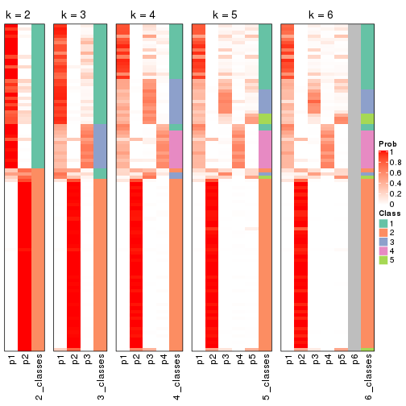
If matrix rows can be associated to genes, consider to use functional_enrichment(res,
...) to perform function enrichment for the signature genes. See this vignette for more detailed explanations.
The object with results only for a single top-value method and a single partition method can be extracted as:
res = res_list["MAD", "mclust"]
# you can also extract it by
# res = res_list["MAD:mclust"]
A summary of res and all the functions that can be applied to it:
res
#> A 'ConsensusPartition' object with k = 2, 3, 4, 5, 6.
#> On a matrix with 3475 rows and 95 columns.
#> Top rows (348, 696, 1043, 1390, 1738) are extracted by 'MAD' method.
#> Subgroups are detected by 'mclust' method.
#> Performed in total 1250 partitions by row resampling.
#> Best k for subgroups seems to be 4.
#>
#> Following methods can be applied to this 'ConsensusPartition' object:
#> [1] "cola_report" "collect_classes" "collect_plots"
#> [4] "collect_stats" "colnames" "compare_signatures"
#> [7] "consensus_heatmap" "dimension_reduction" "functional_enrichment"
#> [10] "get_anno_col" "get_anno" "get_classes"
#> [13] "get_consensus" "get_matrix" "get_membership"
#> [16] "get_param" "get_signatures" "get_stats"
#> [19] "is_best_k" "is_stable_k" "membership_heatmap"
#> [22] "ncol" "nrow" "plot_ecdf"
#> [25] "rownames" "select_partition_number" "show"
#> [28] "suggest_best_k" "test_to_known_factors"
collect_plots() function collects all the plots made from res for all k (number of partitions)
into one single page to provide an easy and fast comparison between different k.
collect_plots(res)
The plots are:
k and the heatmap of
predicted classes for each k.k.k.k.All the plots in panels can be made by individual functions and they are plotted later in this section.
select_partition_number() produces several plots showing different
statistics for choosing “optimized” k. There are following statistics:
k;k, the area increased is defined as \(A_k - A_{k-1}\).The detailed explanations of these statistics can be found in the cola vignette.
Generally speaking, lower PAC score, higher mean silhouette score or higher
concordance corresponds to better partition. Rand index and Jaccard index
measure how similar the current partition is compared to partition with k-1.
If they are too similar, we won't accept k is better than k-1.
select_partition_number(res)
The numeric values for all these statistics can be obtained by get_stats().
get_stats(res)
#> k 1-PAC mean_silhouette concordance area_increased Rand Jaccard
#> 2 2 0.385 0.753 0.816 0.4522 0.496 0.496
#> 3 3 0.938 0.945 0.969 0.4601 0.789 0.597
#> 4 4 1.000 0.968 0.982 0.0457 0.973 0.921
#> 5 5 0.812 0.801 0.886 0.0716 0.962 0.878
#> 6 6 0.822 0.816 0.895 0.0831 0.901 0.652
suggest_best_k() suggests the best \(k\) based on these statistics. The rules are as follows:
suggest_best_k(res)
#> [1] 4
#> attr(,"optional")
#> [1] 3
There is also optional best \(k\) = 3 that is worth to check.
Following shows the table of the partitions (You need to click the show/hide
code output link to see it). The membership matrix (columns with name p*)
is inferred by
clue::cl_consensus()
function with the SE method. Basically the value in the membership matrix
represents the probability to belong to a certain group. The finall class
label for an item is determined with the group with highest probability it
belongs to.
In get_classes() function, the entropy is calculated from the membership
matrix and the silhouette score is calculated from the consensus matrix.
cbind(get_classes(res, k = 2), get_membership(res, k = 2))
#> class entropy silhouette p1 p2
#> SRR2062258 2 0.4298 0.706 0.088 0.912
#> SRR2062259 1 0.9170 0.894 0.668 0.332
#> SRR2062270 2 0.9881 0.588 0.436 0.564
#> SRR2062342 2 0.0000 0.792 0.000 1.000
#> SRR2062341 1 0.9170 0.894 0.668 0.332
#> SRR2062340 2 0.0672 0.787 0.008 0.992
#> SRR2062339 1 0.9170 0.894 0.668 0.332
#> SRR2062348 1 0.9170 0.894 0.668 0.332
#> SRR2062347 2 0.0000 0.792 0.000 1.000
#> SRR2062351 1 0.9170 0.894 0.668 0.332
#> SRR2062350 1 0.9170 0.894 0.668 0.332
#> SRR2062349 2 0.0000 0.792 0.000 1.000
#> SRR2062346 1 0.9170 0.894 0.668 0.332
#> SRR2062345 2 0.0000 0.792 0.000 1.000
#> SRR2062344 2 0.9954 0.575 0.460 0.540
#> SRR2062343 2 0.0000 0.792 0.000 1.000
#> SRR2062354 1 0.9170 0.894 0.668 0.332
#> SRR2062353 2 0.0000 0.792 0.000 1.000
#> SRR2062352 1 0.9170 0.894 0.668 0.332
#> SRR2063021 1 0.3274 0.482 0.940 0.060
#> SRR2062356 1 0.9170 0.894 0.668 0.332
#> SRR2063025 2 0.0000 0.792 0.000 1.000
#> SRR2063027 1 0.9170 0.894 0.668 0.332
#> SRR2063023 2 0.9954 0.575 0.460 0.540
#> SRR2062355 1 0.5629 0.367 0.868 0.132
#> SRR2063030 1 0.9170 0.894 0.668 0.332
#> SRR2064285 1 0.9170 0.894 0.668 0.332
#> SRR2063034 1 0.9170 0.894 0.668 0.332
#> SRR2063032 2 0.9970 -0.509 0.468 0.532
#> SRR2063031 1 0.3431 0.486 0.936 0.064
#> SRR2063029 2 0.0000 0.792 0.000 1.000
#> SRR2063028 1 0.9170 0.894 0.668 0.332
#> SRR2064308 2 0.9833 0.593 0.424 0.576
#> SRR2064310 2 0.2778 0.751 0.048 0.952
#> SRR2064312 1 0.9170 0.894 0.668 0.332
#> SRR2064314 2 0.0000 0.792 0.000 1.000
#> SRR2064315 1 0.9170 0.894 0.668 0.332
#> SRR2064317 2 0.0000 0.792 0.000 1.000
#> SRR2064318 1 0.9170 0.894 0.668 0.332
#> SRR2064319 1 0.9170 0.894 0.668 0.332
#> SRR2064320 2 0.0000 0.792 0.000 1.000
#> SRR2064321 2 0.9954 0.575 0.460 0.540
#> SRR2064322 2 0.0000 0.792 0.000 1.000
#> SRR2064323 2 0.4690 0.690 0.100 0.900
#> SRR2064324 2 0.0000 0.792 0.000 1.000
#> SRR2064325 1 0.9170 0.894 0.668 0.332
#> SRR2064326 1 0.3274 0.482 0.940 0.060
#> SRR2064327 2 0.9954 0.575 0.460 0.540
#> SRR2064329 1 0.9170 0.894 0.668 0.332
#> SRR2064328 2 0.0000 0.792 0.000 1.000
#> SRR2064330 2 0.1184 0.781 0.016 0.984
#> SRR2064331 2 0.9954 0.575 0.460 0.540
#> SRR2064332 2 0.9954 0.575 0.460 0.540
#> SRR2064333 1 0.9170 0.894 0.668 0.332
#> SRR2064334 2 0.0000 0.792 0.000 1.000
#> SRR2064335 2 0.0000 0.792 0.000 1.000
#> SRR2064436 1 0.9170 0.894 0.668 0.332
#> SRR2064457 1 0.9170 0.894 0.668 0.332
#> SRR2064458 2 0.1184 0.781 0.016 0.984
#> SRR2064459 2 0.9954 0.575 0.460 0.540
#> SRR2064460 1 0.9170 0.894 0.668 0.332
#> SRR2064461 2 0.0000 0.792 0.000 1.000
#> SRR2064462 1 0.9170 0.894 0.668 0.332
#> SRR2064534 2 0.0000 0.792 0.000 1.000
#> SRR2064535 2 0.9954 0.575 0.460 0.540
#> SRR2064536 2 0.9815 0.594 0.420 0.580
#> SRR2064537 1 0.3274 0.482 0.940 0.060
#> SRR2064538 1 0.9170 0.894 0.668 0.332
#> SRR2064539 2 0.9833 0.593 0.424 0.576
#> SRR2064540 1 0.9170 0.894 0.668 0.332
#> SRR2064541 2 0.0000 0.792 0.000 1.000
#> SRR2064543 1 0.9170 0.894 0.668 0.332
#> SRR2064542 1 0.9170 0.894 0.668 0.332
#> SRR2064544 2 0.0376 0.790 0.004 0.996
#> SRR2064545 2 0.0000 0.792 0.000 1.000
#> SRR2064546 1 0.9170 0.894 0.668 0.332
#> SRR2064547 1 0.9170 0.894 0.668 0.332
#> SRR2064548 2 0.0000 0.792 0.000 1.000
#> SRR2064550 1 0.5294 0.390 0.880 0.120
#> SRR2064549 1 0.3274 0.482 0.940 0.060
#> SRR2064551 2 0.0000 0.792 0.000 1.000
#> SRR2064552 1 0.9170 0.894 0.668 0.332
#> SRR2064553 2 0.9954 0.575 0.460 0.540
#> SRR2064554 1 0.3274 0.482 0.940 0.060
#> SRR2064555 2 0.9954 0.575 0.460 0.540
#> SRR2064556 1 0.9170 0.894 0.668 0.332
#> SRR2064559 2 0.0000 0.792 0.000 1.000
#> SRR2064558 2 0.9954 0.575 0.460 0.540
#> SRR2064557 2 0.0000 0.792 0.000 1.000
#> SRR2064560 1 0.9170 0.894 0.668 0.332
#> SRR2064561 2 0.4431 0.701 0.092 0.908
#> SRR2064562 1 0.9170 0.894 0.668 0.332
#> SRR2064564 1 0.9170 0.894 0.668 0.332
#> SRR2064563 2 0.0000 0.792 0.000 1.000
#> SRR2064565 2 0.0672 0.787 0.008 0.992
cbind(get_classes(res, k = 3), get_membership(res, k = 3))
#> class entropy silhouette p1 p2 p3
#> SRR2062258 2 0.5986 0.728 0.024 0.736 0.240
#> SRR2062259 1 0.0000 0.998 1.000 0.000 0.000
#> SRR2062270 3 0.1964 0.933 0.000 0.056 0.944
#> SRR2062342 2 0.0000 0.938 0.000 1.000 0.000
#> SRR2062341 1 0.0000 0.998 1.000 0.000 0.000
#> SRR2062340 2 0.0237 0.936 0.000 0.996 0.004
#> SRR2062339 1 0.0237 0.995 0.996 0.000 0.004
#> SRR2062348 1 0.0237 0.995 0.996 0.000 0.004
#> SRR2062347 2 0.0000 0.938 0.000 1.000 0.000
#> SRR2062351 1 0.0000 0.998 1.000 0.000 0.000
#> SRR2062350 1 0.0000 0.998 1.000 0.000 0.000
#> SRR2062349 2 0.0000 0.938 0.000 1.000 0.000
#> SRR2062346 1 0.0000 0.998 1.000 0.000 0.000
#> SRR2062345 2 0.0000 0.938 0.000 1.000 0.000
#> SRR2062344 3 0.0000 0.962 0.000 0.000 1.000
#> SRR2062343 2 0.0000 0.938 0.000 1.000 0.000
#> SRR2062354 1 0.1411 0.961 0.964 0.000 0.036
#> SRR2062353 2 0.0424 0.935 0.000 0.992 0.008
#> SRR2062352 1 0.0000 0.998 1.000 0.000 0.000
#> SRR2063021 3 0.1765 0.950 0.040 0.004 0.956
#> SRR2062356 1 0.0237 0.995 0.996 0.000 0.004
#> SRR2063025 2 0.0000 0.938 0.000 1.000 0.000
#> SRR2063027 1 0.0000 0.998 1.000 0.000 0.000
#> SRR2063023 3 0.0237 0.962 0.004 0.000 0.996
#> SRR2062355 3 0.1267 0.958 0.024 0.004 0.972
#> SRR2063030 1 0.0000 0.998 1.000 0.000 0.000
#> SRR2064285 1 0.0237 0.995 0.996 0.000 0.004
#> SRR2063034 1 0.0000 0.998 1.000 0.000 0.000
#> SRR2063032 2 0.6869 0.662 0.048 0.688 0.264
#> SRR2063031 3 0.5178 0.677 0.256 0.000 0.744
#> SRR2063029 2 0.0000 0.938 0.000 1.000 0.000
#> SRR2063028 1 0.0000 0.998 1.000 0.000 0.000
#> SRR2064308 3 0.2066 0.929 0.000 0.060 0.940
#> SRR2064310 2 0.5420 0.742 0.008 0.752 0.240
#> SRR2064312 1 0.0000 0.998 1.000 0.000 0.000
#> SRR2064314 2 0.0000 0.938 0.000 1.000 0.000
#> SRR2064315 1 0.0000 0.998 1.000 0.000 0.000
#> SRR2064317 2 0.0000 0.938 0.000 1.000 0.000
#> SRR2064318 1 0.0000 0.998 1.000 0.000 0.000
#> SRR2064319 1 0.0000 0.998 1.000 0.000 0.000
#> SRR2064320 2 0.0000 0.938 0.000 1.000 0.000
#> SRR2064321 3 0.0000 0.962 0.000 0.000 1.000
#> SRR2064322 2 0.0000 0.938 0.000 1.000 0.000
#> SRR2064323 2 0.6026 0.722 0.024 0.732 0.244
#> SRR2064324 2 0.0000 0.938 0.000 1.000 0.000
#> SRR2064325 1 0.0000 0.998 1.000 0.000 0.000
#> SRR2064326 3 0.1765 0.950 0.040 0.004 0.956
#> SRR2064327 3 0.0000 0.962 0.000 0.000 1.000
#> SRR2064329 1 0.0237 0.995 0.996 0.000 0.004
#> SRR2064328 2 0.0000 0.938 0.000 1.000 0.000
#> SRR2064330 2 0.3752 0.846 0.000 0.856 0.144
#> SRR2064331 3 0.0000 0.962 0.000 0.000 1.000
#> SRR2064332 3 0.0592 0.959 0.000 0.012 0.988
#> SRR2064333 1 0.0237 0.995 0.996 0.000 0.004
#> SRR2064334 2 0.0000 0.938 0.000 1.000 0.000
#> SRR2064335 2 0.0000 0.938 0.000 1.000 0.000
#> SRR2064436 1 0.0000 0.998 1.000 0.000 0.000
#> SRR2064457 1 0.0000 0.998 1.000 0.000 0.000
#> SRR2064458 2 0.5493 0.749 0.012 0.756 0.232
#> SRR2064459 3 0.0000 0.962 0.000 0.000 1.000
#> SRR2064460 1 0.0000 0.998 1.000 0.000 0.000
#> SRR2064461 2 0.0000 0.938 0.000 1.000 0.000
#> SRR2064462 1 0.0237 0.995 0.996 0.000 0.004
#> SRR2064534 2 0.0000 0.938 0.000 1.000 0.000
#> SRR2064535 3 0.0000 0.962 0.000 0.000 1.000
#> SRR2064536 3 0.1964 0.933 0.000 0.056 0.944
#> SRR2064537 3 0.1765 0.950 0.040 0.004 0.956
#> SRR2064538 1 0.0424 0.991 0.992 0.000 0.008
#> SRR2064539 3 0.1964 0.933 0.000 0.056 0.944
#> SRR2064540 1 0.0000 0.998 1.000 0.000 0.000
#> SRR2064541 2 0.0000 0.938 0.000 1.000 0.000
#> SRR2064543 1 0.0000 0.998 1.000 0.000 0.000
#> SRR2064542 1 0.0000 0.998 1.000 0.000 0.000
#> SRR2064544 2 0.3752 0.845 0.000 0.856 0.144
#> SRR2064545 2 0.1643 0.915 0.000 0.956 0.044
#> SRR2064546 1 0.0000 0.998 1.000 0.000 0.000
#> SRR2064547 1 0.0000 0.998 1.000 0.000 0.000
#> SRR2064548 2 0.0000 0.938 0.000 1.000 0.000
#> SRR2064550 3 0.1267 0.958 0.024 0.004 0.972
#> SRR2064549 3 0.1765 0.950 0.040 0.004 0.956
#> SRR2064551 2 0.0000 0.938 0.000 1.000 0.000
#> SRR2064552 1 0.0000 0.998 1.000 0.000 0.000
#> SRR2064553 3 0.0000 0.962 0.000 0.000 1.000
#> SRR2064554 3 0.1765 0.950 0.040 0.004 0.956
#> SRR2064555 3 0.0000 0.962 0.000 0.000 1.000
#> SRR2064556 1 0.0000 0.998 1.000 0.000 0.000
#> SRR2064559 2 0.0237 0.936 0.000 0.996 0.004
#> SRR2064558 3 0.0000 0.962 0.000 0.000 1.000
#> SRR2064557 2 0.0000 0.938 0.000 1.000 0.000
#> SRR2064560 1 0.0000 0.998 1.000 0.000 0.000
#> SRR2064561 2 0.5580 0.723 0.008 0.736 0.256
#> SRR2064562 1 0.0000 0.998 1.000 0.000 0.000
#> SRR2064564 1 0.0000 0.998 1.000 0.000 0.000
#> SRR2064563 2 0.0000 0.938 0.000 1.000 0.000
#> SRR2064565 2 0.3619 0.852 0.000 0.864 0.136
cbind(get_classes(res, k = 4), get_membership(res, k = 4))
#> class entropy silhouette p1 p2 p3 p4
#> SRR2062258 2 0.2385 0.929 0.000 0.920 0.028 0.052
#> SRR2062259 1 0.0000 0.996 1.000 0.000 0.000 0.000
#> SRR2062270 3 0.2830 0.912 0.000 0.040 0.900 0.060
#> SRR2062342 2 0.0000 0.974 0.000 1.000 0.000 0.000
#> SRR2062341 1 0.0000 0.996 1.000 0.000 0.000 0.000
#> SRR2062340 2 0.0000 0.974 0.000 1.000 0.000 0.000
#> SRR2062339 1 0.0000 0.996 1.000 0.000 0.000 0.000
#> SRR2062348 1 0.0000 0.996 1.000 0.000 0.000 0.000
#> SRR2062347 2 0.0000 0.974 0.000 1.000 0.000 0.000
#> SRR2062351 1 0.0000 0.996 1.000 0.000 0.000 0.000
#> SRR2062350 1 0.0000 0.996 1.000 0.000 0.000 0.000
#> SRR2062349 2 0.0000 0.974 0.000 1.000 0.000 0.000
#> SRR2062346 1 0.0000 0.996 1.000 0.000 0.000 0.000
#> SRR2062345 2 0.0000 0.974 0.000 1.000 0.000 0.000
#> SRR2062344 3 0.0000 0.971 0.000 0.000 1.000 0.000
#> SRR2062343 2 0.0000 0.974 0.000 1.000 0.000 0.000
#> SRR2062354 1 0.2149 0.904 0.912 0.000 0.000 0.088
#> SRR2062353 2 0.0000 0.974 0.000 1.000 0.000 0.000
#> SRR2062352 1 0.0000 0.996 1.000 0.000 0.000 0.000
#> SRR2063021 4 0.0188 0.954 0.000 0.000 0.004 0.996
#> SRR2062356 1 0.1211 0.958 0.960 0.000 0.000 0.040
#> SRR2063025 2 0.0000 0.974 0.000 1.000 0.000 0.000
#> SRR2063027 1 0.0000 0.996 1.000 0.000 0.000 0.000
#> SRR2063023 3 0.1302 0.952 0.000 0.000 0.956 0.044
#> SRR2062355 4 0.0921 0.941 0.000 0.000 0.028 0.972
#> SRR2063030 1 0.0000 0.996 1.000 0.000 0.000 0.000
#> SRR2064285 1 0.0000 0.996 1.000 0.000 0.000 0.000
#> SRR2063034 1 0.0000 0.996 1.000 0.000 0.000 0.000
#> SRR2063032 2 0.5101 0.733 0.032 0.756 0.016 0.196
#> SRR2063031 4 0.3400 0.734 0.180 0.000 0.000 0.820
#> SRR2063029 2 0.0000 0.974 0.000 1.000 0.000 0.000
#> SRR2063028 1 0.0000 0.996 1.000 0.000 0.000 0.000
#> SRR2064308 3 0.2300 0.937 0.000 0.028 0.924 0.048
#> SRR2064310 2 0.2408 0.929 0.000 0.920 0.036 0.044
#> SRR2064312 1 0.0000 0.996 1.000 0.000 0.000 0.000
#> SRR2064314 2 0.0000 0.974 0.000 1.000 0.000 0.000
#> SRR2064315 1 0.0000 0.996 1.000 0.000 0.000 0.000
#> SRR2064317 2 0.0000 0.974 0.000 1.000 0.000 0.000
#> SRR2064318 1 0.0000 0.996 1.000 0.000 0.000 0.000
#> SRR2064319 1 0.0000 0.996 1.000 0.000 0.000 0.000
#> SRR2064320 2 0.0000 0.974 0.000 1.000 0.000 0.000
#> SRR2064321 3 0.0000 0.971 0.000 0.000 1.000 0.000
#> SRR2064322 2 0.0000 0.974 0.000 1.000 0.000 0.000
#> SRR2064323 2 0.2845 0.908 0.000 0.896 0.028 0.076
#> SRR2064324 2 0.0000 0.974 0.000 1.000 0.000 0.000
#> SRR2064325 1 0.0000 0.996 1.000 0.000 0.000 0.000
#> SRR2064326 4 0.0188 0.954 0.000 0.000 0.004 0.996
#> SRR2064327 3 0.0000 0.971 0.000 0.000 1.000 0.000
#> SRR2064329 1 0.0000 0.996 1.000 0.000 0.000 0.000
#> SRR2064328 2 0.0000 0.974 0.000 1.000 0.000 0.000
#> SRR2064330 2 0.2111 0.937 0.000 0.932 0.024 0.044
#> SRR2064331 3 0.0000 0.971 0.000 0.000 1.000 0.000
#> SRR2064332 3 0.0707 0.964 0.000 0.000 0.980 0.020
#> SRR2064333 1 0.0000 0.996 1.000 0.000 0.000 0.000
#> SRR2064334 2 0.0000 0.974 0.000 1.000 0.000 0.000
#> SRR2064335 2 0.0000 0.974 0.000 1.000 0.000 0.000
#> SRR2064436 1 0.0000 0.996 1.000 0.000 0.000 0.000
#> SRR2064457 1 0.0000 0.996 1.000 0.000 0.000 0.000
#> SRR2064458 2 0.2256 0.932 0.000 0.924 0.020 0.056
#> SRR2064459 3 0.0000 0.971 0.000 0.000 1.000 0.000
#> SRR2064460 1 0.0000 0.996 1.000 0.000 0.000 0.000
#> SRR2064461 2 0.0000 0.974 0.000 1.000 0.000 0.000
#> SRR2064462 1 0.0000 0.996 1.000 0.000 0.000 0.000
#> SRR2064534 2 0.0000 0.974 0.000 1.000 0.000 0.000
#> SRR2064535 3 0.0000 0.971 0.000 0.000 1.000 0.000
#> SRR2064536 3 0.2300 0.937 0.000 0.028 0.924 0.048
#> SRR2064537 4 0.0188 0.954 0.000 0.000 0.004 0.996
#> SRR2064538 1 0.0000 0.996 1.000 0.000 0.000 0.000
#> SRR2064539 3 0.2300 0.937 0.000 0.028 0.924 0.048
#> SRR2064540 1 0.0000 0.996 1.000 0.000 0.000 0.000
#> SRR2064541 2 0.0000 0.974 0.000 1.000 0.000 0.000
#> SRR2064543 1 0.0000 0.996 1.000 0.000 0.000 0.000
#> SRR2064542 1 0.0592 0.981 0.984 0.000 0.000 0.016
#> SRR2064544 2 0.1913 0.942 0.000 0.940 0.020 0.040
#> SRR2064545 2 0.0937 0.962 0.000 0.976 0.012 0.012
#> SRR2064546 1 0.0000 0.996 1.000 0.000 0.000 0.000
#> SRR2064547 1 0.0000 0.996 1.000 0.000 0.000 0.000
#> SRR2064548 2 0.0000 0.974 0.000 1.000 0.000 0.000
#> SRR2064550 4 0.0921 0.941 0.000 0.000 0.028 0.972
#> SRR2064549 4 0.0188 0.954 0.000 0.000 0.004 0.996
#> SRR2064551 2 0.0000 0.974 0.000 1.000 0.000 0.000
#> SRR2064552 1 0.0000 0.996 1.000 0.000 0.000 0.000
#> SRR2064553 3 0.0000 0.971 0.000 0.000 1.000 0.000
#> SRR2064554 4 0.0188 0.954 0.000 0.000 0.004 0.996
#> SRR2064555 3 0.0000 0.971 0.000 0.000 1.000 0.000
#> SRR2064556 1 0.0000 0.996 1.000 0.000 0.000 0.000
#> SRR2064559 2 0.0000 0.974 0.000 1.000 0.000 0.000
#> SRR2064558 3 0.0000 0.971 0.000 0.000 1.000 0.000
#> SRR2064557 2 0.0000 0.974 0.000 1.000 0.000 0.000
#> SRR2064560 1 0.0000 0.996 1.000 0.000 0.000 0.000
#> SRR2064561 2 0.2759 0.916 0.000 0.904 0.052 0.044
#> SRR2064562 1 0.0000 0.996 1.000 0.000 0.000 0.000
#> SRR2064564 1 0.0000 0.996 1.000 0.000 0.000 0.000
#> SRR2064563 2 0.0000 0.974 0.000 1.000 0.000 0.000
#> SRR2064565 2 0.2197 0.935 0.000 0.928 0.024 0.048
cbind(get_classes(res, k = 5), get_membership(res, k = 5))
#> class entropy silhouette p1 p2 p3 p4 p5
#> SRR2062258 2 0.5270 0.6095 0.000 0.604 0.016 0.032 0.348
#> SRR2062259 1 0.1965 0.8065 0.904 0.000 0.000 0.000 0.096
#> SRR2062270 3 0.4182 0.8407 0.000 0.040 0.804 0.032 0.124
#> SRR2062342 2 0.0000 0.9272 0.000 1.000 0.000 0.000 0.000
#> SRR2062341 1 0.0963 0.8383 0.964 0.000 0.000 0.000 0.036
#> SRR2062340 2 0.0324 0.9248 0.000 0.992 0.004 0.000 0.004
#> SRR2062339 1 0.1792 0.8004 0.916 0.000 0.000 0.000 0.084
#> SRR2062348 5 0.4818 0.4261 0.460 0.000 0.000 0.020 0.520
#> SRR2062347 2 0.0000 0.9272 0.000 1.000 0.000 0.000 0.000
#> SRR2062351 1 0.0963 0.8344 0.964 0.000 0.000 0.000 0.036
#> SRR2062350 1 0.1671 0.8306 0.924 0.000 0.000 0.000 0.076
#> SRR2062349 2 0.0000 0.9272 0.000 1.000 0.000 0.000 0.000
#> SRR2062346 1 0.1908 0.8125 0.908 0.000 0.000 0.000 0.092
#> SRR2062345 2 0.0000 0.9272 0.000 1.000 0.000 0.000 0.000
#> SRR2062344 3 0.0000 0.9333 0.000 0.000 1.000 0.000 0.000
#> SRR2062343 2 0.0000 0.9272 0.000 1.000 0.000 0.000 0.000
#> SRR2062354 5 0.5696 0.4619 0.344 0.000 0.000 0.096 0.560
#> SRR2062353 2 0.0807 0.9167 0.000 0.976 0.012 0.000 0.012
#> SRR2062352 1 0.3752 0.4887 0.708 0.000 0.000 0.000 0.292
#> SRR2063021 4 0.0000 0.9275 0.000 0.000 0.000 1.000 0.000
#> SRR2062356 1 0.5165 -0.0351 0.576 0.000 0.000 0.048 0.376
#> SRR2063025 2 0.0000 0.9272 0.000 1.000 0.000 0.000 0.000
#> SRR2063027 1 0.0703 0.8347 0.976 0.000 0.000 0.000 0.024
#> SRR2063023 3 0.1310 0.9258 0.000 0.000 0.956 0.024 0.020
#> SRR2062355 4 0.3061 0.8598 0.000 0.000 0.020 0.844 0.136
#> SRR2063030 1 0.1043 0.8333 0.960 0.000 0.000 0.000 0.040
#> SRR2064285 1 0.1671 0.8114 0.924 0.000 0.000 0.000 0.076
#> SRR2063034 1 0.0963 0.8236 0.964 0.000 0.000 0.000 0.036
#> SRR2063032 5 0.6557 -0.1972 0.000 0.308 0.008 0.180 0.504
#> SRR2063031 4 0.3800 0.7482 0.108 0.000 0.000 0.812 0.080
#> SRR2063029 2 0.0000 0.9272 0.000 1.000 0.000 0.000 0.000
#> SRR2063028 1 0.2020 0.8131 0.900 0.000 0.000 0.000 0.100
#> SRR2064308 3 0.4036 0.8499 0.000 0.052 0.816 0.024 0.108
#> SRR2064310 2 0.4914 0.6905 0.000 0.672 0.016 0.028 0.284
#> SRR2064312 1 0.2891 0.7290 0.824 0.000 0.000 0.000 0.176
#> SRR2064314 2 0.0000 0.9272 0.000 1.000 0.000 0.000 0.000
#> SRR2064315 1 0.1544 0.8302 0.932 0.000 0.000 0.000 0.068
#> SRR2064317 2 0.0000 0.9272 0.000 1.000 0.000 0.000 0.000
#> SRR2064318 1 0.4166 0.2882 0.648 0.000 0.000 0.004 0.348
#> SRR2064319 1 0.1544 0.8239 0.932 0.000 0.000 0.000 0.068
#> SRR2064320 2 0.0162 0.9261 0.000 0.996 0.000 0.000 0.004
#> SRR2064321 3 0.0510 0.9344 0.000 0.000 0.984 0.000 0.016
#> SRR2064322 2 0.0000 0.9272 0.000 1.000 0.000 0.000 0.000
#> SRR2064323 2 0.5328 0.6085 0.000 0.604 0.016 0.036 0.344
#> SRR2064324 2 0.0290 0.9249 0.000 0.992 0.000 0.000 0.008
#> SRR2064325 1 0.1270 0.8318 0.948 0.000 0.000 0.000 0.052
#> SRR2064326 4 0.0162 0.9262 0.000 0.000 0.000 0.996 0.004
#> SRR2064327 3 0.0000 0.9333 0.000 0.000 1.000 0.000 0.000
#> SRR2064329 5 0.4555 0.4010 0.472 0.000 0.000 0.008 0.520
#> SRR2064328 2 0.0000 0.9272 0.000 1.000 0.000 0.000 0.000
#> SRR2064330 2 0.3870 0.7993 0.000 0.792 0.016 0.016 0.176
#> SRR2064331 3 0.0000 0.9333 0.000 0.000 1.000 0.000 0.000
#> SRR2064332 3 0.1638 0.9152 0.000 0.000 0.932 0.004 0.064
#> SRR2064333 5 0.4560 0.3501 0.484 0.000 0.000 0.008 0.508
#> SRR2064334 2 0.0000 0.9272 0.000 1.000 0.000 0.000 0.000
#> SRR2064335 2 0.0000 0.9272 0.000 1.000 0.000 0.000 0.000
#> SRR2064436 1 0.2074 0.8084 0.896 0.000 0.000 0.000 0.104
#> SRR2064457 1 0.2127 0.8059 0.892 0.000 0.000 0.000 0.108
#> SRR2064458 2 0.4935 0.6871 0.000 0.668 0.016 0.028 0.288
#> SRR2064459 3 0.0162 0.9328 0.000 0.000 0.996 0.004 0.000
#> SRR2064460 1 0.1121 0.8365 0.956 0.000 0.000 0.000 0.044
#> SRR2064461 2 0.0000 0.9272 0.000 1.000 0.000 0.000 0.000
#> SRR2064462 1 0.3551 0.6571 0.772 0.000 0.000 0.008 0.220
#> SRR2064534 2 0.0000 0.9272 0.000 1.000 0.000 0.000 0.000
#> SRR2064535 3 0.0000 0.9333 0.000 0.000 1.000 0.000 0.000
#> SRR2064536 3 0.4036 0.8499 0.000 0.052 0.816 0.024 0.108
#> SRR2064537 4 0.0000 0.9275 0.000 0.000 0.000 1.000 0.000
#> SRR2064538 1 0.3659 0.6597 0.768 0.000 0.000 0.012 0.220
#> SRR2064539 3 0.4036 0.8499 0.000 0.052 0.816 0.024 0.108
#> SRR2064540 1 0.1043 0.8290 0.960 0.000 0.000 0.000 0.040
#> SRR2064541 2 0.0000 0.9272 0.000 1.000 0.000 0.000 0.000
#> SRR2064543 1 0.1043 0.8374 0.960 0.000 0.000 0.000 0.040
#> SRR2064542 1 0.3586 0.6656 0.792 0.000 0.000 0.020 0.188
#> SRR2064544 2 0.3531 0.8209 0.000 0.820 0.012 0.016 0.152
#> SRR2064545 2 0.1877 0.8886 0.000 0.924 0.012 0.000 0.064
#> SRR2064546 1 0.1851 0.8163 0.912 0.000 0.000 0.000 0.088
#> SRR2064547 1 0.2074 0.8122 0.896 0.000 0.000 0.000 0.104
#> SRR2064548 2 0.0880 0.9144 0.000 0.968 0.000 0.000 0.032
#> SRR2064550 4 0.3061 0.8598 0.000 0.000 0.020 0.844 0.136
#> SRR2064549 4 0.0000 0.9275 0.000 0.000 0.000 1.000 0.000
#> SRR2064551 2 0.0000 0.9272 0.000 1.000 0.000 0.000 0.000
#> SRR2064552 1 0.4371 0.2799 0.644 0.000 0.000 0.012 0.344
#> SRR2064553 3 0.0703 0.9332 0.000 0.000 0.976 0.000 0.024
#> SRR2064554 4 0.0000 0.9275 0.000 0.000 0.000 1.000 0.000
#> SRR2064555 3 0.0510 0.9344 0.000 0.000 0.984 0.000 0.016
#> SRR2064556 1 0.1121 0.8304 0.956 0.000 0.000 0.000 0.044
#> SRR2064559 2 0.0162 0.9257 0.000 0.996 0.004 0.000 0.000
#> SRR2064558 3 0.0000 0.9333 0.000 0.000 1.000 0.000 0.000
#> SRR2064557 2 0.0000 0.9272 0.000 1.000 0.000 0.000 0.000
#> SRR2064560 1 0.0963 0.8366 0.964 0.000 0.000 0.000 0.036
#> SRR2064561 2 0.5129 0.6418 0.000 0.628 0.020 0.024 0.328
#> SRR2064562 1 0.3177 0.6959 0.792 0.000 0.000 0.000 0.208
#> SRR2064564 1 0.1478 0.8225 0.936 0.000 0.000 0.000 0.064
#> SRR2064563 2 0.0000 0.9272 0.000 1.000 0.000 0.000 0.000
#> SRR2064565 2 0.3674 0.8144 0.000 0.812 0.016 0.016 0.156
cbind(get_classes(res, k = 6), get_membership(res, k = 6))
#> class entropy silhouette p1 p2 p3 p4 p5 p6
#> SRR2062258 5 0.0146 0.764 0.000 0.000 0.000 0.000 0.996 0.004
#> SRR2062259 1 0.3464 0.528 0.688 0.000 0.000 0.000 0.000 0.312
#> SRR2062270 3 0.3672 0.769 0.000 0.004 0.744 0.012 0.236 0.004
#> SRR2062342 2 0.0000 0.971 0.000 1.000 0.000 0.000 0.000 0.000
#> SRR2062341 1 0.1556 0.860 0.920 0.000 0.000 0.000 0.000 0.080
#> SRR2062340 2 0.0458 0.965 0.000 0.984 0.000 0.000 0.016 0.000
#> SRR2062339 1 0.1464 0.828 0.944 0.000 0.000 0.004 0.016 0.036
#> SRR2062348 6 0.1951 0.751 0.076 0.000 0.000 0.016 0.000 0.908
#> SRR2062347 2 0.0000 0.971 0.000 1.000 0.000 0.000 0.000 0.000
#> SRR2062351 1 0.2048 0.821 0.880 0.000 0.000 0.000 0.000 0.120
#> SRR2062350 1 0.1806 0.841 0.908 0.000 0.000 0.004 0.000 0.088
#> SRR2062349 2 0.0363 0.969 0.000 0.988 0.000 0.000 0.012 0.000
#> SRR2062346 1 0.1556 0.859 0.920 0.000 0.000 0.000 0.000 0.080
#> SRR2062345 2 0.0000 0.971 0.000 1.000 0.000 0.000 0.000 0.000
#> SRR2062344 3 0.0363 0.911 0.000 0.000 0.988 0.000 0.012 0.000
#> SRR2062343 2 0.0260 0.970 0.000 0.992 0.000 0.000 0.008 0.000
#> SRR2062354 6 0.2916 0.638 0.024 0.000 0.000 0.096 0.020 0.860
#> SRR2062353 2 0.1700 0.913 0.000 0.916 0.000 0.000 0.080 0.004
#> SRR2062352 6 0.3647 0.553 0.360 0.000 0.000 0.000 0.000 0.640
#> SRR2063021 4 0.0146 0.905 0.000 0.000 0.000 0.996 0.000 0.004
#> SRR2062356 6 0.3409 0.764 0.192 0.000 0.000 0.028 0.000 0.780
#> SRR2063025 2 0.0260 0.970 0.000 0.992 0.000 0.000 0.008 0.000
#> SRR2063027 1 0.1910 0.849 0.892 0.000 0.000 0.000 0.000 0.108
#> SRR2063023 3 0.1480 0.901 0.000 0.000 0.940 0.020 0.040 0.000
#> SRR2062355 4 0.3991 0.752 0.000 0.000 0.088 0.756 0.156 0.000
#> SRR2063030 1 0.1204 0.859 0.944 0.000 0.000 0.000 0.000 0.056
#> SRR2064285 1 0.1010 0.856 0.960 0.000 0.000 0.004 0.000 0.036
#> SRR2063034 1 0.0547 0.854 0.980 0.000 0.000 0.000 0.000 0.020
#> SRR2063032 5 0.3455 0.629 0.000 0.000 0.000 0.144 0.800 0.056
#> SRR2063031 4 0.3549 0.758 0.032 0.000 0.000 0.808 0.020 0.140
#> SRR2063029 2 0.0146 0.970 0.000 0.996 0.000 0.000 0.004 0.000
#> SRR2063028 1 0.3668 0.525 0.668 0.000 0.000 0.004 0.000 0.328
#> SRR2064308 3 0.4278 0.771 0.000 0.060 0.740 0.004 0.188 0.008
#> SRR2064310 5 0.0405 0.770 0.000 0.008 0.000 0.000 0.988 0.004
#> SRR2064312 1 0.3864 -0.250 0.520 0.000 0.000 0.000 0.000 0.480
#> SRR2064314 2 0.0363 0.969 0.000 0.988 0.000 0.000 0.012 0.000
#> SRR2064315 1 0.1387 0.852 0.932 0.000 0.000 0.000 0.000 0.068
#> SRR2064317 2 0.0146 0.971 0.000 0.996 0.000 0.000 0.004 0.000
#> SRR2064318 6 0.2778 0.779 0.168 0.000 0.000 0.008 0.000 0.824
#> SRR2064319 1 0.1908 0.848 0.900 0.000 0.000 0.004 0.000 0.096
#> SRR2064320 2 0.1714 0.898 0.000 0.908 0.000 0.000 0.092 0.000
#> SRR2064321 3 0.0458 0.912 0.000 0.000 0.984 0.000 0.016 0.000
#> SRR2064322 2 0.0146 0.971 0.000 0.996 0.000 0.000 0.004 0.000
#> SRR2064323 5 0.0291 0.763 0.000 0.000 0.000 0.004 0.992 0.004
#> SRR2064324 2 0.2631 0.767 0.000 0.820 0.000 0.000 0.180 0.000
#> SRR2064325 1 0.1714 0.857 0.908 0.000 0.000 0.000 0.000 0.092
#> SRR2064326 4 0.0146 0.905 0.000 0.000 0.000 0.996 0.000 0.004
#> SRR2064327 3 0.0000 0.909 0.000 0.000 1.000 0.000 0.000 0.000
#> SRR2064329 6 0.1802 0.753 0.072 0.000 0.000 0.012 0.000 0.916
#> SRR2064328 2 0.0000 0.971 0.000 1.000 0.000 0.000 0.000 0.000
#> SRR2064330 5 0.2416 0.755 0.000 0.156 0.000 0.000 0.844 0.000
#> SRR2064331 3 0.0000 0.909 0.000 0.000 1.000 0.000 0.000 0.000
#> SRR2064332 3 0.1866 0.884 0.000 0.000 0.908 0.008 0.084 0.000
#> SRR2064333 6 0.2051 0.768 0.096 0.000 0.000 0.004 0.004 0.896
#> SRR2064334 2 0.0363 0.969 0.000 0.988 0.000 0.000 0.012 0.000
#> SRR2064335 2 0.0000 0.971 0.000 1.000 0.000 0.000 0.000 0.000
#> SRR2064436 1 0.3052 0.693 0.780 0.000 0.000 0.004 0.000 0.216
#> SRR2064457 1 0.3684 0.461 0.664 0.000 0.000 0.004 0.000 0.332
#> SRR2064458 5 0.0692 0.773 0.000 0.020 0.000 0.000 0.976 0.004
#> SRR2064459 3 0.0260 0.911 0.000 0.000 0.992 0.000 0.008 0.000
#> SRR2064460 1 0.1556 0.859 0.920 0.000 0.000 0.000 0.000 0.080
#> SRR2064461 2 0.0260 0.970 0.000 0.992 0.000 0.000 0.008 0.000
#> SRR2064462 6 0.3992 0.562 0.364 0.000 0.000 0.012 0.000 0.624
#> SRR2064534 2 0.0146 0.971 0.000 0.996 0.000 0.000 0.004 0.000
#> SRR2064535 3 0.0000 0.909 0.000 0.000 1.000 0.000 0.000 0.000
#> SRR2064536 3 0.4271 0.779 0.000 0.052 0.744 0.008 0.188 0.008
#> SRR2064537 4 0.0146 0.905 0.000 0.000 0.000 0.996 0.000 0.004
#> SRR2064538 6 0.4051 0.399 0.432 0.000 0.000 0.008 0.000 0.560
#> SRR2064539 3 0.4271 0.779 0.000 0.052 0.744 0.008 0.188 0.008
#> SRR2064540 1 0.0937 0.858 0.960 0.000 0.000 0.000 0.000 0.040
#> SRR2064541 2 0.1141 0.940 0.000 0.948 0.000 0.000 0.052 0.000
#> SRR2064543 1 0.1863 0.842 0.896 0.000 0.000 0.000 0.000 0.104
#> SRR2064542 1 0.2994 0.768 0.788 0.000 0.000 0.004 0.000 0.208
#> SRR2064544 5 0.2664 0.747 0.000 0.184 0.000 0.000 0.816 0.000
#> SRR2064545 5 0.3774 0.446 0.000 0.408 0.000 0.000 0.592 0.000
#> SRR2064546 1 0.1501 0.841 0.924 0.000 0.000 0.000 0.000 0.076
#> SRR2064547 1 0.2300 0.832 0.856 0.000 0.000 0.000 0.000 0.144
#> SRR2064548 5 0.3810 0.393 0.000 0.428 0.000 0.000 0.572 0.000
#> SRR2064550 4 0.3681 0.771 0.000 0.000 0.064 0.780 0.156 0.000
#> SRR2064549 4 0.0146 0.905 0.000 0.000 0.000 0.996 0.000 0.004
#> SRR2064551 2 0.1285 0.940 0.000 0.944 0.000 0.000 0.052 0.004
#> SRR2064552 6 0.3566 0.734 0.236 0.000 0.000 0.020 0.000 0.744
#> SRR2064553 3 0.0547 0.912 0.000 0.000 0.980 0.000 0.020 0.000
#> SRR2064554 4 0.0146 0.905 0.000 0.000 0.000 0.996 0.000 0.004
#> SRR2064555 3 0.0458 0.912 0.000 0.000 0.984 0.000 0.016 0.000
#> SRR2064556 1 0.1285 0.841 0.944 0.000 0.000 0.004 0.000 0.052
#> SRR2064559 2 0.0935 0.952 0.000 0.964 0.000 0.000 0.032 0.004
#> SRR2064558 3 0.0146 0.910 0.000 0.000 0.996 0.000 0.004 0.000
#> SRR2064557 2 0.0000 0.971 0.000 1.000 0.000 0.000 0.000 0.000
#> SRR2064560 1 0.1531 0.861 0.928 0.000 0.000 0.004 0.000 0.068
#> SRR2064561 5 0.0405 0.767 0.000 0.004 0.000 0.000 0.988 0.008
#> SRR2064562 1 0.1806 0.847 0.908 0.000 0.000 0.004 0.000 0.088
#> SRR2064564 1 0.1082 0.838 0.956 0.000 0.000 0.004 0.000 0.040
#> SRR2064563 2 0.0000 0.971 0.000 1.000 0.000 0.000 0.000 0.000
#> SRR2064565 5 0.2883 0.726 0.000 0.212 0.000 0.000 0.788 0.000
Heatmaps for the consensus matrix. It visualizes the probability of two samples to be in a same group.
consensus_heatmap(res, k = 2)
consensus_heatmap(res, k = 3)
consensus_heatmap(res, k = 4)
consensus_heatmap(res, k = 5)
consensus_heatmap(res, k = 6)
Heatmaps for the membership of samples in all partitions to see how consistent they are:
membership_heatmap(res, k = 2)
membership_heatmap(res, k = 3)
membership_heatmap(res, k = 4)
membership_heatmap(res, k = 5)
membership_heatmap(res, k = 6)
As soon as we have had the classes for columns, we can look for signatures which are significantly different between classes which can be candidate marks for certain classes. Following are the heatmaps for signatures.
Signature heatmaps where rows are scaled:
get_signatures(res, k = 2)
get_signatures(res, k = 3)
get_signatures(res, k = 4)
get_signatures(res, k = 5)
get_signatures(res, k = 6)
Signature heatmaps where rows are not scaled:
get_signatures(res, k = 2, scale_rows = FALSE)
get_signatures(res, k = 3, scale_rows = FALSE)
get_signatures(res, k = 4, scale_rows = FALSE)
get_signatures(res, k = 5, scale_rows = FALSE)

get_signatures(res, k = 6, scale_rows = FALSE)
Compare the overlap of signatures from different k:
compare_signatures(res)
get_signature() returns a data frame invisibly. TO get the list of signatures, the function
call should be assigned to a variable explicitly. In following code, if plot argument is set
to FALSE, no heatmap is plotted while only the differential analysis is performed.
# code only for demonstration
tb = get_signature(res, k = ..., plot = FALSE)
An example of the output of tb is:
#> which_row fdr mean_1 mean_2 scaled_mean_1 scaled_mean_2 km
#> 1 38 0.042760348 8.373488 9.131774 -0.5533452 0.5164555 1
#> 2 40 0.018707592 7.106213 8.469186 -0.6173731 0.5762149 1
#> 3 55 0.019134737 10.221463 11.207825 -0.6159697 0.5749050 1
#> 4 59 0.006059896 5.921854 7.869574 -0.6899429 0.6439467 1
#> 5 60 0.018055526 8.928898 10.211722 -0.6204761 0.5791110 1
#> 6 98 0.009384629 15.714769 14.887706 0.6635654 -0.6193277 2
...
The columns in tb are:
which_row: row indices corresponding to the input matrix.fdr: FDR for the differential test. mean_x: The mean value in group x.scaled_mean_x: The mean value in group x after rows are scaled.km: Row groups if k-means clustering is applied to rows.UMAP plot which shows how samples are separated.
dimension_reduction(res, k = 2, method = "UMAP")
dimension_reduction(res, k = 3, method = "UMAP")
dimension_reduction(res, k = 4, method = "UMAP")
dimension_reduction(res, k = 5, method = "UMAP")
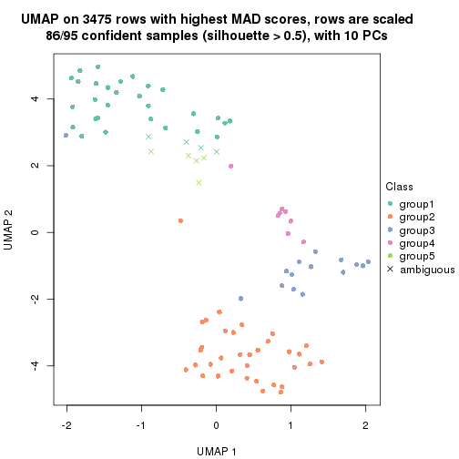
dimension_reduction(res, k = 6, method = "UMAP")
Following heatmap shows how subgroups are split when increasing k:
collect_classes(res)
If matrix rows can be associated to genes, consider to use functional_enrichment(res,
...) to perform function enrichment for the signature genes. See this vignette for more detailed explanations.
The object with results only for a single top-value method and a single partition method can be extracted as:
res = res_list["MAD", "NMF"]
# you can also extract it by
# res = res_list["MAD:NMF"]
A summary of res and all the functions that can be applied to it:
res
#> A 'ConsensusPartition' object with k = 2, 3, 4, 5, 6.
#> On a matrix with 3475 rows and 95 columns.
#> Top rows (348, 696, 1043, 1390, 1738) are extracted by 'MAD' method.
#> Subgroups are detected by 'NMF' method.
#> Performed in total 1250 partitions by row resampling.
#> Best k for subgroups seems to be 2.
#>
#> Following methods can be applied to this 'ConsensusPartition' object:
#> [1] "cola_report" "collect_classes" "collect_plots"
#> [4] "collect_stats" "colnames" "compare_signatures"
#> [7] "consensus_heatmap" "dimension_reduction" "functional_enrichment"
#> [10] "get_anno_col" "get_anno" "get_classes"
#> [13] "get_consensus" "get_matrix" "get_membership"
#> [16] "get_param" "get_signatures" "get_stats"
#> [19] "is_best_k" "is_stable_k" "membership_heatmap"
#> [22] "ncol" "nrow" "plot_ecdf"
#> [25] "rownames" "select_partition_number" "show"
#> [28] "suggest_best_k" "test_to_known_factors"
collect_plots() function collects all the plots made from res for all k (number of partitions)
into one single page to provide an easy and fast comparison between different k.
collect_plots(res)
The plots are:
k and the heatmap of
predicted classes for each k.k.k.k.All the plots in panels can be made by individual functions and they are plotted later in this section.
select_partition_number() produces several plots showing different
statistics for choosing “optimized” k. There are following statistics:
k;k, the area increased is defined as \(A_k - A_{k-1}\).The detailed explanations of these statistics can be found in the cola vignette.
Generally speaking, lower PAC score, higher mean silhouette score or higher
concordance corresponds to better partition. Rand index and Jaccard index
measure how similar the current partition is compared to partition with k-1.
If they are too similar, we won't accept k is better than k-1.
select_partition_number(res)
The numeric values for all these statistics can be obtained by get_stats().
get_stats(res)
#> k 1-PAC mean_silhouette concordance area_increased Rand Jaccard
#> 2 2 0.956 0.945 0.975 0.4939 0.511 0.511
#> 3 3 0.808 0.914 0.921 0.3134 0.832 0.672
#> 4 4 0.664 0.746 0.837 0.0885 0.983 0.952
#> 5 5 0.693 0.628 0.770 0.0592 0.969 0.906
#> 6 6 0.666 0.568 0.722 0.0372 0.969 0.895
suggest_best_k() suggests the best \(k\) based on these statistics. The rules are as follows:
suggest_best_k(res)
#> [1] 2
Following shows the table of the partitions (You need to click the show/hide
code output link to see it). The membership matrix (columns with name p*)
is inferred by
clue::cl_consensus()
function with the SE method. Basically the value in the membership matrix
represents the probability to belong to a certain group. The finall class
label for an item is determined with the group with highest probability it
belongs to.
In get_classes() function, the entropy is calculated from the membership
matrix and the silhouette score is calculated from the consensus matrix.
cbind(get_classes(res, k = 2), get_membership(res, k = 2))
#> class entropy silhouette p1 p2
#> SRR2062258 2 0.0000 0.962 0.000 1.000
#> SRR2062259 1 0.0000 0.991 1.000 0.000
#> SRR2062270 2 0.0000 0.962 0.000 1.000
#> SRR2062342 2 0.0000 0.962 0.000 1.000
#> SRR2062341 1 0.0000 0.991 1.000 0.000
#> SRR2062340 2 0.0000 0.962 0.000 1.000
#> SRR2062339 1 0.0000 0.991 1.000 0.000
#> SRR2062348 1 0.0000 0.991 1.000 0.000
#> SRR2062347 2 0.0000 0.962 0.000 1.000
#> SRR2062351 1 0.0000 0.991 1.000 0.000
#> SRR2062350 1 0.0000 0.991 1.000 0.000
#> SRR2062349 2 0.0000 0.962 0.000 1.000
#> SRR2062346 1 0.0000 0.991 1.000 0.000
#> SRR2062345 2 0.0000 0.962 0.000 1.000
#> SRR2062344 2 0.3879 0.902 0.076 0.924
#> SRR2062343 2 0.0000 0.962 0.000 1.000
#> SRR2062354 1 0.0000 0.991 1.000 0.000
#> SRR2062353 2 0.0000 0.962 0.000 1.000
#> SRR2062352 1 0.0000 0.991 1.000 0.000
#> SRR2063021 2 0.0000 0.962 0.000 1.000
#> SRR2062356 1 0.0000 0.991 1.000 0.000
#> SRR2063025 2 0.0000 0.962 0.000 1.000
#> SRR2063027 1 0.0000 0.991 1.000 0.000
#> SRR2063023 2 0.8861 0.604 0.304 0.696
#> SRR2062355 2 0.0000 0.962 0.000 1.000
#> SRR2063030 1 0.0000 0.991 1.000 0.000
#> SRR2064285 1 0.0000 0.991 1.000 0.000
#> SRR2063034 1 0.0000 0.991 1.000 0.000
#> SRR2063032 1 0.9087 0.502 0.676 0.324
#> SRR2063031 1 0.0000 0.991 1.000 0.000
#> SRR2063029 2 0.0000 0.962 0.000 1.000
#> SRR2063028 1 0.0000 0.991 1.000 0.000
#> SRR2064308 2 0.0000 0.962 0.000 1.000
#> SRR2064310 2 0.0000 0.962 0.000 1.000
#> SRR2064312 1 0.0000 0.991 1.000 0.000
#> SRR2064314 2 0.0000 0.962 0.000 1.000
#> SRR2064315 1 0.0000 0.991 1.000 0.000
#> SRR2064317 2 0.0000 0.962 0.000 1.000
#> SRR2064318 1 0.0000 0.991 1.000 0.000
#> SRR2064319 1 0.0000 0.991 1.000 0.000
#> SRR2064320 2 0.0000 0.962 0.000 1.000
#> SRR2064321 2 0.7453 0.750 0.212 0.788
#> SRR2064322 2 0.0000 0.962 0.000 1.000
#> SRR2064323 2 0.0000 0.962 0.000 1.000
#> SRR2064324 2 0.0000 0.962 0.000 1.000
#> SRR2064325 1 0.0000 0.991 1.000 0.000
#> SRR2064326 2 0.0000 0.962 0.000 1.000
#> SRR2064327 2 0.4562 0.883 0.096 0.904
#> SRR2064329 1 0.0000 0.991 1.000 0.000
#> SRR2064328 2 0.0000 0.962 0.000 1.000
#> SRR2064330 2 0.0000 0.962 0.000 1.000
#> SRR2064331 2 0.9661 0.418 0.392 0.608
#> SRR2064332 2 0.0672 0.957 0.008 0.992
#> SRR2064333 1 0.0000 0.991 1.000 0.000
#> SRR2064334 2 0.0000 0.962 0.000 1.000
#> SRR2064335 2 0.0000 0.962 0.000 1.000
#> SRR2064436 1 0.0000 0.991 1.000 0.000
#> SRR2064457 1 0.0000 0.991 1.000 0.000
#> SRR2064458 2 0.0000 0.962 0.000 1.000
#> SRR2064459 2 0.3879 0.902 0.076 0.924
#> SRR2064460 1 0.0000 0.991 1.000 0.000
#> SRR2064461 2 0.0000 0.962 0.000 1.000
#> SRR2064462 1 0.0000 0.991 1.000 0.000
#> SRR2064534 2 0.0000 0.962 0.000 1.000
#> SRR2064535 2 0.8443 0.662 0.272 0.728
#> SRR2064536 2 0.0000 0.962 0.000 1.000
#> SRR2064537 2 0.0000 0.962 0.000 1.000
#> SRR2064538 1 0.0000 0.991 1.000 0.000
#> SRR2064539 2 0.0000 0.962 0.000 1.000
#> SRR2064540 1 0.0000 0.991 1.000 0.000
#> SRR2064541 2 0.0000 0.962 0.000 1.000
#> SRR2064543 1 0.0000 0.991 1.000 0.000
#> SRR2064542 1 0.0000 0.991 1.000 0.000
#> SRR2064544 2 0.0000 0.962 0.000 1.000
#> SRR2064545 2 0.0000 0.962 0.000 1.000
#> SRR2064546 1 0.0000 0.991 1.000 0.000
#> SRR2064547 1 0.0000 0.991 1.000 0.000
#> SRR2064548 2 0.0000 0.962 0.000 1.000
#> SRR2064550 2 0.0000 0.962 0.000 1.000
#> SRR2064549 2 0.0000 0.962 0.000 1.000
#> SRR2064551 2 0.0000 0.962 0.000 1.000
#> SRR2064552 1 0.0000 0.991 1.000 0.000
#> SRR2064553 2 0.1184 0.951 0.016 0.984
#> SRR2064554 2 0.0000 0.962 0.000 1.000
#> SRR2064555 2 0.8207 0.687 0.256 0.744
#> SRR2064556 1 0.0000 0.991 1.000 0.000
#> SRR2064559 2 0.0000 0.962 0.000 1.000
#> SRR2064558 2 0.9209 0.545 0.336 0.664
#> SRR2064557 2 0.0000 0.962 0.000 1.000
#> SRR2064560 1 0.0000 0.991 1.000 0.000
#> SRR2064561 2 0.0000 0.962 0.000 1.000
#> SRR2064562 1 0.0000 0.991 1.000 0.000
#> SRR2064564 1 0.0000 0.991 1.000 0.000
#> SRR2064563 2 0.0000 0.962 0.000 1.000
#> SRR2064565 2 0.0000 0.962 0.000 1.000
cbind(get_classes(res, k = 3), get_membership(res, k = 3))
#> class entropy silhouette p1 p2 p3
#> SRR2062258 2 0.3623 0.843 0.032 0.896 0.072
#> SRR2062259 1 0.0592 0.957 0.988 0.000 0.012
#> SRR2062270 3 0.4702 0.848 0.000 0.212 0.788
#> SRR2062342 2 0.2165 0.940 0.000 0.936 0.064
#> SRR2062341 1 0.1878 0.945 0.952 0.004 0.044
#> SRR2062340 2 0.3340 0.907 0.000 0.880 0.120
#> SRR2062339 1 0.0592 0.959 0.988 0.000 0.012
#> SRR2062348 1 0.1163 0.952 0.972 0.000 0.028
#> SRR2062347 2 0.3038 0.920 0.000 0.896 0.104
#> SRR2062351 1 0.1860 0.949 0.948 0.000 0.052
#> SRR2062350 1 0.0747 0.958 0.984 0.000 0.016
#> SRR2062349 2 0.1860 0.942 0.000 0.948 0.052
#> SRR2062346 1 0.0892 0.959 0.980 0.000 0.020
#> SRR2062345 2 0.3192 0.914 0.000 0.888 0.112
#> SRR2062344 3 0.2846 0.889 0.020 0.056 0.924
#> SRR2062343 2 0.3267 0.910 0.000 0.884 0.116
#> SRR2062354 1 0.3083 0.925 0.916 0.024 0.060
#> SRR2062353 2 0.1860 0.943 0.000 0.948 0.052
#> SRR2062352 1 0.1289 0.959 0.968 0.000 0.032
#> SRR2063021 3 0.4178 0.880 0.000 0.172 0.828
#> SRR2062356 1 0.1525 0.953 0.964 0.004 0.032
#> SRR2063025 2 0.1964 0.942 0.000 0.944 0.056
#> SRR2063027 1 0.1163 0.956 0.972 0.000 0.028
#> SRR2063023 3 0.3028 0.876 0.048 0.032 0.920
#> SRR2062355 3 0.3879 0.891 0.000 0.152 0.848
#> SRR2063030 1 0.1529 0.949 0.960 0.000 0.040
#> SRR2064285 1 0.1753 0.956 0.952 0.000 0.048
#> SRR2063034 1 0.0747 0.959 0.984 0.000 0.016
#> SRR2063032 1 0.7850 0.494 0.608 0.316 0.076
#> SRR2063031 1 0.4555 0.787 0.800 0.000 0.200
#> SRR2063029 2 0.2878 0.924 0.000 0.904 0.096
#> SRR2063028 1 0.1031 0.958 0.976 0.000 0.024
#> SRR2064308 3 0.5431 0.748 0.000 0.284 0.716
#> SRR2064310 2 0.3370 0.859 0.024 0.904 0.072
#> SRR2064312 1 0.0892 0.958 0.980 0.000 0.020
#> SRR2064314 2 0.0424 0.925 0.000 0.992 0.008
#> SRR2064315 1 0.0747 0.959 0.984 0.000 0.016
#> SRR2064317 2 0.3412 0.903 0.000 0.876 0.124
#> SRR2064318 1 0.1529 0.954 0.960 0.000 0.040
#> SRR2064319 1 0.1411 0.956 0.964 0.000 0.036
#> SRR2064320 2 0.1163 0.941 0.000 0.972 0.028
#> SRR2064321 3 0.4569 0.865 0.072 0.068 0.860
#> SRR2064322 2 0.0747 0.937 0.000 0.984 0.016
#> SRR2064323 2 0.3272 0.890 0.016 0.904 0.080
#> SRR2064324 2 0.1643 0.943 0.000 0.956 0.044
#> SRR2064325 1 0.1163 0.952 0.972 0.000 0.028
#> SRR2064326 3 0.3752 0.894 0.000 0.144 0.856
#> SRR2064327 3 0.2903 0.886 0.028 0.048 0.924
#> SRR2064329 1 0.0892 0.959 0.980 0.000 0.020
#> SRR2064328 2 0.1643 0.943 0.000 0.956 0.044
#> SRR2064330 2 0.2261 0.938 0.000 0.932 0.068
#> SRR2064331 3 0.3045 0.864 0.064 0.020 0.916
#> SRR2064332 3 0.3482 0.895 0.000 0.128 0.872
#> SRR2064333 1 0.2066 0.945 0.940 0.000 0.060
#> SRR2064334 2 0.3482 0.898 0.000 0.872 0.128
#> SRR2064335 2 0.1529 0.943 0.000 0.960 0.040
#> SRR2064436 1 0.1289 0.955 0.968 0.000 0.032
#> SRR2064457 1 0.0747 0.960 0.984 0.000 0.016
#> SRR2064458 2 0.2096 0.890 0.004 0.944 0.052
#> SRR2064459 3 0.2947 0.890 0.020 0.060 0.920
#> SRR2064460 1 0.1643 0.949 0.956 0.000 0.044
#> SRR2064461 2 0.0747 0.937 0.000 0.984 0.016
#> SRR2064462 1 0.3038 0.914 0.896 0.000 0.104
#> SRR2064534 2 0.3267 0.911 0.000 0.884 0.116
#> SRR2064535 3 0.2947 0.867 0.060 0.020 0.920
#> SRR2064536 3 0.5254 0.780 0.000 0.264 0.736
#> SRR2064537 3 0.3816 0.893 0.000 0.148 0.852
#> SRR2064538 1 0.2959 0.917 0.900 0.000 0.100
#> SRR2064539 3 0.4654 0.852 0.000 0.208 0.792
#> SRR2064540 1 0.1163 0.956 0.972 0.000 0.028
#> SRR2064541 2 0.0592 0.923 0.000 0.988 0.012
#> SRR2064543 1 0.1529 0.955 0.960 0.000 0.040
#> SRR2064542 1 0.1643 0.955 0.956 0.000 0.044
#> SRR2064544 2 0.1411 0.943 0.000 0.964 0.036
#> SRR2064545 2 0.0747 0.920 0.000 0.984 0.016
#> SRR2064546 1 0.1989 0.943 0.948 0.004 0.048
#> SRR2064547 1 0.1411 0.951 0.964 0.000 0.036
#> SRR2064548 2 0.0892 0.939 0.000 0.980 0.020
#> SRR2064550 3 0.4062 0.886 0.000 0.164 0.836
#> SRR2064549 3 0.4887 0.830 0.000 0.228 0.772
#> SRR2064551 2 0.1753 0.943 0.000 0.952 0.048
#> SRR2064552 1 0.1860 0.949 0.948 0.000 0.052
#> SRR2064553 3 0.3091 0.892 0.016 0.072 0.912
#> SRR2064554 3 0.3879 0.892 0.000 0.152 0.848
#> SRR2064555 3 0.4712 0.824 0.108 0.044 0.848
#> SRR2064556 1 0.0747 0.959 0.984 0.000 0.016
#> SRR2064559 2 0.2878 0.925 0.000 0.904 0.096
#> SRR2064558 3 0.2846 0.870 0.056 0.020 0.924
#> SRR2064557 2 0.1529 0.943 0.000 0.960 0.040
#> SRR2064560 1 0.1411 0.954 0.964 0.000 0.036
#> SRR2064561 2 0.1753 0.897 0.000 0.952 0.048
#> SRR2064562 1 0.1529 0.955 0.960 0.000 0.040
#> SRR2064564 1 0.0747 0.956 0.984 0.000 0.016
#> SRR2064563 2 0.1163 0.939 0.000 0.972 0.028
#> SRR2064565 2 0.2796 0.928 0.000 0.908 0.092
cbind(get_classes(res, k = 4), get_membership(res, k = 4))
#> class entropy silhouette p1 p2 p3 p4
#> SRR2062258 2 0.4290 0.745 0.000 0.772 0.016 0.212
#> SRR2062259 1 0.2888 0.703 0.872 0.000 0.004 0.124
#> SRR2062270 3 0.3355 0.851 0.000 0.160 0.836 0.004
#> SRR2062342 2 0.2053 0.930 0.000 0.924 0.072 0.004
#> SRR2062341 1 0.5143 0.509 0.708 0.008 0.020 0.264
#> SRR2062340 2 0.2714 0.908 0.000 0.884 0.112 0.004
#> SRR2062339 1 0.2197 0.698 0.916 0.000 0.004 0.080
#> SRR2062348 1 0.3123 0.657 0.844 0.000 0.000 0.156
#> SRR2062347 2 0.2197 0.928 0.000 0.916 0.080 0.004
#> SRR2062351 1 0.6207 -0.208 0.496 0.000 0.052 0.452
#> SRR2062350 1 0.3142 0.657 0.860 0.008 0.000 0.132
#> SRR2062349 2 0.1545 0.935 0.000 0.952 0.040 0.008
#> SRR2062346 1 0.3257 0.672 0.844 0.000 0.004 0.152
#> SRR2062345 2 0.2928 0.912 0.000 0.880 0.108 0.012
#> SRR2062344 3 0.1837 0.883 0.000 0.028 0.944 0.028
#> SRR2062343 2 0.2737 0.913 0.000 0.888 0.104 0.008
#> SRR2062354 1 0.5008 0.462 0.716 0.016 0.008 0.260
#> SRR2062353 2 0.1798 0.935 0.000 0.944 0.040 0.016
#> SRR2062352 1 0.2610 0.703 0.900 0.000 0.012 0.088
#> SRR2063021 3 0.3335 0.879 0.000 0.120 0.860 0.020
#> SRR2062356 1 0.4857 0.611 0.740 0.004 0.024 0.232
#> SRR2063025 2 0.1890 0.934 0.000 0.936 0.056 0.008
#> SRR2063027 1 0.4035 0.671 0.804 0.000 0.020 0.176
#> SRR2063023 3 0.4230 0.855 0.036 0.044 0.848 0.072
#> SRR2062355 3 0.1792 0.898 0.000 0.068 0.932 0.000
#> SRR2063030 1 0.3401 0.689 0.840 0.000 0.008 0.152
#> SRR2064285 1 0.4423 0.661 0.788 0.000 0.036 0.176
#> SRR2063034 1 0.3768 0.674 0.808 0.000 0.008 0.184
#> SRR2063032 4 0.8017 0.271 0.384 0.204 0.012 0.400
#> SRR2063031 1 0.5220 0.378 0.752 0.000 0.156 0.092
#> SRR2063029 2 0.2861 0.921 0.000 0.888 0.096 0.016
#> SRR2063028 1 0.3142 0.688 0.860 0.000 0.008 0.132
#> SRR2064308 3 0.4836 0.591 0.000 0.320 0.672 0.008
#> SRR2064310 2 0.3946 0.813 0.000 0.812 0.020 0.168
#> SRR2064312 1 0.1661 0.696 0.944 0.000 0.004 0.052
#> SRR2064314 2 0.0895 0.920 0.000 0.976 0.004 0.020
#> SRR2064315 1 0.3257 0.672 0.844 0.000 0.004 0.152
#> SRR2064317 2 0.2704 0.900 0.000 0.876 0.124 0.000
#> SRR2064318 1 0.3441 0.695 0.856 0.000 0.024 0.120
#> SRR2064319 1 0.3708 0.689 0.832 0.000 0.020 0.148
#> SRR2064320 2 0.1610 0.931 0.000 0.952 0.032 0.016
#> SRR2064321 3 0.2644 0.886 0.032 0.044 0.916 0.008
#> SRR2064322 2 0.1406 0.932 0.000 0.960 0.024 0.016
#> SRR2064323 2 0.5913 0.693 0.044 0.704 0.028 0.224
#> SRR2064324 2 0.1722 0.936 0.000 0.944 0.048 0.008
#> SRR2064325 1 0.2266 0.704 0.912 0.000 0.004 0.084
#> SRR2064326 3 0.1978 0.898 0.000 0.068 0.928 0.004
#> SRR2064327 3 0.2197 0.870 0.000 0.024 0.928 0.048
#> SRR2064329 1 0.2412 0.697 0.908 0.000 0.008 0.084
#> SRR2064328 2 0.1610 0.933 0.000 0.952 0.032 0.016
#> SRR2064330 2 0.2483 0.933 0.000 0.916 0.052 0.032
#> SRR2064331 3 0.3795 0.808 0.016 0.020 0.852 0.112
#> SRR2064332 3 0.1824 0.898 0.000 0.060 0.936 0.004
#> SRR2064333 1 0.5458 0.507 0.704 0.000 0.060 0.236
#> SRR2064334 2 0.2944 0.895 0.000 0.868 0.128 0.004
#> SRR2064335 2 0.1798 0.933 0.000 0.944 0.040 0.016
#> SRR2064436 1 0.4057 0.672 0.812 0.000 0.028 0.160
#> SRR2064457 1 0.5076 0.479 0.712 0.004 0.024 0.260
#> SRR2064458 2 0.3157 0.830 0.000 0.852 0.004 0.144
#> SRR2064459 3 0.2161 0.894 0.004 0.048 0.932 0.016
#> SRR2064460 1 0.3217 0.691 0.860 0.000 0.012 0.128
#> SRR2064461 2 0.1888 0.936 0.000 0.940 0.044 0.016
#> SRR2064462 1 0.6794 -0.113 0.524 0.000 0.104 0.372
#> SRR2064534 2 0.2149 0.923 0.000 0.912 0.088 0.000
#> SRR2064535 3 0.2510 0.842 0.012 0.008 0.916 0.064
#> SRR2064536 3 0.3908 0.794 0.000 0.212 0.784 0.004
#> SRR2064537 3 0.3013 0.895 0.000 0.080 0.888 0.032
#> SRR2064538 1 0.6737 -0.139 0.532 0.000 0.100 0.368
#> SRR2064539 3 0.2814 0.874 0.000 0.132 0.868 0.000
#> SRR2064540 1 0.3351 0.680 0.844 0.000 0.008 0.148
#> SRR2064541 2 0.1902 0.895 0.000 0.932 0.004 0.064
#> SRR2064543 1 0.4579 0.631 0.768 0.000 0.032 0.200
#> SRR2064542 4 0.5935 -0.152 0.468 0.000 0.036 0.496
#> SRR2064544 2 0.2124 0.927 0.000 0.932 0.028 0.040
#> SRR2064545 2 0.1489 0.904 0.000 0.952 0.004 0.044
#> SRR2064546 1 0.4434 0.580 0.772 0.016 0.004 0.208
#> SRR2064547 1 0.3837 0.649 0.776 0.000 0.000 0.224
#> SRR2064548 2 0.2124 0.932 0.000 0.932 0.040 0.028
#> SRR2064550 3 0.2593 0.889 0.000 0.104 0.892 0.004
#> SRR2064549 3 0.6114 0.793 0.020 0.156 0.716 0.108
#> SRR2064551 2 0.1489 0.934 0.000 0.952 0.044 0.004
#> SRR2064552 1 0.3763 0.681 0.832 0.000 0.024 0.144
#> SRR2064553 3 0.1743 0.897 0.000 0.056 0.940 0.004
#> SRR2064554 3 0.3182 0.891 0.000 0.096 0.876 0.028
#> SRR2064555 3 0.3174 0.852 0.076 0.028 0.888 0.008
#> SRR2064556 1 0.2408 0.691 0.896 0.000 0.000 0.104
#> SRR2064559 2 0.2053 0.931 0.000 0.924 0.072 0.004
#> SRR2064558 3 0.2706 0.848 0.000 0.020 0.900 0.080
#> SRR2064557 2 0.1888 0.935 0.000 0.940 0.044 0.016
#> SRR2064560 1 0.2586 0.697 0.900 0.004 0.004 0.092
#> SRR2064561 2 0.3509 0.853 0.004 0.860 0.024 0.112
#> SRR2064562 1 0.3710 0.659 0.804 0.000 0.004 0.192
#> SRR2064564 1 0.4567 0.483 0.716 0.000 0.008 0.276
#> SRR2064563 2 0.1488 0.934 0.000 0.956 0.032 0.012
#> SRR2064565 2 0.1767 0.936 0.000 0.944 0.044 0.012
cbind(get_classes(res, k = 5), get_membership(res, k = 5))
#> class entropy silhouette p1 p2 p3 p4 p5
#> SRR2062258 2 0.4927 0.2807 0.000 0.584 0.004 0.024 0.388
#> SRR2062259 1 0.4640 0.4197 0.696 0.000 0.000 0.256 0.048
#> SRR2062270 3 0.2753 0.8354 0.000 0.136 0.856 0.000 0.008
#> SRR2062342 2 0.1484 0.9132 0.000 0.944 0.048 0.000 0.008
#> SRR2062341 1 0.6395 0.0510 0.452 0.000 0.016 0.424 0.108
#> SRR2062340 2 0.2388 0.8978 0.000 0.900 0.072 0.000 0.028
#> SRR2062339 1 0.3321 0.5244 0.832 0.000 0.000 0.136 0.032
#> SRR2062348 1 0.4981 0.4271 0.708 0.000 0.000 0.172 0.120
#> SRR2062347 2 0.1626 0.9134 0.000 0.940 0.044 0.000 0.016
#> SRR2062351 4 0.7409 0.2992 0.300 0.000 0.028 0.360 0.312
#> SRR2062350 1 0.5041 0.4441 0.716 0.004 0.000 0.132 0.148
#> SRR2062349 2 0.1310 0.9162 0.000 0.956 0.024 0.000 0.020
#> SRR2062346 1 0.5384 0.1724 0.536 0.000 0.008 0.416 0.040
#> SRR2062345 2 0.2172 0.8992 0.000 0.908 0.076 0.000 0.016
#> SRR2062344 3 0.1799 0.8492 0.000 0.012 0.940 0.020 0.028
#> SRR2062343 2 0.2388 0.9016 0.000 0.900 0.072 0.000 0.028
#> SRR2062354 4 0.6359 -0.0210 0.424 0.016 0.000 0.456 0.104
#> SRR2062353 2 0.1780 0.9148 0.000 0.940 0.028 0.008 0.024
#> SRR2062352 1 0.4400 0.5077 0.772 0.000 0.016 0.164 0.048
#> SRR2063021 3 0.2919 0.8619 0.000 0.104 0.868 0.004 0.024
#> SRR2062356 1 0.6662 0.0634 0.468 0.008 0.016 0.396 0.112
#> SRR2063025 2 0.1626 0.9134 0.000 0.940 0.044 0.000 0.016
#> SRR2063027 1 0.4968 0.1983 0.516 0.000 0.000 0.456 0.028
#> SRR2063023 3 0.5001 0.6847 0.036 0.020 0.744 0.180 0.020
#> SRR2062355 3 0.1952 0.8727 0.000 0.084 0.912 0.000 0.004
#> SRR2063030 1 0.4861 0.4630 0.712 0.000 0.008 0.220 0.060
#> SRR2064285 1 0.5953 0.2307 0.556 0.000 0.032 0.360 0.052
#> SRR2063034 1 0.5357 0.3799 0.588 0.000 0.000 0.344 0.068
#> SRR2063032 5 0.8303 0.0000 0.256 0.164 0.004 0.172 0.404
#> SRR2063031 1 0.6303 0.3464 0.648 0.000 0.084 0.176 0.092
#> SRR2063029 2 0.2104 0.9070 0.000 0.916 0.060 0.000 0.024
#> SRR2063028 1 0.3506 0.5052 0.824 0.000 0.000 0.132 0.044
#> SRR2064308 3 0.4147 0.5474 0.000 0.316 0.676 0.000 0.008
#> SRR2064310 2 0.4159 0.7238 0.000 0.780 0.012 0.036 0.172
#> SRR2064312 1 0.3790 0.5166 0.816 0.000 0.012 0.136 0.036
#> SRR2064314 2 0.1106 0.9076 0.000 0.964 0.012 0.000 0.024
#> SRR2064315 1 0.4094 0.4985 0.804 0.000 0.012 0.120 0.064
#> SRR2064317 2 0.2077 0.8943 0.000 0.908 0.084 0.000 0.008
#> SRR2064318 1 0.6082 0.3341 0.556 0.000 0.024 0.344 0.076
#> SRR2064319 1 0.5497 0.3588 0.604 0.000 0.012 0.328 0.056
#> SRR2064320 2 0.1808 0.9148 0.000 0.936 0.040 0.004 0.020
#> SRR2064321 3 0.2288 0.8611 0.020 0.028 0.924 0.020 0.008
#> SRR2064322 2 0.0703 0.9155 0.000 0.976 0.024 0.000 0.000
#> SRR2064323 2 0.6684 0.0148 0.064 0.516 0.012 0.044 0.364
#> SRR2064324 2 0.1386 0.9164 0.000 0.952 0.032 0.000 0.016
#> SRR2064325 1 0.3789 0.4922 0.768 0.000 0.000 0.212 0.020
#> SRR2064326 3 0.1830 0.8759 0.000 0.068 0.924 0.000 0.008
#> SRR2064327 3 0.2555 0.8375 0.000 0.016 0.904 0.028 0.052
#> SRR2064329 1 0.4323 0.4776 0.752 0.000 0.004 0.200 0.044
#> SRR2064328 2 0.1739 0.9127 0.000 0.940 0.032 0.004 0.024
#> SRR2064330 2 0.2409 0.9089 0.000 0.908 0.056 0.008 0.028
#> SRR2064331 3 0.3692 0.7882 0.024 0.008 0.852 0.052 0.064
#> SRR2064332 3 0.2037 0.8778 0.000 0.064 0.920 0.004 0.012
#> SRR2064333 4 0.6202 0.0702 0.360 0.000 0.040 0.540 0.060
#> SRR2064334 2 0.2233 0.8976 0.000 0.904 0.080 0.000 0.016
#> SRR2064335 2 0.0671 0.9126 0.000 0.980 0.016 0.000 0.004
#> SRR2064436 1 0.6390 0.3066 0.548 0.000 0.024 0.316 0.112
#> SRR2064457 1 0.5809 0.3723 0.640 0.000 0.012 0.220 0.128
#> SRR2064458 2 0.2835 0.8223 0.000 0.868 0.004 0.016 0.112
#> SRR2064459 3 0.1605 0.8713 0.000 0.040 0.944 0.012 0.004
#> SRR2064460 1 0.4915 0.4567 0.700 0.000 0.012 0.240 0.048
#> SRR2064461 2 0.1124 0.9158 0.000 0.960 0.036 0.000 0.004
#> SRR2064462 4 0.7853 0.2986 0.312 0.000 0.076 0.384 0.228
#> SRR2064534 2 0.2172 0.9006 0.000 0.908 0.076 0.000 0.016
#> SRR2064535 3 0.3018 0.8151 0.008 0.008 0.884 0.052 0.048
#> SRR2064536 3 0.3203 0.7966 0.000 0.168 0.820 0.000 0.012
#> SRR2064537 3 0.2792 0.8714 0.000 0.072 0.884 0.004 0.040
#> SRR2064538 1 0.7914 -0.2795 0.408 0.000 0.088 0.264 0.240
#> SRR2064539 3 0.2233 0.8633 0.000 0.104 0.892 0.000 0.004
#> SRR2064540 1 0.5527 0.4112 0.656 0.000 0.008 0.232 0.104
#> SRR2064541 2 0.1883 0.8890 0.000 0.932 0.012 0.008 0.048
#> SRR2064543 1 0.5919 0.2908 0.564 0.000 0.008 0.332 0.096
#> SRR2064542 4 0.5711 0.3781 0.204 0.000 0.016 0.660 0.120
#> SRR2064544 2 0.1461 0.9036 0.000 0.952 0.016 0.004 0.028
#> SRR2064545 2 0.1597 0.8944 0.000 0.940 0.012 0.000 0.048
#> SRR2064546 1 0.4911 0.4498 0.728 0.004 0.000 0.148 0.120
#> SRR2064547 1 0.6000 0.3320 0.576 0.004 0.000 0.288 0.132
#> SRR2064548 2 0.1403 0.9152 0.000 0.952 0.024 0.000 0.024
#> SRR2064550 3 0.2124 0.8677 0.000 0.096 0.900 0.000 0.004
#> SRR2064549 3 0.6743 0.5745 0.028 0.132 0.600 0.020 0.220
#> SRR2064551 2 0.1408 0.9143 0.000 0.948 0.044 0.000 0.008
#> SRR2064552 1 0.5988 0.3794 0.652 0.000 0.048 0.216 0.084
#> SRR2064553 3 0.2026 0.8765 0.000 0.056 0.924 0.012 0.008
#> SRR2064554 3 0.2396 0.8758 0.000 0.068 0.904 0.004 0.024
#> SRR2064555 3 0.3068 0.8300 0.048 0.016 0.888 0.032 0.016
#> SRR2064556 1 0.2813 0.5178 0.868 0.000 0.000 0.108 0.024
#> SRR2064559 2 0.1469 0.9164 0.000 0.948 0.036 0.000 0.016
#> SRR2064558 3 0.2568 0.8420 0.012 0.020 0.912 0.020 0.036
#> SRR2064557 2 0.1117 0.9151 0.000 0.964 0.016 0.000 0.020
#> SRR2064560 1 0.5354 0.4160 0.652 0.000 0.016 0.276 0.056
#> SRR2064561 2 0.4536 0.7144 0.008 0.780 0.008 0.076 0.128
#> SRR2064562 1 0.6119 0.3461 0.600 0.000 0.012 0.240 0.148
#> SRR2064564 1 0.5947 0.3400 0.624 0.004 0.004 0.212 0.156
#> SRR2064563 2 0.0807 0.9133 0.000 0.976 0.012 0.000 0.012
#> SRR2064565 2 0.2299 0.9102 0.000 0.912 0.052 0.004 0.032
cbind(get_classes(res, k = 6), get_membership(res, k = 6))
#> class entropy silhouette p1 p2 p3 p4 p5 p6
#> SRR2062258 5 0.6070 0.5266 0.000 0.376 0.012 0.068 0.500 0.044
#> SRR2062259 1 0.5111 0.3136 0.688 0.000 0.004 0.200 0.048 0.060
#> SRR2062270 3 0.2695 0.8192 0.000 0.144 0.844 0.000 0.004 0.008
#> SRR2062342 2 0.1074 0.9130 0.000 0.960 0.028 0.000 0.012 0.000
#> SRR2062341 1 0.7286 -0.0478 0.400 0.004 0.008 0.296 0.068 0.224
#> SRR2062340 2 0.2519 0.8792 0.000 0.884 0.068 0.000 0.044 0.004
#> SRR2062339 1 0.4339 0.3863 0.768 0.000 0.000 0.120 0.044 0.068
#> SRR2062348 1 0.5845 0.3441 0.640 0.000 0.000 0.112 0.136 0.112
#> SRR2062347 2 0.1219 0.9061 0.000 0.948 0.048 0.000 0.004 0.000
#> SRR2062351 6 0.5708 0.4533 0.188 0.000 0.020 0.096 0.040 0.656
#> SRR2062350 1 0.6297 0.3087 0.588 0.000 0.000 0.124 0.156 0.132
#> SRR2062349 2 0.1605 0.9113 0.000 0.936 0.016 0.000 0.044 0.004
#> SRR2062346 1 0.5440 -0.0831 0.488 0.000 0.012 0.440 0.032 0.028
#> SRR2062345 2 0.2094 0.8944 0.000 0.908 0.064 0.000 0.024 0.004
#> SRR2062344 3 0.2617 0.8112 0.000 0.032 0.880 0.004 0.004 0.080
#> SRR2062343 2 0.1719 0.9003 0.000 0.924 0.060 0.000 0.016 0.000
#> SRR2062354 4 0.6388 0.1513 0.380 0.008 0.004 0.472 0.052 0.084
#> SRR2062353 2 0.1067 0.9145 0.000 0.964 0.024 0.004 0.004 0.004
#> SRR2062352 1 0.4538 0.3545 0.752 0.000 0.004 0.144 0.040 0.060
#> SRR2063021 3 0.3405 0.8381 0.004 0.100 0.840 0.008 0.036 0.012
#> SRR2062356 1 0.7464 -0.0717 0.416 0.012 0.028 0.348 0.080 0.116
#> SRR2063025 2 0.1116 0.9136 0.000 0.960 0.028 0.004 0.008 0.000
#> SRR2063027 1 0.5847 -0.0631 0.464 0.000 0.008 0.428 0.028 0.072
#> SRR2063023 3 0.5798 0.5581 0.032 0.040 0.636 0.248 0.016 0.028
#> SRR2062355 3 0.1610 0.8506 0.000 0.084 0.916 0.000 0.000 0.000
#> SRR2063030 1 0.5998 0.1667 0.548 0.000 0.012 0.324 0.044 0.072
#> SRR2064285 4 0.7005 0.0809 0.360 0.000 0.028 0.412 0.040 0.160
#> SRR2063034 1 0.6718 0.1910 0.496 0.000 0.004 0.236 0.060 0.204
#> SRR2063032 5 0.7028 0.0669 0.148 0.076 0.004 0.096 0.584 0.092
#> SRR2063031 1 0.6455 0.2130 0.588 0.000 0.060 0.232 0.068 0.052
#> SRR2063029 2 0.2058 0.8977 0.000 0.908 0.056 0.000 0.036 0.000
#> SRR2063028 1 0.5273 0.3709 0.688 0.000 0.000 0.124 0.056 0.132
#> SRR2064308 3 0.4194 0.5457 0.000 0.308 0.664 0.000 0.020 0.008
#> SRR2064310 2 0.5356 0.5013 0.000 0.696 0.008 0.064 0.144 0.088
#> SRR2064312 1 0.3551 0.3792 0.812 0.000 0.008 0.140 0.012 0.028
#> SRR2064314 2 0.1606 0.8994 0.000 0.932 0.008 0.004 0.056 0.000
#> SRR2064315 1 0.5905 0.3382 0.648 0.000 0.008 0.124 0.084 0.136
#> SRR2064317 2 0.1876 0.8923 0.000 0.916 0.072 0.004 0.004 0.004
#> SRR2064318 1 0.6475 0.1467 0.508 0.000 0.024 0.312 0.028 0.128
#> SRR2064319 1 0.6768 0.0749 0.468 0.000 0.008 0.320 0.068 0.136
#> SRR2064320 2 0.1642 0.9126 0.000 0.936 0.028 0.004 0.032 0.000
#> SRR2064321 3 0.2220 0.8402 0.008 0.044 0.916 0.012 0.004 0.016
#> SRR2064322 2 0.0806 0.9103 0.000 0.972 0.008 0.000 0.020 0.000
#> SRR2064323 5 0.6035 0.5565 0.052 0.268 0.000 0.044 0.596 0.040
#> SRR2064324 2 0.1722 0.9049 0.000 0.936 0.016 0.008 0.036 0.004
#> SRR2064325 1 0.5092 0.3560 0.712 0.000 0.004 0.140 0.052 0.092
#> SRR2064326 3 0.2424 0.8514 0.000 0.080 0.892 0.008 0.008 0.012
#> SRR2064327 3 0.3747 0.7378 0.000 0.024 0.784 0.004 0.016 0.172
#> SRR2064329 1 0.4675 0.2918 0.688 0.000 0.000 0.236 0.056 0.020
#> SRR2064328 2 0.1346 0.9038 0.000 0.952 0.024 0.000 0.016 0.008
#> SRR2064330 2 0.1931 0.9044 0.000 0.924 0.028 0.004 0.040 0.004
#> SRR2064331 3 0.4375 0.6375 0.008 0.012 0.712 0.012 0.012 0.244
#> SRR2064332 3 0.2126 0.8523 0.000 0.072 0.904 0.004 0.000 0.020
#> SRR2064333 4 0.6338 0.2342 0.264 0.000 0.024 0.568 0.052 0.092
#> SRR2064334 2 0.1701 0.8932 0.000 0.920 0.072 0.000 0.008 0.000
#> SRR2064335 2 0.1074 0.9127 0.000 0.960 0.028 0.000 0.012 0.000
#> SRR2064436 1 0.7188 0.0823 0.428 0.000 0.020 0.316 0.068 0.168
#> SRR2064457 1 0.6600 0.2033 0.524 0.004 0.008 0.140 0.052 0.272
#> SRR2064458 2 0.3999 0.7063 0.000 0.776 0.000 0.032 0.156 0.036
#> SRR2064459 3 0.1836 0.8447 0.000 0.048 0.928 0.008 0.004 0.012
#> SRR2064460 1 0.5125 0.2649 0.664 0.000 0.012 0.248 0.032 0.044
#> SRR2064461 2 0.1564 0.9125 0.000 0.936 0.024 0.000 0.040 0.000
#> SRR2064462 6 0.6487 0.5226 0.204 0.000 0.076 0.116 0.020 0.584
#> SRR2064534 2 0.1391 0.9100 0.000 0.944 0.040 0.000 0.016 0.000
#> SRR2064535 3 0.3629 0.7232 0.008 0.008 0.796 0.012 0.008 0.168
#> SRR2064536 3 0.2948 0.7686 0.000 0.188 0.804 0.000 0.008 0.000
#> SRR2064537 3 0.3125 0.8444 0.000 0.076 0.856 0.008 0.052 0.008
#> SRR2064538 6 0.6787 0.5073 0.248 0.000 0.088 0.072 0.044 0.548
#> SRR2064539 3 0.2377 0.8356 0.000 0.124 0.868 0.000 0.004 0.004
#> SRR2064540 1 0.6303 0.3233 0.592 0.000 0.004 0.156 0.088 0.160
#> SRR2064541 2 0.1866 0.8675 0.000 0.908 0.000 0.000 0.084 0.008
#> SRR2064543 1 0.6568 0.1490 0.512 0.000 0.016 0.212 0.028 0.232
#> SRR2064542 4 0.6928 0.0798 0.128 0.004 0.032 0.528 0.056 0.252
#> SRR2064544 2 0.2213 0.8682 0.000 0.904 0.004 0.004 0.068 0.020
#> SRR2064545 2 0.2257 0.8606 0.000 0.904 0.008 0.008 0.068 0.012
#> SRR2064546 1 0.6469 0.2972 0.584 0.008 0.000 0.104 0.136 0.168
#> SRR2064547 1 0.7084 0.1238 0.460 0.004 0.004 0.272 0.084 0.176
#> SRR2064548 2 0.2044 0.9038 0.000 0.920 0.028 0.008 0.040 0.004
#> SRR2064550 3 0.1806 0.8507 0.000 0.088 0.908 0.000 0.004 0.000
#> SRR2064549 3 0.7049 0.4170 0.036 0.112 0.512 0.036 0.284 0.020
#> SRR2064551 2 0.0993 0.9122 0.000 0.964 0.024 0.000 0.012 0.000
#> SRR2064552 1 0.7196 0.1797 0.536 0.000 0.048 0.188 0.112 0.116
#> SRR2064553 3 0.1584 0.8510 0.000 0.064 0.928 0.000 0.000 0.008
#> SRR2064554 3 0.2786 0.8494 0.000 0.080 0.876 0.008 0.024 0.012
#> SRR2064555 3 0.3230 0.8073 0.056 0.028 0.868 0.016 0.008 0.024
#> SRR2064556 1 0.4870 0.4042 0.720 0.000 0.000 0.092 0.044 0.144
#> SRR2064559 2 0.1296 0.9122 0.000 0.952 0.032 0.004 0.012 0.000
#> SRR2064558 3 0.2834 0.7741 0.000 0.016 0.848 0.000 0.008 0.128
#> SRR2064557 2 0.1059 0.9132 0.000 0.964 0.016 0.004 0.016 0.000
#> SRR2064560 1 0.6033 0.1739 0.524 0.000 0.004 0.336 0.040 0.096
#> SRR2064561 2 0.6723 0.1529 0.012 0.596 0.020 0.120 0.164 0.088
#> SRR2064562 1 0.7306 0.1916 0.468 0.004 0.016 0.176 0.088 0.248
#> SRR2064564 1 0.6616 0.0371 0.460 0.004 0.012 0.072 0.076 0.376
#> SRR2064563 2 0.1088 0.9114 0.000 0.960 0.016 0.000 0.024 0.000
#> SRR2064565 2 0.2367 0.9018 0.000 0.900 0.064 0.004 0.012 0.020
Heatmaps for the consensus matrix. It visualizes the probability of two samples to be in a same group.
consensus_heatmap(res, k = 2)
consensus_heatmap(res, k = 3)
consensus_heatmap(res, k = 4)
consensus_heatmap(res, k = 5)
consensus_heatmap(res, k = 6)
Heatmaps for the membership of samples in all partitions to see how consistent they are:
membership_heatmap(res, k = 2)
membership_heatmap(res, k = 3)
membership_heatmap(res, k = 4)
membership_heatmap(res, k = 5)
membership_heatmap(res, k = 6)
As soon as we have had the classes for columns, we can look for signatures which are significantly different between classes which can be candidate marks for certain classes. Following are the heatmaps for signatures.
Signature heatmaps where rows are scaled:
get_signatures(res, k = 2)
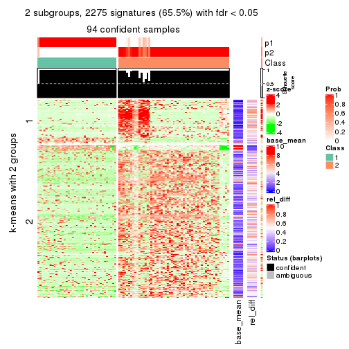
get_signatures(res, k = 3)
get_signatures(res, k = 4)
get_signatures(res, k = 5)

get_signatures(res, k = 6)
Signature heatmaps where rows are not scaled:
get_signatures(res, k = 2, scale_rows = FALSE)
get_signatures(res, k = 3, scale_rows = FALSE)

get_signatures(res, k = 4, scale_rows = FALSE)
get_signatures(res, k = 5, scale_rows = FALSE)
get_signatures(res, k = 6, scale_rows = FALSE)
Compare the overlap of signatures from different k:
compare_signatures(res)
get_signature() returns a data frame invisibly. TO get the list of signatures, the function
call should be assigned to a variable explicitly. In following code, if plot argument is set
to FALSE, no heatmap is plotted while only the differential analysis is performed.
# code only for demonstration
tb = get_signature(res, k = ..., plot = FALSE)
An example of the output of tb is:
#> which_row fdr mean_1 mean_2 scaled_mean_1 scaled_mean_2 km
#> 1 38 0.042760348 8.373488 9.131774 -0.5533452 0.5164555 1
#> 2 40 0.018707592 7.106213 8.469186 -0.6173731 0.5762149 1
#> 3 55 0.019134737 10.221463 11.207825 -0.6159697 0.5749050 1
#> 4 59 0.006059896 5.921854 7.869574 -0.6899429 0.6439467 1
#> 5 60 0.018055526 8.928898 10.211722 -0.6204761 0.5791110 1
#> 6 98 0.009384629 15.714769 14.887706 0.6635654 -0.6193277 2
...
The columns in tb are:
which_row: row indices corresponding to the input matrix.fdr: FDR for the differential test. mean_x: The mean value in group x.scaled_mean_x: The mean value in group x after rows are scaled.km: Row groups if k-means clustering is applied to rows.UMAP plot which shows how samples are separated.
dimension_reduction(res, k = 2, method = "UMAP")
dimension_reduction(res, k = 3, method = "UMAP")
dimension_reduction(res, k = 4, method = "UMAP")
dimension_reduction(res, k = 5, method = "UMAP")
dimension_reduction(res, k = 6, method = "UMAP")
Following heatmap shows how subgroups are split when increasing k:
collect_classes(res)
If matrix rows can be associated to genes, consider to use functional_enrichment(res,
...) to perform function enrichment for the signature genes. See this vignette for more detailed explanations.
The object with results only for a single top-value method and a single partition method can be extracted as:
res = res_list["ATC", "hclust"]
# you can also extract it by
# res = res_list["ATC:hclust"]
A summary of res and all the functions that can be applied to it:
res
#> A 'ConsensusPartition' object with k = 2, 3, 4, 5, 6.
#> On a matrix with 3475 rows and 95 columns.
#> Top rows (348, 696, 1043, 1390, 1738) are extracted by 'ATC' method.
#> Subgroups are detected by 'hclust' method.
#> Performed in total 1250 partitions by row resampling.
#> Best k for subgroups seems to be 3.
#>
#> Following methods can be applied to this 'ConsensusPartition' object:
#> [1] "cola_report" "collect_classes" "collect_plots"
#> [4] "collect_stats" "colnames" "compare_signatures"
#> [7] "consensus_heatmap" "dimension_reduction" "functional_enrichment"
#> [10] "get_anno_col" "get_anno" "get_classes"
#> [13] "get_consensus" "get_matrix" "get_membership"
#> [16] "get_param" "get_signatures" "get_stats"
#> [19] "is_best_k" "is_stable_k" "membership_heatmap"
#> [22] "ncol" "nrow" "plot_ecdf"
#> [25] "rownames" "select_partition_number" "show"
#> [28] "suggest_best_k" "test_to_known_factors"
collect_plots() function collects all the plots made from res for all k (number of partitions)
into one single page to provide an easy and fast comparison between different k.
collect_plots(res)
The plots are:
k and the heatmap of
predicted classes for each k.k.k.k.All the plots in panels can be made by individual functions and they are plotted later in this section.
select_partition_number() produces several plots showing different
statistics for choosing “optimized” k. There are following statistics:
k;k, the area increased is defined as \(A_k - A_{k-1}\).The detailed explanations of these statistics can be found in the cola vignette.
Generally speaking, lower PAC score, higher mean silhouette score or higher
concordance corresponds to better partition. Rand index and Jaccard index
measure how similar the current partition is compared to partition with k-1.
If they are too similar, we won't accept k is better than k-1.
select_partition_number(res)
The numeric values for all these statistics can be obtained by get_stats().
get_stats(res)
#> k 1-PAC mean_silhouette concordance area_increased Rand Jaccard
#> 2 2 1.000 0.987 0.995 0.2882 0.717 0.717
#> 3 3 1.000 0.946 0.979 1.1294 0.675 0.547
#> 4 4 0.937 0.888 0.945 0.0181 0.991 0.978
#> 5 5 0.946 0.862 0.934 0.0263 0.989 0.971
#> 6 6 0.924 0.846 0.910 0.0231 0.992 0.978
suggest_best_k() suggests the best \(k\) based on these statistics. The rules are as follows:
suggest_best_k(res)
#> [1] 3
#> attr(,"optional")
#> [1] 2
There is also optional best \(k\) = 2 that is worth to check.
Following shows the table of the partitions (You need to click the show/hide
code output link to see it). The membership matrix (columns with name p*)
is inferred by
clue::cl_consensus()
function with the SE method. Basically the value in the membership matrix
represents the probability to belong to a certain group. The finall class
label for an item is determined with the group with highest probability it
belongs to.
In get_classes() function, the entropy is calculated from the membership
matrix and the silhouette score is calculated from the consensus matrix.
cbind(get_classes(res, k = 2), get_membership(res, k = 2))
#> class entropy silhouette p1 p2
#> SRR2062258 1 0.000 0.995 1.000 0.000
#> SRR2062259 1 0.000 0.995 1.000 0.000
#> SRR2062270 2 0.184 0.975 0.028 0.972
#> SRR2062342 1 0.000 0.995 1.000 0.000
#> SRR2062341 1 0.000 0.995 1.000 0.000
#> SRR2062340 1 0.000 0.995 1.000 0.000
#> SRR2062339 1 0.000 0.995 1.000 0.000
#> SRR2062348 1 0.000 0.995 1.000 0.000
#> SRR2062347 1 0.000 0.995 1.000 0.000
#> SRR2062351 1 0.000 0.995 1.000 0.000
#> SRR2062350 1 0.000 0.995 1.000 0.000
#> SRR2062349 1 0.000 0.995 1.000 0.000
#> SRR2062346 1 0.000 0.995 1.000 0.000
#> SRR2062345 1 0.000 0.995 1.000 0.000
#> SRR2062344 2 0.000 0.994 0.000 1.000
#> SRR2062343 1 0.000 0.995 1.000 0.000
#> SRR2062354 1 0.000 0.995 1.000 0.000
#> SRR2062353 1 0.000 0.995 1.000 0.000
#> SRR2062352 1 0.000 0.995 1.000 0.000
#> SRR2063021 1 0.000 0.995 1.000 0.000
#> SRR2062356 1 0.000 0.995 1.000 0.000
#> SRR2063025 1 0.000 0.995 1.000 0.000
#> SRR2063027 1 0.000 0.995 1.000 0.000
#> SRR2063023 1 0.971 0.326 0.600 0.400
#> SRR2062355 2 0.184 0.975 0.028 0.972
#> SRR2063030 1 0.000 0.995 1.000 0.000
#> SRR2064285 1 0.000 0.995 1.000 0.000
#> SRR2063034 1 0.000 0.995 1.000 0.000
#> SRR2063032 1 0.000 0.995 1.000 0.000
#> SRR2063031 1 0.000 0.995 1.000 0.000
#> SRR2063029 1 0.000 0.995 1.000 0.000
#> SRR2063028 1 0.000 0.995 1.000 0.000
#> SRR2064308 2 0.000 0.994 0.000 1.000
#> SRR2064310 1 0.000 0.995 1.000 0.000
#> SRR2064312 1 0.000 0.995 1.000 0.000
#> SRR2064314 1 0.000 0.995 1.000 0.000
#> SRR2064315 1 0.000 0.995 1.000 0.000
#> SRR2064317 1 0.000 0.995 1.000 0.000
#> SRR2064318 1 0.000 0.995 1.000 0.000
#> SRR2064319 1 0.000 0.995 1.000 0.000
#> SRR2064320 1 0.000 0.995 1.000 0.000
#> SRR2064321 2 0.000 0.994 0.000 1.000
#> SRR2064322 1 0.000 0.995 1.000 0.000
#> SRR2064323 1 0.000 0.995 1.000 0.000
#> SRR2064324 1 0.000 0.995 1.000 0.000
#> SRR2064325 1 0.000 0.995 1.000 0.000
#> SRR2064326 1 0.000 0.995 1.000 0.000
#> SRR2064327 2 0.000 0.994 0.000 1.000
#> SRR2064329 1 0.000 0.995 1.000 0.000
#> SRR2064328 1 0.000 0.995 1.000 0.000
#> SRR2064330 1 0.000 0.995 1.000 0.000
#> SRR2064331 2 0.000 0.994 0.000 1.000
#> SRR2064332 2 0.000 0.994 0.000 1.000
#> SRR2064333 1 0.000 0.995 1.000 0.000
#> SRR2064334 1 0.000 0.995 1.000 0.000
#> SRR2064335 1 0.000 0.995 1.000 0.000
#> SRR2064436 1 0.000 0.995 1.000 0.000
#> SRR2064457 1 0.000 0.995 1.000 0.000
#> SRR2064458 1 0.000 0.995 1.000 0.000
#> SRR2064459 2 0.000 0.994 0.000 1.000
#> SRR2064460 1 0.000 0.995 1.000 0.000
#> SRR2064461 1 0.000 0.995 1.000 0.000
#> SRR2064462 1 0.000 0.995 1.000 0.000
#> SRR2064534 1 0.000 0.995 1.000 0.000
#> SRR2064535 2 0.000 0.994 0.000 1.000
#> SRR2064536 2 0.000 0.994 0.000 1.000
#> SRR2064537 1 0.000 0.995 1.000 0.000
#> SRR2064538 1 0.000 0.995 1.000 0.000
#> SRR2064539 2 0.000 0.994 0.000 1.000
#> SRR2064540 1 0.000 0.995 1.000 0.000
#> SRR2064541 1 0.000 0.995 1.000 0.000
#> SRR2064543 1 0.000 0.995 1.000 0.000
#> SRR2064542 1 0.000 0.995 1.000 0.000
#> SRR2064544 1 0.000 0.995 1.000 0.000
#> SRR2064545 1 0.000 0.995 1.000 0.000
#> SRR2064546 1 0.000 0.995 1.000 0.000
#> SRR2064547 1 0.000 0.995 1.000 0.000
#> SRR2064548 1 0.000 0.995 1.000 0.000
#> SRR2064550 2 0.184 0.975 0.028 0.972
#> SRR2064549 1 0.000 0.995 1.000 0.000
#> SRR2064551 1 0.000 0.995 1.000 0.000
#> SRR2064552 1 0.000 0.995 1.000 0.000
#> SRR2064553 2 0.000 0.994 0.000 1.000
#> SRR2064554 1 0.000 0.995 1.000 0.000
#> SRR2064555 2 0.000 0.994 0.000 1.000
#> SRR2064556 1 0.000 0.995 1.000 0.000
#> SRR2064559 1 0.000 0.995 1.000 0.000
#> SRR2064558 2 0.000 0.994 0.000 1.000
#> SRR2064557 1 0.000 0.995 1.000 0.000
#> SRR2064560 1 0.000 0.995 1.000 0.000
#> SRR2064561 1 0.000 0.995 1.000 0.000
#> SRR2064562 1 0.000 0.995 1.000 0.000
#> SRR2064564 1 0.000 0.995 1.000 0.000
#> SRR2064563 1 0.000 0.995 1.000 0.000
#> SRR2064565 1 0.000 0.995 1.000 0.000
cbind(get_classes(res, k = 3), get_membership(res, k = 3))
#> class entropy silhouette p1 p2 p3
#> SRR2062258 1 0.0892 0.947 0.980 0.020 0.000
#> SRR2062259 1 0.0000 0.965 1.000 0.000 0.000
#> SRR2062270 3 0.1163 0.971 0.028 0.000 0.972
#> SRR2062342 2 0.0000 0.985 0.000 1.000 0.000
#> SRR2062341 1 0.0000 0.965 1.000 0.000 0.000
#> SRR2062340 2 0.0000 0.985 0.000 1.000 0.000
#> SRR2062339 1 0.0000 0.965 1.000 0.000 0.000
#> SRR2062348 1 0.0000 0.965 1.000 0.000 0.000
#> SRR2062347 2 0.0000 0.985 0.000 1.000 0.000
#> SRR2062351 1 0.0000 0.965 1.000 0.000 0.000
#> SRR2062350 1 0.0000 0.965 1.000 0.000 0.000
#> SRR2062349 2 0.0000 0.985 0.000 1.000 0.000
#> SRR2062346 1 0.0000 0.965 1.000 0.000 0.000
#> SRR2062345 2 0.0000 0.985 0.000 1.000 0.000
#> SRR2062344 3 0.0000 0.993 0.000 0.000 1.000
#> SRR2062343 2 0.0000 0.985 0.000 1.000 0.000
#> SRR2062354 1 0.0000 0.965 1.000 0.000 0.000
#> SRR2062353 2 0.0000 0.985 0.000 1.000 0.000
#> SRR2062352 1 0.0000 0.965 1.000 0.000 0.000
#> SRR2063021 1 0.0000 0.965 1.000 0.000 0.000
#> SRR2062356 1 0.0000 0.965 1.000 0.000 0.000
#> SRR2063025 2 0.0000 0.985 0.000 1.000 0.000
#> SRR2063027 1 0.0000 0.965 1.000 0.000 0.000
#> SRR2063023 1 0.6126 0.326 0.600 0.000 0.400
#> SRR2062355 3 0.1163 0.971 0.028 0.000 0.972
#> SRR2063030 1 0.0000 0.965 1.000 0.000 0.000
#> SRR2064285 1 0.0000 0.965 1.000 0.000 0.000
#> SRR2063034 1 0.0000 0.965 1.000 0.000 0.000
#> SRR2063032 1 0.0000 0.965 1.000 0.000 0.000
#> SRR2063031 1 0.0000 0.965 1.000 0.000 0.000
#> SRR2063029 2 0.0000 0.985 0.000 1.000 0.000
#> SRR2063028 1 0.0000 0.965 1.000 0.000 0.000
#> SRR2064308 3 0.0000 0.993 0.000 0.000 1.000
#> SRR2064310 1 0.5706 0.532 0.680 0.320 0.000
#> SRR2064312 1 0.0000 0.965 1.000 0.000 0.000
#> SRR2064314 2 0.0000 0.985 0.000 1.000 0.000
#> SRR2064315 1 0.0000 0.965 1.000 0.000 0.000
#> SRR2064317 2 0.0000 0.985 0.000 1.000 0.000
#> SRR2064318 1 0.0000 0.965 1.000 0.000 0.000
#> SRR2064319 1 0.0000 0.965 1.000 0.000 0.000
#> SRR2064320 2 0.0000 0.985 0.000 1.000 0.000
#> SRR2064321 3 0.0000 0.993 0.000 0.000 1.000
#> SRR2064322 2 0.0000 0.985 0.000 1.000 0.000
#> SRR2064323 1 0.1031 0.943 0.976 0.024 0.000
#> SRR2064324 2 0.0000 0.985 0.000 1.000 0.000
#> SRR2064325 1 0.0000 0.965 1.000 0.000 0.000
#> SRR2064326 1 0.0000 0.965 1.000 0.000 0.000
#> SRR2064327 3 0.0000 0.993 0.000 0.000 1.000
#> SRR2064329 1 0.0000 0.965 1.000 0.000 0.000
#> SRR2064328 2 0.0000 0.985 0.000 1.000 0.000
#> SRR2064330 2 0.2261 0.906 0.068 0.932 0.000
#> SRR2064331 3 0.0000 0.993 0.000 0.000 1.000
#> SRR2064332 3 0.0000 0.993 0.000 0.000 1.000
#> SRR2064333 1 0.0000 0.965 1.000 0.000 0.000
#> SRR2064334 2 0.0000 0.985 0.000 1.000 0.000
#> SRR2064335 2 0.0000 0.985 0.000 1.000 0.000
#> SRR2064436 1 0.0000 0.965 1.000 0.000 0.000
#> SRR2064457 1 0.0000 0.965 1.000 0.000 0.000
#> SRR2064458 1 0.6225 0.250 0.568 0.432 0.000
#> SRR2064459 3 0.0000 0.993 0.000 0.000 1.000
#> SRR2064460 1 0.0000 0.965 1.000 0.000 0.000
#> SRR2064461 2 0.0000 0.985 0.000 1.000 0.000
#> SRR2064462 1 0.0000 0.965 1.000 0.000 0.000
#> SRR2064534 2 0.0000 0.985 0.000 1.000 0.000
#> SRR2064535 3 0.0000 0.993 0.000 0.000 1.000
#> SRR2064536 3 0.0000 0.993 0.000 0.000 1.000
#> SRR2064537 1 0.0000 0.965 1.000 0.000 0.000
#> SRR2064538 1 0.0000 0.965 1.000 0.000 0.000
#> SRR2064539 3 0.0000 0.993 0.000 0.000 1.000
#> SRR2064540 1 0.0000 0.965 1.000 0.000 0.000
#> SRR2064541 2 0.0000 0.985 0.000 1.000 0.000
#> SRR2064543 1 0.0000 0.965 1.000 0.000 0.000
#> SRR2064542 1 0.0000 0.965 1.000 0.000 0.000
#> SRR2064544 2 0.4702 0.701 0.212 0.788 0.000
#> SRR2064545 2 0.0000 0.985 0.000 1.000 0.000
#> SRR2064546 1 0.0000 0.965 1.000 0.000 0.000
#> SRR2064547 1 0.0000 0.965 1.000 0.000 0.000
#> SRR2064548 2 0.0237 0.981 0.004 0.996 0.000
#> SRR2064550 3 0.1163 0.971 0.028 0.000 0.972
#> SRR2064549 1 0.0000 0.965 1.000 0.000 0.000
#> SRR2064551 2 0.0000 0.985 0.000 1.000 0.000
#> SRR2064552 1 0.0000 0.965 1.000 0.000 0.000
#> SRR2064553 3 0.0000 0.993 0.000 0.000 1.000
#> SRR2064554 1 0.0000 0.965 1.000 0.000 0.000
#> SRR2064555 3 0.0000 0.993 0.000 0.000 1.000
#> SRR2064556 1 0.0000 0.965 1.000 0.000 0.000
#> SRR2064559 2 0.0000 0.985 0.000 1.000 0.000
#> SRR2064558 3 0.0000 0.993 0.000 0.000 1.000
#> SRR2064557 2 0.0000 0.985 0.000 1.000 0.000
#> SRR2064560 1 0.0000 0.965 1.000 0.000 0.000
#> SRR2064561 1 0.5988 0.427 0.632 0.368 0.000
#> SRR2064562 1 0.0000 0.965 1.000 0.000 0.000
#> SRR2064564 1 0.0000 0.965 1.000 0.000 0.000
#> SRR2064563 2 0.0000 0.985 0.000 1.000 0.000
#> SRR2064565 2 0.1643 0.936 0.044 0.956 0.000
cbind(get_classes(res, k = 4), get_membership(res, k = 4))
#> class entropy silhouette p1 p2 p3 p4
#> SRR2062258 1 0.0707 0.940 0.980 0.020 0.000 0.000
#> SRR2062259 1 0.0000 0.959 1.000 0.000 0.000 0.000
#> SRR2062270 3 0.0000 0.339 0.000 0.000 1.000 0.000
#> SRR2062342 2 0.0000 0.983 0.000 1.000 0.000 0.000
#> SRR2062341 1 0.0000 0.959 1.000 0.000 0.000 0.000
#> SRR2062340 2 0.0000 0.983 0.000 1.000 0.000 0.000
#> SRR2062339 1 0.0000 0.959 1.000 0.000 0.000 0.000
#> SRR2062348 1 0.0000 0.959 1.000 0.000 0.000 0.000
#> SRR2062347 2 0.0000 0.983 0.000 1.000 0.000 0.000
#> SRR2062351 1 0.0000 0.959 1.000 0.000 0.000 0.000
#> SRR2062350 1 0.0000 0.959 1.000 0.000 0.000 0.000
#> SRR2062349 2 0.0000 0.983 0.000 1.000 0.000 0.000
#> SRR2062346 1 0.0000 0.959 1.000 0.000 0.000 0.000
#> SRR2062345 2 0.0000 0.983 0.000 1.000 0.000 0.000
#> SRR2062344 3 0.4790 0.722 0.000 0.000 0.620 0.380
#> SRR2062343 2 0.0000 0.983 0.000 1.000 0.000 0.000
#> SRR2062354 1 0.0000 0.959 1.000 0.000 0.000 0.000
#> SRR2062353 2 0.0000 0.983 0.000 1.000 0.000 0.000
#> SRR2062352 1 0.0000 0.959 1.000 0.000 0.000 0.000
#> SRR2063021 1 0.0000 0.959 1.000 0.000 0.000 0.000
#> SRR2062356 1 0.0000 0.959 1.000 0.000 0.000 0.000
#> SRR2063025 2 0.0000 0.983 0.000 1.000 0.000 0.000
#> SRR2063027 1 0.0000 0.959 1.000 0.000 0.000 0.000
#> SRR2063023 1 0.7812 -0.139 0.376 0.000 0.372 0.252
#> SRR2062355 3 0.0000 0.339 0.000 0.000 1.000 0.000
#> SRR2063030 1 0.0000 0.959 1.000 0.000 0.000 0.000
#> SRR2064285 1 0.0000 0.959 1.000 0.000 0.000 0.000
#> SRR2063034 1 0.0000 0.959 1.000 0.000 0.000 0.000
#> SRR2063032 1 0.0000 0.959 1.000 0.000 0.000 0.000
#> SRR2063031 1 0.0000 0.959 1.000 0.000 0.000 0.000
#> SRR2063029 2 0.0000 0.983 0.000 1.000 0.000 0.000
#> SRR2063028 1 0.0000 0.959 1.000 0.000 0.000 0.000
#> SRR2064308 4 0.4382 1.000 0.000 0.000 0.296 0.704
#> SRR2064310 1 0.4699 0.525 0.676 0.320 0.000 0.004
#> SRR2064312 1 0.0000 0.959 1.000 0.000 0.000 0.000
#> SRR2064314 2 0.0000 0.983 0.000 1.000 0.000 0.000
#> SRR2064315 1 0.0000 0.959 1.000 0.000 0.000 0.000
#> SRR2064317 2 0.0000 0.983 0.000 1.000 0.000 0.000
#> SRR2064318 1 0.0000 0.959 1.000 0.000 0.000 0.000
#> SRR2064319 1 0.0000 0.959 1.000 0.000 0.000 0.000
#> SRR2064320 2 0.0000 0.983 0.000 1.000 0.000 0.000
#> SRR2064321 3 0.4624 0.703 0.000 0.000 0.660 0.340
#> SRR2064322 2 0.0000 0.983 0.000 1.000 0.000 0.000
#> SRR2064323 1 0.1004 0.933 0.972 0.024 0.000 0.004
#> SRR2064324 2 0.0000 0.983 0.000 1.000 0.000 0.000
#> SRR2064325 1 0.0000 0.959 1.000 0.000 0.000 0.000
#> SRR2064326 1 0.0000 0.959 1.000 0.000 0.000 0.000
#> SRR2064327 3 0.4790 0.722 0.000 0.000 0.620 0.380
#> SRR2064329 1 0.0000 0.959 1.000 0.000 0.000 0.000
#> SRR2064328 2 0.0000 0.983 0.000 1.000 0.000 0.000
#> SRR2064330 2 0.1792 0.894 0.068 0.932 0.000 0.000
#> SRR2064331 3 0.4790 0.722 0.000 0.000 0.620 0.380
#> SRR2064332 3 0.4661 0.713 0.000 0.000 0.652 0.348
#> SRR2064333 1 0.0000 0.959 1.000 0.000 0.000 0.000
#> SRR2064334 2 0.0000 0.983 0.000 1.000 0.000 0.000
#> SRR2064335 2 0.0000 0.983 0.000 1.000 0.000 0.000
#> SRR2064436 1 0.0000 0.959 1.000 0.000 0.000 0.000
#> SRR2064457 1 0.0000 0.959 1.000 0.000 0.000 0.000
#> SRR2064458 1 0.5105 0.244 0.564 0.432 0.000 0.004
#> SRR2064459 3 0.4661 0.713 0.000 0.000 0.652 0.348
#> SRR2064460 1 0.0000 0.959 1.000 0.000 0.000 0.000
#> SRR2064461 2 0.0000 0.983 0.000 1.000 0.000 0.000
#> SRR2064462 1 0.0000 0.959 1.000 0.000 0.000 0.000
#> SRR2064534 2 0.0000 0.983 0.000 1.000 0.000 0.000
#> SRR2064535 3 0.4790 0.722 0.000 0.000 0.620 0.380
#> SRR2064536 4 0.4382 1.000 0.000 0.000 0.296 0.704
#> SRR2064537 1 0.0000 0.959 1.000 0.000 0.000 0.000
#> SRR2064538 1 0.0000 0.959 1.000 0.000 0.000 0.000
#> SRR2064539 4 0.4382 1.000 0.000 0.000 0.296 0.704
#> SRR2064540 1 0.0000 0.959 1.000 0.000 0.000 0.000
#> SRR2064541 2 0.0000 0.983 0.000 1.000 0.000 0.000
#> SRR2064543 1 0.0000 0.959 1.000 0.000 0.000 0.000
#> SRR2064542 1 0.0000 0.959 1.000 0.000 0.000 0.000
#> SRR2064544 2 0.3870 0.662 0.208 0.788 0.000 0.004
#> SRR2064545 2 0.0000 0.983 0.000 1.000 0.000 0.000
#> SRR2064546 1 0.0000 0.959 1.000 0.000 0.000 0.000
#> SRR2064547 1 0.0000 0.959 1.000 0.000 0.000 0.000
#> SRR2064548 2 0.0188 0.978 0.004 0.996 0.000 0.000
#> SRR2064550 3 0.0000 0.339 0.000 0.000 1.000 0.000
#> SRR2064549 1 0.0000 0.959 1.000 0.000 0.000 0.000
#> SRR2064551 2 0.0000 0.983 0.000 1.000 0.000 0.000
#> SRR2064552 1 0.0000 0.959 1.000 0.000 0.000 0.000
#> SRR2064553 3 0.4585 0.707 0.000 0.000 0.668 0.332
#> SRR2064554 1 0.0000 0.959 1.000 0.000 0.000 0.000
#> SRR2064555 3 0.4713 0.718 0.000 0.000 0.640 0.360
#> SRR2064556 1 0.0000 0.959 1.000 0.000 0.000 0.000
#> SRR2064559 2 0.0000 0.983 0.000 1.000 0.000 0.000
#> SRR2064558 3 0.4790 0.722 0.000 0.000 0.620 0.380
#> SRR2064557 2 0.0000 0.983 0.000 1.000 0.000 0.000
#> SRR2064560 1 0.0000 0.959 1.000 0.000 0.000 0.000
#> SRR2064561 1 0.4920 0.419 0.628 0.368 0.000 0.004
#> SRR2064562 1 0.0000 0.959 1.000 0.000 0.000 0.000
#> SRR2064564 1 0.0000 0.959 1.000 0.000 0.000 0.000
#> SRR2064563 2 0.0000 0.983 0.000 1.000 0.000 0.000
#> SRR2064565 2 0.1302 0.928 0.044 0.956 0.000 0.000
cbind(get_classes(res, k = 5), get_membership(res, k = 5))
#> class entropy silhouette p1 p2 p3 p4 p5
#> SRR2062258 1 0.2069 0.86157 0.912 0.012 0.000 0.076 0.000
#> SRR2062259 1 0.0000 0.95394 1.000 0.000 0.000 0.000 0.000
#> SRR2062270 3 0.6281 0.43275 0.000 0.000 0.488 0.160 0.352
#> SRR2062342 2 0.0162 0.97774 0.000 0.996 0.000 0.004 0.000
#> SRR2062341 1 0.0000 0.95394 1.000 0.000 0.000 0.000 0.000
#> SRR2062340 2 0.0000 0.97747 0.000 1.000 0.000 0.000 0.000
#> SRR2062339 1 0.0000 0.95394 1.000 0.000 0.000 0.000 0.000
#> SRR2062348 1 0.0000 0.95394 1.000 0.000 0.000 0.000 0.000
#> SRR2062347 2 0.0290 0.97695 0.000 0.992 0.000 0.008 0.000
#> SRR2062351 1 0.0000 0.95394 1.000 0.000 0.000 0.000 0.000
#> SRR2062350 1 0.0000 0.95394 1.000 0.000 0.000 0.000 0.000
#> SRR2062349 2 0.0290 0.97695 0.000 0.992 0.000 0.008 0.000
#> SRR2062346 1 0.0000 0.95394 1.000 0.000 0.000 0.000 0.000
#> SRR2062345 2 0.0162 0.97774 0.000 0.996 0.000 0.004 0.000
#> SRR2062344 3 0.0992 0.65796 0.000 0.000 0.968 0.008 0.024
#> SRR2062343 2 0.0162 0.97774 0.000 0.996 0.000 0.004 0.000
#> SRR2062354 1 0.0000 0.95394 1.000 0.000 0.000 0.000 0.000
#> SRR2062353 2 0.0162 0.97774 0.000 0.996 0.000 0.004 0.000
#> SRR2062352 1 0.0000 0.95394 1.000 0.000 0.000 0.000 0.000
#> SRR2063021 1 0.0162 0.95109 0.996 0.000 0.000 0.004 0.000
#> SRR2062356 1 0.0000 0.95394 1.000 0.000 0.000 0.000 0.000
#> SRR2063025 2 0.0162 0.97774 0.000 0.996 0.000 0.004 0.000
#> SRR2063027 1 0.0000 0.95394 1.000 0.000 0.000 0.000 0.000
#> SRR2063023 5 0.2338 0.00000 0.112 0.000 0.004 0.000 0.884
#> SRR2062355 3 0.6281 0.43275 0.000 0.000 0.488 0.160 0.352
#> SRR2063030 1 0.0000 0.95394 1.000 0.000 0.000 0.000 0.000
#> SRR2064285 1 0.0000 0.95394 1.000 0.000 0.000 0.000 0.000
#> SRR2063034 1 0.0000 0.95394 1.000 0.000 0.000 0.000 0.000
#> SRR2063032 1 0.0162 0.95109 0.996 0.000 0.000 0.004 0.000
#> SRR2063031 1 0.0000 0.95394 1.000 0.000 0.000 0.000 0.000
#> SRR2063029 2 0.0162 0.97774 0.000 0.996 0.000 0.004 0.000
#> SRR2063028 1 0.0000 0.95394 1.000 0.000 0.000 0.000 0.000
#> SRR2064308 4 0.3305 1.00000 0.000 0.000 0.224 0.776 0.000
#> SRR2064310 1 0.6229 0.12645 0.540 0.268 0.000 0.192 0.000
#> SRR2064312 1 0.0000 0.95394 1.000 0.000 0.000 0.000 0.000
#> SRR2064314 2 0.0000 0.97747 0.000 1.000 0.000 0.000 0.000
#> SRR2064315 1 0.0000 0.95394 1.000 0.000 0.000 0.000 0.000
#> SRR2064317 2 0.0162 0.97774 0.000 0.996 0.000 0.004 0.000
#> SRR2064318 1 0.0000 0.95394 1.000 0.000 0.000 0.000 0.000
#> SRR2064319 1 0.0000 0.95394 1.000 0.000 0.000 0.000 0.000
#> SRR2064320 2 0.0000 0.97747 0.000 1.000 0.000 0.000 0.000
#> SRR2064321 3 0.3280 0.63758 0.000 0.000 0.812 0.176 0.012
#> SRR2064322 2 0.0162 0.97651 0.000 0.996 0.000 0.004 0.000
#> SRR2064323 1 0.2818 0.79017 0.856 0.012 0.000 0.132 0.000
#> SRR2064324 2 0.0000 0.97747 0.000 1.000 0.000 0.000 0.000
#> SRR2064325 1 0.0000 0.95394 1.000 0.000 0.000 0.000 0.000
#> SRR2064326 1 0.0162 0.95109 0.996 0.000 0.000 0.004 0.000
#> SRR2064327 3 0.4266 0.59251 0.000 0.000 0.776 0.120 0.104
#> SRR2064329 1 0.0000 0.95394 1.000 0.000 0.000 0.000 0.000
#> SRR2064328 2 0.0000 0.97747 0.000 1.000 0.000 0.000 0.000
#> SRR2064330 2 0.2046 0.87409 0.068 0.916 0.000 0.016 0.000
#> SRR2064331 3 0.2848 0.61767 0.000 0.000 0.868 0.028 0.104
#> SRR2064332 3 0.3845 0.60988 0.000 0.000 0.768 0.208 0.024
#> SRR2064333 1 0.0000 0.95394 1.000 0.000 0.000 0.000 0.000
#> SRR2064334 2 0.0162 0.97651 0.000 0.996 0.000 0.004 0.000
#> SRR2064335 2 0.0162 0.97651 0.000 0.996 0.000 0.004 0.000
#> SRR2064436 1 0.0000 0.95394 1.000 0.000 0.000 0.000 0.000
#> SRR2064457 1 0.0000 0.95394 1.000 0.000 0.000 0.000 0.000
#> SRR2064458 1 0.6346 -0.13699 0.436 0.404 0.000 0.160 0.000
#> SRR2064459 3 0.3449 0.63964 0.000 0.000 0.812 0.164 0.024
#> SRR2064460 1 0.0000 0.95394 1.000 0.000 0.000 0.000 0.000
#> SRR2064461 2 0.0000 0.97747 0.000 1.000 0.000 0.000 0.000
#> SRR2064462 1 0.0000 0.95394 1.000 0.000 0.000 0.000 0.000
#> SRR2064534 2 0.0162 0.97774 0.000 0.996 0.000 0.004 0.000
#> SRR2064535 3 0.2573 0.61524 0.000 0.000 0.880 0.016 0.104
#> SRR2064536 4 0.3305 1.00000 0.000 0.000 0.224 0.776 0.000
#> SRR2064537 1 0.0162 0.95109 0.996 0.000 0.000 0.004 0.000
#> SRR2064538 1 0.0000 0.95394 1.000 0.000 0.000 0.000 0.000
#> SRR2064539 4 0.3305 1.00000 0.000 0.000 0.224 0.776 0.000
#> SRR2064540 1 0.0000 0.95394 1.000 0.000 0.000 0.000 0.000
#> SRR2064541 2 0.0609 0.96701 0.000 0.980 0.000 0.020 0.000
#> SRR2064543 1 0.0000 0.95394 1.000 0.000 0.000 0.000 0.000
#> SRR2064542 1 0.0000 0.95394 1.000 0.000 0.000 0.000 0.000
#> SRR2064544 2 0.4848 0.59761 0.132 0.724 0.000 0.144 0.000
#> SRR2064545 2 0.0794 0.96406 0.000 0.972 0.000 0.028 0.000
#> SRR2064546 1 0.0000 0.95394 1.000 0.000 0.000 0.000 0.000
#> SRR2064547 1 0.0000 0.95394 1.000 0.000 0.000 0.000 0.000
#> SRR2064548 2 0.0162 0.97483 0.004 0.996 0.000 0.000 0.000
#> SRR2064550 3 0.6281 0.43275 0.000 0.000 0.488 0.160 0.352
#> SRR2064549 1 0.0162 0.95109 0.996 0.000 0.000 0.004 0.000
#> SRR2064551 2 0.0162 0.97774 0.000 0.996 0.000 0.004 0.000
#> SRR2064552 1 0.0000 0.95394 1.000 0.000 0.000 0.000 0.000
#> SRR2064553 3 0.3663 0.61397 0.000 0.000 0.776 0.208 0.016
#> SRR2064554 1 0.0162 0.95109 0.996 0.000 0.000 0.004 0.000
#> SRR2064555 3 0.1818 0.66442 0.000 0.000 0.932 0.044 0.024
#> SRR2064556 1 0.0000 0.95394 1.000 0.000 0.000 0.000 0.000
#> SRR2064559 2 0.0162 0.97774 0.000 0.996 0.000 0.004 0.000
#> SRR2064558 3 0.2573 0.61524 0.000 0.000 0.880 0.016 0.104
#> SRR2064557 2 0.0162 0.97774 0.000 0.996 0.000 0.004 0.000
#> SRR2064560 1 0.0000 0.95394 1.000 0.000 0.000 0.000 0.000
#> SRR2064561 1 0.6399 -0.00404 0.492 0.316 0.000 0.192 0.000
#> SRR2064562 1 0.0000 0.95394 1.000 0.000 0.000 0.000 0.000
#> SRR2064564 1 0.0000 0.95394 1.000 0.000 0.000 0.000 0.000
#> SRR2064563 2 0.0162 0.97651 0.000 0.996 0.000 0.004 0.000
#> SRR2064565 2 0.1725 0.91035 0.044 0.936 0.000 0.020 0.000
cbind(get_classes(res, k = 6), get_membership(res, k = 6))
#> class entropy silhouette p1 p2 p3 p4 p5 p6
#> SRR2062258 1 0.2966 0.8104 0.848 0.000 0.000 0.076 0.000 0.076
#> SRR2062259 1 0.0000 0.9533 1.000 0.000 0.000 0.000 0.000 0.000
#> SRR2062270 3 0.3998 0.4448 0.000 0.000 0.644 0.016 0.340 0.000
#> SRR2062342 2 0.0146 0.9580 0.000 0.996 0.000 0.004 0.000 0.000
#> SRR2062341 1 0.0000 0.9533 1.000 0.000 0.000 0.000 0.000 0.000
#> SRR2062340 2 0.0603 0.9564 0.000 0.980 0.000 0.016 0.000 0.004
#> SRR2062339 1 0.0000 0.9533 1.000 0.000 0.000 0.000 0.000 0.000
#> SRR2062348 1 0.0000 0.9533 1.000 0.000 0.000 0.000 0.000 0.000
#> SRR2062347 2 0.0508 0.9579 0.000 0.984 0.000 0.012 0.000 0.004
#> SRR2062351 1 0.0000 0.9533 1.000 0.000 0.000 0.000 0.000 0.000
#> SRR2062350 1 0.0000 0.9533 1.000 0.000 0.000 0.000 0.000 0.000
#> SRR2062349 2 0.0717 0.9558 0.000 0.976 0.000 0.016 0.000 0.008
#> SRR2062346 1 0.0000 0.9533 1.000 0.000 0.000 0.000 0.000 0.000
#> SRR2062345 2 0.0260 0.9575 0.000 0.992 0.000 0.008 0.000 0.000
#> SRR2062344 3 0.4026 0.1444 0.000 0.000 0.612 0.012 0.000 0.376
#> SRR2062343 2 0.0405 0.9583 0.000 0.988 0.000 0.004 0.000 0.008
#> SRR2062354 1 0.0000 0.9533 1.000 0.000 0.000 0.000 0.000 0.000
#> SRR2062353 2 0.0520 0.9578 0.000 0.984 0.000 0.008 0.000 0.008
#> SRR2062352 1 0.0000 0.9533 1.000 0.000 0.000 0.000 0.000 0.000
#> SRR2063021 1 0.0458 0.9433 0.984 0.000 0.000 0.016 0.000 0.000
#> SRR2062356 1 0.0000 0.9533 1.000 0.000 0.000 0.000 0.000 0.000
#> SRR2063025 2 0.0146 0.9580 0.000 0.996 0.000 0.004 0.000 0.000
#> SRR2063027 1 0.0000 0.9533 1.000 0.000 0.000 0.000 0.000 0.000
#> SRR2063023 5 0.0000 0.0000 0.000 0.000 0.000 0.000 1.000 0.000
#> SRR2062355 3 0.3998 0.4448 0.000 0.000 0.644 0.016 0.340 0.000
#> SRR2063030 1 0.0000 0.9533 1.000 0.000 0.000 0.000 0.000 0.000
#> SRR2064285 1 0.0000 0.9533 1.000 0.000 0.000 0.000 0.000 0.000
#> SRR2063034 1 0.0000 0.9533 1.000 0.000 0.000 0.000 0.000 0.000
#> SRR2063032 1 0.0458 0.9433 0.984 0.000 0.000 0.016 0.000 0.000
#> SRR2063031 1 0.0000 0.9533 1.000 0.000 0.000 0.000 0.000 0.000
#> SRR2063029 2 0.0260 0.9581 0.000 0.992 0.000 0.008 0.000 0.000
#> SRR2063028 1 0.0000 0.9533 1.000 0.000 0.000 0.000 0.000 0.000
#> SRR2064308 4 0.3101 1.0000 0.000 0.000 0.244 0.756 0.000 0.000
#> SRR2064310 1 0.6815 0.1417 0.488 0.200 0.000 0.088 0.000 0.224
#> SRR2064312 1 0.0000 0.9533 1.000 0.000 0.000 0.000 0.000 0.000
#> SRR2064314 2 0.0260 0.9576 0.000 0.992 0.000 0.008 0.000 0.000
#> SRR2064315 1 0.0000 0.9533 1.000 0.000 0.000 0.000 0.000 0.000
#> SRR2064317 2 0.0260 0.9575 0.000 0.992 0.000 0.008 0.000 0.000
#> SRR2064318 1 0.0000 0.9533 1.000 0.000 0.000 0.000 0.000 0.000
#> SRR2064319 1 0.0000 0.9533 1.000 0.000 0.000 0.000 0.000 0.000
#> SRR2064320 2 0.0717 0.9559 0.000 0.976 0.000 0.016 0.000 0.008
#> SRR2064321 3 0.1970 0.4551 0.000 0.000 0.912 0.028 0.000 0.060
#> SRR2064322 2 0.0458 0.9570 0.000 0.984 0.000 0.016 0.000 0.000
#> SRR2064323 1 0.3616 0.7406 0.792 0.000 0.000 0.076 0.000 0.132
#> SRR2064324 2 0.1257 0.9444 0.000 0.952 0.000 0.028 0.000 0.020
#> SRR2064325 1 0.0000 0.9533 1.000 0.000 0.000 0.000 0.000 0.000
#> SRR2064326 1 0.0458 0.9433 0.984 0.000 0.000 0.016 0.000 0.000
#> SRR2064327 6 0.5324 0.6491 0.000 0.000 0.428 0.104 0.000 0.468
#> SRR2064329 1 0.0000 0.9533 1.000 0.000 0.000 0.000 0.000 0.000
#> SRR2064328 2 0.0603 0.9578 0.000 0.980 0.000 0.016 0.000 0.004
#> SRR2064330 2 0.3918 0.7959 0.040 0.804 0.000 0.080 0.000 0.076
#> SRR2064331 6 0.3950 0.8625 0.000 0.000 0.432 0.004 0.000 0.564
#> SRR2064332 3 0.4348 0.4970 0.000 0.000 0.724 0.124 0.000 0.152
#> SRR2064333 1 0.0000 0.9533 1.000 0.000 0.000 0.000 0.000 0.000
#> SRR2064334 2 0.0547 0.9562 0.000 0.980 0.000 0.020 0.000 0.000
#> SRR2064335 2 0.0777 0.9542 0.000 0.972 0.000 0.024 0.000 0.004
#> SRR2064436 1 0.0000 0.9533 1.000 0.000 0.000 0.000 0.000 0.000
#> SRR2064457 1 0.0000 0.9533 1.000 0.000 0.000 0.000 0.000 0.000
#> SRR2064458 1 0.7422 -0.1618 0.372 0.272 0.000 0.144 0.000 0.212
#> SRR2064459 3 0.2945 0.5185 0.000 0.000 0.824 0.020 0.000 0.156
#> SRR2064460 1 0.0000 0.9533 1.000 0.000 0.000 0.000 0.000 0.000
#> SRR2064461 2 0.0260 0.9576 0.000 0.992 0.000 0.008 0.000 0.000
#> SRR2064462 1 0.0000 0.9533 1.000 0.000 0.000 0.000 0.000 0.000
#> SRR2064534 2 0.0260 0.9575 0.000 0.992 0.000 0.008 0.000 0.000
#> SRR2064535 6 0.3774 0.8714 0.000 0.000 0.408 0.000 0.000 0.592
#> SRR2064536 4 0.3101 1.0000 0.000 0.000 0.244 0.756 0.000 0.000
#> SRR2064537 1 0.0458 0.9433 0.984 0.000 0.000 0.016 0.000 0.000
#> SRR2064538 1 0.0000 0.9533 1.000 0.000 0.000 0.000 0.000 0.000
#> SRR2064539 4 0.3101 1.0000 0.000 0.000 0.244 0.756 0.000 0.000
#> SRR2064540 1 0.0000 0.9533 1.000 0.000 0.000 0.000 0.000 0.000
#> SRR2064541 2 0.1088 0.9494 0.000 0.960 0.000 0.024 0.000 0.016
#> SRR2064543 1 0.0000 0.9533 1.000 0.000 0.000 0.000 0.000 0.000
#> SRR2064542 1 0.0000 0.9533 1.000 0.000 0.000 0.000 0.000 0.000
#> SRR2064544 2 0.6333 0.4301 0.124 0.584 0.000 0.144 0.000 0.148
#> SRR2064545 2 0.1863 0.9258 0.000 0.920 0.000 0.044 0.000 0.036
#> SRR2064546 1 0.0000 0.9533 1.000 0.000 0.000 0.000 0.000 0.000
#> SRR2064547 1 0.0000 0.9533 1.000 0.000 0.000 0.000 0.000 0.000
#> SRR2064548 2 0.1624 0.9338 0.004 0.936 0.000 0.040 0.000 0.020
#> SRR2064550 3 0.3998 0.4448 0.000 0.000 0.644 0.016 0.340 0.000
#> SRR2064549 1 0.0458 0.9433 0.984 0.000 0.000 0.016 0.000 0.000
#> SRR2064551 2 0.0146 0.9580 0.000 0.996 0.000 0.004 0.000 0.000
#> SRR2064552 1 0.0000 0.9533 1.000 0.000 0.000 0.000 0.000 0.000
#> SRR2064553 3 0.1493 0.5065 0.000 0.000 0.936 0.056 0.004 0.004
#> SRR2064554 1 0.0458 0.9433 0.984 0.000 0.000 0.016 0.000 0.000
#> SRR2064555 3 0.3784 0.3201 0.000 0.000 0.680 0.012 0.000 0.308
#> SRR2064556 1 0.0000 0.9533 1.000 0.000 0.000 0.000 0.000 0.000
#> SRR2064559 2 0.0363 0.9583 0.000 0.988 0.000 0.012 0.000 0.000
#> SRR2064558 6 0.3774 0.8714 0.000 0.000 0.408 0.000 0.000 0.592
#> SRR2064557 2 0.0405 0.9583 0.000 0.988 0.000 0.004 0.000 0.008
#> SRR2064560 1 0.0000 0.9533 1.000 0.000 0.000 0.000 0.000 0.000
#> SRR2064561 1 0.7010 0.0105 0.440 0.248 0.000 0.088 0.000 0.224
#> SRR2064562 1 0.0000 0.9533 1.000 0.000 0.000 0.000 0.000 0.000
#> SRR2064564 1 0.0000 0.9533 1.000 0.000 0.000 0.000 0.000 0.000
#> SRR2064563 2 0.0806 0.9550 0.000 0.972 0.000 0.020 0.000 0.008
#> SRR2064565 2 0.3580 0.8329 0.044 0.828 0.000 0.080 0.000 0.048
Heatmaps for the consensus matrix. It visualizes the probability of two samples to be in a same group.
consensus_heatmap(res, k = 2)
consensus_heatmap(res, k = 3)
consensus_heatmap(res, k = 4)
consensus_heatmap(res, k = 5)
consensus_heatmap(res, k = 6)
Heatmaps for the membership of samples in all partitions to see how consistent they are:
membership_heatmap(res, k = 2)
membership_heatmap(res, k = 3)
membership_heatmap(res, k = 4)
membership_heatmap(res, k = 5)
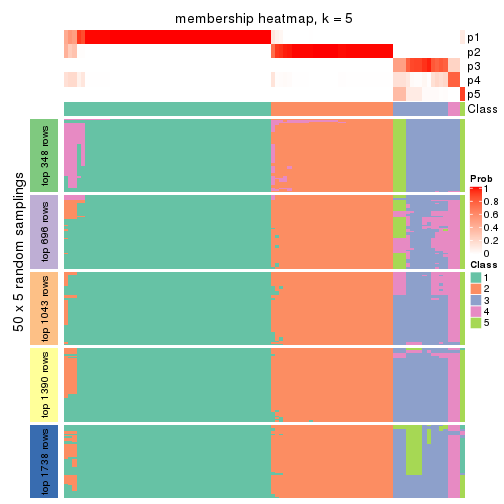
membership_heatmap(res, k = 6)
As soon as we have had the classes for columns, we can look for signatures which are significantly different between classes which can be candidate marks for certain classes. Following are the heatmaps for signatures.
Signature heatmaps where rows are scaled:
get_signatures(res, k = 2)
get_signatures(res, k = 3)
get_signatures(res, k = 4)
get_signatures(res, k = 5)
get_signatures(res, k = 6)
Signature heatmaps where rows are not scaled:
get_signatures(res, k = 2, scale_rows = FALSE)
get_signatures(res, k = 3, scale_rows = FALSE)
get_signatures(res, k = 4, scale_rows = FALSE)
get_signatures(res, k = 5, scale_rows = FALSE)
get_signatures(res, k = 6, scale_rows = FALSE)
Compare the overlap of signatures from different k:
compare_signatures(res)
get_signature() returns a data frame invisibly. TO get the list of signatures, the function
call should be assigned to a variable explicitly. In following code, if plot argument is set
to FALSE, no heatmap is plotted while only the differential analysis is performed.
# code only for demonstration
tb = get_signature(res, k = ..., plot = FALSE)
An example of the output of tb is:
#> which_row fdr mean_1 mean_2 scaled_mean_1 scaled_mean_2 km
#> 1 38 0.042760348 8.373488 9.131774 -0.5533452 0.5164555 1
#> 2 40 0.018707592 7.106213 8.469186 -0.6173731 0.5762149 1
#> 3 55 0.019134737 10.221463 11.207825 -0.6159697 0.5749050 1
#> 4 59 0.006059896 5.921854 7.869574 -0.6899429 0.6439467 1
#> 5 60 0.018055526 8.928898 10.211722 -0.6204761 0.5791110 1
#> 6 98 0.009384629 15.714769 14.887706 0.6635654 -0.6193277 2
...
The columns in tb are:
which_row: row indices corresponding to the input matrix.fdr: FDR for the differential test. mean_x: The mean value in group x.scaled_mean_x: The mean value in group x after rows are scaled.km: Row groups if k-means clustering is applied to rows.UMAP plot which shows how samples are separated.
dimension_reduction(res, k = 2, method = "UMAP")
dimension_reduction(res, k = 3, method = "UMAP")
dimension_reduction(res, k = 4, method = "UMAP")
dimension_reduction(res, k = 5, method = "UMAP")
dimension_reduction(res, k = 6, method = "UMAP")
Following heatmap shows how subgroups are split when increasing k:
collect_classes(res)
If matrix rows can be associated to genes, consider to use functional_enrichment(res,
...) to perform function enrichment for the signature genes. See this vignette for more detailed explanations.
The object with results only for a single top-value method and a single partition method can be extracted as:
res = res_list["ATC", "kmeans"]
# you can also extract it by
# res = res_list["ATC:kmeans"]
A summary of res and all the functions that can be applied to it:
res
#> A 'ConsensusPartition' object with k = 2, 3, 4, 5, 6.
#> On a matrix with 3475 rows and 95 columns.
#> Top rows (348, 696, 1043, 1390, 1738) are extracted by 'ATC' method.
#> Subgroups are detected by 'kmeans' method.
#> Performed in total 1250 partitions by row resampling.
#> Best k for subgroups seems to be 3.
#>
#> Following methods can be applied to this 'ConsensusPartition' object:
#> [1] "cola_report" "collect_classes" "collect_plots"
#> [4] "collect_stats" "colnames" "compare_signatures"
#> [7] "consensus_heatmap" "dimension_reduction" "functional_enrichment"
#> [10] "get_anno_col" "get_anno" "get_classes"
#> [13] "get_consensus" "get_matrix" "get_membership"
#> [16] "get_param" "get_signatures" "get_stats"
#> [19] "is_best_k" "is_stable_k" "membership_heatmap"
#> [22] "ncol" "nrow" "plot_ecdf"
#> [25] "rownames" "select_partition_number" "show"
#> [28] "suggest_best_k" "test_to_known_factors"
collect_plots() function collects all the plots made from res for all k (number of partitions)
into one single page to provide an easy and fast comparison between different k.
collect_plots(res)
The plots are:
k and the heatmap of
predicted classes for each k.k.k.k.All the plots in panels can be made by individual functions and they are plotted later in this section.
select_partition_number() produces several plots showing different
statistics for choosing “optimized” k. There are following statistics:
k;k, the area increased is defined as \(A_k - A_{k-1}\).The detailed explanations of these statistics can be found in the cola vignette.
Generally speaking, lower PAC score, higher mean silhouette score or higher
concordance corresponds to better partition. Rand index and Jaccard index
measure how similar the current partition is compared to partition with k-1.
If they are too similar, we won't accept k is better than k-1.
select_partition_number(res)
The numeric values for all these statistics can be obtained by get_stats().
get_stats(res)
#> k 1-PAC mean_silhouette concordance area_increased Rand Jaccard
#> 2 2 0.553 0.926 0.918 0.4517 0.495 0.495
#> 3 3 1.000 0.966 0.979 0.3792 0.819 0.654
#> 4 4 0.879 0.909 0.939 0.1037 0.902 0.743
#> 5 5 0.879 0.870 0.901 0.0539 0.977 0.922
#> 6 6 0.832 0.841 0.859 0.0414 0.993 0.974
suggest_best_k() suggests the best \(k\) based on these statistics. The rules are as follows:
suggest_best_k(res)
#> [1] 3
Following shows the table of the partitions (You need to click the show/hide
code output link to see it). The membership matrix (columns with name p*)
is inferred by
clue::cl_consensus()
function with the SE method. Basically the value in the membership matrix
represents the probability to belong to a certain group. The finall class
label for an item is determined with the group with highest probability it
belongs to.
In get_classes() function, the entropy is calculated from the membership
matrix and the silhouette score is calculated from the consensus matrix.
cbind(get_classes(res, k = 2), get_membership(res, k = 2))
#> class entropy silhouette p1 p2
#> SRR2062258 1 0.4161 0.887 0.916 0.084
#> SRR2062259 1 0.0000 0.994 1.000 0.000
#> SRR2062270 2 0.0000 0.813 0.000 1.000
#> SRR2062342 2 0.7815 0.894 0.232 0.768
#> SRR2062341 1 0.0000 0.994 1.000 0.000
#> SRR2062340 2 0.7815 0.894 0.232 0.768
#> SRR2062339 1 0.0000 0.994 1.000 0.000
#> SRR2062348 1 0.0000 0.994 1.000 0.000
#> SRR2062347 2 0.7815 0.894 0.232 0.768
#> SRR2062351 1 0.0000 0.994 1.000 0.000
#> SRR2062350 1 0.0000 0.994 1.000 0.000
#> SRR2062349 2 0.7815 0.894 0.232 0.768
#> SRR2062346 1 0.0000 0.994 1.000 0.000
#> SRR2062345 2 0.7815 0.894 0.232 0.768
#> SRR2062344 2 0.0000 0.813 0.000 1.000
#> SRR2062343 2 0.7815 0.894 0.232 0.768
#> SRR2062354 1 0.0000 0.994 1.000 0.000
#> SRR2062353 2 0.7815 0.894 0.232 0.768
#> SRR2062352 1 0.0000 0.994 1.000 0.000
#> SRR2063021 1 0.0000 0.994 1.000 0.000
#> SRR2062356 1 0.0000 0.994 1.000 0.000
#> SRR2063025 2 0.7815 0.894 0.232 0.768
#> SRR2063027 1 0.0000 0.994 1.000 0.000
#> SRR2063023 2 0.0376 0.814 0.004 0.996
#> SRR2062355 2 0.7815 0.894 0.232 0.768
#> SRR2063030 1 0.0000 0.994 1.000 0.000
#> SRR2064285 1 0.0000 0.994 1.000 0.000
#> SRR2063034 1 0.0000 0.994 1.000 0.000
#> SRR2063032 1 0.0000 0.994 1.000 0.000
#> SRR2063031 1 0.0000 0.994 1.000 0.000
#> SRR2063029 2 0.7815 0.894 0.232 0.768
#> SRR2063028 1 0.0000 0.994 1.000 0.000
#> SRR2064308 2 0.0000 0.813 0.000 1.000
#> SRR2064310 1 0.1184 0.977 0.984 0.016
#> SRR2064312 1 0.0000 0.994 1.000 0.000
#> SRR2064314 2 0.7815 0.894 0.232 0.768
#> SRR2064315 1 0.0000 0.994 1.000 0.000
#> SRR2064317 2 0.7815 0.894 0.232 0.768
#> SRR2064318 1 0.0000 0.994 1.000 0.000
#> SRR2064319 1 0.0000 0.994 1.000 0.000
#> SRR2064320 2 0.7815 0.894 0.232 0.768
#> SRR2064321 2 0.0000 0.813 0.000 1.000
#> SRR2064322 2 0.7815 0.894 0.232 0.768
#> SRR2064323 1 0.3584 0.911 0.932 0.068
#> SRR2064324 2 0.7815 0.894 0.232 0.768
#> SRR2064325 1 0.0000 0.994 1.000 0.000
#> SRR2064326 1 0.0000 0.994 1.000 0.000
#> SRR2064327 2 0.0000 0.813 0.000 1.000
#> SRR2064329 1 0.0000 0.994 1.000 0.000
#> SRR2064328 2 0.7815 0.894 0.232 0.768
#> SRR2064330 2 0.7815 0.894 0.232 0.768
#> SRR2064331 2 0.0000 0.813 0.000 1.000
#> SRR2064332 2 0.0000 0.813 0.000 1.000
#> SRR2064333 1 0.0000 0.994 1.000 0.000
#> SRR2064334 2 0.7815 0.894 0.232 0.768
#> SRR2064335 2 0.7815 0.894 0.232 0.768
#> SRR2064436 1 0.0000 0.994 1.000 0.000
#> SRR2064457 1 0.0000 0.994 1.000 0.000
#> SRR2064458 1 0.2423 0.948 0.960 0.040
#> SRR2064459 2 0.0000 0.813 0.000 1.000
#> SRR2064460 1 0.0000 0.994 1.000 0.000
#> SRR2064461 2 0.7815 0.894 0.232 0.768
#> SRR2064462 1 0.0000 0.994 1.000 0.000
#> SRR2064534 2 0.7815 0.894 0.232 0.768
#> SRR2064535 2 0.0000 0.813 0.000 1.000
#> SRR2064536 2 0.0000 0.813 0.000 1.000
#> SRR2064537 1 0.0000 0.994 1.000 0.000
#> SRR2064538 1 0.0000 0.994 1.000 0.000
#> SRR2064539 2 0.0000 0.813 0.000 1.000
#> SRR2064540 1 0.0000 0.994 1.000 0.000
#> SRR2064541 2 0.7815 0.894 0.232 0.768
#> SRR2064543 1 0.0000 0.994 1.000 0.000
#> SRR2064542 1 0.0000 0.994 1.000 0.000
#> SRR2064544 2 0.7815 0.894 0.232 0.768
#> SRR2064545 2 0.7815 0.894 0.232 0.768
#> SRR2064546 1 0.0000 0.994 1.000 0.000
#> SRR2064547 1 0.0000 0.994 1.000 0.000
#> SRR2064548 2 0.7815 0.894 0.232 0.768
#> SRR2064550 2 0.6531 0.871 0.168 0.832
#> SRR2064549 1 0.0000 0.994 1.000 0.000
#> SRR2064551 2 0.7815 0.894 0.232 0.768
#> SRR2064552 1 0.0000 0.994 1.000 0.000
#> SRR2064553 2 0.0000 0.813 0.000 1.000
#> SRR2064554 1 0.0000 0.994 1.000 0.000
#> SRR2064555 2 0.0000 0.813 0.000 1.000
#> SRR2064556 1 0.0000 0.994 1.000 0.000
#> SRR2064559 2 0.7815 0.894 0.232 0.768
#> SRR2064558 2 0.0000 0.813 0.000 1.000
#> SRR2064557 2 0.7815 0.894 0.232 0.768
#> SRR2064560 1 0.0000 0.994 1.000 0.000
#> SRR2064561 2 0.9732 0.617 0.404 0.596
#> SRR2064562 1 0.0000 0.994 1.000 0.000
#> SRR2064564 1 0.0000 0.994 1.000 0.000
#> SRR2064563 2 0.7815 0.894 0.232 0.768
#> SRR2064565 2 0.7815 0.894 0.232 0.768
cbind(get_classes(res, k = 3), get_membership(res, k = 3))
#> class entropy silhouette p1 p2 p3
#> SRR2062258 2 0.6451 0.298 0.436 0.560 0.004
#> SRR2062259 1 0.0000 0.999 1.000 0.000 0.000
#> SRR2062270 3 0.0747 0.992 0.000 0.016 0.984
#> SRR2062342 2 0.0892 0.959 0.020 0.980 0.000
#> SRR2062341 1 0.0000 0.999 1.000 0.000 0.000
#> SRR2062340 2 0.0892 0.959 0.020 0.980 0.000
#> SRR2062339 1 0.0000 0.999 1.000 0.000 0.000
#> SRR2062348 1 0.0000 0.999 1.000 0.000 0.000
#> SRR2062347 2 0.0892 0.959 0.020 0.980 0.000
#> SRR2062351 1 0.0000 0.999 1.000 0.000 0.000
#> SRR2062350 1 0.0000 0.999 1.000 0.000 0.000
#> SRR2062349 2 0.0892 0.959 0.020 0.980 0.000
#> SRR2062346 1 0.0000 0.999 1.000 0.000 0.000
#> SRR2062345 2 0.0892 0.959 0.020 0.980 0.000
#> SRR2062344 3 0.0592 0.994 0.000 0.012 0.988
#> SRR2062343 2 0.0892 0.959 0.020 0.980 0.000
#> SRR2062354 1 0.0000 0.999 1.000 0.000 0.000
#> SRR2062353 2 0.0892 0.959 0.020 0.980 0.000
#> SRR2062352 1 0.0000 0.999 1.000 0.000 0.000
#> SRR2063021 1 0.0475 0.993 0.992 0.004 0.004
#> SRR2062356 1 0.0000 0.999 1.000 0.000 0.000
#> SRR2063025 2 0.0892 0.959 0.020 0.980 0.000
#> SRR2063027 1 0.0000 0.999 1.000 0.000 0.000
#> SRR2063023 3 0.0424 0.992 0.000 0.008 0.992
#> SRR2062355 3 0.0829 0.983 0.012 0.004 0.984
#> SRR2063030 1 0.0000 0.999 1.000 0.000 0.000
#> SRR2064285 1 0.0000 0.999 1.000 0.000 0.000
#> SRR2063034 1 0.0000 0.999 1.000 0.000 0.000
#> SRR2063032 1 0.0000 0.999 1.000 0.000 0.000
#> SRR2063031 1 0.0000 0.999 1.000 0.000 0.000
#> SRR2063029 2 0.0892 0.959 0.020 0.980 0.000
#> SRR2063028 1 0.0000 0.999 1.000 0.000 0.000
#> SRR2064308 3 0.0592 0.993 0.000 0.012 0.988
#> SRR2064310 2 0.3644 0.846 0.124 0.872 0.004
#> SRR2064312 1 0.0000 0.999 1.000 0.000 0.000
#> SRR2064314 2 0.0892 0.959 0.020 0.980 0.000
#> SRR2064315 1 0.0000 0.999 1.000 0.000 0.000
#> SRR2064317 2 0.0892 0.959 0.020 0.980 0.000
#> SRR2064318 1 0.0000 0.999 1.000 0.000 0.000
#> SRR2064319 1 0.0000 0.999 1.000 0.000 0.000
#> SRR2064320 2 0.0892 0.959 0.020 0.980 0.000
#> SRR2064321 3 0.0424 0.994 0.000 0.008 0.992
#> SRR2064322 2 0.0892 0.959 0.020 0.980 0.000
#> SRR2064323 2 0.6468 0.275 0.444 0.552 0.004
#> SRR2064324 2 0.0892 0.959 0.020 0.980 0.000
#> SRR2064325 1 0.0000 0.999 1.000 0.000 0.000
#> SRR2064326 1 0.0475 0.993 0.992 0.004 0.004
#> SRR2064327 3 0.0592 0.994 0.000 0.012 0.988
#> SRR2064329 1 0.0000 0.999 1.000 0.000 0.000
#> SRR2064328 2 0.0892 0.959 0.020 0.980 0.000
#> SRR2064330 2 0.1129 0.956 0.020 0.976 0.004
#> SRR2064331 3 0.0592 0.994 0.000 0.012 0.988
#> SRR2064332 3 0.0424 0.994 0.000 0.008 0.992
#> SRR2064333 1 0.0000 0.999 1.000 0.000 0.000
#> SRR2064334 2 0.0892 0.959 0.020 0.980 0.000
#> SRR2064335 2 0.0892 0.959 0.020 0.980 0.000
#> SRR2064436 1 0.0000 0.999 1.000 0.000 0.000
#> SRR2064457 1 0.0000 0.999 1.000 0.000 0.000
#> SRR2064458 2 0.3983 0.822 0.144 0.852 0.004
#> SRR2064459 3 0.0424 0.994 0.000 0.008 0.992
#> SRR2064460 1 0.0000 0.999 1.000 0.000 0.000
#> SRR2064461 2 0.0892 0.959 0.020 0.980 0.000
#> SRR2064462 1 0.0000 0.999 1.000 0.000 0.000
#> SRR2064534 2 0.0892 0.959 0.020 0.980 0.000
#> SRR2064535 3 0.0592 0.994 0.000 0.012 0.988
#> SRR2064536 3 0.0592 0.993 0.000 0.012 0.988
#> SRR2064537 1 0.0237 0.996 0.996 0.000 0.004
#> SRR2064538 1 0.0000 0.999 1.000 0.000 0.000
#> SRR2064539 3 0.0592 0.993 0.000 0.012 0.988
#> SRR2064540 1 0.0000 0.999 1.000 0.000 0.000
#> SRR2064541 2 0.0892 0.959 0.020 0.980 0.000
#> SRR2064543 1 0.0000 0.999 1.000 0.000 0.000
#> SRR2064542 1 0.0000 0.999 1.000 0.000 0.000
#> SRR2064544 2 0.1129 0.956 0.020 0.976 0.004
#> SRR2064545 2 0.0892 0.959 0.020 0.980 0.000
#> SRR2064546 1 0.0000 0.999 1.000 0.000 0.000
#> SRR2064547 1 0.0000 0.999 1.000 0.000 0.000
#> SRR2064548 2 0.0892 0.959 0.020 0.980 0.000
#> SRR2064550 3 0.0829 0.983 0.012 0.004 0.984
#> SRR2064549 1 0.0237 0.996 0.996 0.000 0.004
#> SRR2064551 2 0.0892 0.959 0.020 0.980 0.000
#> SRR2064552 1 0.0000 0.999 1.000 0.000 0.000
#> SRR2064553 3 0.0237 0.994 0.000 0.004 0.996
#> SRR2064554 1 0.0237 0.996 0.996 0.000 0.004
#> SRR2064555 3 0.0424 0.994 0.000 0.008 0.992
#> SRR2064556 1 0.0000 0.999 1.000 0.000 0.000
#> SRR2064559 2 0.0892 0.959 0.020 0.980 0.000
#> SRR2064558 3 0.0592 0.994 0.000 0.012 0.988
#> SRR2064557 2 0.0892 0.959 0.020 0.980 0.000
#> SRR2064560 1 0.0000 0.999 1.000 0.000 0.000
#> SRR2064561 2 0.1129 0.956 0.020 0.976 0.004
#> SRR2064562 1 0.0000 0.999 1.000 0.000 0.000
#> SRR2064564 1 0.0000 0.999 1.000 0.000 0.000
#> SRR2064563 2 0.0892 0.959 0.020 0.980 0.000
#> SRR2064565 2 0.1129 0.956 0.020 0.976 0.004
cbind(get_classes(res, k = 4), get_membership(res, k = 4))
#> class entropy silhouette p1 p2 p3 p4
#> SRR2062258 4 0.4483 0.659 0.088 0.104 0.000 0.808
#> SRR2062259 1 0.0000 0.995 1.000 0.000 0.000 0.000
#> SRR2062270 3 0.2149 0.922 0.000 0.000 0.912 0.088
#> SRR2062342 2 0.0336 0.969 0.008 0.992 0.000 0.000
#> SRR2062341 1 0.0000 0.995 1.000 0.000 0.000 0.000
#> SRR2062340 2 0.1635 0.957 0.008 0.948 0.000 0.044
#> SRR2062339 1 0.0000 0.995 1.000 0.000 0.000 0.000
#> SRR2062348 1 0.0000 0.995 1.000 0.000 0.000 0.000
#> SRR2062347 2 0.0336 0.969 0.008 0.992 0.000 0.000
#> SRR2062351 1 0.0000 0.995 1.000 0.000 0.000 0.000
#> SRR2062350 1 0.0000 0.995 1.000 0.000 0.000 0.000
#> SRR2062349 2 0.0336 0.969 0.008 0.992 0.000 0.000
#> SRR2062346 1 0.0000 0.995 1.000 0.000 0.000 0.000
#> SRR2062345 2 0.0336 0.969 0.008 0.992 0.000 0.000
#> SRR2062344 3 0.0804 0.962 0.000 0.008 0.980 0.012
#> SRR2062343 2 0.0336 0.969 0.008 0.992 0.000 0.000
#> SRR2062354 1 0.0000 0.995 1.000 0.000 0.000 0.000
#> SRR2062353 2 0.0804 0.969 0.008 0.980 0.000 0.012
#> SRR2062352 1 0.0000 0.995 1.000 0.000 0.000 0.000
#> SRR2063021 4 0.4543 0.635 0.324 0.000 0.000 0.676
#> SRR2062356 1 0.0000 0.995 1.000 0.000 0.000 0.000
#> SRR2063025 2 0.0336 0.969 0.008 0.992 0.000 0.000
#> SRR2063027 1 0.0000 0.995 1.000 0.000 0.000 0.000
#> SRR2063023 4 0.4933 0.106 0.000 0.000 0.432 0.568
#> SRR2062355 4 0.4103 0.445 0.000 0.000 0.256 0.744
#> SRR2063030 1 0.0000 0.995 1.000 0.000 0.000 0.000
#> SRR2064285 1 0.0000 0.995 1.000 0.000 0.000 0.000
#> SRR2063034 1 0.0000 0.995 1.000 0.000 0.000 0.000
#> SRR2063032 1 0.3024 0.776 0.852 0.000 0.000 0.148
#> SRR2063031 1 0.0000 0.995 1.000 0.000 0.000 0.000
#> SRR2063029 2 0.1151 0.967 0.008 0.968 0.000 0.024
#> SRR2063028 1 0.0000 0.995 1.000 0.000 0.000 0.000
#> SRR2064308 3 0.2704 0.917 0.000 0.000 0.876 0.124
#> SRR2064310 4 0.4238 0.616 0.028 0.176 0.000 0.796
#> SRR2064312 1 0.0000 0.995 1.000 0.000 0.000 0.000
#> SRR2064314 2 0.0672 0.969 0.008 0.984 0.000 0.008
#> SRR2064315 1 0.0000 0.995 1.000 0.000 0.000 0.000
#> SRR2064317 2 0.0336 0.969 0.008 0.992 0.000 0.000
#> SRR2064318 1 0.0000 0.995 1.000 0.000 0.000 0.000
#> SRR2064319 1 0.0000 0.995 1.000 0.000 0.000 0.000
#> SRR2064320 2 0.1635 0.957 0.008 0.948 0.000 0.044
#> SRR2064321 3 0.0000 0.963 0.000 0.000 1.000 0.000
#> SRR2064322 2 0.1042 0.968 0.008 0.972 0.000 0.020
#> SRR2064323 4 0.4487 0.662 0.100 0.092 0.000 0.808
#> SRR2064324 2 0.1151 0.967 0.008 0.968 0.000 0.024
#> SRR2064325 1 0.0000 0.995 1.000 0.000 0.000 0.000
#> SRR2064326 4 0.4543 0.635 0.324 0.000 0.000 0.676
#> SRR2064327 3 0.0804 0.962 0.000 0.008 0.980 0.012
#> SRR2064329 1 0.0000 0.995 1.000 0.000 0.000 0.000
#> SRR2064328 2 0.1151 0.967 0.008 0.968 0.000 0.024
#> SRR2064330 2 0.3768 0.828 0.008 0.808 0.000 0.184
#> SRR2064331 3 0.0804 0.962 0.000 0.008 0.980 0.012
#> SRR2064332 3 0.0469 0.962 0.000 0.000 0.988 0.012
#> SRR2064333 1 0.0000 0.995 1.000 0.000 0.000 0.000
#> SRR2064334 2 0.1151 0.967 0.008 0.968 0.000 0.024
#> SRR2064335 2 0.1151 0.967 0.008 0.968 0.000 0.024
#> SRR2064436 1 0.0000 0.995 1.000 0.000 0.000 0.000
#> SRR2064457 1 0.0000 0.995 1.000 0.000 0.000 0.000
#> SRR2064458 4 0.4244 0.621 0.032 0.168 0.000 0.800
#> SRR2064459 3 0.0336 0.962 0.000 0.000 0.992 0.008
#> SRR2064460 1 0.0000 0.995 1.000 0.000 0.000 0.000
#> SRR2064461 2 0.0336 0.969 0.008 0.992 0.000 0.000
#> SRR2064462 1 0.0000 0.995 1.000 0.000 0.000 0.000
#> SRR2064534 2 0.0336 0.969 0.008 0.992 0.000 0.000
#> SRR2064535 3 0.0804 0.962 0.000 0.008 0.980 0.012
#> SRR2064536 3 0.2704 0.917 0.000 0.000 0.876 0.124
#> SRR2064537 4 0.4776 0.573 0.376 0.000 0.000 0.624
#> SRR2064538 1 0.0000 0.995 1.000 0.000 0.000 0.000
#> SRR2064539 3 0.2704 0.917 0.000 0.000 0.876 0.124
#> SRR2064540 1 0.0000 0.995 1.000 0.000 0.000 0.000
#> SRR2064541 2 0.1151 0.967 0.008 0.968 0.000 0.024
#> SRR2064543 1 0.0000 0.995 1.000 0.000 0.000 0.000
#> SRR2064542 1 0.0000 0.995 1.000 0.000 0.000 0.000
#> SRR2064544 2 0.3933 0.808 0.008 0.792 0.000 0.200
#> SRR2064545 2 0.2048 0.944 0.008 0.928 0.000 0.064
#> SRR2064546 1 0.0000 0.995 1.000 0.000 0.000 0.000
#> SRR2064547 1 0.0000 0.995 1.000 0.000 0.000 0.000
#> SRR2064548 2 0.1722 0.955 0.008 0.944 0.000 0.048
#> SRR2064550 4 0.4277 0.417 0.000 0.000 0.280 0.720
#> SRR2064549 4 0.4992 0.349 0.476 0.000 0.000 0.524
#> SRR2064551 2 0.0336 0.969 0.008 0.992 0.000 0.000
#> SRR2064552 1 0.0000 0.995 1.000 0.000 0.000 0.000
#> SRR2064553 3 0.0817 0.957 0.000 0.000 0.976 0.024
#> SRR2064554 4 0.4730 0.591 0.364 0.000 0.000 0.636
#> SRR2064555 3 0.0188 0.962 0.000 0.000 0.996 0.004
#> SRR2064556 1 0.0000 0.995 1.000 0.000 0.000 0.000
#> SRR2064559 2 0.0336 0.969 0.008 0.992 0.000 0.000
#> SRR2064558 3 0.0804 0.962 0.000 0.008 0.980 0.012
#> SRR2064557 2 0.0336 0.969 0.008 0.992 0.000 0.000
#> SRR2064560 1 0.0000 0.995 1.000 0.000 0.000 0.000
#> SRR2064561 4 0.4123 0.560 0.008 0.220 0.000 0.772
#> SRR2064562 1 0.0000 0.995 1.000 0.000 0.000 0.000
#> SRR2064564 1 0.0000 0.995 1.000 0.000 0.000 0.000
#> SRR2064563 2 0.0336 0.969 0.008 0.992 0.000 0.000
#> SRR2064565 2 0.3545 0.850 0.008 0.828 0.000 0.164
cbind(get_classes(res, k = 5), get_membership(res, k = 5))
#> class entropy silhouette p1 p2 p3 p4 p5
#> SRR2062258 5 0.1306 0.623 0.008 0.016 0.000 0.016 0.960
#> SRR2062259 1 0.0162 0.978 0.996 0.000 0.000 0.004 0.000
#> SRR2062270 3 0.3177 0.844 0.000 0.000 0.792 0.208 0.000
#> SRR2062342 2 0.2280 0.889 0.000 0.880 0.000 0.120 0.000
#> SRR2062341 1 0.0510 0.978 0.984 0.000 0.000 0.016 0.000
#> SRR2062340 2 0.1568 0.899 0.000 0.944 0.000 0.020 0.036
#> SRR2062339 1 0.0963 0.973 0.964 0.000 0.000 0.036 0.000
#> SRR2062348 1 0.0162 0.978 0.996 0.000 0.000 0.004 0.000
#> SRR2062347 2 0.0693 0.910 0.000 0.980 0.000 0.008 0.012
#> SRR2062351 1 0.0609 0.978 0.980 0.000 0.000 0.020 0.000
#> SRR2062350 1 0.0703 0.975 0.976 0.000 0.000 0.024 0.000
#> SRR2062349 2 0.1012 0.907 0.000 0.968 0.000 0.020 0.012
#> SRR2062346 1 0.0609 0.979 0.980 0.000 0.000 0.020 0.000
#> SRR2062345 2 0.2230 0.890 0.000 0.884 0.000 0.116 0.000
#> SRR2062344 3 0.0880 0.921 0.000 0.000 0.968 0.032 0.000
#> SRR2062343 2 0.1197 0.910 0.000 0.952 0.000 0.048 0.000
#> SRR2062354 1 0.0290 0.978 0.992 0.000 0.000 0.008 0.000
#> SRR2062353 2 0.1403 0.911 0.000 0.952 0.000 0.024 0.024
#> SRR2062352 1 0.0290 0.978 0.992 0.000 0.000 0.008 0.000
#> SRR2063021 4 0.6247 0.731 0.152 0.000 0.000 0.484 0.364
#> SRR2062356 1 0.0290 0.978 0.992 0.000 0.000 0.008 0.000
#> SRR2063025 2 0.2280 0.889 0.000 0.880 0.000 0.120 0.000
#> SRR2063027 1 0.0404 0.979 0.988 0.000 0.000 0.012 0.000
#> SRR2063023 4 0.6054 0.485 0.000 0.000 0.260 0.568 0.172
#> SRR2062355 4 0.5878 0.586 0.000 0.000 0.120 0.556 0.324
#> SRR2063030 1 0.0703 0.978 0.976 0.000 0.000 0.024 0.000
#> SRR2064285 1 0.1121 0.969 0.956 0.000 0.000 0.044 0.000
#> SRR2063034 1 0.0609 0.978 0.980 0.000 0.000 0.020 0.000
#> SRR2063032 1 0.4096 0.710 0.772 0.000 0.000 0.052 0.176
#> SRR2063031 1 0.0162 0.978 0.996 0.000 0.000 0.004 0.000
#> SRR2063029 2 0.1300 0.907 0.000 0.956 0.000 0.016 0.028
#> SRR2063028 1 0.0162 0.978 0.996 0.000 0.000 0.004 0.000
#> SRR2064308 3 0.3779 0.843 0.000 0.000 0.776 0.200 0.024
#> SRR2064310 5 0.1484 0.670 0.000 0.048 0.000 0.008 0.944
#> SRR2064312 1 0.0162 0.979 0.996 0.000 0.000 0.004 0.000
#> SRR2064314 2 0.2011 0.903 0.000 0.908 0.000 0.088 0.004
#> SRR2064315 1 0.0290 0.978 0.992 0.000 0.000 0.008 0.000
#> SRR2064317 2 0.2179 0.891 0.000 0.888 0.000 0.112 0.000
#> SRR2064318 1 0.0404 0.978 0.988 0.000 0.000 0.012 0.000
#> SRR2064319 1 0.0963 0.972 0.964 0.000 0.000 0.036 0.000
#> SRR2064320 2 0.1469 0.900 0.000 0.948 0.000 0.016 0.036
#> SRR2064321 3 0.0404 0.922 0.000 0.000 0.988 0.012 0.000
#> SRR2064322 2 0.0898 0.911 0.000 0.972 0.000 0.020 0.008
#> SRR2064323 5 0.1306 0.623 0.008 0.016 0.000 0.016 0.960
#> SRR2064324 2 0.1251 0.905 0.000 0.956 0.000 0.008 0.036
#> SRR2064325 1 0.0162 0.979 0.996 0.000 0.000 0.004 0.000
#> SRR2064326 4 0.6247 0.731 0.152 0.000 0.000 0.484 0.364
#> SRR2064327 3 0.0880 0.921 0.000 0.000 0.968 0.032 0.000
#> SRR2064329 1 0.0510 0.978 0.984 0.000 0.000 0.016 0.000
#> SRR2064328 2 0.1195 0.904 0.000 0.960 0.000 0.012 0.028
#> SRR2064330 5 0.4907 0.110 0.000 0.484 0.000 0.024 0.492
#> SRR2064331 3 0.0880 0.921 0.000 0.000 0.968 0.032 0.000
#> SRR2064332 3 0.2077 0.906 0.000 0.000 0.908 0.084 0.008
#> SRR2064333 1 0.0404 0.978 0.988 0.000 0.000 0.012 0.000
#> SRR2064334 2 0.1469 0.900 0.000 0.948 0.000 0.016 0.036
#> SRR2064335 2 0.1568 0.898 0.000 0.944 0.000 0.020 0.036
#> SRR2064436 1 0.1270 0.962 0.948 0.000 0.000 0.052 0.000
#> SRR2064457 1 0.0000 0.978 1.000 0.000 0.000 0.000 0.000
#> SRR2064458 5 0.1408 0.667 0.000 0.044 0.000 0.008 0.948
#> SRR2064459 3 0.0404 0.922 0.000 0.000 0.988 0.012 0.000
#> SRR2064460 1 0.0794 0.976 0.972 0.000 0.000 0.028 0.000
#> SRR2064461 2 0.2249 0.903 0.000 0.896 0.000 0.096 0.008
#> SRR2064462 1 0.0703 0.976 0.976 0.000 0.000 0.024 0.000
#> SRR2064534 2 0.2230 0.889 0.000 0.884 0.000 0.116 0.000
#> SRR2064535 3 0.0880 0.921 0.000 0.000 0.968 0.032 0.000
#> SRR2064536 3 0.3779 0.843 0.000 0.000 0.776 0.200 0.024
#> SRR2064537 4 0.6422 0.717 0.180 0.000 0.000 0.460 0.360
#> SRR2064538 1 0.1043 0.970 0.960 0.000 0.000 0.040 0.000
#> SRR2064539 3 0.3779 0.843 0.000 0.000 0.776 0.200 0.024
#> SRR2064540 1 0.0963 0.974 0.964 0.000 0.000 0.036 0.000
#> SRR2064541 2 0.1485 0.900 0.000 0.948 0.000 0.020 0.032
#> SRR2064543 1 0.0404 0.978 0.988 0.000 0.000 0.012 0.000
#> SRR2064542 1 0.0510 0.978 0.984 0.000 0.000 0.016 0.000
#> SRR2064544 5 0.4639 0.414 0.000 0.368 0.000 0.020 0.612
#> SRR2064545 2 0.3239 0.870 0.000 0.852 0.000 0.080 0.068
#> SRR2064546 1 0.0794 0.976 0.972 0.000 0.000 0.028 0.000
#> SRR2064547 1 0.0703 0.978 0.976 0.000 0.000 0.024 0.000
#> SRR2064548 2 0.2903 0.895 0.000 0.872 0.000 0.080 0.048
#> SRR2064550 4 0.5925 0.586 0.000 0.000 0.128 0.556 0.316
#> SRR2064549 4 0.6766 0.547 0.300 0.000 0.000 0.400 0.300
#> SRR2064551 2 0.2230 0.892 0.000 0.884 0.000 0.116 0.000
#> SRR2064552 1 0.0000 0.978 1.000 0.000 0.000 0.000 0.000
#> SRR2064553 3 0.1121 0.917 0.000 0.000 0.956 0.044 0.000
#> SRR2064554 4 0.6374 0.724 0.172 0.000 0.000 0.468 0.360
#> SRR2064555 3 0.0609 0.922 0.000 0.000 0.980 0.020 0.000
#> SRR2064556 1 0.0404 0.979 0.988 0.000 0.000 0.012 0.000
#> SRR2064559 2 0.2179 0.891 0.000 0.888 0.000 0.112 0.000
#> SRR2064558 3 0.0880 0.921 0.000 0.000 0.968 0.032 0.000
#> SRR2064557 2 0.2074 0.898 0.000 0.896 0.000 0.104 0.000
#> SRR2064560 1 0.0963 0.974 0.964 0.000 0.000 0.036 0.000
#> SRR2064561 5 0.1430 0.669 0.000 0.052 0.000 0.004 0.944
#> SRR2064562 1 0.1341 0.961 0.944 0.000 0.000 0.056 0.000
#> SRR2064564 1 0.1197 0.966 0.952 0.000 0.000 0.048 0.000
#> SRR2064563 2 0.1106 0.907 0.000 0.964 0.000 0.024 0.012
#> SRR2064565 2 0.4924 0.027 0.000 0.552 0.000 0.028 0.420
cbind(get_classes(res, k = 6), get_membership(res, k = 6))
#> class entropy silhouette p1 p2 p3 p4 p5 p6
#> SRR2062258 5 0.3013 0.8755 0.004 0.000 0.000 0.140 0.832 NA
#> SRR2062259 1 0.0547 0.9543 0.980 0.000 0.000 0.000 0.000 NA
#> SRR2062270 3 0.4675 0.7679 0.000 0.000 0.712 0.072 0.024 NA
#> SRR2062342 2 0.3797 0.7186 0.000 0.580 0.000 0.000 0.000 NA
#> SRR2062341 1 0.1320 0.9520 0.948 0.000 0.000 0.000 0.016 NA
#> SRR2062340 2 0.2976 0.7552 0.000 0.860 0.000 0.024 0.028 NA
#> SRR2062339 1 0.2420 0.9125 0.864 0.000 0.000 0.004 0.004 NA
#> SRR2062348 1 0.0603 0.9524 0.980 0.000 0.000 0.000 0.004 NA
#> SRR2062347 2 0.1075 0.7862 0.000 0.952 0.000 0.000 0.000 NA
#> SRR2062351 1 0.1313 0.9558 0.952 0.000 0.000 0.004 0.016 NA
#> SRR2062350 1 0.1769 0.9466 0.924 0.000 0.000 0.004 0.012 NA
#> SRR2062349 2 0.1753 0.7815 0.000 0.912 0.000 0.000 0.004 NA
#> SRR2062346 1 0.0993 0.9552 0.964 0.000 0.000 0.000 0.012 NA
#> SRR2062345 2 0.3789 0.7188 0.000 0.584 0.000 0.000 0.000 NA
#> SRR2062344 3 0.1630 0.8986 0.000 0.000 0.940 0.016 0.024 NA
#> SRR2062343 2 0.2491 0.7859 0.000 0.836 0.000 0.000 0.000 NA
#> SRR2062354 1 0.0508 0.9524 0.984 0.000 0.000 0.000 0.004 NA
#> SRR2062353 2 0.2048 0.7886 0.000 0.880 0.000 0.000 0.000 NA
#> SRR2062352 1 0.0725 0.9532 0.976 0.000 0.000 0.000 0.012 NA
#> SRR2063021 4 0.2331 0.8182 0.080 0.000 0.000 0.888 0.032 NA
#> SRR2062356 1 0.0692 0.9531 0.976 0.000 0.000 0.000 0.004 NA
#> SRR2063025 2 0.3797 0.7186 0.000 0.580 0.000 0.000 0.000 NA
#> SRR2063027 1 0.0909 0.9549 0.968 0.000 0.000 0.000 0.012 NA
#> SRR2063023 4 0.3690 0.7079 0.000 0.000 0.116 0.804 0.012 NA
#> SRR2062355 4 0.2825 0.7519 0.000 0.000 0.064 0.868 0.008 NA
#> SRR2063030 1 0.1285 0.9535 0.944 0.000 0.000 0.000 0.004 NA
#> SRR2064285 1 0.2573 0.9086 0.856 0.000 0.000 0.004 0.008 NA
#> SRR2063034 1 0.1668 0.9465 0.928 0.000 0.000 0.004 0.008 NA
#> SRR2063032 1 0.4983 0.7392 0.720 0.000 0.000 0.084 0.072 NA
#> SRR2063031 1 0.0603 0.9526 0.980 0.000 0.000 0.000 0.004 NA
#> SRR2063029 2 0.2162 0.7793 0.000 0.896 0.000 0.012 0.004 NA
#> SRR2063028 1 0.0458 0.9540 0.984 0.000 0.000 0.000 0.000 NA
#> SRR2064308 3 0.4397 0.7969 0.000 0.000 0.720 0.032 0.032 NA
#> SRR2064310 5 0.2230 0.9132 0.000 0.024 0.000 0.084 0.892 NA
#> SRR2064312 1 0.0458 0.9552 0.984 0.000 0.000 0.000 0.000 NA
#> SRR2064314 2 0.3992 0.7679 0.000 0.708 0.000 0.016 0.012 NA
#> SRR2064315 1 0.1155 0.9528 0.956 0.000 0.000 0.004 0.004 NA
#> SRR2064317 2 0.3782 0.7186 0.000 0.588 0.000 0.000 0.000 NA
#> SRR2064318 1 0.0603 0.9524 0.980 0.000 0.000 0.000 0.004 NA
#> SRR2064319 1 0.2069 0.9446 0.908 0.000 0.000 0.004 0.020 NA
#> SRR2064320 2 0.3173 0.7518 0.000 0.848 0.000 0.024 0.036 NA
#> SRR2064321 3 0.0260 0.9012 0.000 0.000 0.992 0.008 0.000 NA
#> SRR2064322 2 0.1838 0.7753 0.000 0.916 0.000 0.016 0.000 NA
#> SRR2064323 5 0.2760 0.8897 0.004 0.000 0.000 0.116 0.856 NA
#> SRR2064324 2 0.1845 0.7771 0.000 0.916 0.000 0.008 0.004 NA
#> SRR2064325 1 0.1036 0.9547 0.964 0.000 0.000 0.004 0.008 NA
#> SRR2064326 4 0.2331 0.8182 0.080 0.000 0.000 0.888 0.032 NA
#> SRR2064327 3 0.1458 0.8987 0.000 0.000 0.948 0.016 0.016 NA
#> SRR2064329 1 0.0508 0.9543 0.984 0.000 0.000 0.000 0.004 NA
#> SRR2064328 2 0.1536 0.7708 0.000 0.940 0.000 0.016 0.004 NA
#> SRR2064330 2 0.4795 0.0255 0.000 0.544 0.000 0.000 0.400 NA
#> SRR2064331 3 0.1630 0.8986 0.000 0.000 0.940 0.016 0.024 NA
#> SRR2064332 3 0.1901 0.8859 0.000 0.000 0.912 0.008 0.004 NA
#> SRR2064333 1 0.0692 0.9527 0.976 0.000 0.000 0.000 0.004 NA
#> SRR2064334 2 0.1219 0.7774 0.000 0.948 0.000 0.000 0.004 NA
#> SRR2064335 2 0.0858 0.7698 0.000 0.968 0.000 0.000 0.004 NA
#> SRR2064436 1 0.2112 0.9367 0.896 0.000 0.000 0.000 0.016 NA
#> SRR2064457 1 0.0458 0.9524 0.984 0.000 0.000 0.000 0.000 NA
#> SRR2064458 5 0.2383 0.9124 0.000 0.024 0.000 0.096 0.880 NA
#> SRR2064459 3 0.0520 0.9007 0.000 0.000 0.984 0.008 0.000 NA
#> SRR2064460 1 0.1524 0.9488 0.932 0.000 0.000 0.000 0.008 NA
#> SRR2064461 2 0.3636 0.7543 0.000 0.676 0.000 0.004 0.000 NA
#> SRR2064462 1 0.1334 0.9533 0.948 0.000 0.000 0.000 0.020 NA
#> SRR2064534 2 0.3765 0.7212 0.000 0.596 0.000 0.000 0.000 NA
#> SRR2064535 3 0.1630 0.8986 0.000 0.000 0.940 0.016 0.024 NA
#> SRR2064536 3 0.4397 0.7969 0.000 0.000 0.720 0.032 0.032 NA
#> SRR2064537 4 0.2696 0.7989 0.116 0.000 0.000 0.856 0.028 NA
#> SRR2064538 1 0.2531 0.9119 0.860 0.000 0.000 0.004 0.008 NA
#> SRR2064539 3 0.4397 0.7969 0.000 0.000 0.720 0.032 0.032 NA
#> SRR2064540 1 0.2006 0.9430 0.904 0.000 0.000 0.000 0.016 NA
#> SRR2064541 2 0.2282 0.7755 0.000 0.900 0.000 0.012 0.020 NA
#> SRR2064543 1 0.0820 0.9549 0.972 0.000 0.000 0.000 0.012 NA
#> SRR2064542 1 0.1003 0.9551 0.964 0.000 0.000 0.000 0.016 NA
#> SRR2064544 5 0.3245 0.7289 0.000 0.172 0.000 0.000 0.800 NA
#> SRR2064545 2 0.5053 0.7248 0.000 0.660 0.000 0.020 0.088 NA
#> SRR2064546 1 0.1268 0.9518 0.952 0.000 0.000 0.004 0.008 NA
#> SRR2064547 1 0.1225 0.9529 0.952 0.000 0.000 0.000 0.012 NA
#> SRR2064548 2 0.4751 0.7456 0.000 0.672 0.000 0.024 0.048 NA
#> SRR2064550 4 0.2714 0.7514 0.000 0.000 0.064 0.872 0.004 NA
#> SRR2064549 4 0.4383 0.5769 0.252 0.000 0.000 0.696 0.036 NA
#> SRR2064551 2 0.3782 0.7197 0.000 0.588 0.000 0.000 0.000 NA
#> SRR2064552 1 0.0458 0.9524 0.984 0.000 0.000 0.000 0.000 NA
#> SRR2064553 3 0.0725 0.9001 0.000 0.000 0.976 0.012 0.000 NA
#> SRR2064554 4 0.2633 0.8086 0.104 0.000 0.000 0.864 0.032 NA
#> SRR2064555 3 0.0551 0.9014 0.000 0.000 0.984 0.008 0.004 NA
#> SRR2064556 1 0.1555 0.9475 0.932 0.000 0.000 0.004 0.004 NA
#> SRR2064559 2 0.3756 0.7227 0.000 0.600 0.000 0.000 0.000 NA
#> SRR2064558 3 0.1630 0.8986 0.000 0.000 0.940 0.016 0.024 NA
#> SRR2064557 2 0.3659 0.7390 0.000 0.636 0.000 0.000 0.000 NA
#> SRR2064560 1 0.1531 0.9471 0.928 0.000 0.000 0.000 0.004 NA
#> SRR2064561 5 0.2230 0.9132 0.000 0.024 0.000 0.084 0.892 NA
#> SRR2064562 1 0.2886 0.8926 0.836 0.000 0.000 0.004 0.016 NA
#> SRR2064564 1 0.2695 0.8979 0.844 0.000 0.000 0.004 0.008 NA
#> SRR2064563 2 0.1444 0.7822 0.000 0.928 0.000 0.000 0.000 NA
#> SRR2064565 2 0.5585 0.1507 0.000 0.516 0.000 0.024 0.380 NA
Heatmaps for the consensus matrix. It visualizes the probability of two samples to be in a same group.
consensus_heatmap(res, k = 2)
consensus_heatmap(res, k = 3)

consensus_heatmap(res, k = 4)
consensus_heatmap(res, k = 5)
consensus_heatmap(res, k = 6)
Heatmaps for the membership of samples in all partitions to see how consistent they are:
membership_heatmap(res, k = 2)
membership_heatmap(res, k = 3)
membership_heatmap(res, k = 4)
membership_heatmap(res, k = 5)
membership_heatmap(res, k = 6)
As soon as we have had the classes for columns, we can look for signatures which are significantly different between classes which can be candidate marks for certain classes. Following are the heatmaps for signatures.
Signature heatmaps where rows are scaled:
get_signatures(res, k = 2)
get_signatures(res, k = 3)
get_signatures(res, k = 4)
get_signatures(res, k = 5)
get_signatures(res, k = 6)
Signature heatmaps where rows are not scaled:
get_signatures(res, k = 2, scale_rows = FALSE)
get_signatures(res, k = 3, scale_rows = FALSE)
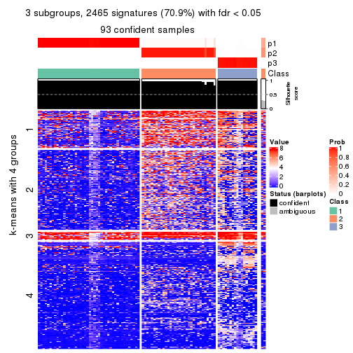
get_signatures(res, k = 4, scale_rows = FALSE)
get_signatures(res, k = 5, scale_rows = FALSE)
get_signatures(res, k = 6, scale_rows = FALSE)
Compare the overlap of signatures from different k:
compare_signatures(res)
get_signature() returns a data frame invisibly. TO get the list of signatures, the function
call should be assigned to a variable explicitly. In following code, if plot argument is set
to FALSE, no heatmap is plotted while only the differential analysis is performed.
# code only for demonstration
tb = get_signature(res, k = ..., plot = FALSE)
An example of the output of tb is:
#> which_row fdr mean_1 mean_2 scaled_mean_1 scaled_mean_2 km
#> 1 38 0.042760348 8.373488 9.131774 -0.5533452 0.5164555 1
#> 2 40 0.018707592 7.106213 8.469186 -0.6173731 0.5762149 1
#> 3 55 0.019134737 10.221463 11.207825 -0.6159697 0.5749050 1
#> 4 59 0.006059896 5.921854 7.869574 -0.6899429 0.6439467 1
#> 5 60 0.018055526 8.928898 10.211722 -0.6204761 0.5791110 1
#> 6 98 0.009384629 15.714769 14.887706 0.6635654 -0.6193277 2
...
The columns in tb are:
which_row: row indices corresponding to the input matrix.fdr: FDR for the differential test. mean_x: The mean value in group x.scaled_mean_x: The mean value in group x after rows are scaled.km: Row groups if k-means clustering is applied to rows.UMAP plot which shows how samples are separated.
dimension_reduction(res, k = 2, method = "UMAP")

dimension_reduction(res, k = 3, method = "UMAP")
dimension_reduction(res, k = 4, method = "UMAP")
dimension_reduction(res, k = 5, method = "UMAP")
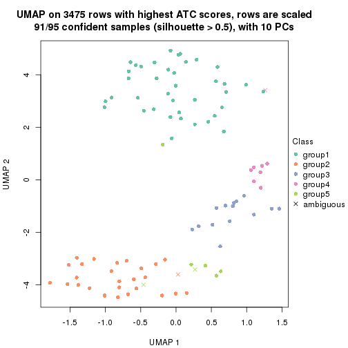
dimension_reduction(res, k = 6, method = "UMAP")

Following heatmap shows how subgroups are split when increasing k:
collect_classes(res)
If matrix rows can be associated to genes, consider to use functional_enrichment(res,
...) to perform function enrichment for the signature genes. See this vignette for more detailed explanations.
The object with results only for a single top-value method and a single partition method can be extracted as:
res = res_list["ATC", "skmeans"]
# you can also extract it by
# res = res_list["ATC:skmeans"]
A summary of res and all the functions that can be applied to it:
res
#> A 'ConsensusPartition' object with k = 2, 3, 4, 5, 6.
#> On a matrix with 3475 rows and 95 columns.
#> Top rows (348, 696, 1043, 1390, 1738) are extracted by 'ATC' method.
#> Subgroups are detected by 'skmeans' method.
#> Performed in total 1250 partitions by row resampling.
#> Best k for subgroups seems to be 5.
#>
#> Following methods can be applied to this 'ConsensusPartition' object:
#> [1] "cola_report" "collect_classes" "collect_plots"
#> [4] "collect_stats" "colnames" "compare_signatures"
#> [7] "consensus_heatmap" "dimension_reduction" "functional_enrichment"
#> [10] "get_anno_col" "get_anno" "get_classes"
#> [13] "get_consensus" "get_matrix" "get_membership"
#> [16] "get_param" "get_signatures" "get_stats"
#> [19] "is_best_k" "is_stable_k" "membership_heatmap"
#> [22] "ncol" "nrow" "plot_ecdf"
#> [25] "rownames" "select_partition_number" "show"
#> [28] "suggest_best_k" "test_to_known_factors"
collect_plots() function collects all the plots made from res for all k (number of partitions)
into one single page to provide an easy and fast comparison between different k.
collect_plots(res)
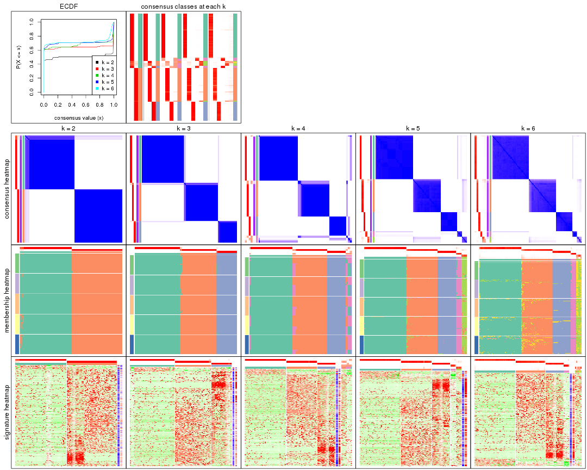
The plots are:
k and the heatmap of
predicted classes for each k.k.k.k.All the plots in panels can be made by individual functions and they are plotted later in this section.
select_partition_number() produces several plots showing different
statistics for choosing “optimized” k. There are following statistics:
k;k, the area increased is defined as \(A_k - A_{k-1}\).The detailed explanations of these statistics can be found in the cola vignette.
Generally speaking, lower PAC score, higher mean silhouette score or higher
concordance corresponds to better partition. Rand index and Jaccard index
measure how similar the current partition is compared to partition with k-1.
If they are too similar, we won't accept k is better than k-1.
select_partition_number(res)
The numeric values for all these statistics can be obtained by get_stats().
get_stats(res)
#> k 1-PAC mean_silhouette concordance area_increased Rand Jaccard
#> 2 2 1.000 0.987 0.994 0.5056 0.495 0.495
#> 3 3 1.000 0.984 0.994 0.2690 0.793 0.609
#> 4 4 0.959 0.875 0.948 0.0534 0.957 0.882
#> 5 5 0.998 0.961 0.978 0.0465 0.968 0.900
#> 6 6 0.950 0.894 0.940 0.0257 0.999 0.997
suggest_best_k() suggests the best \(k\) based on these statistics. The rules are as follows:
suggest_best_k(res)
#> [1] 5
#> attr(,"optional")
#> [1] 2 3 4
There is also optional best \(k\) = 2 3 4 that is worth to check.
Following shows the table of the partitions (You need to click the show/hide
code output link to see it). The membership matrix (columns with name p*)
is inferred by
clue::cl_consensus()
function with the SE method. Basically the value in the membership matrix
represents the probability to belong to a certain group. The finall class
label for an item is determined with the group with highest probability it
belongs to.
In get_classes() function, the entropy is calculated from the membership
matrix and the silhouette score is calculated from the consensus matrix.
cbind(get_classes(res, k = 2), get_membership(res, k = 2))
#> class entropy silhouette p1 p2
#> SRR2062258 1 0.738 0.749 0.792 0.208
#> SRR2062259 1 0.000 0.988 1.000 0.000
#> SRR2062270 2 0.000 0.999 0.000 1.000
#> SRR2062342 2 0.000 0.999 0.000 1.000
#> SRR2062341 1 0.000 0.988 1.000 0.000
#> SRR2062340 2 0.000 0.999 0.000 1.000
#> SRR2062339 1 0.000 0.988 1.000 0.000
#> SRR2062348 1 0.000 0.988 1.000 0.000
#> SRR2062347 2 0.000 0.999 0.000 1.000
#> SRR2062351 1 0.000 0.988 1.000 0.000
#> SRR2062350 1 0.000 0.988 1.000 0.000
#> SRR2062349 2 0.000 0.999 0.000 1.000
#> SRR2062346 1 0.000 0.988 1.000 0.000
#> SRR2062345 2 0.000 0.999 0.000 1.000
#> SRR2062344 2 0.000 0.999 0.000 1.000
#> SRR2062343 2 0.000 0.999 0.000 1.000
#> SRR2062354 1 0.000 0.988 1.000 0.000
#> SRR2062353 2 0.000 0.999 0.000 1.000
#> SRR2062352 1 0.000 0.988 1.000 0.000
#> SRR2063021 1 0.000 0.988 1.000 0.000
#> SRR2062356 1 0.000 0.988 1.000 0.000
#> SRR2063025 2 0.000 0.999 0.000 1.000
#> SRR2063027 1 0.000 0.988 1.000 0.000
#> SRR2063023 2 0.000 0.999 0.000 1.000
#> SRR2062355 2 0.000 0.999 0.000 1.000
#> SRR2063030 1 0.000 0.988 1.000 0.000
#> SRR2064285 1 0.000 0.988 1.000 0.000
#> SRR2063034 1 0.000 0.988 1.000 0.000
#> SRR2063032 1 0.000 0.988 1.000 0.000
#> SRR2063031 1 0.000 0.988 1.000 0.000
#> SRR2063029 2 0.000 0.999 0.000 1.000
#> SRR2063028 1 0.000 0.988 1.000 0.000
#> SRR2064308 2 0.000 0.999 0.000 1.000
#> SRR2064310 1 0.552 0.858 0.872 0.128
#> SRR2064312 1 0.000 0.988 1.000 0.000
#> SRR2064314 2 0.000 0.999 0.000 1.000
#> SRR2064315 1 0.000 0.988 1.000 0.000
#> SRR2064317 2 0.000 0.999 0.000 1.000
#> SRR2064318 1 0.000 0.988 1.000 0.000
#> SRR2064319 1 0.000 0.988 1.000 0.000
#> SRR2064320 2 0.000 0.999 0.000 1.000
#> SRR2064321 2 0.000 0.999 0.000 1.000
#> SRR2064322 2 0.000 0.999 0.000 1.000
#> SRR2064323 1 0.552 0.859 0.872 0.128
#> SRR2064324 2 0.000 0.999 0.000 1.000
#> SRR2064325 1 0.000 0.988 1.000 0.000
#> SRR2064326 1 0.000 0.988 1.000 0.000
#> SRR2064327 2 0.000 0.999 0.000 1.000
#> SRR2064329 1 0.000 0.988 1.000 0.000
#> SRR2064328 2 0.000 0.999 0.000 1.000
#> SRR2064330 2 0.000 0.999 0.000 1.000
#> SRR2064331 2 0.000 0.999 0.000 1.000
#> SRR2064332 2 0.000 0.999 0.000 1.000
#> SRR2064333 1 0.000 0.988 1.000 0.000
#> SRR2064334 2 0.000 0.999 0.000 1.000
#> SRR2064335 2 0.000 0.999 0.000 1.000
#> SRR2064436 1 0.000 0.988 1.000 0.000
#> SRR2064457 1 0.000 0.988 1.000 0.000
#> SRR2064458 1 0.529 0.869 0.880 0.120
#> SRR2064459 2 0.000 0.999 0.000 1.000
#> SRR2064460 1 0.000 0.988 1.000 0.000
#> SRR2064461 2 0.000 0.999 0.000 1.000
#> SRR2064462 1 0.000 0.988 1.000 0.000
#> SRR2064534 2 0.000 0.999 0.000 1.000
#> SRR2064535 2 0.000 0.999 0.000 1.000
#> SRR2064536 2 0.000 0.999 0.000 1.000
#> SRR2064537 1 0.000 0.988 1.000 0.000
#> SRR2064538 1 0.000 0.988 1.000 0.000
#> SRR2064539 2 0.000 0.999 0.000 1.000
#> SRR2064540 1 0.000 0.988 1.000 0.000
#> SRR2064541 2 0.000 0.999 0.000 1.000
#> SRR2064543 1 0.000 0.988 1.000 0.000
#> SRR2064542 1 0.000 0.988 1.000 0.000
#> SRR2064544 2 0.000 0.999 0.000 1.000
#> SRR2064545 2 0.000 0.999 0.000 1.000
#> SRR2064546 1 0.000 0.988 1.000 0.000
#> SRR2064547 1 0.000 0.988 1.000 0.000
#> SRR2064548 2 0.000 0.999 0.000 1.000
#> SRR2064550 2 0.000 0.999 0.000 1.000
#> SRR2064549 1 0.000 0.988 1.000 0.000
#> SRR2064551 2 0.000 0.999 0.000 1.000
#> SRR2064552 1 0.000 0.988 1.000 0.000
#> SRR2064553 2 0.000 0.999 0.000 1.000
#> SRR2064554 1 0.000 0.988 1.000 0.000
#> SRR2064555 2 0.000 0.999 0.000 1.000
#> SRR2064556 1 0.000 0.988 1.000 0.000
#> SRR2064559 2 0.000 0.999 0.000 1.000
#> SRR2064558 2 0.000 0.999 0.000 1.000
#> SRR2064557 2 0.000 0.999 0.000 1.000
#> SRR2064560 1 0.000 0.988 1.000 0.000
#> SRR2064561 2 0.163 0.975 0.024 0.976
#> SRR2064562 1 0.000 0.988 1.000 0.000
#> SRR2064564 1 0.000 0.988 1.000 0.000
#> SRR2064563 2 0.000 0.999 0.000 1.000
#> SRR2064565 2 0.000 0.999 0.000 1.000
cbind(get_classes(res, k = 3), get_membership(res, k = 3))
#> class entropy silhouette p1 p2 p3
#> SRR2062258 2 0.5016 0.682 0.240 0.760 0.000
#> SRR2062259 1 0.0000 1.000 1.000 0.000 0.000
#> SRR2062270 3 0.0000 0.990 0.000 0.000 1.000
#> SRR2062342 2 0.0000 0.984 0.000 1.000 0.000
#> SRR2062341 1 0.0000 1.000 1.000 0.000 0.000
#> SRR2062340 2 0.0000 0.984 0.000 1.000 0.000
#> SRR2062339 1 0.0000 1.000 1.000 0.000 0.000
#> SRR2062348 1 0.0000 1.000 1.000 0.000 0.000
#> SRR2062347 2 0.0000 0.984 0.000 1.000 0.000
#> SRR2062351 1 0.0000 1.000 1.000 0.000 0.000
#> SRR2062350 1 0.0000 1.000 1.000 0.000 0.000
#> SRR2062349 2 0.0000 0.984 0.000 1.000 0.000
#> SRR2062346 1 0.0000 1.000 1.000 0.000 0.000
#> SRR2062345 2 0.0000 0.984 0.000 1.000 0.000
#> SRR2062344 3 0.0000 0.990 0.000 0.000 1.000
#> SRR2062343 2 0.0000 0.984 0.000 1.000 0.000
#> SRR2062354 1 0.0000 1.000 1.000 0.000 0.000
#> SRR2062353 2 0.0000 0.984 0.000 1.000 0.000
#> SRR2062352 1 0.0000 1.000 1.000 0.000 0.000
#> SRR2063021 3 0.3941 0.816 0.156 0.000 0.844
#> SRR2062356 1 0.0000 1.000 1.000 0.000 0.000
#> SRR2063025 2 0.0000 0.984 0.000 1.000 0.000
#> SRR2063027 1 0.0000 1.000 1.000 0.000 0.000
#> SRR2063023 3 0.0000 0.990 0.000 0.000 1.000
#> SRR2062355 3 0.0000 0.990 0.000 0.000 1.000
#> SRR2063030 1 0.0000 1.000 1.000 0.000 0.000
#> SRR2064285 1 0.0000 1.000 1.000 0.000 0.000
#> SRR2063034 1 0.0000 1.000 1.000 0.000 0.000
#> SRR2063032 1 0.0000 1.000 1.000 0.000 0.000
#> SRR2063031 1 0.0000 1.000 1.000 0.000 0.000
#> SRR2063029 2 0.0000 0.984 0.000 1.000 0.000
#> SRR2063028 1 0.0000 1.000 1.000 0.000 0.000
#> SRR2064308 3 0.0000 0.990 0.000 0.000 1.000
#> SRR2064310 2 0.0237 0.980 0.004 0.996 0.000
#> SRR2064312 1 0.0000 1.000 1.000 0.000 0.000
#> SRR2064314 2 0.0000 0.984 0.000 1.000 0.000
#> SRR2064315 1 0.0000 1.000 1.000 0.000 0.000
#> SRR2064317 2 0.0000 0.984 0.000 1.000 0.000
#> SRR2064318 1 0.0000 1.000 1.000 0.000 0.000
#> SRR2064319 1 0.0000 1.000 1.000 0.000 0.000
#> SRR2064320 2 0.0000 0.984 0.000 1.000 0.000
#> SRR2064321 3 0.0000 0.990 0.000 0.000 1.000
#> SRR2064322 2 0.0000 0.984 0.000 1.000 0.000
#> SRR2064323 2 0.4504 0.744 0.196 0.804 0.000
#> SRR2064324 2 0.0000 0.984 0.000 1.000 0.000
#> SRR2064325 1 0.0000 1.000 1.000 0.000 0.000
#> SRR2064326 3 0.0747 0.975 0.016 0.000 0.984
#> SRR2064327 3 0.0000 0.990 0.000 0.000 1.000
#> SRR2064329 1 0.0000 1.000 1.000 0.000 0.000
#> SRR2064328 2 0.0000 0.984 0.000 1.000 0.000
#> SRR2064330 2 0.0000 0.984 0.000 1.000 0.000
#> SRR2064331 3 0.0000 0.990 0.000 0.000 1.000
#> SRR2064332 3 0.0000 0.990 0.000 0.000 1.000
#> SRR2064333 1 0.0000 1.000 1.000 0.000 0.000
#> SRR2064334 2 0.0000 0.984 0.000 1.000 0.000
#> SRR2064335 2 0.0000 0.984 0.000 1.000 0.000
#> SRR2064436 1 0.0000 1.000 1.000 0.000 0.000
#> SRR2064457 1 0.0000 1.000 1.000 0.000 0.000
#> SRR2064458 2 0.0000 0.984 0.000 1.000 0.000
#> SRR2064459 3 0.0000 0.990 0.000 0.000 1.000
#> SRR2064460 1 0.0000 1.000 1.000 0.000 0.000
#> SRR2064461 2 0.0000 0.984 0.000 1.000 0.000
#> SRR2064462 1 0.0000 1.000 1.000 0.000 0.000
#> SRR2064534 2 0.0000 0.984 0.000 1.000 0.000
#> SRR2064535 3 0.0000 0.990 0.000 0.000 1.000
#> SRR2064536 3 0.0000 0.990 0.000 0.000 1.000
#> SRR2064537 1 0.0000 1.000 1.000 0.000 0.000
#> SRR2064538 1 0.0000 1.000 1.000 0.000 0.000
#> SRR2064539 3 0.0000 0.990 0.000 0.000 1.000
#> SRR2064540 1 0.0000 1.000 1.000 0.000 0.000
#> SRR2064541 2 0.0000 0.984 0.000 1.000 0.000
#> SRR2064543 1 0.0000 1.000 1.000 0.000 0.000
#> SRR2064542 1 0.0000 1.000 1.000 0.000 0.000
#> SRR2064544 2 0.0000 0.984 0.000 1.000 0.000
#> SRR2064545 2 0.0000 0.984 0.000 1.000 0.000
#> SRR2064546 1 0.0000 1.000 1.000 0.000 0.000
#> SRR2064547 1 0.0000 1.000 1.000 0.000 0.000
#> SRR2064548 2 0.0000 0.984 0.000 1.000 0.000
#> SRR2064550 3 0.0000 0.990 0.000 0.000 1.000
#> SRR2064549 1 0.0000 1.000 1.000 0.000 0.000
#> SRR2064551 2 0.0000 0.984 0.000 1.000 0.000
#> SRR2064552 1 0.0000 1.000 1.000 0.000 0.000
#> SRR2064553 3 0.0000 0.990 0.000 0.000 1.000
#> SRR2064554 1 0.0000 1.000 1.000 0.000 0.000
#> SRR2064555 3 0.0000 0.990 0.000 0.000 1.000
#> SRR2064556 1 0.0000 1.000 1.000 0.000 0.000
#> SRR2064559 2 0.0000 0.984 0.000 1.000 0.000
#> SRR2064558 3 0.0000 0.990 0.000 0.000 1.000
#> SRR2064557 2 0.0000 0.984 0.000 1.000 0.000
#> SRR2064560 1 0.0000 1.000 1.000 0.000 0.000
#> SRR2064561 2 0.0000 0.984 0.000 1.000 0.000
#> SRR2064562 1 0.0000 1.000 1.000 0.000 0.000
#> SRR2064564 1 0.0000 1.000 1.000 0.000 0.000
#> SRR2064563 2 0.0000 0.984 0.000 1.000 0.000
#> SRR2064565 2 0.0000 0.984 0.000 1.000 0.000
cbind(get_classes(res, k = 4), get_membership(res, k = 4))
#> class entropy silhouette p1 p2 p3 p4
#> SRR2062258 4 0.6384 -0.0453 0.068 0.400 0.000 0.532
#> SRR2062259 1 0.0000 0.9849 1.000 0.000 0.000 0.000
#> SRR2062270 3 0.0000 1.0000 0.000 0.000 1.000 0.000
#> SRR2062342 2 0.0000 0.9461 0.000 1.000 0.000 0.000
#> SRR2062341 1 0.0000 0.9849 1.000 0.000 0.000 0.000
#> SRR2062340 2 0.0000 0.9461 0.000 1.000 0.000 0.000
#> SRR2062339 1 0.0000 0.9849 1.000 0.000 0.000 0.000
#> SRR2062348 1 0.0000 0.9849 1.000 0.000 0.000 0.000
#> SRR2062347 2 0.0000 0.9461 0.000 1.000 0.000 0.000
#> SRR2062351 1 0.0000 0.9849 1.000 0.000 0.000 0.000
#> SRR2062350 1 0.0000 0.9849 1.000 0.000 0.000 0.000
#> SRR2062349 2 0.0000 0.9461 0.000 1.000 0.000 0.000
#> SRR2062346 1 0.0000 0.9849 1.000 0.000 0.000 0.000
#> SRR2062345 2 0.0000 0.9461 0.000 1.000 0.000 0.000
#> SRR2062344 3 0.0000 1.0000 0.000 0.000 1.000 0.000
#> SRR2062343 2 0.0000 0.9461 0.000 1.000 0.000 0.000
#> SRR2062354 1 0.0000 0.9849 1.000 0.000 0.000 0.000
#> SRR2062353 2 0.0000 0.9461 0.000 1.000 0.000 0.000
#> SRR2062352 1 0.0000 0.9849 1.000 0.000 0.000 0.000
#> SRR2063021 4 0.6804 0.0411 0.104 0.000 0.376 0.520
#> SRR2062356 1 0.0000 0.9849 1.000 0.000 0.000 0.000
#> SRR2063025 2 0.0000 0.9461 0.000 1.000 0.000 0.000
#> SRR2063027 1 0.0000 0.9849 1.000 0.000 0.000 0.000
#> SRR2063023 3 0.0000 1.0000 0.000 0.000 1.000 0.000
#> SRR2062355 3 0.0000 1.0000 0.000 0.000 1.000 0.000
#> SRR2063030 1 0.0000 0.9849 1.000 0.000 0.000 0.000
#> SRR2064285 1 0.0000 0.9849 1.000 0.000 0.000 0.000
#> SRR2063034 1 0.0000 0.9849 1.000 0.000 0.000 0.000
#> SRR2063032 1 0.0000 0.9849 1.000 0.000 0.000 0.000
#> SRR2063031 1 0.0000 0.9849 1.000 0.000 0.000 0.000
#> SRR2063029 2 0.0000 0.9461 0.000 1.000 0.000 0.000
#> SRR2063028 1 0.0000 0.9849 1.000 0.000 0.000 0.000
#> SRR2064308 3 0.0000 1.0000 0.000 0.000 1.000 0.000
#> SRR2064310 2 0.4994 0.2345 0.000 0.520 0.000 0.480
#> SRR2064312 1 0.0000 0.9849 1.000 0.000 0.000 0.000
#> SRR2064314 2 0.0000 0.9461 0.000 1.000 0.000 0.000
#> SRR2064315 1 0.0000 0.9849 1.000 0.000 0.000 0.000
#> SRR2064317 2 0.0000 0.9461 0.000 1.000 0.000 0.000
#> SRR2064318 1 0.0000 0.9849 1.000 0.000 0.000 0.000
#> SRR2064319 1 0.0000 0.9849 1.000 0.000 0.000 0.000
#> SRR2064320 2 0.0000 0.9461 0.000 1.000 0.000 0.000
#> SRR2064321 3 0.0000 1.0000 0.000 0.000 1.000 0.000
#> SRR2064322 2 0.0000 0.9461 0.000 1.000 0.000 0.000
#> SRR2064323 4 0.6477 -0.0941 0.072 0.420 0.000 0.508
#> SRR2064324 2 0.0000 0.9461 0.000 1.000 0.000 0.000
#> SRR2064325 1 0.0000 0.9849 1.000 0.000 0.000 0.000
#> SRR2064326 4 0.4994 -0.2447 0.000 0.000 0.480 0.520
#> SRR2064327 3 0.0000 1.0000 0.000 0.000 1.000 0.000
#> SRR2064329 1 0.0000 0.9849 1.000 0.000 0.000 0.000
#> SRR2064328 2 0.0000 0.9461 0.000 1.000 0.000 0.000
#> SRR2064330 2 0.0188 0.9429 0.000 0.996 0.000 0.004
#> SRR2064331 3 0.0000 1.0000 0.000 0.000 1.000 0.000
#> SRR2064332 3 0.0000 1.0000 0.000 0.000 1.000 0.000
#> SRR2064333 1 0.0000 0.9849 1.000 0.000 0.000 0.000
#> SRR2064334 2 0.0000 0.9461 0.000 1.000 0.000 0.000
#> SRR2064335 2 0.0000 0.9461 0.000 1.000 0.000 0.000
#> SRR2064436 1 0.0000 0.9849 1.000 0.000 0.000 0.000
#> SRR2064457 1 0.0000 0.9849 1.000 0.000 0.000 0.000
#> SRR2064458 2 0.4992 0.2436 0.000 0.524 0.000 0.476
#> SRR2064459 3 0.0000 1.0000 0.000 0.000 1.000 0.000
#> SRR2064460 1 0.0000 0.9849 1.000 0.000 0.000 0.000
#> SRR2064461 2 0.0000 0.9461 0.000 1.000 0.000 0.000
#> SRR2064462 1 0.0000 0.9849 1.000 0.000 0.000 0.000
#> SRR2064534 2 0.0000 0.9461 0.000 1.000 0.000 0.000
#> SRR2064535 3 0.0000 1.0000 0.000 0.000 1.000 0.000
#> SRR2064536 3 0.0000 1.0000 0.000 0.000 1.000 0.000
#> SRR2064537 4 0.4994 0.0883 0.480 0.000 0.000 0.520
#> SRR2064538 1 0.0000 0.9849 1.000 0.000 0.000 0.000
#> SRR2064539 3 0.0000 1.0000 0.000 0.000 1.000 0.000
#> SRR2064540 1 0.0000 0.9849 1.000 0.000 0.000 0.000
#> SRR2064541 2 0.0000 0.9461 0.000 1.000 0.000 0.000
#> SRR2064543 1 0.0000 0.9849 1.000 0.000 0.000 0.000
#> SRR2064542 1 0.0000 0.9849 1.000 0.000 0.000 0.000
#> SRR2064544 2 0.2281 0.8529 0.000 0.904 0.000 0.096
#> SRR2064545 2 0.0000 0.9461 0.000 1.000 0.000 0.000
#> SRR2064546 1 0.0000 0.9849 1.000 0.000 0.000 0.000
#> SRR2064547 1 0.0000 0.9849 1.000 0.000 0.000 0.000
#> SRR2064548 2 0.0000 0.9461 0.000 1.000 0.000 0.000
#> SRR2064550 3 0.0000 1.0000 0.000 0.000 1.000 0.000
#> SRR2064549 1 0.4996 -0.1488 0.516 0.000 0.000 0.484
#> SRR2064551 2 0.0000 0.9461 0.000 1.000 0.000 0.000
#> SRR2064552 1 0.0000 0.9849 1.000 0.000 0.000 0.000
#> SRR2064553 3 0.0000 1.0000 0.000 0.000 1.000 0.000
#> SRR2064554 4 0.4994 0.0883 0.480 0.000 0.000 0.520
#> SRR2064555 3 0.0000 1.0000 0.000 0.000 1.000 0.000
#> SRR2064556 1 0.0000 0.9849 1.000 0.000 0.000 0.000
#> SRR2064559 2 0.0000 0.9461 0.000 1.000 0.000 0.000
#> SRR2064558 3 0.0000 1.0000 0.000 0.000 1.000 0.000
#> SRR2064557 2 0.0000 0.9461 0.000 1.000 0.000 0.000
#> SRR2064560 1 0.0000 0.9849 1.000 0.000 0.000 0.000
#> SRR2064561 2 0.4989 0.2523 0.000 0.528 0.000 0.472
#> SRR2064562 1 0.0000 0.9849 1.000 0.000 0.000 0.000
#> SRR2064564 1 0.0000 0.9849 1.000 0.000 0.000 0.000
#> SRR2064563 2 0.0000 0.9461 0.000 1.000 0.000 0.000
#> SRR2064565 2 0.0188 0.9429 0.000 0.996 0.000 0.004
cbind(get_classes(res, k = 5), get_membership(res, k = 5))
#> class entropy silhouette p1 p2 p3 p4 p5
#> SRR2062258 5 0.3097 0.822 0.024 0.068 0.000 0.032 0.876
#> SRR2062259 1 0.0324 0.992 0.992 0.000 0.000 0.004 0.004
#> SRR2062270 3 0.0162 0.996 0.000 0.000 0.996 0.000 0.004
#> SRR2062342 2 0.0324 0.975 0.000 0.992 0.000 0.004 0.004
#> SRR2062341 1 0.0162 0.993 0.996 0.000 0.000 0.000 0.004
#> SRR2062340 2 0.0451 0.974 0.000 0.988 0.000 0.004 0.008
#> SRR2062339 1 0.0566 0.987 0.984 0.000 0.000 0.004 0.012
#> SRR2062348 1 0.0000 0.993 1.000 0.000 0.000 0.000 0.000
#> SRR2062347 2 0.0451 0.973 0.000 0.988 0.000 0.004 0.008
#> SRR2062351 1 0.0000 0.993 1.000 0.000 0.000 0.000 0.000
#> SRR2062350 1 0.0000 0.993 1.000 0.000 0.000 0.000 0.000
#> SRR2062349 2 0.0324 0.974 0.000 0.992 0.000 0.004 0.004
#> SRR2062346 1 0.0162 0.993 0.996 0.000 0.000 0.000 0.004
#> SRR2062345 2 0.0451 0.974 0.000 0.988 0.000 0.004 0.008
#> SRR2062344 3 0.0162 0.996 0.000 0.000 0.996 0.004 0.000
#> SRR2062343 2 0.0162 0.975 0.000 0.996 0.000 0.004 0.000
#> SRR2062354 1 0.0000 0.993 1.000 0.000 0.000 0.000 0.000
#> SRR2062353 2 0.0566 0.973 0.000 0.984 0.000 0.004 0.012
#> SRR2062352 1 0.0000 0.993 1.000 0.000 0.000 0.000 0.000
#> SRR2063021 4 0.1197 0.818 0.000 0.000 0.048 0.952 0.000
#> SRR2062356 1 0.0162 0.993 0.996 0.000 0.000 0.004 0.000
#> SRR2063025 2 0.0324 0.975 0.000 0.992 0.000 0.004 0.004
#> SRR2063027 1 0.0324 0.992 0.992 0.000 0.000 0.004 0.004
#> SRR2063023 3 0.0290 0.994 0.000 0.000 0.992 0.008 0.000
#> SRR2062355 3 0.0162 0.996 0.000 0.000 0.996 0.004 0.000
#> SRR2063030 1 0.0162 0.993 0.996 0.000 0.000 0.004 0.000
#> SRR2064285 1 0.0451 0.990 0.988 0.000 0.000 0.008 0.004
#> SRR2063034 1 0.0324 0.992 0.992 0.000 0.000 0.004 0.004
#> SRR2063032 1 0.2153 0.908 0.916 0.000 0.000 0.040 0.044
#> SRR2063031 1 0.0162 0.993 0.996 0.000 0.000 0.004 0.000
#> SRR2063029 2 0.0162 0.975 0.000 0.996 0.000 0.000 0.004
#> SRR2063028 1 0.0000 0.993 1.000 0.000 0.000 0.000 0.000
#> SRR2064308 3 0.0162 0.996 0.000 0.000 0.996 0.000 0.004
#> SRR2064310 5 0.2017 0.844 0.000 0.080 0.000 0.008 0.912
#> SRR2064312 1 0.0162 0.993 0.996 0.000 0.000 0.004 0.000
#> SRR2064314 2 0.0671 0.972 0.000 0.980 0.000 0.004 0.016
#> SRR2064315 1 0.0162 0.993 0.996 0.000 0.000 0.004 0.000
#> SRR2064317 2 0.0162 0.975 0.000 0.996 0.000 0.000 0.004
#> SRR2064318 1 0.0162 0.993 0.996 0.000 0.000 0.004 0.000
#> SRR2064319 1 0.0162 0.993 0.996 0.000 0.000 0.004 0.000
#> SRR2064320 2 0.0671 0.972 0.000 0.980 0.000 0.004 0.016
#> SRR2064321 3 0.0000 0.997 0.000 0.000 1.000 0.000 0.000
#> SRR2064322 2 0.0162 0.975 0.000 0.996 0.000 0.000 0.004
#> SRR2064323 5 0.2504 0.833 0.004 0.064 0.000 0.032 0.900
#> SRR2064324 2 0.0579 0.975 0.000 0.984 0.000 0.008 0.008
#> SRR2064325 1 0.0162 0.993 0.996 0.000 0.000 0.004 0.000
#> SRR2064326 4 0.1197 0.818 0.000 0.000 0.048 0.952 0.000
#> SRR2064327 3 0.0000 0.997 0.000 0.000 1.000 0.000 0.000
#> SRR2064329 1 0.0000 0.993 1.000 0.000 0.000 0.000 0.000
#> SRR2064328 2 0.0451 0.975 0.000 0.988 0.000 0.004 0.008
#> SRR2064330 2 0.1892 0.908 0.000 0.916 0.000 0.004 0.080
#> SRR2064331 3 0.0000 0.997 0.000 0.000 1.000 0.000 0.000
#> SRR2064332 3 0.0000 0.997 0.000 0.000 1.000 0.000 0.000
#> SRR2064333 1 0.0162 0.993 0.996 0.000 0.000 0.000 0.004
#> SRR2064334 2 0.0451 0.973 0.000 0.988 0.000 0.004 0.008
#> SRR2064335 2 0.0290 0.975 0.000 0.992 0.000 0.000 0.008
#> SRR2064436 1 0.0451 0.991 0.988 0.000 0.000 0.004 0.008
#> SRR2064457 1 0.0000 0.993 1.000 0.000 0.000 0.000 0.000
#> SRR2064458 5 0.2890 0.814 0.000 0.160 0.000 0.004 0.836
#> SRR2064459 3 0.0162 0.996 0.000 0.000 0.996 0.004 0.000
#> SRR2064460 1 0.0451 0.990 0.988 0.000 0.000 0.008 0.004
#> SRR2064461 2 0.0451 0.975 0.000 0.988 0.000 0.008 0.004
#> SRR2064462 1 0.0162 0.993 0.996 0.000 0.000 0.004 0.000
#> SRR2064534 2 0.0162 0.975 0.000 0.996 0.000 0.000 0.004
#> SRR2064535 3 0.0162 0.996 0.000 0.000 0.996 0.004 0.000
#> SRR2064536 3 0.0162 0.996 0.000 0.000 0.996 0.000 0.004
#> SRR2064537 4 0.1197 0.845 0.048 0.000 0.000 0.952 0.000
#> SRR2064538 1 0.0162 0.993 0.996 0.000 0.000 0.000 0.004
#> SRR2064539 3 0.0162 0.996 0.000 0.000 0.996 0.000 0.004
#> SRR2064540 1 0.0324 0.992 0.992 0.000 0.000 0.004 0.004
#> SRR2064541 2 0.0451 0.975 0.000 0.988 0.000 0.008 0.004
#> SRR2064543 1 0.0324 0.992 0.992 0.000 0.000 0.004 0.004
#> SRR2064542 1 0.0000 0.993 1.000 0.000 0.000 0.000 0.000
#> SRR2064544 2 0.4106 0.588 0.000 0.724 0.000 0.020 0.256
#> SRR2064545 2 0.0865 0.965 0.000 0.972 0.000 0.004 0.024
#> SRR2064546 1 0.0000 0.993 1.000 0.000 0.000 0.000 0.000
#> SRR2064547 1 0.0162 0.993 0.996 0.000 0.000 0.000 0.004
#> SRR2064548 2 0.1251 0.955 0.000 0.956 0.000 0.008 0.036
#> SRR2064550 3 0.0404 0.990 0.000 0.000 0.988 0.012 0.000
#> SRR2064549 4 0.3177 0.602 0.208 0.000 0.000 0.792 0.000
#> SRR2064551 2 0.0162 0.975 0.000 0.996 0.000 0.000 0.004
#> SRR2064552 1 0.0000 0.993 1.000 0.000 0.000 0.000 0.000
#> SRR2064553 3 0.0162 0.996 0.000 0.000 0.996 0.000 0.004
#> SRR2064554 4 0.1197 0.845 0.048 0.000 0.000 0.952 0.000
#> SRR2064555 3 0.0000 0.997 0.000 0.000 1.000 0.000 0.000
#> SRR2064556 1 0.0162 0.993 0.996 0.000 0.000 0.004 0.000
#> SRR2064559 2 0.0162 0.975 0.000 0.996 0.000 0.000 0.004
#> SRR2064558 3 0.0162 0.996 0.000 0.000 0.996 0.004 0.000
#> SRR2064557 2 0.0162 0.975 0.000 0.996 0.000 0.004 0.000
#> SRR2064560 1 0.0324 0.992 0.992 0.000 0.000 0.004 0.004
#> SRR2064561 5 0.3421 0.776 0.000 0.204 0.000 0.008 0.788
#> SRR2064562 1 0.0451 0.989 0.988 0.000 0.000 0.008 0.004
#> SRR2064564 1 0.0324 0.991 0.992 0.000 0.000 0.004 0.004
#> SRR2064563 2 0.0162 0.975 0.000 0.996 0.000 0.004 0.000
#> SRR2064565 2 0.1502 0.943 0.000 0.940 0.000 0.004 0.056
cbind(get_classes(res, k = 6), get_membership(res, k = 6))
#> class entropy silhouette p1 p2 p3 p4 p5 p6
#> SRR2062258 5 0.2793 0.218 0.004 0.028 0.000 0.000 0.856 0.112
#> SRR2062259 1 0.0508 0.978 0.984 0.000 0.000 0.004 0.000 0.012
#> SRR2062270 3 0.0790 0.974 0.000 0.000 0.968 0.000 0.000 0.032
#> SRR2062342 2 0.0260 0.940 0.000 0.992 0.000 0.000 0.000 0.008
#> SRR2062341 1 0.0858 0.975 0.968 0.000 0.000 0.004 0.000 0.028
#> SRR2062340 2 0.1633 0.931 0.000 0.932 0.000 0.000 0.024 0.044
#> SRR2062339 1 0.1643 0.950 0.924 0.000 0.000 0.000 0.008 0.068
#> SRR2062348 1 0.0363 0.978 0.988 0.000 0.000 0.000 0.000 0.012
#> SRR2062347 2 0.1010 0.942 0.000 0.960 0.000 0.000 0.004 0.036
#> SRR2062351 1 0.1010 0.971 0.960 0.000 0.000 0.004 0.000 0.036
#> SRR2062350 1 0.0363 0.977 0.988 0.000 0.000 0.000 0.000 0.012
#> SRR2062349 2 0.0790 0.942 0.000 0.968 0.000 0.000 0.000 0.032
#> SRR2062346 1 0.0508 0.977 0.984 0.000 0.000 0.004 0.000 0.012
#> SRR2062345 2 0.0458 0.941 0.000 0.984 0.000 0.000 0.000 0.016
#> SRR2062344 3 0.0547 0.982 0.000 0.000 0.980 0.000 0.000 0.020
#> SRR2062343 2 0.0547 0.943 0.000 0.980 0.000 0.000 0.000 0.020
#> SRR2062354 1 0.0000 0.976 1.000 0.000 0.000 0.000 0.000 0.000
#> SRR2062353 2 0.0777 0.943 0.000 0.972 0.000 0.000 0.004 0.024
#> SRR2062352 1 0.0632 0.977 0.976 0.000 0.000 0.000 0.000 0.024
#> SRR2063021 4 0.0146 0.885 0.000 0.000 0.004 0.996 0.000 0.000
#> SRR2062356 1 0.0692 0.977 0.976 0.000 0.000 0.004 0.000 0.020
#> SRR2063025 2 0.0260 0.940 0.000 0.992 0.000 0.000 0.000 0.008
#> SRR2063027 1 0.0632 0.978 0.976 0.000 0.000 0.000 0.000 0.024
#> SRR2063023 3 0.0692 0.980 0.000 0.000 0.976 0.004 0.000 0.020
#> SRR2062355 3 0.0520 0.981 0.000 0.000 0.984 0.008 0.000 0.008
#> SRR2063030 1 0.1010 0.976 0.960 0.000 0.000 0.004 0.000 0.036
#> SRR2064285 1 0.1429 0.968 0.940 0.000 0.000 0.004 0.004 0.052
#> SRR2063034 1 0.1082 0.973 0.956 0.000 0.000 0.004 0.000 0.040
#> SRR2063032 1 0.4853 0.682 0.728 0.000 0.000 0.052 0.120 0.100
#> SRR2063031 1 0.0291 0.977 0.992 0.000 0.000 0.004 0.000 0.004
#> SRR2063029 2 0.1265 0.938 0.000 0.948 0.000 0.000 0.008 0.044
#> SRR2063028 1 0.0260 0.976 0.992 0.000 0.000 0.000 0.000 0.008
#> SRR2064308 3 0.0790 0.974 0.000 0.000 0.968 0.000 0.000 0.032
#> SRR2064310 5 0.4141 -0.129 0.000 0.016 0.000 0.000 0.596 0.388
#> SRR2064312 1 0.0547 0.977 0.980 0.000 0.000 0.000 0.000 0.020
#> SRR2064314 2 0.1196 0.939 0.000 0.952 0.000 0.000 0.008 0.040
#> SRR2064315 1 0.0603 0.978 0.980 0.000 0.000 0.004 0.000 0.016
#> SRR2064317 2 0.0603 0.942 0.000 0.980 0.000 0.000 0.004 0.016
#> SRR2064318 1 0.0260 0.977 0.992 0.000 0.000 0.000 0.000 0.008
#> SRR2064319 1 0.0937 0.974 0.960 0.000 0.000 0.000 0.000 0.040
#> SRR2064320 2 0.1745 0.926 0.000 0.924 0.000 0.000 0.020 0.056
#> SRR2064321 3 0.0363 0.983 0.000 0.000 0.988 0.000 0.000 0.012
#> SRR2064322 2 0.1082 0.940 0.000 0.956 0.000 0.000 0.004 0.040
#> SRR2064323 5 0.2094 0.236 0.000 0.024 0.000 0.004 0.908 0.064
#> SRR2064324 2 0.1297 0.939 0.000 0.948 0.000 0.000 0.012 0.040
#> SRR2064325 1 0.0547 0.978 0.980 0.000 0.000 0.000 0.000 0.020
#> SRR2064326 4 0.0146 0.892 0.004 0.000 0.000 0.996 0.000 0.000
#> SRR2064327 3 0.0547 0.982 0.000 0.000 0.980 0.000 0.000 0.020
#> SRR2064329 1 0.0508 0.977 0.984 0.000 0.000 0.004 0.000 0.012
#> SRR2064328 2 0.1007 0.939 0.000 0.956 0.000 0.000 0.000 0.044
#> SRR2064330 2 0.3992 0.727 0.000 0.748 0.000 0.000 0.072 0.180
#> SRR2064331 3 0.0458 0.982 0.000 0.000 0.984 0.000 0.000 0.016
#> SRR2064332 3 0.0260 0.982 0.000 0.000 0.992 0.000 0.000 0.008
#> SRR2064333 1 0.0363 0.978 0.988 0.000 0.000 0.000 0.000 0.012
#> SRR2064334 2 0.1524 0.934 0.000 0.932 0.000 0.000 0.008 0.060
#> SRR2064335 2 0.1584 0.928 0.000 0.928 0.000 0.000 0.008 0.064
#> SRR2064436 1 0.0937 0.975 0.960 0.000 0.000 0.000 0.000 0.040
#> SRR2064457 1 0.0363 0.977 0.988 0.000 0.000 0.000 0.000 0.012
#> SRR2064458 6 0.4844 0.000 0.000 0.056 0.000 0.000 0.440 0.504
#> SRR2064459 3 0.0146 0.983 0.000 0.000 0.996 0.000 0.000 0.004
#> SRR2064460 1 0.1152 0.974 0.952 0.000 0.000 0.004 0.000 0.044
#> SRR2064461 2 0.0692 0.943 0.000 0.976 0.000 0.000 0.004 0.020
#> SRR2064462 1 0.0547 0.977 0.980 0.000 0.000 0.000 0.000 0.020
#> SRR2064534 2 0.0547 0.941 0.000 0.980 0.000 0.000 0.000 0.020
#> SRR2064535 3 0.0547 0.982 0.000 0.000 0.980 0.000 0.000 0.020
#> SRR2064536 3 0.0790 0.974 0.000 0.000 0.968 0.000 0.000 0.032
#> SRR2064537 4 0.0146 0.892 0.004 0.000 0.000 0.996 0.000 0.000
#> SRR2064538 1 0.0547 0.978 0.980 0.000 0.000 0.000 0.000 0.020
#> SRR2064539 3 0.0790 0.974 0.000 0.000 0.968 0.000 0.000 0.032
#> SRR2064540 1 0.1007 0.970 0.956 0.000 0.000 0.000 0.000 0.044
#> SRR2064541 2 0.0937 0.940 0.000 0.960 0.000 0.000 0.000 0.040
#> SRR2064543 1 0.0790 0.977 0.968 0.000 0.000 0.000 0.000 0.032
#> SRR2064542 1 0.0777 0.975 0.972 0.000 0.000 0.004 0.000 0.024
#> SRR2064544 2 0.5490 0.293 0.000 0.560 0.000 0.000 0.180 0.260
#> SRR2064545 2 0.1745 0.925 0.000 0.924 0.000 0.000 0.020 0.056
#> SRR2064546 1 0.0935 0.977 0.964 0.000 0.000 0.004 0.000 0.032
#> SRR2064547 1 0.0858 0.977 0.968 0.000 0.000 0.004 0.000 0.028
#> SRR2064548 2 0.1838 0.915 0.000 0.916 0.000 0.000 0.016 0.068
#> SRR2064550 3 0.0520 0.981 0.000 0.000 0.984 0.008 0.000 0.008
#> SRR2064549 4 0.2845 0.579 0.172 0.000 0.000 0.820 0.004 0.004
#> SRR2064551 2 0.0777 0.941 0.000 0.972 0.000 0.000 0.004 0.024
#> SRR2064552 1 0.0547 0.977 0.980 0.000 0.000 0.000 0.000 0.020
#> SRR2064553 3 0.0632 0.980 0.000 0.000 0.976 0.000 0.000 0.024
#> SRR2064554 4 0.0146 0.892 0.004 0.000 0.000 0.996 0.000 0.000
#> SRR2064555 3 0.0363 0.983 0.000 0.000 0.988 0.000 0.000 0.012
#> SRR2064556 1 0.1007 0.973 0.956 0.000 0.000 0.000 0.000 0.044
#> SRR2064559 2 0.0363 0.940 0.000 0.988 0.000 0.000 0.000 0.012
#> SRR2064558 3 0.0547 0.982 0.000 0.000 0.980 0.000 0.000 0.020
#> SRR2064557 2 0.0632 0.943 0.000 0.976 0.000 0.000 0.000 0.024
#> SRR2064560 1 0.0363 0.978 0.988 0.000 0.000 0.000 0.000 0.012
#> SRR2064561 5 0.5174 -0.121 0.000 0.096 0.000 0.000 0.536 0.368
#> SRR2064562 1 0.0935 0.976 0.964 0.000 0.000 0.004 0.000 0.032
#> SRR2064564 1 0.1204 0.968 0.944 0.000 0.000 0.000 0.000 0.056
#> SRR2064563 2 0.1124 0.942 0.000 0.956 0.000 0.000 0.008 0.036
#> SRR2064565 2 0.3422 0.781 0.000 0.792 0.000 0.000 0.040 0.168
Heatmaps for the consensus matrix. It visualizes the probability of two samples to be in a same group.
consensus_heatmap(res, k = 2)
consensus_heatmap(res, k = 3)
consensus_heatmap(res, k = 4)
consensus_heatmap(res, k = 5)
consensus_heatmap(res, k = 6)

Heatmaps for the membership of samples in all partitions to see how consistent they are:
membership_heatmap(res, k = 2)
membership_heatmap(res, k = 3)
membership_heatmap(res, k = 4)
membership_heatmap(res, k = 5)
membership_heatmap(res, k = 6)
As soon as we have had the classes for columns, we can look for signatures which are significantly different between classes which can be candidate marks for certain classes. Following are the heatmaps for signatures.
Signature heatmaps where rows are scaled:
get_signatures(res, k = 2)
get_signatures(res, k = 3)
get_signatures(res, k = 4)
get_signatures(res, k = 5)
get_signatures(res, k = 6)
Signature heatmaps where rows are not scaled:
get_signatures(res, k = 2, scale_rows = FALSE)
get_signatures(res, k = 3, scale_rows = FALSE)
get_signatures(res, k = 4, scale_rows = FALSE)
get_signatures(res, k = 5, scale_rows = FALSE)
get_signatures(res, k = 6, scale_rows = FALSE)
Compare the overlap of signatures from different k:
compare_signatures(res)
get_signature() returns a data frame invisibly. TO get the list of signatures, the function
call should be assigned to a variable explicitly. In following code, if plot argument is set
to FALSE, no heatmap is plotted while only the differential analysis is performed.
# code only for demonstration
tb = get_signature(res, k = ..., plot = FALSE)
An example of the output of tb is:
#> which_row fdr mean_1 mean_2 scaled_mean_1 scaled_mean_2 km
#> 1 38 0.042760348 8.373488 9.131774 -0.5533452 0.5164555 1
#> 2 40 0.018707592 7.106213 8.469186 -0.6173731 0.5762149 1
#> 3 55 0.019134737 10.221463 11.207825 -0.6159697 0.5749050 1
#> 4 59 0.006059896 5.921854 7.869574 -0.6899429 0.6439467 1
#> 5 60 0.018055526 8.928898 10.211722 -0.6204761 0.5791110 1
#> 6 98 0.009384629 15.714769 14.887706 0.6635654 -0.6193277 2
...
The columns in tb are:
which_row: row indices corresponding to the input matrix.fdr: FDR for the differential test. mean_x: The mean value in group x.scaled_mean_x: The mean value in group x after rows are scaled.km: Row groups if k-means clustering is applied to rows.UMAP plot which shows how samples are separated.
dimension_reduction(res, k = 2, method = "UMAP")
dimension_reduction(res, k = 3, method = "UMAP")
dimension_reduction(res, k = 4, method = "UMAP")
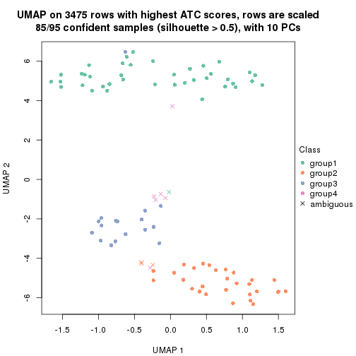
dimension_reduction(res, k = 5, method = "UMAP")
dimension_reduction(res, k = 6, method = "UMAP")
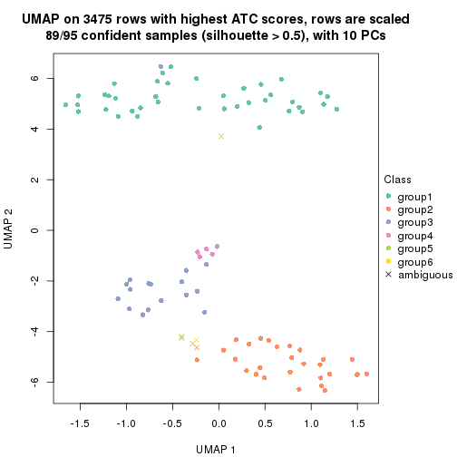
Following heatmap shows how subgroups are split when increasing k:
collect_classes(res)
If matrix rows can be associated to genes, consider to use functional_enrichment(res,
...) to perform function enrichment for the signature genes. See this vignette for more detailed explanations.
The object with results only for a single top-value method and a single partition method can be extracted as:
res = res_list["ATC", "pam"]
# you can also extract it by
# res = res_list["ATC:pam"]
A summary of res and all the functions that can be applied to it:
res
#> A 'ConsensusPartition' object with k = 2, 3, 4, 5, 6.
#> On a matrix with 3475 rows and 95 columns.
#> Top rows (348, 696, 1043, 1390, 1738) are extracted by 'ATC' method.
#> Subgroups are detected by 'pam' method.
#> Performed in total 1250 partitions by row resampling.
#> Best k for subgroups seems to be 2.
#>
#> Following methods can be applied to this 'ConsensusPartition' object:
#> [1] "cola_report" "collect_classes" "collect_plots"
#> [4] "collect_stats" "colnames" "compare_signatures"
#> [7] "consensus_heatmap" "dimension_reduction" "functional_enrichment"
#> [10] "get_anno_col" "get_anno" "get_classes"
#> [13] "get_consensus" "get_matrix" "get_membership"
#> [16] "get_param" "get_signatures" "get_stats"
#> [19] "is_best_k" "is_stable_k" "membership_heatmap"
#> [22] "ncol" "nrow" "plot_ecdf"
#> [25] "rownames" "select_partition_number" "show"
#> [28] "suggest_best_k" "test_to_known_factors"
collect_plots() function collects all the plots made from res for all k (number of partitions)
into one single page to provide an easy and fast comparison between different k.
collect_plots(res)
The plots are:
k and the heatmap of
predicted classes for each k.k.k.k.All the plots in panels can be made by individual functions and they are plotted later in this section.
select_partition_number() produces several plots showing different
statistics for choosing “optimized” k. There are following statistics:
k;k, the area increased is defined as \(A_k - A_{k-1}\).The detailed explanations of these statistics can be found in the cola vignette.
Generally speaking, lower PAC score, higher mean silhouette score or higher
concordance corresponds to better partition. Rand index and Jaccard index
measure how similar the current partition is compared to partition with k-1.
If they are too similar, we won't accept k is better than k-1.
select_partition_number(res)

The numeric values for all these statistics can be obtained by get_stats().
get_stats(res)
#> k 1-PAC mean_silhouette concordance area_increased Rand Jaccard
#> 2 2 1.000 0.976 0.987 0.5034 0.495 0.495
#> 3 3 0.758 0.824 0.887 0.2542 0.890 0.777
#> 4 4 0.887 0.876 0.938 0.1305 0.870 0.676
#> 5 5 0.872 0.764 0.883 0.0422 0.940 0.800
#> 6 6 0.840 0.663 0.856 0.0162 0.987 0.947
suggest_best_k() suggests the best \(k\) based on these statistics. The rules are as follows:
suggest_best_k(res)
#> [1] 2
Following shows the table of the partitions (You need to click the show/hide
code output link to see it). The membership matrix (columns with name p*)
is inferred by
clue::cl_consensus()
function with the SE method. Basically the value in the membership matrix
represents the probability to belong to a certain group. The finall class
label for an item is determined with the group with highest probability it
belongs to.
In get_classes() function, the entropy is calculated from the membership
matrix and the silhouette score is calculated from the consensus matrix.
cbind(get_classes(res, k = 2), get_membership(res, k = 2))
#> class entropy silhouette p1 p2
#> SRR2062258 1 0.1414 0.974 0.980 0.020
#> SRR2062259 1 0.0000 0.989 1.000 0.000
#> SRR2062270 2 0.1843 0.974 0.028 0.972
#> SRR2062342 2 0.0000 0.984 0.000 1.000
#> SRR2062341 1 0.0000 0.989 1.000 0.000
#> SRR2062340 2 0.0000 0.984 0.000 1.000
#> SRR2062339 1 0.0000 0.989 1.000 0.000
#> SRR2062348 1 0.0000 0.989 1.000 0.000
#> SRR2062347 2 0.0000 0.984 0.000 1.000
#> SRR2062351 1 0.0000 0.989 1.000 0.000
#> SRR2062350 1 0.0000 0.989 1.000 0.000
#> SRR2062349 2 0.0000 0.984 0.000 1.000
#> SRR2062346 1 0.0000 0.989 1.000 0.000
#> SRR2062345 2 0.0000 0.984 0.000 1.000
#> SRR2062344 2 0.1843 0.974 0.028 0.972
#> SRR2062343 2 0.0000 0.984 0.000 1.000
#> SRR2062354 1 0.0000 0.989 1.000 0.000
#> SRR2062353 2 0.0000 0.984 0.000 1.000
#> SRR2062352 1 0.0000 0.989 1.000 0.000
#> SRR2063021 1 0.4431 0.903 0.908 0.092
#> SRR2062356 1 0.0000 0.989 1.000 0.000
#> SRR2063025 2 0.0000 0.984 0.000 1.000
#> SRR2063027 1 0.0000 0.989 1.000 0.000
#> SRR2063023 2 0.1843 0.974 0.028 0.972
#> SRR2062355 2 0.1843 0.974 0.028 0.972
#> SRR2063030 1 0.0000 0.989 1.000 0.000
#> SRR2064285 1 0.0000 0.989 1.000 0.000
#> SRR2063034 1 0.0000 0.989 1.000 0.000
#> SRR2063032 1 0.0000 0.989 1.000 0.000
#> SRR2063031 1 0.0000 0.989 1.000 0.000
#> SRR2063029 2 0.0000 0.984 0.000 1.000
#> SRR2063028 1 0.0000 0.989 1.000 0.000
#> SRR2064308 2 0.0000 0.984 0.000 1.000
#> SRR2064310 1 0.2236 0.960 0.964 0.036
#> SRR2064312 1 0.0000 0.989 1.000 0.000
#> SRR2064314 2 0.0000 0.984 0.000 1.000
#> SRR2064315 1 0.0000 0.989 1.000 0.000
#> SRR2064317 2 0.0000 0.984 0.000 1.000
#> SRR2064318 1 0.0000 0.989 1.000 0.000
#> SRR2064319 1 0.0000 0.989 1.000 0.000
#> SRR2064320 2 0.0000 0.984 0.000 1.000
#> SRR2064321 2 0.1843 0.974 0.028 0.972
#> SRR2064322 2 0.0000 0.984 0.000 1.000
#> SRR2064323 1 0.1184 0.977 0.984 0.016
#> SRR2064324 2 0.0000 0.984 0.000 1.000
#> SRR2064325 1 0.0000 0.989 1.000 0.000
#> SRR2064326 1 0.5408 0.866 0.876 0.124
#> SRR2064327 2 0.1843 0.974 0.028 0.972
#> SRR2064329 1 0.0000 0.989 1.000 0.000
#> SRR2064328 2 0.0000 0.984 0.000 1.000
#> SRR2064330 2 0.8327 0.637 0.264 0.736
#> SRR2064331 2 0.1843 0.974 0.028 0.972
#> SRR2064332 2 0.1843 0.974 0.028 0.972
#> SRR2064333 1 0.0000 0.989 1.000 0.000
#> SRR2064334 2 0.0000 0.984 0.000 1.000
#> SRR2064335 2 0.0000 0.984 0.000 1.000
#> SRR2064436 1 0.0000 0.989 1.000 0.000
#> SRR2064457 1 0.0000 0.989 1.000 0.000
#> SRR2064458 1 0.3431 0.933 0.936 0.064
#> SRR2064459 2 0.1843 0.974 0.028 0.972
#> SRR2064460 1 0.0000 0.989 1.000 0.000
#> SRR2064461 2 0.0000 0.984 0.000 1.000
#> SRR2064462 1 0.0000 0.989 1.000 0.000
#> SRR2064534 2 0.0000 0.984 0.000 1.000
#> SRR2064535 2 0.1843 0.974 0.028 0.972
#> SRR2064536 2 0.0000 0.984 0.000 1.000
#> SRR2064537 1 0.0000 0.989 1.000 0.000
#> SRR2064538 1 0.0000 0.989 1.000 0.000
#> SRR2064539 2 0.0376 0.983 0.004 0.996
#> SRR2064540 1 0.0000 0.989 1.000 0.000
#> SRR2064541 2 0.0000 0.984 0.000 1.000
#> SRR2064543 1 0.0000 0.989 1.000 0.000
#> SRR2064542 1 0.0000 0.989 1.000 0.000
#> SRR2064544 2 0.2423 0.956 0.040 0.960
#> SRR2064545 2 0.0000 0.984 0.000 1.000
#> SRR2064546 1 0.0000 0.989 1.000 0.000
#> SRR2064547 1 0.0000 0.989 1.000 0.000
#> SRR2064548 2 0.0000 0.984 0.000 1.000
#> SRR2064550 2 0.1843 0.974 0.028 0.972
#> SRR2064549 1 0.0000 0.989 1.000 0.000
#> SRR2064551 2 0.0000 0.984 0.000 1.000
#> SRR2064552 1 0.0000 0.989 1.000 0.000
#> SRR2064553 2 0.1843 0.974 0.028 0.972
#> SRR2064554 1 0.1414 0.974 0.980 0.020
#> SRR2064555 2 0.1843 0.974 0.028 0.972
#> SRR2064556 1 0.0000 0.989 1.000 0.000
#> SRR2064559 2 0.0000 0.984 0.000 1.000
#> SRR2064558 2 0.1843 0.974 0.028 0.972
#> SRR2064557 2 0.0000 0.984 0.000 1.000
#> SRR2064560 1 0.0000 0.989 1.000 0.000
#> SRR2064561 1 0.6343 0.818 0.840 0.160
#> SRR2064562 1 0.0000 0.989 1.000 0.000
#> SRR2064564 1 0.0000 0.989 1.000 0.000
#> SRR2064563 2 0.0000 0.984 0.000 1.000
#> SRR2064565 2 0.0376 0.982 0.004 0.996
cbind(get_classes(res, k = 3), get_membership(res, k = 3))
#> class entropy silhouette p1 p2 p3
#> SRR2062258 1 0.5722 0.710 0.704 0.004 0.292
#> SRR2062259 1 0.0000 0.935 1.000 0.000 0.000
#> SRR2062270 3 0.5497 0.912 0.000 0.292 0.708
#> SRR2062342 2 0.3816 0.633 0.000 0.852 0.148
#> SRR2062341 1 0.0000 0.935 1.000 0.000 0.000
#> SRR2062340 2 0.5497 0.699 0.000 0.708 0.292
#> SRR2062339 1 0.0000 0.935 1.000 0.000 0.000
#> SRR2062348 1 0.0000 0.935 1.000 0.000 0.000
#> SRR2062347 2 0.5216 0.719 0.000 0.740 0.260
#> SRR2062351 1 0.0000 0.935 1.000 0.000 0.000
#> SRR2062350 1 0.0000 0.935 1.000 0.000 0.000
#> SRR2062349 2 0.0424 0.771 0.000 0.992 0.008
#> SRR2062346 1 0.0000 0.935 1.000 0.000 0.000
#> SRR2062345 2 0.4796 0.501 0.000 0.780 0.220
#> SRR2062344 3 0.5497 0.912 0.000 0.292 0.708
#> SRR2062343 2 0.0237 0.772 0.000 0.996 0.004
#> SRR2062354 1 0.0000 0.935 1.000 0.000 0.000
#> SRR2062353 2 0.1529 0.782 0.000 0.960 0.040
#> SRR2062352 1 0.0000 0.935 1.000 0.000 0.000
#> SRR2063021 1 0.5722 0.710 0.704 0.004 0.292
#> SRR2062356 1 0.0000 0.935 1.000 0.000 0.000
#> SRR2063025 2 0.1529 0.749 0.000 0.960 0.040
#> SRR2063027 1 0.0000 0.935 1.000 0.000 0.000
#> SRR2063023 3 0.0237 0.590 0.000 0.004 0.996
#> SRR2062355 3 0.0237 0.590 0.000 0.004 0.996
#> SRR2063030 1 0.0000 0.935 1.000 0.000 0.000
#> SRR2064285 1 0.0000 0.935 1.000 0.000 0.000
#> SRR2063034 1 0.0000 0.935 1.000 0.000 0.000
#> SRR2063032 1 0.2165 0.894 0.936 0.000 0.064
#> SRR2063031 1 0.0000 0.935 1.000 0.000 0.000
#> SRR2063029 2 0.5465 0.702 0.000 0.712 0.288
#> SRR2063028 1 0.0000 0.935 1.000 0.000 0.000
#> SRR2064308 3 0.5497 0.912 0.000 0.292 0.708
#> SRR2064310 1 0.5455 0.776 0.776 0.020 0.204
#> SRR2064312 1 0.0000 0.935 1.000 0.000 0.000
#> SRR2064314 2 0.5363 0.709 0.000 0.724 0.276
#> SRR2064315 1 0.0000 0.935 1.000 0.000 0.000
#> SRR2064317 2 0.3412 0.667 0.000 0.876 0.124
#> SRR2064318 1 0.0000 0.935 1.000 0.000 0.000
#> SRR2064319 1 0.0000 0.935 1.000 0.000 0.000
#> SRR2064320 2 0.5497 0.699 0.000 0.708 0.292
#> SRR2064321 3 0.5497 0.912 0.000 0.292 0.708
#> SRR2064322 2 0.0424 0.777 0.000 0.992 0.008
#> SRR2064323 1 0.5497 0.715 0.708 0.000 0.292
#> SRR2064324 2 0.1643 0.782 0.000 0.956 0.044
#> SRR2064325 1 0.0000 0.935 1.000 0.000 0.000
#> SRR2064326 1 0.5929 0.681 0.676 0.004 0.320
#> SRR2064327 3 0.5497 0.912 0.000 0.292 0.708
#> SRR2064329 1 0.0000 0.935 1.000 0.000 0.000
#> SRR2064328 2 0.0592 0.779 0.000 0.988 0.012
#> SRR2064330 2 0.5497 0.699 0.000 0.708 0.292
#> SRR2064331 3 0.5497 0.912 0.000 0.292 0.708
#> SRR2064332 3 0.5529 0.910 0.000 0.296 0.704
#> SRR2064333 1 0.0000 0.935 1.000 0.000 0.000
#> SRR2064334 2 0.4504 0.749 0.000 0.804 0.196
#> SRR2064335 2 0.4002 0.760 0.000 0.840 0.160
#> SRR2064436 1 0.0000 0.935 1.000 0.000 0.000
#> SRR2064457 1 0.0000 0.935 1.000 0.000 0.000
#> SRR2064458 1 0.6322 0.704 0.700 0.024 0.276
#> SRR2064459 3 0.5529 0.910 0.000 0.296 0.704
#> SRR2064460 1 0.0000 0.935 1.000 0.000 0.000
#> SRR2064461 2 0.4974 0.462 0.000 0.764 0.236
#> SRR2064462 1 0.0000 0.935 1.000 0.000 0.000
#> SRR2064534 2 0.0000 0.774 0.000 1.000 0.000
#> SRR2064535 3 0.5529 0.910 0.000 0.296 0.704
#> SRR2064536 3 0.5497 0.912 0.000 0.292 0.708
#> SRR2064537 1 0.5497 0.715 0.708 0.000 0.292
#> SRR2064538 1 0.0000 0.935 1.000 0.000 0.000
#> SRR2064539 3 0.5497 0.912 0.000 0.292 0.708
#> SRR2064540 1 0.0000 0.935 1.000 0.000 0.000
#> SRR2064541 2 0.4654 0.744 0.000 0.792 0.208
#> SRR2064543 1 0.0000 0.935 1.000 0.000 0.000
#> SRR2064542 1 0.0000 0.935 1.000 0.000 0.000
#> SRR2064544 2 0.5905 0.674 0.000 0.648 0.352
#> SRR2064545 2 0.4452 0.561 0.000 0.808 0.192
#> SRR2064546 1 0.0000 0.935 1.000 0.000 0.000
#> SRR2064547 1 0.0000 0.935 1.000 0.000 0.000
#> SRR2064548 2 0.4399 0.578 0.000 0.812 0.188
#> SRR2064550 3 0.0237 0.590 0.000 0.004 0.996
#> SRR2064549 1 0.5497 0.715 0.708 0.000 0.292
#> SRR2064551 2 0.0592 0.769 0.000 0.988 0.012
#> SRR2064552 1 0.0000 0.935 1.000 0.000 0.000
#> SRR2064553 3 0.5497 0.912 0.000 0.292 0.708
#> SRR2064554 1 0.5497 0.715 0.708 0.000 0.292
#> SRR2064555 3 0.5497 0.912 0.000 0.292 0.708
#> SRR2064556 1 0.0000 0.935 1.000 0.000 0.000
#> SRR2064559 2 0.0237 0.772 0.000 0.996 0.004
#> SRR2064558 3 0.5497 0.912 0.000 0.292 0.708
#> SRR2064557 2 0.1860 0.782 0.000 0.948 0.052
#> SRR2064560 1 0.0000 0.935 1.000 0.000 0.000
#> SRR2064561 1 0.9419 0.313 0.496 0.208 0.296
#> SRR2064562 1 0.0000 0.935 1.000 0.000 0.000
#> SRR2064564 1 0.0000 0.935 1.000 0.000 0.000
#> SRR2064563 2 0.0000 0.774 0.000 1.000 0.000
#> SRR2064565 2 0.5497 0.699 0.000 0.708 0.292
cbind(get_classes(res, k = 4), get_membership(res, k = 4))
#> class entropy silhouette p1 p2 p3 p4
#> SRR2062258 4 0.0592 0.868 0.016 0.000 0.000 0.984
#> SRR2062259 1 0.0000 0.994 1.000 0.000 0.000 0.000
#> SRR2062270 3 0.0188 0.996 0.000 0.000 0.996 0.004
#> SRR2062342 2 0.4790 0.563 0.000 0.620 0.380 0.000
#> SRR2062341 1 0.0000 0.994 1.000 0.000 0.000 0.000
#> SRR2062340 2 0.3837 0.669 0.000 0.776 0.000 0.224
#> SRR2062339 1 0.0000 0.994 1.000 0.000 0.000 0.000
#> SRR2062348 1 0.0000 0.994 1.000 0.000 0.000 0.000
#> SRR2062347 2 0.0707 0.823 0.000 0.980 0.000 0.020
#> SRR2062351 1 0.0000 0.994 1.000 0.000 0.000 0.000
#> SRR2062350 1 0.0000 0.994 1.000 0.000 0.000 0.000
#> SRR2062349 2 0.1557 0.829 0.000 0.944 0.056 0.000
#> SRR2062346 1 0.0000 0.994 1.000 0.000 0.000 0.000
#> SRR2062345 2 0.4989 0.394 0.000 0.528 0.472 0.000
#> SRR2062344 3 0.0000 1.000 0.000 0.000 1.000 0.000
#> SRR2062343 2 0.0707 0.831 0.000 0.980 0.020 0.000
#> SRR2062354 1 0.0000 0.994 1.000 0.000 0.000 0.000
#> SRR2062353 2 0.0000 0.825 0.000 1.000 0.000 0.000
#> SRR2062352 1 0.0000 0.994 1.000 0.000 0.000 0.000
#> SRR2063021 4 0.0000 0.870 0.000 0.000 0.000 1.000
#> SRR2062356 1 0.0000 0.994 1.000 0.000 0.000 0.000
#> SRR2063025 2 0.3311 0.781 0.000 0.828 0.172 0.000
#> SRR2063027 1 0.0000 0.994 1.000 0.000 0.000 0.000
#> SRR2063023 4 0.1637 0.841 0.000 0.000 0.060 0.940
#> SRR2062355 4 0.0188 0.869 0.000 0.000 0.004 0.996
#> SRR2063030 1 0.0000 0.994 1.000 0.000 0.000 0.000
#> SRR2064285 1 0.0000 0.994 1.000 0.000 0.000 0.000
#> SRR2063034 1 0.0000 0.994 1.000 0.000 0.000 0.000
#> SRR2063032 1 0.3688 0.726 0.792 0.000 0.000 0.208
#> SRR2063031 1 0.0000 0.994 1.000 0.000 0.000 0.000
#> SRR2063029 2 0.0707 0.823 0.000 0.980 0.000 0.020
#> SRR2063028 1 0.0000 0.994 1.000 0.000 0.000 0.000
#> SRR2064308 3 0.0000 1.000 0.000 0.000 1.000 0.000
#> SRR2064310 4 0.2647 0.778 0.120 0.000 0.000 0.880
#> SRR2064312 1 0.0000 0.994 1.000 0.000 0.000 0.000
#> SRR2064314 2 0.4018 0.669 0.000 0.772 0.004 0.224
#> SRR2064315 1 0.0000 0.994 1.000 0.000 0.000 0.000
#> SRR2064317 2 0.4855 0.539 0.000 0.600 0.400 0.000
#> SRR2064318 1 0.0000 0.994 1.000 0.000 0.000 0.000
#> SRR2064319 1 0.0000 0.994 1.000 0.000 0.000 0.000
#> SRR2064320 2 0.3172 0.733 0.000 0.840 0.000 0.160
#> SRR2064321 3 0.0000 1.000 0.000 0.000 1.000 0.000
#> SRR2064322 2 0.0188 0.827 0.000 0.996 0.004 0.000
#> SRR2064323 4 0.0469 0.870 0.012 0.000 0.000 0.988
#> SRR2064324 2 0.2125 0.824 0.000 0.920 0.076 0.004
#> SRR2064325 1 0.0000 0.994 1.000 0.000 0.000 0.000
#> SRR2064326 4 0.0000 0.870 0.000 0.000 0.000 1.000
#> SRR2064327 3 0.0000 1.000 0.000 0.000 1.000 0.000
#> SRR2064329 1 0.0000 0.994 1.000 0.000 0.000 0.000
#> SRR2064328 2 0.0000 0.825 0.000 1.000 0.000 0.000
#> SRR2064330 4 0.4477 0.516 0.000 0.312 0.000 0.688
#> SRR2064331 3 0.0000 1.000 0.000 0.000 1.000 0.000
#> SRR2064332 3 0.0000 1.000 0.000 0.000 1.000 0.000
#> SRR2064333 1 0.0000 0.994 1.000 0.000 0.000 0.000
#> SRR2064334 2 0.1388 0.820 0.000 0.960 0.012 0.028
#> SRR2064335 2 0.0376 0.827 0.000 0.992 0.004 0.004
#> SRR2064436 1 0.0000 0.994 1.000 0.000 0.000 0.000
#> SRR2064457 1 0.0000 0.994 1.000 0.000 0.000 0.000
#> SRR2064458 4 0.0707 0.866 0.020 0.000 0.000 0.980
#> SRR2064459 3 0.0000 1.000 0.000 0.000 1.000 0.000
#> SRR2064460 1 0.0000 0.994 1.000 0.000 0.000 0.000
#> SRR2064461 2 0.4998 0.358 0.000 0.512 0.488 0.000
#> SRR2064462 1 0.0000 0.994 1.000 0.000 0.000 0.000
#> SRR2064534 2 0.0592 0.830 0.000 0.984 0.016 0.000
#> SRR2064535 3 0.0000 1.000 0.000 0.000 1.000 0.000
#> SRR2064536 3 0.0000 1.000 0.000 0.000 1.000 0.000
#> SRR2064537 4 0.0000 0.870 0.000 0.000 0.000 1.000
#> SRR2064538 1 0.0000 0.994 1.000 0.000 0.000 0.000
#> SRR2064539 3 0.0000 1.000 0.000 0.000 1.000 0.000
#> SRR2064540 1 0.0000 0.994 1.000 0.000 0.000 0.000
#> SRR2064541 2 0.0469 0.830 0.000 0.988 0.012 0.000
#> SRR2064543 1 0.0000 0.994 1.000 0.000 0.000 0.000
#> SRR2064542 1 0.0000 0.994 1.000 0.000 0.000 0.000
#> SRR2064544 4 0.4925 0.253 0.000 0.428 0.000 0.572
#> SRR2064545 2 0.4999 0.345 0.000 0.508 0.492 0.000
#> SRR2064546 1 0.0000 0.994 1.000 0.000 0.000 0.000
#> SRR2064547 1 0.0000 0.994 1.000 0.000 0.000 0.000
#> SRR2064548 2 0.5947 0.524 0.000 0.572 0.384 0.044
#> SRR2064550 4 0.0817 0.863 0.000 0.000 0.024 0.976
#> SRR2064549 4 0.4072 0.632 0.252 0.000 0.000 0.748
#> SRR2064551 2 0.3400 0.777 0.000 0.820 0.180 0.000
#> SRR2064552 1 0.0000 0.994 1.000 0.000 0.000 0.000
#> SRR2064553 3 0.0000 1.000 0.000 0.000 1.000 0.000
#> SRR2064554 4 0.0000 0.870 0.000 0.000 0.000 1.000
#> SRR2064555 3 0.0000 1.000 0.000 0.000 1.000 0.000
#> SRR2064556 1 0.0000 0.994 1.000 0.000 0.000 0.000
#> SRR2064559 2 0.2149 0.822 0.000 0.912 0.088 0.000
#> SRR2064558 3 0.0000 1.000 0.000 0.000 1.000 0.000
#> SRR2064557 2 0.0000 0.825 0.000 1.000 0.000 0.000
#> SRR2064560 1 0.0000 0.994 1.000 0.000 0.000 0.000
#> SRR2064561 4 0.0657 0.870 0.012 0.004 0.000 0.984
#> SRR2064562 1 0.0000 0.994 1.000 0.000 0.000 0.000
#> SRR2064564 1 0.0000 0.994 1.000 0.000 0.000 0.000
#> SRR2064563 2 0.1118 0.831 0.000 0.964 0.036 0.000
#> SRR2064565 4 0.4866 0.310 0.000 0.404 0.000 0.596
cbind(get_classes(res, k = 5), get_membership(res, k = 5))
#> class entropy silhouette p1 p2 p3 p4 p5
#> SRR2062258 4 0.0510 0.8603 0.016 0.000 0.000 0.984 0.000
#> SRR2062259 1 0.0000 0.9931 1.000 0.000 0.000 0.000 0.000
#> SRR2062270 3 0.2011 0.8286 0.000 0.000 0.908 0.004 0.088
#> SRR2062342 5 0.2179 0.6614 0.000 0.112 0.000 0.000 0.888
#> SRR2062341 1 0.0000 0.9931 1.000 0.000 0.000 0.000 0.000
#> SRR2062340 2 0.5930 0.3694 0.000 0.596 0.000 0.196 0.208
#> SRR2062339 1 0.0000 0.9931 1.000 0.000 0.000 0.000 0.000
#> SRR2062348 1 0.0000 0.9931 1.000 0.000 0.000 0.000 0.000
#> SRR2062347 2 0.1981 0.6538 0.000 0.920 0.000 0.016 0.064
#> SRR2062351 1 0.0000 0.9931 1.000 0.000 0.000 0.000 0.000
#> SRR2062350 1 0.0000 0.9931 1.000 0.000 0.000 0.000 0.000
#> SRR2062349 2 0.3745 0.5176 0.000 0.780 0.024 0.000 0.196
#> SRR2062346 1 0.0000 0.9931 1.000 0.000 0.000 0.000 0.000
#> SRR2062345 5 0.6144 0.4464 0.000 0.172 0.280 0.000 0.548
#> SRR2062344 3 0.0162 0.8556 0.000 0.000 0.996 0.000 0.004
#> SRR2062343 2 0.4430 0.1725 0.000 0.540 0.004 0.000 0.456
#> SRR2062354 1 0.0000 0.9931 1.000 0.000 0.000 0.000 0.000
#> SRR2062353 2 0.4171 0.3712 0.000 0.604 0.000 0.000 0.396
#> SRR2062352 1 0.0000 0.9931 1.000 0.000 0.000 0.000 0.000
#> SRR2063021 4 0.0000 0.8606 0.000 0.000 0.000 1.000 0.000
#> SRR2062356 1 0.0000 0.9931 1.000 0.000 0.000 0.000 0.000
#> SRR2063025 5 0.2179 0.6598 0.000 0.112 0.000 0.000 0.888
#> SRR2063027 1 0.0000 0.9931 1.000 0.000 0.000 0.000 0.000
#> SRR2063023 4 0.2450 0.8229 0.000 0.000 0.048 0.900 0.052
#> SRR2062355 4 0.1430 0.8463 0.000 0.000 0.004 0.944 0.052
#> SRR2063030 1 0.0000 0.9931 1.000 0.000 0.000 0.000 0.000
#> SRR2064285 1 0.0000 0.9931 1.000 0.000 0.000 0.000 0.000
#> SRR2063034 1 0.0000 0.9931 1.000 0.000 0.000 0.000 0.000
#> SRR2063032 1 0.3508 0.6495 0.748 0.000 0.000 0.252 0.000
#> SRR2063031 1 0.0000 0.9931 1.000 0.000 0.000 0.000 0.000
#> SRR2063029 2 0.3565 0.5963 0.000 0.800 0.000 0.024 0.176
#> SRR2063028 1 0.0000 0.9931 1.000 0.000 0.000 0.000 0.000
#> SRR2064308 3 0.1908 0.8303 0.000 0.000 0.908 0.000 0.092
#> SRR2064310 4 0.2439 0.7464 0.120 0.004 0.000 0.876 0.000
#> SRR2064312 1 0.0000 0.9931 1.000 0.000 0.000 0.000 0.000
#> SRR2064314 2 0.6000 0.0973 0.000 0.540 0.000 0.132 0.328
#> SRR2064315 1 0.0000 0.9931 1.000 0.000 0.000 0.000 0.000
#> SRR2064317 3 0.6797 -0.3884 0.000 0.356 0.356 0.000 0.288
#> SRR2064318 1 0.0000 0.9931 1.000 0.000 0.000 0.000 0.000
#> SRR2064319 1 0.0000 0.9931 1.000 0.000 0.000 0.000 0.000
#> SRR2064320 2 0.5798 0.4436 0.000 0.608 0.000 0.156 0.236
#> SRR2064321 3 0.0000 0.8564 0.000 0.000 1.000 0.000 0.000
#> SRR2064322 2 0.1908 0.6338 0.000 0.908 0.000 0.000 0.092
#> SRR2064323 4 0.0404 0.8615 0.012 0.000 0.000 0.988 0.000
#> SRR2064324 5 0.4420 0.1247 0.000 0.448 0.004 0.000 0.548
#> SRR2064325 1 0.0000 0.9931 1.000 0.000 0.000 0.000 0.000
#> SRR2064326 4 0.0000 0.8606 0.000 0.000 0.000 1.000 0.000
#> SRR2064327 3 0.0000 0.8564 0.000 0.000 1.000 0.000 0.000
#> SRR2064329 1 0.0000 0.9931 1.000 0.000 0.000 0.000 0.000
#> SRR2064328 2 0.2424 0.6316 0.000 0.868 0.000 0.000 0.132
#> SRR2064330 4 0.4666 0.1966 0.000 0.412 0.000 0.572 0.016
#> SRR2064331 3 0.0609 0.8533 0.000 0.000 0.980 0.000 0.020
#> SRR2064332 3 0.1197 0.8461 0.000 0.000 0.952 0.000 0.048
#> SRR2064333 1 0.0000 0.9931 1.000 0.000 0.000 0.000 0.000
#> SRR2064334 2 0.1270 0.6393 0.000 0.948 0.000 0.000 0.052
#> SRR2064335 2 0.1410 0.6446 0.000 0.940 0.000 0.000 0.060
#> SRR2064436 1 0.0000 0.9931 1.000 0.000 0.000 0.000 0.000
#> SRR2064457 1 0.0000 0.9931 1.000 0.000 0.000 0.000 0.000
#> SRR2064458 4 0.0609 0.8581 0.020 0.000 0.000 0.980 0.000
#> SRR2064459 3 0.0000 0.8564 0.000 0.000 1.000 0.000 0.000
#> SRR2064460 1 0.0000 0.9931 1.000 0.000 0.000 0.000 0.000
#> SRR2064461 3 0.6673 -0.2044 0.000 0.316 0.432 0.000 0.252
#> SRR2064462 1 0.0000 0.9931 1.000 0.000 0.000 0.000 0.000
#> SRR2064534 5 0.3949 0.5514 0.000 0.332 0.000 0.000 0.668
#> SRR2064535 3 0.0162 0.8556 0.000 0.000 0.996 0.000 0.004
#> SRR2064536 3 0.1908 0.8303 0.000 0.000 0.908 0.000 0.092
#> SRR2064537 4 0.0000 0.8606 0.000 0.000 0.000 1.000 0.000
#> SRR2064538 1 0.0000 0.9931 1.000 0.000 0.000 0.000 0.000
#> SRR2064539 3 0.1270 0.8453 0.000 0.000 0.948 0.000 0.052
#> SRR2064540 1 0.0000 0.9931 1.000 0.000 0.000 0.000 0.000
#> SRR2064541 2 0.3231 0.5963 0.000 0.800 0.004 0.000 0.196
#> SRR2064543 1 0.0000 0.9931 1.000 0.000 0.000 0.000 0.000
#> SRR2064542 1 0.0000 0.9931 1.000 0.000 0.000 0.000 0.000
#> SRR2064544 2 0.5230 0.1384 0.000 0.504 0.000 0.452 0.044
#> SRR2064545 3 0.5785 0.0544 0.000 0.404 0.504 0.000 0.092
#> SRR2064546 1 0.0000 0.9931 1.000 0.000 0.000 0.000 0.000
#> SRR2064547 1 0.0000 0.9931 1.000 0.000 0.000 0.000 0.000
#> SRR2064548 5 0.5590 0.5235 0.000 0.156 0.204 0.000 0.640
#> SRR2064550 4 0.1965 0.8375 0.000 0.000 0.024 0.924 0.052
#> SRR2064549 4 0.3274 0.6050 0.220 0.000 0.000 0.780 0.000
#> SRR2064551 5 0.4629 0.6319 0.000 0.244 0.052 0.000 0.704
#> SRR2064552 1 0.0000 0.9931 1.000 0.000 0.000 0.000 0.000
#> SRR2064553 3 0.0000 0.8564 0.000 0.000 1.000 0.000 0.000
#> SRR2064554 4 0.0000 0.8606 0.000 0.000 0.000 1.000 0.000
#> SRR2064555 3 0.0000 0.8564 0.000 0.000 1.000 0.000 0.000
#> SRR2064556 1 0.0000 0.9931 1.000 0.000 0.000 0.000 0.000
#> SRR2064559 5 0.3913 0.5613 0.000 0.324 0.000 0.000 0.676
#> SRR2064558 3 0.0162 0.8556 0.000 0.000 0.996 0.000 0.004
#> SRR2064557 5 0.3074 0.6467 0.000 0.196 0.000 0.000 0.804
#> SRR2064560 1 0.0000 0.9931 1.000 0.000 0.000 0.000 0.000
#> SRR2064561 4 0.0807 0.8596 0.012 0.012 0.000 0.976 0.000
#> SRR2064562 1 0.0000 0.9931 1.000 0.000 0.000 0.000 0.000
#> SRR2064564 1 0.0000 0.9931 1.000 0.000 0.000 0.000 0.000
#> SRR2064563 2 0.2171 0.6400 0.000 0.912 0.024 0.000 0.064
#> SRR2064565 4 0.6552 -0.0279 0.000 0.276 0.000 0.476 0.248
cbind(get_classes(res, k = 6), get_membership(res, k = 6))
#> class entropy silhouette p1 p2 p3 p4 p5 p6
#> SRR2062258 4 0.0458 0.85350 0.016 0.000 0.000 0.984 0.000 0.000
#> SRR2062259 1 0.0000 0.98859 1.000 0.000 0.000 0.000 0.000 0.000
#> SRR2062270 3 0.2613 0.50349 0.000 0.000 0.848 0.000 0.012 0.140
#> SRR2062342 5 0.0790 0.58323 0.000 0.032 0.000 0.000 0.968 0.000
#> SRR2062341 1 0.0000 0.98859 1.000 0.000 0.000 0.000 0.000 0.000
#> SRR2062340 2 0.5872 0.37098 0.000 0.592 0.000 0.160 0.212 0.036
#> SRR2062339 1 0.0000 0.98859 1.000 0.000 0.000 0.000 0.000 0.000
#> SRR2062348 1 0.0260 0.98804 0.992 0.000 0.000 0.000 0.008 0.000
#> SRR2062347 2 0.3332 0.59477 0.000 0.840 0.000 0.020 0.068 0.072
#> SRR2062351 1 0.0260 0.98804 0.992 0.000 0.000 0.000 0.008 0.000
#> SRR2062350 1 0.0260 0.98804 0.992 0.000 0.000 0.000 0.008 0.000
#> SRR2062349 2 0.5104 0.45099 0.000 0.656 0.008 0.000 0.172 0.164
#> SRR2062346 1 0.0000 0.98859 1.000 0.000 0.000 0.000 0.000 0.000
#> SRR2062345 5 0.4929 0.40797 0.000 0.100 0.280 0.000 0.620 0.000
#> SRR2062344 3 0.3351 -0.25469 0.000 0.000 0.712 0.000 0.000 0.288
#> SRR2062343 5 0.5688 -0.17293 0.000 0.424 0.004 0.000 0.436 0.136
#> SRR2062354 1 0.0260 0.98804 0.992 0.000 0.000 0.000 0.008 0.000
#> SRR2062353 5 0.5560 -0.21326 0.000 0.420 0.000 0.000 0.444 0.136
#> SRR2062352 1 0.0000 0.98859 1.000 0.000 0.000 0.000 0.000 0.000
#> SRR2063021 4 0.0000 0.85402 0.000 0.000 0.000 1.000 0.000 0.000
#> SRR2062356 1 0.0000 0.98859 1.000 0.000 0.000 0.000 0.000 0.000
#> SRR2063025 5 0.0713 0.58085 0.000 0.028 0.000 0.000 0.972 0.000
#> SRR2063027 1 0.0146 0.98831 0.996 0.000 0.000 0.000 0.004 0.000
#> SRR2063023 4 0.2462 0.81986 0.000 0.000 0.032 0.892 0.012 0.064
#> SRR2062355 4 0.1829 0.83233 0.000 0.000 0.004 0.920 0.012 0.064
#> SRR2063030 1 0.0146 0.98833 0.996 0.000 0.000 0.000 0.004 0.000
#> SRR2064285 1 0.0000 0.98859 1.000 0.000 0.000 0.000 0.000 0.000
#> SRR2063034 1 0.0000 0.98859 1.000 0.000 0.000 0.000 0.000 0.000
#> SRR2063032 1 0.3448 0.59821 0.716 0.000 0.000 0.280 0.004 0.000
#> SRR2063031 1 0.0260 0.98804 0.992 0.000 0.000 0.000 0.008 0.000
#> SRR2063029 2 0.3796 0.50145 0.000 0.768 0.000 0.012 0.188 0.032
#> SRR2063028 1 0.0260 0.98804 0.992 0.000 0.000 0.000 0.008 0.000
#> SRR2064308 3 0.2883 0.49332 0.000 0.000 0.788 0.000 0.000 0.212
#> SRR2064310 4 0.2587 0.73377 0.120 0.004 0.000 0.864 0.004 0.008
#> SRR2064312 1 0.0000 0.98859 1.000 0.000 0.000 0.000 0.000 0.000
#> SRR2064314 2 0.5894 0.18588 0.000 0.552 0.000 0.092 0.308 0.048
#> SRR2064315 1 0.0260 0.98804 0.992 0.000 0.000 0.000 0.008 0.000
#> SRR2064317 3 0.6109 -0.26592 0.000 0.292 0.356 0.000 0.352 0.000
#> SRR2064318 1 0.0260 0.98804 0.992 0.000 0.000 0.000 0.008 0.000
#> SRR2064319 1 0.0260 0.98804 0.992 0.000 0.000 0.000 0.008 0.000
#> SRR2064320 2 0.6049 0.36127 0.000 0.552 0.000 0.128 0.276 0.044
#> SRR2064321 3 0.0000 0.52116 0.000 0.000 1.000 0.000 0.000 0.000
#> SRR2064322 2 0.3088 0.54802 0.000 0.832 0.000 0.000 0.120 0.048
#> SRR2064323 4 0.0508 0.85458 0.012 0.000 0.000 0.984 0.004 0.000
#> SRR2064324 5 0.4494 0.05931 0.000 0.424 0.000 0.000 0.544 0.032
#> SRR2064325 1 0.0260 0.98804 0.992 0.000 0.000 0.000 0.008 0.000
#> SRR2064326 4 0.0000 0.85402 0.000 0.000 0.000 1.000 0.000 0.000
#> SRR2064327 3 0.1075 0.48116 0.000 0.000 0.952 0.000 0.000 0.048
#> SRR2064329 1 0.0000 0.98859 1.000 0.000 0.000 0.000 0.000 0.000
#> SRR2064328 2 0.3168 0.54342 0.000 0.804 0.000 0.000 0.172 0.024
#> SRR2064330 4 0.5178 0.21012 0.000 0.376 0.000 0.552 0.020 0.052
#> SRR2064331 3 0.1610 0.44669 0.000 0.000 0.916 0.000 0.000 0.084
#> SRR2064332 3 0.2454 0.51520 0.000 0.000 0.840 0.000 0.000 0.160
#> SRR2064333 1 0.0000 0.98859 1.000 0.000 0.000 0.000 0.000 0.000
#> SRR2064334 2 0.3215 0.57218 0.000 0.828 0.000 0.000 0.072 0.100
#> SRR2064335 2 0.3745 0.57973 0.000 0.784 0.000 0.000 0.100 0.116
#> SRR2064436 1 0.0000 0.98859 1.000 0.000 0.000 0.000 0.000 0.000
#> SRR2064457 1 0.0260 0.98804 0.992 0.000 0.000 0.000 0.008 0.000
#> SRR2064458 4 0.0692 0.85144 0.020 0.000 0.000 0.976 0.000 0.004
#> SRR2064459 3 0.0260 0.51642 0.000 0.000 0.992 0.000 0.000 0.008
#> SRR2064460 1 0.0000 0.98859 1.000 0.000 0.000 0.000 0.000 0.000
#> SRR2064461 3 0.6488 -0.05614 0.000 0.256 0.424 0.000 0.296 0.024
#> SRR2064462 1 0.0260 0.98804 0.992 0.000 0.000 0.000 0.008 0.000
#> SRR2064534 5 0.3221 0.48740 0.000 0.264 0.000 0.000 0.736 0.000
#> SRR2064535 6 0.3857 0.00000 0.000 0.000 0.468 0.000 0.000 0.532
#> SRR2064536 3 0.2883 0.49332 0.000 0.000 0.788 0.000 0.000 0.212
#> SRR2064537 4 0.0000 0.85402 0.000 0.000 0.000 1.000 0.000 0.000
#> SRR2064538 1 0.0291 0.98647 0.992 0.000 0.000 0.004 0.004 0.000
#> SRR2064539 3 0.2491 0.51408 0.000 0.000 0.836 0.000 0.000 0.164
#> SRR2064540 1 0.0000 0.98859 1.000 0.000 0.000 0.000 0.000 0.000
#> SRR2064541 2 0.5275 0.44631 0.000 0.600 0.000 0.000 0.232 0.168
#> SRR2064543 1 0.0000 0.98859 1.000 0.000 0.000 0.000 0.000 0.000
#> SRR2064542 1 0.0000 0.98859 1.000 0.000 0.000 0.000 0.000 0.000
#> SRR2064544 2 0.5317 0.13718 0.000 0.464 0.000 0.444 0.088 0.004
#> SRR2064545 3 0.6062 0.11692 0.000 0.340 0.484 0.000 0.156 0.020
#> SRR2064546 1 0.0260 0.98804 0.992 0.000 0.000 0.000 0.008 0.000
#> SRR2064547 1 0.0000 0.98859 1.000 0.000 0.000 0.000 0.000 0.000
#> SRR2064548 5 0.4503 0.46389 0.000 0.100 0.204 0.000 0.696 0.000
#> SRR2064550 4 0.2307 0.82301 0.000 0.000 0.024 0.900 0.012 0.064
#> SRR2064549 4 0.2933 0.61562 0.200 0.000 0.000 0.796 0.004 0.000
#> SRR2064551 5 0.3752 0.55077 0.000 0.168 0.052 0.000 0.776 0.004
#> SRR2064552 1 0.0260 0.98804 0.992 0.000 0.000 0.000 0.008 0.000
#> SRR2064553 3 0.0000 0.52116 0.000 0.000 1.000 0.000 0.000 0.000
#> SRR2064554 4 0.0000 0.85402 0.000 0.000 0.000 1.000 0.000 0.000
#> SRR2064555 3 0.0146 0.51912 0.000 0.000 0.996 0.000 0.000 0.004
#> SRR2064556 1 0.0260 0.98804 0.992 0.000 0.000 0.000 0.008 0.000
#> SRR2064559 5 0.3244 0.47786 0.000 0.268 0.000 0.000 0.732 0.000
#> SRR2064558 3 0.3823 -0.73627 0.000 0.000 0.564 0.000 0.000 0.436
#> SRR2064557 5 0.2146 0.57366 0.000 0.116 0.000 0.000 0.880 0.004
#> SRR2064560 1 0.0000 0.98859 1.000 0.000 0.000 0.000 0.000 0.000
#> SRR2064561 4 0.1396 0.84767 0.012 0.024 0.000 0.952 0.004 0.008
#> SRR2064562 1 0.0260 0.98804 0.992 0.000 0.000 0.000 0.008 0.000
#> SRR2064564 1 0.0000 0.98859 1.000 0.000 0.000 0.000 0.000 0.000
#> SRR2064563 2 0.4036 0.57189 0.000 0.756 0.000 0.000 0.108 0.136
#> SRR2064565 4 0.6157 -0.00958 0.000 0.216 0.000 0.464 0.308 0.012
Heatmaps for the consensus matrix. It visualizes the probability of two samples to be in a same group.
consensus_heatmap(res, k = 2)
consensus_heatmap(res, k = 3)
consensus_heatmap(res, k = 4)
consensus_heatmap(res, k = 5)
consensus_heatmap(res, k = 6)
Heatmaps for the membership of samples in all partitions to see how consistent they are:
membership_heatmap(res, k = 2)

membership_heatmap(res, k = 3)
membership_heatmap(res, k = 4)
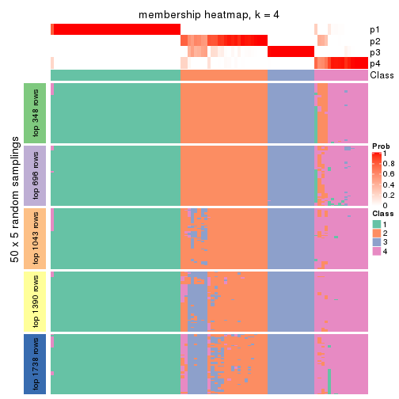
membership_heatmap(res, k = 5)
membership_heatmap(res, k = 6)
As soon as we have had the classes for columns, we can look for signatures which are significantly different between classes which can be candidate marks for certain classes. Following are the heatmaps for signatures.
Signature heatmaps where rows are scaled:
get_signatures(res, k = 2)
get_signatures(res, k = 3)
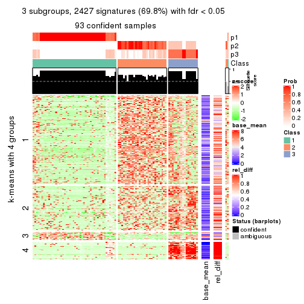
get_signatures(res, k = 4)
get_signatures(res, k = 5)
get_signatures(res, k = 6)
Signature heatmaps where rows are not scaled:
get_signatures(res, k = 2, scale_rows = FALSE)

get_signatures(res, k = 3, scale_rows = FALSE)
get_signatures(res, k = 4, scale_rows = FALSE)

get_signatures(res, k = 5, scale_rows = FALSE)
get_signatures(res, k = 6, scale_rows = FALSE)
Compare the overlap of signatures from different k:
compare_signatures(res)
get_signature() returns a data frame invisibly. TO get the list of signatures, the function
call should be assigned to a variable explicitly. In following code, if plot argument is set
to FALSE, no heatmap is plotted while only the differential analysis is performed.
# code only for demonstration
tb = get_signature(res, k = ..., plot = FALSE)
An example of the output of tb is:
#> which_row fdr mean_1 mean_2 scaled_mean_1 scaled_mean_2 km
#> 1 38 0.042760348 8.373488 9.131774 -0.5533452 0.5164555 1
#> 2 40 0.018707592 7.106213 8.469186 -0.6173731 0.5762149 1
#> 3 55 0.019134737 10.221463 11.207825 -0.6159697 0.5749050 1
#> 4 59 0.006059896 5.921854 7.869574 -0.6899429 0.6439467 1
#> 5 60 0.018055526 8.928898 10.211722 -0.6204761 0.5791110 1
#> 6 98 0.009384629 15.714769 14.887706 0.6635654 -0.6193277 2
...
The columns in tb are:
which_row: row indices corresponding to the input matrix.fdr: FDR for the differential test. mean_x: The mean value in group x.scaled_mean_x: The mean value in group x after rows are scaled.km: Row groups if k-means clustering is applied to rows.UMAP plot which shows how samples are separated.
dimension_reduction(res, k = 2, method = "UMAP")
dimension_reduction(res, k = 3, method = "UMAP")
dimension_reduction(res, k = 4, method = "UMAP")
dimension_reduction(res, k = 5, method = "UMAP")
dimension_reduction(res, k = 6, method = "UMAP")

Following heatmap shows how subgroups are split when increasing k:
collect_classes(res)
If matrix rows can be associated to genes, consider to use functional_enrichment(res,
...) to perform function enrichment for the signature genes. See this vignette for more detailed explanations.
The object with results only for a single top-value method and a single partition method can be extracted as:
res = res_list["ATC", "mclust"]
# you can also extract it by
# res = res_list["ATC:mclust"]
A summary of res and all the functions that can be applied to it:
res
#> A 'ConsensusPartition' object with k = 2, 3, 4, 5, 6.
#> On a matrix with 3475 rows and 95 columns.
#> Top rows (348, 696, 1043, 1390, 1738) are extracted by 'ATC' method.
#> Subgroups are detected by 'mclust' method.
#> Performed in total 1250 partitions by row resampling.
#> Best k for subgroups seems to be 3.
#>
#> Following methods can be applied to this 'ConsensusPartition' object:
#> [1] "cola_report" "collect_classes" "collect_plots"
#> [4] "collect_stats" "colnames" "compare_signatures"
#> [7] "consensus_heatmap" "dimension_reduction" "functional_enrichment"
#> [10] "get_anno_col" "get_anno" "get_classes"
#> [13] "get_consensus" "get_matrix" "get_membership"
#> [16] "get_param" "get_signatures" "get_stats"
#> [19] "is_best_k" "is_stable_k" "membership_heatmap"
#> [22] "ncol" "nrow" "plot_ecdf"
#> [25] "rownames" "select_partition_number" "show"
#> [28] "suggest_best_k" "test_to_known_factors"
collect_plots() function collects all the plots made from res for all k (number of partitions)
into one single page to provide an easy and fast comparison between different k.
collect_plots(res)
The plots are:
k and the heatmap of
predicted classes for each k.k.k.k.All the plots in panels can be made by individual functions and they are plotted later in this section.
select_partition_number() produces several plots showing different
statistics for choosing “optimized” k. There are following statistics:
k;k, the area increased is defined as \(A_k - A_{k-1}\).The detailed explanations of these statistics can be found in the cola vignette.
Generally speaking, lower PAC score, higher mean silhouette score or higher
concordance corresponds to better partition. Rand index and Jaccard index
measure how similar the current partition is compared to partition with k-1.
If they are too similar, we won't accept k is better than k-1.
select_partition_number(res)
The numeric values for all these statistics can be obtained by get_stats().
get_stats(res)
#> k 1-PAC mean_silhouette concordance area_increased Rand Jaccard
#> 2 2 1.000 0.967 0.983 0.4830 0.511 0.511
#> 3 3 0.972 0.932 0.972 0.3742 0.828 0.663
#> 4 4 0.799 0.737 0.850 0.0698 0.969 0.908
#> 5 5 0.769 0.685 0.814 0.0491 0.933 0.789
#> 6 6 0.755 0.674 0.801 0.0371 0.959 0.847
suggest_best_k() suggests the best \(k\) based on these statistics. The rules are as follows:
suggest_best_k(res)
#> [1] 3
#> attr(,"optional")
#> [1] 2
There is also optional best \(k\) = 2 that is worth to check.
Following shows the table of the partitions (You need to click the show/hide
code output link to see it). The membership matrix (columns with name p*)
is inferred by
clue::cl_consensus()
function with the SE method. Basically the value in the membership matrix
represents the probability to belong to a certain group. The finall class
label for an item is determined with the group with highest probability it
belongs to.
In get_classes() function, the entropy is calculated from the membership
matrix and the silhouette score is calculated from the consensus matrix.
cbind(get_classes(res, k = 2), get_membership(res, k = 2))
#> class entropy silhouette p1 p2
#> SRR2062258 2 0.118 0.993 0.016 0.984
#> SRR2062259 1 0.000 0.971 1.000 0.000
#> SRR2062270 2 0.000 0.990 0.000 1.000
#> SRR2062342 2 0.118 0.993 0.016 0.984
#> SRR2062341 1 0.000 0.971 1.000 0.000
#> SRR2062340 2 0.118 0.993 0.016 0.984
#> SRR2062339 1 0.260 0.934 0.956 0.044
#> SRR2062348 1 0.000 0.971 1.000 0.000
#> SRR2062347 2 0.118 0.993 0.016 0.984
#> SRR2062351 1 0.634 0.805 0.840 0.160
#> SRR2062350 1 0.000 0.971 1.000 0.000
#> SRR2062349 2 0.118 0.993 0.016 0.984
#> SRR2062346 1 0.000 0.971 1.000 0.000
#> SRR2062345 2 0.118 0.993 0.016 0.984
#> SRR2062344 2 0.000 0.990 0.000 1.000
#> SRR2062343 2 0.118 0.993 0.016 0.984
#> SRR2062354 1 0.000 0.971 1.000 0.000
#> SRR2062353 2 0.118 0.993 0.016 0.984
#> SRR2062352 1 0.000 0.971 1.000 0.000
#> SRR2063021 2 0.000 0.990 0.000 1.000
#> SRR2062356 1 0.000 0.971 1.000 0.000
#> SRR2063025 2 0.118 0.993 0.016 0.984
#> SRR2063027 1 0.000 0.971 1.000 0.000
#> SRR2063023 2 0.000 0.990 0.000 1.000
#> SRR2062355 2 0.000 0.990 0.000 1.000
#> SRR2063030 1 0.000 0.971 1.000 0.000
#> SRR2064285 1 0.000 0.971 1.000 0.000
#> SRR2063034 1 0.000 0.971 1.000 0.000
#> SRR2063032 1 0.973 0.336 0.596 0.404
#> SRR2063031 1 0.000 0.971 1.000 0.000
#> SRR2063029 2 0.118 0.993 0.016 0.984
#> SRR2063028 1 0.000 0.971 1.000 0.000
#> SRR2064308 2 0.000 0.990 0.000 1.000
#> SRR2064310 2 0.118 0.993 0.016 0.984
#> SRR2064312 1 0.000 0.971 1.000 0.000
#> SRR2064314 2 0.118 0.993 0.016 0.984
#> SRR2064315 1 0.000 0.971 1.000 0.000
#> SRR2064317 2 0.118 0.993 0.016 0.984
#> SRR2064318 1 0.000 0.971 1.000 0.000
#> SRR2064319 1 0.000 0.971 1.000 0.000
#> SRR2064320 2 0.118 0.993 0.016 0.984
#> SRR2064321 2 0.000 0.990 0.000 1.000
#> SRR2064322 2 0.118 0.993 0.016 0.984
#> SRR2064323 2 0.118 0.993 0.016 0.984
#> SRR2064324 2 0.118 0.993 0.016 0.984
#> SRR2064325 1 0.000 0.971 1.000 0.000
#> SRR2064326 2 0.000 0.990 0.000 1.000
#> SRR2064327 2 0.000 0.990 0.000 1.000
#> SRR2064329 1 0.000 0.971 1.000 0.000
#> SRR2064328 2 0.118 0.993 0.016 0.984
#> SRR2064330 2 0.118 0.993 0.016 0.984
#> SRR2064331 2 0.000 0.990 0.000 1.000
#> SRR2064332 2 0.000 0.990 0.000 1.000
#> SRR2064333 1 0.000 0.971 1.000 0.000
#> SRR2064334 2 0.118 0.993 0.016 0.984
#> SRR2064335 2 0.118 0.993 0.016 0.984
#> SRR2064436 1 0.000 0.971 1.000 0.000
#> SRR2064457 1 0.000 0.971 1.000 0.000
#> SRR2064458 2 0.118 0.993 0.016 0.984
#> SRR2064459 2 0.000 0.990 0.000 1.000
#> SRR2064460 1 0.000 0.971 1.000 0.000
#> SRR2064461 2 0.118 0.993 0.016 0.984
#> SRR2064462 1 0.343 0.915 0.936 0.064
#> SRR2064534 2 0.118 0.993 0.016 0.984
#> SRR2064535 2 0.000 0.990 0.000 1.000
#> SRR2064536 2 0.000 0.990 0.000 1.000
#> SRR2064537 2 0.000 0.990 0.000 1.000
#> SRR2064538 1 0.971 0.351 0.600 0.400
#> SRR2064539 2 0.000 0.990 0.000 1.000
#> SRR2064540 1 0.000 0.971 1.000 0.000
#> SRR2064541 2 0.118 0.993 0.016 0.984
#> SRR2064543 1 0.000 0.971 1.000 0.000
#> SRR2064542 1 0.000 0.971 1.000 0.000
#> SRR2064544 2 0.118 0.993 0.016 0.984
#> SRR2064545 2 0.118 0.993 0.016 0.984
#> SRR2064546 1 0.000 0.971 1.000 0.000
#> SRR2064547 1 0.000 0.971 1.000 0.000
#> SRR2064548 2 0.118 0.993 0.016 0.984
#> SRR2064550 2 0.000 0.990 0.000 1.000
#> SRR2064549 2 0.000 0.990 0.000 1.000
#> SRR2064551 2 0.118 0.993 0.016 0.984
#> SRR2064552 1 0.000 0.971 1.000 0.000
#> SRR2064553 2 0.000 0.990 0.000 1.000
#> SRR2064554 2 0.000 0.990 0.000 1.000
#> SRR2064555 2 0.000 0.990 0.000 1.000
#> SRR2064556 1 0.000 0.971 1.000 0.000
#> SRR2064559 2 0.118 0.993 0.016 0.984
#> SRR2064558 2 0.000 0.990 0.000 1.000
#> SRR2064557 2 0.118 0.993 0.016 0.984
#> SRR2064560 1 0.000 0.971 1.000 0.000
#> SRR2064561 2 0.118 0.993 0.016 0.984
#> SRR2064562 1 0.000 0.971 1.000 0.000
#> SRR2064564 1 0.000 0.971 1.000 0.000
#> SRR2064563 2 0.118 0.993 0.016 0.984
#> SRR2064565 2 0.118 0.993 0.016 0.984
cbind(get_classes(res, k = 3), get_membership(res, k = 3))
#> class entropy silhouette p1 p2 p3
#> SRR2062258 3 0.6307 0.0673 0.000 0.488 0.512
#> SRR2062259 1 0.0000 0.9590 1.000 0.000 0.000
#> SRR2062270 3 0.0000 0.9618 0.000 0.000 1.000
#> SRR2062342 2 0.0000 0.9921 0.000 1.000 0.000
#> SRR2062341 1 0.0000 0.9590 1.000 0.000 0.000
#> SRR2062340 2 0.0000 0.9921 0.000 1.000 0.000
#> SRR2062339 1 0.3686 0.8279 0.860 0.000 0.140
#> SRR2062348 1 0.0000 0.9590 1.000 0.000 0.000
#> SRR2062347 2 0.0000 0.9921 0.000 1.000 0.000
#> SRR2062351 1 0.5621 0.5811 0.692 0.000 0.308
#> SRR2062350 1 0.0000 0.9590 1.000 0.000 0.000
#> SRR2062349 2 0.0000 0.9921 0.000 1.000 0.000
#> SRR2062346 1 0.0000 0.9590 1.000 0.000 0.000
#> SRR2062345 2 0.0000 0.9921 0.000 1.000 0.000
#> SRR2062344 3 0.0000 0.9618 0.000 0.000 1.000
#> SRR2062343 2 0.0000 0.9921 0.000 1.000 0.000
#> SRR2062354 1 0.0000 0.9590 1.000 0.000 0.000
#> SRR2062353 2 0.0000 0.9921 0.000 1.000 0.000
#> SRR2062352 1 0.0000 0.9590 1.000 0.000 0.000
#> SRR2063021 3 0.0000 0.9618 0.000 0.000 1.000
#> SRR2062356 1 0.0000 0.9590 1.000 0.000 0.000
#> SRR2063025 2 0.0000 0.9921 0.000 1.000 0.000
#> SRR2063027 1 0.0000 0.9590 1.000 0.000 0.000
#> SRR2063023 3 0.0000 0.9618 0.000 0.000 1.000
#> SRR2062355 3 0.0000 0.9618 0.000 0.000 1.000
#> SRR2063030 1 0.0000 0.9590 1.000 0.000 0.000
#> SRR2064285 1 0.0000 0.9590 1.000 0.000 0.000
#> SRR2063034 1 0.0000 0.9590 1.000 0.000 0.000
#> SRR2063032 1 0.8312 0.3857 0.576 0.100 0.324
#> SRR2063031 1 0.0892 0.9440 0.980 0.000 0.020
#> SRR2063029 2 0.0000 0.9921 0.000 1.000 0.000
#> SRR2063028 1 0.0000 0.9590 1.000 0.000 0.000
#> SRR2064308 3 0.0000 0.9618 0.000 0.000 1.000
#> SRR2064310 2 0.2356 0.9235 0.000 0.928 0.072
#> SRR2064312 1 0.0000 0.9590 1.000 0.000 0.000
#> SRR2064314 2 0.0000 0.9921 0.000 1.000 0.000
#> SRR2064315 1 0.0000 0.9590 1.000 0.000 0.000
#> SRR2064317 2 0.0000 0.9921 0.000 1.000 0.000
#> SRR2064318 1 0.0000 0.9590 1.000 0.000 0.000
#> SRR2064319 1 0.0424 0.9532 0.992 0.000 0.008
#> SRR2064320 2 0.0000 0.9921 0.000 1.000 0.000
#> SRR2064321 3 0.0000 0.9618 0.000 0.000 1.000
#> SRR2064322 2 0.0000 0.9921 0.000 1.000 0.000
#> SRR2064323 3 0.5988 0.4238 0.000 0.368 0.632
#> SRR2064324 2 0.0000 0.9921 0.000 1.000 0.000
#> SRR2064325 1 0.0000 0.9590 1.000 0.000 0.000
#> SRR2064326 3 0.0000 0.9618 0.000 0.000 1.000
#> SRR2064327 3 0.0000 0.9618 0.000 0.000 1.000
#> SRR2064329 1 0.0000 0.9590 1.000 0.000 0.000
#> SRR2064328 2 0.0000 0.9921 0.000 1.000 0.000
#> SRR2064330 2 0.0000 0.9921 0.000 1.000 0.000
#> SRR2064331 3 0.0000 0.9618 0.000 0.000 1.000
#> SRR2064332 3 0.0000 0.9618 0.000 0.000 1.000
#> SRR2064333 1 0.0000 0.9590 1.000 0.000 0.000
#> SRR2064334 2 0.0000 0.9921 0.000 1.000 0.000
#> SRR2064335 2 0.0000 0.9921 0.000 1.000 0.000
#> SRR2064436 1 0.0000 0.9590 1.000 0.000 0.000
#> SRR2064457 1 0.0000 0.9590 1.000 0.000 0.000
#> SRR2064458 2 0.2537 0.9144 0.000 0.920 0.080
#> SRR2064459 3 0.0000 0.9618 0.000 0.000 1.000
#> SRR2064460 1 0.0000 0.9590 1.000 0.000 0.000
#> SRR2064461 2 0.0000 0.9921 0.000 1.000 0.000
#> SRR2064462 1 0.4750 0.7298 0.784 0.000 0.216
#> SRR2064534 2 0.0000 0.9921 0.000 1.000 0.000
#> SRR2064535 3 0.0000 0.9618 0.000 0.000 1.000
#> SRR2064536 3 0.0000 0.9618 0.000 0.000 1.000
#> SRR2064537 3 0.0000 0.9618 0.000 0.000 1.000
#> SRR2064538 1 0.6225 0.2932 0.568 0.000 0.432
#> SRR2064539 3 0.0000 0.9618 0.000 0.000 1.000
#> SRR2064540 1 0.0237 0.9561 0.996 0.000 0.004
#> SRR2064541 2 0.0000 0.9921 0.000 1.000 0.000
#> SRR2064543 1 0.0000 0.9590 1.000 0.000 0.000
#> SRR2064542 1 0.0000 0.9590 1.000 0.000 0.000
#> SRR2064544 2 0.0424 0.9853 0.000 0.992 0.008
#> SRR2064545 2 0.0000 0.9921 0.000 1.000 0.000
#> SRR2064546 1 0.0000 0.9590 1.000 0.000 0.000
#> SRR2064547 1 0.0000 0.9590 1.000 0.000 0.000
#> SRR2064548 2 0.0000 0.9921 0.000 1.000 0.000
#> SRR2064550 3 0.0000 0.9618 0.000 0.000 1.000
#> SRR2064549 3 0.0000 0.9618 0.000 0.000 1.000
#> SRR2064551 2 0.0000 0.9921 0.000 1.000 0.000
#> SRR2064552 1 0.0000 0.9590 1.000 0.000 0.000
#> SRR2064553 3 0.0000 0.9618 0.000 0.000 1.000
#> SRR2064554 3 0.0000 0.9618 0.000 0.000 1.000
#> SRR2064555 3 0.0000 0.9618 0.000 0.000 1.000
#> SRR2064556 1 0.0000 0.9590 1.000 0.000 0.000
#> SRR2064559 2 0.0000 0.9921 0.000 1.000 0.000
#> SRR2064558 3 0.0000 0.9618 0.000 0.000 1.000
#> SRR2064557 2 0.0000 0.9921 0.000 1.000 0.000
#> SRR2064560 1 0.0000 0.9590 1.000 0.000 0.000
#> SRR2064561 2 0.2356 0.9235 0.000 0.928 0.072
#> SRR2064562 1 0.0000 0.9590 1.000 0.000 0.000
#> SRR2064564 1 0.0000 0.9590 1.000 0.000 0.000
#> SRR2064563 2 0.0000 0.9921 0.000 1.000 0.000
#> SRR2064565 2 0.0000 0.9921 0.000 1.000 0.000
cbind(get_classes(res, k = 4), get_membership(res, k = 4))
#> class entropy silhouette p1 p2 p3 p4
#> SRR2062258 4 0.8014 0.0738 0.008 0.228 0.380 0.384
#> SRR2062259 1 0.0000 0.9476 1.000 0.000 0.000 0.000
#> SRR2062270 3 0.1792 0.8868 0.000 0.000 0.932 0.068
#> SRR2062342 2 0.1211 0.6526 0.000 0.960 0.000 0.040
#> SRR2062341 1 0.0000 0.9476 1.000 0.000 0.000 0.000
#> SRR2062340 2 0.2412 0.6514 0.000 0.908 0.008 0.084
#> SRR2062339 1 0.4804 0.7449 0.776 0.000 0.160 0.064
#> SRR2062348 1 0.0000 0.9476 1.000 0.000 0.000 0.000
#> SRR2062347 2 0.4454 0.4883 0.000 0.692 0.000 0.308
#> SRR2062351 1 0.5489 0.5459 0.664 0.000 0.296 0.040
#> SRR2062350 1 0.0000 0.9476 1.000 0.000 0.000 0.000
#> SRR2062349 2 0.4730 0.3892 0.000 0.636 0.000 0.364
#> SRR2062346 1 0.0188 0.9469 0.996 0.000 0.000 0.004
#> SRR2062345 2 0.2814 0.6633 0.000 0.868 0.000 0.132
#> SRR2062344 3 0.2011 0.8657 0.000 0.000 0.920 0.080
#> SRR2062343 2 0.1302 0.6676 0.000 0.956 0.000 0.044
#> SRR2062354 1 0.0000 0.9476 1.000 0.000 0.000 0.000
#> SRR2062353 2 0.4193 0.5270 0.000 0.732 0.000 0.268
#> SRR2062352 1 0.0000 0.9476 1.000 0.000 0.000 0.000
#> SRR2063021 3 0.3610 0.8469 0.000 0.000 0.800 0.200
#> SRR2062356 1 0.0000 0.9476 1.000 0.000 0.000 0.000
#> SRR2063025 2 0.0921 0.6672 0.000 0.972 0.000 0.028
#> SRR2063027 1 0.0188 0.9469 0.996 0.000 0.000 0.004
#> SRR2063023 3 0.2216 0.8833 0.000 0.000 0.908 0.092
#> SRR2062355 3 0.3074 0.8649 0.000 0.000 0.848 0.152
#> SRR2063030 1 0.0000 0.9476 1.000 0.000 0.000 0.000
#> SRR2064285 1 0.0895 0.9378 0.976 0.000 0.004 0.020
#> SRR2063034 1 0.0000 0.9476 1.000 0.000 0.000 0.000
#> SRR2063032 1 0.8324 0.3702 0.536 0.064 0.204 0.196
#> SRR2063031 1 0.2751 0.8775 0.904 0.000 0.040 0.056
#> SRR2063029 2 0.1716 0.6844 0.000 0.936 0.000 0.064
#> SRR2063028 1 0.0000 0.9476 1.000 0.000 0.000 0.000
#> SRR2064308 3 0.0000 0.8948 0.000 0.000 1.000 0.000
#> SRR2064310 4 0.5643 0.5025 0.000 0.428 0.024 0.548
#> SRR2064312 1 0.0000 0.9476 1.000 0.000 0.000 0.000
#> SRR2064314 2 0.1824 0.6757 0.000 0.936 0.004 0.060
#> SRR2064315 1 0.0336 0.9457 0.992 0.000 0.000 0.008
#> SRR2064317 2 0.1792 0.6728 0.000 0.932 0.000 0.068
#> SRR2064318 1 0.0895 0.9347 0.976 0.000 0.004 0.020
#> SRR2064319 1 0.0707 0.9386 0.980 0.000 0.000 0.020
#> SRR2064320 2 0.3873 0.5790 0.000 0.772 0.000 0.228
#> SRR2064321 3 0.0188 0.8938 0.000 0.000 0.996 0.004
#> SRR2064322 2 0.2149 0.6834 0.000 0.912 0.000 0.088
#> SRR2064323 3 0.7704 0.1069 0.008 0.184 0.480 0.328
#> SRR2064324 2 0.2469 0.6759 0.000 0.892 0.000 0.108
#> SRR2064325 1 0.0000 0.9476 1.000 0.000 0.000 0.000
#> SRR2064326 3 0.3610 0.8469 0.000 0.000 0.800 0.200
#> SRR2064327 3 0.2469 0.8536 0.000 0.000 0.892 0.108
#> SRR2064329 1 0.0188 0.9469 0.996 0.000 0.000 0.004
#> SRR2064328 2 0.4713 0.3948 0.000 0.640 0.000 0.360
#> SRR2064330 2 0.4996 -0.1442 0.000 0.516 0.000 0.484
#> SRR2064331 3 0.2530 0.8515 0.000 0.000 0.888 0.112
#> SRR2064332 3 0.0000 0.8948 0.000 0.000 1.000 0.000
#> SRR2064333 1 0.0000 0.9476 1.000 0.000 0.000 0.000
#> SRR2064334 2 0.4961 0.1979 0.000 0.552 0.000 0.448
#> SRR2064335 2 0.4992 0.0956 0.000 0.524 0.000 0.476
#> SRR2064436 1 0.0469 0.9439 0.988 0.000 0.000 0.012
#> SRR2064457 1 0.0000 0.9476 1.000 0.000 0.000 0.000
#> SRR2064458 4 0.5427 0.5213 0.000 0.416 0.016 0.568
#> SRR2064459 3 0.0000 0.8948 0.000 0.000 1.000 0.000
#> SRR2064460 1 0.0000 0.9476 1.000 0.000 0.000 0.000
#> SRR2064461 2 0.4955 0.1890 0.000 0.556 0.000 0.444
#> SRR2064462 1 0.4781 0.6997 0.752 0.000 0.212 0.036
#> SRR2064534 2 0.1389 0.6610 0.000 0.952 0.000 0.048
#> SRR2064535 3 0.2530 0.8515 0.000 0.000 0.888 0.112
#> SRR2064536 3 0.0000 0.8948 0.000 0.000 1.000 0.000
#> SRR2064537 3 0.3610 0.8469 0.000 0.000 0.800 0.200
#> SRR2064538 1 0.6644 0.2489 0.532 0.004 0.388 0.076
#> SRR2064539 3 0.0000 0.8948 0.000 0.000 1.000 0.000
#> SRR2064540 1 0.0469 0.9430 0.988 0.000 0.000 0.012
#> SRR2064541 2 0.4967 0.1465 0.000 0.548 0.000 0.452
#> SRR2064543 1 0.0188 0.9469 0.996 0.000 0.000 0.004
#> SRR2064542 1 0.0188 0.9469 0.996 0.000 0.000 0.004
#> SRR2064544 4 0.5158 0.2650 0.000 0.472 0.004 0.524
#> SRR2064545 2 0.3528 0.6137 0.000 0.808 0.000 0.192
#> SRR2064546 1 0.0188 0.9468 0.996 0.000 0.000 0.004
#> SRR2064547 1 0.0000 0.9476 1.000 0.000 0.000 0.000
#> SRR2064548 2 0.3448 0.6190 0.000 0.828 0.004 0.168
#> SRR2064550 3 0.3123 0.8638 0.000 0.000 0.844 0.156
#> SRR2064549 3 0.3610 0.8469 0.000 0.000 0.800 0.200
#> SRR2064551 2 0.1474 0.6843 0.000 0.948 0.000 0.052
#> SRR2064552 1 0.0000 0.9476 1.000 0.000 0.000 0.000
#> SRR2064553 3 0.0000 0.8948 0.000 0.000 1.000 0.000
#> SRR2064554 3 0.3610 0.8469 0.000 0.000 0.800 0.200
#> SRR2064555 3 0.0000 0.8948 0.000 0.000 1.000 0.000
#> SRR2064556 1 0.0336 0.9457 0.992 0.000 0.000 0.008
#> SRR2064559 2 0.1389 0.6761 0.000 0.952 0.000 0.048
#> SRR2064558 3 0.2469 0.8539 0.000 0.000 0.892 0.108
#> SRR2064557 2 0.0707 0.6701 0.000 0.980 0.000 0.020
#> SRR2064560 1 0.0000 0.9476 1.000 0.000 0.000 0.000
#> SRR2064561 4 0.5444 0.5072 0.000 0.424 0.016 0.560
#> SRR2064562 1 0.0707 0.9413 0.980 0.000 0.000 0.020
#> SRR2064564 1 0.0592 0.9430 0.984 0.000 0.000 0.016
#> SRR2064563 2 0.3400 0.6176 0.000 0.820 0.000 0.180
#> SRR2064565 2 0.4907 0.0315 0.000 0.580 0.000 0.420
cbind(get_classes(res, k = 5), get_membership(res, k = 5))
#> class entropy silhouette p1 p2 p3 p4 p5
#> SRR2062258 5 0.8309 0.0472 0.004 0.168 0.200 0.212 0.416
#> SRR2062259 1 0.0912 0.9274 0.972 0.000 0.000 0.012 0.016
#> SRR2062270 3 0.3876 -0.0787 0.000 0.000 0.684 0.316 0.000
#> SRR2062342 2 0.0671 0.7084 0.000 0.980 0.000 0.004 0.016
#> SRR2062341 1 0.0324 0.9279 0.992 0.000 0.000 0.004 0.004
#> SRR2062340 2 0.2536 0.7075 0.000 0.868 0.000 0.004 0.128
#> SRR2062339 1 0.5954 0.6493 0.676 0.000 0.084 0.172 0.068
#> SRR2062348 1 0.0451 0.9276 0.988 0.000 0.000 0.004 0.008
#> SRR2062347 2 0.4161 0.3255 0.000 0.608 0.000 0.000 0.392
#> SRR2062351 1 0.6754 0.4553 0.580 0.000 0.152 0.216 0.052
#> SRR2062350 1 0.0290 0.9281 0.992 0.000 0.000 0.000 0.008
#> SRR2062349 2 0.4304 0.0239 0.000 0.516 0.000 0.000 0.484
#> SRR2062346 1 0.0324 0.9281 0.992 0.000 0.000 0.004 0.004
#> SRR2062345 2 0.3196 0.6482 0.000 0.804 0.000 0.004 0.192
#> SRR2062344 3 0.3085 0.6965 0.000 0.000 0.852 0.116 0.032
#> SRR2062343 2 0.0955 0.7192 0.000 0.968 0.000 0.004 0.028
#> SRR2062354 1 0.0579 0.9272 0.984 0.000 0.000 0.008 0.008
#> SRR2062353 2 0.4225 0.4159 0.000 0.632 0.000 0.004 0.364
#> SRR2062352 1 0.0451 0.9276 0.988 0.000 0.000 0.004 0.008
#> SRR2063021 4 0.4045 0.9322 0.000 0.000 0.356 0.644 0.000
#> SRR2062356 1 0.0579 0.9276 0.984 0.000 0.000 0.008 0.008
#> SRR2063025 2 0.1205 0.7239 0.000 0.956 0.000 0.004 0.040
#> SRR2063027 1 0.0579 0.9278 0.984 0.000 0.000 0.008 0.008
#> SRR2063023 3 0.3857 -0.0785 0.000 0.000 0.688 0.312 0.000
#> SRR2062355 4 0.4287 0.8154 0.000 0.000 0.460 0.540 0.000
#> SRR2063030 1 0.0290 0.9278 0.992 0.000 0.000 0.000 0.008
#> SRR2064285 1 0.2332 0.8903 0.904 0.000 0.004 0.076 0.016
#> SRR2063034 1 0.0324 0.9279 0.992 0.000 0.000 0.004 0.004
#> SRR2063032 1 0.8327 0.1745 0.460 0.036 0.092 0.244 0.168
#> SRR2063031 1 0.2722 0.8553 0.872 0.000 0.000 0.108 0.020
#> SRR2063029 2 0.2439 0.7232 0.000 0.876 0.000 0.004 0.120
#> SRR2063028 1 0.0451 0.9272 0.988 0.000 0.000 0.004 0.008
#> SRR2064308 3 0.1121 0.7151 0.000 0.000 0.956 0.044 0.000
#> SRR2064310 5 0.5152 0.4871 0.000 0.268 0.012 0.052 0.668
#> SRR2064312 1 0.0579 0.9276 0.984 0.000 0.000 0.008 0.008
#> SRR2064314 2 0.3293 0.7009 0.000 0.824 0.008 0.008 0.160
#> SRR2064315 1 0.1041 0.9229 0.964 0.000 0.000 0.032 0.004
#> SRR2064317 2 0.2674 0.6896 0.000 0.856 0.000 0.004 0.140
#> SRR2064318 1 0.1444 0.9147 0.948 0.000 0.000 0.040 0.012
#> SRR2064319 1 0.1549 0.9161 0.944 0.000 0.000 0.040 0.016
#> SRR2064320 2 0.4211 0.3941 0.000 0.636 0.000 0.004 0.360
#> SRR2064321 3 0.0703 0.7331 0.000 0.000 0.976 0.024 0.000
#> SRR2064322 2 0.2329 0.7236 0.000 0.876 0.000 0.000 0.124
#> SRR2064323 5 0.8429 -0.2040 0.004 0.140 0.252 0.244 0.360
#> SRR2064324 2 0.2424 0.7204 0.000 0.868 0.000 0.000 0.132
#> SRR2064325 1 0.0566 0.9272 0.984 0.000 0.000 0.004 0.012
#> SRR2064326 4 0.4045 0.9322 0.000 0.000 0.356 0.644 0.000
#> SRR2064327 3 0.4691 0.6102 0.000 0.000 0.680 0.276 0.044
#> SRR2064329 1 0.0451 0.9281 0.988 0.000 0.000 0.008 0.004
#> SRR2064328 2 0.4306 0.0141 0.000 0.508 0.000 0.000 0.492
#> SRR2064330 5 0.3983 0.4323 0.000 0.340 0.000 0.000 0.660
#> SRR2064331 3 0.4691 0.6083 0.000 0.000 0.680 0.276 0.044
#> SRR2064332 3 0.0290 0.7398 0.000 0.000 0.992 0.008 0.000
#> SRR2064333 1 0.0162 0.9280 0.996 0.000 0.000 0.000 0.004
#> SRR2064334 5 0.4192 0.2457 0.000 0.404 0.000 0.000 0.596
#> SRR2064335 5 0.4088 0.3278 0.000 0.368 0.000 0.000 0.632
#> SRR2064436 1 0.0912 0.9245 0.972 0.000 0.000 0.016 0.012
#> SRR2064457 1 0.0566 0.9283 0.984 0.000 0.000 0.004 0.012
#> SRR2064458 5 0.4768 0.5073 0.000 0.244 0.008 0.044 0.704
#> SRR2064459 3 0.0000 0.7404 0.000 0.000 1.000 0.000 0.000
#> SRR2064460 1 0.0324 0.9278 0.992 0.000 0.000 0.004 0.004
#> SRR2064461 5 0.4192 0.2607 0.000 0.404 0.000 0.000 0.596
#> SRR2064462 1 0.6290 0.5742 0.640 0.000 0.132 0.176 0.052
#> SRR2064534 2 0.0865 0.7131 0.000 0.972 0.000 0.004 0.024
#> SRR2064535 3 0.4691 0.6083 0.000 0.000 0.680 0.276 0.044
#> SRR2064536 3 0.0880 0.7269 0.000 0.000 0.968 0.032 0.000
#> SRR2064537 4 0.4030 0.9318 0.000 0.000 0.352 0.648 0.000
#> SRR2064538 1 0.7507 0.1986 0.472 0.000 0.160 0.288 0.080
#> SRR2064539 3 0.0880 0.7269 0.000 0.000 0.968 0.032 0.000
#> SRR2064540 1 0.1281 0.9179 0.956 0.000 0.000 0.032 0.012
#> SRR2064541 5 0.4074 0.3548 0.000 0.364 0.000 0.000 0.636
#> SRR2064543 1 0.0566 0.9282 0.984 0.000 0.000 0.012 0.004
#> SRR2064542 1 0.0451 0.9282 0.988 0.000 0.000 0.004 0.008
#> SRR2064544 5 0.4184 0.5004 0.000 0.284 0.000 0.016 0.700
#> SRR2064545 2 0.3783 0.5687 0.000 0.740 0.000 0.008 0.252
#> SRR2064546 1 0.0794 0.9244 0.972 0.000 0.000 0.028 0.000
#> SRR2064547 1 0.0404 0.9277 0.988 0.000 0.000 0.000 0.012
#> SRR2064548 2 0.3906 0.5159 0.000 0.704 0.000 0.004 0.292
#> SRR2064550 4 0.4291 0.8092 0.000 0.000 0.464 0.536 0.000
#> SRR2064549 4 0.4015 0.9269 0.000 0.000 0.348 0.652 0.000
#> SRR2064551 2 0.1638 0.7299 0.000 0.932 0.000 0.004 0.064
#> SRR2064552 1 0.0451 0.9272 0.988 0.000 0.000 0.004 0.008
#> SRR2064553 3 0.0963 0.7266 0.000 0.000 0.964 0.036 0.000
#> SRR2064554 4 0.4030 0.9318 0.000 0.000 0.352 0.648 0.000
#> SRR2064555 3 0.0290 0.7400 0.000 0.000 0.992 0.008 0.000
#> SRR2064556 1 0.1809 0.9088 0.928 0.000 0.000 0.060 0.012
#> SRR2064559 2 0.1041 0.7251 0.000 0.964 0.000 0.004 0.032
#> SRR2064558 3 0.4398 0.6339 0.000 0.000 0.720 0.240 0.040
#> SRR2064557 2 0.1597 0.7261 0.000 0.940 0.000 0.012 0.048
#> SRR2064560 1 0.0324 0.9274 0.992 0.000 0.000 0.004 0.004
#> SRR2064561 5 0.4508 0.5068 0.000 0.256 0.004 0.032 0.708
#> SRR2064562 1 0.2228 0.8938 0.908 0.004 0.000 0.076 0.012
#> SRR2064564 1 0.1956 0.8989 0.916 0.000 0.000 0.076 0.008
#> SRR2064563 2 0.3395 0.6114 0.000 0.764 0.000 0.000 0.236
#> SRR2064565 5 0.4597 0.2606 0.000 0.424 0.000 0.012 0.564
cbind(get_classes(res, k = 6), get_membership(res, k = 6))
#> class entropy silhouette p1 p2 p3 p4 p5 p6
#> SRR2062258 4 0.7693 0.12518 0.000 0.124 0.048 0.388 0.332 0.108
#> SRR2062259 1 0.0865 0.91150 0.964 0.000 0.000 0.000 0.000 0.036
#> SRR2062270 3 0.4428 0.39103 0.000 0.000 0.624 0.340 0.004 0.032
#> SRR2062342 2 0.1350 0.67027 0.000 0.952 0.000 0.008 0.020 0.020
#> SRR2062341 1 0.0547 0.91089 0.980 0.000 0.000 0.000 0.000 0.020
#> SRR2062340 2 0.4022 0.64563 0.000 0.756 0.000 0.016 0.188 0.040
#> SRR2062339 1 0.6166 0.46167 0.544 0.000 0.004 0.264 0.032 0.156
#> SRR2062348 1 0.0993 0.91195 0.964 0.000 0.000 0.012 0.000 0.024
#> SRR2062347 2 0.4260 -0.01673 0.000 0.512 0.000 0.000 0.472 0.016
#> SRR2062351 1 0.6111 0.35560 0.524 0.000 0.004 0.308 0.028 0.136
#> SRR2062350 1 0.0508 0.91166 0.984 0.000 0.000 0.004 0.000 0.012
#> SRR2062349 5 0.4371 0.32109 0.000 0.392 0.000 0.000 0.580 0.028
#> SRR2062346 1 0.1333 0.91185 0.944 0.000 0.000 0.008 0.000 0.048
#> SRR2062345 2 0.3314 0.57689 0.000 0.764 0.000 0.000 0.224 0.012
#> SRR2062344 3 0.3515 -0.05680 0.000 0.000 0.676 0.000 0.000 0.324
#> SRR2062343 2 0.1218 0.67869 0.000 0.956 0.000 0.004 0.028 0.012
#> SRR2062354 1 0.1257 0.90776 0.952 0.000 0.000 0.020 0.000 0.028
#> SRR2062353 2 0.4361 0.15367 0.000 0.552 0.000 0.000 0.424 0.024
#> SRR2062352 1 0.0820 0.91109 0.972 0.000 0.000 0.012 0.000 0.016
#> SRR2063021 4 0.2260 0.67446 0.000 0.000 0.140 0.860 0.000 0.000
#> SRR2062356 1 0.0146 0.91039 0.996 0.000 0.000 0.000 0.000 0.004
#> SRR2063025 2 0.2052 0.68828 0.000 0.912 0.000 0.004 0.056 0.028
#> SRR2063027 1 0.0547 0.91138 0.980 0.000 0.000 0.000 0.000 0.020
#> SRR2063023 3 0.5128 0.25737 0.000 0.000 0.548 0.376 0.008 0.068
#> SRR2062355 4 0.3608 0.53246 0.000 0.000 0.272 0.716 0.000 0.012
#> SRR2063030 1 0.1010 0.91203 0.960 0.000 0.000 0.004 0.000 0.036
#> SRR2064285 1 0.3546 0.83253 0.808 0.000 0.000 0.056 0.008 0.128
#> SRR2063034 1 0.0806 0.91241 0.972 0.000 0.000 0.008 0.000 0.020
#> SRR2063032 1 0.7270 -0.00457 0.400 0.020 0.000 0.356 0.108 0.116
#> SRR2063031 1 0.3909 0.76188 0.772 0.000 0.000 0.160 0.008 0.060
#> SRR2063029 2 0.3287 0.64246 0.000 0.768 0.000 0.000 0.220 0.012
#> SRR2063028 1 0.0520 0.91087 0.984 0.000 0.000 0.008 0.000 0.008
#> SRR2064308 3 0.0858 0.74228 0.000 0.000 0.968 0.028 0.004 0.000
#> SRR2064310 5 0.5466 0.52572 0.000 0.172 0.008 0.092 0.676 0.052
#> SRR2064312 1 0.0508 0.91127 0.984 0.000 0.000 0.004 0.000 0.012
#> SRR2064314 2 0.4599 0.59695 0.000 0.688 0.004 0.012 0.248 0.048
#> SRR2064315 1 0.1225 0.90818 0.952 0.000 0.000 0.012 0.000 0.036
#> SRR2064317 2 0.2794 0.64601 0.000 0.840 0.000 0.004 0.144 0.012
#> SRR2064318 1 0.2074 0.89265 0.912 0.000 0.000 0.048 0.004 0.036
#> SRR2064319 1 0.2641 0.88811 0.876 0.000 0.000 0.048 0.004 0.072
#> SRR2064320 2 0.4227 0.04214 0.000 0.500 0.000 0.004 0.488 0.008
#> SRR2064321 3 0.2389 0.61941 0.000 0.000 0.864 0.008 0.000 0.128
#> SRR2064322 2 0.3445 0.62445 0.000 0.744 0.000 0.000 0.244 0.012
#> SRR2064323 4 0.7693 0.31820 0.000 0.120 0.060 0.448 0.260 0.112
#> SRR2064324 2 0.3483 0.63152 0.000 0.748 0.000 0.000 0.236 0.016
#> SRR2064325 1 0.0260 0.91017 0.992 0.000 0.000 0.000 0.000 0.008
#> SRR2064326 4 0.2219 0.67617 0.000 0.000 0.136 0.864 0.000 0.000
#> SRR2064327 6 0.3727 0.93846 0.000 0.000 0.388 0.000 0.000 0.612
#> SRR2064329 1 0.0632 0.91146 0.976 0.000 0.000 0.000 0.000 0.024
#> SRR2064328 5 0.3899 0.35264 0.000 0.404 0.000 0.000 0.592 0.004
#> SRR2064330 5 0.3883 0.64296 0.000 0.220 0.000 0.012 0.744 0.024
#> SRR2064331 6 0.3647 0.94935 0.000 0.000 0.360 0.000 0.000 0.640
#> SRR2064332 3 0.0820 0.74390 0.000 0.000 0.972 0.016 0.000 0.012
#> SRR2064333 1 0.0972 0.91290 0.964 0.000 0.000 0.008 0.000 0.028
#> SRR2064334 5 0.3917 0.57745 0.000 0.284 0.000 0.000 0.692 0.024
#> SRR2064335 5 0.3694 0.61432 0.000 0.232 0.000 0.000 0.740 0.028
#> SRR2064436 1 0.1863 0.90267 0.920 0.000 0.000 0.036 0.000 0.044
#> SRR2064457 1 0.0458 0.91191 0.984 0.000 0.000 0.000 0.000 0.016
#> SRR2064458 5 0.4904 0.58373 0.004 0.136 0.004 0.060 0.736 0.060
#> SRR2064459 3 0.1285 0.71173 0.000 0.000 0.944 0.004 0.000 0.052
#> SRR2064460 1 0.1124 0.90995 0.956 0.000 0.000 0.008 0.000 0.036
#> SRR2064461 5 0.3812 0.61237 0.000 0.264 0.000 0.000 0.712 0.024
#> SRR2064462 1 0.5840 0.51865 0.592 0.000 0.004 0.240 0.028 0.136
#> SRR2064534 2 0.1649 0.67628 0.000 0.936 0.000 0.008 0.040 0.016
#> SRR2064535 6 0.3647 0.94935 0.000 0.000 0.360 0.000 0.000 0.640
#> SRR2064536 3 0.0692 0.74519 0.000 0.000 0.976 0.020 0.004 0.000
#> SRR2064537 4 0.2191 0.68195 0.000 0.000 0.120 0.876 0.000 0.004
#> SRR2064538 4 0.6834 0.06031 0.340 0.000 0.008 0.416 0.044 0.192
#> SRR2064539 3 0.0692 0.74519 0.000 0.000 0.976 0.020 0.004 0.000
#> SRR2064540 1 0.2129 0.89667 0.904 0.000 0.000 0.040 0.000 0.056
#> SRR2064541 5 0.3445 0.63976 0.000 0.244 0.000 0.000 0.744 0.012
#> SRR2064543 1 0.1196 0.90983 0.952 0.000 0.000 0.008 0.000 0.040
#> SRR2064542 1 0.1265 0.91210 0.948 0.000 0.000 0.008 0.000 0.044
#> SRR2064544 5 0.4148 0.64529 0.000 0.192 0.000 0.024 0.748 0.036
#> SRR2064545 2 0.4078 0.47591 0.000 0.676 0.000 0.008 0.300 0.016
#> SRR2064546 1 0.1633 0.90697 0.932 0.000 0.000 0.024 0.000 0.044
#> SRR2064547 1 0.1194 0.91180 0.956 0.000 0.000 0.008 0.004 0.032
#> SRR2064548 2 0.4444 0.30876 0.000 0.576 0.000 0.004 0.396 0.024
#> SRR2064550 4 0.3586 0.53894 0.000 0.000 0.268 0.720 0.000 0.012
#> SRR2064549 4 0.2146 0.68070 0.000 0.000 0.116 0.880 0.000 0.004
#> SRR2064551 2 0.1918 0.69070 0.000 0.904 0.000 0.000 0.088 0.008
#> SRR2064552 1 0.0363 0.91027 0.988 0.000 0.000 0.000 0.000 0.012
#> SRR2064553 3 0.1245 0.74178 0.000 0.000 0.952 0.032 0.000 0.016
#> SRR2064554 4 0.2191 0.68195 0.000 0.000 0.120 0.876 0.000 0.004
#> SRR2064555 3 0.0865 0.72177 0.000 0.000 0.964 0.000 0.000 0.036
#> SRR2064556 1 0.2088 0.88578 0.904 0.000 0.000 0.028 0.000 0.068
#> SRR2064559 2 0.1888 0.69208 0.000 0.916 0.000 0.004 0.068 0.012
#> SRR2064558 6 0.3782 0.89917 0.000 0.000 0.412 0.000 0.000 0.588
#> SRR2064557 2 0.2265 0.69064 0.000 0.896 0.000 0.004 0.076 0.024
#> SRR2064560 1 0.1151 0.90897 0.956 0.000 0.000 0.012 0.000 0.032
#> SRR2064561 5 0.4681 0.59110 0.000 0.152 0.004 0.052 0.740 0.052
#> SRR2064562 1 0.3482 0.84280 0.812 0.000 0.000 0.068 0.004 0.116
#> SRR2064564 1 0.3417 0.83860 0.812 0.000 0.000 0.052 0.004 0.132
#> SRR2064563 2 0.3979 0.38804 0.000 0.628 0.000 0.000 0.360 0.012
#> SRR2064565 5 0.4303 0.52221 0.000 0.316 0.000 0.008 0.652 0.024
Heatmaps for the consensus matrix. It visualizes the probability of two samples to be in a same group.
consensus_heatmap(res, k = 2)
consensus_heatmap(res, k = 3)
consensus_heatmap(res, k = 4)
consensus_heatmap(res, k = 5)
consensus_heatmap(res, k = 6)
Heatmaps for the membership of samples in all partitions to see how consistent they are:
membership_heatmap(res, k = 2)
membership_heatmap(res, k = 3)
membership_heatmap(res, k = 4)
membership_heatmap(res, k = 5)
membership_heatmap(res, k = 6)
As soon as we have had the classes for columns, we can look for signatures which are significantly different between classes which can be candidate marks for certain classes. Following are the heatmaps for signatures.
Signature heatmaps where rows are scaled:
get_signatures(res, k = 2)
get_signatures(res, k = 3)
get_signatures(res, k = 4)
get_signatures(res, k = 5)
get_signatures(res, k = 6)
Signature heatmaps where rows are not scaled:
get_signatures(res, k = 2, scale_rows = FALSE)
get_signatures(res, k = 3, scale_rows = FALSE)
get_signatures(res, k = 4, scale_rows = FALSE)
get_signatures(res, k = 5, scale_rows = FALSE)
get_signatures(res, k = 6, scale_rows = FALSE)
Compare the overlap of signatures from different k:
compare_signatures(res)
get_signature() returns a data frame invisibly. TO get the list of signatures, the function
call should be assigned to a variable explicitly. In following code, if plot argument is set
to FALSE, no heatmap is plotted while only the differential analysis is performed.
# code only for demonstration
tb = get_signature(res, k = ..., plot = FALSE)
An example of the output of tb is:
#> which_row fdr mean_1 mean_2 scaled_mean_1 scaled_mean_2 km
#> 1 38 0.042760348 8.373488 9.131774 -0.5533452 0.5164555 1
#> 2 40 0.018707592 7.106213 8.469186 -0.6173731 0.5762149 1
#> 3 55 0.019134737 10.221463 11.207825 -0.6159697 0.5749050 1
#> 4 59 0.006059896 5.921854 7.869574 -0.6899429 0.6439467 1
#> 5 60 0.018055526 8.928898 10.211722 -0.6204761 0.5791110 1
#> 6 98 0.009384629 15.714769 14.887706 0.6635654 -0.6193277 2
...
The columns in tb are:
which_row: row indices corresponding to the input matrix.fdr: FDR for the differential test. mean_x: The mean value in group x.scaled_mean_x: The mean value in group x after rows are scaled.km: Row groups if k-means clustering is applied to rows.UMAP plot which shows how samples are separated.
dimension_reduction(res, k = 2, method = "UMAP")
dimension_reduction(res, k = 3, method = "UMAP")
dimension_reduction(res, k = 4, method = "UMAP")
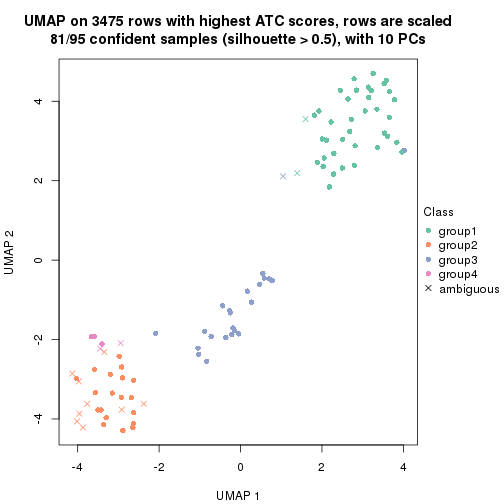
dimension_reduction(res, k = 5, method = "UMAP")
dimension_reduction(res, k = 6, method = "UMAP")
Following heatmap shows how subgroups are split when increasing k:
collect_classes(res)
If matrix rows can be associated to genes, consider to use functional_enrichment(res,
...) to perform function enrichment for the signature genes. See this vignette for more detailed explanations.
The object with results only for a single top-value method and a single partition method can be extracted as:
res = res_list["ATC", "NMF"]
# you can also extract it by
# res = res_list["ATC:NMF"]
A summary of res and all the functions that can be applied to it:
res
#> A 'ConsensusPartition' object with k = 2, 3, 4, 5, 6.
#> On a matrix with 3475 rows and 95 columns.
#> Top rows (348, 696, 1043, 1390, 1738) are extracted by 'ATC' method.
#> Subgroups are detected by 'NMF' method.
#> Performed in total 1250 partitions by row resampling.
#> Best k for subgroups seems to be 4.
#>
#> Following methods can be applied to this 'ConsensusPartition' object:
#> [1] "cola_report" "collect_classes" "collect_plots"
#> [4] "collect_stats" "colnames" "compare_signatures"
#> [7] "consensus_heatmap" "dimension_reduction" "functional_enrichment"
#> [10] "get_anno_col" "get_anno" "get_classes"
#> [13] "get_consensus" "get_matrix" "get_membership"
#> [16] "get_param" "get_signatures" "get_stats"
#> [19] "is_best_k" "is_stable_k" "membership_heatmap"
#> [22] "ncol" "nrow" "plot_ecdf"
#> [25] "rownames" "select_partition_number" "show"
#> [28] "suggest_best_k" "test_to_known_factors"
collect_plots() function collects all the plots made from res for all k (number of partitions)
into one single page to provide an easy and fast comparison between different k.
collect_plots(res)
The plots are:
k and the heatmap of
predicted classes for each k.k.k.k.All the plots in panels can be made by individual functions and they are plotted later in this section.
select_partition_number() produces several plots showing different
statistics for choosing “optimized” k. There are following statistics:
k;k, the area increased is defined as \(A_k - A_{k-1}\).The detailed explanations of these statistics can be found in the cola vignette.
Generally speaking, lower PAC score, higher mean silhouette score or higher
concordance corresponds to better partition. Rand index and Jaccard index
measure how similar the current partition is compared to partition with k-1.
If they are too similar, we won't accept k is better than k-1.
select_partition_number(res)
The numeric values for all these statistics can be obtained by get_stats().
get_stats(res)
#> k 1-PAC mean_silhouette concordance area_increased Rand Jaccard
#> 2 2 0.714 0.908 0.948 0.4051 0.618 0.618
#> 3 3 1.000 0.994 0.997 0.6235 0.692 0.514
#> 4 4 0.911 0.896 0.931 0.0605 0.978 0.937
#> 5 5 0.757 0.765 0.878 0.0576 0.984 0.951
#> 6 6 0.725 0.710 0.814 0.0456 0.992 0.975
suggest_best_k() suggests the best \(k\) based on these statistics. The rules are as follows:
suggest_best_k(res)
#> [1] 4
#> attr(,"optional")
#> [1] 3
There is also optional best \(k\) = 3 that is worth to check.
Following shows the table of the partitions (You need to click the show/hide
code output link to see it). The membership matrix (columns with name p*)
is inferred by
clue::cl_consensus()
function with the SE method. Basically the value in the membership matrix
represents the probability to belong to a certain group. The finall class
label for an item is determined with the group with highest probability it
belongs to.
In get_classes() function, the entropy is calculated from the membership
matrix and the silhouette score is calculated from the consensus matrix.
cbind(get_classes(res, k = 2), get_membership(res, k = 2))
#> class entropy silhouette p1 p2
#> SRR2062258 1 0.0000 0.93484 1.000 0.000
#> SRR2062259 1 0.7745 0.78755 0.772 0.228
#> SRR2062270 2 0.0000 0.97797 0.000 1.000
#> SRR2062342 1 0.0000 0.93484 1.000 0.000
#> SRR2062341 1 0.2236 0.92658 0.964 0.036
#> SRR2062340 1 0.0000 0.93484 1.000 0.000
#> SRR2062339 1 0.0938 0.93323 0.988 0.012
#> SRR2062348 1 0.8909 0.67101 0.692 0.308
#> SRR2062347 1 0.0000 0.93484 1.000 0.000
#> SRR2062351 1 0.6712 0.84118 0.824 0.176
#> SRR2062350 1 0.5629 0.87812 0.868 0.132
#> SRR2062349 1 0.0000 0.93484 1.000 0.000
#> SRR2062346 1 0.4298 0.90490 0.912 0.088
#> SRR2062345 1 0.0000 0.93484 1.000 0.000
#> SRR2062344 2 0.0000 0.97797 0.000 1.000
#> SRR2062343 1 0.0000 0.93484 1.000 0.000
#> SRR2062354 2 0.9909 0.00564 0.444 0.556
#> SRR2062353 1 0.0000 0.93484 1.000 0.000
#> SRR2062352 1 0.7815 0.78279 0.768 0.232
#> SRR2063021 2 0.0000 0.97797 0.000 1.000
#> SRR2062356 1 0.5294 0.88608 0.880 0.120
#> SRR2063025 1 0.0000 0.93484 1.000 0.000
#> SRR2063027 1 0.6343 0.85553 0.840 0.160
#> SRR2063023 2 0.0000 0.97797 0.000 1.000
#> SRR2062355 2 0.0000 0.97797 0.000 1.000
#> SRR2063030 1 0.0672 0.93394 0.992 0.008
#> SRR2064285 1 0.1184 0.93234 0.984 0.016
#> SRR2063034 1 0.4690 0.89812 0.900 0.100
#> SRR2063032 1 0.0000 0.93484 1.000 0.000
#> SRR2063031 2 0.0000 0.97797 0.000 1.000
#> SRR2063029 1 0.0000 0.93484 1.000 0.000
#> SRR2063028 1 0.7745 0.78755 0.772 0.228
#> SRR2064308 2 0.0000 0.97797 0.000 1.000
#> SRR2064310 1 0.0000 0.93484 1.000 0.000
#> SRR2064312 1 0.7745 0.78755 0.772 0.228
#> SRR2064314 1 0.0000 0.93484 1.000 0.000
#> SRR2064315 1 0.5946 0.86898 0.856 0.144
#> SRR2064317 1 0.0000 0.93484 1.000 0.000
#> SRR2064318 1 0.9000 0.65721 0.684 0.316
#> SRR2064319 1 0.1843 0.92908 0.972 0.028
#> SRR2064320 1 0.0000 0.93484 1.000 0.000
#> SRR2064321 2 0.0000 0.97797 0.000 1.000
#> SRR2064322 1 0.0000 0.93484 1.000 0.000
#> SRR2064323 1 0.0000 0.93484 1.000 0.000
#> SRR2064324 1 0.0000 0.93484 1.000 0.000
#> SRR2064325 1 0.5519 0.88026 0.872 0.128
#> SRR2064326 2 0.0000 0.97797 0.000 1.000
#> SRR2064327 2 0.0000 0.97797 0.000 1.000
#> SRR2064329 1 0.7745 0.78755 0.772 0.228
#> SRR2064328 1 0.0000 0.93484 1.000 0.000
#> SRR2064330 1 0.0000 0.93484 1.000 0.000
#> SRR2064331 2 0.0000 0.97797 0.000 1.000
#> SRR2064332 2 0.0000 0.97797 0.000 1.000
#> SRR2064333 1 0.6148 0.86251 0.848 0.152
#> SRR2064334 1 0.0000 0.93484 1.000 0.000
#> SRR2064335 1 0.0000 0.93484 1.000 0.000
#> SRR2064436 1 0.3879 0.91068 0.924 0.076
#> SRR2064457 1 0.7674 0.79206 0.776 0.224
#> SRR2064458 1 0.0000 0.93484 1.000 0.000
#> SRR2064459 2 0.0000 0.97797 0.000 1.000
#> SRR2064460 1 0.3733 0.91231 0.928 0.072
#> SRR2064461 1 0.0000 0.93484 1.000 0.000
#> SRR2064462 1 0.7602 0.79648 0.780 0.220
#> SRR2064534 1 0.0000 0.93484 1.000 0.000
#> SRR2064535 2 0.0000 0.97797 0.000 1.000
#> SRR2064536 2 0.0000 0.97797 0.000 1.000
#> SRR2064537 2 0.0000 0.97797 0.000 1.000
#> SRR2064538 1 0.8763 0.68994 0.704 0.296
#> SRR2064539 2 0.0000 0.97797 0.000 1.000
#> SRR2064540 1 0.4022 0.90883 0.920 0.080
#> SRR2064541 1 0.0000 0.93484 1.000 0.000
#> SRR2064543 1 0.1184 0.93258 0.984 0.016
#> SRR2064542 1 0.1184 0.93255 0.984 0.016
#> SRR2064544 1 0.0000 0.93484 1.000 0.000
#> SRR2064545 1 0.0000 0.93484 1.000 0.000
#> SRR2064546 1 0.1184 0.93248 0.984 0.016
#> SRR2064547 1 0.0938 0.93323 0.988 0.012
#> SRR2064548 1 0.0000 0.93484 1.000 0.000
#> SRR2064550 2 0.0000 0.97797 0.000 1.000
#> SRR2064549 2 0.0000 0.97797 0.000 1.000
#> SRR2064551 1 0.0000 0.93484 1.000 0.000
#> SRR2064552 1 0.5842 0.87250 0.860 0.140
#> SRR2064553 2 0.0000 0.97797 0.000 1.000
#> SRR2064554 2 0.0000 0.97797 0.000 1.000
#> SRR2064555 2 0.0000 0.97797 0.000 1.000
#> SRR2064556 1 0.6623 0.84569 0.828 0.172
#> SRR2064559 1 0.0000 0.93484 1.000 0.000
#> SRR2064558 2 0.0000 0.97797 0.000 1.000
#> SRR2064557 1 0.0000 0.93484 1.000 0.000
#> SRR2064560 1 0.3733 0.91248 0.928 0.072
#> SRR2064561 1 0.0000 0.93484 1.000 0.000
#> SRR2064562 1 0.0000 0.93484 1.000 0.000
#> SRR2064564 1 0.2778 0.92249 0.952 0.048
#> SRR2064563 1 0.0000 0.93484 1.000 0.000
#> SRR2064565 1 0.0000 0.93484 1.000 0.000
cbind(get_classes(res, k = 3), get_membership(res, k = 3))
#> class entropy silhouette p1 p2 p3
#> SRR2062258 2 0.0000 0.992 0.000 1.000 0.000
#> SRR2062259 1 0.0000 1.000 1.000 0.000 0.000
#> SRR2062270 3 0.0000 1.000 0.000 0.000 1.000
#> SRR2062342 2 0.0000 0.992 0.000 1.000 0.000
#> SRR2062341 1 0.0000 1.000 1.000 0.000 0.000
#> SRR2062340 2 0.0000 0.992 0.000 1.000 0.000
#> SRR2062339 1 0.0000 1.000 1.000 0.000 0.000
#> SRR2062348 1 0.0000 1.000 1.000 0.000 0.000
#> SRR2062347 2 0.0000 0.992 0.000 1.000 0.000
#> SRR2062351 1 0.0000 1.000 1.000 0.000 0.000
#> SRR2062350 1 0.0000 1.000 1.000 0.000 0.000
#> SRR2062349 2 0.0000 0.992 0.000 1.000 0.000
#> SRR2062346 1 0.0000 1.000 1.000 0.000 0.000
#> SRR2062345 2 0.0000 0.992 0.000 1.000 0.000
#> SRR2062344 3 0.0000 1.000 0.000 0.000 1.000
#> SRR2062343 2 0.0000 0.992 0.000 1.000 0.000
#> SRR2062354 1 0.0000 1.000 1.000 0.000 0.000
#> SRR2062353 2 0.0000 0.992 0.000 1.000 0.000
#> SRR2062352 1 0.0000 1.000 1.000 0.000 0.000
#> SRR2063021 3 0.0000 1.000 0.000 0.000 1.000
#> SRR2062356 1 0.0000 1.000 1.000 0.000 0.000
#> SRR2063025 2 0.0000 0.992 0.000 1.000 0.000
#> SRR2063027 1 0.0000 1.000 1.000 0.000 0.000
#> SRR2063023 3 0.0000 1.000 0.000 0.000 1.000
#> SRR2062355 3 0.0000 1.000 0.000 0.000 1.000
#> SRR2063030 1 0.0000 1.000 1.000 0.000 0.000
#> SRR2064285 1 0.0000 1.000 1.000 0.000 0.000
#> SRR2063034 1 0.0000 1.000 1.000 0.000 0.000
#> SRR2063032 2 0.4842 0.712 0.224 0.776 0.000
#> SRR2063031 1 0.0237 0.996 0.996 0.000 0.004
#> SRR2063029 2 0.0000 0.992 0.000 1.000 0.000
#> SRR2063028 1 0.0000 1.000 1.000 0.000 0.000
#> SRR2064308 3 0.0000 1.000 0.000 0.000 1.000
#> SRR2064310 2 0.0892 0.971 0.020 0.980 0.000
#> SRR2064312 1 0.0000 1.000 1.000 0.000 0.000
#> SRR2064314 2 0.0000 0.992 0.000 1.000 0.000
#> SRR2064315 1 0.0000 1.000 1.000 0.000 0.000
#> SRR2064317 2 0.0000 0.992 0.000 1.000 0.000
#> SRR2064318 1 0.0000 1.000 1.000 0.000 0.000
#> SRR2064319 1 0.0000 1.000 1.000 0.000 0.000
#> SRR2064320 2 0.0000 0.992 0.000 1.000 0.000
#> SRR2064321 3 0.0000 1.000 0.000 0.000 1.000
#> SRR2064322 2 0.0000 0.992 0.000 1.000 0.000
#> SRR2064323 2 0.0000 0.992 0.000 1.000 0.000
#> SRR2064324 2 0.0000 0.992 0.000 1.000 0.000
#> SRR2064325 1 0.0000 1.000 1.000 0.000 0.000
#> SRR2064326 3 0.0000 1.000 0.000 0.000 1.000
#> SRR2064327 3 0.0000 1.000 0.000 0.000 1.000
#> SRR2064329 1 0.0000 1.000 1.000 0.000 0.000
#> SRR2064328 2 0.0000 0.992 0.000 1.000 0.000
#> SRR2064330 2 0.0000 0.992 0.000 1.000 0.000
#> SRR2064331 3 0.0000 1.000 0.000 0.000 1.000
#> SRR2064332 3 0.0000 1.000 0.000 0.000 1.000
#> SRR2064333 1 0.0000 1.000 1.000 0.000 0.000
#> SRR2064334 2 0.0000 0.992 0.000 1.000 0.000
#> SRR2064335 2 0.0000 0.992 0.000 1.000 0.000
#> SRR2064436 1 0.0000 1.000 1.000 0.000 0.000
#> SRR2064457 1 0.0000 1.000 1.000 0.000 0.000
#> SRR2064458 2 0.0000 0.992 0.000 1.000 0.000
#> SRR2064459 3 0.0000 1.000 0.000 0.000 1.000
#> SRR2064460 1 0.0000 1.000 1.000 0.000 0.000
#> SRR2064461 2 0.0000 0.992 0.000 1.000 0.000
#> SRR2064462 1 0.0000 1.000 1.000 0.000 0.000
#> SRR2064534 2 0.0000 0.992 0.000 1.000 0.000
#> SRR2064535 3 0.0000 1.000 0.000 0.000 1.000
#> SRR2064536 3 0.0000 1.000 0.000 0.000 1.000
#> SRR2064537 3 0.0000 1.000 0.000 0.000 1.000
#> SRR2064538 1 0.0000 1.000 1.000 0.000 0.000
#> SRR2064539 3 0.0000 1.000 0.000 0.000 1.000
#> SRR2064540 1 0.0000 1.000 1.000 0.000 0.000
#> SRR2064541 2 0.0000 0.992 0.000 1.000 0.000
#> SRR2064543 1 0.0000 1.000 1.000 0.000 0.000
#> SRR2064542 1 0.0000 1.000 1.000 0.000 0.000
#> SRR2064544 2 0.0000 0.992 0.000 1.000 0.000
#> SRR2064545 2 0.0000 0.992 0.000 1.000 0.000
#> SRR2064546 1 0.0000 1.000 1.000 0.000 0.000
#> SRR2064547 1 0.0000 1.000 1.000 0.000 0.000
#> SRR2064548 2 0.0000 0.992 0.000 1.000 0.000
#> SRR2064550 3 0.0000 1.000 0.000 0.000 1.000
#> SRR2064549 3 0.0000 1.000 0.000 0.000 1.000
#> SRR2064551 2 0.0000 0.992 0.000 1.000 0.000
#> SRR2064552 1 0.0000 1.000 1.000 0.000 0.000
#> SRR2064553 3 0.0000 1.000 0.000 0.000 1.000
#> SRR2064554 3 0.0000 1.000 0.000 0.000 1.000
#> SRR2064555 3 0.0000 1.000 0.000 0.000 1.000
#> SRR2064556 1 0.0000 1.000 1.000 0.000 0.000
#> SRR2064559 2 0.0000 0.992 0.000 1.000 0.000
#> SRR2064558 3 0.0000 1.000 0.000 0.000 1.000
#> SRR2064557 2 0.0000 0.992 0.000 1.000 0.000
#> SRR2064560 1 0.0000 1.000 1.000 0.000 0.000
#> SRR2064561 2 0.0000 0.992 0.000 1.000 0.000
#> SRR2064562 1 0.0000 1.000 1.000 0.000 0.000
#> SRR2064564 1 0.0000 1.000 1.000 0.000 0.000
#> SRR2064563 2 0.0000 0.992 0.000 1.000 0.000
#> SRR2064565 2 0.0000 0.992 0.000 1.000 0.000
cbind(get_classes(res, k = 4), get_membership(res, k = 4))
#> class entropy silhouette p1 p2 p3 p4
#> SRR2062258 4 0.4776 0.730 0.000 0.376 0.000 0.624
#> SRR2062259 1 0.1022 0.964 0.968 0.000 0.000 0.032
#> SRR2062270 3 0.0188 0.991 0.000 0.000 0.996 0.004
#> SRR2062342 2 0.1389 0.883 0.000 0.952 0.000 0.048
#> SRR2062341 1 0.0592 0.963 0.984 0.000 0.000 0.016
#> SRR2062340 2 0.2530 0.846 0.000 0.888 0.000 0.112
#> SRR2062339 1 0.1022 0.964 0.968 0.000 0.000 0.032
#> SRR2062348 1 0.0817 0.962 0.976 0.000 0.000 0.024
#> SRR2062347 2 0.0592 0.885 0.000 0.984 0.000 0.016
#> SRR2062351 1 0.2281 0.944 0.904 0.000 0.000 0.096
#> SRR2062350 1 0.2149 0.948 0.912 0.000 0.000 0.088
#> SRR2062349 2 0.0707 0.888 0.000 0.980 0.000 0.020
#> SRR2062346 1 0.1940 0.955 0.924 0.000 0.000 0.076
#> SRR2062345 2 0.1716 0.878 0.000 0.936 0.000 0.064
#> SRR2062344 3 0.0336 0.990 0.000 0.000 0.992 0.008
#> SRR2062343 2 0.1302 0.887 0.000 0.956 0.000 0.044
#> SRR2062354 1 0.0707 0.963 0.980 0.000 0.000 0.020
#> SRR2062353 2 0.1940 0.859 0.000 0.924 0.000 0.076
#> SRR2062352 1 0.0469 0.962 0.988 0.000 0.000 0.012
#> SRR2063021 3 0.0336 0.990 0.000 0.000 0.992 0.008
#> SRR2062356 1 0.1211 0.963 0.960 0.000 0.000 0.040
#> SRR2063025 2 0.2281 0.849 0.000 0.904 0.000 0.096
#> SRR2063027 1 0.1389 0.963 0.952 0.000 0.000 0.048
#> SRR2063023 3 0.1637 0.955 0.000 0.000 0.940 0.060
#> SRR2062355 3 0.0188 0.991 0.000 0.000 0.996 0.004
#> SRR2063030 1 0.1211 0.963 0.960 0.000 0.000 0.040
#> SRR2064285 1 0.1474 0.962 0.948 0.000 0.000 0.052
#> SRR2063034 1 0.1211 0.963 0.960 0.000 0.000 0.040
#> SRR2063032 4 0.7442 0.602 0.184 0.340 0.000 0.476
#> SRR2063031 1 0.1211 0.963 0.960 0.000 0.000 0.040
#> SRR2063029 2 0.1389 0.885 0.000 0.952 0.000 0.048
#> SRR2063028 1 0.1022 0.963 0.968 0.000 0.000 0.032
#> SRR2064308 3 0.0188 0.991 0.000 0.000 0.996 0.004
#> SRR2064310 2 0.5526 -0.201 0.020 0.564 0.000 0.416
#> SRR2064312 1 0.0707 0.962 0.980 0.000 0.000 0.020
#> SRR2064314 2 0.1716 0.887 0.000 0.936 0.000 0.064
#> SRR2064315 1 0.1716 0.957 0.936 0.000 0.000 0.064
#> SRR2064317 2 0.1118 0.886 0.000 0.964 0.000 0.036
#> SRR2064318 1 0.0707 0.963 0.980 0.000 0.000 0.020
#> SRR2064319 1 0.2281 0.949 0.904 0.000 0.000 0.096
#> SRR2064320 2 0.0921 0.887 0.000 0.972 0.000 0.028
#> SRR2064321 3 0.0188 0.991 0.000 0.000 0.996 0.004
#> SRR2064322 2 0.1474 0.886 0.000 0.948 0.000 0.052
#> SRR2064323 4 0.4830 0.715 0.000 0.392 0.000 0.608
#> SRR2064324 2 0.1716 0.880 0.000 0.936 0.000 0.064
#> SRR2064325 1 0.1557 0.963 0.944 0.000 0.000 0.056
#> SRR2064326 3 0.0188 0.991 0.000 0.000 0.996 0.004
#> SRR2064327 3 0.0707 0.984 0.000 0.000 0.980 0.020
#> SRR2064329 1 0.1118 0.963 0.964 0.000 0.000 0.036
#> SRR2064328 2 0.1389 0.884 0.000 0.952 0.000 0.048
#> SRR2064330 2 0.1716 0.875 0.000 0.936 0.000 0.064
#> SRR2064331 3 0.0921 0.981 0.000 0.000 0.972 0.028
#> SRR2064332 3 0.0188 0.991 0.000 0.000 0.996 0.004
#> SRR2064333 1 0.1389 0.963 0.952 0.000 0.000 0.048
#> SRR2064334 2 0.0707 0.886 0.000 0.980 0.000 0.020
#> SRR2064335 2 0.1389 0.882 0.000 0.952 0.000 0.048
#> SRR2064436 1 0.1211 0.958 0.960 0.000 0.000 0.040
#> SRR2064457 1 0.1302 0.964 0.956 0.000 0.000 0.044
#> SRR2064458 2 0.2589 0.824 0.000 0.884 0.000 0.116
#> SRR2064459 3 0.0188 0.991 0.000 0.000 0.996 0.004
#> SRR2064460 1 0.0817 0.963 0.976 0.000 0.000 0.024
#> SRR2064461 2 0.1118 0.881 0.000 0.964 0.000 0.036
#> SRR2064462 1 0.3074 0.899 0.848 0.000 0.000 0.152
#> SRR2064534 2 0.1637 0.881 0.000 0.940 0.000 0.060
#> SRR2064535 3 0.1118 0.976 0.000 0.000 0.964 0.036
#> SRR2064536 3 0.0188 0.991 0.000 0.000 0.996 0.004
#> SRR2064537 3 0.0000 0.991 0.000 0.000 1.000 0.000
#> SRR2064538 1 0.4134 0.787 0.740 0.000 0.000 0.260
#> SRR2064539 3 0.0188 0.991 0.000 0.000 0.996 0.004
#> SRR2064540 1 0.1389 0.959 0.952 0.000 0.000 0.048
#> SRR2064541 2 0.1867 0.862 0.000 0.928 0.000 0.072
#> SRR2064543 1 0.0921 0.963 0.972 0.000 0.000 0.028
#> SRR2064542 1 0.3024 0.891 0.852 0.000 0.000 0.148
#> SRR2064544 2 0.3266 0.705 0.000 0.832 0.000 0.168
#> SRR2064545 2 0.3649 0.668 0.000 0.796 0.000 0.204
#> SRR2064546 1 0.3024 0.895 0.852 0.000 0.000 0.148
#> SRR2064547 1 0.1022 0.964 0.968 0.000 0.000 0.032
#> SRR2064548 2 0.1792 0.878 0.000 0.932 0.000 0.068
#> SRR2064550 3 0.0000 0.991 0.000 0.000 1.000 0.000
#> SRR2064549 3 0.0336 0.989 0.000 0.000 0.992 0.008
#> SRR2064551 2 0.0921 0.886 0.000 0.972 0.000 0.028
#> SRR2064552 1 0.1118 0.964 0.964 0.000 0.000 0.036
#> SRR2064553 3 0.0000 0.991 0.000 0.000 1.000 0.000
#> SRR2064554 3 0.0336 0.990 0.000 0.000 0.992 0.008
#> SRR2064555 3 0.0000 0.991 0.000 0.000 1.000 0.000
#> SRR2064556 1 0.0592 0.961 0.984 0.000 0.000 0.016
#> SRR2064559 2 0.1022 0.887 0.000 0.968 0.000 0.032
#> SRR2064558 3 0.0921 0.981 0.000 0.000 0.972 0.028
#> SRR2064557 2 0.1557 0.883 0.000 0.944 0.000 0.056
#> SRR2064560 1 0.1389 0.963 0.952 0.000 0.000 0.048
#> SRR2064561 2 0.5856 -0.506 0.032 0.504 0.000 0.464
#> SRR2064562 1 0.2149 0.934 0.912 0.000 0.000 0.088
#> SRR2064564 1 0.1474 0.958 0.948 0.000 0.000 0.052
#> SRR2064563 2 0.0817 0.888 0.000 0.976 0.000 0.024
#> SRR2064565 2 0.1792 0.872 0.000 0.932 0.000 0.068
cbind(get_classes(res, k = 5), get_membership(res, k = 5))
#> class entropy silhouette p1 p2 p3 p4 p5
#> SRR2062258 5 0.2843 0.7440 0.000 0.076 0.000 0.048 0.876
#> SRR2062259 1 0.1270 0.7856 0.948 0.000 0.000 0.052 0.000
#> SRR2062270 3 0.0000 0.9849 0.000 0.000 1.000 0.000 0.000
#> SRR2062342 2 0.2300 0.8723 0.000 0.908 0.000 0.052 0.040
#> SRR2062341 1 0.1732 0.7860 0.920 0.000 0.000 0.080 0.000
#> SRR2062340 2 0.3159 0.8541 0.000 0.856 0.000 0.056 0.088
#> SRR2062339 1 0.2068 0.7822 0.904 0.000 0.000 0.092 0.004
#> SRR2062348 1 0.0794 0.7843 0.972 0.000 0.000 0.028 0.000
#> SRR2062347 2 0.1668 0.8789 0.000 0.940 0.000 0.032 0.028
#> SRR2062351 1 0.3934 0.4526 0.716 0.000 0.000 0.276 0.008
#> SRR2062350 1 0.3399 0.6486 0.812 0.000 0.000 0.168 0.020
#> SRR2062349 2 0.0865 0.8780 0.000 0.972 0.000 0.024 0.004
#> SRR2062346 1 0.3662 0.5263 0.744 0.000 0.000 0.252 0.004
#> SRR2062345 2 0.2209 0.8755 0.000 0.912 0.000 0.056 0.032
#> SRR2062344 3 0.0000 0.9849 0.000 0.000 1.000 0.000 0.000
#> SRR2062343 2 0.2153 0.8786 0.000 0.916 0.000 0.044 0.040
#> SRR2062354 1 0.1851 0.7870 0.912 0.000 0.000 0.088 0.000
#> SRR2062353 2 0.3146 0.8487 0.000 0.856 0.000 0.052 0.092
#> SRR2062352 1 0.1197 0.7853 0.952 0.000 0.000 0.048 0.000
#> SRR2063021 3 0.0510 0.9822 0.000 0.000 0.984 0.016 0.000
#> SRR2062356 1 0.1892 0.7893 0.916 0.000 0.000 0.080 0.004
#> SRR2063025 2 0.3390 0.8433 0.000 0.840 0.000 0.060 0.100
#> SRR2063027 1 0.2629 0.7548 0.860 0.000 0.000 0.136 0.004
#> SRR2063023 3 0.3039 0.8411 0.000 0.000 0.836 0.152 0.012
#> SRR2062355 3 0.0404 0.9833 0.000 0.000 0.988 0.012 0.000
#> SRR2063030 1 0.2130 0.7770 0.908 0.000 0.000 0.080 0.012
#> SRR2064285 1 0.3381 0.6953 0.808 0.000 0.000 0.176 0.016
#> SRR2063034 1 0.2304 0.7725 0.892 0.000 0.000 0.100 0.008
#> SRR2063032 5 0.6549 0.6593 0.108 0.136 0.000 0.120 0.636
#> SRR2063031 1 0.1270 0.7920 0.948 0.000 0.000 0.052 0.000
#> SRR2063029 2 0.2376 0.8786 0.000 0.904 0.000 0.052 0.044
#> SRR2063028 1 0.0880 0.7837 0.968 0.000 0.000 0.032 0.000
#> SRR2064308 3 0.0000 0.9849 0.000 0.000 1.000 0.000 0.000
#> SRR2064310 2 0.6821 -0.4294 0.000 0.352 0.000 0.320 0.328
#> SRR2064312 1 0.1341 0.7844 0.944 0.000 0.000 0.056 0.000
#> SRR2064314 2 0.2491 0.8740 0.000 0.896 0.000 0.036 0.068
#> SRR2064315 1 0.2470 0.7570 0.884 0.000 0.000 0.104 0.012
#> SRR2064317 2 0.1310 0.8809 0.000 0.956 0.000 0.020 0.024
#> SRR2064318 1 0.1270 0.7893 0.948 0.000 0.000 0.052 0.000
#> SRR2064319 1 0.4134 0.5453 0.760 0.000 0.000 0.196 0.044
#> SRR2064320 2 0.1648 0.8802 0.000 0.940 0.000 0.040 0.020
#> SRR2064321 3 0.0162 0.9848 0.000 0.000 0.996 0.004 0.000
#> SRR2064322 2 0.1725 0.8788 0.000 0.936 0.000 0.044 0.020
#> SRR2064323 5 0.3536 0.7312 0.000 0.084 0.000 0.084 0.832
#> SRR2064324 2 0.3180 0.8576 0.000 0.856 0.000 0.068 0.076
#> SRR2064325 1 0.1608 0.7866 0.928 0.000 0.000 0.072 0.000
#> SRR2064326 3 0.0162 0.9845 0.000 0.000 0.996 0.000 0.004
#> SRR2064327 3 0.0898 0.9746 0.000 0.000 0.972 0.020 0.008
#> SRR2064329 1 0.1704 0.7872 0.928 0.000 0.000 0.068 0.004
#> SRR2064328 2 0.1800 0.8760 0.000 0.932 0.000 0.048 0.020
#> SRR2064330 2 0.3303 0.8436 0.000 0.848 0.000 0.076 0.076
#> SRR2064331 3 0.0671 0.9779 0.000 0.000 0.980 0.016 0.004
#> SRR2064332 3 0.0162 0.9848 0.000 0.000 0.996 0.004 0.000
#> SRR2064333 1 0.3596 0.6098 0.784 0.000 0.000 0.200 0.016
#> SRR2064334 2 0.1281 0.8765 0.000 0.956 0.000 0.032 0.012
#> SRR2064335 2 0.1893 0.8772 0.000 0.928 0.000 0.048 0.024
#> SRR2064436 1 0.4072 0.5403 0.792 0.000 0.000 0.108 0.100
#> SRR2064457 1 0.2020 0.7728 0.900 0.000 0.000 0.100 0.000
#> SRR2064458 2 0.3868 0.7929 0.000 0.800 0.000 0.140 0.060
#> SRR2064459 3 0.0671 0.9811 0.000 0.000 0.980 0.016 0.004
#> SRR2064460 1 0.1830 0.7866 0.924 0.000 0.000 0.068 0.008
#> SRR2064461 2 0.1981 0.8780 0.000 0.920 0.000 0.064 0.016
#> SRR2064462 1 0.4639 -0.1771 0.632 0.000 0.000 0.344 0.024
#> SRR2064534 2 0.2922 0.8718 0.000 0.872 0.000 0.072 0.056
#> SRR2064535 3 0.0992 0.9728 0.000 0.000 0.968 0.024 0.008
#> SRR2064536 3 0.0324 0.9845 0.000 0.000 0.992 0.004 0.004
#> SRR2064537 3 0.0290 0.9842 0.000 0.000 0.992 0.008 0.000
#> SRR2064538 4 0.5773 0.0000 0.436 0.000 0.000 0.476 0.088
#> SRR2064539 3 0.0000 0.9849 0.000 0.000 1.000 0.000 0.000
#> SRR2064540 1 0.2616 0.7259 0.888 0.000 0.000 0.076 0.036
#> SRR2064541 2 0.2853 0.8543 0.000 0.876 0.000 0.072 0.052
#> SRR2064543 1 0.1908 0.7757 0.908 0.000 0.000 0.092 0.000
#> SRR2064542 1 0.5224 -0.4788 0.532 0.004 0.000 0.428 0.036
#> SRR2064544 2 0.5541 0.5159 0.000 0.636 0.000 0.236 0.128
#> SRR2064545 2 0.5599 0.4912 0.000 0.620 0.000 0.120 0.260
#> SRR2064546 1 0.5200 0.1049 0.688 0.000 0.000 0.156 0.156
#> SRR2064547 1 0.2761 0.7671 0.872 0.000 0.000 0.104 0.024
#> SRR2064548 2 0.3644 0.8369 0.000 0.824 0.000 0.096 0.080
#> SRR2064550 3 0.0162 0.9849 0.000 0.000 0.996 0.004 0.000
#> SRR2064549 3 0.0566 0.9819 0.000 0.000 0.984 0.012 0.004
#> SRR2064551 2 0.1818 0.8826 0.000 0.932 0.000 0.044 0.024
#> SRR2064552 1 0.1357 0.7870 0.948 0.000 0.000 0.048 0.004
#> SRR2064553 3 0.0000 0.9849 0.000 0.000 1.000 0.000 0.000
#> SRR2064554 3 0.0798 0.9796 0.000 0.000 0.976 0.016 0.008
#> SRR2064555 3 0.0000 0.9849 0.000 0.000 1.000 0.000 0.000
#> SRR2064556 1 0.0963 0.7819 0.964 0.000 0.000 0.036 0.000
#> SRR2064559 2 0.1310 0.8808 0.000 0.956 0.000 0.020 0.024
#> SRR2064558 3 0.0451 0.9817 0.000 0.000 0.988 0.008 0.004
#> SRR2064557 2 0.2291 0.8743 0.000 0.908 0.000 0.036 0.056
#> SRR2064560 1 0.2813 0.7105 0.832 0.000 0.000 0.168 0.000
#> SRR2064561 5 0.6927 0.5715 0.008 0.236 0.000 0.372 0.384
#> SRR2064562 1 0.4985 0.0592 0.680 0.000 0.000 0.244 0.076
#> SRR2064564 1 0.1792 0.7737 0.916 0.000 0.000 0.084 0.000
#> SRR2064563 2 0.1211 0.8786 0.000 0.960 0.000 0.024 0.016
#> SRR2064565 2 0.3980 0.8154 0.000 0.796 0.000 0.128 0.076
cbind(get_classes(res, k = 6), get_membership(res, k = 6))
#> class entropy silhouette p1 p2 p3 p4 p5 p6
#> SRR2062258 5 0.3153 0.6111 0.000 0.048 0.000 0.032 0.856 0.064
#> SRR2062259 1 0.1714 0.7332 0.908 0.000 0.000 0.092 0.000 0.000
#> SRR2062270 3 0.0146 0.9609 0.000 0.000 0.996 0.000 0.000 0.004
#> SRR2062342 2 0.2776 0.8053 0.000 0.860 0.000 0.004 0.032 0.104
#> SRR2062341 1 0.2308 0.7370 0.880 0.000 0.000 0.108 0.008 0.004
#> SRR2062340 2 0.3174 0.8071 0.000 0.836 0.000 0.004 0.104 0.056
#> SRR2062339 1 0.2896 0.7271 0.824 0.000 0.000 0.160 0.000 0.016
#> SRR2062348 1 0.1267 0.7352 0.940 0.000 0.000 0.060 0.000 0.000
#> SRR2062347 2 0.2019 0.8229 0.000 0.900 0.000 0.000 0.012 0.088
#> SRR2062351 1 0.5111 0.3721 0.596 0.000 0.000 0.324 0.016 0.064
#> SRR2062350 1 0.4414 0.5568 0.672 0.000 0.000 0.284 0.028 0.016
#> SRR2062349 2 0.1858 0.8242 0.000 0.912 0.000 0.000 0.012 0.076
#> SRR2062346 1 0.4213 0.4910 0.636 0.000 0.000 0.340 0.004 0.020
#> SRR2062345 2 0.2058 0.8213 0.000 0.908 0.000 0.012 0.008 0.072
#> SRR2062344 3 0.1452 0.9493 0.000 0.000 0.948 0.020 0.012 0.020
#> SRR2062343 2 0.2002 0.8318 0.000 0.916 0.000 0.008 0.020 0.056
#> SRR2062354 1 0.2593 0.7304 0.844 0.000 0.000 0.148 0.000 0.008
#> SRR2062353 2 0.4381 0.7127 0.000 0.720 0.000 0.012 0.060 0.208
#> SRR2062352 1 0.1531 0.7343 0.928 0.000 0.000 0.068 0.000 0.004
#> SRR2063021 3 0.0862 0.9575 0.000 0.000 0.972 0.008 0.004 0.016
#> SRR2062356 1 0.2890 0.7418 0.856 0.000 0.000 0.108 0.020 0.016
#> SRR2063025 2 0.4266 0.7319 0.000 0.756 0.000 0.012 0.116 0.116
#> SRR2063027 1 0.3298 0.6864 0.756 0.000 0.000 0.236 0.000 0.008
#> SRR2063023 3 0.4618 0.6688 0.004 0.000 0.712 0.192 0.008 0.084
#> SRR2062355 3 0.0458 0.9602 0.000 0.000 0.984 0.000 0.000 0.016
#> SRR2063030 1 0.3516 0.7085 0.792 0.000 0.000 0.172 0.012 0.024
#> SRR2064285 1 0.4452 0.6100 0.664 0.000 0.000 0.288 0.008 0.040
#> SRR2063034 1 0.2773 0.7213 0.836 0.000 0.000 0.152 0.008 0.004
#> SRR2063032 5 0.7233 0.2947 0.036 0.076 0.000 0.144 0.484 0.260
#> SRR2063031 1 0.1644 0.7407 0.920 0.000 0.000 0.076 0.000 0.004
#> SRR2063029 2 0.2340 0.8299 0.000 0.896 0.000 0.004 0.056 0.044
#> SRR2063028 1 0.2100 0.7383 0.884 0.000 0.000 0.112 0.000 0.004
#> SRR2064308 3 0.0405 0.9618 0.000 0.000 0.988 0.000 0.004 0.008
#> SRR2064310 6 0.7668 0.4684 0.000 0.224 0.000 0.228 0.228 0.320
#> SRR2064312 1 0.2062 0.7345 0.900 0.000 0.000 0.088 0.004 0.008
#> SRR2064314 2 0.3182 0.8141 0.000 0.832 0.000 0.008 0.036 0.124
#> SRR2064315 1 0.4278 0.6454 0.716 0.000 0.000 0.232 0.020 0.032
#> SRR2064317 2 0.1075 0.8290 0.000 0.952 0.000 0.000 0.000 0.048
#> SRR2064318 1 0.1615 0.7417 0.928 0.000 0.000 0.064 0.004 0.004
#> SRR2064319 1 0.5363 0.4296 0.608 0.000 0.000 0.292 0.056 0.044
#> SRR2064320 2 0.2101 0.8278 0.000 0.892 0.000 0.004 0.004 0.100
#> SRR2064321 3 0.0508 0.9620 0.000 0.000 0.984 0.000 0.004 0.012
#> SRR2064322 2 0.1605 0.8328 0.000 0.936 0.000 0.004 0.016 0.044
#> SRR2064323 5 0.2649 0.5777 0.000 0.052 0.000 0.048 0.884 0.016
#> SRR2064324 2 0.4137 0.7411 0.000 0.756 0.000 0.020 0.048 0.176
#> SRR2064325 1 0.3197 0.7217 0.804 0.000 0.000 0.176 0.012 0.008
#> SRR2064326 3 0.0260 0.9607 0.000 0.000 0.992 0.000 0.000 0.008
#> SRR2064327 3 0.2137 0.9313 0.000 0.000 0.912 0.028 0.012 0.048
#> SRR2064329 1 0.3020 0.7317 0.824 0.000 0.000 0.156 0.008 0.012
#> SRR2064328 2 0.2431 0.8138 0.000 0.860 0.000 0.000 0.008 0.132
#> SRR2064330 2 0.4289 0.7429 0.000 0.756 0.000 0.032 0.052 0.160
#> SRR2064331 3 0.2007 0.9366 0.000 0.000 0.920 0.036 0.012 0.032
#> SRR2064332 3 0.0363 0.9605 0.000 0.000 0.988 0.000 0.000 0.012
#> SRR2064333 1 0.4251 0.6323 0.700 0.000 0.000 0.256 0.012 0.032
#> SRR2064334 2 0.2667 0.8094 0.000 0.852 0.000 0.000 0.020 0.128
#> SRR2064335 2 0.2544 0.8185 0.000 0.864 0.000 0.012 0.004 0.120
#> SRR2064436 1 0.5422 0.4117 0.652 0.000 0.000 0.148 0.168 0.032
#> SRR2064457 1 0.2968 0.7266 0.816 0.000 0.000 0.168 0.000 0.016
#> SRR2064458 2 0.4915 0.5953 0.000 0.652 0.000 0.032 0.044 0.272
#> SRR2064459 3 0.0777 0.9576 0.000 0.000 0.972 0.000 0.004 0.024
#> SRR2064460 1 0.2748 0.7338 0.856 0.000 0.000 0.120 0.008 0.016
#> SRR2064461 2 0.2573 0.8243 0.000 0.864 0.000 0.024 0.000 0.112
#> SRR2064462 1 0.5534 -0.2788 0.464 0.000 0.000 0.440 0.020 0.076
#> SRR2064534 2 0.3165 0.8102 0.000 0.836 0.000 0.008 0.040 0.116
#> SRR2064535 3 0.2685 0.9098 0.000 0.000 0.880 0.068 0.016 0.036
#> SRR2064536 3 0.0405 0.9613 0.000 0.000 0.988 0.000 0.008 0.004
#> SRR2064537 3 0.0551 0.9619 0.000 0.000 0.984 0.004 0.004 0.008
#> SRR2064538 4 0.6158 0.0000 0.236 0.004 0.000 0.572 0.048 0.140
#> SRR2064539 3 0.0291 0.9613 0.000 0.000 0.992 0.000 0.004 0.004
#> SRR2064540 1 0.3959 0.6656 0.784 0.000 0.000 0.140 0.052 0.024
#> SRR2064541 2 0.3510 0.7624 0.000 0.772 0.000 0.008 0.016 0.204
#> SRR2064543 1 0.2678 0.7394 0.860 0.000 0.000 0.116 0.004 0.020
#> SRR2064542 1 0.6107 -0.0588 0.464 0.004 0.000 0.384 0.024 0.124
#> SRR2064544 2 0.6253 -0.0820 0.000 0.452 0.000 0.108 0.052 0.388
#> SRR2064545 2 0.6073 0.3048 0.000 0.544 0.000 0.032 0.260 0.164
#> SRR2064546 1 0.6200 0.2782 0.584 0.000 0.000 0.208 0.112 0.096
#> SRR2064547 1 0.3436 0.7264 0.816 0.000 0.000 0.136 0.020 0.028
#> SRR2064548 2 0.4002 0.7537 0.000 0.768 0.000 0.008 0.072 0.152
#> SRR2064550 3 0.0665 0.9602 0.000 0.000 0.980 0.008 0.008 0.004
#> SRR2064549 3 0.1930 0.9361 0.000 0.000 0.924 0.028 0.036 0.012
#> SRR2064551 2 0.1524 0.8291 0.000 0.932 0.000 0.000 0.008 0.060
#> SRR2064552 1 0.2830 0.7316 0.836 0.000 0.000 0.144 0.000 0.020
#> SRR2064553 3 0.0260 0.9614 0.000 0.000 0.992 0.000 0.000 0.008
#> SRR2064554 3 0.0767 0.9592 0.000 0.000 0.976 0.008 0.004 0.012
#> SRR2064555 3 0.0881 0.9583 0.000 0.000 0.972 0.012 0.008 0.008
#> SRR2064556 1 0.2400 0.7275 0.872 0.000 0.000 0.116 0.004 0.008
#> SRR2064559 2 0.1268 0.8310 0.000 0.952 0.000 0.004 0.008 0.036
#> SRR2064558 3 0.1930 0.9385 0.000 0.000 0.924 0.036 0.012 0.028
#> SRR2064557 2 0.2138 0.8254 0.000 0.908 0.000 0.004 0.036 0.052
#> SRR2064560 1 0.4135 0.6116 0.680 0.000 0.000 0.292 0.012 0.016
#> SRR2064561 6 0.7334 0.3803 0.004 0.112 0.000 0.240 0.232 0.412
#> SRR2064562 1 0.6687 -0.1215 0.496 0.000 0.000 0.272 0.096 0.136
#> SRR2064564 1 0.4173 0.6441 0.732 0.000 0.000 0.216 0.020 0.032
#> SRR2064563 2 0.2420 0.8305 0.000 0.892 0.000 0.008 0.032 0.068
#> SRR2064565 2 0.4485 0.7614 0.000 0.756 0.000 0.044 0.076 0.124
Heatmaps for the consensus matrix. It visualizes the probability of two samples to be in a same group.
consensus_heatmap(res, k = 2)
consensus_heatmap(res, k = 3)
consensus_heatmap(res, k = 4)
consensus_heatmap(res, k = 5)
consensus_heatmap(res, k = 6)
Heatmaps for the membership of samples in all partitions to see how consistent they are:
membership_heatmap(res, k = 2)
membership_heatmap(res, k = 3)
membership_heatmap(res, k = 4)
membership_heatmap(res, k = 5)
membership_heatmap(res, k = 6)
As soon as we have had the classes for columns, we can look for signatures which are significantly different between classes which can be candidate marks for certain classes. Following are the heatmaps for signatures.
Signature heatmaps where rows are scaled:
get_signatures(res, k = 2)
get_signatures(res, k = 3)
get_signatures(res, k = 4)
get_signatures(res, k = 5)
get_signatures(res, k = 6)
Signature heatmaps where rows are not scaled:
get_signatures(res, k = 2, scale_rows = FALSE)
get_signatures(res, k = 3, scale_rows = FALSE)
get_signatures(res, k = 4, scale_rows = FALSE)
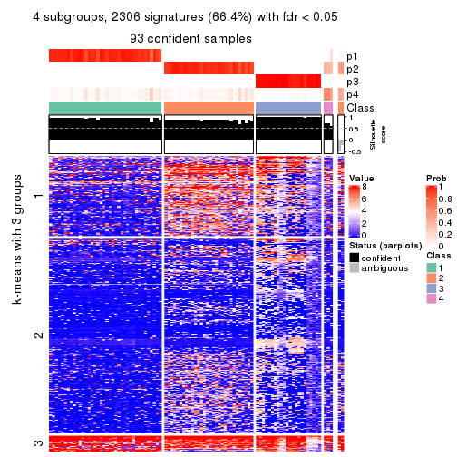
get_signatures(res, k = 5, scale_rows = FALSE)
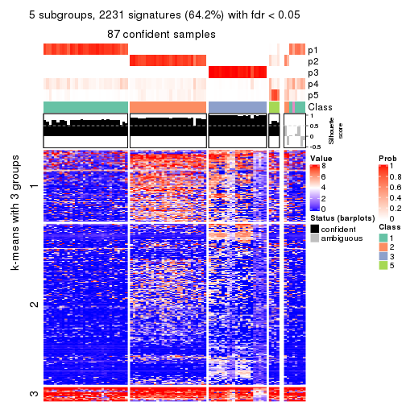
get_signatures(res, k = 6, scale_rows = FALSE)
Compare the overlap of signatures from different k:
compare_signatures(res)
get_signature() returns a data frame invisibly. TO get the list of signatures, the function
call should be assigned to a variable explicitly. In following code, if plot argument is set
to FALSE, no heatmap is plotted while only the differential analysis is performed.
# code only for demonstration
tb = get_signature(res, k = ..., plot = FALSE)
An example of the output of tb is:
#> which_row fdr mean_1 mean_2 scaled_mean_1 scaled_mean_2 km
#> 1 38 0.042760348 8.373488 9.131774 -0.5533452 0.5164555 1
#> 2 40 0.018707592 7.106213 8.469186 -0.6173731 0.5762149 1
#> 3 55 0.019134737 10.221463 11.207825 -0.6159697 0.5749050 1
#> 4 59 0.006059896 5.921854 7.869574 -0.6899429 0.6439467 1
#> 5 60 0.018055526 8.928898 10.211722 -0.6204761 0.5791110 1
#> 6 98 0.009384629 15.714769 14.887706 0.6635654 -0.6193277 2
...
The columns in tb are:
which_row: row indices corresponding to the input matrix.fdr: FDR for the differential test. mean_x: The mean value in group x.scaled_mean_x: The mean value in group x after rows are scaled.km: Row groups if k-means clustering is applied to rows.UMAP plot which shows how samples are separated.
dimension_reduction(res, k = 2, method = "UMAP")
dimension_reduction(res, k = 3, method = "UMAP")

dimension_reduction(res, k = 4, method = "UMAP")
dimension_reduction(res, k = 5, method = "UMAP")
dimension_reduction(res, k = 6, method = "UMAP")
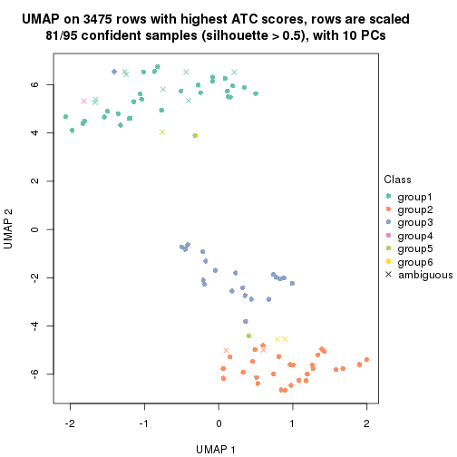
Following heatmap shows how subgroups are split when increasing k:
collect_classes(res)
If matrix rows can be associated to genes, consider to use functional_enrichment(res,
...) to perform function enrichment for the signature genes. See this vignette for more detailed explanations.
sessionInfo()
#> R version 3.6.0 (2019-04-26)
#> Platform: x86_64-pc-linux-gnu (64-bit)
#> Running under: CentOS Linux 7 (Core)
#>
#> Matrix products: default
#> BLAS: /usr/lib64/libblas.so.3.4.2
#> LAPACK: /usr/lib64/liblapack.so.3.4.2
#>
#> locale:
#> [1] LC_CTYPE=en_GB.UTF-8 LC_NUMERIC=C LC_TIME=en_GB.UTF-8
#> [4] LC_COLLATE=en_GB.UTF-8 LC_MONETARY=en_GB.UTF-8 LC_MESSAGES=en_GB.UTF-8
#> [7] LC_PAPER=en_GB.UTF-8 LC_NAME=C LC_ADDRESS=C
#> [10] LC_TELEPHONE=C LC_MEASUREMENT=en_GB.UTF-8 LC_IDENTIFICATION=C
#>
#> attached base packages:
#> [1] grid stats graphics grDevices utils datasets methods base
#>
#> other attached packages:
#> [1] genefilter_1.66.0 ComplexHeatmap_2.3.1 markdown_1.1 knitr_1.26
#> [5] GetoptLong_0.1.7 cola_1.3.2
#>
#> loaded via a namespace (and not attached):
#> [1] circlize_0.4.8 shape_1.4.4 xfun_0.11 slam_0.1-46
#> [5] lattice_0.20-38 splines_3.6.0 colorspace_1.4-1 vctrs_0.2.0
#> [9] stats4_3.6.0 blob_1.2.0 XML_3.98-1.20 survival_2.44-1.1
#> [13] rlang_0.4.2 pillar_1.4.2 DBI_1.0.0 BiocGenerics_0.30.0
#> [17] bit64_0.9-7 RColorBrewer_1.1-2 matrixStats_0.55.0 stringr_1.4.0
#> [21] GlobalOptions_0.1.1 evaluate_0.14 memoise_1.1.0 Biobase_2.44.0
#> [25] IRanges_2.18.3 parallel_3.6.0 AnnotationDbi_1.46.1 highr_0.8
#> [29] Rcpp_1.0.3 xtable_1.8-4 backports_1.1.5 S4Vectors_0.22.1
#> [33] annotate_1.62.0 skmeans_0.2-11 bit_1.1-14 microbenchmark_1.4-7
#> [37] brew_1.0-6 impute_1.58.0 rjson_0.2.20 png_0.1-7
#> [41] digest_0.6.23 stringi_1.4.3 polyclip_1.10-0 clue_0.3-57
#> [45] tools_3.6.0 bitops_1.0-6 magrittr_1.5 eulerr_6.0.0
#> [49] RCurl_1.95-4.12 RSQLite_2.1.4 tibble_2.1.3 cluster_2.1.0
#> [53] crayon_1.3.4 pkgconfig_2.0.3 zeallot_0.1.0 Matrix_1.2-17
#> [57] xml2_1.2.2 httr_1.4.1 R6_2.4.1 mclust_5.4.5
#> [61] compiler_3.6.0